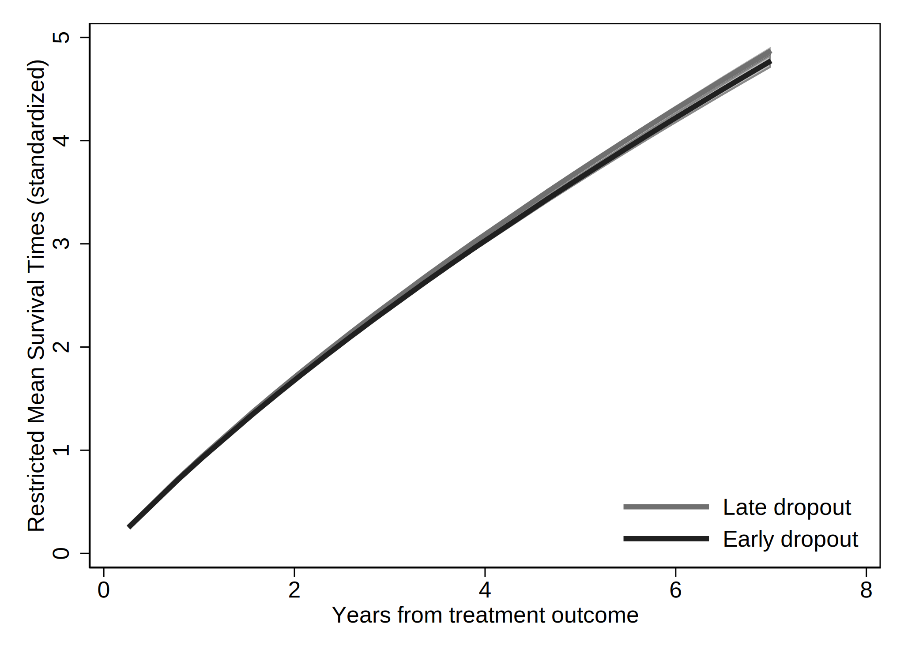

. clear all
. cap noi which tabout
C:\Users\CISS Fondecyt\ado\plus\t\tabout.ado
*! 2.0.8 Ian Watson 15mar2019
*! tabout version 3 (beta) available at: http://tabout.net.au
. if _rc==111 {
. cap noi ssc install tabout
. }
. cap noi which pathutil
C:\Users\CISS Fondecyt\ado\plus\p\pathutil.ado
*! version 2.2.0 19nov2020 daniel klein
. if _rc==111 {
. cap noi net install pathutil, from("http://fmwww.bc.edu/repec/bocode/p/")
. }
. cap noi which pathutil
C:\Users\CISS Fondecyt\ado\plus\p\pathutil.ado
*! version 2.2.0 19nov2020 daniel klein
. if _rc==111 {
. ssc install dirtools
. }
. cap noi which project
C:\Users\CISS Fondecyt\ado\plus\p\project.ado
*! version 1.3.1 22dec2013 picard@netbox.com
. if _rc==111 {
. ssc install project
. }
. cap noi which stipw
C:\Users\CISS Fondecyt\ado\plus\s\stipw.ado
*! Version 1.0.0 17Jan2022
. if _rc==111 {
. ssc install stipw
. }
. cap noi which stpm2
C:\Users\CISS Fondecyt\ado\plus\s\stpm2.ado
*! version 1.7.5 May2021
. if _rc==111 {
. ssc install stpm2
. }
. cap noi which rcsgen
C:\Users\CISS Fondecyt\ado\plus\r\rcsgen.ado
*! version 1.5.9 13FEB2022
. if _rc==111 {
. ssc install rcsgen
. }
. cap noi which matselrc
C:\Users\CISS Fondecyt\ado\plus\m\matselrc.ado
*! NJC 1.1.0 20 Apr 2000 (STB-56: dm79)
. if _rc==111 {
. cap noi net install dm79, from(http://www.stata.com/stb/stb56)
. }
. cap noi which stpm2_standsurv
C:\Users\CISS Fondecyt\ado\plus\s\stpm2_standsurv.ado
*! version 1.1.2 12Jun2018
. if _rc==111 {
. cap noi net install stpm2_standsurv.pkg, from(http://fmwww.bc.edu/RePEc/bocode/s)
. }
. cap noi which fs
C:\Users\CISS Fondecyt\ado\plus\f\fs.ado
*! NJC 1.0.5 23 November 2006
. if _rc==111 {
. ssc install fs
. }
. cap noi which mkspline2
C:\Users\CISS Fondecyt\ado\plus\m\mkspline2.ado
*! version 1.0.0 MLB 04Apr2009
. if _rc==111 {
. ssc install postrcspline
. }
.
Date created: 20:54:18 25 Mar 2023.
Get the folder
C:\Users\CISS Fondecyt\Mi unidad\Alvacast\SISTRAT 2022 (github)
Fecha: 25 Mar 2023, considerando un SO Windows para el usuario: CISS Fondecyt
Path data= ;
Tiempo: 25 Mar 2023, considerando un SO Windows
The file is located and named as: C:\Users\CISS Fondecyt\Mi unidad\Alvacast\SISTRAT 2022 (github)fiscalia_mariel_oct_2022_match_SENDA.dta
=============================================================================
=============================================================================
We open the files
. use "fiscalia_mariel_feb_2023_match_SENDA.dta", clear
.
. *b) select 10% of the data
. /*
> set seed 2125
> sample 10
> */
.
.
. fs mariel_ags_*.do
mariel_ags_b.do mariel_ags_b_miss.do
. di "`r(dofile)'"
.
. *tostring tr_modality, gen(tr_modality_str)
.
. cap noi encode tr_modality_str, gen(newtr_modality)
variable tr_modality_str not found
. cap confirm variable newtr_modality
. if !_rc {
. cap noi drop tr_modality
. cap noi rename newtr_modality tr_modality
. }
.
. cap noi encode condicion_ocupacional_cor, gen(newcondicion_ocupacional_cor)
not possible with numeric variable
. cap confirm variable newcondicion_ocupacional_cor
. if !_rc {
. cap noi drop condicion_ocupacional_cor
. cap noi rename newcondicion_ocupacional_cor condicion_ocupacional_cor
. }
.
. cap noi encode tipo_centro, gen(newtipo_centro)
variable tipo_centro not found
. cap confirm variable newtipo_centro
. if !_rc {
. cap noi drop tipo_centro
. cap noi rename newtipo_centro tipo_centro
. }
.
. cap noi encode sus_ini_mod_mvv, gen(newsus_ini_mod_mvv)
. cap confirm variable newsus_ini_mod_mvv
. if !_rc {
. cap noi drop sus_ini_mod_mvv
. cap noi rename newsus_ini_mod_mvv sus_ini_mod_mvv
. }
.
. cap noi encode dg_trs_cons_sus_or, gen(newdg_trs_cons_sus_or)
. cap confirm variable newdg_trs_cons_sus_or
. if !_rc {
. cap noi drop dg_trs_cons_sus_or
. cap noi rename newdg_trs_cons_sus_or dg_trs_cons_sus_or
. }
.
. cap noi encode con_quien_vive_joel, gen(newcon_quien_vive_joel)
. cap confirm variable newcon_quien_vive_joel
. if !_rc {
. cap noi drop con_quien_vive_joel
. cap noi rename newcon_quien_vive_joel con_quien_vive_joel
. }
.
.
. *order and encode
. cap noi decode freq_cons_sus_prin, gen(str_freq_cons_sus_prin)
. cap confirm variable str_freq_cons_sus_prin
. if !_rc {
. cap noi drop freq_cons_sus_prin
. label def freq_cons_sus_prin2 1 "Less than 1 day a week" 2 "1 day a week or more" 3 "2 to 3 days a week" 4 "4 to 6 days a week" 5 "Daily"
. encode str_freq_cons_sus_prin, gen(freq_cons_sus_prin) label (freq_cons_sus_prin2)
. }
. cap noi decode dg_trs_cons_sus_or, gen(str_dg_trs_cons_sus_or)
. cap confirm variable str_dg_trs_cons_sus_or
. if !_rc {
. cap noi drop dg_trs_cons_sus_or
. cap label def dg_trs_cons_sus_or2 1 "Hazardous consumption" 2 "Drug dependence"
. encode str_dg_trs_cons_sus_or, gen(dg_trs_cons_sus_or) label (dg_trs_cons_sus_or2)
. }
.
.
. cap noi encode escolaridad_rec, gen(esc_rec)
not possible with numeric variable
. cap noi encode sex, generate(sex_enc)
. cap noi encode sus_principal_mod, gen(sus_prin_mod)
not possible with numeric variable
. cap noi encode freq_cons_sus_prin, gen(fr_sus_prin)
not possible with numeric variable
. cap noi encode compromiso_biopsicosocial, gen(comp_biosoc)
variable compromiso_biopsicosocial not found
. cap noi encode tenencia_de_la_vivienda_mod, gen(ten_viv)
not possible with numeric variable
. *encode dg_cie_10_rec, generate(dg_cie_10_mental_h) *already numeric
. cap noi encode dg_trs_cons_sus_or, gen(sud_severity_icd10)
not possible with numeric variable
. cap noi encode macrozona, gen(macrozone)
not possible with numeric variable
.
. /*
> *2023-02-28, not done in R
> cap noi recode numero_de_hijos_mod (0=0 "No children") (1/10=1 "Children"), gen(newnumero_de_hijos_mod)
> cap confirm variable newnumero_de_hijos_mod
> if !_rc {
> drop numero_de_hijos_mod
> cap noi rename newnumero_de_hijos_mod numero_de_hijos_mod
> }
> */
. mkspline2 rc_x = edad_al_ing_1, cubic nknots(4) displayknots
| knot1 knot2 knot3 knot4
-------------+--------------------------------------------
edad_al_in~1 | 21.18685 29.99178 38.92615 56.32477
.
. *not necessary: 2023-02-28
. *gen motivodeegreso_mod_imp_rec3 = 1
. *replace motivodeegreso_mod_imp_rec3 = 2 if strpos(motivodeegreso_mod_imp_rec,"Early")>0
. *replace motivodeegreso_mod_imp_rec3 = 3 if strpos(motivodeegreso_mod_imp_rec,"Late")>0
.
. *encode policonsumo, generate(policon) *already numeric
. // Generate a restricted cubic spline variable for a variable "x" with 4 knots
. *https://chat.openai.com/chat/4a9396cd-2caa-4a2e-b5f4-ed2c2d0779b3
. *https://www.stata.com/meeting/nordic-and-baltic15/abstracts/materials/sweden15_oskarsson.pdf
. *mkspline xspline = edad_al_ing_1, cubic nknots(4)
. *gen rcs_x = xspline1*xspline2 xspline3 xspline4
.
. *https://www.statalist.org/forums/forum/general-stata-discussion/general/1638622-comparing-cox-proportional-hazard-linear-and-non-linear-restricted-
> cubic-spline-models-using-likelihood-ratio-test
.
We show a table of missing values
. /*
>
> vars_cov<-c("motivodeegreso_mod_imp_rec", "tr_modality", "edad_al_ing_1", "sex", "edad_ini_cons", "escolaridad_rec", "sus_principal_mod", "freq_cons
> _sus_prin", "condicion_ocupacional_corr", "policonsumo", "num_hijos_mod_joel_bin", "tenencia_de_la_vivienda_mod", "macrozona", "n_off_vio", "n_off_a
> cq", "n_off_sud", "n_off_oth", "dg_cie_10_rec", "dg_trs_cons_sus_or", "clas_r", "porc_pobr", "sus_ini_mod_mvv", "ano_nac_corr", "con_quien_vive_joel
> ", "fis_comorbidity_icd_10")
>
> */
.
. misstable sum motivodeegreso_mod_imp_rec tr_modality edad_al_ing_1 sex_enc edad_ini_cons escolaridad_rec sus_principal_mod freq_cons_sus_prin condic
> ion_ocupacional_cor policonsumo num_hijos_mod_joel_bin tenencia_de_la_vivienda_mod macrozona n_off_vio n_off_acq n_off_sud n_off_oth dg_cie_10_rec d
> g_trs_cons_sus_or clas_r porc_pobr sus_ini_mod_mvv ano_nac_corr con_quien_vive_joel fis_comorbidity_icd_10
Obs<.
+------------------------------
| | Unique
Variable | Obs=. Obs>. Obs<. | values Min Max
-------------+--------------------------------+------------------------------
motivodeeg~c | 9 70,854 | 3 1 3
tr_modality | 68 70,795 | 2 1 2
edad_ini_c~s | 5,924 64,939 | 68 5 74
escolarida~c | 317 70,546 | 3 1 3
sus_princi~d | 1 70,862 | 5 1 5
freq_cons_~n | 355 70,508 | 5 1 5
condicion_~r | 1 70,862 | 6 1 6
num_hijos_~n | 604 70,259 | 2 0 1
tenencia_d~d | 4,058 66,805 | 5 1 5
macrozona | 16 70,847 | 3 1 3
dg_trs_con~r | 1 70,862 | 2 1 2
clas_r | 2 70,861 | 3 1 3
porc_pobr | 2 70,861 | >500 .0003295 .6305783
sus_ini_mo~v | 5,787 65,076 | 5 1 5
con_quien_~l | 1 70,862 | 4 1 4
-----------------------------------------------------------------------------
And missing patterns
. misstable pat motivodeegreso_mod_imp_rec tr_modality edad_al_ing_1 sex_enc edad_ini_cons escolaridad_rec sus_principal_mod freq_cons_sus_prin condic
> ion_ocupacional_cor policonsumo num_hijos_mod_joel_bin tenencia_de_la_vivienda_mod macrozona n_off_vio n_off_acq n_off_sud n_off_oth dg_cie_10_rec d
> g_trs_cons_sus_or clas_r porc_pobr sus_ini_mod_mvv ano_nac_corr con_quien_vive_joel fis_comorbidity_icd_10
Missing-value patterns
(1 means complete)
| Pattern
Percent | 1 2 3 4 5 6 7 8 9 10 11 12 13 14 15
------------+----------------------------------------------------
85% | 1 1 1 1 1 1 1 1 1 1 1 1 1 1 1
|
7 | 1 1 1 1 1 1 1 1 1 1 1 1 1 0 0
5 | 1 1 1 1 1 1 1 1 1 1 1 1 0 1 1
<1 | 1 1 1 1 1 1 1 1 1 1 1 0 1 1 1
<1 | 1 1 1 1 1 1 1 1 1 1 1 1 0 0 0
<1 | 1 1 1 1 1 1 1 1 1 1 1 1 1 1 0
<1 | 1 1 1 1 1 1 1 1 1 1 0 1 1 1 1
<1 | 1 1 1 1 1 1 1 1 1 0 1 1 1 1 1
<1 | 1 1 1 1 1 1 1 1 1 1 1 1 1 0 1
<1 | 1 1 1 1 1 1 1 1 1 1 0 1 0 1 1
<1 | 1 1 1 1 1 1 1 1 0 1 1 1 1 1 1
<1 | 1 1 1 1 1 1 1 1 1 0 1 1 1 0 0
<1 | 1 1 1 1 1 1 1 1 1 1 1 0 1 0 0
<1 | 1 1 1 1 1 1 1 1 1 0 1 1 0 1 1
<1 | 1 1 1 1 1 1 1 1 1 1 0 1 0 0 0
<1 | 1 1 1 1 1 1 1 1 1 1 0 1 1 0 0
<1 | 1 1 1 1 1 1 1 1 1 1 1 1 0 1 0
<1 | 1 1 1 1 1 1 1 1 1 1 1 0 0 1 1
<1 | 1 1 1 1 1 1 1 1 1 1 1 1 0 0 1
<1 | 1 1 1 1 1 1 1 1 1 0 1 1 0 0 0
<1 | 1 1 1 1 1 1 1 1 0 1 1 1 0 1 1
<1 | 1 1 1 1 1 1 1 0 1 1 1 1 0 1 1
<1 | 1 1 1 1 1 1 0 1 1 1 1 1 1 1 1
<1 | 1 1 1 1 1 1 1 0 1 1 1 1 1 1 0
<1 | 1 1 1 1 1 1 1 0 1 1 1 1 1 1 1
<1 | 1 1 1 1 1 1 1 1 1 0 1 1 0 1 0
<1 | 1 1 1 1 1 1 1 1 1 0 1 1 1 1 0
<1 | 1 1 1 1 1 1 1 1 0 1 1 1 1 0 0
<1 | 1 1 1 1 1 1 1 1 1 0 0 1 1 1 1
<1 | 0 0 0 0 1 1 1 1 1 0 0 1 0 0 0
<1 | 1 1 1 1 0 0 1 1 0 1 1 1 1 1 1
<1 | 1 1 1 1 0 0 1 1 1 1 1 1 1 1 1
<1 | 1 1 1 1 1 1 0 0 1 1 1 1 1 1 1
<1 | 1 1 1 1 1 1 0 1 1 0 1 1 1 1 1
<1 | 1 1 1 1 1 1 0 1 1 1 1 1 1 0 0
<1 | 1 1 1 1 1 1 1 0 1 1 1 0 1 1 0
<1 | 1 1 1 1 1 1 1 0 1 1 1 1 0 1 0
<1 | 1 1 1 1 1 1 1 1 1 0 0 1 0 0 0
<1 | 1 1 1 1 1 1 1 1 1 0 0 1 0 1 1
<1 | 1 1 1 1 1 1 1 1 1 0 0 1 1 0 0
<1 | 1 1 1 1 1 1 1 1 1 0 1 0 1 0 0
<1 | 1 1 1 1 1 1 1 1 1 0 1 0 1 1 1
<1 | 1 1 1 1 1 1 1 1 1 0 1 1 1 0 1
<1 | 1 1 1 1 1 1 1 1 1 1 0 0 0 1 1
<1 | 1 1 1 1 1 1 1 1 1 1 0 0 1 1 1
<1 | 1 1 1 1 1 1 1 1 1 1 0 1 0 1 0
<1 | 1 1 1 1 1 1 1 1 1 1 0 1 1 0 1
<1 | 1 1 1 1 1 1 1 1 1 1 1 0 0 1 0
<1 | 1 1 1 1 1 1 1 1 1 1 1 0 1 0 1
<1 | 1 1 1 1 1 1 1 1 1 1 1 0 1 1 0
------------+----------------------------------------------------
100% |
Variables are (1) con_quien_vive_joel (2) condicion_ocupacional_corr (3) dg_trs_cons_sus_or (4) sus_principal_mod (5) clas_r (6) porc_pobr
(7) motivodeegreso_mod_imp_rec (8) macrozona (9) tr_modality (10) escolaridad_rec (11) freq_cons_sus_prin
(12) num_hijos_mod_joel_bin (13) tenencia_de_la_vivienda_mod (14) sus_ini_mod_mvv (15) edad_ini_cons
=============================================================================
=============================================================================
Reset-time
. *if missing offender_d (status) , means that there was a record and the time is the time of offense
.
. *set the indicator
. gen event=0
. replace event=1 if !missing(offender_d)
(22,287 real changes made)
. *replace event=1 if !missing(sex)
.
. *correct time to event if _st=0
. gen diff= age_offending_imp-edad_al_egres_imp
. gen diffc= cond(diff<0.001, 0.001, diff)
. drop diff
. rename diffc diff
. lab var diff "Time to offense leading to condemnatory sentence"
.
. *age time
. *stset age_offending_imp, fail(event ==1) enter(edad_al_egres_imp)
. *reset time
. stset diff, failure(event ==1)
failure event: event == 1
obs. time interval: (0, diff]
exit on or before: failure
------------------------------------------------------------------------------
70,863 total observations
0 exclusions
------------------------------------------------------------------------------
70,863 observations remaining, representing
22,287 failures in single-record/single-failure data
229,620.93 total analysis time at risk and under observation
at risk from t = 0
earliest observed entry t = 0
last observed exit t = 10.75828
.
. stdescribe, weight
failure _d: event == 1
analysis time _t: diff
|-------------- per subject --------------|
Category total mean min median max
------------------------------------------------------------------------------
no. of subjects 70863
no. of records 70863 1 1 1 1
(first) entry time 0 0 0 0
(final) exit time 3.24035 .001 2.665753 10.75828
subjects with gap 0
time on gap if gap 0
time at risk 229620.93 3.24035 .001 2.665753 10.75828
failures 22287 .3145083 0 0 1
------------------------------------------------------------------------------
We calculate the incidence rate.
. stsum, by (motivodeegreso_mod_imp_rec)
failure _d: event == 1
analysis time _t: diff
| Incidence Number of |------ Survival time -----|
motivo~c | Time at risk rate subjects 25% 50% 75%
---------+---------------------------------------------------------------------
Treatmen | 63,974.7824 .0597892 19276 4.744892 . .
Treatmen | 46,815.0931 .1309407 15797 1.465064 6.881935 .
Treatmen | 118,806.628 .1037484 35781 2.048496 . .
---------+---------------------------------------------------------------------
Total | 229,596.504 .0970442 70854 2.297946 . .
. *Micki Hill & Paul C Lambert & Michael J Crowther, 2021. "Introducing stipw: inverse probability weighted parametric survival models," London Stata
> Conference 2021 15, Stata Users Group.
. *https://view.officeapps.live.com/op/view.aspx?src=http%3A%2F%2Ffmwww.bc.edu%2Frepec%2Fusug2021%2Fusug21_hill.pptx&wdOrigin=BROWSELINK
.
. *Treatment variable should be a binary variable with values 0 and 1.
. gen motivodeegreso_mod_imp_rec2 = 0
. replace motivodeegreso_mod_imp_rec2 = 1 if motivodeegreso_mod_imp_rec==2
(15,797 real changes made)
. replace motivodeegreso_mod_imp_rec2 = 1 if motivodeegreso_mod_imp_rec==3
(35,781 real changes made)
.
. recode motivodeegreso_mod_imp_rec2 (0=1 "Tr Completion") (1=0 "Tr Non-completion (Late & Early)"), gen(caus_disch_mod_imp_rec)
(70863 differences between motivodeegreso_mod_imp_rec2 and caus_disch_mod_imp_rec)
.
. cap noi gen motegr_dum3= motivodeegreso_mod_imp_rec2
. replace motegr_dum3 = 0 if motivodeegreso_mod_imp_rec==2
(15,797 real changes made)
. cap noi gen motegr_dum2= motivodeegreso_mod_imp_rec2
. replace motegr_dum2 = 0 if motivodeegreso_mod_imp_rec==3
(35,781 real changes made)
. lab var motegr_dum3 "Baseline treatment outcome(dich, 1= Late Dropout)"
. lab var motegr_dum2 "Baseline treatment outcome(dich, 1= Early Dropout)"
. lab var caus_disch_mod_imp_rec "Baseline treatment outcome(dich)"
.
.
. *Factor variables not allowed for tvc() option. Create your own dummy varibles.
. gen motivodeegreso_mod_imp_rec_earl = 1
. replace motivodeegreso_mod_imp_rec_earl = 0 if motivodeegreso_mod_imp_rec==1
(19,276 real changes made)
. replace motivodeegreso_mod_imp_rec_earl = 0 if motivodeegreso_mod_imp_rec==3
(35,781 real changes made)
.
. gen motivodeegreso_mod_imp_rec_late = 1
. replace motivodeegreso_mod_imp_rec_late = 0 if motivodeegreso_mod_imp_rec==1
(19,276 real changes made)
. replace motivodeegreso_mod_imp_rec_late = 0 if motivodeegreso_mod_imp_rec==2
(15,797 real changes made)
.
. *recode motivodeegreso_mod_imp_rec_earl (1=1 "Early dropout") (0=0 "Tr. comp & Late dropout"), gen(newmotivodeegreso_mod_imp_rec_e)
. *recode motivodeegreso_mod_imp_rec_late (1=1 "Late dropout") (0=0 "Tr. comp & Early dropout"), gen(newmotivodeegreso_mod_imp_rec_l)
.
. lab var motivodeegreso_mod_imp_rec_earl "Baseline treatment outcome- Early dropout(dich)"
. lab var motivodeegreso_mod_imp_rec_late "Baseline treatment outcome- Late dropout(dich)"
.
. cap noi rename motivodeegreso_mod_imp_rec_late mot_egr_late
. cap noi rename motivodeegreso_mod_imp_rec_earl mot_egr_early
=============================================================================
=============================================================================
We generated a graph with every type of treatment and the Nelson-Aalen estimate.
. sts graph, na by (motivodeegreso_mod_imp_rec) ci ///
> title("Comission of an offense (cond. sentence)") ///
> subtitle("Nelson-Aalen Cum Hazards w/ Confidence Intervals 95%") ///
> risktable(, size(*.5) order(1 "Tr Completion" 2 "Early Disch" 3 "Late Disch")) ///
> ytitle("Cum. Hazards") ylabel(#8) ///
> xtitle("Years since tr. outcome") xlabel(#8) ///
> note("Source: nDP, SENDA's SUD Treatments & POs Office Data period 2010-2019 ") ///
> legend(rows(3)) ///
> legend(cols(4)) ///
> graphregion(color(white) lwidth(large)) bgcolor(white) ///
> plotregion(fcolor(white)) graphregion(fcolor(white) ) /// //text(.5 1 "IR = <0.001") ///
> legend(order(1 "95CI Tr Completion" 2 "Tr Completion" 3 "95CI Early Tr Disch" 4 "Early Tr Disch " 5 "95CI Late Tr Disch" 6 "Late Tr Disch" )size(*.5
> )region(lstyle(none)) region(c(none)) nobox)
failure _d: event == 1
analysis time _t: diff
(note: named style large not found in class linewidth, default attributes used)
(note: linewidth not found in scheme, default attributes used)
(note: named style large not found in class linewidth, default attributes used)
(note: linewidth not found in scheme, default attributes used)
. graph save "`c(pwd)'\_figs\tto_2023.gph", replace
(file C:\Users\CISS Fondecyt\Mi unidad\Alvacast\SISTRAT 2022 (github)\_figs\tto_2023.gph saved)
=============================================================================
=============================================================================
. /*
> vars_cov<-c("motivodeegreso_mod_imp_rec", "tr_modality", "edad_al_ing_1", "sex", "edad_ini_cons", "escolaridad_rec", "sus_principal_mod", "freq_cons
> _sus_prin", "condicion_ocupacional_corr", "policonsumo", "num_hijos_mod_joel_bin", "tenencia_de_la_vivienda_mod", "macrozona", "n_off_vio", "n_off_a
> cq", "n_off_sud", "n_off_oth", "dg_cie_10_rec", "dg_trs_cons_sus_or", "clas_r", "porc_pobr", "sus_ini_mod_mvv", "ano_nac_corr", "con_quien_vive_joe
> l", "fis_comorbidity_icd_10")
> */
.
. global covs "i.motivodeegreso_mod_imp_rec i.tr_modality i.sex_enc edad_ini_cons i.escolaridad_rec i.sus_principal_mod i.freq_cons_sus_prin i.condici
> on_ocupacional_cor i.policonsumo i.num_hijos_mod_joel_bin i.tenencia_de_la_vivienda_mod i.macrozona i.n_off_vio i.n_off_acq i.n_off_sud i.n_off_oth
> i.dg_cie_10_rec i.dg_trs_cons_sus_or i.clas_r porc_pobr i.sus_ini_mod_mvv ano_nac_corr i.con_quien_vive_joel i.fis_comorbidity_icd_10"
.
.
. qui noi stcox $covs edad_al_ing_1, efron robust nolog schoenfeld(sch_a*) scaledsch(sca_a*) //change _a
failure _d: event == 1
analysis time _t: diff
Cox regression -- Efron method for ties
No. of subjects = 60,247 Number of obs = 60,247
No. of failures = 17,721
Time at risk = 182350.221
Wald chi2(49) = 8659.03
Log pseudolikelihood = -181641.09 Prob > chi2 = 0.0000
-------------------------------------------------------------------------------------------------------------
| Robust
_t | Haz. Ratio Std. Err. z P>|z| [95% Conf. Interval]
--------------------------------------------+----------------------------------------------------------------
motivodeegreso_mod_imp_rec |
Treatment non-completion (Early) | 1.640931 .0453189 17.93 0.000 1.554469 1.732203
Treatment non-completion (Late) | 1.526359 .0328619 19.64 0.000 1.463291 1.592145
|
tr_modality |
Residential | 1.220076 .0272364 8.91 0.000 1.167845 1.274643
|
sex_enc |
Women | .7603781 .0165423 -12.59 0.000 .7286373 .7935016
edad_ini_cons | .9869505 .001961 -6.61 0.000 .9831145 .9908016
|
escolaridad_rec |
2-Completed high school or less | .9681199 .0172794 -1.82 0.069 .9348384 1.002586
1-More than high school | .8952306 .023671 -4.19 0.000 .8500179 .9428481
|
sus_principal_mod |
Cocaine hydrochloride | 1.076641 .0300722 2.64 0.008 1.019285 1.137225
Cocaine paste | 1.406312 .0332757 14.41 0.000 1.342582 1.473067
Marijuana | 1.078149 .0383255 2.12 0.034 1.005589 1.155944
Other | 1.140282 .0836116 1.79 0.073 .9876373 1.316518
|
freq_cons_sus_prin |
1 day a week or more | .9198352 .0447506 -1.72 0.086 .8361775 1.011863
2 to 3 days a week | .996672 .0397097 -0.08 0.933 .9218037 1.077621
4 to 6 days a week | 1.008517 .0423414 0.20 0.840 .9288517 1.095014
Daily | 1.030179 .0412302 0.74 0.458 .9524573 1.114242
|
condicion_ocupacional_corr |
Inactive | 1.002871 .0312856 0.09 0.927 .9433891 1.066103
Looking for a job for the first time | .9995578 .1454761 -0.00 0.998 .7514907 1.329512
No activity | 1.095422 .040855 2.44 0.015 1.018204 1.178495
Not seeking for work | 1.153402 .0912059 1.80 0.071 .9878054 1.346759
Unemployed | 1.128021 .0208681 6.51 0.000 1.087853 1.169672
|
1.policonsumo | 1.036007 .0228394 1.60 0.109 .9921956 1.081752
1.num_hijos_mod_joel_bin | 1.17537 .0232028 8.19 0.000 1.130762 1.221738
|
tenencia_de_la_vivienda_mod |
Others | .9741906 .0767373 -0.33 0.740 .8348232 1.136824
Owner/Transferred dwellings/Pays Dividends | .8590365 .0581381 -2.25 0.025 .7523221 .980888
Renting | .8961825 .0611308 -1.61 0.108 .7840323 1.024375
Stays temporarily with a relative | .8652866 .0586741 -2.13 0.033 .7576018 .9882776
|
macrozona |
North | 1.302394 .0277987 12.38 0.000 1.249034 1.358035
South | 1.462253 .0431587 12.87 0.000 1.380064 1.549337
|
n_off_vio |
1 | 1.354563 .0269553 15.25 0.000 1.302749 1.408438
|
n_off_acq |
1 | 1.81426 .0341157 31.68 0.000 1.748611 1.882373
|
n_off_sud |
1 | 1.257937 .0243725 11.84 0.000 1.211064 1.306625
|
n_off_oth |
1 | 1.363302 .0268153 15.76 0.000 1.311745 1.416885
|
dg_cie_10_rec |
Diagnosis unknown (under study) | 1.072721 .0263818 2.85 0.004 1.02224 1.125695
With psychiatric comorbidity | 1.060482 .0189889 3.28 0.001 1.02391 1.098361
|
dg_trs_cons_sus_or |
Drug dependence | 1.019773 .0196989 1.01 0.311 .9818858 1.059123
|
clas_r |
Mixta | 1.026849 .0294271 0.92 0.355 .9707624 1.086175
Rural | 1.055579 .0331032 1.72 0.085 .992652 1.122496
|
porc_pobr | 1.233906 .1479801 1.75 0.080 .9754369 1.560865
|
sus_ini_mod_mvv |
Cocaine hydrochloride | 1.09495 .0465753 2.13 0.033 1.007365 1.190149
Cocaine paste | 1.126568 .0391883 3.43 0.001 1.05232 1.206055
Marijuana | 1.078014 .0196357 4.12 0.000 1.040208 1.117195
Other | 1.134184 .0585126 2.44 0.015 1.025109 1.254866
|
ano_nac_corr | .8740911 .0037904 -31.03 0.000 .8666935 .8815519
|
con_quien_vive_joel |
Family of origin | .971674 .0319909 -0.87 0.383 .9109533 1.036442
Others | .9921163 .0400834 -0.20 0.845 .9165843 1.073873
With couple/children | .9562995 .0304117 -1.41 0.160 .8985132 1.017802
|
fis_comorbidity_icd_10 |
Diagnosis unknown (under study) | 1.026027 .0169354 1.56 0.120 .9933652 1.059762
One or more | .8962302 .033986 -2.89 0.004 .8320339 .9653795
|
edad_al_ing_1 | .85001 .0037614 -36.72 0.000 .8426696 .8574144
-------------------------------------------------------------------------------------------------------------
. qui noi estat phtest, log detail
Test of proportional-hazards assumption
Time: Log(t)
----------------------------------------------------------------
| rho chi2 df Prob>chi2
------------+---------------------------------------------------
1b.motivod~c| . . 1 .
2.motivode~c| -0.03742 25.74 1 0.0000
3.motivode~c| -0.02670 12.72 1 0.0004
1b.tr_moda~y| . . 1 .
2.tr_modal~y| 0.00113 0.02 1 0.8748
1b.sex_enc | . . 1 .
2.sex_enc | -0.00388 0.28 1 0.5963
edad_ini_c~s| -0.00174 0.06 1 0.8127
1b.escolar~c| . . 1 .
2.escolari~c| 0.00220 0.09 1 0.7629
3.escolari~c| -0.00223 0.09 1 0.7629
1b.sus_pri~d| . . 1 .
2.sus_prin~d| 0.00378 0.26 1 0.6104
3.sus_prin~d| -0.00300 0.17 1 0.6796
4.sus_prin~d| 0.00476 0.41 1 0.5197
5.sus_prin~d| -0.00469 0.42 1 0.5183
1b.freq_co~n| . . 1 .
2.freq_con~n| 0.00374 0.25 1 0.6196
3.freq_con~n| -0.00623 0.70 1 0.4031
4.freq_con~n| -0.00830 1.26 1 0.2626
5.freq_con~n| -0.00937 1.61 1 0.2049
1b.condici~r| . . 1 .
2.condicio~r| -0.00459 0.38 1 0.5402
3.condicio~r| -0.00577 0.63 1 0.4263
4.condicio~r| -0.00443 0.38 1 0.5364
5.condicio~r| 0.00376 0.27 1 0.6037
6.condicio~r| -0.02085 7.87 1 0.0050
0b.policon~o| . . 1 .
1.policons~o| 0.00034 0.00 1 0.9632
0b.num_hij~n| . . 1 .
1.num_hijo~n| 0.00150 0.04 1 0.8370
1b.tenenci~d| . . 1 .
2.tenencia~d| 0.00332 0.21 1 0.6457
3.tenencia~d| 0.00875 1.47 1 0.2249
4.tenencia~d| 0.00864 1.42 1 0.2326
5.tenencia~d| 0.00888 1.52 1 0.2177
1b.macrozona| . . 1 .
2.macrozona | -0.00590 0.64 1 0.4252
3.macrozona | -0.00883 1.49 1 0.2229
1b.n_off_vio| . . 1 .
2.n_off_vio | -0.00821 1.32 1 0.2504
1b.n_off_acq| . . 1 .
2.n_off_acq | -0.06884 96.17 1 0.0000
1b.n_off_sud| . . 1 .
2.n_off_sud | -0.00684 0.93 1 0.3353
1b.n_off_oth| . . 1 .
2.n_off_oth | -0.00567 0.63 1 0.4264
1b.dg_cie_~c| . . 1 .
2.dg_cie_1~c| 0.00624 0.73 1 0.3928
3.dg_cie_1~c| -0.00886 1.42 1 0.2331
1b.dg_trs_~r| . . 1 .
2.dg_trs_c~r| 0.00759 1.04 1 0.3068
1b.clas_r | . . 1 .
2.clas_r | 0.00191 0.07 1 0.7941
3.clas_r | 0.01683 5.29 1 0.0215
porc_pobr | -0.02147 8.25 1 0.0041
1b.sus_ini~v| . . 1 .
2.sus_ini_~v| -0.00000 0.00 1 0.9999
3.sus_ini_~v| 0.00120 0.03 1 0.8658
4.sus_ini_~v| 0.00006 0.00 1 0.9933
5.sus_ini_~v| -0.00738 1.07 1 0.3008
ano_nac_corr| -0.01267 2.88 1 0.0897
1b.con_qui~l| . . 1 .
2.con_quie~l| -0.00073 0.01 1 0.9193
3.con_quie~l| -0.00876 1.44 1 0.2299
4.con_quie~l| 0.00740 1.03 1 0.3097
1b.fis_co~10| . . 1 .
2.fis_com~10| 0.00970 1.72 1 0.1903
3.fis_com~10| -0.00349 0.23 1 0.6350
edad_al_in~1| -0.01797 5.85 1 0.0156
------------+---------------------------------------------------
global test | 233.93 49 0.0000
----------------------------------------------------------------
note: robust variance-covariance matrix used.
. mat mat_scho_test = r(phtest)
. scalar chi2_scho_test = r(chi2)
. scalar chi2_scho_test_df = r(df)
. scalar chi2_scho_test_p = r(p)
.
. esttab matrix(mat_scho_test) using "mat_scho_test_02_2023_1.csv", replace
(output written to mat_scho_test_02_2023_1.csv)
. esttab matrix(mat_scho_test) using "mat_scho_test_02_2023_1.html", replace
(output written to mat_scho_test_02_2023_1.html)
.
Chi^2(49)= 233.93, p= 0
| mat_scho_test | ||||
| rho | chi2 | df | p | |
| 1b.motivodeegreso_mod_imp_rec | . | . | 1 | . |
| 2.motivodeegreso_mod_imp_rec | -.0374184 | 25.74029 | 1 | 3.91e-07 |
| 3.motivodeegreso_mod_imp_rec | -.0267036 | 12.72001 | 1 | .0003618 |
| 1b.tr_modality | . | . | 1 | . |
| 2.tr_modality | .001129 | .024845 | 1 | .8747539 |
| 1b.sex_enc | . | . | 1 | . |
| 2.sex_enc | -.0038832 | .2806434 | 1 | .5962798 |
| edad_ini_cons | -.001741 | .0561268 | 1 | .8127259 |
| 1b.escolaridad_rec | . | . | 1 | . |
| 2.escolaridad_rec | .0021994 | .0909986 | 1 | .7629115 |
| 3.escolaridad_rec | -.0022341 | .0910049 | 1 | .7629034 |
| 1b.sus_principal_mod | . | . | 1 | . |
| 2.sus_principal_mod | .0037818 | .2595933 | 1 | .6103997 |
| 3.sus_principal_mod | -.0030047 | .1705644 | 1 | .6796107 |
| 4.sus_principal_mod | .0047565 | .4145809 | 1 | .5196535 |
| 5.sus_principal_mod | -.0046852 | .4172157 | 1 | .5183296 |
| 1b.freq_cons_sus_prin | . | . | 1 | . |
| 2.freq_cons_sus_prin | .0037354 | .2463901 | 1 | .6196285 |
| 3.freq_cons_sus_prin | -.0062337 | .6990185 | 1 | .4031137 |
| 4.freq_cons_sus_prin | -.0083032 | 1.255146 | 1 | .262572 |
| 5.freq_cons_sus_prin | -.0093651 | 1.606805 | 1 | .2049415 |
| 1b.condicion_ocupacional_corr | . | . | 1 | . |
| 2.condicion_ocupacional_corr | -.0045918 | .3751419 | 1 | .5402147 |
| 3.condicion_ocupacional_corr | -.0057676 | .6329778 | 1 | .4262651 |
| 4.condicion_ocupacional_corr | -.0044324 | .3823335 | 1 | .536357 |
| 5.condicion_ocupacional_corr | .0037616 | .2693866 | 1 | .6037436 |
| 6.condicion_ocupacional_corr | -.0208453 | 7.874662 | 1 | .0050132 |
| 0b.policonsumo | . | . | 1 | . |
| 1.policonsumo | .0003398 | .0021318 | 1 | .9631737 |
| 0b.num_hijos_mod_joel_bin | . | . | 1 | . |
| 1.num_hijos_mod_joel_bin | .0015038 | .0423289 | 1 | .8369941 |
| 1b.tenencia_de_la_vivienda_mod | . | . | 1 | . |
| 2.tenencia_de_la_vivienda_mod | .0033167 | .2114201 | 1 | .6456566 |
| 3.tenencia_de_la_vivienda_mod | .0087547 | 1.472739 | 1 | .224914 |
| 4.tenencia_de_la_vivienda_mod | .0086379 | 1.424873 | 1 | .2326029 |
| 5.tenencia_de_la_vivienda_mod | .0088807 | 1.519263 | 1 | .217731 |
| 1b.macrozona | . | . | 1 | . |
| 2.macrozona | -.0059023 | .6358334 | 1 | .4252236 |
| 3.macrozona | -.0088319 | 1.485805 | 1 | .2228685 |
| 1b.n_off_vio | . | . | 1 | . |
| 2.n_off_vio | -.0082141 | 1.321189 | 1 | .2503788 |
| 1b.n_off_acq | . | . | 1 | . |
| 2.n_off_acq | -.0688426 | 96.16944 | 1 | 1.05e-22 |
| 1b.n_off_sud | . | . | 1 | . |
| 2.n_off_sud | -.0068392 | .9282351 | 1 | .335322 |
| 1b.n_off_oth | . | . | 1 | . |
| 2.n_off_oth | -.0056687 | .6325493 | 1 | .4264218 |
| 1b.dg_cie_10_rec | . | . | 1 | . |
| 2.dg_cie_10_rec | .0062403 | .7301724 | 1 | .3928273 |
| 3.dg_cie_10_rec | -.0088647 | 1.42202 | 1 | .2330712 |
| 1b.dg_trs_cons_sus_or | . | . | 1 | . |
| 2.dg_trs_cons_sus_or | .0075934 | 1.044501 | 1 | .306777 |
| 1b.clas_r | . | . | 1 | . |
| 2.clas_r | .0019084 | .0681312 | 1 | .7940775 |
| 3.clas_r | .0168254 | 5.289495 | 1 | .0214544 |
| porc_pobr | -.0214663 | 8.252284 | 1 | .0040701 |
| 1b.sus_ini_mod_mvv | . | . | 1 | . |
| 2.sus_ini_mod_mvv | -1.29e-06 | 3.09e-08 | 1 | .9998598 |
| 3.sus_ini_mod_mvv | .0012046 | .0285646 | 1 | .8657882 |
| 4.sus_ini_mod_mvv | .0000609 | .0000698 | 1 | .9933323 |
| 5.sus_ini_mod_mvv | -.0073829 | 1.070489 | 1 | .3008351 |
| ano_nac_corr | -.0126697 | 2.879508 | 1 | .0897134 |
| 1b.con_quien_vive_joel | . | . | 1 | . |
| 2.con_quien_vive_joel | -.0007326 | .0102736 | 1 | .9192657 |
| 3.con_quien_vive_joel | -.0087611 | 1.441696 | 1 | .2298651 |
| 4.con_quien_vive_joel | .0073995 | 1.031906 | 1 | .3097114 |
| 1b.fis_comorbidity_icd_10 | . | . | 1 | . |
| 2.fis_comorbidity_icd_10 | .0096988 | 1.715056 | 1 | .1903307 |
| 3.fis_comorbidity_icd_10 | -.0034896 | .2252921 | 1 | .6350368 |
| edad_al_ing_1 | -.0179697 | 5.845509 | 1 | .0156169 |
. // VERIFY FIRST SPLINE VARIABLE IS THE ORIGINAL VARIABLE
. assert float(edad_al_ing_1) == float(rc_x1)
.
. // MODEL WITH FULL SPLINE
. qui noi stcox $covs rc*
failure _d: event == 1
analysis time _t: diff
Iteration 0: log likelihood = -186538.49
Iteration 1: log likelihood = -181995.43
Iteration 2: log likelihood = -181627.59
Iteration 3: log likelihood = -181624.79
Iteration 4: log likelihood = -181624.79
Refining estimates:
Iteration 0: log likelihood = -181624.79
Cox regression -- Breslow method for ties
No. of subjects = 60,247 Number of obs = 60,247
No. of failures = 17,721
Time at risk = 182350.221
LR chi2(51) = 9827.42
Log likelihood = -181624.79 Prob > chi2 = 0.0000
-------------------------------------------------------------------------------------------------------------
_t | Haz. Ratio Std. Err. z P>|z| [95% Conf. Interval]
--------------------------------------------+----------------------------------------------------------------
motivodeegreso_mod_imp_rec |
Treatment non-completion (Early) | 1.640439 .0448334 18.11 0.000 1.554879 1.730707
Treatment non-completion (Late) | 1.525179 .0329473 19.54 0.000 1.461952 1.591141
|
tr_modality |
Residential | 1.219938 .0262569 9.24 0.000 1.169546 1.272502
|
sex_enc |
Women | .7600303 .0163312 -12.77 0.000 .7286865 .7927223
edad_ini_cons | .9868919 .0019513 -6.67 0.000 .9830748 .9907238
|
escolaridad_rec |
2-Completed high school or less | .9644452 .0168686 -2.07 0.038 .9319437 .9980802
1-More than high school | .8860692 .0234044 -4.58 0.000 .8413646 .933149
|
sus_principal_mod |
Cocaine hydrochloride | 1.068642 .0298079 2.38 0.017 1.011788 1.128691
Cocaine paste | 1.394623 .0326951 14.19 0.000 1.331992 1.4602
Marijuana | 1.077399 .0379003 2.12 0.034 1.005619 1.154303
Other | 1.147458 .0829531 1.90 0.057 .9958664 1.322126
|
freq_cons_sus_prin |
1 day a week or more | .9202213 .0450232 -1.70 0.089 .8360765 1.012835
2 to 3 days a week | .9968658 .0395665 -0.08 0.937 .9222565 1.077511
4 to 6 days a week | 1.008652 .0420346 0.21 0.836 .9295405 1.094496
Daily | 1.03039 .0409298 0.75 0.451 .9532119 1.113816
|
condicion_ocupacional_corr |
Inactive | 1.017792 .0318219 0.56 0.573 .9572944 1.082112
Looking for a job for the first time | 1.010183 .1424586 0.07 0.943 .7662344 1.331799
No activity | 1.103993 .039917 2.74 0.006 1.028465 1.185068
Not seeking for work | 1.161547 .0890163 1.95 0.051 .9995493 1.3498
Unemployed | 1.131996 .0207391 6.77 0.000 1.092069 1.173382
|
1.policonsumo | 1.027219 .0224342 1.23 0.219 .9841769 1.072144
1.num_hijos_mod_joel_bin | 1.165045 .0227519 7.82 0.000 1.121294 1.210502
|
tenencia_de_la_vivienda_mod |
Others | .9769365 .0741258 -0.31 0.758 .8419394 1.133579
Owner/Transferred dwellings/Pays Dividends | .8656333 .0566668 -2.20 0.028 .7613984 .984138
Renting | .8982897 .0593165 -1.62 0.104 .7892403 1.022406
Stays temporarily with a relative | .8691363 .0569356 -2.14 0.032 .7644114 .9882087
|
macrozona |
North | 1.303954 .0274016 12.63 0.000 1.251339 1.358781
South | 1.463329 .0421302 13.22 0.000 1.383042 1.548277
|
n_off_vio |
1 | 1.355668 .0258742 15.94 0.000 1.305892 1.407341
|
n_off_acq |
1 | 1.815862 .0324717 33.36 0.000 1.753321 1.880634
|
n_off_sud |
1 | 1.256652 .023308 12.32 0.000 1.211789 1.303175
|
n_off_oth |
1 | 1.36086 .0257499 16.28 0.000 1.311316 1.412277
|
dg_cie_10_rec |
Diagnosis unknown (under study) | 1.071388 .0257286 2.87 0.004 1.022129 1.123021
With psychiatric comorbidity | 1.058108 .0187995 3.18 0.001 1.021896 1.095604
|
dg_trs_cons_sus_or |
Drug dependence | 1.020128 .0195508 1.04 0.298 .9825196 1.059176
|
clas_r |
Mixta | 1.028003 .0287026 0.99 0.323 .9732586 1.085827
Rural | 1.05393 .0324271 1.71 0.088 .992252 1.119441
|
porc_pobr | 1.235832 .1463111 1.79 0.074 .9799071 1.558597
|
sus_ini_mod_mvv |
Cocaine hydrochloride | 1.095338 .0454923 2.19 0.028 1.009707 1.188231
Cocaine paste | 1.123555 .0372927 3.51 0.000 1.052789 1.199077
Marijuana | 1.082281 .0193464 4.42 0.000 1.045019 1.120871
Other | 1.130788 .0562395 2.47 0.013 1.025762 1.246567
|
ano_nac_corr | .8744412 .003747 -31.31 0.000 .867128 .881816
|
con_quien_vive_joel |
Family of origin | .970114 .0310493 -0.95 0.343 .9111279 1.032919
Others | .990901 .0389977 -0.23 0.816 .9173404 1.07036
With couple/children | .9521645 .0296225 -1.58 0.115 .8958402 1.01203
|
fis_comorbidity_icd_10 |
Diagnosis unknown (under study) | 1.02699 .0166776 1.64 0.101 .9948174 1.060204
One or more | .902069 .0336794 -2.76 0.006 .8384158 .9705546
|
rc_x1 | .8511987 .0048085 -28.52 0.000 .8418262 .8606755
rc_x2 | 1.02893 .0186499 1.57 0.116 .9930189 1.06614
rc_x3 | .8949623 .0414469 -2.40 0.017 .8173055 .9799976
-------------------------------------------------------------------------------------------------------------
. estat ic
Akaike's information criterion and Bayesian information criterion
-----------------------------------------------------------------------------
Model | N ll(null) ll(model) df AIC BIC
-------------+---------------------------------------------------------------
. | 60,247 -186538.5 -181624.8 51 363351.6 363810.9
-----------------------------------------------------------------------------
Note: BIC uses N = number of observations. See [R] BIC note.
. estimates store full_spline
. scalar ll_1= e(ll)
. // MODEL WITH ONLY LINEAR TERM
. qui noi stcox $covs rc_x1
failure _d: event == 1
analysis time _t: diff
Iteration 0: log likelihood = -186538.49
Iteration 1: log likelihood = -181928.16
Iteration 2: log likelihood = -181641.45
Iteration 3: log likelihood = -181641.09
Iteration 4: log likelihood = -181641.09
Refining estimates:
Iteration 0: log likelihood = -181641.09
Cox regression -- Breslow method for ties
No. of subjects = 60,247 Number of obs = 60,247
No. of failures = 17,721
Time at risk = 182350.221
LR chi2(49) = 9794.80
Log likelihood = -181641.09 Prob > chi2 = 0.0000
-------------------------------------------------------------------------------------------------------------
_t | Haz. Ratio Std. Err. z P>|z| [95% Conf. Interval]
--------------------------------------------+----------------------------------------------------------------
motivodeegreso_mod_imp_rec |
Treatment non-completion (Early) | 1.640931 .0448572 18.12 0.000 1.555327 1.731248
Treatment non-completion (Late) | 1.526359 .0329805 19.57 0.000 1.463068 1.592387
|
tr_modality |
Residential | 1.220076 .0262527 9.24 0.000 1.169692 1.272631
|
sex_enc |
Women | .7603781 .0163252 -12.76 0.000 .7290451 .7930577
edad_ini_cons | .9869505 .0019395 -6.68 0.000 .9831565 .9907592
|
escolaridad_rec |
2-Completed high school or less | .96812 .0168784 -1.86 0.063 .9355978 1.001773
1-More than high school | .8952306 .0234928 -4.22 0.000 .8503496 .9424803
|
sus_principal_mod |
Cocaine hydrochloride | 1.076641 .0300379 2.65 0.008 1.019349 1.137154
Cocaine paste | 1.406312 .0329083 14.57 0.000 1.34327 1.472313
Marijuana | 1.078149 .0379647 2.14 0.033 1.00625 1.155186
Other | 1.140282 .0825024 1.81 0.070 .9895225 1.314011
|
freq_cons_sus_prin |
1 day a week or more | .9198355 .0450045 -1.71 0.088 .8357256 1.01241
2 to 3 days a week | .9966722 .0395584 -0.08 0.933 .9220781 1.077301
4 to 6 days a week | 1.008517 .0420278 0.20 0.839 .9294181 1.094347
Daily | 1.030179 .0409185 0.75 0.454 .9530225 1.113582
|
condicion_ocupacional_corr |
Inactive | 1.002871 .0312071 0.09 0.927 .9435342 1.065939
Looking for a job for the first time | .9995583 .140908 -0.00 0.997 .7582528 1.317657
No activity | 1.095422 .0395151 2.53 0.012 1.020648 1.175674
Not seeking for work | 1.153403 .0883395 1.86 0.062 .9926294 1.340216
Unemployed | 1.128021 .0206456 6.58 0.000 1.088274 1.169221
|
1.policonsumo | 1.036006 .0226231 1.62 0.105 .9926016 1.081309
1.num_hijos_mod_joel_bin | 1.17537 .0226999 8.37 0.000 1.131711 1.220714
|
tenencia_de_la_vivienda_mod |
Others | .9741898 .0739177 -0.34 0.730 .8395716 1.130393
Owner/Transferred dwellings/Pays Dividends | .8590368 .0562188 -2.32 0.020 .755624 .9766024
Renting | .8961828 .0591747 -1.66 0.097 .7873939 1.020002
Stays temporarily with a relative | .8652868 .0566772 -2.21 0.027 .7610365 .9838179
|
macrozona |
North | 1.302394 .0273481 12.58 0.000 1.249881 1.357114
South | 1.462253 .0420898 13.20 0.000 1.382042 1.547119
|
n_off_vio |
1 | 1.354563 .0258581 15.90 0.000 1.304819 1.406204
|
n_off_acq |
1 | 1.814259 .0324601 33.29 0.000 1.751741 1.879008
|
n_off_sud |
1 | 1.257937 .0233224 12.38 0.000 1.213046 1.304489
|
n_off_oth |
1 | 1.363302 .025795 16.38 0.000 1.313671 1.414808
|
dg_cie_10_rec |
Diagnosis unknown (under study) | 1.072721 .0257597 2.92 0.003 1.023403 1.124417
With psychiatric comorbidity | 1.060483 .0188368 3.31 0.001 1.024198 1.098052
|
dg_trs_cons_sus_or |
Drug dependence | 1.019773 .0195358 1.02 0.307 .9821937 1.05879
|
clas_r |
Mixta | 1.026849 .0286656 0.95 0.343 .9721744 1.084598
Rural | 1.05558 .0324759 1.76 0.079 .993809 1.12119
|
porc_pobr | 1.233905 .1460345 1.78 0.076 .9784549 1.556047
|
sus_ini_mod_mvv |
Cocaine hydrochloride | 1.09495 .0454602 2.18 0.029 1.009378 1.187776
Cocaine paste | 1.126568 .0373791 3.59 0.000 1.055638 1.202265
Marijuana | 1.078014 .0192615 4.20 0.000 1.040916 1.116435
Other | 1.134184 .056436 2.53 0.011 1.028794 1.25037
|
ano_nac_corr | .8740912 .003746 -31.40 0.000 .86678 .881464
|
con_quien_vive_joel |
Family of origin | .971675 .0311249 -0.90 0.370 .9125469 1.034634
Others | .9921169 .0390539 -0.20 0.841 .9184509 1.071691
With couple/children | .9563003 .0297413 -1.44 0.151 .8997494 1.016406
|
fis_comorbidity_icd_10 |
Diagnosis unknown (under study) | 1.026027 .0166611 1.58 0.114 .9938858 1.059207
One or more | .89623 .033458 -2.93 0.003 .8329952 .9642651
|
rc_x1 | .85001 .0037112 -37.22 0.000 .8427673 .857315
-------------------------------------------------------------------------------------------------------------
. estat ic
Akaike's information criterion and Bayesian information criterion
-----------------------------------------------------------------------------
Model | N ll(null) ll(model) df AIC BIC
-------------+---------------------------------------------------------------
. | 60,247 -186538.5 -181641.1 49 363380.2 363821.5
-----------------------------------------------------------------------------
Note: BIC uses N = number of observations. See [R] BIC note.
. scalar ll_2= e(ll)
. estimates store linear_term
.
. lrtest full_spline linear_term
Likelihood-ratio test LR chi2(2) = 32.62
(Assumption: linear_term nested in full_spline) Prob > chi2 = 0.0000
.
. scalar ll_diff= round(`=scalar(ll_1)'-`=scalar(ll_2)',.01)
. di "Log-likelihood difference (spline - linear): `=scalar(ll_diff)'"
Log-likelihood difference (spline - linear): 16.31
.
. * the presence of censored observations makes it difficult to decide further among them. (This is partly due to the fact that both the Cox model and
> the parametric survival models assume that censoring is orthogonal to survival time, a mathematically handy assumption that is often demonstrably a
> nd seriously in error, and the actual data generation process for survival is often too unknown or too messy to simulate.) So in this context, relia
> nce on LR tests or IC statistics is a fallback position.
. *Micki Hill & Paul C Lambert & Michael J Crowther, 2021. "Introducing stipw: inverse probability weighted parametric survival models," London Stata
> Conference 2021 15, Stata Users Group.
. *https://view.officeapps.live.com/op/view.aspx?src=http%3A%2F%2Ffmwww.bc.edu%2Frepec%2Fusug2021%2Fusug21_hill.pptx&wdOrigin=BROWSELINK
.
. *Treatment variable should be a binary variable with values 0 and 1.
.
. qui noi stcox $covs rc_x*, efron robust nolog schoenfeld(sch_b*) scaledsch(sca_b*) //change _b
failure _d: event == 1
analysis time _t: diff
Cox regression -- Efron method for ties
No. of subjects = 60,247 Number of obs = 60,247
No. of failures = 17,721
Time at risk = 182350.221
Wald chi2(51) = 8492.18
Log pseudolikelihood = -181624.78 Prob > chi2 = 0.0000
-------------------------------------------------------------------------------------------------------------
| Robust
_t | Haz. Ratio Std. Err. z P>|z| [95% Conf. Interval]
--------------------------------------------+----------------------------------------------------------------
motivodeegreso_mod_imp_rec |
Treatment non-completion (Early) | 1.640439 .0452561 17.94 0.000 1.554094 1.731581
Treatment non-completion (Late) | 1.525179 .032817 19.62 0.000 1.462197 1.590875
|
tr_modality |
Residential | 1.219938 .0271833 8.92 0.000 1.167806 1.274397
|
sex_enc |
Women | .7600303 .016544 -12.61 0.000 .7282866 .7931576
edad_ini_cons | .9868919 .0019858 -6.56 0.000 .9830075 .9907917
|
escolaridad_rec |
2-Completed high school or less | .9644452 .017251 -2.02 0.043 .9312197 .9988561
1-More than high school | .8860691 .0235803 -4.55 0.000 .8410372 .9335122
|
sus_principal_mod |
Cocaine hydrochloride | 1.068642 .0297847 2.38 0.017 1.011831 1.128643
Cocaine paste | 1.394624 .0330222 14.05 0.000 1.33138 1.460871
Marijuana | 1.077399 .0382165 2.10 0.036 1.00504 1.154967
Other | 1.147458 .0841178 1.88 0.061 .993887 1.324758
|
freq_cons_sus_prin |
1 day a week or more | .920221 .0447254 -1.71 0.087 .8366066 1.012192
2 to 3 days a week | .9968656 .0396698 -0.08 0.937 .9220691 1.077729
4 to 6 days a week | 1.008652 .0422916 0.21 0.837 .9290761 1.095043
Daily | 1.030389 .0411931 0.75 0.454 .9527344 1.114374
|
condicion_ocupacional_corr |
Inactive | 1.017791 .0319372 0.56 0.574 .9570817 1.082352
Looking for a job for the first time | 1.010183 .1466964 0.07 0.944 .7599597 1.342794
No activity | 1.103993 .0412022 2.65 0.008 1.026121 1.187775
Not seeking for work | 1.161546 .0919193 1.89 0.058 .9946642 1.356428
Unemployed | 1.131996 .020945 6.70 0.000 1.09168 1.173801
|
1.policonsumo | 1.02722 .0226427 1.22 0.223 .9837858 1.072571
1.num_hijos_mod_joel_bin | 1.165044 .0232495 7.65 0.000 1.120356 1.211515
|
tenencia_de_la_vivienda_mod |
Others | .9769374 .0769648 -0.30 0.767 .8371583 1.140055
Owner/Transferred dwellings/Pays Dividends | .865633 .0586139 -2.13 0.033 .7580488 .988486
Renting | .8982894 .061293 -1.57 0.116 .7858437 1.026825
Stays temporarily with a relative | .8691362 .0589573 -2.07 0.039 .7609342 .992724
|
macrozona |
North | 1.303954 .0278299 12.44 0.000 1.250533 1.359656
South | 1.46333 .0432088 12.89 0.000 1.381046 1.550516
|
n_off_vio |
1 | 1.355668 .026913 15.33 0.000 1.303932 1.409456
|
n_off_acq |
1 | 1.815863 .0340551 31.81 0.000 1.750328 1.883851
|
n_off_sud |
1 | 1.256652 .0243204 11.80 0.000 1.209878 1.305235
|
n_off_oth |
1 | 1.36086 .0267298 15.69 0.000 1.309466 1.414271
|
dg_cie_10_rec |
Diagnosis unknown (under study) | 1.071388 .0263108 2.81 0.005 1.021041 1.124218
With psychiatric comorbidity | 1.058108 .0189394 3.16 0.002 1.021631 1.095887
|
dg_trs_cons_sus_or |
Drug dependence | 1.020128 .0196981 1.03 0.302 .9822417 1.059475
|
clas_r |
Mixta | 1.028003 .0294128 0.97 0.334 .9719416 1.087298
Rural | 1.053929 .0330184 1.68 0.094 .9911612 1.120672
|
porc_pobr | 1.235833 .1481063 1.77 0.077 .9771224 1.563042
|
sus_ini_mod_mvv |
Cocaine hydrochloride | 1.095338 .0464997 2.15 0.032 1.007888 1.190374
Cocaine paste | 1.123555 .0389931 3.36 0.001 1.049671 1.202639
Marijuana | 1.082281 .0196885 4.35 0.000 1.044372 1.121566
Other | 1.130789 .0582405 2.39 0.017 1.022212 1.250898
|
ano_nac_corr | .8744412 .0037876 -30.98 0.000 .8670491 .8818963
|
con_quien_vive_joel |
Family of origin | .9701131 .0319238 -0.92 0.356 .9095186 1.034745
Others | .9909004 .0400519 -0.23 0.821 .9154291 1.072594
With couple/children | .9521637 .0303269 -1.54 0.124 .8945412 1.013498
|
fis_comorbidity_icd_10 |
Diagnosis unknown (under study) | 1.02699 .0169321 1.62 0.106 .9943345 1.060719
One or more | .9020691 .0342091 -2.72 0.007 .8374517 .9716724
|
rc_x1 | .8511987 .0049331 -27.80 0.000 .8415848 .8609225
rc_x2 | 1.02893 .0189988 1.54 0.122 .9923589 1.066849
rc_x3 | .8949629 .0419738 -2.37 0.018 .8163636 .9811298
-------------------------------------------------------------------------------------------------------------
. qui noi estat phtest, log detail
Test of proportional-hazards assumption
Time: Log(t)
----------------------------------------------------------------
| rho chi2 df Prob>chi2
------------+---------------------------------------------------
1b.motivod~c| . . 1 .
2.motivode~c| -0.03739 25.65 1 0.0000
3.motivode~c| -0.02656 12.57 1 0.0004
1b.tr_moda~y| . . 1 .
2.tr_modal~y| 0.00135 0.04 1 0.8508
1b.sex_enc | . . 1 .
2.sex_enc | -0.00390 0.28 1 0.5950
edad_ini_c~s| -0.00176 0.06 1 0.8087
1b.escolar~c| . . 1 .
2.escolari~c| 0.00220 0.09 1 0.7631
3.escolari~c| -0.00252 0.12 1 0.7336
1b.sus_pri~d| . . 1 .
2.sus_prin~d| 0.00348 0.22 1 0.6408
3.sus_prin~d| -0.00350 0.23 1 0.6313
4.sus_prin~d| 0.00476 0.41 1 0.5201
5.sus_prin~d| -0.00448 0.38 1 0.5369
1b.freq_co~n| . . 1 .
2.freq_con~n| 0.00374 0.25 1 0.6194
3.freq_con~n| -0.00623 0.70 1 0.4039
4.freq_con~n| -0.00830 1.25 1 0.2635
5.freq_con~n| -0.00942 1.62 1 0.2030
1b.condici~r| . . 1 .
2.condicio~r| -0.00401 0.29 1 0.5912
3.condicio~r| -0.00566 0.61 1 0.4362
4.condicio~r| -0.00402 0.31 1 0.5748
5.condicio~r| 0.00391 0.29 1 0.5898
6.condicio~r| -0.02052 7.63 1 0.0058
0b.policon~o| . . 1 .
1.policons~o| -0.00003 0.00 1 0.9971
0b.num_hij~n| . . 1 .
1.num_hijo~n| 0.00090 0.02 1 0.9020
1b.tenenci~d| . . 1 .
2.tenencia~d| 0.00345 0.23 1 0.6327
3.tenencia~d| 0.00903 1.57 1 0.2103
4.tenencia~d| 0.00876 1.47 1 0.2257
5.tenencia~d| 0.00916 1.62 1 0.2034
1b.macrozona| . . 1 .
2.macrozona | -0.00597 0.65 1 0.4203
3.macrozona | -0.00881 1.48 1 0.2238
1b.n_off_vio| . . 1 .
2.n_off_vio | -0.00818 1.30 1 0.2537
1b.n_off_acq| . . 1 .
2.n_off_acq | -0.06877 95.48 1 0.0000
1b.n_off_sud| . . 1 .
2.n_off_sud | -0.00684 0.93 1 0.3361
1b.n_off_oth| . . 1 .
2.n_off_oth | -0.00568 0.63 1 0.4262
1b.dg_cie_~c| . . 1 .
2.dg_cie_1~c| 0.00632 0.75 1 0.3876
3.dg_cie_1~c| -0.00904 1.48 1 0.2242
1b.dg_trs_~r| . . 1 .
2.dg_trs_c~r| 0.00755 1.03 1 0.3098
1b.clas_r | . . 1 .
2.clas_r | 0.00212 0.08 1 0.7725
3.clas_r | 0.01671 5.20 1 0.0225
porc_pobr | -0.02133 8.14 1 0.0043
1b.sus_ini~v| . . 1 .
2.sus_ini_~v| 0.00007 0.00 1 0.9920
3.sus_ini_~v| 0.00128 0.03 1 0.8577
4.sus_ini_~v| 0.00020 0.00 1 0.9777
5.sus_ini_~v| -0.00760 1.13 1 0.2879
ano_nac_corr| -0.01246 2.78 1 0.0956
1b.con_qui~l| . . 1 .
2.con_quie~l| -0.00081 0.01 1 0.9113
3.con_quie~l| -0.00890 1.49 1 0.2223
4.con_quie~l| 0.00718 0.97 1 0.3240
1b.fis_co~10| . . 1 .
2.fis_com~10| 0.00988 1.78 1 0.1827
3.fis_com~10| -0.00324 0.19 1 0.6594
rc_x1 | -0.01237 2.86 1 0.0906
rc_x2 | 0.00064 0.01 1 0.9303
rc_x3 | -0.00172 0.05 1 0.8171
------------+---------------------------------------------------
global test | 233.36 51 0.0000
----------------------------------------------------------------
note: robust variance-covariance matrix used.
. mat mat_scho_test2 = r(phtest)
. scalar chi2_scho_test2 = r(chi2)
. scalar chi2_scho_test_df2 = r(df)
. scalar chi2_scho_test_p2 = r(p)
.
. esttab matrix(mat_scho_test2) using "mat_scho_test_02_2023_2.csv", replace
(output written to mat_scho_test_02_2023_2.csv)
. esttab matrix(mat_scho_test2) using "mat_scho_test_02_2023_2.html", replace
(output written to mat_scho_test_02_2023_2.html)
.
Chi^2(51)= 233.36, p= 0
| mat_scho_test2 | ||||
| rho | chi2 | df | p | |
| 1b.motivodeegreso_mod_imp_rec | . | . | 1 | . |
| 2.motivodeegreso_mod_imp_rec | -.0373892 | 25.64816 | 1 | 4.10e-07 |
| 3.motivodeegreso_mod_imp_rec | -.0265629 | 12.57406 | 1 | .0003911 |
| 1b.tr_modality | . | . | 1 | . |
| 2.tr_modality | .0013502 | .0354031 | 1 | .8507536 |
| 1b.sex_enc | . | . | 1 | . |
| 2.sex_enc | -.0038953 | .2826048 | 1 | .594999 |
| edad_ini_cons | -.0017575 | .0586238 | 1 | .8086844 |
| 1b.escolaridad_rec | . | . | 1 | . |
| 2.escolaridad_rec | .0022003 | .0908316 | 1 | .7631226 |
| 3.escolaridad_rec | -.0025231 | .1158055 | 1 | .733629 |
| 1b.sus_principal_mod | . | . | 1 | . |
| 2.sus_principal_mod | .0034774 | .2177106 | 1 | .6407899 |
| 3.sus_principal_mod | -.0035017 | .2303312 | 1 | .6312783 |
| 4.sus_principal_mod | .0047639 | .4137015 | 1 | .5200967 |
| 5.sus_principal_mod | -.0044835 | .3812455 | 1 | .5369374 |
| 1b.freq_cons_sus_prin | . | . | 1 | . |
| 2.freq_cons_sus_prin | .003742 | .2467536 | 1 | .6193703 |
| 3.freq_cons_sus_prin | -.0062306 | .6966382 | 1 | .4039156 |
| 4.freq_cons_sus_prin | -.0082979 | 1.250424 | 1 | .2634715 |
| 5.freq_cons_sus_prin | -.0094162 | 1.620754 | 1 | .2029866 |
| 1b.condicion_ocupacional_corr | . | . | 1 | . |
| 2.condicion_ocupacional_corr | -.0040145 | .2884793 | 1 | .5911967 |
| 3.condicion_ocupacional_corr | -.00566 | .6063844 | 1 | .4361524 |
| 4.condicion_ocupacional_corr | -.0040222 | .3146451 | 1 | .5748437 |
| 5.condicion_ocupacional_corr | .0039066 | .290588 | 1 | .589844 |
| 6.condicion_ocupacional_corr | -.0205195 | 7.625588 | 1 | .0057546 |
| 0b.policonsumo | . | . | 1 | . |
| 1.policonsumo | -.000027 | .0000134 | 1 | .9970799 |
| 0b.num_hijos_mod_joel_bin | . | . | 1 | . |
| 1.num_hijos_mod_joel_bin | .0009016 | .0151763 | 1 | .9019549 |
| 1b.tenencia_de_la_vivienda_mod | . | . | 1 | . |
| 2.tenencia_de_la_vivienda_mod | .0034468 | .2284231 | 1 | .6326955 |
| 3.tenencia_de_la_vivienda_mod | .0090349 | 1.569624 | 1 | .2102617 |
| 4.tenencia_de_la_vivienda_mod | .0087646 | 1.467982 | 1 | .2256644 |
| 5.tenencia_de_la_vivienda_mod | .0091609 | 1.617766 | 1 | .2034036 |
| 1b.macrozona | . | . | 1 | . |
| 2.macrozona | -.005967 | .6493775 | 1 | .4203353 |
| 3.macrozona | -.0088102 | 1.479633 | 1 | .2238319 |
| 1b.n_off_vio | . | . | 1 | . |
| 2.n_off_vio | -.0081752 | 1.302609 | 1 | .2537372 |
| 1b.n_off_acq | . | . | 1 | . |
| 2.n_off_acq | -.0687722 | 95.48148 | 1 | 1.49e-22 |
| 1b.n_off_sud | . | . | 1 | . |
| 2.n_off_sud | -.0068371 | .9253466 | 1 | .336075 |
| 1b.n_off_oth | . | . | 1 | . |
| 2.n_off_oth | -.0056803 | .6330851 | 1 | .4262259 |
| 1b.dg_cie_10_rec | . | . | 1 | . |
| 2.dg_cie_10_rec | .0063188 | .7463822 | 1 | .3876241 |
| 3.dg_cie_10_rec | -.0090387 | 1.4772 | 1 | .2242131 |
| 1b.dg_trs_cons_sus_or | . | . | 1 | . |
| 2.dg_trs_cons_sus_or | .0075504 | 1.03153 | 1 | .3097995 |
| 1b.clas_r | . | . | 1 | . |
| 2.clas_r | .0021177 | .0836179 | 1 | .7724531 |
| 3.clas_r | .0167096 | 5.204354 | 1 | .0225304 |
| porc_pobr | -.0213262 | 8.139026 | 1 | .0043323 |
| 1b.sus_ini_mod_mvv | . | . | 1 | . |
| 2.sus_ini_mod_mvv | .0000735 | .0001002 | 1 | .9920134 |
| 3.sus_ini_mod_mvv | .0012812 | .0321345 | 1 | .8577329 |
| 4.sus_ini_mod_mvv | .000204 | .0007792 | 1 | .9777304 |
| 5.sus_ini_mod_mvv | -.0075995 | 1.129245 | 1 | .2879365 |
| ano_nac_corr | -.0124565 | 2.776709 | 1 | .0956445 |
| 1b.con_quien_vive_joel | . | . | 1 | . |
| 2.con_quien_vive_joel | -.0008052 | .0124011 | 1 | .9113306 |
| 3.con_quien_vive_joel | -.0088996 | 1.48937 | 1 | .2223142 |
| 4.con_quien_vive_joel | .0071772 | .9725941 | 1 | .3240341 |
| 1b.fis_comorbidity_icd_10 | . | . | 1 | . |
| 2.fis_comorbidity_icd_10 | .0098774 | 1.775174 | 1 | .1827431 |
| 3.fis_comorbidity_icd_10 | -.0032407 | .1942804 | 1 | .6593777 |
| rc_x1 | -.0123671 | 2.862899 | 1 | .090644 |
| rc_x2 | .0006444 | .0076495 | 1 | .9303049 |
| rc_x3 | -.0017187 | .0535143 | 1 | .8170572 |
=============================================================================
=============================================================================
In view of nonproportional hazards, we explored different shapes of time-dependent effects and baseline hazards.
. *______________________________________________
. *______________________________________________
. * ADJUSTED ROYSTON PARMAR - NO STAGGERED ENTRY, BINARY TREATMENT (1-DROPOUT VS. 0-COMPLETION)
.
. /*
> vars_cov<-c("motivodeegreso_mod_imp_rec", "tr_modality", "edad_al_ing_1", "sex", "edad_ini_cons", "escolaridad_rec", "sus_principal_mod", "freq_cons
> _sus_prin", "condicion_ocupacional_corr", "policonsumo", "num_hijos_mod_joel_bin", "tenencia_de_la_vivienda_mod", "macrozona", "n_off_vio", "n_off_a
> cq", "n_off_sud", "n_off_oth", "dg_cie_10_rec", "dg_trs_cons_sus_or", "clas_r", "porc_pobr", "sus_ini_mod_mvv", "ano_nac_corr", "con_quien_vive_joe
> l", "fis_comorbidity_icd_10")
> */
.
. global covs_3b "mot_egr_early mot_egr_late i.tr_modality i.sex_enc edad_ini_cons i.escolaridad_rec i.sus_principal_mod i.freq_cons_sus_prin i.condic
> ion_ocupacional_cor i.policonsumo i.num_hijos_mod_joel_bin i.tenencia_de_la_vivienda_mod i.macrozona i.n_off_vio i.n_off_acq i.n_off_sud i.n_off_oth
> i.dg_cie_10_rec i.dg_trs_cons_sus_or i.clas_r porc_pobr i.sus_ini_mod_mvv ano_nac_corr i.con_quien_vive_joel i.fis_comorbidity_icd_10 rc_x1 rc_x2 r
> c_x3"
.
. forvalues i=1/10 {
2. forvalues j=1/7 {
3. qui noi stpm2 $covs_3b , scale(hazard) df(`i') eform tvc(mot_egr_early mot_egr_late) dftvc(`j')
4. estimates store m_nostag_rp`i'_tvc_`j'
5. }
6. }
Iteration 0: log likelihood = -55301.54
Iteration 1: log likelihood = -54841.734
Iteration 2: log likelihood = -54836.006
Iteration 3: log likelihood = -54836.004
Log likelihood = -54836.004 Number of obs = 60,253
-------------------------------------------------------------------------------------------------------------
| exp(b) Std. Err. z P>|z| [95% Conf. Interval]
--------------------------------------------+----------------------------------------------------------------
xb |
mot_egr_early | 1.688395 .0489105 18.08 0.000 1.595203 1.787032
mot_egr_late | 1.564295 .036858 18.99 0.000 1.493697 1.638229
|
tr_modality |
Residential | 1.221993 .0262987 9.32 0.000 1.171521 1.27464
|
sex_enc |
Women | .7556634 .0162373 -13.04 0.000 .7244998 .7881675
edad_ini_cons | .9866096 .0019518 -6.81 0.000 .9827916 .9904425
|
escolaridad_rec |
2-Completed high school or less | .9632474 .0168448 -2.14 0.032 .9307915 .9968349
1-More than high school | .8827204 .0233155 -4.72 0.000 .8381856 .9296214
|
sus_principal_mod |
Cocaine hydrochloride | 1.064241 .0296671 2.23 0.026 1.007655 1.124006
Cocaine paste | 1.39742 .0327362 14.28 0.000 1.334709 1.463078
Marijuana | 1.072597 .0377145 1.99 0.046 1.001168 1.149123
Other | 1.138599 .0823228 1.80 0.073 .9881605 1.311941
|
freq_cons_sus_prin |
1 day a week or more | .9198352 .0450049 -1.71 0.088 .8357245 1.012411
2 to 3 days a week | .9957537 .0395248 -0.11 0.915 .9212234 1.076314
4 to 6 days a week | 1.007375 .0419845 0.18 0.860 .9283577 1.093117
Daily | 1.029893 .0409155 0.74 0.458 .952743 1.113291
|
condicion_ocupacional_corr |
Inactive | 1.017431 .031808 0.55 0.580 .9569602 1.081723
Looking for a job for the first time | .9925914 .1399845 -0.05 0.958 .7528806 1.308624
No activity | 1.105573 .0399879 2.77 0.006 1.029911 1.186792
Not seeking for work | 1.164049 .0891882 1.98 0.047 1.001736 1.352663
Unemployed | 1.133824 .0207692 6.86 0.000 1.093839 1.17527
|
1.policonsumo | 1.020961 .0222809 0.95 0.342 .9782124 1.065579
1.num_hijos_mod_joel_bin | 1.169709 .0228451 8.03 0.000 1.12578 1.215353
|
tenencia_de_la_vivienda_mod |
Others | .9762278 .0740702 -0.32 0.751 .8413316 1.132753
Owner/Transferred dwellings/Pays Dividends | .8667973 .0567459 -2.18 0.029 .762417 .9854679
Renting | .897565 .0592718 -1.64 0.102 .7885982 1.021589
Stays temporarily with a relative | .8686937 .0569074 -2.15 0.032 .7640208 .9877071
|
macrozona |
North | 1.309283 .0275059 12.83 0.000 1.256467 1.364319
South | 1.475277 .0424182 13.52 0.000 1.394438 1.560802
|
n_off_vio |
1 | 1.360168 .0259913 16.10 0.000 1.310168 1.412076
|
n_off_acq |
1 | 1.826207 .0327165 33.62 0.000 1.763196 1.891469
|
n_off_sud |
1 | 1.260411 .0233976 12.47 0.000 1.215376 1.307114
|
n_off_oth |
1 | 1.36728 .0259107 16.51 0.000 1.317428 1.419019
|
dg_cie_10_rec |
Diagnosis unknown (under study) | 1.066365 .0255889 2.68 0.007 1.017373 1.117717
With psychiatric comorbidity | 1.058946 .0188144 3.22 0.001 1.022705 1.096471
|
dg_trs_cons_sus_or |
Drug dependence | 1.02081 .0195623 1.07 0.282 .9831794 1.05988
|
clas_r |
Mixta | 1.030959 .0287671 1.09 0.275 .9760901 1.088911
Rural | 1.058415 .0325492 1.85 0.065 .9965046 1.124172
|
porc_pobr | 1.173038 .1387882 1.35 0.177 .9302547 1.479184
|
sus_ini_mod_mvv |
Cocaine hydrochloride | 1.095672 .0455054 2.20 0.028 1.010017 1.188592
Cocaine paste | 1.12619 .0373826 3.58 0.000 1.055254 1.201895
Marijuana | 1.084632 .0193838 4.55 0.000 1.047298 1.123297
Other | 1.131215 .0562675 2.48 0.013 1.026138 1.247052
|
ano_nac_corr | .8944821 .0037918 -26.31 0.000 .8870812 .9019448
|
con_quien_vive_joel |
Family of origin | .9691307 .0310125 -0.98 0.327 .9102142 1.031861
Others | .9889351 .038914 -0.28 0.777 .9155319 1.068223
With couple/children | .9508018 .0295674 -1.62 0.105 .8945815 1.010555
|
fis_comorbidity_icd_10 |
Diagnosis unknown (under study) | 1.030794 .0167362 1.87 0.062 .998508 1.064124
One or more | .9035943 .0337355 -2.72 0.007 .8398352 .9721939
|
rc_x1 | .8699671 .0048872 -24.80 0.000 .8604409 .8795988
rc_x2 | 1.029208 .0186527 1.59 0.112 .9932906 1.066423
rc_x3 | .8955324 .041475 -2.38 0.017 .8178232 .9806254
_rcs1 | 2.479151 .0366332 61.44 0.000 2.408381 2.552001
_rcs_mot_egr_early1 | .9270318 .0165422 -4.25 0.000 .89517 .9600276
_rcs_mot_egr_late1 | .9523993 .0156915 -2.96 0.003 .9221358 .983656
_cons | 8.50e+96 7.27e+97 26.12 0.000 4.53e+89 1.6e+104
-------------------------------------------------------------------------------------------------------------
Note: Estimates are transformed only in the first equation.
Iteration 0: log likelihood = -54721.17
Iteration 1: log likelihood = -54573.405
Iteration 2: log likelihood = -54572.446
Iteration 3: log likelihood = -54572.446
Log likelihood = -54572.446 Number of obs = 60,253
-------------------------------------------------------------------------------------------------------------
| exp(b) Std. Err. z P>|z| [95% Conf. Interval]
--------------------------------------------+----------------------------------------------------------------
xb |
mot_egr_early | 1.712172 .0496326 18.55 0.000 1.617606 1.812266
mot_egr_late | 1.57087 .0370394 19.15 0.000 1.499926 1.64517
|
tr_modality |
Residential | 1.216556 .0261807 9.11 0.000 1.16631 1.268967
|
sex_enc |
Women | .7585611 .0162969 -12.86 0.000 .7272828 .7911846
edad_ini_cons | .9867716 .0019514 -6.73 0.000 .9829544 .9906036
|
escolaridad_rec |
2-Completed high school or less | .9640721 .0168581 -2.09 0.036 .9315906 .9976861
1-More than high school | .8840805 .0233515 -4.66 0.000 .839477 .931054
|
sus_principal_mod |
Cocaine hydrochloride | 1.062941 .0296267 2.19 0.029 1.006431 1.122623
Cocaine paste | 1.391205 .0325922 14.09 0.000 1.32877 1.456574
Marijuana | 1.072567 .0377113 1.99 0.046 1.001143 1.149086
Other | 1.133267 .0819298 1.73 0.084 .9835456 1.30578
|
freq_cons_sus_prin |
1 day a week or more | .9208012 .0450516 -1.69 0.092 .8366032 1.013473
2 to 3 days a week | .9963126 .0395447 -0.09 0.926 .9217444 1.076913
4 to 6 days a week | 1.008247 .0420185 0.20 0.844 .9291656 1.094058
Daily | 1.030285 .0409255 0.75 0.453 .9531158 1.113703
|
condicion_ocupacional_corr |
Inactive | 1.017642 .0318129 0.56 0.576 .9571613 1.081944
Looking for a job for the first time | .9894426 .1395372 -0.08 0.940 .7504971 1.304464
No activity | 1.107385 .0400386 2.82 0.005 1.031627 1.188707
Not seeking for work | 1.163546 .0891528 1.98 0.048 1.001297 1.352084
Unemployed | 1.13197 .0207361 6.77 0.000 1.092049 1.173351
|
1.policonsumo | 1.022132 .0223068 1.00 0.316 .9793329 1.066801
1.num_hijos_mod_joel_bin | 1.167066 .0227886 7.91 0.000 1.123245 1.212597
|
tenencia_de_la_vivienda_mod |
Others | .9792767 .074313 -0.28 0.783 .8439399 1.136317
Owner/Transferred dwellings/Pays Dividends | .8709155 .0570205 -2.11 0.035 .7660308 .9901609
Renting | .902705 .0596136 -1.55 0.121 .7931101 1.027444
Stays temporarily with a relative | .8732779 .0572171 -2.07 0.039 .7680364 .9929404
|
macrozona |
North | 1.302632 .0273758 12.58 0.000 1.250066 1.357408
South | 1.468485 .0422143 13.37 0.000 1.388034 1.553599
|
n_off_vio |
1 | 1.355556 .025896 15.92 0.000 1.305739 1.407273
|
n_off_acq |
1 | 1.814938 .032499 33.29 0.000 1.752346 1.879766
|
n_off_sud |
1 | 1.258554 .0233557 12.39 0.000 1.2136 1.305173
|
n_off_oth |
1 | 1.36148 .0257906 16.29 0.000 1.311859 1.412979
|
dg_cie_10_rec |
Diagnosis unknown (under study) | 1.068458 .0256432 2.76 0.006 1.019362 1.119919
With psychiatric comorbidity | 1.057895 .0187935 3.17 0.002 1.021695 1.095378
|
dg_trs_cons_sus_or |
Drug dependence | 1.019824 .0195437 1.02 0.306 .9822299 1.058858
|
clas_r |
Mixta | 1.029913 .0287399 1.06 0.291 .9750968 1.087811
Rural | 1.056325 .0324891 1.78 0.075 .9945291 1.121961
|
porc_pobr | 1.187752 .140531 1.45 0.146 .9419206 1.497743
|
sus_ini_mod_mvv |
Cocaine hydrochloride | 1.096224 .0455302 2.21 0.027 1.010523 1.189195
Cocaine paste | 1.124071 .0373089 3.52 0.000 1.053274 1.199626
Marijuana | 1.083088 .019355 4.47 0.000 1.04581 1.121696
Other | 1.127894 .0560939 2.42 0.016 1.02314 1.243373
|
ano_nac_corr | .8826619 .0037545 -29.34 0.000 .8753338 .8900513
|
con_quien_vive_joel |
Family of origin | .9703574 .0310543 -0.94 0.347 .9113616 1.033172
Others | .9914365 .0390199 -0.22 0.827 .9178343 1.070941
With couple/children | .9522215 .0296159 -1.57 0.115 .8959092 1.012073
|
fis_comorbidity_icd_10 |
Diagnosis unknown (under study) | 1.02981 .0167215 1.81 0.070 .997552 1.06311
One or more | .9033162 .0337248 -2.72 0.006 .8395773 .971894
|
rc_x1 | .859036 .0048331 -27.01 0.000 .8496153 .8685612
rc_x2 | 1.028485 .0186391 1.55 0.121 .9925937 1.065673
rc_x3 | .8964878 .0415127 -2.36 0.018 .8187075 .9816576
_rcs1 | 2.458393 .036058 61.33 0.000 2.388727 2.530091
_rcs_mot_egr_early1 | .9711559 .0179299 -1.59 0.113 .9366422 1.006941
_rcs_mot_egr_early2 | 1.128553 .0104687 13.04 0.000 1.10822 1.149259
_rcs_mot_egr_late1 | 1.01323 .0172355 0.77 0.440 .9800061 1.047581
_rcs_mot_egr_late2 | 1.133837 .0081003 17.58 0.000 1.118071 1.149825
_cons | 3.6e+108 3.1e+109 29.15 0.000 1.8e+101 7.1e+115
-------------------------------------------------------------------------------------------------------------
Note: Estimates are transformed only in the first equation.
Iteration 0: log likelihood = -54578.442
Iteration 1: log likelihood = -54524.427
Iteration 2: log likelihood = -54524.229
Iteration 3: log likelihood = -54524.229
Log likelihood = -54524.229 Number of obs = 60,253
-------------------------------------------------------------------------------------------------------------
| exp(b) Std. Err. z P>|z| [95% Conf. Interval]
--------------------------------------------+----------------------------------------------------------------
xb |
mot_egr_early | 1.717514 .0498039 18.65 0.000 1.622622 1.817955
mot_egr_late | 1.572244 .0370831 19.19 0.000 1.501216 1.646631
|
tr_modality |
Residential | 1.216212 .026173 9.10 0.000 1.165981 1.268607
|
sex_enc |
Women | .7591414 .0163094 -12.83 0.000 .7278393 .7917897
edad_ini_cons | .9867979 .0019514 -6.72 0.000 .9829805 .99063
|
escolaridad_rec |
2-Completed high school or less | .9641407 .0168594 -2.09 0.037 .9316567 .9977574
1-More than high school | .8846295 .0233659 -4.64 0.000 .8399984 .931632
|
sus_principal_mod |
Cocaine hydrochloride | 1.064102 .0296601 2.23 0.026 1.007528 1.123852
Cocaine paste | 1.391398 .0325997 14.10 0.000 1.328948 1.456782
Marijuana | 1.074223 .0377715 2.04 0.042 1.002686 1.150865
Other | 1.133221 .0819354 1.73 0.084 .98349 1.305747
|
freq_cons_sus_prin |
1 day a week or more | .920939 .0450585 -1.68 0.092 .8367283 1.013625
2 to 3 days a week | .9967601 .0395619 -0.08 0.935 .9221594 1.077396
4 to 6 days a week | 1.009102 .0420538 0.22 0.828 .9299547 1.094986
Daily | 1.031065 .040956 0.77 0.441 .9538377 1.114545
|
condicion_ocupacional_corr |
Inactive | 1.017773 .0318167 0.56 0.573 .9572857 1.082083
Looking for a job for the first time | .9939684 .1401774 -0.04 0.966 .753927 1.310436
No activity | 1.106688 .0400107 2.80 0.005 1.030983 1.187953
Not seeking for work | 1.16249 .089075 1.96 0.049 1.000383 1.350865
Unemployed | 1.132193 .02074 6.78 0.000 1.092264 1.173581
|
1.policonsumo | 1.023416 .0223369 1.06 0.289 .98056 1.068146
1.num_hijos_mod_joel_bin | 1.166385 .0227747 7.88 0.000 1.12259 1.211887
|
tenencia_de_la_vivienda_mod |
Others | .9808272 .0744328 -0.26 0.799 .8452726 1.138121
Owner/Transferred dwellings/Pays Dividends | .8716206 .0570674 -2.10 0.036 .7666497 .9909642
Renting | .9041007 .0597056 -1.53 0.127 .7943367 1.029032
Stays temporarily with a relative | .8744802 .0572971 -2.05 0.041 .7690918 .99431
|
macrozona |
North | 1.302912 .0273836 12.59 0.000 1.250332 1.357704
South | 1.46854 .042225 13.36 0.000 1.388069 1.553676
|
n_off_vio |
1 | 1.355531 .0258871 15.93 0.000 1.305731 1.40723
|
n_off_acq |
1 | 1.815404 .0324942 33.31 0.000 1.75282 1.880221
|
n_off_sud |
1 | 1.258181 .0233446 12.38 0.000 1.213248 1.304777
|
n_off_oth |
1 | 1.361066 .0257734 16.28 0.000 1.311477 1.41253
|
dg_cie_10_rec |
Diagnosis unknown (under study) | 1.069812 .0256773 2.81 0.005 1.020651 1.121341
With psychiatric comorbidity | 1.058047 .0187951 3.18 0.001 1.021844 1.095534
|
dg_trs_cons_sus_or |
Drug dependence | 1.019765 .019543 1.02 0.307 .9821721 1.058797
|
clas_r |
Mixta | 1.02946 .0287296 1.04 0.298 .9746636 1.087338
Rural | 1.055403 .032466 1.75 0.080 .993651 1.120992
|
porc_pobr | 1.206809 .1427794 1.59 0.112 .9570428 1.521757
|
sus_ini_mod_mvv |
Cocaine hydrochloride | 1.096599 .0455463 2.22 0.026 1.010867 1.189602
Cocaine paste | 1.12339 .0372842 3.51 0.000 1.05264 1.198895
Marijuana | 1.08286 .0193502 4.45 0.000 1.045591 1.121458
Other | 1.12867 .0561354 2.43 0.015 1.023839 1.244234
|
ano_nac_corr | .879396 .0037526 -30.12 0.000 .8720717 .8867818
|
con_quien_vive_joel |
Family of origin | .9707978 .0310707 -0.93 0.354 .911771 1.033646
Others | .9925494 .0390643 -0.19 0.849 .9188634 1.072145
With couple/children | .9529137 .0296389 -1.55 0.121 .8965578 1.012812
|
fis_comorbidity_icd_10 |
Diagnosis unknown (under study) | 1.028721 .0167044 1.74 0.081 .9964968 1.061988
One or more | .9022569 .0336855 -2.75 0.006 .8385923 .9707549
|
rc_x1 | .8558978 .0048243 -27.61 0.000 .8464944 .8654058
rc_x2 | 1.028661 .0186422 1.56 0.119 .9927646 1.065856
rc_x3 | .8960826 .0414924 -2.37 0.018 .8183401 .9812106
_rcs1 | 2.452512 .0358889 61.31 0.000 2.38317 2.523871
_rcs_mot_egr_early1 | .971764 .017873 -1.56 0.119 .9373574 1.007434
_rcs_mot_egr_early2 | 1.107488 .0103235 10.95 0.000 1.087439 1.127908
_rcs_mot_egr_early3 | 1.040578 .0061391 6.74 0.000 1.028614 1.05268
_rcs_mot_egr_late1 | 1.012476 .017142 0.73 0.464 .9794301 1.046638
_rcs_mot_egr_late2 | 1.106099 .0081061 13.76 0.000 1.090325 1.122101
_rcs_mot_egr_late3 | 1.042762 .0045792 9.54 0.000 1.033825 1.051775
_cons | 6.2e+111 5.3e+112 29.93 0.000 2.9e+104 1.3e+119
-------------------------------------------------------------------------------------------------------------
Note: Estimates are transformed only in the first equation.
Iteration 0: log likelihood = -54572.453
Iteration 1: log likelihood = -54515.735
Iteration 2: log likelihood = -54515.488
Iteration 3: log likelihood = -54515.488
Log likelihood = -54515.488 Number of obs = 60,253
-------------------------------------------------------------------------------------------------------------
| exp(b) Std. Err. z P>|z| [95% Conf. Interval]
--------------------------------------------+----------------------------------------------------------------
xb |
mot_egr_early | 1.718957 .0498493 18.68 0.000 1.623979 1.81949
mot_egr_late | 1.572776 .0370984 19.20 0.000 1.50172 1.647195
|
tr_modality |
Residential | 1.216174 .026172 9.09 0.000 1.165945 1.268568
|
sex_enc |
Women | .7593898 .0163148 -12.81 0.000 .7280772 .792049
edad_ini_cons | .9868066 .0019514 -6.72 0.000 .9829892 .9906388
|
escolaridad_rec |
2-Completed high school or less | .9641091 .0168591 -2.09 0.037 .9316257 .9977251
1-More than high school | .8847947 .0233704 -4.63 0.000 .8401551 .9318062
|
sus_principal_mod |
Cocaine hydrochloride | 1.064723 .0296789 2.25 0.024 1.008114 1.124511
Cocaine paste | 1.391909 .0326145 14.11 0.000 1.329432 1.457323
Marijuana | 1.074958 .037799 2.06 0.040 1.003369 1.151656
Other | 1.133889 .0819871 1.74 0.082 .984064 1.306524
|
freq_cons_sus_prin |
1 day a week or more | .9208408 .0450536 -1.69 0.092 .836639 1.013517
2 to 3 days a week | .9968834 .0395667 -0.08 0.937 .9222737 1.077529
4 to 6 days a week | 1.009285 .0420613 0.22 0.824 .9301236 1.095184
Daily | 1.031162 .0409599 0.77 0.440 .9539278 1.11465
|
condicion_ocupacional_corr |
Inactive | 1.017807 .0318176 0.56 0.572 .9573175 1.082118
Looking for a job for the first time | .9959608 .1404594 -0.03 0.977 .7554367 1.313066
No activity | 1.106225 .0399941 2.79 0.005 1.030551 1.187456
Not seeking for work | 1.162221 .089056 1.96 0.050 1.000149 1.350556
Unemployed | 1.132301 .0207419 6.78 0.000 1.092368 1.173693
|
1.policonsumo | 1.023968 .0223498 1.09 0.278 .9810868 1.068723
1.num_hijos_mod_joel_bin | 1.166351 .0227739 7.88 0.000 1.122559 1.211852
|
tenencia_de_la_vivienda_mod |
Others | .9806859 .074422 -0.26 0.797 .8451507 1.137957
Owner/Transferred dwellings/Pays Dividends | .8713311 .0570478 -2.10 0.035 .7663962 .9906337
Renting | .9039728 .0596964 -1.53 0.126 .7942256 1.028885
Stays temporarily with a relative | .8743601 .0572881 -2.05 0.040 .768988 .9941711
|
macrozona |
North | 1.303219 .0273907 12.60 0.000 1.250625 1.358024
South | 1.468706 .0422348 13.37 0.000 1.388217 1.553862
|
n_off_vio |
1 | 1.355613 .0258861 15.93 0.000 1.305815 1.40731
|
n_off_acq |
1 | 1.815381 .0324907 33.32 0.000 1.752805 1.880192
|
n_off_sud |
1 | 1.257979 .0233398 12.37 0.000 1.213055 1.304566
|
n_off_oth |
1 | 1.361064 .0257706 16.28 0.000 1.31148 1.412522
|
dg_cie_10_rec |
Diagnosis unknown (under study) | 1.070113 .0256848 2.82 0.005 1.020937 1.121657
With psychiatric comorbidity | 1.058081 .0187955 3.18 0.001 1.021876 1.095568
|
dg_trs_cons_sus_or |
Drug dependence | 1.01983 .0195444 1.02 0.306 .9822339 1.058865
|
clas_r |
Mixta | 1.029551 .0287328 1.04 0.297 .9747485 1.087435
Rural | 1.055314 .032465 1.75 0.080 .9935643 1.120902
|
porc_pobr | 1.211771 .1433607 1.62 0.104 .960987 1.528
|
sus_ini_mod_mvv |
Cocaine hydrochloride | 1.096734 .045552 2.22 0.026 1.010991 1.189749
Cocaine paste | 1.123228 .037278 3.50 0.000 1.05249 1.19872
Marijuana | 1.082863 .0193504 4.45 0.000 1.045593 1.121461
Other | 1.128987 .0561525 2.44 0.015 1.024125 1.244587
|
ano_nac_corr | .8788072 .0037529 -30.25 0.000 .8714823 .8861937
|
con_quien_vive_joel |
Family of origin | .9709644 .0310758 -0.92 0.357 .9119279 1.033823
Others | .9925493 .0390638 -0.19 0.849 .9188641 1.072143
With couple/children | .9530076 .0296414 -1.55 0.122 .8966469 1.012911
|
fis_comorbidity_icd_10 |
Diagnosis unknown (under study) | 1.028424 .0166998 1.73 0.084 .9962089 1.061682
One or more | .9020414 .0336775 -2.76 0.006 .8383918 .9705231
|
rc_x1 | .8553191 .0048231 -27.71 0.000 .845918 .8648246
rc_x2 | 1.028738 .0186435 1.56 0.118 .9928386 1.065935
rc_x3 | .8959243 .0414846 -2.37 0.018 .8181964 .9810362
_rcs1 | 2.45164 .035869 61.29 0.000 2.382337 2.52296
_rcs_mot_egr_early1 | .9724193 .0178887 -1.52 0.128 .9379827 1.00812
_rcs_mot_egr_early2 | 1.107191 .0106037 10.63 0.000 1.086602 1.12817
_rcs_mot_egr_early3 | 1.039766 .0065976 6.15 0.000 1.026915 1.052777
_rcs_mot_egr_early4 | 1.015329 .0041334 3.74 0.000 1.00726 1.023463
_rcs_mot_egr_late1 | 1.01318 .0171577 0.77 0.439 .9801035 1.047373
_rcs_mot_egr_late2 | 1.107238 .0084338 13.37 0.000 1.090831 1.123892
_rcs_mot_egr_late3 | 1.039754 .0050544 8.02 0.000 1.029894 1.049707
_rcs_mot_egr_late4 | 1.016689 .0030497 5.52 0.000 1.010729 1.022684
_cons | 2.4e+112 2.0e+113 30.06 0.000 1.1e+105 5.0e+119
-------------------------------------------------------------------------------------------------------------
Note: Estimates are transformed only in the first equation.
Iteration 0: log likelihood = -54558.696
Iteration 1: log likelihood = -54509.348
Iteration 2: log likelihood = -54509.164
Iteration 3: log likelihood = -54509.164
Log likelihood = -54509.164 Number of obs = 60,253
-------------------------------------------------------------------------------------------------------------
| exp(b) Std. Err. z P>|z| [95% Conf. Interval]
--------------------------------------------+----------------------------------------------------------------
xb |
mot_egr_early | 1.719952 .0498823 18.70 0.000 1.624911 1.820551
mot_egr_late | 1.573027 .0371082 19.20 0.000 1.501952 1.647465
|
tr_modality |
Residential | 1.21628 .0261743 9.10 0.000 1.166046 1.268678
|
sex_enc |
Women | .7595976 .0163195 -12.80 0.000 .7282761 .7922661
edad_ini_cons | .9868135 .0019514 -6.71 0.000 .9829962 .9906456
|
escolaridad_rec |
2-Completed high school or less | .9641033 .0168591 -2.09 0.037 .9316199 .9977192
1-More than high school | .8849123 .0233735 -4.63 0.000 .8402666 .9319301
|
sus_principal_mod |
Cocaine hydrochloride | 1.065061 .0296892 2.26 0.024 1.008432 1.124869
Cocaine paste | 1.392148 .0326219 14.12 0.000 1.329656 1.457576
Marijuana | 1.075313 .0378123 2.06 0.039 1.003698 1.152037
Other | 1.134449 .0820309 1.74 0.081 .9845445 1.307177
|
freq_cons_sus_prin |
1 day a week or more | .9207101 .0450473 -1.69 0.091 .8365203 1.013373
2 to 3 days a week | .9969322 .0395686 -0.08 0.938 .9223189 1.077582
4 to 6 days a week | 1.00932 .0420627 0.22 0.824 .9301553 1.095221
Daily | 1.031132 .0409587 0.77 0.440 .9538996 1.114617
|
condicion_ocupacional_corr |
Inactive | 1.017817 .0318179 0.56 0.572 .9573272 1.082129
Looking for a job for the first time | .9965992 .1405493 -0.02 0.981 .7559211 1.313907
No activity | 1.105733 .0399767 2.78 0.005 1.030091 1.186928
Not seeking for work | 1.162181 .089054 1.96 0.050 1.000113 1.350512
Unemployed | 1.132317 .0207422 6.78 0.000 1.092384 1.173709
|
1.policonsumo | 1.024225 .0223558 1.10 0.273 .9813328 1.068993
1.num_hijos_mod_joel_bin | 1.166364 .0227741 7.88 0.000 1.122571 1.211866
|
tenencia_de_la_vivienda_mod |
Others | .9800268 .0743727 -0.27 0.790 .8445816 1.137193
Owner/Transferred dwellings/Pays Dividends | .8706403 .0570027 -2.12 0.034 .7657883 .9898486
Renting | .9034392 .0596611 -1.54 0.124 .7937568 1.028278
Stays temporarily with a relative | .8738088 .0572517 -2.06 0.040 .7685037 .9935435
|
macrozona |
North | 1.30339 .0273949 12.61 0.000 1.250787 1.358204
South | 1.468669 .042237 13.36 0.000 1.388176 1.55383
|
n_off_vio |
1 | 1.355596 .0258842 15.93 0.000 1.305801 1.407289
|
n_off_acq |
1 | 1.81534 .0324874 33.32 0.000 1.752769 1.880144
|
n_off_sud |
1 | 1.257962 .0233386 12.37 0.000 1.213041 1.304547
|
n_off_oth |
1 | 1.361049 .0257682 16.28 0.000 1.31147 1.412503
|
dg_cie_10_rec |
Diagnosis unknown (under study) | 1.070104 .0256851 2.82 0.005 1.020928 1.121649
With psychiatric comorbidity | 1.058068 .0187953 3.18 0.001 1.021864 1.095555
|
dg_trs_cons_sus_or |
Drug dependence | 1.019855 .0195449 1.03 0.305 .9822578 1.05889
|
clas_r |
Mixta | 1.029618 .0287352 1.05 0.296 .9748107 1.087507
Rural | 1.055357 .0324677 1.75 0.080 .9936022 1.12095
|
porc_pobr | 1.214776 .1437117 1.64 0.100 .9633776 1.531779
|
sus_ini_mod_mvv |
Cocaine hydrochloride | 1.096895 .0455587 2.23 0.026 1.011139 1.189923
Cocaine paste | 1.12319 .0372767 3.50 0.000 1.052455 1.19868
Marijuana | 1.082843 .0193503 4.45 0.000 1.045574 1.121441
Other | 1.129284 .056169 2.44 0.015 1.024391 1.244918
|
ano_nac_corr | .8785073 .0037527 -30.32 0.000 .8711828 .8858933
|
con_quien_vive_joel |
Family of origin | .9710414 .0310778 -0.92 0.359 .9120012 1.033904
Others | .9923793 .0390569 -0.19 0.846 .9187071 1.071959
With couple/children | .952956 .0296394 -1.55 0.121 .896599 1.012855
|
fis_comorbidity_icd_10 |
Diagnosis unknown (under study) | 1.028246 .0166969 1.72 0.086 .9960364 1.061498
One or more | .9019394 .0336737 -2.76 0.006 .8382971 .9704134
|
rc_x1 | .8550275 .0048222 -27.77 0.000 .8456283 .8645312
rc_x2 | 1.028756 .018644 1.56 0.118 .9928556 1.065954
rc_x3 | .8958874 .0414831 -2.37 0.018 .8181624 .9809964
_rcs1 | 2.451401 .0358701 61.28 0.000 2.382096 2.522723
_rcs_mot_egr_early1 | .9725365 .0178915 -1.51 0.130 .9380945 1.008243
_rcs_mot_egr_early2 | 1.104136 .0105428 10.37 0.000 1.083665 1.124995
_rcs_mot_egr_early3 | 1.043325 .0068323 6.48 0.000 1.03002 1.056803
_rcs_mot_egr_early4 | 1.014803 .0043401 3.44 0.001 1.006332 1.023345
_rcs_mot_egr_early5 | 1.011385 .0030601 3.74 0.000 1.005405 1.0174
_rcs_mot_egr_late1 | 1.013171 .0171591 0.77 0.440 .9800915 1.047366
_rcs_mot_egr_late2 | 1.105392 .008507 13.02 0.000 1.088844 1.122192
_rcs_mot_egr_late3 | 1.040898 .0053379 7.82 0.000 1.030488 1.051412
_rcs_mot_egr_late4 | 1.019187 .0032623 5.94 0.000 1.012813 1.025601
_rcs_mot_egr_late5 | 1.009362 .002198 4.28 0.000 1.005063 1.013679
_cons | 4.7e+112 4.1e+113 30.13 0.000 2.2e+105 1.0e+120
-------------------------------------------------------------------------------------------------------------
Note: Estimates are transformed only in the first equation.
Iteration 0: log likelihood = -54555.397
Iteration 1: log likelihood = -54505.799
Iteration 2: log likelihood = -54505.623
Iteration 3: log likelihood = -54505.623
Log likelihood = -54505.623 Number of obs = 60,253
-------------------------------------------------------------------------------------------------------------
| exp(b) Std. Err. z P>|z| [95% Conf. Interval]
--------------------------------------------+----------------------------------------------------------------
xb |
mot_egr_early | 1.720209 .0498927 18.70 0.000 1.625149 1.82083
mot_egr_late | 1.573127 .0371127 19.20 0.000 1.502044 1.647575
|
tr_modality |
Residential | 1.216321 .0261752 9.10 0.000 1.166085 1.268721
|
sex_enc |
Women | .7597395 .0163226 -12.79 0.000 .7284121 .7924142
edad_ini_cons | .9868119 .0019514 -6.71 0.000 .9829947 .9906439
|
escolaridad_rec |
2-Completed high school or less | .9641278 .0168596 -2.09 0.037 .9316435 .9977448
1-More than high school | .8850194 .0233764 -4.62 0.000 .8403683 .932043
|
sus_principal_mod |
Cocaine hydrochloride | 1.065305 .0296963 2.27 0.023 1.008662 1.125128
Cocaine paste | 1.392335 .0326271 14.12 0.000 1.329834 1.457774
Marijuana | 1.075561 .0378216 2.07 0.038 1.003929 1.152304
Other | 1.134973 .0820709 1.75 0.080 .9849958 1.307786
|
freq_cons_sus_prin |
1 day a week or more | .9206531 .0450444 -1.69 0.091 .8364685 1.01331
2 to 3 days a week | .9970567 .0395736 -0.07 0.941 .9224341 1.077716
4 to 6 days a week | 1.009378 .0420651 0.22 0.823 .9302087 1.095284
Daily | 1.03118 .0409606 0.77 0.440 .9539444 1.114669
|
condicion_ocupacional_corr |
Inactive | 1.017763 .0318161 0.56 0.573 .957277 1.082072
Looking for a job for the first time | .9969827 .1406034 -0.02 0.983 .756212 1.314412
No activity | 1.105517 .0399688 2.77 0.006 1.029891 1.186697
Not seeking for work | 1.162336 .0890659 1.96 0.050 1.000247 1.350693
Unemployed | 1.132292 .0207419 6.78 0.000 1.09236 1.173684
|
1.policonsumo | 1.024364 .022359 1.10 0.270 .9814649 1.069137
1.num_hijos_mod_joel_bin | 1.166317 .0227732 7.88 0.000 1.122526 1.211817
|
tenencia_de_la_vivienda_mod |
Others | .9800553 .074375 -0.27 0.791 .8446058 1.137227
Owner/Transferred dwellings/Pays Dividends | .8704846 .0569926 -2.12 0.034 .7656513 .9896718
Renting | .9033868 .0596574 -1.54 0.124 .7937111 1.028217
Stays temporarily with a relative | .8737856 .05725 -2.06 0.039 .7684835 .9935168
|
macrozona |
North | 1.30351 .0273975 12.61 0.000 1.250903 1.35833
South | 1.468712 .0422399 13.37 0.000 1.388213 1.553879
|
n_off_vio |
1 | 1.355597 .0258833 15.93 0.000 1.305804 1.407289
|
n_off_acq |
1 | 1.815277 .0324855 33.32 0.000 1.75271 1.880077
|
n_off_sud |
1 | 1.25796 .0233382 12.37 0.000 1.21304 1.304544
|
n_off_oth |
1 | 1.360965 .0257655 16.28 0.000 1.31139 1.412413
|
dg_cie_10_rec |
Diagnosis unknown (under study) | 1.070212 .0256878 2.83 0.005 1.02103 1.121762
With psychiatric comorbidity | 1.058098 .0187958 3.18 0.001 1.021893 1.095586
|
dg_trs_cons_sus_or |
Drug dependence | 1.019872 .0195453 1.03 0.305 .9822749 1.058909
|
clas_r |
Mixta | 1.029629 .0287357 1.05 0.295 .9748203 1.087518
Rural | 1.055323 .0324675 1.75 0.080 .9935683 1.120916
|
porc_pobr | 1.216401 .1439027 1.66 0.098 .9646686 1.533825
|
sus_ini_mod_mvv |
Cocaine hydrochloride | 1.096899 .0455587 2.23 0.026 1.011143 1.189927
Cocaine paste | 1.123326 .0372813 3.50 0.000 1.052582 1.198825
Marijuana | 1.082767 .0193491 4.45 0.000 1.0455 1.121363
Other | 1.129295 .0561707 2.44 0.015 1.024398 1.244932
|
ano_nac_corr | .8783583 .0037525 -30.36 0.000 .8710341 .885744
|
con_quien_vive_joel |
Family of origin | .9710587 .0310785 -0.92 0.359 .9120172 1.033922
Others | .9923505 .039056 -0.20 0.845 .9186802 1.071929
With couple/children | .9529414 .0296391 -1.55 0.121 .8965851 1.01284
|
fis_comorbidity_icd_10 |
Diagnosis unknown (under study) | 1.028127 .0166949 1.71 0.088 .9959205 1.061374
One or more | .9019641 .0336748 -2.76 0.006 .8383197 .9704404
|
rc_x1 | .8548884 .0048217 -27.80 0.000 .8454901 .8643912
rc_x2 | 1.028743 .0186437 1.56 0.118 .9928429 1.06594
rc_x3 | .895909 .0414842 -2.37 0.018 .8181819 .9810202
_rcs1 | 2.451272 .0358706 61.27 0.000 2.381965 2.522595
_rcs_mot_egr_early1 | .9725895 .0178944 -1.51 0.131 .9381419 1.008302
_rcs_mot_egr_early2 | 1.103336 .0105812 10.25 0.000 1.082791 1.124271
_rcs_mot_egr_early3 | 1.043947 .007034 6.38 0.000 1.030251 1.057825
_rcs_mot_egr_early4 | 1.016007 .004523 3.57 0.000 1.007181 1.024911
_rcs_mot_egr_early5 | 1.013078 .0031725 4.15 0.000 1.006879 1.019315
_rcs_mot_egr_early6 | 1.00539 .0024681 2.19 0.029 1.000564 1.010238
_rcs_mot_egr_late1 | 1.013316 .0171643 0.78 0.435 .9802267 1.047522
_rcs_mot_egr_late2 | 1.105343 .0086329 12.82 0.000 1.088552 1.122393
_rcs_mot_egr_late3 | 1.039454 .0055667 7.23 0.000 1.0286 1.050422
_rcs_mot_egr_late4 | 1.022044 .0033927 6.57 0.000 1.015416 1.028715
_rcs_mot_egr_late5 | 1.010612 .0023118 4.61 0.000 1.006091 1.015154
_rcs_mot_egr_late6 | 1.007791 .0017569 4.45 0.000 1.004354 1.011241
_cons | 6.6e+112 5.7e+113 30.17 0.000 3.1e+105 1.4e+120
-------------------------------------------------------------------------------------------------------------
Note: Estimates are transformed only in the first equation.
Iteration 0: log likelihood = -54552.997
Iteration 1: log likelihood = -54504.019
Iteration 2: log likelihood = -54503.833
Iteration 3: log likelihood = -54503.833
Log likelihood = -54503.833 Number of obs = 60,253
-------------------------------------------------------------------------------------------------------------
| exp(b) Std. Err. z P>|z| [95% Conf. Interval]
--------------------------------------------+----------------------------------------------------------------
xb |
mot_egr_early | 1.720355 .0498979 18.71 0.000 1.625285 1.820986
mot_egr_late | 1.573192 .0371151 19.21 0.000 1.502104 1.647644
|
tr_modality |
Residential | 1.216379 .0261765 9.10 0.000 1.166141 1.268782
|
sex_enc |
Women | .7598259 .0163244 -12.78 0.000 .7284949 .7925044
edad_ini_cons | .9868106 .0019514 -6.71 0.000 .9829934 .9906426
|
escolaridad_rec |
2-Completed high school or less | .964132 .0168597 -2.09 0.037 .9316474 .9977493
1-More than high school | .8850644 .0233777 -4.62 0.000 .8404107 .9320905
|
sus_principal_mod |
Cocaine hydrochloride | 1.065475 .0297012 2.28 0.023 1.008824 1.125308
Cocaine paste | 1.392459 .0326305 14.13 0.000 1.329951 1.457905
Marijuana | 1.075706 .0378271 2.08 0.038 1.004064 1.152461
Other | 1.135238 .0820912 1.75 0.079 .9852238 1.308094
|
freq_cons_sus_prin |
1 day a week or more | .9206797 .0450457 -1.69 0.091 .8364927 1.013339
2 to 3 days a week | .9971671 .039578 -0.07 0.943 .9225361 1.077836
4 to 6 days a week | 1.009434 .0420675 0.23 0.822 .930261 1.095346
Daily | 1.031214 .0409622 0.77 0.439 .9539758 1.114707
|
condicion_ocupacional_corr |
Inactive | 1.017716 .0318145 0.56 0.574 .957233 1.082022
Looking for a job for the first time | .9970939 .140619 -0.02 0.984 .7562965 1.314559
No activity | 1.105353 .0399631 2.77 0.006 1.029738 1.186521
Not seeking for work | 1.162203 .0890557 1.96 0.050 1.000132 1.350538
Unemployed | 1.132266 .0207415 6.78 0.000 1.092334 1.173657
|
1.policonsumo | 1.024378 .0223593 1.10 0.270 .9814784 1.069152
1.num_hijos_mod_joel_bin | 1.166299 .0227729 7.88 0.000 1.122508 1.211798
|
tenencia_de_la_vivienda_mod |
Others | .9800956 .0743782 -0.26 0.791 .8446404 1.137274
Owner/Transferred dwellings/Pays Dividends | .8703992 .0569869 -2.12 0.034 .7655764 .9895744
Renting | .9033628 .0596557 -1.54 0.124 .7936903 1.02819
Stays temporarily with a relative | .8737856 .0572499 -2.06 0.039 .7684838 .9935164
|
macrozona |
North | 1.303596 .0273994 12.61 0.000 1.250986 1.35842
South | 1.468758 .0422424 13.37 0.000 1.388255 1.55393
|
n_off_vio |
1 | 1.355563 .0258822 15.93 0.000 1.305772 1.407252
|
n_off_acq |
1 | 1.815282 .0324849 33.32 0.000 1.752716 1.880081
|
n_off_sud |
1 | 1.257933 .0233375 12.37 0.000 1.213014 1.304515
|
n_off_oth |
1 | 1.360933 .0257643 16.28 0.000 1.311362 1.412379
|
dg_cie_10_rec |
Diagnosis unknown (under study) | 1.070292 .0256898 2.83 0.005 1.021107 1.121846
With psychiatric comorbidity | 1.058123 .0187963 3.18 0.001 1.021917 1.095611
|
dg_trs_cons_sus_or |
Drug dependence | 1.019889 .0195457 1.03 0.304 .9822908 1.058927
|
clas_r |
Mixta | 1.029629 .0287358 1.05 0.295 .9748211 1.087519
Rural | 1.055275 .0324666 1.75 0.080 .9935226 1.120866
|
porc_pobr | 1.217148 .1439904 1.66 0.097 .9652615 1.534765
|
sus_ini_mod_mvv |
Cocaine hydrochloride | 1.096974 .0455619 2.23 0.026 1.011213 1.190009
Cocaine paste | 1.123424 .0372846 3.51 0.000 1.052674 1.19893
Marijuana | 1.08272 .0193484 4.45 0.000 1.045454 1.121314
Other | 1.129253 .0561693 2.44 0.015 1.02436 1.244888
|
ano_nac_corr | .8782826 .0037526 -30.38 0.000 .8709584 .8856684
|
con_quien_vive_joel |
Family of origin | .9710163 .0310772 -0.92 0.358 .9119772 1.033878
Others | .9923098 .0390544 -0.20 0.844 .9186423 1.071885
With couple/children | .9529109 .0296381 -1.55 0.121 .8965565 1.012808
|
fis_comorbidity_icd_10 |
Diagnosis unknown (under study) | 1.028066 .0166938 1.70 0.088 .9958615 1.061311
One or more | .9019445 .0336742 -2.76 0.006 .8383013 .9704195
|
rc_x1 | .8548187 .0048216 -27.81 0.000 .8454206 .8643212
rc_x2 | 1.028719 .0186432 1.56 0.118 .9928201 1.065915
rc_x3 | .8959626 .0414865 -2.37 0.018 .8182312 .9810785
_rcs1 | 2.451174 .0358693 61.27 0.000 2.38187 2.522494
_rcs_mot_egr_early1 | .9725857 .017895 -1.51 0.131 .9381372 1.008299
_rcs_mot_egr_early2 | 1.102919 .0106712 10.12 0.000 1.0822 1.124033
_rcs_mot_egr_early3 | 1.043575 .0072051 6.18 0.000 1.029548 1.057792
_rcs_mot_egr_early4 | 1.01846 .0046785 3.98 0.000 1.009332 1.027671
_rcs_mot_egr_early5 | 1.011983 .0032488 3.71 0.000 1.005636 1.018371
_rcs_mot_egr_early6 | 1.009578 .0025732 3.74 0.000 1.004547 1.014634
_rcs_mot_egr_early7 | 1.002344 .0021246 1.10 0.269 .9981883 1.006517
_rcs_mot_egr_late1 | 1.013258 .0171629 0.78 0.437 .9801715 1.047461
_rcs_mot_egr_late2 | 1.104126 .0086742 12.61 0.000 1.087256 1.121259
_rcs_mot_egr_late3 | 1.040393 .0057033 7.22 0.000 1.029275 1.051632
_rcs_mot_egr_late4 | 1.022379 .0035198 6.43 0.000 1.015504 1.029301
_rcs_mot_egr_late5 | 1.012174 .0023528 5.21 0.000 1.007573 1.016796
_rcs_mot_egr_late6 | 1.008426 .0018455 4.58 0.000 1.004815 1.012049
_rcs_mot_egr_late7 | 1.006272 .0015142 4.15 0.000 1.003308 1.009244
_cons | 7.9e+112 6.8e+113 30.18 0.000 3.7e+105 1.7e+120
-------------------------------------------------------------------------------------------------------------
Note: Estimates are transformed only in the first equation.
Iteration 0: log likelihood = -54640.529
Iteration 1: log likelihood = -54524.409
Iteration 2: log likelihood = -54523.742
Iteration 3: log likelihood = -54523.742
Log likelihood = -54523.742 Number of obs = 60,253
-------------------------------------------------------------------------------------------------------------
| exp(b) Std. Err. z P>|z| [95% Conf. Interval]
--------------------------------------------+----------------------------------------------------------------
xb |
mot_egr_early | 1.720801 .0497556 18.77 0.000 1.625994 1.821136
mot_egr_late | 1.576641 .0370447 19.38 0.000 1.505681 1.650945
|
tr_modality |
Residential | 1.218012 .0262104 9.16 0.000 1.167709 1.270482
|
sex_enc |
Women | .7587329 .0163 -12.85 0.000 .7274487 .7913625
edad_ini_cons | .9868388 .0019513 -6.70 0.000 .9830216 .9906707
|
escolaridad_rec |
2-Completed high school or less | .9642542 .0168614 -2.08 0.037 .9317664 .9978748
1-More than high school | .8847461 .0233687 -4.64 0.000 .8401097 .9317541
|
sus_principal_mod |
Cocaine hydrochloride | 1.063538 .0296466 2.21 0.027 1.00699 1.123261
Cocaine paste | 1.391199 .0325971 14.09 0.000 1.328754 1.456578
Marijuana | 1.073014 .0377321 2.00 0.045 1.001551 1.149575
Other | 1.137308 .0822051 1.78 0.075 .9870814 1.310398
|
freq_cons_sus_prin |
1 day a week or more | .92069 .045046 -1.69 0.091 .8365024 1.01335
2 to 3 days a week | .9963006 .039544 -0.09 0.926 .9217337 1.0769
4 to 6 days a week | 1.007716 .0419961 0.18 0.854 .9286774 1.093482
Daily | 1.030045 .0409155 0.75 0.456 .9528946 1.113443
|
condicion_ocupacional_corr |
Inactive | 1.017865 .031818 0.57 0.571 .9573745 1.082177
Looking for a job for the first time | .9950381 .1403236 -0.04 0.972 .7547453 1.311834
No activity | 1.107215 .0400318 2.82 0.005 1.03147 1.188523
Not seeking for work | 1.162126 .0890481 1.96 0.050 1.000069 1.350444
Unemployed | 1.131274 .0207242 6.73 0.000 1.091376 1.172631
|
1.policonsumo | 1.023414 .0223414 1.06 0.289 .9805495 1.068153
1.num_hijos_mod_joel_bin | 1.166232 .0227728 7.88 0.000 1.122441 1.211731
|
tenencia_de_la_vivienda_mod |
Others | .9781549 .0742241 -0.29 0.771 .8429794 1.135006
Owner/Transferred dwellings/Pays Dividends | .8696349 .0569337 -2.13 0.033 .7649095 .9886984
Renting | .9011616 .0595093 -1.58 0.115 .7917581 1.025682
Stays temporarily with a relative | .871874 .0571223 -2.09 0.036 .7668066 .9913377
|
macrozona |
North | 1.301724 .0273552 12.55 0.000 1.249198 1.356459
South | 1.465591 .0421349 13.30 0.000 1.385292 1.550545
|
n_off_vio |
1 | 1.355246 .0258867 15.91 0.000 1.305447 1.406945
|
n_off_acq |
1 | 1.813943 .0324701 33.27 0.000 1.751406 1.878713
|
n_off_sud |
1 | 1.258021 .0233438 12.37 0.000 1.21309 1.304616
|
n_off_oth |
1 | 1.360959 .0257766 16.27 0.000 1.311364 1.412429
|
dg_cie_10_rec |
Diagnosis unknown (under study) | 1.068718 .0256492 2.77 0.006 1.019611 1.120191
With psychiatric comorbidity | 1.058051 .0187958 3.18 0.001 1.021846 1.095539
|
dg_trs_cons_sus_or |
Drug dependence | 1.019872 .0195445 1.03 0.305 .9822756 1.058907
|
clas_r |
Mixta | 1.029286 .0287227 1.03 0.301 .9745026 1.08715
Rural | 1.055587 .0324642 1.76 0.079 .9938378 1.121172
|
porc_pobr | 1.194707 .1413819 1.50 0.133 .9473928 1.506582
|
sus_ini_mod_mvv |
Cocaine hydrochloride | 1.095456 .0454962 2.20 0.028 1.009818 1.188357
Cocaine paste | 1.123204 .0372811 3.50 0.000 1.052461 1.198703
Marijuana | 1.082778 .0193505 4.45 0.000 1.045508 1.121376
Other | 1.127618 .0560727 2.42 0.016 1.022904 1.243053
|
ano_nac_corr | .8801303 .0037487 -29.98 0.000 .8728136 .8875083
|
con_quien_vive_joel |
Family of origin | .9700301 .0310406 -0.95 0.342 .9110602 1.032817
Others | .9910357 .0390017 -0.23 0.819 .9174675 1.070503
With couple/children | .951935 .0296059 -1.58 0.113 .8956416 1.011767
|
fis_comorbidity_icd_10 |
Diagnosis unknown (under study) | 1.029497 .0167156 1.79 0.073 .9972507 1.062786
One or more | .9036743 .0337378 -2.71 0.007 .8399108 .9722786
|
rc_x1 | .856693 .0048229 -27.48 0.000 .8472922 .866198
rc_x2 | 1.028461 .0186383 1.55 0.121 .9925714 1.065647
rc_x3 | .8961907 .0414976 -2.37 0.018 .8184384 .9813294
_rcs1 | 2.639729 .040007 64.05 0.000 2.56247 2.719318
_rcs2 | 1.134521 .0060387 23.71 0.000 1.122747 1.146419
_rcs_mot_egr_early1 | .9058246 .0161854 -5.54 0.000 .8746509 .9381093
_rcs_mot_egr_late1 | .9428105 .0155285 -3.58 0.000 .9128612 .9737425
_cons | 1.2e+111 9.9e+111 29.79 0.000 5.7e+103 2.3e+118
-------------------------------------------------------------------------------------------------------------
Note: Estimates are transformed only in the first equation.
Iteration 0: log likelihood = -54642.495
Iteration 1: log likelihood = -54524.262
Iteration 2: log likelihood = -54523.41
Iteration 3: log likelihood = -54523.41
Log likelihood = -54523.41 Number of obs = 60,253
-------------------------------------------------------------------------------------------------------------
| exp(b) Std. Err. z P>|z| [95% Conf. Interval]
--------------------------------------------+----------------------------------------------------------------
xb |
mot_egr_early | 1.723145 .0499194 18.78 0.000 1.62803 1.823816
mot_egr_late | 1.578437 .0371971 19.37 0.000 1.50719 1.653052
|
tr_modality |
Residential | 1.218122 .0262135 9.17 0.000 1.167812 1.270598
|
sex_enc |
Women | .7587361 .0163002 -12.85 0.000 .7274516 .791366
edad_ini_cons | .9868419 .0019513 -6.70 0.000 .9830248 .9906738
|
escolaridad_rec |
2-Completed high school or less | .9642716 .0168617 -2.08 0.037 .9317831 .9978928
1-More than high school | .8847784 .0233695 -4.63 0.000 .8401404 .9317881
|
sus_principal_mod |
Cocaine hydrochloride | 1.063636 .0296499 2.21 0.027 1.007083 1.123366
Cocaine paste | 1.391272 .0325992 14.09 0.000 1.328824 1.456655
Marijuana | 1.07304 .0377335 2.00 0.045 1.001575 1.149604
Other | 1.137758 .0822383 1.79 0.074 .9874704 1.310918
|
freq_cons_sus_prin |
1 day a week or more | .920651 .0450442 -1.69 0.091 .8364669 1.013308
2 to 3 days a week | .9962811 .0395433 -0.09 0.925 .9217156 1.076879
4 to 6 days a week | 1.007681 .0419947 0.18 0.854 .9286445 1.093444
Daily | 1.03002 .0409145 0.74 0.456 .9528712 1.113415
|
condicion_ocupacional_corr |
Inactive | 1.017837 .0318172 0.57 0.572 .9573479 1.082147
Looking for a job for the first time | .9954021 .1403757 -0.03 0.974 .7550202 1.312316
No activity | 1.107185 .0400306 2.82 0.005 1.031442 1.188491
Not seeking for work | 1.162093 .0890461 1.96 0.050 1.000039 1.350407
Unemployed | 1.131257 .0207239 6.73 0.000 1.091359 1.172613
|
1.policonsumo | 1.023521 .0223446 1.06 0.287 .9806504 1.068266
1.num_hijos_mod_joel_bin | 1.166219 .0227727 7.87 0.000 1.122429 1.211718
|
tenencia_de_la_vivienda_mod |
Others | .9780349 .0742146 -0.29 0.770 .8428766 1.134866
Owner/Transferred dwellings/Pays Dividends | .8695045 .056925 -2.14 0.033 .764795 .9885498
Renting | .9010183 .0595 -1.58 0.114 .791632 1.025519
Stays temporarily with a relative | .8717381 .0571132 -2.10 0.036 .7666873 .9911828
|
macrozona |
North | 1.301783 .0273563 12.55 0.000 1.249255 1.35652
South | 1.465515 .0421333 13.29 0.000 1.385218 1.550465
|
n_off_vio |
1 | 1.355289 .0258874 15.92 0.000 1.305488 1.406989
|
n_off_acq |
1 | 1.814024 .0324712 33.27 0.000 1.751485 1.878796
|
n_off_sud |
1 | 1.257982 .0233431 12.37 0.000 1.213052 1.304576
|
n_off_oth |
1 | 1.360958 .0257764 16.27 0.000 1.311364 1.412429
|
dg_cie_10_rec |
Diagnosis unknown (under study) | 1.068754 .0256503 2.77 0.006 1.019644 1.120229
With psychiatric comorbidity | 1.058057 .018796 3.18 0.001 1.021852 1.095546
|
dg_trs_cons_sus_or |
Drug dependence | 1.019878 .0195446 1.03 0.304 .9822821 1.058913
|
clas_r |
Mixta | 1.029212 .0287209 1.03 0.302 .9744315 1.087072
Rural | 1.055523 .0324625 1.76 0.079 .9937773 1.121105
|
porc_pobr | 1.195047 .1414256 1.51 0.132 .9476568 1.507019
|
sus_ini_mod_mvv |
Cocaine hydrochloride | 1.095322 .0454909 2.19 0.028 1.009694 1.188212
Cocaine paste | 1.123228 .0372823 3.50 0.000 1.052482 1.198729
Marijuana | 1.082796 .019351 4.45 0.000 1.045525 1.121395
Other | 1.127625 .0560726 2.42 0.016 1.022911 1.243059
|
ano_nac_corr | .8800987 .0037489 -29.98 0.000 .8727815 .8874772
|
con_quien_vive_joel |
Family of origin | .9699558 .0310382 -0.95 0.340 .9109906 1.032738
Others | .9909689 .0389989 -0.23 0.818 .917406 1.070431
With couple/children | .9518764 .0296041 -1.59 0.113 .8955866 1.011704
|
fis_comorbidity_icd_10 |
Diagnosis unknown (under study) | 1.029475 .0167152 1.79 0.074 .9972301 1.062763
One or more | .9036764 .0337379 -2.71 0.007 .8399126 .972281
|
rc_x1 | .8566596 .0048229 -27.48 0.000 .8472587 .8661647
rc_x2 | 1.028486 .0186388 1.55 0.121 .9925962 1.065674
rc_x3 | .8961216 .0414946 -2.37 0.018 .818375 .9812542
_rcs1 | 2.658026 .0481102 54.01 0.000 2.565385 2.754013
_rcs2 | 1.145465 .0166784 9.33 0.000 1.113238 1.178625
_rcs_mot_egr_early1 | .8974787 .019138 -5.07 0.000 .8607421 .9357833
_rcs_mot_egr_early2 | .9861557 .0169555 -0.81 0.417 .9534772 1.019954
_rcs_mot_egr_late1 | .9364591 .0188014 -3.27 0.001 .9003247 .9740438
_rcs_mot_egr_late2 | .9907052 .0159995 -0.58 0.563 .9598379 1.022565
_cons | 1.2e+111 1.1e+112 29.79 0.000 6.1e+103 2.5e+118
-------------------------------------------------------------------------------------------------------------
Note: Estimates are transformed only in the first equation.
Iteration 0: log likelihood = -54501.685
Iteration 1: log likelihood = -54475.718
Iteration 2: log likelihood = -54475.587
Iteration 3: log likelihood = -54475.587
Log likelihood = -54475.587 Number of obs = 60,253
-------------------------------------------------------------------------------------------------------------
| exp(b) Std. Err. z P>|z| [95% Conf. Interval]
--------------------------------------------+----------------------------------------------------------------
xb |
mot_egr_early | 1.727719 .0500634 18.87 0.000 1.632331 1.828682
mot_egr_late | 1.579131 .0372196 19.38 0.000 1.507841 1.653791
|
tr_modality |
Residential | 1.217767 .0262057 9.16 0.000 1.167473 1.270228
|
sex_enc |
Women | .7593091 .0163124 -12.82 0.000 .7280011 .7919636
edad_ini_cons | .9868674 .0019514 -6.69 0.000 .9830502 .9906994
|
escolaridad_rec |
2-Completed high school or less | .9643394 .016863 -2.08 0.038 .9318484 .9979632
1-More than high school | .8853143 .0233836 -4.61 0.000 .8406495 .9323523
|
sus_principal_mod |
Cocaine hydrochloride | 1.064753 .029682 2.25 0.024 1.008138 1.124547
Cocaine paste | 1.391418 .0326054 14.10 0.000 1.328958 1.456813
Marijuana | 1.074641 .0377916 2.05 0.041 1.003066 1.151323
Other | 1.137624 .0822376 1.78 0.074 .9873393 1.310784
|
freq_cons_sus_prin |
1 day a week or more | .9208001 .0450516 -1.69 0.092 .8366023 1.013472
2 to 3 days a week | .9967272 .0395605 -0.08 0.934 .9221293 1.07736
4 to 6 days a week | 1.008532 .0420298 0.20 0.838 .9294296 1.094367
Daily | 1.030797 .0409449 0.76 0.445 .9535912 1.114254
|
condicion_ocupacional_corr |
Inactive | 1.017959 .0318207 0.57 0.569 .9574633 1.082276
Looking for a job for the first time | .999806 .1409987 -0.00 0.999 .7583577 1.318127
No activity | 1.106508 .0400035 2.80 0.005 1.030816 1.187758
Not seeking for work | 1.161074 .0889711 1.95 0.051 .9991572 1.34923
Unemployed | 1.13147 .0207277 6.74 0.000 1.091565 1.172833
|
1.policonsumo | 1.024753 .0223734 1.12 0.263 .9818272 1.069556
1.num_hijos_mod_joel_bin | 1.16554 .0227588 7.84 0.000 1.121776 1.211011
|
tenencia_de_la_vivienda_mod |
Others | .9796215 .0743372 -0.27 0.786 .8442403 1.136712
Owner/Transferred dwellings/Pays Dividends | .870231 .0569735 -2.12 0.034 .7654325 .9893778
Renting | .9024311 .0595932 -1.55 0.120 .7928734 1.027127
Stays temporarily with a relative | .8729534 .0571942 -2.07 0.038 .7677539 .9925676
|
macrozona |
North | 1.30203 .0273634 12.56 0.000 1.249488 1.356781
South | 1.46557 .0421438 13.29 0.000 1.385254 1.550543
|
n_off_vio |
1 | 1.355247 .0258784 15.92 0.000 1.305464 1.406929
|
n_off_acq |
1 | 1.814517 .0324671 33.30 0.000 1.751986 1.879281
|
n_off_sud |
1 | 1.257634 .0233324 12.36 0.000 1.212724 1.304206
|
n_off_oth |
1 | 1.360542 .0257593 16.26 0.000 1.31098 1.411978
|
dg_cie_10_rec |
Diagnosis unknown (under study) | 1.070087 .0256839 2.82 0.005 1.020913 1.121629
With psychiatric comorbidity | 1.058207 .0187976 3.18 0.001 1.021998 1.095698
|
dg_trs_cons_sus_or |
Drug dependence | 1.019814 .0195438 1.02 0.306 .9822191 1.058847
|
clas_r |
Mixta | 1.028759 .0287106 1.02 0.310 .9739987 1.086598
Rural | 1.05462 .0324398 1.73 0.084 .9929176 1.120156
|
porc_pobr | 1.213751 .1436329 1.64 0.102 .9624983 1.530591
|
sus_ini_mod_mvv |
Cocaine hydrochloride | 1.095699 .0455071 2.20 0.028 1.010041 1.188622
Cocaine paste | 1.122574 .0372585 3.48 0.000 1.051873 1.198027
Marijuana | 1.08256 .0193461 4.44 0.000 1.045299 1.121149
Other | 1.128407 .0561144 2.43 0.015 1.023615 1.243927
|
ano_nac_corr | .8768918 .0037468 -30.75 0.000 .869579 .8842662
|
con_quien_vive_joel |
Family of origin | .9703846 .0310543 -0.94 0.348 .9113889 1.033199
Others | .9920769 .0390432 -0.20 0.840 .9184304 1.071629
With couple/children | .9525586 .0296268 -1.56 0.118 .8962257 1.012432
|
fis_comorbidity_icd_10 |
Diagnosis unknown (under study) | 1.028402 .0166983 1.72 0.085 .9961892 1.061656
One or more | .9026248 .033699 -2.74 0.006 .8389347 .9711501
|
rc_x1 | .8535792 .0048141 -28.07 0.000 .8441957 .863067
rc_x2 | 1.028655 .0186417 1.56 0.119 .9927591 1.065849
rc_x3 | .8957363 .0414753 -2.38 0.017 .8180258 .9808291
_rcs1 | 2.649643 .0477792 54.04 0.000 2.557633 2.744963
_rcs2 | 1.144131 .0165755 9.29 0.000 1.112101 1.177084
_rcs_mot_egr_early1 | .898752 .0190777 -5.03 0.000 .8621275 .9369324
_rcs_mot_egr_early2 | .968543 .0166296 -1.86 0.063 .936492 1.001691
_rcs_mot_egr_early3 | 1.033343 .0061409 5.52 0.000 1.021377 1.04545
_rcs_mot_egr_late1 | .9364913 .0187026 -3.29 0.001 .900543 .9738746
_rcs_mot_egr_late2 | .9671557 .0156632 -2.06 0.039 .9369386 .9983474
_rcs_mot_egr_late3 | 1.035581 .0046093 7.86 0.000 1.026586 1.044655
_cons | 1.9e+114 1.6e+115 30.55 0.000 8.9e+106 4.1e+121
-------------------------------------------------------------------------------------------------------------
Note: Estimates are transformed only in the first equation.
Iteration 0: log likelihood = -54493.591
Iteration 1: log likelihood = -54465.33
Iteration 2: log likelihood = -54465.15
Iteration 3: log likelihood = -54465.15
Log likelihood = -54465.15 Number of obs = 60,253
-------------------------------------------------------------------------------------------------------------
| exp(b) Std. Err. z P>|z| [95% Conf. Interval]
--------------------------------------------+----------------------------------------------------------------
xb |
mot_egr_early | 1.729904 .0501339 18.91 0.000 1.634382 1.831009
mot_egr_late | 1.580226 .0372516 19.41 0.000 1.508875 1.65495
|
tr_modality |
Residential | 1.217743 .026205 9.15 0.000 1.16745 1.270202
|
sex_enc |
Women | .7595878 .0163185 -12.80 0.000 .7282681 .7922544
edad_ini_cons | .9868784 .0019514 -6.68 0.000 .9830611 .9907104
|
escolaridad_rec |
2-Completed high school or less | .9643064 .0168627 -2.08 0.038 .9318161 .9979295
1-More than high school | .8855073 .0233888 -4.60 0.000 .8408325 .9325557
|
sus_principal_mod |
Cocaine hydrochloride | 1.065453 .0297032 2.27 0.023 1.008797 1.12529
Cocaine paste | 1.391987 .0326219 14.11 0.000 1.329495 1.457416
Marijuana | 1.075462 .0378224 2.07 0.039 1.003829 1.152207
Other | 1.138445 .0823002 1.79 0.073 .9880456 1.311737
|
freq_cons_sus_prin |
1 day a week or more | .9206918 .0450462 -1.69 0.091 .8365039 1.013353
2 to 3 days a week | .9968633 .0395657 -0.08 0.937 .9222554 1.077507
4 to 6 days a week | 1.008726 .0420378 0.21 0.835 .9296082 1.094577
Daily | 1.030899 .040949 0.77 0.444 .9536856 1.114365
|
condicion_ocupacional_corr |
Inactive | 1.017999 .0318218 0.57 0.568 .9575016 1.082319
Looking for a job for the first time | 1.002146 .1413298 0.02 0.988 .7601313 1.321215
No activity | 1.105998 .0399851 2.79 0.005 1.03034 1.18721
Not seeking for work | 1.160744 .0889477 1.95 0.052 .9988704 1.348851
Unemployed | 1.131579 .0207296 6.75 0.000 1.09167 1.172946
|
1.policonsumo | 1.025386 .0223882 1.15 0.251 .9824318 1.070219
1.num_hijos_mod_joel_bin | 1.165492 .0227577 7.84 0.000 1.121731 1.210961
|
tenencia_de_la_vivienda_mod |
Others | .9794539 .0743244 -0.27 0.784 .844096 1.136518
Owner/Transferred dwellings/Pays Dividends | .8698992 .056951 -2.13 0.033 .765142 .9889988
Renting | .9022685 .0595816 -1.56 0.119 .7927321 1.02694
Stays temporarily with a relative | .8728035 .0571831 -2.08 0.038 .7676242 .9923944
|
macrozona |
North | 1.302351 .0273708 12.57 0.000 1.249795 1.357117
South | 1.465701 .042153 13.29 0.000 1.385368 1.550692
|
n_off_vio |
1 | 1.355331 .0258771 15.92 0.000 1.30555 1.40701
|
n_off_acq |
1 | 1.81447 .0324627 33.30 0.000 1.751947 1.879225
|
n_off_sud |
1 | 1.257395 .0233269 12.35 0.000 1.212496 1.303956
|
n_off_oth |
1 | 1.360528 .025756 16.26 0.000 1.310973 1.411957
|
dg_cie_10_rec |
Diagnosis unknown (under study) | 1.070431 .0256926 2.84 0.005 1.021241 1.121991
With psychiatric comorbidity | 1.058245 .0187981 3.19 0.001 1.022035 1.095737
|
dg_trs_cons_sus_or |
Drug dependence | 1.019886 .0195453 1.03 0.304 .9822888 1.058923
|
clas_r |
Mixta | 1.028851 .0287139 1.02 0.308 .9740845 1.086697
Rural | 1.05451 .0324383 1.73 0.084 .9928109 1.120044
|
porc_pobr | 1.21931 .1442844 1.68 0.094 .9669169 1.537586
|
sus_ini_mod_mvv |
Cocaine hydrochloride | 1.095833 .0455127 2.20 0.028 1.010164 1.188767
Cocaine paste | 1.122377 .0372511 3.48 0.001 1.05169 1.197814
Marijuana | 1.082558 .0193462 4.44 0.000 1.045296 1.121148
Other | 1.128746 .0561325 2.44 0.015 1.02392 1.244304
|
ano_nac_corr | .8762037 .003747 -30.90 0.000 .8688904 .8835785
|
con_quien_vive_joel |
Family of origin | .9705565 .0310594 -0.93 0.350 .911551 1.033382
Others | .9920616 .0390421 -0.20 0.840 .9184173 1.071611
With couple/children | .9526515 .0296292 -1.56 0.119 .8963139 1.01253
|
fis_comorbidity_icd_10 |
Diagnosis unknown (under study) | 1.028074 .0166931 1.71 0.088 .9958714 1.061318
One or more | .9023944 .0336904 -2.75 0.006 .8387205 .9709024
|
rc_x1 | .8529052 .0048125 -28.20 0.000 .8435248 .86239
rc_x2 | 1.028739 .0186431 1.56 0.118 .9928401 1.065935
rc_x3 | .8955566 .0414664 -2.38 0.017 .8178628 .9806311
_rcs1 | 2.65385 .048018 53.94 0.000 2.561386 2.749652
_rcs2 | 1.1473 .0166922 9.44 0.000 1.115046 1.180487
_rcs_mot_egr_early1 | .8975947 .0191058 -5.08 0.000 .8609184 .9358334
_rcs_mot_egr_early2 | .9662035 .0167334 -1.99 0.047 .933957 .9995634
_rcs_mot_egr_early3 | 1.027012 .0066513 4.12 0.000 1.014058 1.040131
_rcs_mot_egr_early4 | 1.015468 .0041264 3.78 0.000 1.007413 1.023588
_rcs_mot_egr_late1 | .9352978 .0187374 -3.34 0.001 .8992849 .972753
_rcs_mot_egr_late2 | .9661558 .0157727 -2.11 0.035 .9357312 .9975697
_rcs_mot_egr_late3 | 1.026955 .0051701 5.28 0.000 1.016872 1.037138
_rcs_mot_egr_late4 | 1.016852 .0030456 5.58 0.000 1.0109 1.022839
_cons | 9.3e+114 8.0e+115 30.71 0.000 4.3e+107 2.0e+122
-------------------------------------------------------------------------------------------------------------
Note: Estimates are transformed only in the first equation.
Iteration 0: log likelihood = -54480.127
Iteration 1: log likelihood = -54458.77
Iteration 2: log likelihood = -54458.641
Iteration 3: log likelihood = -54458.641
Log likelihood = -54458.641 Number of obs = 60,253
-------------------------------------------------------------------------------------------------------------
| exp(b) Std. Err. z P>|z| [95% Conf. Interval]
--------------------------------------------+----------------------------------------------------------------
xb |
mot_egr_early | 1.730886 .0501654 18.93 0.000 1.635304 1.832055
mot_egr_late | 1.580461 .0372601 19.41 0.000 1.509094 1.655203
|
tr_modality |
Residential | 1.217854 .0262073 9.16 0.000 1.167557 1.270318
|
sex_enc |
Women | .7598009 .0163233 -12.79 0.000 .7284721 .7924771
edad_ini_cons | .9868854 .0019513 -6.68 0.000 .9830682 .9907174
|
escolaridad_rec |
2-Completed high school or less | .9643025 .0168627 -2.08 0.038 .9318122 .9979257
1-More than high school | .88563 .0233921 -4.60 0.000 .840949 .9326851
|
sus_principal_mod |
Cocaine hydrochloride | 1.065798 .0297137 2.29 0.022 1.009122 1.125656
Cocaine paste | 1.392229 .0326294 14.12 0.000 1.329723 1.457673
Marijuana | 1.075822 .0378359 2.08 0.038 1.004163 1.152594
Other | 1.139031 .0823459 1.80 0.072 .9885486 1.31242
|
freq_cons_sus_prin |
1 day a week or more | .9205595 .0450398 -1.69 0.091 .8363837 1.013207
2 to 3 days a week | .9969142 .0395677 -0.08 0.938 .9223025 1.077562
4 to 6 days a week | 1.008761 .0420392 0.21 0.834 .9296406 1.094614
Daily | 1.030869 .0409477 0.77 0.444 .9536574 1.114332
|
condicion_ocupacional_corr |
Inactive | 1.018008 .031822 0.57 0.568 .9575104 1.082329
Looking for a job for the first time | 1.00281 .1414233 0.02 0.984 .760635 1.32209
No activity | 1.105498 .0399674 2.77 0.006 1.029874 1.186674
Not seeking for work | 1.160697 .0889452 1.94 0.052 .9988275 1.348799
Unemployed | 1.131593 .0207298 6.75 0.000 1.091684 1.172961
|
1.policonsumo | 1.025647 .0223944 1.16 0.246 .9826806 1.070492
1.num_hijos_mod_joel_bin | 1.165502 .0227579 7.84 0.000 1.12174 1.210971
|
tenencia_de_la_vivienda_mod |
Others | .9787815 .074274 -0.28 0.777 .8435154 1.135739
Owner/Transferred dwellings/Pays Dividends | .8691932 .0569049 -2.14 0.032 .7645209 .9881965
Renting | .9017212 .0595454 -1.57 0.117 .7922513 1.026317
Stays temporarily with a relative | .8722401 .0571458 -2.09 0.037 .7671294 .991753
|
macrozona |
North | 1.302521 .0273749 12.58 0.000 1.249957 1.357295
South | 1.46566 .0421552 13.29 0.000 1.385323 1.550656
|
n_off_vio |
1 | 1.355314 .0258752 15.92 0.000 1.305537 1.40699
|
n_off_acq |
1 | 1.814428 .0324594 33.30 0.000 1.751912 1.879176
|
n_off_sud |
1 | 1.257378 .0233257 12.35 0.000 1.212482 1.303937
|
n_off_oth |
1 | 1.360512 .0257535 16.26 0.000 1.310961 1.411936
|
dg_cie_10_rec |
Diagnosis unknown (under study) | 1.070424 .0256929 2.84 0.005 1.021233 1.121985
With psychiatric comorbidity | 1.058232 .0187978 3.19 0.001 1.022023 1.095724
|
dg_trs_cons_sus_or |
Drug dependence | 1.019912 .0195458 1.03 0.304 .982313 1.058949
|
clas_r |
Mixta | 1.028918 .0287163 1.02 0.307 .9741465 1.086768
Rural | 1.054552 .032441 1.73 0.084 .9928477 1.120091
|
porc_pobr | 1.222378 .1446428 1.70 0.090 .969357 1.541443
|
sus_ini_mod_mvv |
Cocaine hydrochloride | 1.095993 .0455194 2.21 0.027 1.010311 1.188941
Cocaine paste | 1.122341 .0372498 3.48 0.001 1.051657 1.197777
Marijuana | 1.082537 .0193461 4.44 0.000 1.045276 1.121127
Other | 1.12905 .0561494 2.44 0.015 1.024193 1.244643
|
ano_nac_corr | .8758984 .0037467 -30.98 0.000 .8685857 .8832727
|
con_quien_vive_joel |
Family of origin | .9706332 .0310614 -0.93 0.352 .9116239 1.033462
Others | .9918884 .039035 -0.21 0.836 .9182574 1.071424
With couple/children | .9525985 .0296272 -1.56 0.118 .8962648 1.012473
|
fis_comorbidity_icd_10 |
Diagnosis unknown (under study) | 1.027892 .0166902 1.69 0.090 .9956948 1.06113
One or more | .9022929 .0336866 -2.75 0.006 .8386261 .9707931
|
rc_x1 | .8526088 .0048116 -28.26 0.000 .8432303 .8620917
rc_x2 | 1.028756 .0186436 1.56 0.118 .9928567 1.065953
rc_x3 | .8955198 .0414649 -2.38 0.017 .8178287 .9805913
_rcs1 | 2.65404 .0480349 53.93 0.000 2.561543 2.749876
_rcs2 | 1.147614 .0167009 9.46 0.000 1.115343 1.180818
_rcs_mot_egr_early1 | .8975591 .0191076 -5.08 0.000 .8608793 .9358016
_rcs_mot_egr_early2 | .9635975 .0166483 -2.15 0.032 .9315138 .9967863
_rcs_mot_egr_early3 | 1.027081 .0069382 3.96 0.000 1.013572 1.04077
_rcs_mot_egr_early4 | 1.013599 .0043297 3.16 0.002 1.005148 1.02212
_rcs_mot_egr_early5 | 1.011571 .0030551 3.81 0.000 1.005601 1.017577
_rcs_mot_egr_late1 | .9351298 .0187382 -3.35 0.001 .8991154 .9725867
_rcs_mot_egr_late2 | .9646176 .0157553 -2.21 0.027 .9342267 .995997
_rcs_mot_egr_late3 | 1.024646 .0055248 4.52 0.000 1.013874 1.035532
_rcs_mot_egr_late4 | 1.017988 .0032565 5.57 0.000 1.011625 1.02439
_rcs_mot_egr_late5 | 1.009585 .0021951 4.39 0.000 1.005292 1.013896
_cons | 1.9e+115 1.6e+116 30.78 0.000 8.5e+107 4.1e+122
-------------------------------------------------------------------------------------------------------------
Note: Estimates are transformed only in the first equation.
Iteration 0: log likelihood = -54477.048
Iteration 1: log likelihood = -54455.313
Iteration 2: log likelihood = -54455.192
Iteration 3: log likelihood = -54455.192
Log likelihood = -54455.192 Number of obs = 60,253
-------------------------------------------------------------------------------------------------------------
| exp(b) Std. Err. z P>|z| [95% Conf. Interval]
--------------------------------------------+----------------------------------------------------------------
xb |
mot_egr_early | 1.731045 .0501717 18.93 0.000 1.635451 1.832226
mot_egr_late | 1.580482 .0372616 19.41 0.000 1.509112 1.655227
|
tr_modality |
Residential | 1.217892 .0262082 9.16 0.000 1.167593 1.270358
|
sex_enc |
Women | .7599407 .0163263 -12.78 0.000 .728606 .792623
edad_ini_cons | .9868837 .0019513 -6.68 0.000 .9830666 .9907156
|
escolaridad_rec |
2-Completed high school or less | .9643267 .0168632 -2.08 0.038 .9318354 .9979508
1-More than high school | .8857345 .0233948 -4.59 0.000 .8410481 .9327952
|
sus_principal_mod |
Cocaine hydrochloride | 1.066039 .0297207 2.29 0.022 1.00935 1.125911
Cocaine paste | 1.392417 .0326346 14.12 0.000 1.329901 1.457871
Marijuana | 1.076066 .037845 2.08 0.037 1.00439 1.152857
Other | 1.139554 .0823859 1.81 0.071 .9889997 1.313028
|
freq_cons_sus_prin |
1 day a week or more | .9205043 .045037 -1.69 0.090 .8363336 1.013146
2 to 3 days a week | .9970374 .0395726 -0.07 0.940 .9224165 1.077695
4 to 6 days a week | 1.008818 .0420415 0.21 0.833 .9296934 1.094676
Daily | 1.030916 .0409497 0.77 0.443 .953701 1.114383
|
condicion_ocupacional_corr |
Inactive | 1.017956 .0318202 0.57 0.569 .9574611 1.082272
Looking for a job for the first time | 1.003189 .1414767 0.02 0.982 .7609227 1.32259
No activity | 1.105288 .0399598 2.77 0.006 1.029679 1.18645
Not seeking for work | 1.160853 .0889571 1.95 0.052 .9989616 1.348979
Unemployed | 1.131569 .0207295 6.75 0.000 1.091661 1.172936
|
1.policonsumo | 1.025782 .0223974 1.17 0.244 .9828097 1.070633
1.num_hijos_mod_joel_bin | 1.165458 .0227571 7.84 0.000 1.121697 1.210925
|
tenencia_de_la_vivienda_mod |
Others | .9788144 .0742767 -0.28 0.778 .8435435 1.135777
Owner/Transferred dwellings/Pays Dividends | .8690454 .0568953 -2.14 0.032 .7643907 .9880286
Renting | .9016732 .059542 -1.57 0.117 .7922095 1.026262
Stays temporarily with a relative | .8722214 .0571445 -2.09 0.037 .7671131 .9917314
|
macrozona |
North | 1.302642 .0273776 12.58 0.000 1.250073 1.357421
South | 1.465705 .0421581 13.29 0.000 1.385363 1.550707
|
n_off_vio |
1 | 1.355316 .0258743 15.93 0.000 1.30554 1.406989
|
n_off_acq |
1 | 1.814368 .0324575 33.30 0.000 1.751855 1.879112
|
n_off_sud |
1 | 1.257375 .0233252 12.35 0.000 1.21248 1.303933
|
n_off_oth |
1 | 1.360429 .0257509 16.26 0.000 1.310883 1.411848
|
dg_cie_10_rec |
Diagnosis unknown (under study) | 1.070533 .0256957 2.84 0.005 1.021337 1.122099
With psychiatric comorbidity | 1.058262 .0187984 3.19 0.001 1.022052 1.095756
|
dg_trs_cons_sus_or |
Drug dependence | 1.01993 .0195462 1.03 0.303 .9823304 1.058968
|
clas_r |
Mixta | 1.028928 .0287167 1.02 0.307 .974156 1.08678
Rural | 1.054518 .0324408 1.73 0.084 .9928143 1.120057
|
porc_pobr | 1.223955 .144828 1.71 0.088 .9706093 1.543428
|
sus_ini_mod_mvv |
Cocaine hydrochloride | 1.095996 .0455194 2.21 0.027 1.010315 1.188944
Cocaine paste | 1.122477 .0372544 3.48 0.000 1.051784 1.197921
Marijuana | 1.082462 .0193449 4.43 0.000 1.045203 1.121049
Other | 1.129055 .0561508 2.44 0.015 1.024195 1.244651
|
ano_nac_corr | .8757545 .0037465 -31.01 0.000 .8684421 .8831284
|
con_quien_vive_joel |
Family of origin | .970649 .031062 -0.93 0.352 .9116384 1.033479
Others | .9918605 .0390341 -0.21 0.835 .9182312 1.071394
With couple/children | .9525828 .0296268 -1.56 0.118 .8962498 1.012457
|
fis_comorbidity_icd_10 |
Diagnosis unknown (under study) | 1.027775 .0166882 1.69 0.092 .9955821 1.06101
One or more | .9023165 .0336877 -2.75 0.006 .8386477 .9708189
|
rc_x1 | .8524744 .0048111 -28.28 0.000 .8430967 .8619564
rc_x2 | 1.028743 .0186433 1.56 0.118 .9928444 1.06594
rc_x3 | .8955407 .041466 -2.38 0.017 .8178476 .9806144
_rcs1 | 2.653587 .0480172 53.93 0.000 2.561124 2.749388
_rcs2 | 1.147454 .0166959 9.45 0.000 1.115193 1.180648
_rcs_mot_egr_early1 | .8977199 .0191088 -5.07 0.000 .8610378 .9359647
_rcs_mot_egr_early2 | .9633046 .0166385 -2.16 0.030 .9312395 .9964737
_rcs_mot_egr_early3 | 1.025424 .0071765 3.59 0.000 1.011454 1.039587
_rcs_mot_egr_early4 | 1.013365 .0045154 2.98 0.003 1.004553 1.022254
_rcs_mot_egr_early5 | 1.013157 .0031667 4.18 0.000 1.00697 1.019383
_rcs_mot_egr_early6 | 1.005393 .0024626 2.20 0.028 1.000578 1.010231
_rcs_mot_egr_late1 | .9353837 .0187412 -3.33 0.001 .8993635 .9728466
_rcs_mot_egr_late2 | .9649693 .0157863 -2.18 0.029 .9345195 .9964113
_rcs_mot_egr_late3 | 1.020959 .0058019 3.65 0.000 1.009651 1.032394
_rcs_mot_egr_late4 | 1.019388 .0033928 5.77 0.000 1.01276 1.02606
_rcs_mot_egr_late5 | 1.01071 .0023084 4.66 0.000 1.006196 1.015245
_rcs_mot_egr_late6 | 1.00783 .0017535 4.48 0.000 1.004399 1.011272
_cons | 2.6e+115 2.2e+116 30.82 0.000 1.2e+108 5.7e+122
-------------------------------------------------------------------------------------------------------------
Note: Estimates are transformed only in the first equation.
Iteration 0: log likelihood = -54474.786
Iteration 1: log likelihood = -54453.507
Iteration 2: log likelihood = -54453.372
Iteration 3: log likelihood = -54453.372
Log likelihood = -54453.372 Number of obs = 60,253
-------------------------------------------------------------------------------------------------------------
| exp(b) Std. Err. z P>|z| [95% Conf. Interval]
--------------------------------------------+----------------------------------------------------------------
xb |
mot_egr_early | 1.731174 .050176 18.93 0.000 1.635572 1.832364
mot_egr_late | 1.580535 .0372634 19.42 0.000 1.509162 1.655284
|
tr_modality |
Residential | 1.217951 .0262095 9.16 0.000 1.16765 1.270419
|
sex_enc |
Women | .7600275 .0163282 -12.77 0.000 .7286892 .7927136
edad_ini_cons | .9868824 .0019513 -6.68 0.000 .9830653 .9907143
|
escolaridad_rec |
2-Completed high school or less | .9643309 .0168633 -2.08 0.038 .9318394 .9979554
1-More than high school | .8857796 .0233962 -4.59 0.000 .8410907 .9328429
|
sus_principal_mod |
Cocaine hydrochloride | 1.06621 .0297256 2.30 0.021 1.009512 1.126092
Cocaine paste | 1.39254 .0326381 14.13 0.000 1.330018 1.458002
Marijuana | 1.076212 .0378505 2.09 0.037 1.004525 1.153014
Other | 1.139822 .0824064 1.81 0.070 .98923 1.313339
|
freq_cons_sus_prin |
1 day a week or more | .9205316 .0450384 -1.69 0.091 .8363584 1.013176
2 to 3 days a week | .9971484 .0395771 -0.07 0.943 .9225191 1.077815
4 to 6 days a week | 1.008875 .042044 0.21 0.832 .9297459 1.094738
Daily | 1.030951 .0409512 0.77 0.443 .9537326 1.114421
|
condicion_ocupacional_corr |
Inactive | 1.017909 .0318187 0.57 0.570 .9574177 1.082223
Looking for a job for the first time | 1.003305 .1414929 0.02 0.981 .7610102 1.322742
No activity | 1.105125 .0399541 2.76 0.006 1.029527 1.186275
Not seeking for work | 1.16072 .0889469 1.94 0.052 .9988476 1.348825
Unemployed | 1.131543 .0207291 6.75 0.000 1.091635 1.172909
|
1.policonsumo | 1.025796 .0223978 1.17 0.243 .9828228 1.070647
1.num_hijos_mod_joel_bin | 1.165439 .0227568 7.84 0.000 1.12168 1.210906
|
tenencia_de_la_vivienda_mod |
Others | .9788512 .0742796 -0.28 0.778 .843575 1.13582
Owner/Transferred dwellings/Pays Dividends | .8689572 .0568894 -2.15 0.032 .7643133 .987928
Renting | .9016458 .0595401 -1.57 0.117 .7921857 1.026231
Stays temporarily with a relative | .8722184 .0571441 -2.09 0.037 .7671108 .9917276
|
macrozona |
North | 1.302726 .0273795 12.58 0.000 1.250154 1.35751
South | 1.465752 .0421606 13.29 0.000 1.385404 1.550759
|
n_off_vio |
1 | 1.355281 .0258731 15.92 0.000 1.305508 1.406952
|
n_off_acq |
1 | 1.814372 .0324569 33.30 0.000 1.75186 1.879115
|
n_off_sud |
1 | 1.257348 .0233245 12.34 0.000 1.212454 1.303905
|
n_off_oth |
1 | 1.360398 .0257497 16.26 0.000 1.310854 1.411814
|
dg_cie_10_rec |
Diagnosis unknown (under study) | 1.070613 .0256976 2.84 0.004 1.021413 1.122183
With psychiatric comorbidity | 1.058287 .0187988 3.19 0.001 1.022076 1.095781
|
dg_trs_cons_sus_or |
Drug dependence | 1.019947 .0195466 1.03 0.303 .9823465 1.058986
|
clas_r |
Mixta | 1.028929 .0287168 1.02 0.307 .9741572 1.086781
Rural | 1.054472 .0324399 1.72 0.085 .9927694 1.120009
|
porc_pobr | 1.224689 .1449144 1.71 0.087 .9711928 1.544353
|
sus_ini_mod_mvv |
Cocaine hydrochloride | 1.096072 .0455225 2.21 0.027 1.010384 1.189027
Cocaine paste | 1.122574 .0372577 3.48 0.000 1.051875 1.198026
Marijuana | 1.082414 .0193442 4.43 0.000 1.045157 1.121
Other | 1.129016 .0561495 2.44 0.015 1.024159 1.24461
|
ano_nac_corr | .8756786 .0037466 -31.03 0.000 .8683662 .8830526
|
con_quien_vive_joel |
Family of origin | .9706062 .0310608 -0.93 0.351 .9115981 1.033434
Others | .9918189 .0390325 -0.21 0.835 .9181926 1.071349
With couple/children | .9525518 .0296258 -1.56 0.118 .8962207 1.012424
|
fis_comorbidity_icd_10 |
Diagnosis unknown (under study) | 1.027714 .0166872 1.68 0.092 .9955225 1.060946
One or more | .9022968 .0336871 -2.75 0.006 .8386292 .9707979
|
rc_x1 | .8524045 .004811 -28.29 0.000 .843027 .8618862
rc_x2 | 1.02872 .0186428 1.56 0.118 .9928217 1.065915
rc_x3 | .895594 .0414682 -2.38 0.017 .8178966 .9806723
_rcs1 | 2.65354 .0480169 53.93 0.000 2.561078 2.74934
_rcs2 | 1.147501 .0166967 9.46 0.000 1.115238 1.180697
_rcs_mot_egr_early1 | .8976988 .0191087 -5.07 0.000 .8610169 .9359434
_rcs_mot_egr_early2 | .9632303 .016654 -2.17 0.030 .9311359 .9964309
_rcs_mot_egr_early3 | 1.022707 .0073909 3.11 0.002 1.008323 1.037296
_rcs_mot_egr_early4 | 1.014705 .0046747 3.17 0.002 1.005584 1.023908
_rcs_mot_egr_early5 | 1.011729 .0032428 3.64 0.000 1.005393 1.018105
_rcs_mot_egr_early6 | 1.009649 .0025677 3.78 0.000 1.004629 1.014694
_rcs_mot_egr_early7 | 1.00233 .0021193 1.10 0.271 .9981847 1.006492
_rcs_mot_egr_late1 | .9353092 .0187395 -3.34 0.001 .8992923 .9727685
_rcs_mot_egr_late2 | .9641974 .0157643 -2.23 0.026 .9337897 .9955952
_rcs_mot_egr_late3 | 1.019536 .006001 3.29 0.001 1.007842 1.031366
_rcs_mot_egr_late4 | 1.018607 .0035274 5.32 0.000 1.011717 1.025545
_rcs_mot_egr_late5 | 1.011925 .0023489 5.11 0.000 1.007331 1.016539
_rcs_mot_egr_late6 | 1.008523 .0018422 4.65 0.000 1.004919 1.012141
_rcs_mot_egr_late7 | 1.006281 .0015109 4.17 0.000 1.003324 1.009246
_cons | 3.1e+115 2.7e+116 30.83 0.000 1.4e+108 6.8e+122
-------------------------------------------------------------------------------------------------------------
Note: Estimates are transformed only in the first equation.
Iteration 0: log likelihood = -54485.473
Iteration 1: log likelihood = -54463.46
Iteration 2: log likelihood = -54463.4
Iteration 3: log likelihood = -54463.4
Log likelihood = -54463.4 Number of obs = 60,253
-------------------------------------------------------------------------------------------------------------
| exp(b) Std. Err. z P>|z| [95% Conf. Interval]
--------------------------------------------+----------------------------------------------------------------
xb |
mot_egr_early | 1.727298 .0499453 18.90 0.000 1.632129 1.828016
mot_egr_late | 1.578104 .0370717 19.42 0.000 1.507093 1.652462
|
tr_modality |
Residential | 1.218277 .026215 9.18 0.000 1.167965 1.270757
|
sex_enc |
Women | .7593825 .0163133 -12.81 0.000 .7280728 .7920386
edad_ini_cons | .9868829 .0019514 -6.68 0.000 .9830657 .990715
|
escolaridad_rec |
2-Completed high school or less | .9643838 .0168638 -2.07 0.038 .9318913 .9980092
1-More than high school | .8854189 .0233862 -4.61 0.000 .8407491 .9324621
|
sus_principal_mod |
Cocaine hydrochloride | 1.065224 .0296966 2.27 0.023 1.008582 1.125048
Cocaine paste | 1.391725 .0326154 14.10 0.000 1.329246 1.457141
Marijuana | 1.075004 .0378064 2.06 0.040 1.0034 1.151716
Other | 1.139348 .0823601 1.80 0.071 .9888385 1.312765
|
freq_cons_sus_prin |
1 day a week or more | .9206623 .0450447 -1.69 0.091 .8364773 1.01332
2 to 3 days a week | .996745 .0395611 -0.08 0.935 .9221458 1.077379
4 to 6 days a week | 1.008496 .0420281 0.20 0.839 .9293974 1.094328
Daily | 1.030716 .0409414 0.76 0.446 .953516 1.114165
|
condicion_ocupacional_corr |
Inactive | 1.017986 .0318198 0.57 0.568 .957492 1.082302
Looking for a job for the first time | 1.002066 .1413163 0.01 0.988 .7600732 1.321103
No activity | 1.105903 .0399819 2.78 0.005 1.030252 1.187109
Not seeking for work | 1.161287 .0889877 1.95 0.051 .9993404 1.349479
Unemployed | 1.131315 .0207251 6.73 0.000 1.091416 1.172674
|
1.policonsumo | 1.025457 .0223906 1.15 0.250 .9824981 1.070295
1.num_hijos_mod_joel_bin | 1.165277 .0227535 7.83 0.000 1.121524 1.210738
|
tenencia_de_la_vivienda_mod |
Others | .9795365 .0743294 -0.27 0.785 .8441693 1.136611
Owner/Transferred dwellings/Pays Dividends | .8696294 .0569328 -2.13 0.033 .7649056 .9886909
Renting | .9018645 .0595546 -1.56 0.118 .7923778 1.02648
Stays temporarily with a relative | .8723672 .0571543 -2.08 0.037 .7672409 .9918978
|
macrozona |
North | 1.302019 .0273626 12.56 0.000 1.249479 1.356768
South | 1.464882 .0421235 13.28 0.000 1.384605 1.549814
|
n_off_vio |
1 | 1.355191 .0258752 15.92 0.000 1.305414 1.406867
|
n_off_acq |
1 | 1.814523 .032463 33.30 0.000 1.752 1.879278
|
n_off_sud |
1 | 1.257247 .0233243 12.34 0.000 1.212353 1.303803
|
n_off_oth |
1 | 1.360506 .0257566 16.26 0.000 1.310949 1.411936
|
dg_cie_10_rec |
Diagnosis unknown (under study) | 1.07031 .0256895 2.83 0.005 1.021125 1.121864
With psychiatric comorbidity | 1.058302 .0187991 3.19 0.001 1.02209 1.095796
|
dg_trs_cons_sus_or |
Drug dependence | 1.019825 .019544 1.02 0.306 .9822295 1.058859
|
clas_r |
Mixta | 1.0286 .0287059 1.01 0.312 .9738484 1.086429
Rural | 1.054497 .0324355 1.73 0.085 .9928034 1.120025
|
porc_pobr | 1.217432 .1440745 1.66 0.096 .9654084 1.535248
|
sus_ini_mod_mvv |
Cocaine hydrochloride | 1.095616 .0455022 2.20 0.028 1.009966 1.188528
Cocaine paste | 1.122498 .0372559 3.48 0.000 1.051802 1.197945
Marijuana | 1.082496 .0193454 4.44 0.000 1.045236 1.121084
Other | 1.128703 .0561294 2.43 0.015 1.023883 1.244255
|
ano_nac_corr | .8761407 .003746 -30.93 0.000 .8688293 .8835137
|
con_quien_vive_joel |
Family of origin | .970453 .0310548 -0.94 0.349 .9114562 1.033269
Others | .9919098 .0390355 -0.21 0.836 .9182778 1.071446
With couple/children | .9524798 .0296238 -1.57 0.117 .8961526 1.012348
|
fis_comorbidity_icd_10 |
Diagnosis unknown (under study) | 1.028044 .0166923 1.70 0.088 .9958425 1.061286
One or more | .9025781 .0336969 -2.75 0.006 .8388918 .9710992
|
rc_x1 | .8528728 .0048118 -28.21 0.000 .8434938 .8623561
rc_x2 | 1.028702 .0186425 1.56 0.118 .9928048 1.065898
rc_x3 | .8954972 .0414638 -2.38 0.017 .8178081 .9805665
_rcs1 | 2.631419 .0397459 64.06 0.000 2.55466 2.710484
_rcs2 | 1.107345 .0059881 18.86 0.000 1.095671 1.119144
_rcs3 | 1.043332 .0034056 13.00 0.000 1.036678 1.050028
_rcs_mot_egr_early1 | .9051236 .0161402 -5.59 0.000 .8740358 .9373171
_rcs_mot_egr_late1 | .9430706 .0155021 -3.57 0.000 .9131713 .973949
_cons | 1.1e+115 9.2e+115 30.73 0.000 4.9e+107 2.3e+122
-------------------------------------------------------------------------------------------------------------
Note: Estimates are transformed only in the first equation.
Iteration 0: log likelihood = -54485.682
Iteration 1: log likelihood = -54463.402
Iteration 2: log likelihood = -54463.324
Iteration 3: log likelihood = -54463.324
Log likelihood = -54463.324 Number of obs = 60,253
-------------------------------------------------------------------------------------------------------------
| exp(b) Std. Err. z P>|z| [95% Conf. Interval]
--------------------------------------------+----------------------------------------------------------------
xb |
mot_egr_early | 1.728552 .0500908 18.89 0.000 1.633112 1.82957
mot_egr_late | 1.579286 .0372265 19.39 0.000 1.507983 1.65396
|
tr_modality |
Residential | 1.218348 .0262172 9.18 0.000 1.168031 1.270831
|
sex_enc |
Women | .7593736 .0163132 -12.81 0.000 .7280641 .7920294
edad_ini_cons | .9868842 .0019514 -6.68 0.000 .983067 .9907163
|
escolaridad_rec |
2-Completed high school or less | .9643856 .0168639 -2.07 0.038 .931893 .9980112
1-More than high school | .8854313 .0233865 -4.61 0.000 .8407608 .9324752
|
sus_principal_mod |
Cocaine hydrochloride | 1.065249 .0296977 2.27 0.023 1.008605 1.125075
Cocaine paste | 1.391757 .0326164 14.11 0.000 1.329276 1.457175
Marijuana | 1.075016 .037807 2.06 0.040 1.003412 1.15173
Other | 1.139509 .0823728 1.81 0.071 .9889765 1.312953
|
freq_cons_sus_prin |
1 day a week or more | .9206538 .0450443 -1.69 0.091 .8364695 1.013311
2 to 3 days a week | .9967418 .039561 -0.08 0.934 .9221429 1.077376
4 to 6 days a week | 1.008474 .0420272 0.20 0.840 .929377 1.094304
Daily | 1.030705 .040941 0.76 0.446 .9535063 1.114154
|
condicion_ocupacional_corr |
Inactive | 1.017991 .0318201 0.57 0.568 .9574969 1.082307
Looking for a job for the first time | 1.002252 .1413432 0.02 0.987 .7602133 1.32135
No activity | 1.105884 .0399813 2.78 0.005 1.030234 1.187089
Not seeking for work | 1.161245 .0889847 1.95 0.051 .9993033 1.34943
Unemployed | 1.131302 .0207249 6.73 0.000 1.091402 1.17266
|
1.policonsumo | 1.025492 .0223919 1.15 0.249 .9825301 1.070332
1.num_hijos_mod_joel_bin | 1.165266 .0227534 7.83 0.000 1.121513 1.210726
|
tenencia_de_la_vivienda_mod |
Others | .9794863 .0743255 -0.27 0.785 .8441261 1.136552
Owner/Transferred dwellings/Pays Dividends | .8695688 .0569289 -2.13 0.033 .7648522 .9886223
Renting | .9017902 .0595499 -1.57 0.117 .7923121 1.026396
Stays temporarily with a relative | .8723002 .05715 -2.09 0.037 .7671818 .9918218
|
macrozona |
North | 1.302023 .0273628 12.56 0.000 1.249482 1.356773
South | 1.464826 .0421223 13.28 0.000 1.384552 1.549755
|
n_off_vio |
1 | 1.355203 .0258754 15.92 0.000 1.305425 1.406878
|
n_off_acq |
1 | 1.814541 .0324633 33.30 0.000 1.752017 1.879297
|
n_off_sud |
1 | 1.257237 .0233241 12.34 0.000 1.212344 1.303793
|
n_off_oth |
1 | 1.360517 .0257568 16.26 0.000 1.310959 1.411947
|
dg_cie_10_rec |
Diagnosis unknown (under study) | 1.070308 .0256896 2.83 0.005 1.021123 1.121861
With psychiatric comorbidity | 1.058311 .0187993 3.19 0.001 1.022099 1.095806
|
dg_trs_cons_sus_or |
Drug dependence | 1.01983 .0195442 1.02 0.306 .982235 1.058865
|
clas_r |
Mixta | 1.028588 .0287057 1.01 0.312 .9738367 1.086417
Rural | 1.054488 .0324353 1.72 0.085 .9927948 1.120016
|
porc_pobr | 1.217536 .1440879 1.66 0.096 .9654886 1.535381
|
sus_ini_mod_mvv |
Cocaine hydrochloride | 1.095588 .0455014 2.20 0.028 1.00994 1.188499
Cocaine paste | 1.122483 .0372556 3.48 0.000 1.051788 1.19793
Marijuana | 1.082494 .0193454 4.44 0.000 1.045234 1.121083
Other | 1.128707 .0561293 2.43 0.015 1.023887 1.244258
|
ano_nac_corr | .8761266 .0037462 -30.93 0.000 .8688149 .8834998
|
con_quien_vive_joel |
Family of origin | .9704367 .0310543 -0.94 0.348 .9114409 1.033251
Others | .9918807 .0390343 -0.21 0.836 .9182509 1.071414
With couple/children | .9524619 .0296232 -1.57 0.117 .8961356 1.012329
|
fis_comorbidity_icd_10 |
Diagnosis unknown (under study) | 1.028041 .0166922 1.70 0.089 .9958398 1.061283
One or more | .9025933 .0336975 -2.75 0.006 .8389059 .9711157
|
rc_x1 | .85286 .0048118 -28.21 0.000 .843481 .8623433
rc_x2 | 1.028705 .0186426 1.56 0.118 .9928071 1.0659
rc_x3 | .8954833 .0414633 -2.38 0.017 .8177952 .9805514
_rcs1 | 2.641116 .0471899 54.36 0.000 2.550226 2.735245
_rcs2 | 1.112897 .0155416 7.66 0.000 1.082849 1.143778
_rcs3 | 1.043556 .0034549 12.88 0.000 1.036806 1.050349
_rcs_mot_egr_early1 | .9014791 .019002 -4.92 0.000 .8649948 .9395023
_rcs_mot_egr_early2 | .994428 .0160676 -0.35 0.729 .9634294 1.026424
_rcs_mot_egr_late1 | .9391144 .0186139 -3.17 0.002 .9033313 .9763149
_rcs_mot_egr_late2 | .9942627 .0150877 -0.38 0.705 .9651267 1.024278
_cons | 1.1e+115 9.5e+115 30.73 0.000 5.1e+107 2.4e+122
-------------------------------------------------------------------------------------------------------------
Note: Estimates are transformed only in the first equation.
Iteration 0: log likelihood = -54485.265
Iteration 1: log likelihood = -54463.259
Iteration 2: log likelihood = -54463.18
Iteration 3: log likelihood = -54463.18
Log likelihood = -54463.18 Number of obs = 60,253
-------------------------------------------------------------------------------------------------------------
| exp(b) Std. Err. z P>|z| [95% Conf. Interval]
--------------------------------------------+----------------------------------------------------------------
xb |
mot_egr_early | 1.728582 .0500987 18.88 0.000 1.633127 1.829616
mot_egr_late | 1.579256 .0372355 19.38 0.000 1.507936 1.653948
|
tr_modality |
Residential | 1.218351 .0262176 9.18 0.000 1.168034 1.270836
|
sex_enc |
Women | .7593803 .0163132 -12.81 0.000 .7280707 .7920363
edad_ini_cons | .9868853 .0019514 -6.68 0.000 .9830681 .9907174
|
escolaridad_rec |
2-Completed high school or less | .9643984 .0168642 -2.07 0.038 .9319053 .9980245
1-More than high school | .885428 .0233864 -4.61 0.000 .8407577 .9324716
|
sus_principal_mod |
Cocaine hydrochloride | 1.065283 .0296988 2.27 0.023 1.008636 1.125112
Cocaine paste | 1.391785 .0326174 14.11 0.000 1.329302 1.457205
Marijuana | 1.075003 .0378067 2.06 0.040 1.003399 1.151716
Other | 1.139693 .0823868 1.81 0.070 .9891355 1.313167
|
freq_cons_sus_prin |
1 day a week or more | .920616 .0450425 -1.69 0.091 .8364349 1.013269
2 to 3 days a week | .9967388 .0395609 -0.08 0.934 .92214 1.077372
4 to 6 days a week | 1.008472 .0420271 0.20 0.840 .9293748 1.094301
Daily | 1.030685 .0409402 0.76 0.447 .9534879 1.114133
|
condicion_ocupacional_corr |
Inactive | 1.017967 .0318192 0.57 0.569 .9574748 1.082282
Looking for a job for the first time | 1.002324 .1413534 0.02 0.987 .7602679 1.321445
No activity | 1.105851 .0399801 2.78 0.005 1.030203 1.187053
Not seeking for work | 1.161418 .0889985 1.95 0.051 .9994509 1.349632
Unemployed | 1.131287 .0207248 6.73 0.000 1.091387 1.172644
|
1.policonsumo | 1.025549 .0223936 1.16 0.248 .9825841 1.070392
1.num_hijos_mod_joel_bin | 1.165273 .0227536 7.83 0.000 1.121519 1.210733
|
tenencia_de_la_vivienda_mod |
Others | .9794511 .0743229 -0.27 0.784 .8440958 1.136511
Owner/Transferred dwellings/Pays Dividends | .869516 .0569256 -2.14 0.033 .7648055 .9885624
Renting | .9017302 .0595461 -1.57 0.117 .792259 1.026328
Stays temporarily with a relative | .8722419 .0571463 -2.09 0.037 .7671302 .9917559
|
macrozona |
North | 1.30202 .0273626 12.56 0.000 1.249479 1.356769
South | 1.464814 .0421221 13.27 0.000 1.384539 1.549742
|
n_off_vio |
1 | 1.355206 .0258755 15.92 0.000 1.305429 1.406882
|
n_off_acq |
1 | 1.814537 .0324632 33.30 0.000 1.752013 1.879292
|
n_off_sud |
1 | 1.257206 .0233236 12.34 0.000 1.212313 1.30376
|
n_off_oth |
1 | 1.360502 .0257565 16.26 0.000 1.310945 1.411932
|
dg_cie_10_rec |
Diagnosis unknown (under study) | 1.070325 .0256903 2.83 0.005 1.021139 1.12188
With psychiatric comorbidity | 1.058317 .0187994 3.19 0.001 1.022104 1.095812
|
dg_trs_cons_sus_or |
Drug dependence | 1.019815 .0195439 1.02 0.306 .9822202 1.058849
|
clas_r |
Mixta | 1.028565 .0287051 1.01 0.313 .9738146 1.086393
Rural | 1.054484 .0324351 1.72 0.085 .9927903 1.120011
|
porc_pobr | 1.217294 .1440605 1.66 0.097 .9652951 1.535079
|
sus_ini_mod_mvv |
Cocaine hydrochloride | 1.095508 .0454985 2.20 0.028 1.009866 1.188414
Cocaine paste | 1.12251 .0372567 3.48 0.000 1.051813 1.197959
Marijuana | 1.082495 .0193456 4.44 0.000 1.045235 1.121084
Other | 1.12871 .0561294 2.43 0.015 1.02389 1.244262
|
ano_nac_corr | .8761274 .0037462 -30.93 0.000 .8688157 .8835007
|
con_quien_vive_joel |
Family of origin | .9704008 .0310533 -0.94 0.348 .9114068 1.033213
Others | .9918277 .0390324 -0.21 0.835 .9182016 1.071358
With couple/children | .9524153 .0296219 -1.57 0.117 .8960915 1.012279
|
fis_comorbidity_icd_10 |
Diagnosis unknown (under study) | 1.028023 .0166919 1.70 0.089 .9958224 1.061264
One or more | .9026003 .0336978 -2.74 0.006 .8389124 .9711232
|
rc_x1 | .8528602 .0048118 -28.21 0.000 .8434813 .8623435
rc_x2 | 1.028712 .0186428 1.56 0.118 .9928139 1.065908
rc_x3 | .8954575 .0414621 -2.38 0.017 .8177716 .9805233
_rcs1 | 2.637027 .0468976 54.52 0.000 2.546693 2.730565
_rcs2 | 1.106506 .0170444 6.57 0.000 1.073599 1.140422
_rcs3 | 1.048021 .008974 5.48 0.000 1.030579 1.065758
_rcs_mot_egr_early1 | .9028189 .0189738 -4.86 0.000 .8663864 .9407835
_rcs_mot_egr_early2 | 1.001629 .018003 0.09 0.928 .9669581 1.037543
_rcs_mot_egr_early3 | .9934326 .0103037 -0.64 0.525 .9734416 1.013834
_rcs_mot_egr_late1 | .9407461 .0185774 -3.09 0.002 .9050307 .9778708
_rcs_mot_egr_late2 | 1.000255 .0170372 0.01 0.988 .967414 1.034211
_rcs_mot_egr_late3 | .9954904 .0095555 -0.47 0.638 .976937 1.014396
_cons | 1.1e+115 9.5e+115 30.73 0.000 5.1e+107 2.4e+122
-------------------------------------------------------------------------------------------------------------
Note: Estimates are transformed only in the first equation.
Iteration 0: log likelihood = -54483.506
Iteration 1: log likelihood = -54457.249
Iteration 2: log likelihood = -54457.112
Iteration 3: log likelihood = -54457.112
Log likelihood = -54457.112 Number of obs = 60,253
-------------------------------------------------------------------------------------------------------------
| exp(b) Std. Err. z P>|z| [95% Conf. Interval]
--------------------------------------------+----------------------------------------------------------------
xb |
mot_egr_early | 1.728869 .0501015 18.89 0.000 1.633409 1.829909
mot_egr_late | 1.578982 .0372231 19.38 0.000 1.507686 1.65365
|
tr_modality |
Residential | 1.21822 .0262148 9.17 0.000 1.167908 1.270698
|
sex_enc |
Women | .7595819 .0163178 -12.80 0.000 .7282636 .7922471
edad_ini_cons | .9868904 .0019514 -6.67 0.000 .9830731 .9907225
|
escolaridad_rec |
2-Completed high school or less | .9643569 .0168636 -2.08 0.038 .9318648 .9979819
1-More than high school | .8855621 .02339 -4.60 0.000 .8408848 .9326131
|
sus_principal_mod |
Cocaine hydrochloride | 1.065782 .0297138 2.29 0.022 1.009107 1.125641
Cocaine paste | 1.39222 .0326297 14.12 0.000 1.329713 1.457665
Marijuana | 1.075636 .0378302 2.07 0.038 1.003987 1.152397
Other | 1.139972 .0824098 1.81 0.070 .9893728 1.313495
|
freq_cons_sus_prin |
1 day a week or more | .9205685 .0450402 -1.69 0.091 .8363918 1.013217
2 to 3 days a week | .9968563 .0395655 -0.08 0.937 .9222489 1.077499
4 to 6 days a week | 1.008664 .0420351 0.21 0.836 .9295516 1.09451
Daily | 1.03081 .0409452 0.76 0.445 .9536034 1.114268
|
condicion_ocupacional_corr |
Inactive | 1.017998 .0318203 0.57 0.568 .9575028 1.082314
Looking for a job for the first time | 1.003955 .1415847 0.03 0.978 .7615038 1.3236
No activity | 1.105561 .0399696 2.78 0.006 1.029933 1.186743
Not seeking for work | 1.16108 .088974 1.95 0.051 .9991586 1.349243
Unemployed | 1.131428 .0207272 6.74 0.000 1.091524 1.172791
|
1.policonsumo | 1.025947 .0224027 1.17 0.241 .9829651 1.070809
1.num_hijos_mod_joel_bin | 1.165279 .0227535 7.83 0.000 1.121525 1.210739
|
tenencia_de_la_vivienda_mod |
Others | .9794673 .0743242 -0.27 0.785 .8441097 1.13653
Owner/Transferred dwellings/Pays Dividends | .8694541 .056921 -2.14 0.033 .764752 .9884909
Renting | .9017988 .05955 -1.57 0.118 .7923205 1.026404
Stays temporarily with a relative | .872331 .0571513 -2.08 0.037 .7672101 .9918552
|
macrozona |
North | 1.302311 .0273694 12.57 0.000 1.249758 1.357075
South | 1.465098 .0421348 13.28 0.000 1.3848 1.550053
|
n_off_vio |
1 | 1.355304 .0258753 15.92 0.000 1.305526 1.406979
|
n_off_acq |
1 | 1.814545 .0324612 33.31 0.000 1.752024 1.879296
|
n_off_sud |
1 | 1.257069 .0233204 12.33 0.000 1.212183 1.303617
|
n_off_oth |
1 | 1.360509 .0257545 16.26 0.000 1.310956 1.411935
|
dg_cie_10_rec |
Diagnosis unknown (under study) | 1.070609 .0256973 2.84 0.004 1.02141 1.122179
With psychiatric comorbidity | 1.058341 .0187997 3.19 0.001 1.022128 1.095836
|
dg_trs_cons_sus_or |
Drug dependence | 1.019876 .0195451 1.03 0.304 .9822784 1.058912
|
clas_r |
Mixta | 1.028671 .0287087 1.01 0.311 .9739146 1.086507
Rural | 1.054396 .0324341 1.72 0.085 .9927049 1.119921
|
porc_pobr | 1.221368 .1445366 1.69 0.091 .9685354 1.540202
|
sus_ini_mod_mvv |
Cocaine hydrochloride | 1.095649 .0455046 2.20 0.028 1.009996 1.188567
Cocaine paste | 1.12235 .0372506 3.48 0.001 1.051664 1.197787
Marijuana | 1.082512 .0193458 4.44 0.000 1.045252 1.121101
Other | 1.128955 .0561426 2.44 0.015 1.02411 1.244534
|
ano_nac_corr | .8756925 .0037467 -31.02 0.000 .8683798 .8830667
|
con_quien_vive_joel |
Family of origin | .9705393 .0310578 -0.93 0.350 .9115368 1.033361
Others | .9918875 .0390344 -0.21 0.836 .9182575 1.071421
With couple/children | .9525358 .0296254 -1.56 0.118 .8962055 1.012407
|
fis_comorbidity_icd_10 |
Diagnosis unknown (under study) | 1.027809 .0166886 1.69 0.091 .995615 1.061044
One or more | .9024008 .0336905 -2.75 0.006 .8387267 .9709088
|
rc_x1 | .8524267 .0048111 -28.29 0.000 .8430492 .8619086
rc_x2 | 1.028779 .0186438 1.57 0.117 .9928792 1.065977
rc_x3 | .8953429 .0414563 -2.39 0.017 .8176679 .9803967
_rcs1 | 2.636697 .0470501 54.33 0.000 2.546075 2.730545
_rcs2 | 1.11234 .0173334 6.83 0.000 1.078881 1.146837
_rcs3 | 1.041682 .0087673 4.85 0.000 1.02464 1.059008
_rcs_mot_egr_early1 | .9034275 .0190381 -4.82 0.000 .8668737 .9415227
_rcs_mot_egr_early2 | .9977855 .0183592 -0.12 0.904 .9624432 1.034426
_rcs_mot_egr_early3 | .9955726 .0102597 -0.43 0.667 .9756656 1.015886
_rcs_mot_egr_early4 | 1.007568 .0044402 1.71 0.087 .9989026 1.016308
_rcs_mot_egr_late1 | .9413795 .0186463 -3.05 0.002 .9055338 .9786442
_rcs_mot_egr_late2 | .9978389 .0174399 -0.12 0.901 .9642362 1.032613
_rcs_mot_egr_late3 | .9953192 .0094626 -0.49 0.622 .9769446 1.014039
_rcs_mot_egr_late4 | 1.009043 .0034644 2.62 0.009 1.002275 1.015856
_cons | 3.0e+115 2.6e+116 30.83 0.000 1.4e+108 6.6e+122
-------------------------------------------------------------------------------------------------------------
Note: Estimates are transformed only in the first equation.
Iteration 0: log likelihood = -54466.092
Iteration 1: log likelihood = -54448.275
Iteration 2: log likelihood = -54448.209
Iteration 3: log likelihood = -54448.209
Log likelihood = -54448.209 Number of obs = 60,253
-------------------------------------------------------------------------------------------------------------
| exp(b) Std. Err. z P>|z| [95% Conf. Interval]
--------------------------------------------+----------------------------------------------------------------
xb |
mot_egr_early | 1.730729 .0501647 18.93 0.000 1.635149 1.831897
mot_egr_late | 1.579768 .0372503 19.39 0.000 1.50842 1.65449
|
tr_modality |
Residential | 1.218409 .0262186 9.18 0.000 1.16809 1.270895
|
sex_enc |
Women | .7598336 .0163233 -12.78 0.000 .7285047 .7925097
edad_ini_cons | .9869009 .0019513 -6.67 0.000 .9830837 .9907329
|
escolaridad_rec |
2-Completed high school or less | .9643632 .0168638 -2.08 0.038 .9318707 .9979886
1-More than high school | .8857094 .023394 -4.59 0.000 .8410247 .9327684
|
sus_principal_mod |
Cocaine hydrochloride | 1.066234 .0297276 2.30 0.021 1.009533 1.126121
Cocaine paste | 1.392531 .0326394 14.13 0.000 1.330006 1.457995
Marijuana | 1.076087 .0378473 2.08 0.037 1.004407 1.152883
Other | 1.140913 .0824816 1.82 0.068 .9901834 1.314588
|
freq_cons_sus_prin |
1 day a week or more | .9203896 .0450315 -1.70 0.090 .8362293 1.01302
2 to 3 days a week | .996908 .0395675 -0.08 0.938 .9222968 1.077555
4 to 6 days a week | 1.008692 .0420362 0.21 0.835 .9295775 1.094539
Daily | 1.030752 .0409428 0.76 0.446 .9535496 1.114205
|
condicion_ocupacional_corr |
Inactive | 1.018016 .0318207 0.57 0.568 .9575211 1.082334
Looking for a job for the first time | 1.004986 .1417297 0.04 0.972 .7622861 1.324958
No activity | 1.104904 .0399464 2.76 0.006 1.02932 1.186038
Not seeking for work | 1.161085 .0889758 1.95 0.051 .9991599 1.349251
Unemployed | 1.131412 .020727 6.74 0.000 1.091508 1.172774
|
1.policonsumo | 1.026343 .0224122 1.19 0.234 .983343 1.071224
1.num_hijos_mod_joel_bin | 1.165261 .0227532 7.83 0.000 1.121509 1.210721
|
tenencia_de_la_vivienda_mod |
Others | .9786173 .0742602 -0.28 0.776 .8433762 1.135545
Owner/Transferred dwellings/Pays Dividends | .8685276 .0568603 -2.15 0.031 .763937 .9874375
Renting | .9010531 .0595006 -1.58 0.115 .7916655 1.025555
Stays temporarily with a relative | .8715544 .0570999 -2.10 0.036 .7665281 .990971
|
macrozona |
North | 1.302483 .0273736 12.57 0.000 1.249922 1.357255
South | 1.464949 .0421343 13.28 0.000 1.384652 1.549903
|
n_off_vio |
1 | 1.355272 .0258727 15.92 0.000 1.305499 1.406942
|
n_off_acq |
1 | 1.814483 .0324567 33.31 0.000 1.751971 1.879226
|
n_off_sud |
1 | 1.256992 .0233178 12.33 0.000 1.212111 1.303535
|
n_off_oth |
1 | 1.360494 .0257515 16.26 0.000 1.310947 1.411914
|
dg_cie_10_rec |
Diagnosis unknown (under study) | 1.070622 .0256982 2.84 0.004 1.02142 1.122193
With psychiatric comorbidity | 1.058335 .0187996 3.19 0.001 1.022123 1.095831
|
dg_trs_cons_sus_or |
Drug dependence | 1.019902 .0195457 1.03 0.304 .982304 1.05894
|
clas_r |
Mixta | 1.02873 .0287109 1.01 0.310 .9739686 1.086569
Rural | 1.054442 .032437 1.72 0.085 .9927457 1.119973
|
porc_pobr | 1.225179 .144983 1.72 0.086 .9715644 1.544996
|
sus_ini_mod_mvv |
Cocaine hydrochloride | 1.0958 .0455108 2.20 0.028 1.010134 1.18873
Cocaine paste | 1.122311 .0372492 3.48 0.001 1.051628 1.197745
Marijuana | 1.082481 .0193456 4.43 0.000 1.04522 1.121069
Other | 1.129333 .0561633 2.45 0.014 1.02445 1.244955
|
ano_nac_corr | .8752535 .0037462 -31.13 0.000 .8679418 .8826268
|
con_quien_vive_joel |
Family of origin | .9706384 .0310602 -0.93 0.352 .9116313 1.033465
Others | .9916585 .039025 -0.21 0.831 .9180462 1.071173
With couple/children | .9524517 .0296223 -1.57 0.117 .8961272 1.012316
|
fis_comorbidity_icd_10 |
Diagnosis unknown (under study) | 1.027554 .0166845 1.67 0.094 .9953684 1.060781
One or more | .9022765 .0336858 -2.75 0.006 .8386113 .970775
|
rc_x1 | .852004 .0048096 -28.37 0.000 .8426293 .8614831
rc_x2 | 1.028805 .0186445 1.57 0.117 .992904 1.066004
rc_x3 | .895266 .041453 -2.39 0.017 .8175972 .9803131
_rcs1 | 2.635947 .0468825 54.50 0.000 2.545642 2.729456
_rcs2 | 1.107067 .0170633 6.60 0.000 1.074123 1.141021
_rcs3 | 1.04752 .0089477 5.44 0.000 1.030129 1.065205
_rcs_mot_egr_early1 | .9035226 .0189928 -4.83 0.000 .8670538 .9415252
_rcs_mot_egr_early2 | 1.000795 .0182669 0.04 0.965 .9656254 1.037246
_rcs_mot_egr_early3 | .9934107 .010015 -0.66 0.512 .9739742 1.013235
_rcs_mot_egr_early4 | .999003 .0052091 -0.19 0.848 .9888454 1.009265
_rcs_mot_egr_early5 | 1.010355 .0030537 3.41 0.001 1.004388 1.016358
_rcs_mot_egr_late1 | .9414092 .0185956 -3.06 0.002 .905659 .9785705
_rcs_mot_egr_late2 | 1.00185 .0173977 0.11 0.915 .9683249 1.036536
_rcs_mot_egr_late3 | .9910115 .0091505 -0.98 0.328 .9732382 1.009109
_rcs_mot_egr_late4 | 1.003345 .0043906 0.76 0.445 .9947765 1.011988
_rcs_mot_egr_late5 | 1.008398 .0021973 3.84 0.000 1.0041 1.012713
_cons | 8.2e+115 7.1e+116 30.94 0.000 3.7e+108 1.8e+123
-------------------------------------------------------------------------------------------------------------
Note: Estimates are transformed only in the first equation.
Iteration 0: log likelihood = -54462.558
Iteration 1: log likelihood = -54444.262
Iteration 2: log likelihood = -54444.201
Iteration 3: log likelihood = -54444.2
Log likelihood = -54444.2 Number of obs = 60,253
-------------------------------------------------------------------------------------------------------------
| exp(b) Std. Err. z P>|z| [95% Conf. Interval]
--------------------------------------------+----------------------------------------------------------------
xb |
mot_egr_early | 1.731103 .0501788 18.93 0.000 1.635496 1.832299
mot_egr_late | 1.579975 .0372579 19.40 0.000 1.508613 1.654713
|
tr_modality |
Residential | 1.218466 .0262199 9.18 0.000 1.168144 1.270955
|
sex_enc |
Women | .7599884 .0163266 -12.78 0.000 .7286531 .7926713
edad_ini_cons | .9868997 .0019513 -6.67 0.000 .9830826 .9907316
|
escolaridad_rec |
2-Completed high school or less | .9643873 .0168643 -2.07 0.038 .9318939 .9980137
1-More than high school | .8858246 .023397 -4.59 0.000 .8411339 .9328896
|
sus_principal_mod |
Cocaine hydrochloride | 1.066503 .0297355 2.31 0.021 1.009786 1.126405
Cocaine paste | 1.392736 .0326452 14.13 0.000 1.3302 1.458212
Marijuana | 1.076351 .0378572 2.09 0.036 1.004652 1.153167
Other | 1.141509 .0825268 1.83 0.067 .9906964 1.315279
|
freq_cons_sus_prin |
1 day a week or more | .9203293 .0450285 -1.70 0.090 .8361746 1.012954
2 to 3 days a week | .9970406 .0395727 -0.07 0.940 .9224195 1.077698
4 to 6 days a week | 1.008752 .0420386 0.21 0.834 .9296327 1.094604
Daily | 1.030799 .0409447 0.76 0.445 .9535932 1.114256
|
condicion_ocupacional_corr |
Inactive | 1.017958 .0318186 0.57 0.569 .9574663 1.082271
Looking for a job for the first time | 1.005433 .1417927 0.04 0.969 .7626253 1.325547
No activity | 1.104671 .0399379 2.75 0.006 1.029103 1.185788
Not seeking for work | 1.161254 .0889888 1.95 0.051 .9993056 1.349448
Unemployed | 1.131384 .0207266 6.74 0.000 1.091481 1.172745
|
1.policonsumo | 1.026502 .0224158 1.20 0.231 .9834952 1.07139
1.num_hijos_mod_joel_bin | 1.165205 .0227521 7.83 0.000 1.121454 1.210662
|
tenencia_de_la_vivienda_mod |
Others | .9786576 .0742634 -0.28 0.776 .8434107 1.135592
Owner/Transferred dwellings/Pays Dividends | .868357 .0568492 -2.16 0.031 .7637869 .9872438
Renting | .9009907 .0594962 -1.58 0.114 .7916111 1.025484
Stays temporarily with a relative | .8715249 .0570978 -2.10 0.036 .7665024 .9909371
|
macrozona |
North | 1.302614 .0273764 12.58 0.000 1.250048 1.357392
South | 1.464977 .0421368 13.28 0.000 1.384675 1.549936
|
n_off_vio |
1 | 1.355272 .0258717 15.92 0.000 1.305502 1.40694
|
n_off_acq |
1 | 1.814414 .0324545 33.31 0.000 1.751906 1.879152
|
n_off_sud |
1 | 1.256982 .0233171 12.33 0.000 1.212102 1.303523
|
n_off_oth |
1 | 1.3604 .0257486 16.26 0.000 1.310858 1.411814
|
dg_cie_10_rec |
Diagnosis unknown (under study) | 1.070736 .0257012 2.85 0.004 1.021529 1.122313
With psychiatric comorbidity | 1.058367 .0188002 3.19 0.001 1.022154 1.095864
|
dg_trs_cons_sus_or |
Drug dependence | 1.019923 .0195461 1.03 0.303 .9823241 1.058962
|
clas_r |
Mixta | 1.028735 .0287113 1.02 0.310 .9739735 1.086576
Rural | 1.054404 .0324367 1.72 0.085 .9927074 1.119934
|
porc_pobr | 1.226967 .1451932 1.73 0.084 .9729843 1.547247
|
sus_ini_mod_mvv |
Cocaine hydrochloride | 1.095807 .0455109 2.20 0.028 1.010141 1.188738
Cocaine paste | 1.122447 .0372538 3.48 0.001 1.051755 1.19789
Marijuana | 1.0824 .0193444 4.43 0.000 1.045142 1.120986
Other | 1.129348 .0561653 2.45 0.014 1.024461 1.244974
|
ano_nac_corr | .8750798 .003746 -31.17 0.000 .8677685 .8824527
|
con_quien_vive_joel |
Family of origin | .9706571 .0310609 -0.93 0.352 .9116487 1.033485
Others | .9916186 .0390237 -0.21 0.831 .918009 1.071131
With couple/children | .9524347 .0296219 -1.57 0.117 .896111 1.012299
|
fis_comorbidity_icd_10 |
Diagnosis unknown (under study) | 1.027424 .0166822 1.67 0.096 .995242 1.060646
One or more | .902306 .0336871 -2.75 0.006 .8386384 .9708071
|
rc_x1 | .8518418 .0048091 -28.40 0.000 .8424681 .8613198
rc_x2 | 1.028792 .0186442 1.57 0.117 .9928909 1.06599
rc_x3 | .8952855 .041454 -2.39 0.017 .8176148 .9803346
_rcs1 | 2.636161 .0468817 54.51 0.000 2.545857 2.729667
_rcs2 | 1.106696 .0170453 6.58 0.000 1.073787 1.140614
_rcs3 | 1.04821 .0089714 5.50 0.000 1.030773 1.065942
_rcs_mot_egr_early1 | .9034555 .0189905 -4.83 0.000 .8669911 .9414534
_rcs_mot_egr_early2 | 1.001224 .0183102 0.07 0.947 .9659721 1.037762
_rcs_mot_egr_early3 | .9935885 .0098101 -0.65 0.515 .9745459 1.013003
_rcs_mot_egr_early4 | .9955556 .0057738 -0.77 0.442 .9843032 1.006937
_rcs_mot_egr_early5 | 1.008785 .0032495 2.72 0.007 1.002436 1.015174
_rcs_mot_egr_early6 | 1.005403 .0024612 2.20 0.028 1.000591 1.010238
_rcs_mot_egr_late1 | .9413817 .0185951 -3.06 0.002 .9056324 .9785421
_rcs_mot_egr_late2 | 1.002948 .0174777 0.17 0.866 .9692707 1.037795
_rcs_mot_egr_late3 | .9892547 .0088936 -1.20 0.229 .9719764 1.00684
_rcs_mot_egr_late4 | 1.00147 .0049941 0.29 0.768 .991729 1.011306
_rcs_mot_egr_late5 | 1.006353 .0024293 2.62 0.009 1.001603 1.011126
_rcs_mot_egr_late6 | 1.007845 .0017526 4.49 0.000 1.004416 1.011286
_cons | 1.2e+116 1.1e+117 30.98 0.000 5.5e+108 2.7e+123
-------------------------------------------------------------------------------------------------------------
Note: Estimates are transformed only in the first equation.
Iteration 0: log likelihood = -54460.282
Iteration 1: log likelihood = -54442.429
Iteration 2: log likelihood = -54442.355
Iteration 3: log likelihood = -54442.355
Log likelihood = -54442.355 Number of obs = 60,253
-------------------------------------------------------------------------------------------------------------
| exp(b) Std. Err. z P>|z| [95% Conf. Interval]
--------------------------------------------+----------------------------------------------------------------
xb |
mot_egr_early | 1.731231 .0501831 18.93 0.000 1.635616 1.832436
mot_egr_late | 1.58003 .0372597 19.40 0.000 1.508664 1.654772
|
tr_modality |
Residential | 1.218525 .0262212 9.18 0.000 1.168201 1.271017
|
sex_enc |
Women | .7600783 .0163286 -12.77 0.000 .7287393 .7927651
edad_ini_cons | .9868983 .0019513 -6.67 0.000 .9830812 .9907302
|
escolaridad_rec |
2-Completed high school or less | .9643915 .0168645 -2.07 0.038 .9318977 .9980183
1-More than high school | .8858703 .0233984 -4.59 0.000 .8411772 .9329381
|
sus_principal_mod |
Cocaine hydrochloride | 1.066678 .0297405 2.32 0.021 1.009952 1.12659
Cocaine paste | 1.392863 .0326487 14.14 0.000 1.330321 1.458346
Marijuana | 1.0765 .0378629 2.10 0.036 1.00479 1.153328
Other | 1.141789 .0825482 1.83 0.067 .9909371 1.315604
|
freq_cons_sus_prin |
1 day a week or more | .9203557 .0450298 -1.70 0.090 .8361985 1.012983
2 to 3 days a week | .9971514 .0395772 -0.07 0.943 .922522 1.077818
4 to 6 days a week | 1.008808 .042041 0.21 0.833 .9296844 1.094666
Daily | 1.030832 .0409462 0.76 0.445 .9536233 1.114292
|
condicion_ocupacional_corr |
Inactive | 1.01791 .031817 0.57 0.570 .9574213 1.08222
Looking for a job for the first time | 1.005557 .14181 0.04 0.969 .762719 1.32571
No activity | 1.104501 .039932 2.75 0.006 1.028945 1.185606
Not seeking for work | 1.161122 .0889787 1.95 0.051 .9991919 1.349295
Unemployed | 1.131357 .0207262 6.74 0.000 1.091455 1.172718
|
1.policonsumo | 1.026518 .0224162 1.20 0.231 .98351 1.071407
1.num_hijos_mod_joel_bin | 1.165186 .0227518 7.83 0.000 1.121436 1.210643
|
tenencia_de_la_vivienda_mod |
Others | .9786994 .0742668 -0.28 0.777 .8434464 1.135641
Owner/Transferred dwellings/Pays Dividends | .8682676 .0568433 -2.16 0.031 .7637085 .9871419
Renting | .9009637 .0594943 -1.58 0.114 .7915876 1.025453
Stays temporarily with a relative | .8715236 .0570975 -2.10 0.036 .7665016 .9909353
|
macrozona |
North | 1.3027 .0273784 12.58 0.000 1.250129 1.357481
South | 1.465021 .0421393 13.28 0.000 1.384715 1.549985
|
n_off_vio |
1 | 1.355235 .0258704 15.92 0.000 1.305467 1.406901
|
n_off_acq |
1 | 1.814417 .0324539 33.31 0.000 1.751911 1.879154
|
n_off_sud |
1 | 1.256953 .0233164 12.33 0.000 1.212075 1.303494
|
n_off_oth |
1 | 1.360366 .0257473 16.26 0.000 1.310827 1.411778
|
dg_cie_10_rec |
Diagnosis unknown (under study) | 1.070819 .0257032 2.85 0.004 1.021608 1.1224
With psychiatric comorbidity | 1.058391 .0188006 3.19 0.001 1.022177 1.095888
|
dg_trs_cons_sus_or |
Drug dependence | 1.019939 .0195466 1.03 0.303 .9823395 1.058979
|
clas_r |
Mixta | 1.028737 .0287114 1.02 0.310 .9739756 1.086578
Rural | 1.054355 .0324358 1.72 0.085 .9926611 1.119884
|
porc_pobr | 1.227736 .1452837 1.73 0.083 .9735956 1.548217
|
sus_ini_mod_mvv |
Cocaine hydrochloride | 1.095884 .0455141 2.20 0.027 1.010212 1.188821
Cocaine paste | 1.122548 .0372572 3.48 0.000 1.05185 1.197999
Marijuana | 1.082351 .0193436 4.43 0.000 1.045094 1.120935
Other | 1.129304 .0561638 2.45 0.014 1.024419 1.244926
|
ano_nac_corr | .8750015 .003746 -31.19 0.000 .8676902 .8823745
|
con_quien_vive_joel |
Family of origin | .970614 .0310596 -0.93 0.351 .911608 1.033439
Others | .9915745 .039022 -0.22 0.830 .917968 1.071083
With couple/children | .9524028 .0296209 -1.57 0.117 .896081 1.012265
|
fis_comorbidity_icd_10 |
Diagnosis unknown (under study) | 1.027361 .0166812 1.66 0.096 .9951817 1.060582
One or more | .9022852 .0336864 -2.75 0.006 .8386189 .970785
|
rc_x1 | .8517697 .004809 -28.42 0.000 .8423963 .8612475
rc_x2 | 1.028767 .0186437 1.56 0.118 .9928672 1.065964
rc_x3 | .8953406 .0414564 -2.39 0.017 .8176655 .9803946
_rcs1 | 2.63609 .0468794 54.50 0.000 2.545791 2.729592
_rcs2 | 1.106687 .0170421 6.58 0.000 1.073784 1.140598
_rcs3 | 1.048258 .0089685 5.51 0.000 1.030827 1.065984
_rcs_mot_egr_early1 | .9034473 .0189902 -4.83 0.000 .8669834 .9414448
_rcs_mot_egr_early2 | 1.001711 .0183867 0.09 0.926 .9663144 1.038405
_rcs_mot_egr_early3 | .9930374 .0096477 -0.72 0.472 .9743071 1.012128
_rcs_mot_egr_early4 | .9952592 .0061389 -0.77 0.441 .9832995 1.007364
_rcs_mot_egr_early5 | 1.004814 .0034814 1.39 0.166 .998014 1.011661
_rcs_mot_egr_early6 | 1.008409 .0025705 3.29 0.001 1.003384 1.01346
_rcs_mot_egr_early7 | 1.002446 .0021187 1.16 0.248 .9983019 1.006607
_rcs_mot_egr_late1 | .94131 .0185928 -3.06 0.002 .9055652 .9784657
_rcs_mot_egr_late2 | 1.002702 .0175166 0.15 0.877 .9689515 1.037629
_rcs_mot_egr_late3 | .9899516 .0086772 -1.15 0.249 .9730899 1.007105
_rcs_mot_egr_late4 | .9990788 .0053642 -0.17 0.864 .9886203 1.009648
_rcs_mot_egr_late5 | 1.00501 .0026822 1.87 0.061 .9997668 1.010281
_rcs_mot_egr_late6 | 1.007291 .0018502 3.95 0.000 1.003671 1.010924
_rcs_mot_egr_late7 | 1.006403 .0015107 4.25 0.000 1.003446 1.009368
_cons | 1.5e+116 1.3e+117 31.00 0.000 6.6e+108 3.2e+123
-------------------------------------------------------------------------------------------------------------
Note: Estimates are transformed only in the first equation.
Iteration 0: log likelihood = -54478.199
Iteration 1: log likelihood = -54453.061
Iteration 2: log likelihood = -54452.974
Iteration 3: log likelihood = -54452.974
Log likelihood = -54452.974 Number of obs = 60,253
-------------------------------------------------------------------------------------------------------------
| exp(b) Std. Err. z P>|z| [95% Conf. Interval]
--------------------------------------------+----------------------------------------------------------------
xb |
mot_egr_early | 1.728163 .0499693 18.92 0.000 1.632948 1.828929
mot_egr_late | 1.577998 .0370677 19.42 0.000 1.506994 1.652348
|
tr_modality |
Residential | 1.218352 .0262163 9.18 0.000 1.168038 1.270834
|
sex_enc |
Women | .7596556 .016319 -12.80 0.000 .7283349 .7923232
edad_ini_cons | .9868945 .0019514 -6.67 0.000 .9830772 .9907265
|
escolaridad_rec |
2-Completed high school or less | .9643574 .0168635 -2.08 0.038 .9318655 .9979822
1-More than high school | .8855605 .0233899 -4.60 0.000 .8408835 .9326112
|
sus_principal_mod |
Cocaine hydrochloride | 1.066001 .0297204 2.29 0.022 1.009313 1.125873
Cocaine paste | 1.392372 .0326345 14.12 0.000 1.329856 1.457826
Marijuana | 1.075867 .037839 2.08 0.038 1.004203 1.152646
Other | 1.140486 .0824468 1.82 0.069 .9898195 1.314087
|
freq_cons_sus_prin |
1 day a week or more | .9204567 .0450346 -1.69 0.090 .8362905 1.013094
2 to 3 days a week | .9968614 .0395656 -0.08 0.937 .9222538 1.077504
4 to 6 days a week | 1.008683 .0420357 0.21 0.836 .9295694 1.09453
Daily | 1.030727 .0409418 0.76 0.446 .9535266 1.114178
|
condicion_ocupacional_corr |
Inactive | 1.017991 .0318194 0.57 0.568 .9574978 1.082306
Looking for a job for the first time | 1.00445 .1416533 0.03 0.975 .7618808 1.324249
No activity | 1.105238 .0399581 2.77 0.006 1.029631 1.186396
Not seeking for work | 1.161483 .0890039 1.95 0.051 .999507 1.349709
Unemployed | 1.131393 .0207266 6.74 0.000 1.09149 1.172754
|
1.policonsumo | 1.026192 .0224079 1.18 0.236 .9831993 1.071064
1.num_hijos_mod_joel_bin | 1.16523 .0227525 7.83 0.000 1.121478 1.210688
|
tenencia_de_la_vivienda_mod |
Others | .9793328 .0743133 -0.28 0.783 .8439949 1.136373
Owner/Transferred dwellings/Pays Dividends | .8690599 .0568944 -2.14 0.032 .7644065 .9880412
Renting | .9014708 .0595276 -1.57 0.116 .7920335 1.026029
Stays temporarily with a relative | .8719631 .0571261 -2.09 0.037 .7668883 .9914346
|
macrozona |
North | 1.302367 .0273705 12.57 0.000 1.249812 1.357132
South | 1.464819 .0421262 13.27 0.000 1.384537 1.549756
|
n_off_vio |
1 | 1.355269 .0258736 15.92 0.000 1.305495 1.406941
|
n_off_acq |
1 | 1.814445 .0324578 33.31 0.000 1.751931 1.87919
|
n_off_sud |
1 | 1.256929 .0233171 12.33 0.000 1.212049 1.303471
|
n_off_oth |
1 | 1.360485 .0257529 16.26 0.000 1.310935 1.411908
|
dg_cie_10_rec |
Diagnosis unknown (under study) | 1.070658 .0256984 2.84 0.004 1.021456 1.122229
With psychiatric comorbidity | 1.058338 .0187996 3.19 0.001 1.022125 1.095834
|
dg_trs_cons_sus_or |
Drug dependence | 1.019898 .0195456 1.03 0.304 .9822999 1.058935
|
clas_r |
Mixta | 1.028685 .0287088 1.01 0.311 .9739276 1.08652
Rural | 1.054425 .0324351 1.72 0.085 .992732 1.119952
|
porc_pobr | 1.223037 .1447318 1.70 0.089 .9698623 1.542301
|
sus_ini_mod_mvv |
Cocaine hydrochloride | 1.095734 .0455071 2.20 0.028 1.010075 1.188657
Cocaine paste | 1.122426 .0372528 3.48 0.001 1.051736 1.197868
Marijuana | 1.082476 .0193453 4.43 0.000 1.045216 1.121064
Other | 1.129285 .0561603 2.44 0.014 1.024407 1.244901
|
ano_nac_corr | .8754581 .0037464 -31.08 0.000 .8681461 .8828318
|
con_quien_vive_joel |
Family of origin | .9706356 .03106 -0.93 0.352 .9116289 1.033462
Others | .9917896 .03903 -0.21 0.834 .9181679 1.071315
With couple/children | .9525018 .0296239 -1.56 0.118 .8961743 1.01237
|
fis_comorbidity_icd_10 |
Diagnosis unknown (under study) | 1.027612 .0166853 1.68 0.093 .9954244 1.060841
One or more | .9023266 .0336875 -2.75 0.006 .8386581 .9708287
|
rc_x1 | .8522085 .0048103 -28.33 0.000 .8428325 .8616888
rc_x2 | 1.02877 .0186436 1.57 0.118 .9928706 1.065968
rc_x3 | .895324 .0414552 -2.39 0.017 .8176509 .9803756
_rcs1 | 2.631989 .0397344 64.10 0.000 2.555252 2.711031
_rcs2 | 1.108034 .0062104 18.30 0.000 1.095929 1.120274
_rcs3 | 1.040838 .0037398 11.14 0.000 1.033534 1.048194
_rcs4 | 1.016541 .0022599 7.38 0.000 1.012121 1.02098
_rcs_mot_egr_early1 | .9053008 .0161294 -5.58 0.000 .8742333 .9374723
_rcs_mot_egr_late1 | .9430969 .0154906 -3.57 0.000 .9132193 .973952
_cons | 5.1e+115 4.4e+116 30.89 0.000 2.3e+108 1.1e+123
-------------------------------------------------------------------------------------------------------------
Note: Estimates are transformed only in the first equation.
Iteration 0: log likelihood = -54478.363
Iteration 1: log likelihood = -54453.042
Iteration 2: log likelihood = -54452.941
Iteration 3: log likelihood = -54452.941
Log likelihood = -54452.941 Number of obs = 60,253
-------------------------------------------------------------------------------------------------------------
| exp(b) Std. Err. z P>|z| [95% Conf. Interval]
--------------------------------------------+----------------------------------------------------------------
xb |
mot_egr_early | 1.728984 .0501003 18.90 0.000 1.633526 1.830021
mot_egr_late | 1.578756 .0372106 19.37 0.000 1.507484 1.653399
|
tr_modality |
Residential | 1.218397 .0262179 9.18 0.000 1.168079 1.270882
|
sex_enc |
Women | .7596501 .016319 -12.80 0.000 .7283295 .7923177
edad_ini_cons | .9868953 .0019514 -6.67 0.000 .983078 .9907273
|
escolaridad_rec |
2-Completed high school or less | .9643591 .0168636 -2.08 0.038 .9318671 .997984
1-More than high school | .8855685 .0233901 -4.60 0.000 .840891 .9326197
|
sus_principal_mod |
Cocaine hydrochloride | 1.066018 .0297211 2.29 0.022 1.009328 1.125891
Cocaine paste | 1.392391 .0326352 14.12 0.000 1.329875 1.457847
Marijuana | 1.075874 .0378393 2.08 0.038 1.004209 1.152654
Other | 1.140594 .0824557 1.82 0.069 .9899105 1.314213
|
freq_cons_sus_prin |
1 day a week or more | .9204508 .0450344 -1.69 0.090 .8362851 1.013087
2 to 3 days a week | .9968587 .0395655 -0.08 0.937 .9222513 1.077502
4 to 6 days a week | 1.008669 .0420352 0.21 0.836 .929556 1.094514
Daily | 1.03072 .0409416 0.76 0.446 .9535201 1.11417
|
condicion_ocupacional_corr |
Inactive | 1.017993 .0318196 0.57 0.568 .9574996 1.082308
Looking for a job for the first time | 1.004566 .1416704 0.03 0.974 .7619679 1.324404
No activity | 1.105227 .0399578 2.77 0.006 1.029621 1.186384
Not seeking for work | 1.161457 .0890021 1.95 0.051 .9994839 1.349679
Unemployed | 1.131384 .0207265 6.74 0.000 1.091481 1.172745
|
1.policonsumo | 1.026214 .0224089 1.18 0.236 .9832198 1.071088
1.num_hijos_mod_joel_bin | 1.165223 .0227524 7.83 0.000 1.121471 1.210681
|
tenencia_de_la_vivienda_mod |
Others | .9793 .0743108 -0.28 0.783 .8439665 1.136335
Owner/Transferred dwellings/Pays Dividends | .8690212 .056892 -2.14 0.032 .7643723 .9879975
Renting | .9014234 .0595247 -1.57 0.116 .7919915 1.025976
Stays temporarily with a relative | .8719202 .0571235 -2.09 0.036 .7668503 .9913861
|
macrozona |
North | 1.302371 .0273707 12.57 0.000 1.249815 1.357136
South | 1.464784 .0421256 13.27 0.000 1.384503 1.54972
|
n_off_vio |
1 | 1.355277 .0258737 15.92 0.000 1.305502 1.406949
|
n_off_acq |
1 | 1.814458 .032458 33.31 0.000 1.751944 1.879203
|
n_off_sud |
1 | 1.256923 .023317 12.33 0.000 1.212043 1.303464
|
n_off_oth |
1 | 1.360491 .0257531 16.26 0.000 1.310941 1.411914
|
dg_cie_10_rec |
Diagnosis unknown (under study) | 1.070657 .0256985 2.84 0.004 1.021455 1.122229
With psychiatric comorbidity | 1.058343 .0187997 3.19 0.001 1.022131 1.095839
|
dg_trs_cons_sus_or |
Drug dependence | 1.019901 .0195457 1.03 0.304 .9823031 1.058939
|
clas_r |
Mixta | 1.028675 .0287087 1.01 0.311 .9739182 1.08651
Rural | 1.054418 .032435 1.72 0.085 .9927251 1.119945
|
porc_pobr | 1.223099 .14474 1.70 0.089 .9699101 1.542381
|
sus_ini_mod_mvv |
Cocaine hydrochloride | 1.095713 .0455065 2.20 0.028 1.010055 1.188635
Cocaine paste | 1.122419 .0372528 3.48 0.001 1.051729 1.19786
Marijuana | 1.082476 .0193454 4.43 0.000 1.045216 1.121064
Other | 1.129286 .0561602 2.44 0.014 1.024409 1.244902
|
ano_nac_corr | .8754503 .0037465 -31.08 0.000 .868138 .8828242
|
con_quien_vive_joel |
Family of origin | .9706234 .0310597 -0.93 0.351 .9116172 1.033449
Others | .9917705 .0390293 -0.21 0.834 .9181502 1.071294
With couple/children | .9524893 .0296235 -1.57 0.118 .8961624 1.012356
|
fis_comorbidity_icd_10 |
Diagnosis unknown (under study) | 1.027611 .0166853 1.68 0.093 .995423 1.060839
One or more | .9023361 .033688 -2.75 0.006 .8386668 .970839
|
rc_x1 | .8522013 .0048103 -28.33 0.000 .8428252 .8616817
rc_x2 | 1.028772 .0186437 1.57 0.118 .9928725 1.06597
rc_x3 | .8953141 .0414549 -2.39 0.017 .8176417 .980365
_rcs1 | 2.638301 .0470202 54.43 0.000 2.547734 2.732087
_rcs2 | 1.11164 .0155104 7.59 0.000 1.081652 1.142459
_rcs3 | 1.041107 .0038894 10.78 0.000 1.033512 1.048758
_rcs4 | 1.016539 .00226 7.38 0.000 1.01212 1.020979
_rcs_mot_egr_early1 | .9028721 .0189944 -4.86 0.000 .8664009 .9408785
_rcs_mot_egr_early2 | .9962581 .0160654 -0.23 0.816 .9652629 1.028249
_rcs_mot_egr_late1 | .9405552 .0186017 -3.10 0.002 .9047941 .9777297
_rcs_mot_egr_late2 | .9963162 .0150806 -0.24 0.807 .967193 1.026316
_cons | 5.2e+115 4.5e+116 30.89 0.000 2.4e+108 1.2e+123
-------------------------------------------------------------------------------------------------------------
Note: Estimates are transformed only in the first equation.
Iteration 0: log likelihood = -54478.463
Iteration 1: log likelihood = -54452.548
Iteration 2: log likelihood = -54452.439
Iteration 3: log likelihood = -54452.439
Log likelihood = -54452.439 Number of obs = 60,253
-------------------------------------------------------------------------------------------------------------
| exp(b) Std. Err. z P>|z| [95% Conf. Interval]
--------------------------------------------+----------------------------------------------------------------
xb |
mot_egr_early | 1.730147 .0501514 18.91 0.000 1.634593 1.831288
mot_egr_late | 1.579771 .0372539 19.39 0.000 1.508416 1.654501
|
tr_modality |
Residential | 1.218479 .0262199 9.18 0.000 1.168158 1.270968
|
sex_enc |
Women | .7596562 .016319 -12.80 0.000 .7283356 .7923238
edad_ini_cons | .9868978 .0019514 -6.67 0.000 .9830806 .9907298
|
escolaridad_rec |
2-Completed high school or less | .9643747 .0168639 -2.07 0.038 .931882 .9980002
1-More than high school | .8855677 .0233901 -4.60 0.000 .8408904 .9326188
|
sus_principal_mod |
Cocaine hydrochloride | 1.066083 .0297234 2.30 0.022 1.009389 1.12596
Cocaine paste | 1.392451 .0326372 14.12 0.000 1.32993 1.457911
Marijuana | 1.075874 .0378397 2.08 0.038 1.004208 1.152654
Other | 1.140987 .0824845 1.82 0.068 .9902513 1.314668
|
freq_cons_sus_prin |
1 day a week or more | .920395 .0450317 -1.70 0.090 .8362343 1.013026
2 to 3 days a week | .9968489 .0395651 -0.08 0.937 .9222422 1.077491
4 to 6 days a week | 1.008637 .0420339 0.21 0.837 .9295267 1.09448
Daily | 1.030671 .0409396 0.76 0.447 .9534748 1.114117
|
condicion_ocupacional_corr |
Inactive | 1.017974 .0318188 0.57 0.569 .9574824 1.082288
Looking for a job for the first time | 1.004787 .1417013 0.03 0.973 .7621353 1.324694
No activity | 1.105126 .0399544 2.76 0.006 1.029527 1.186276
Not seeking for work | 1.161655 .089018 1.96 0.051 .9996526 1.34991
Unemployed | 1.131342 .0207259 6.74 0.000 1.09144 1.172702
|
1.policonsumo | 1.026319 .0224118 1.19 0.234 .9833194 1.071199
1.num_hijos_mod_joel_bin | 1.165211 .0227523 7.83 0.000 1.12146 1.210669
|
tenencia_de_la_vivienda_mod |
Others | .9791918 .0743025 -0.28 0.782 .8438736 1.136209
Owner/Transferred dwellings/Pays Dividends | .8688569 .0568813 -2.15 0.032 .7642277 .9878107
Renting | .901243 .0595129 -1.57 0.115 .7918327 1.025771
Stays temporarily with a relative | .8717425 .0571119 -2.10 0.036 .7666939 .9911842
|
macrozona |
North | 1.302357 .0273703 12.57 0.000 1.249802 1.357122
South | 1.464673 .0421225 13.27 0.000 1.384398 1.549603
|
n_off_vio |
1 | 1.35527 .0258736 15.92 0.000 1.305496 1.406942
|
n_off_acq |
1 | 1.814432 .0324574 33.30 0.000 1.751919 1.879176
|
n_off_sud |
1 | 1.256861 .0233159 12.32 0.000 1.211983 1.3034
|
n_off_oth |
1 | 1.36048 .0257528 16.26 0.000 1.310931 1.411903
|
dg_cie_10_rec |
Diagnosis unknown (under study) | 1.07066 .0256989 2.84 0.004 1.021458 1.122233
With psychiatric comorbidity | 1.058354 .0188 3.19 0.001 1.022141 1.095851
|
dg_trs_cons_sus_or |
Drug dependence | 1.019892 .0195455 1.03 0.304 .9822943 1.058929
|
clas_r |
Mixta | 1.02865 .028708 1.01 0.311 .9738944 1.086484
Rural | 1.054429 .0324352 1.72 0.085 .9927352 1.119956
|
porc_pobr | 1.22293 .1447221 1.70 0.089 .9697727 1.542173
|
sus_ini_mod_mvv |
Cocaine hydrochloride | 1.095626 .0455033 2.20 0.028 1.009975 1.188542
Cocaine paste | 1.122451 .0372541 3.48 0.001 1.051759 1.197895
Marijuana | 1.082471 .0193455 4.43 0.000 1.045211 1.121059
Other | 1.129309 .0561612 2.45 0.014 1.024429 1.244926
|
ano_nac_corr | .8754334 .0037465 -31.09 0.000 .8681211 .8828072
|
con_quien_vive_joel |
Family of origin | .9705938 .0310587 -0.93 0.351 .9115896 1.033417
Others | .9916706 .0390254 -0.21 0.832 .9180577 1.071186
With couple/children | .9524199 .0296215 -1.57 0.117 .896097 1.012283
|
fis_comorbidity_icd_10 |
Diagnosis unknown (under study) | 1.027575 .0166847 1.68 0.094 .9953886 1.060802
One or more | .9023624 .0336889 -2.75 0.006 .8386913 .9708672
|
rc_x1 | .8521873 .0048102 -28.34 0.000 .8428114 .8616675
rc_x2 | 1.028777 .0186438 1.57 0.117 .9928769 1.065975
rc_x3 | .8952776 .0414533 -2.39 0.017 .8176083 .9803252
_rcs1 | 2.637986 .046855 54.61 0.000 2.547732 2.731438
_rcs2 | 1.103725 .0172376 6.32 0.000 1.070452 1.138033
_rcs3 | 1.048781 .0087592 5.70 0.000 1.031753 1.066089
_rcs4 | 1.018033 .0027225 6.68 0.000 1.012711 1.023383
_rcs_mot_egr_early1 | .902748 .0189527 -4.87 0.000 .8663553 .9406694
_rcs_mot_egr_early2 | 1.004408 .018127 0.24 0.807 .9695005 1.040572
_rcs_mot_egr_early3 | .990108 .0100629 -0.98 0.328 .9705802 1.010029
_rcs_mot_egr_late1 | .9405712 .0185545 -3.11 0.002 .9048991 .9776495
_rcs_mot_egr_late2 | 1.003609 .0171344 0.21 0.833 .9705818 1.03776
_rcs_mot_egr_late3 | .9915474 .0092802 -0.91 0.364 .9735243 1.009904
_cons | 5.4e+115 4.7e+116 30.89 0.000 2.5e+108 1.2e+123
-------------------------------------------------------------------------------------------------------------
Note: Estimates are transformed only in the first equation.
Iteration 0: log likelihood = -54478.255
Iteration 1: log likelihood = -54452.952
Iteration 2: log likelihood = -54452.825
Iteration 3: log likelihood = -54452.825
Log likelihood = -54452.825 Number of obs = 60,253
-------------------------------------------------------------------------------------------------------------
| exp(b) Std. Err. z P>|z| [95% Conf. Interval]
--------------------------------------------+----------------------------------------------------------------
xb |
mot_egr_early | 1.729331 .0501216 18.90 0.000 1.633833 1.830411
mot_egr_late | 1.57909 .0372321 19.38 0.000 1.507777 1.653776
|
tr_modality |
Residential | 1.218411 .0262186 9.18 0.000 1.168092 1.270898
|
sex_enc |
Women | .759652 .016319 -12.80 0.000 .7283314 .7923195
edad_ini_cons | .9868961 .0019514 -6.67 0.000 .9830788 .9907281
|
escolaridad_rec |
2-Completed high school or less | .9643729 .0168639 -2.07 0.038 .9318803 .9979985
1-More than high school | .8855701 .0233902 -4.60 0.000 .8408925 .9326214
|
sus_principal_mod |
Cocaine hydrochloride | 1.066052 .0297224 2.29 0.022 1.009361 1.125928
Cocaine paste | 1.392426 .0326363 14.12 0.000 1.329907 1.457884
Marijuana | 1.075862 .0378391 2.08 0.038 1.004197 1.152641
Other | 1.140766 .0824688 1.82 0.068 .9900592 1.314414
|
freq_cons_sus_prin |
1 day a week or more | .9204239 .0450331 -1.69 0.090 .8362604 1.013058
2 to 3 days a week | .9968652 .0395658 -0.08 0.937 .9222573 1.077509
4 to 6 days a week | 1.008667 .0420352 0.21 0.836 .9295542 1.094512
Daily | 1.030709 .0409412 0.76 0.446 .9535097 1.114158
|
condicion_ocupacional_corr |
Inactive | 1.017977 .031819 0.57 0.569 .9574847 1.082291
Looking for a job for the first time | 1.004708 .1416906 0.03 0.973 .7620752 1.324591
No activity | 1.105203 .0399571 2.77 0.006 1.029599 1.186359
Not seeking for work | 1.1616 .0890145 1.95 0.051 .9996048 1.349849
Unemployed | 1.131364 .0207263 6.74 0.000 1.091462 1.172725
|
1.policonsumo | 1.026265 .0224105 1.19 0.235 .9832681 1.071142
1.num_hijos_mod_joel_bin | 1.165221 .0227525 7.83 0.000 1.121469 1.210679
|
tenencia_de_la_vivienda_mod |
Others | .9792813 .0743095 -0.28 0.783 .8439503 1.136313
Owner/Transferred dwellings/Pays Dividends | .8689788 .0568895 -2.15 0.032 .7643345 .9879498
Renting | .9013645 .0595211 -1.57 0.116 .7919392 1.025909
Stays temporarily with a relative | .8718708 .0571206 -2.09 0.036 .7668063 .9913309
|
macrozona |
North | 1.302353 .0273703 12.57 0.000 1.249798 1.357118
South | 1.464779 .0421261 13.27 0.000 1.384498 1.549716
|
n_off_vio |
1 | 1.35528 .0258738 15.92 0.000 1.305505 1.406952
|
n_off_acq |
1 | 1.814458 .0324581 33.31 0.000 1.751944 1.879203
|
n_off_sud |
1 | 1.256902 .0233167 12.33 0.000 1.212023 1.303442
|
n_off_oth |
1 | 1.360489 .025753 16.26 0.000 1.310939 1.411912
|
dg_cie_10_rec |
Diagnosis unknown (under study) | 1.070673 .0256992 2.84 0.004 1.02147 1.122246
With psychiatric comorbidity | 1.058351 .0187999 3.19 0.001 1.022138 1.095847
|
dg_trs_cons_sus_or |
Drug dependence | 1.019889 .0195455 1.03 0.304 .9822916 1.058926
|
clas_r |
Mixta | 1.028661 .0287084 1.01 0.311 .9739048 1.086496
Rural | 1.054411 .0324347 1.72 0.085 .9927182 1.119937
|
porc_pobr | 1.222878 .1447157 1.70 0.089 .9697319 1.542107
|
sus_ini_mod_mvv |
Cocaine hydrochloride | 1.095642 .0455041 2.20 0.028 1.009989 1.188559
Cocaine paste | 1.122447 .037254 3.48 0.001 1.051754 1.19789
Marijuana | 1.082476 .0193455 4.43 0.000 1.045216 1.121064
Other | 1.129295 .0561606 2.45 0.014 1.024417 1.244911
|
ano_nac_corr | .8754436 .0037466 -31.08 0.000 .8681312 .8828176
|
con_quien_vive_joel |
Family of origin | .9706034 .0310593 -0.93 0.351 .911598 1.033428
Others | .9917416 .0390284 -0.21 0.833 .918123 1.071263
With couple/children | .9524626 .0296229 -1.57 0.117 .8961369 1.012329
|
fis_comorbidity_icd_10 |
Diagnosis unknown (under study) | 1.027592 .0166851 1.68 0.094 .9954044 1.06082
One or more | .9023419 .0336882 -2.75 0.006 .8386721 .9708453
|
rc_x1 | .8521947 .0048104 -28.33 0.000 .8428186 .8616752
rc_x2 | 1.028778 .0186438 1.57 0.117 .9928777 1.065975
rc_x3 | .895293 .0414539 -2.39 0.017 .8176225 .9803419
_rcs1 | 2.637767 .0470088 54.43 0.000 2.547222 2.731531
_rcs2 | 1.108105 .017909 6.35 0.000 1.073554 1.143768
_rcs3 | 1.044451 .0102745 4.42 0.000 1.024506 1.064784
_rcs4 | 1.017 .0058129 2.95 0.003 1.005671 1.028458
_rcs_mot_egr_early1 | .9028543 .0190068 -4.85 0.000 .8663597 .9408862
_rcs_mot_egr_early2 | .9999152 .0187558 -0.00 0.996 .963822 1.03736
_rcs_mot_egr_early3 | .995986 .0116427 -0.34 0.731 .9734261 1.019069
_rcs_mot_egr_early4 | .9985514 .0069947 -0.21 0.836 .9849357 1.012355
_rcs_mot_egr_late1 | .9407959 .0186143 -3.08 0.002 .9050109 .9779959
_rcs_mot_egr_late2 | .9998632 .0178401 -0.01 0.994 .9655016 1.035448
_rcs_mot_egr_late3 | .995922 .010914 -0.37 0.709 .974759 1.017545
_rcs_mot_egr_late4 | .9999143 .0064449 -0.01 0.989 .9873619 1.012626
_cons | 5.3e+115 4.6e+116 30.89 0.000 2.4e+108 1.2e+123
-------------------------------------------------------------------------------------------------------------
Note: Estimates are transformed only in the first equation.
Iteration 0: log likelihood = -54465.812
Iteration 1: log likelihood = -54447.689
Iteration 2: log likelihood = -54447.623
Iteration 3: log likelihood = -54447.623
Log likelihood = -54447.623 Number of obs = 60,253
-------------------------------------------------------------------------------------------------------------
| exp(b) Std. Err. z P>|z| [95% Conf. Interval]
--------------------------------------------+----------------------------------------------------------------
xb |
mot_egr_early | 1.730296 .050154 18.92 0.000 1.634736 1.831442
mot_egr_late | 1.579341 .0372428 19.38 0.000 1.508008 1.654049
|
tr_modality |
Residential | 1.218461 .0262197 9.18 0.000 1.16814 1.27095
|
sex_enc |
Women | .7598326 .0163232 -12.79 0.000 .728504 .7925085
edad_ini_cons | .9869021 .0019513 -6.67 0.000 .983085 .9907341
|
escolaridad_rec |
2-Completed high school or less | .9643654 .0168639 -2.07 0.038 .9318729 .9979909
1-More than high school | .8856913 .0233935 -4.60 0.000 .8410075 .9327492
|
sus_principal_mod |
Cocaine hydrochloride | 1.066296 .0297297 2.30 0.021 1.00959 1.126187
Cocaine paste | 1.392587 .0326413 14.13 0.000 1.330059 1.458055
Marijuana | 1.076137 .0378493 2.09 0.037 1.004453 1.152937
Other | 1.141093 .0824949 1.83 0.068 .9903391 1.314796
|
freq_cons_sus_prin |
1 day a week or more | .9203457 .0450293 -1.70 0.090 .8361894 1.012972
2 to 3 days a week | .9969042 .0395673 -0.08 0.938 .9222933 1.077551
4 to 6 days a week | 1.008689 .042036 0.21 0.836 .9295749 1.094536
Daily | 1.030712 .0409413 0.76 0.446 .9535131 1.114162
|
condicion_ocupacional_corr |
Inactive | 1.018007 .0318202 0.57 0.568 .9575123 1.082323
Looking for a job for the first time | 1.005158 .141754 0.04 0.971 .7624166 1.325185
No activity | 1.104834 .039944 2.76 0.006 1.029255 1.185963
Not seeking for work | 1.161325 .0889946 1.95 0.051 .9993663 1.349532
Unemployed | 1.131396 .0207268 6.74 0.000 1.091492 1.172758
|
1.policonsumo | 1.02642 .0224141 1.19 0.232 .9834158 1.071304
1.num_hijos_mod_joel_bin | 1.165253 .022753 7.83 0.000 1.121501 1.210713
|
tenencia_de_la_vivienda_mod |
Others | .978602 .0742588 -0.29 0.776 .8433635 1.135527
Owner/Transferred dwellings/Pays Dividends | .8684157 .0568529 -2.16 0.031 .7638388 .98731
Renting | .9009324 .0594926 -1.58 0.114 .7915596 1.025418
Stays temporarily with a relative | .8714267 .0570914 -2.10 0.036 .766416 .9908255
|
macrozona |
North | 1.30249 .0273737 12.57 0.000 1.249929 1.357262
South | 1.464831 .0421309 13.27 0.000 1.384541 1.549778
|
n_off_vio |
1 | 1.355269 .0258724 15.92 0.000 1.305497 1.406939
|
n_off_acq |
1 | 1.814459 .0324561 33.31 0.000 1.751948 1.8792
|
n_off_sud |
1 | 1.25694 .0233168 12.33 0.000 1.212061 1.303481
|
n_off_oth |
1 | 1.36049 .0257513 16.26 0.000 1.310943 1.411909
|
dg_cie_10_rec |
Diagnosis unknown (under study) | 1.07064 .0256988 2.84 0.004 1.021438 1.122212
With psychiatric comorbidity | 1.058337 .0187996 3.19 0.001 1.022124 1.095832
|
dg_trs_cons_sus_or |
Drug dependence | 1.019911 .0195459 1.03 0.304 .9823121 1.058949
|
clas_r |
Mixta | 1.028726 .0287107 1.01 0.310 .9739649 1.086565
Rural | 1.054452 .0324372 1.72 0.085 .9927545 1.119983
|
porc_pobr | 1.225355 .1450043 1.72 0.086 .9717029 1.545219
|
sus_ini_mod_mvv |
Cocaine hydrochloride | 1.095786 .0455102 2.20 0.028 1.010122 1.188715
Cocaine paste | 1.122351 .0372506 3.48 0.001 1.051665 1.197788
Marijuana | 1.08247 .0193455 4.43 0.000 1.04521 1.121059
Other | 1.129458 .0561699 2.45 0.014 1.024563 1.245093
|
ano_nac_corr | .8752104 .0037463 -31.14 0.000 .8678985 .8825839
|
con_quien_vive_joel |
Family of origin | .9706518 .0310605 -0.93 0.352 .9116441 1.033479
Others | .991619 .0390234 -0.21 0.831 .9180098 1.07113
With couple/children | .9524269 .0296215 -1.57 0.117 .8961039 1.01229
|
fis_comorbidity_icd_10 |
Diagnosis unknown (under study) | 1.027494 .0166835 1.67 0.095 .9953099 1.060719
One or more | .9022565 .033685 -2.76 0.006 .8385928 .9707534
|
rc_x1 | .8519647 .0048096 -28.38 0.000 .8425901 .8614437
rc_x2 | 1.028801 .0186444 1.57 0.117 .9929001 1.066
rc_x3 | .8952598 .0414526 -2.39 0.017 .8175917 .9803062
_rcs1 | 2.636285 .0469188 54.47 0.000 2.545911 2.729867
_rcs2 | 1.10617 .0176048 6.34 0.000 1.072197 1.141218
_rcs3 | 1.04824 .0100614 4.91 0.000 1.028704 1.068147
_rcs4 | 1.01227 .0053448 2.31 0.021 1.001848 1.0228
_rcs_mot_egr_early1 | .9033946 .0189985 -4.83 0.000 .8669152 .941409
_rcs_mot_egr_early2 | .9999874 .0186297 -0.00 0.999 .9641325 1.037176
_rcs_mot_egr_early3 | .995269 .011587 -0.41 0.684 .9728161 1.01824
_rcs_mot_egr_early4 | .9973673 .0064849 -0.41 0.685 .9847378 1.010159
_rcs_mot_egr_early5 | 1.007699 .0036382 2.12 0.034 1.000593 1.014855
_rcs_mot_egr_late1 | .9412962 .0186029 -3.06 0.002 .9055324 .9784725
_rcs_mot_egr_late2 | 1.000998 .0177961 0.06 0.955 .9667194 1.036493
_rcs_mot_egr_late3 | .9928962 .0108612 -0.65 0.515 .9718353 1.014414
_rcs_mot_egr_late4 | 1.001687 .00587 0.29 0.774 .9902477 1.013258
_rcs_mot_egr_late5 | 1.005757 .0029395 1.96 0.049 1.000013 1.011535
_cons | 9.1e+115 7.8e+116 30.95 0.000 4.1e+108 2.0e+123
-------------------------------------------------------------------------------------------------------------
Note: Estimates are transformed only in the first equation.
Iteration 0: log likelihood = -54462.315
Iteration 1: log likelihood = -54443.323
Iteration 2: log likelihood = -54443.259
Iteration 3: log likelihood = -54443.259
Log likelihood = -54443.259 Number of obs = 60,253
-------------------------------------------------------------------------------------------------------------
| exp(b) Std. Err. z P>|z| [95% Conf. Interval]
--------------------------------------------+----------------------------------------------------------------
xb |
mot_egr_early | 1.730363 .0501557 18.92 0.000 1.6348 1.831512
mot_egr_late | 1.579255 .0372392 19.38 0.000 1.507928 1.653955
|
tr_modality |
Residential | 1.218545 .0262215 9.19 0.000 1.168221 1.271038
|
sex_enc |
Women | .7599892 .0163265 -12.78 0.000 .7286542 .7926717
edad_ini_cons | .9869014 .0019513 -6.67 0.000 .9830843 .9907334
|
escolaridad_rec |
2-Completed high school or less | .9643936 .0168644 -2.07 0.038 .9319 .9980202
1-More than high school | .8857925 .0233962 -4.59 0.000 .8411036 .9328559
|
sus_principal_mod |
Cocaine hydrochloride | 1.066602 .0297388 2.31 0.021 1.009879 1.126511
Cocaine paste | 1.392827 .0326482 14.14 0.000 1.330285 1.458309
Marijuana | 1.076439 .0378606 2.09 0.036 1.004733 1.153262
Other | 1.14179 .0825479 1.83 0.067 .9909393 1.315605
|
freq_cons_sus_prin |
1 day a week or more | .9202467 .0450245 -1.70 0.089 .8360995 1.012863
2 to 3 days a week | .997034 .0395725 -0.07 0.940 .9224134 1.077691
4 to 6 days a week | 1.008759 .0420389 0.21 0.834 .9296396 1.094612
Daily | 1.030734 .0409422 0.76 0.446 .9535333 1.114186
|
condicion_ocupacional_corr |
Inactive | 1.017945 .0318179 0.57 0.569 .9574551 1.082257
Looking for a job for the first time | 1.005695 .1418296 0.04 0.968 .7628244 1.325893
No activity | 1.10454 .0399334 2.75 0.006 1.028981 1.185648
Not seeking for work | 1.161673 .0890213 1.96 0.051 .9996657 1.349936
Unemployed | 1.131361 .0207264 6.74 0.000 1.091459 1.172722
|
1.policonsumo | 1.026632 .022419 1.20 0.229 .9836183 1.071526
1.num_hijos_mod_joel_bin | 1.165194 .022752 7.83 0.000 1.121443 1.210651
|
tenencia_de_la_vivienda_mod |
Others | .9785997 .0742585 -0.29 0.776 .8433616 1.135524
Owner/Transferred dwellings/Pays Dividends | .8681395 .0568348 -2.16 0.031 .7635959 .986996
Renting | .9007712 .0594816 -1.58 0.114 .7914185 1.025234
Stays temporarily with a relative | .8712868 .0570819 -2.10 0.035 .7662935 .9906657
|
macrozona |
North | 1.302627 .0273767 12.58 0.000 1.25006 1.357405
South | 1.464807 .0421318 13.27 0.000 1.384514 1.549755
|
n_off_vio |
1 | 1.35527 .0258713 15.93 0.000 1.3055 1.406937
|
n_off_acq |
1 | 1.814368 .0324533 33.31 0.000 1.751863 1.879104
|
n_off_sud |
1 | 1.256897 .0233154 12.33 0.000 1.212021 1.303436
|
n_off_oth |
1 | 1.360405 .0257484 16.26 0.000 1.310864 1.411819
|
dg_cie_10_rec |
Diagnosis unknown (under study) | 1.070763 .025702 2.85 0.004 1.021555 1.122342
With psychiatric comorbidity | 1.058369 .0188002 3.19 0.001 1.022155 1.095866
|
dg_trs_cons_sus_or |
Drug dependence | 1.019932 .0195464 1.03 0.303 .9823323 1.058971
|
clas_r |
Mixta | 1.02874 .0287113 1.02 0.310 .9739782 1.08658
Rural | 1.054426 .0324373 1.72 0.085 .9927288 1.119958
|
porc_pobr | 1.227266 .145229 1.73 0.084 .973221 1.547626
|
sus_ini_mod_mvv |
Cocaine hydrochloride | 1.0958 .0455106 2.20 0.028 1.010135 1.18873
Cocaine paste | 1.122522 .0372565 3.48 0.000 1.051825 1.197971
Marijuana | 1.082387 .0193443 4.43 0.000 1.04513 1.120973
Other | 1.129602 .0561787 2.45 0.014 1.02469 1.245256
|
ano_nac_corr | .87502 .0037461 -31.19 0.000 .8677085 .8823931
|
con_quien_vive_joel |
Family of origin | .9706921 .0310618 -0.93 0.353 .911682 1.033522
Others | .9915579 .0390211 -0.22 0.829 .917953 1.071065
With couple/children | .9523971 .0296206 -1.57 0.117 .8960757 1.012258
|
fis_comorbidity_icd_10 |
Diagnosis unknown (under study) | 1.027309 .0166805 1.66 0.097 .9951304 1.060528
One or more | .9022658 .0336855 -2.75 0.006 .8386011 .9707638
|
rc_x1 | .8517875 .004809 -28.41 0.000 .842414 .8612654
rc_x2 | 1.028785 .0186441 1.57 0.117 .9928847 1.065984
rc_x3 | .8952751 .0414534 -2.39 0.017 .8176055 .9803231
_rcs1 | 2.637188 .0469966 54.41 0.000 2.546666 2.730927
_rcs2 | 1.108174 .0178746 6.37 0.000 1.073688 1.143767
_rcs3 | 1.044772 .0102258 4.47 0.000 1.02492 1.065007
_rcs4 | 1.016163 .0057465 2.84 0.005 1.004962 1.027488
_rcs_mot_egr_early1 | .9030887 .0190097 -4.84 0.000 .8665884 .9411263
_rcs_mot_egr_early2 | .9980675 .0188534 -0.10 0.918 .9617912 1.035712
_rcs_mot_egr_early3 | .9997703 .0117022 -0.02 0.984 .9770956 1.022971
_rcs_mot_egr_early4 | .9931403 .0062441 -1.09 0.274 .9809771 1.005454
_rcs_mot_egr_early5 | 1.003628 .0046606 0.78 0.436 .9945344 1.012804
_rcs_mot_egr_early6 | 1.003992 .0025001 1.60 0.110 .999104 1.008904
_rcs_mot_egr_late1 | .9410328 .0186198 -3.07 0.002 .9052373 .9782437
_rcs_mot_egr_late2 | .9997887 .0180673 -0.01 0.991 .9649971 1.035835
_rcs_mot_egr_late3 | .9954031 .0109238 -0.42 0.675 .9742215 1.017045
_rcs_mot_egr_late4 | .9990474 .0055386 -0.17 0.864 .9882507 1.009962
_rcs_mot_egr_late5 | 1.001205 .004128 0.29 0.770 .9931473 1.009329
_rcs_mot_egr_late6 | 1.006433 .0018106 3.56 0.000 1.002891 1.009988
_cons | 1.4e+116 1.2e+117 30.99 0.000 6.3e+108 3.1e+123
-------------------------------------------------------------------------------------------------------------
Note: Estimates are transformed only in the first equation.
Iteration 0: log likelihood = -54459.806
Iteration 1: log likelihood = -54441.332
Iteration 2: log likelihood = -54441.254
Iteration 3: log likelihood = -54441.254
Log likelihood = -54441.254 Number of obs = 60,253
-------------------------------------------------------------------------------------------------------------
| exp(b) Std. Err. z P>|z| [95% Conf. Interval]
--------------------------------------------+----------------------------------------------------------------
xb |
mot_egr_early | 1.730549 .0501621 18.92 0.000 1.634974 1.831712
mot_egr_late | 1.579366 .0372429 19.38 0.000 1.508032 1.654074
|
tr_modality |
Residential | 1.218616 .0262231 9.19 0.000 1.168289 1.271112
|
sex_enc |
Women | .7600852 .0163286 -12.77 0.000 .7287462 .7927719
edad_ini_cons | .9869002 .0019513 -6.67 0.000 .9830831 .9907321
|
escolaridad_rec |
2-Completed high school or less | .9643974 .0168646 -2.07 0.038 .9319035 .9980244
1-More than high school | .8858436 .0233976 -4.59 0.000 .8411519 .9329099
|
sus_principal_mod |
Cocaine hydrochloride | 1.066794 .0297443 2.32 0.020 1.01006 1.126714
Cocaine paste | 1.392967 .0326521 14.14 0.000 1.330418 1.458456
Marijuana | 1.076599 .0378667 2.10 0.036 1.004882 1.153434
Other | 1.142111 .0825724 1.84 0.066 .9912152 1.315977
|
freq_cons_sus_prin |
1 day a week or more | .9202699 .0450256 -1.70 0.089 .8361206 1.012888
2 to 3 days a week | .99715 .0395771 -0.07 0.943 .9225207 1.077817
4 to 6 days a week | 1.008817 .0420414 0.21 0.833 .9296923 1.094675
Daily | 1.030766 .0409437 0.76 0.446 .9535624 1.114221
|
condicion_ocupacional_corr |
Inactive | 1.017892 .0318161 0.57 0.570 .9574053 1.0822
Looking for a job for the first time | 1.005835 .1418492 0.04 0.967 .7629302 1.326076
No activity | 1.104356 .039927 2.75 0.006 1.028809 1.185451
Not seeking for work | 1.161546 .0890115 1.95 0.051 .999556 1.349788
Unemployed | 1.13133 .0207259 6.74 0.000 1.091429 1.17269
|
1.policonsumo | 1.02666 .0224197 1.20 0.228 .9836453 1.071556
1.num_hijos_mod_joel_bin | 1.16517 .0227516 7.83 0.000 1.121421 1.210627
|
tenencia_de_la_vivienda_mod |
Others | .9786671 .0742639 -0.28 0.776 .8434194 1.135603
Owner/Transferred dwellings/Pays Dividends | .8680495 .0568288 -2.16 0.031 .7635169 .9868935
Renting | .9007492 .0594801 -1.58 0.113 .7913993 1.025208
Stays temporarily with a relative | .8712925 .0570821 -2.10 0.035 .7662987 .9906718
|
macrozona |
North | 1.302725 .0273789 12.58 0.000 1.250154 1.357507
South | 1.464841 .042134 13.27 0.000 1.384545 1.549794
|
n_off_vio |
1 | 1.355235 .02587 15.92 0.000 1.305467 1.4069
|
n_off_acq |
1 | 1.81437 .0324526 33.31 0.000 1.751866 1.879104
|
n_off_sud |
1 | 1.256864 .0233146 12.32 0.000 1.211989 1.3034
|
n_off_oth |
1 | 1.360367 .025747 16.26 0.000 1.310828 1.411777
|
dg_cie_10_rec |
Diagnosis unknown (under study) | 1.070852 .0257041 2.85 0.004 1.02164 1.122435
With psychiatric comorbidity | 1.058392 .0188006 3.19 0.001 1.022178 1.09589
|
dg_trs_cons_sus_or |
Drug dependence | 1.019952 .0195468 1.03 0.303 .9823511 1.058991
|
clas_r |
Mixta | 1.028739 .0287113 1.02 0.310 .9739776 1.08658
Rural | 1.054376 .0324364 1.72 0.085 .9926809 1.119906
|
porc_pobr | 1.228161 .1453343 1.74 0.082 .9739317 1.548753
|
sus_ini_mod_mvv |
Cocaine hydrochloride | 1.095877 .0455138 2.20 0.027 1.010206 1.188814
Cocaine paste | 1.122629 .0372601 3.49 0.000 1.051926 1.198085
Marijuana | 1.082336 .0193435 4.43 0.000 1.045079 1.12092
Other | 1.129556 .056177 2.45 0.014 1.024647 1.245206
|
ano_nac_corr | .8749286 .0037461 -31.21 0.000 .867617 .8823018
|
con_quien_vive_joel |
Family of origin | .97065 .0310605 -0.93 0.352 .9116423 1.033477
Others | .991508 .0390192 -0.22 0.828 .9179067 1.071011
With couple/children | .9523654 .0296196 -1.57 0.117 .8960459 1.012225
|
fis_comorbidity_icd_10 |
Diagnosis unknown (under study) | 1.02724 .0166793 1.66 0.098 .9950641 1.060457
One or more | .9022472 .0336849 -2.76 0.006 .8385836 .970744
|
rc_x1 | .8517031 .0048088 -28.43 0.000 .8423299 .8611806
rc_x2 | 1.02876 .0186435 1.56 0.118 .9928608 1.065957
rc_x3 | .8953295 .0414557 -2.39 0.017 .8176556 .9803822
_rcs1 | 2.637156 .0469904 54.42 0.000 2.546647 2.730883
_rcs2 | 1.107948 .0178732 6.35 0.000 1.073466 1.143539
_rcs3 | 1.044987 .0102621 4.48 0.000 1.025066 1.065295
_rcs4 | 1.016354 .0057839 2.85 0.004 1.005081 1.027754
_rcs_mot_egr_early1 | .9030736 .0190081 -4.84 0.000 .8665764 .941108
_rcs_mot_egr_early2 | .9986307 .0189578 -0.07 0.942 .9621569 1.036487
_rcs_mot_egr_early3 | .9990949 .0115808 -0.08 0.938 .9766528 1.022053
_rcs_mot_egr_early4 | .9939861 .0061838 -0.97 0.332 .9819396 1.00618
_rcs_mot_egr_early5 | .9998583 .0050114 -0.03 0.977 .9900841 1.009729
_rcs_mot_egr_early6 | 1.005383 .002975 1.81 0.070 .9995691 1.011231
_rcs_mot_egr_early7 | 1.00198 .0021191 0.94 0.350 .9978351 1.006142
_rcs_mot_egr_late1 | .9409303 .0186151 -3.08 0.002 .9051436 .9781319
_rcs_mot_egr_late2 | .9996359 .0181284 -0.02 0.984 .9647289 1.035806
_rcs_mot_egr_late3 | .9959931 .0107628 -0.37 0.710 .9751203 1.017313
_rcs_mot_egr_late4 | .9978058 .0054181 -0.40 0.686 .9872427 1.008482
_rcs_mot_egr_late5 | 1.000054 .004496 0.01 0.990 .9912808 1.008905
_rcs_mot_egr_late6 | 1.004258 .0023847 1.79 0.074 .9995949 1.008943
_rcs_mot_egr_late7 | 1.005928 .0015132 3.93 0.000 1.002966 1.008898
_cons | 1.7e+116 1.5e+117 31.01 0.000 7.8e+108 3.9e+123
-------------------------------------------------------------------------------------------------------------
Note: Estimates are transformed only in the first equation.
Iteration 0: log likelihood = -54464.553
Iteration 1: log likelihood = -54446.428
Iteration 2: log likelihood = -54446.376
Iteration 3: log likelihood = -54446.376
Log likelihood = -54446.376 Number of obs = 60,253
-------------------------------------------------------------------------------------------------------------
| exp(b) Std. Err. z P>|z| [95% Conf. Interval]
--------------------------------------------+----------------------------------------------------------------
xb |
mot_egr_early | 1.728856 .0499894 18.93 0.000 1.633603 1.829663
mot_egr_late | 1.57792 .0370654 19.42 0.000 1.50692 1.652265
|
tr_modality |
Residential | 1.218511 .0262195 9.18 0.000 1.16819 1.271
|
sex_enc |
Women | .759886 .016324 -12.78 0.000 .7285558 .7925634
edad_ini_cons | .9869006 .0019513 -6.67 0.000 .9830834 .9907325
|
escolaridad_rec |
2-Completed high school or less | .9643571 .0168636 -2.08 0.038 .9318651 .9979821
1-More than high school | .8856657 .0233927 -4.60 0.000 .8409834 .932722
|
sus_principal_mod |
Cocaine hydrochloride | 1.066464 .0297345 2.31 0.021 1.009749 1.126364
Cocaine paste | 1.392725 .0326452 14.13 0.000 1.330189 1.458201
Marijuana | 1.076344 .0378569 2.09 0.036 1.004646 1.153159
Other | 1.14136 .0825135 1.83 0.067 .990572 1.315102
|
freq_cons_sus_prin |
1 day a week or more | .9202751 .0450257 -1.70 0.089 .8361255 1.012894
2 to 3 days a week | .9969198 .0395678 -0.08 0.938 .922308 1.077567
4 to 6 days a week | 1.008712 .0420369 0.21 0.835 .9295959 1.094561
Daily | 1.030656 .0409391 0.76 0.447 .9534607 1.114101
|
condicion_ocupacional_corr |
Inactive | 1.017963 .0318182 0.57 0.569 .9574722 1.082275
Looking for a job for the first time | 1.005258 .1417669 0.04 0.970 .7624944 1.325313
No activity | 1.104656 .0399376 2.75 0.006 1.029089 1.185772
Not seeking for work | 1.161791 .0890286 1.96 0.050 .9997695 1.350069
Unemployed | 1.131368 .0207264 6.74 0.000 1.091466 1.172729
|
1.policonsumo | 1.026522 .0224156 1.20 0.231 .9835152 1.07141
1.num_hijos_mod_joel_bin | 1.165209 .0227521 7.83 0.000 1.121458 1.210667
|
tenencia_de_la_vivienda_mod |
Others | .9787407 .0742686 -0.28 0.777 .8434842 1.135686
Owner/Transferred dwellings/Pays Dividends | .8682744 .0568431 -2.16 0.031 .7637155 .9871483
Renting | .9008265 .059485 -1.58 0.114 .7914675 1.025296
Stays temporarily with a relative | .8713048 .0570826 -2.10 0.035 .7663101 .9906851
|
macrozona |
North | 1.302521 .0273742 12.58 0.000 1.249958 1.357293
South | 1.46461 .0421237 13.27 0.000 1.384333 1.549542
|
n_off_vio |
1 | 1.355264 .0258716 15.92 0.000 1.305493 1.406932
|
n_off_acq |
1 | 1.814353 .0324535 33.30 0.000 1.751847 1.879089
|
n_off_sud |
1 | 1.256854 .0233145 12.32 0.000 1.211979 1.303391
|
n_off_oth |
1 | 1.360441 .0257498 16.26 0.000 1.310897 1.411858
|
dg_cie_10_rec |
Diagnosis unknown (under study) | 1.070712 .0257 2.85 0.004 1.021507 1.122286
With psychiatric comorbidity | 1.058327 .0187994 3.19 0.001 1.022115 1.095822
|
dg_trs_cons_sus_or |
Drug dependence | 1.019953 .0195468 1.03 0.303 .9823523 1.058992
|
clas_r |
Mixta | 1.028763 .0287114 1.02 0.310 .9740007 1.086603
Rural | 1.054508 .0324391 1.73 0.084 .9928075 1.120043
|
porc_pobr | 1.226318 .1451159 1.72 0.085 .9724706 1.546428
|
sus_ini_mod_mvv |
Cocaine hydrochloride | 1.095821 .0455106 2.20 0.028 1.010156 1.188751
Cocaine paste | 1.122529 .0372561 3.48 0.000 1.051833 1.197977
Marijuana | 1.082415 .0193445 4.43 0.000 1.045157 1.121002
Other | 1.129668 .0561813 2.45 0.014 1.024752 1.245327
|
ano_nac_corr | .8751106 .0037461 -31.16 0.000 .8677991 .8824837
|
con_quien_vive_joel |
Family of origin | .970753 .0310633 -0.93 0.354 .91174 1.033586
Others | .9915941 .0390221 -0.21 0.830 .9179873 1.071103
With couple/children | .9524458 .0296219 -1.57 0.117 .896122 1.01231
|
fis_comorbidity_icd_10 |
Diagnosis unknown (under study) | 1.027342 .016681 1.66 0.097 .995163 1.060562
One or more | .9022089 .0336832 -2.76 0.006 .8385486 .970702
|
rc_x1 | .8518768 .0048093 -28.40 0.000 .8425028 .8613551
rc_x2 | 1.02877 .0186436 1.57 0.118 .99287 1.065967
rc_x3 | .8953093 .0414545 -2.39 0.017 .8176376 .9803594
_rcs1 | 2.631973 .0397185 64.13 0.000 2.555267 2.710983
_rcs2 | 1.105576 .0062291 17.81 0.000 1.093435 1.117853
_rcs3 | 1.042978 .0039288 11.17 0.000 1.035306 1.050707
_rcs4 | 1.018067 .0024089 7.57 0.000 1.013356 1.022799
_rcs5 | 1.009995 .0016409 6.12 0.000 1.006784 1.013216
_rcs_mot_egr_early1 | .9052637 .0161217 -5.59 0.000 .8742108 .9374196
_rcs_mot_egr_late1 | .9429507 .0154826 -3.58 0.000 .9130884 .9737896
_cons | 1.1e+116 9.9e+116 30.97 0.000 5.2e+108 2.5e+123
-------------------------------------------------------------------------------------------------------------
Note: Estimates are transformed only in the first equation.
Iteration 0: log likelihood = -54464.665
Iteration 1: log likelihood = -54446.408
Iteration 2: log likelihood = -54446.348
Iteration 3: log likelihood = -54446.348
Log likelihood = -54446.348 Number of obs = 60,253
-------------------------------------------------------------------------------------------------------------
| exp(b) Std. Err. z P>|z| [95% Conf. Interval]
--------------------------------------------+----------------------------------------------------------------
xb |
mot_egr_early | 1.729616 .0501196 18.91 0.000 1.634121 1.830692
mot_egr_late | 1.578607 .0372075 19.37 0.000 1.50734 1.653243
|
tr_modality |
Residential | 1.21855 .026221 9.19 0.000 1.168227 1.271042
|
sex_enc |
Women | .7598816 .0163239 -12.78 0.000 .7285514 .792559
edad_ini_cons | .9869013 .0019513 -6.67 0.000 .9830842 .9907333
|
escolaridad_rec |
2-Completed high school or less | .964359 .0168636 -2.08 0.038 .9318669 .9979841
1-More than high school | .8856731 .0233929 -4.60 0.000 .8409904 .9327298
|
sus_principal_mod |
Cocaine hydrochloride | 1.06648 .0297353 2.31 0.021 1.009764 1.126382
Cocaine paste | 1.392743 .0326458 14.13 0.000 1.330206 1.458221
Marijuana | 1.07635 .0378572 2.09 0.036 1.004651 1.153166
Other | 1.141461 .0825219 1.83 0.067 .9906573 1.315221
|
freq_cons_sus_prin |
1 day a week or more | .9202691 .0450255 -1.70 0.089 .83612 1.012887
2 to 3 days a week | .996917 .0395677 -0.08 0.938 .9223053 1.077564
4 to 6 days a week | 1.008699 .0420364 0.21 0.835 .9295839 1.094547
Daily | 1.030649 .0409388 0.76 0.447 .9534546 1.114094
|
condicion_ocupacional_corr |
Inactive | 1.017964 .0318183 0.57 0.569 .9574728 1.082276
Looking for a job for the first time | 1.005363 .1417824 0.04 0.970 .7625732 1.325454
No activity | 1.104647 .0399373 2.75 0.006 1.02908 1.185763
Not seeking for work | 1.161768 .0890271 1.96 0.050 .9997498 1.350043
Unemployed | 1.131361 .0207263 6.74 0.000 1.091458 1.172721
|
1.policonsumo | 1.026543 .0224165 1.20 0.230 .9835347 1.071433
1.num_hijos_mod_joel_bin | 1.165203 .022752 7.83 0.000 1.121452 1.21066
|
tenencia_de_la_vivienda_mod |
Others | .9787107 .0742664 -0.28 0.777 .8434583 1.135652
Owner/Transferred dwellings/Pays Dividends | .8682396 .0568409 -2.16 0.031 .7636847 .9871089
Renting | .900784 .0594824 -1.58 0.114 .7914298 1.025248
Stays temporarily with a relative | .8712662 .0570802 -2.10 0.035 .7662759 .9906416
|
macrozona |
North | 1.302525 .0273745 12.58 0.000 1.249962 1.357299
South | 1.464579 .0421232 13.27 0.000 1.384303 1.54951
|
n_off_vio |
1 | 1.355271 .0258717 15.92 0.000 1.305501 1.40694
|
n_off_acq |
1 | 1.814365 .0324537 33.31 0.000 1.751859 1.879102
|
n_off_sud |
1 | 1.256848 .0233144 12.32 0.000 1.211973 1.303384
|
n_off_oth |
1 | 1.360446 .02575 16.26 0.000 1.310902 1.411863
|
dg_cie_10_rec |
Diagnosis unknown (under study) | 1.070712 .0257001 2.85 0.004 1.021507 1.122287
With psychiatric comorbidity | 1.058332 .0187995 3.19 0.001 1.022119 1.095827
|
dg_trs_cons_sus_or |
Drug dependence | 1.019956 .0195468 1.03 0.303 .9823551 1.058995
|
clas_r |
Mixta | 1.028752 .0287113 1.02 0.310 .9739907 1.086593
Rural | 1.0545 .0324389 1.73 0.085 .9928 1.120035
|
porc_pobr | 1.226377 .1451237 1.72 0.085 .9725159 1.546504
|
sus_ini_mod_mvv |
Cocaine hydrochloride | 1.0958 .04551 2.20 0.028 1.010136 1.188729
Cocaine paste | 1.122524 .0372562 3.48 0.000 1.051827 1.197972
Marijuana | 1.082416 .0193446 4.43 0.000 1.045158 1.121002
Other | 1.129669 .0561812 2.45 0.014 1.024752 1.245327
|
ano_nac_corr | .8751037 .0037462 -31.16 0.000 .8677919 .882477
|
con_quien_vive_joel |
Family of origin | .9707407 .031063 -0.93 0.353 .9117283 1.033573
Others | .9915764 .0390214 -0.21 0.830 .9179709 1.071084
With couple/children | .9524337 .0296216 -1.57 0.117 .8961106 1.012297
|
fis_comorbidity_icd_10 |
Diagnosis unknown (under study) | 1.027341 .0166809 1.66 0.097 .9951615 1.060561
One or more | .9022167 .0336835 -2.76 0.006 .8385558 .9707106
|
rc_x1 | .8518704 .0048093 -28.40 0.000 .8424963 .8613488
rc_x2 | 1.028772 .0186437 1.57 0.118 .9928722 1.06597
rc_x3 | .8952992 .0414541 -2.39 0.017 .8176282 .9803485
_rcs1 | 2.63773 .0469866 54.45 0.000 2.547227 2.731448
_rcs2 | 1.108846 .0154341 7.42 0.000 1.079005 1.139513
_rcs3 | 1.043296 .004165 10.62 0.000 1.035164 1.051491
_rcs4 | 1.018092 .0024115 7.57 0.000 1.013376 1.022829
_rcs5 | 1.009991 .0016411 6.12 0.000 1.00678 1.013213
_rcs_mot_egr_early1 | .9030018 .0189895 -4.85 0.000 .8665396 .9409982
_rcs_mot_egr_early2 | .9965008 .0160331 -0.22 0.828 .9655667 1.028426
_rcs_mot_egr_late1 | .940666 .0185957 -3.09 0.002 .9049161 .9778283
_rcs_mot_egr_late2 | .9966995 .0150571 -0.22 0.827 .9676208 1.026652
_cons | 1.2e+116 1.0e+117 30.97 0.000 5.2e+108 2.6e+123
-------------------------------------------------------------------------------------------------------------
Note: Estimates are transformed only in the first equation.
Iteration 0: log likelihood = -54464.512
Iteration 1: log likelihood = -54446.24
Iteration 2: log likelihood = -54446.18
Iteration 3: log likelihood = -54446.18
Log likelihood = -54446.18 Number of obs = 60,253
-------------------------------------------------------------------------------------------------------------
| exp(b) Std. Err. z P>|z| [95% Conf. Interval]
--------------------------------------------+----------------------------------------------------------------
xb |
mot_egr_early | 1.730223 .0501492 18.92 0.000 1.634672 1.831359
mot_egr_late | 1.579113 .0372343 19.38 0.000 1.507796 1.653804
|
tr_modality |
Residential | 1.218581 .026222 9.19 0.000 1.168256 1.271075
|
sex_enc |
Women | .7598844 .0163239 -12.78 0.000 .7285542 .7925618
edad_ini_cons | .9869028 .0019513 -6.67 0.000 .9830857 .9907347
|
escolaridad_rec |
2-Completed high school or less | .9643705 .0168639 -2.07 0.038 .9318779 .9979961
1-More than high school | .8856741 .0233929 -4.60 0.000 .8409914 .9327308
|
sus_principal_mod |
Cocaine hydrochloride | 1.066517 .0297365 2.31 0.021 1.009798 1.126421
Cocaine paste | 1.392778 .032647 14.13 0.000 1.330239 1.458257
Marijuana | 1.076341 .0378571 2.09 0.036 1.004643 1.153157
Other | 1.141682 .0825383 1.83 0.067 .9908482 1.315476
|
freq_cons_sus_prin |
1 day a week or more | .9202338 .0450238 -1.70 0.089 .8360878 1.012848
2 to 3 days a week | .9969135 .0395676 -0.08 0.938 .9223021 1.077561
4 to 6 days a week | 1.008687 .0420359 0.21 0.836 .9295732 1.094534
Daily | 1.030627 .0409379 0.76 0.448 .9534337 1.11407
|
condicion_ocupacional_corr |
Inactive | 1.017946 .0318177 0.57 0.569 .9574562 1.082257
Looking for a job for the first time | 1.005489 .1418001 0.04 0.969 .7626687 1.32562
No activity | 1.104608 .039936 2.75 0.006 1.029044 1.185721
Not seeking for work | 1.161906 .0890383 1.96 0.050 .9998673 1.350205
Unemployed | 1.13134 .020726 6.74 0.000 1.091439 1.172701
|
1.policonsumo | 1.026605 .0224183 1.20 0.229 .9835929 1.071498
1.num_hijos_mod_joel_bin | 1.165202 .0227521 7.83 0.000 1.121452 1.21066
|
tenencia_de_la_vivienda_mod |
Others | .9786645 .0742628 -0.28 0.776 .8434186 1.135598
Owner/Transferred dwellings/Pays Dividends | .8681708 .0568365 -2.16 0.031 .7636241 .9870309
Renting | .9007036 .0594772 -1.58 0.113 .7913589 1.025157
Stays temporarily with a relative | .8711902 .0570753 -2.10 0.035 .7662089 .9905554
|
macrozona |
North | 1.30252 .0273743 12.58 0.000 1.249958 1.357293
South | 1.464541 .0421222 13.27 0.000 1.384266 1.54947
|
n_off_vio |
1 | 1.355276 .0258719 15.93 0.000 1.305505 1.406944
|
n_off_acq |
1 | 1.814362 .0324537 33.31 0.000 1.751856 1.879098
|
n_off_sud |
1 | 1.256816 .0233139 12.32 0.000 1.211942 1.303351
|
n_off_oth |
1 | 1.360436 .0257497 16.26 0.000 1.310892 1.411852
|
dg_cie_10_rec |
Diagnosis unknown (under study) | 1.070723 .0257007 2.85 0.004 1.021517 1.122299
With psychiatric comorbidity | 1.05834 .0187997 3.19 0.001 1.022127 1.095836
|
dg_trs_cons_sus_or |
Drug dependence | 1.019945 .0195467 1.03 0.303 .9823446 1.058984
|
clas_r |
Mixta | 1.028729 .0287107 1.01 0.310 .9739685 1.086568
Rural | 1.054495 .0324387 1.72 0.085 .9927954 1.12003
|
porc_pobr | 1.226199 .1451043 1.72 0.085 .9723726 1.546284
|
sus_ini_mod_mvv |
Cocaine hydrochloride | 1.095725 .0455073 2.20 0.028 1.010066 1.188648
Cocaine paste | 1.122541 .0372569 3.48 0.000 1.051843 1.197991
Marijuana | 1.082414 .0193447 4.43 0.000 1.045156 1.121001
Other | 1.129671 .0561812 2.45 0.014 1.024755 1.24533
|
ano_nac_corr | .8750985 .0037462 -31.17 0.000 .8677867 .8824718
|
con_quien_vive_joel |
Family of origin | .9707058 .031062 -0.93 0.353 .9116953 1.033536
Others | .9915181 .0390192 -0.22 0.829 .9179168 1.071021
With couple/children | .9523869 .0296202 -1.57 0.117 .8960663 1.012247
|
fis_comorbidity_icd_10 |
Diagnosis unknown (under study) | 1.027325 .0166806 1.66 0.097 .9951458 1.060544
One or more | .902231 .033684 -2.76 0.006 .8385691 .970726
|
rc_x1 | .8518656 .0048093 -28.40 0.000 .8424916 .861344
rc_x2 | 1.028778 .0186438 1.57 0.117 .9928777 1.065976
rc_x3 | .8952737 .041453 -2.39 0.017 .8176049 .9803208
_rcs1 | 2.637795 .0469291 54.52 0.000 2.547401 2.731397
_rcs2 | 1.104789 .017466 6.30 0.000 1.071081 1.139558
_rcs3 | 1.04707 .0083534 5.77 0.000 1.030825 1.063571
_rcs4 | 1.01949 .0036255 5.43 0.000 1.012409 1.026621
_rcs5 | 1.010081 .0016483 6.15 0.000 1.006855 1.013316
_rcs_mot_egr_early1 | .9028125 .0189741 -4.86 0.000 .8663795 .9407776
_rcs_mot_egr_early2 | 1.001012 .0181673 0.06 0.956 .9660307 1.03726
_rcs_mot_egr_early3 | .9940569 .0100881 -0.59 0.557 .9744799 1.014027
_rcs_mot_egr_late1 | .9405926 .0185776 -3.10 0.002 .9048769 .977718
_rcs_mot_egr_late2 | 1.000091 .0172002 0.01 0.996 .9669415 1.034378
_rcs_mot_egr_late3 | .9957648 .0093524 -0.45 0.651 .9776021 1.014265
_cons | 1.2e+116 1.0e+117 30.97 0.000 5.3e+108 2.6e+123
-------------------------------------------------------------------------------------------------------------
Note: Estimates are transformed only in the first equation.
Iteration 0: log likelihood = -54464.604
Iteration 1: log likelihood = -54446.072
Iteration 2: log likelihood = -54446.005
Iteration 3: log likelihood = -54446.005
Log likelihood = -54446.005 Number of obs = 60,253
-------------------------------------------------------------------------------------------------------------
| exp(b) Std. Err. z P>|z| [95% Conf. Interval]
--------------------------------------------+----------------------------------------------------------------
xb |
mot_egr_early | 1.730208 .0501499 18.91 0.000 1.634655 1.831345
mot_egr_late | 1.579163 .0372359 19.38 0.000 1.507843 1.653857
|
tr_modality |
Residential | 1.218607 .0262226 9.19 0.000 1.168281 1.271102
|
sex_enc |
Women | .7598872 .0163239 -12.78 0.000 .728557 .7925646
edad_ini_cons | .9869022 .0019513 -6.67 0.000 .9830851 .9907341
|
escolaridad_rec |
2-Completed high school or less | .9643784 .016864 -2.07 0.038 .9318855 .9980043
1-More than high school | .8856624 .0233926 -4.60 0.000 .8409803 .9327185
|
sus_principal_mod |
Cocaine hydrochloride | 1.066539 .0297373 2.31 0.021 1.009819 1.126445
Cocaine paste | 1.392798 .0326477 14.13 0.000 1.330257 1.458279
Marijuana | 1.076349 .0378574 2.09 0.036 1.00465 1.153165
Other | 1.141765 .0825448 1.83 0.067 .9909193 1.315573
|
freq_cons_sus_prin |
1 day a week or more | .9202086 .0450226 -1.70 0.089 .8360648 1.012821
2 to 3 days a week | .9969181 .0395678 -0.08 0.938 .9223063 1.077566
4 to 6 days a week | 1.00869 .0420361 0.21 0.836 .9295761 1.094538
Daily | 1.030605 .0409371 0.76 0.448 .9534139 1.114047
|
condicion_ocupacional_corr |
Inactive | 1.017932 .0318171 0.57 0.570 .9574437 1.082243
Looking for a job for the first time | 1.005494 .1418009 0.04 0.969 .7626719 1.325626
No activity | 1.104553 .0399341 2.75 0.006 1.028992 1.185662
Not seeking for work | 1.162084 .0890525 1.96 0.050 1.000019 1.350413
Unemployed | 1.131321 .0207258 6.74 0.000 1.091419 1.172681
|
1.policonsumo | 1.026627 .0224189 1.20 0.229 .9836143 1.071522
1.num_hijos_mod_joel_bin | 1.165191 .0227519 7.83 0.000 1.121441 1.210648
|
tenencia_de_la_vivienda_mod |
Others | .9786819 .0742641 -0.28 0.776 .8434336 1.135618
Owner/Transferred dwellings/Pays Dividends | .8681079 .0568325 -2.16 0.031 .7635685 .9869597
Renting | .9006431 .0594733 -1.58 0.113 .7913056 1.025088
Stays temporarily with a relative | .8711288 .0570714 -2.11 0.035 .7661547 .9904858
|
macrozona |
North | 1.302504 .027374 12.58 0.000 1.249942 1.357277
South | 1.46449 .0421209 13.26 0.000 1.384219 1.549417
|
n_off_vio |
1 | 1.355264 .0258715 15.92 0.000 1.305494 1.406932
|
n_off_acq |
1 | 1.814334 .0324531 33.30 0.000 1.751829 1.879069
|
n_off_sud |
1 | 1.256799 .0233135 12.32 0.000 1.211926 1.303333
|
n_off_oth |
1 | 1.360433 .0257496 16.26 0.000 1.310889 1.411849
|
dg_cie_10_rec |
Diagnosis unknown (under study) | 1.070727 .0257008 2.85 0.004 1.021521 1.122303
With psychiatric comorbidity | 1.05834 .0187997 3.19 0.001 1.022127 1.095835
|
dg_trs_cons_sus_or |
Drug dependence | 1.019942 .0195466 1.03 0.303 .9823421 1.058982
|
clas_r |
Mixta | 1.028735 .0287108 1.02 0.310 .9739744 1.086575
Rural | 1.054512 .0324392 1.73 0.084 .9928108 1.120047
|
porc_pobr | 1.226176 .1451021 1.72 0.085 .9723532 1.546256
|
sus_ini_mod_mvv |
Cocaine hydrochloride | 1.095728 .0455075 2.20 0.028 1.010069 1.188652
Cocaine paste | 1.122602 .0372592 3.48 0.000 1.0519 1.198057
Marijuana | 1.082405 .0193445 4.43 0.000 1.045146 1.120991
Other | 1.129756 .0561858 2.45 0.014 1.02483 1.245424
|
ano_nac_corr | .8750932 .0037463 -31.17 0.000 .8677813 .8824667
|
con_quien_vive_joel |
Family of origin | .9707261 .0310626 -0.93 0.353 .9117144 1.033557
Others | .9915062 .0390188 -0.22 0.828 .9179056 1.071008
With couple/children | .9523829 .0296202 -1.57 0.117 .8960624 1.012243
|
fis_comorbidity_icd_10 |
Diagnosis unknown (under study) | 1.027283 .0166801 1.66 0.097 .9951058 1.060502
One or more | .902226 .0336839 -2.76 0.006 .8385644 .9707206
|
rc_x1 | .8518627 .0048093 -28.40 0.000 .8424886 .8613412
rc_x2 | 1.02877 .0186437 1.57 0.118 .9928702 1.065967
rc_x3 | .8952818 .0414533 -2.39 0.017 .8176123 .9803296
_rcs1 | 2.638742 .0470282 54.44 0.000 2.54816 2.732545
_rcs2 | 1.106262 .0180013 6.21 0.000 1.071537 1.142113
_rcs3 | 1.043946 .0101651 4.42 0.000 1.024212 1.06406
_rcs4 | 1.021716 .0052128 4.21 0.000 1.01155 1.031984
_rcs5 | 1.011273 .0024529 4.62 0.000 1.006477 1.016092
_rcs_mot_egr_early1 | .9024066 .0189942 -4.88 0.000 .8659362 .9404131
_rcs_mot_egr_early2 | .9995195 .018678 -0.03 0.979 .9635736 1.036806
_rcs_mot_egr_early3 | .9978441 .011389 -0.19 0.850 .9757699 1.020418
_rcs_mot_egr_early4 | .9951246 .0065615 -0.74 0.459 .9823469 1.008068
_rcs_mot_egr_late1 | .9402426 .0186018 -3.11 0.002 .9044816 .9774175
_rcs_mot_egr_late2 | .9992253 .0177482 -0.04 0.965 .9650381 1.034624
_rcs_mot_egr_late3 | .9983661 .0106237 -0.15 0.878 .9777598 1.019407
_rcs_mot_egr_late4 | .9961541 .0059762 -0.64 0.521 .9845095 1.007937
_cons | 1.2e+116 1.0e+117 30.97 0.000 5.4e+108 2.6e+123
-------------------------------------------------------------------------------------------------------------
Note: Estimates are transformed only in the first equation.
Iteration 0: log likelihood = -54464.469
Iteration 1: log likelihood = -54445.779
Iteration 2: log likelihood = -54445.711
Iteration 3: log likelihood = -54445.711
Log likelihood = -54445.711 Number of obs = 60,253
-------------------------------------------------------------------------------------------------------------
| exp(b) Std. Err. z P>|z| [95% Conf. Interval]
--------------------------------------------+----------------------------------------------------------------
xb |
mot_egr_early | 1.730022 .0501437 18.91 0.000 1.634481 1.831147
mot_egr_late | 1.57905 .037233 19.37 0.000 1.507735 1.653737
|
tr_modality |
Residential | 1.21858 .0262221 9.19 0.000 1.168255 1.271074
|
sex_enc |
Women | .759878 .0163239 -12.78 0.000 .7285479 .7925553
edad_ini_cons | .9869034 .0019513 -6.67 0.000 .9830862 .9907353
|
escolaridad_rec |
2-Completed high school or less | .9643708 .0168639 -2.07 0.038 .9318781 .9979965
1-More than high school | .8856834 .0233932 -4.60 0.000 .8410001 .9327408
|
sus_principal_mod |
Cocaine hydrochloride | 1.06648 .0297355 2.31 0.021 1.009763 1.126382
Cocaine paste | 1.392748 .0326463 14.13 0.000 1.330209 1.458226
Marijuana | 1.076299 .0378555 2.09 0.037 1.004603 1.153112
Other | 1.141528 .0825275 1.83 0.067 .9907145 1.3153
|
freq_cons_sus_prin |
1 day a week or more | .9202448 .0450244 -1.70 0.089 .8360977 1.012861
2 to 3 days a week | .9969148 .0395677 -0.08 0.938 .9223032 1.077562
4 to 6 days a week | 1.008691 .0420361 0.21 0.836 .9295767 1.094539
Daily | 1.030642 .0409386 0.76 0.447 .9534476 1.114086
|
condicion_ocupacional_corr |
Inactive | 1.017962 .0318183 0.57 0.569 .9574707 1.082274
Looking for a job for the first time | 1.005477 .1417988 0.04 0.969 .7626588 1.325605
No activity | 1.104587 .0399354 2.75 0.006 1.029024 1.185698
Not seeking for work | 1.1618 .0890314 1.96 0.050 .9997739 1.350084
Unemployed | 1.131363 .0207265 6.74 0.000 1.09146 1.172724
|
1.policonsumo | 1.026574 .0224178 1.20 0.230 .9835633 1.071466
1.num_hijos_mod_joel_bin | 1.165228 .0227526 7.83 0.000 1.121477 1.210687
|
tenencia_de_la_vivienda_mod |
Others | .9785614 .0742552 -0.29 0.775 .8433294 1.135479
Owner/Transferred dwellings/Pays Dividends | .8681307 .056834 -2.16 0.031 .7635885 .9869856
Renting | .9006649 .0594748 -1.58 0.113 .7913247 1.025113
Stays temporarily with a relative | .8711606 .0570736 -2.11 0.035 .7661826 .9905222
|
macrozona |
North | 1.30253 .0273746 12.58 0.000 1.249967 1.357304
South | 1.464592 .0421244 13.27 0.000 1.384314 1.549526
|
n_off_vio |
1 | 1.355263 .0258716 15.92 0.000 1.305492 1.406931
|
n_off_acq |
1 | 1.814404 .0324543 33.31 0.000 1.751897 1.879142
|
n_off_sud |
1 | 1.256852 .0233147 12.32 0.000 1.211977 1.303389
|
n_off_oth |
1 | 1.36045 .0257499 16.26 0.000 1.310905 1.411867
|
dg_cie_10_rec |
Diagnosis unknown (under study) | 1.070697 .0257003 2.85 0.004 1.021491 1.122272
With psychiatric comorbidity | 1.058342 .0187997 3.19 0.001 1.02213 1.095838
|
dg_trs_cons_sus_or |
Drug dependence | 1.019933 .0195464 1.03 0.303 .9823329 1.058972
|
clas_r |
Mixta | 1.028735 .0287109 1.02 0.310 .9739738 1.086575
Rural | 1.054493 .0324387 1.72 0.085 .9927934 1.120028
|
porc_pobr | 1.226215 .1451065 1.72 0.085 .9723849 1.546305
|
sus_ini_mod_mvv |
Cocaine hydrochloride | 1.095783 .04551 2.20 0.028 1.010119 1.188711
Cocaine paste | 1.122472 .0372549 3.48 0.000 1.051778 1.197918
Marijuana | 1.082433 .019345 4.43 0.000 1.045174 1.121021
Other | 1.129727 .0561841 2.45 0.014 1.024805 1.245392
|
ano_nac_corr | .8751021 .0037463 -31.16 0.000 .8677901 .8824757
|
con_quien_vive_joel |
Family of origin | .970683 .0310612 -0.93 0.352 .911674 1.033512
Others | .9915123 .0390191 -0.22 0.829 .9179112 1.071015
With couple/children | .95238 .02962 -1.57 0.117 .8960599 1.01224
|
fis_comorbidity_icd_10 |
Diagnosis unknown (under study) | 1.027342 .0166811 1.66 0.097 .9951624 1.060562
One or more | .9022155 .0336835 -2.76 0.006 .8385546 .9707092
|
rc_x1 | .8518651 .0048094 -28.40 0.000 .8424909 .8613437
rc_x2 | 1.028789 .0186441 1.57 0.117 .992889 1.065988
rc_x3 | .8952587 .0414524 -2.39 0.017 .8175911 .9803044
_rcs1 | 2.637207 .0469672 54.45 0.000 2.546741 2.730886
_rcs2 | 1.105274 .0180574 6.13 0.000 1.070443 1.141239
_rcs3 | 1.04665 .0109672 4.35 0.000 1.025374 1.068367
_rcs4 | 1.019408 .0063093 3.11 0.002 1.007117 1.03185
_rcs5 | 1.008959 .0041896 2.15 0.032 1.000781 1.017204
_rcs_mot_egr_early1 | .903076 .0190007 -4.85 0.000 .8665926 .9410953
_rcs_mot_egr_early2 | .9996785 .0188903 -0.02 0.986 .9633315 1.037397
_rcs_mot_egr_early3 | .9972857 .0123083 -0.22 0.826 .9734512 1.021704
_rcs_mot_egr_early4 | .9956923 .0074818 -0.57 0.566 .9811358 1.010465
_rcs_mot_egr_early5 | 1.002481 .0051383 0.48 0.629 .9924602 1.012602
_rcs_mot_egr_late1 | .9408957 .0186054 -3.08 0.002 .9051273 .9780775
_rcs_mot_egr_late2 | 1.000721 .0180501 0.04 0.968 .9659612 1.036731
_rcs_mot_egr_late3 | .9949253 .0115939 -0.44 0.662 .9724593 1.01791
_rcs_mot_egr_late4 | 1.000002 .0069608 0.00 1.000 .9864513 1.013738
_rcs_mot_egr_late5 | 1.00052 .0046833 0.11 0.912 .9913828 1.009741
_cons | 1.2e+116 1.0e+117 30.97 0.000 5.3e+108 2.6e+123
-------------------------------------------------------------------------------------------------------------
Note: Estimates are transformed only in the first equation.
Iteration 0: log likelihood = -54462.272
Iteration 1: log likelihood = -54442.777
Iteration 2: log likelihood = -54442.714
Iteration 3: log likelihood = -54442.713
Log likelihood = -54442.713 Number of obs = 60,253
-------------------------------------------------------------------------------------------------------------
| exp(b) Std. Err. z P>|z| [95% Conf. Interval]
--------------------------------------------+----------------------------------------------------------------
xb |
mot_egr_early | 1.730235 .0501526 18.91 0.000 1.634678 1.831378
mot_egr_late | 1.57912 .0372371 19.37 0.000 1.507798 1.653816
|
tr_modality |
Residential | 1.218587 .0262223 9.19 0.000 1.168261 1.271081
|
sex_enc |
Women | .7599984 .0163266 -12.78 0.000 .7286631 .7926812
edad_ini_cons | .9869018 .0019513 -6.67 0.000 .9830847 .9907337
|
escolaridad_rec |
2-Completed high school or less | .9643961 .0168645 -2.07 0.038 .9319024 .9980228
1-More than high school | .8857926 .0233962 -4.59 0.000 .8411036 .9328559
|
sus_principal_mod |
Cocaine hydrochloride | 1.066654 .0297405 2.31 0.021 1.009928 1.126567
Cocaine paste | 1.392878 .0326498 14.14 0.000 1.330333 1.458363
Marijuana | 1.076489 .0378626 2.10 0.036 1.00478 1.153316
Other | 1.141922 .0825576 1.84 0.066 .9910532 1.315757
|
freq_cons_sus_prin |
1 day a week or more | .9202162 .045023 -1.70 0.089 .8360717 1.012829
2 to 3 days a week | .9970313 .0395724 -0.07 0.940 .922411 1.077688
4 to 6 days a week | 1.008751 .0420386 0.21 0.834 .9296317 1.094603
Daily | 1.030711 .0409413 0.76 0.446 .9535118 1.114161
|
condicion_ocupacional_corr |
Inactive | 1.017931 .0318173 0.57 0.570 .9574422 1.082242
Looking for a job for the first time | 1.00579 .1418429 0.04 0.967 .7628962 1.326017
No activity | 1.104459 .0399306 2.75 0.006 1.028905 1.185561
Not seeking for work | 1.161808 .0890318 1.96 0.050 .9997808 1.350093
Unemployed | 1.131348 .0207262 6.74 0.000 1.091446 1.172709
|
1.policonsumo | 1.02667 .0224199 1.21 0.228 .9836553 1.071567
1.num_hijos_mod_joel_bin | 1.165187 .0227519 7.83 0.000 1.121437 1.210645
|
tenencia_de_la_vivienda_mod |
Others | .9785663 .0742558 -0.29 0.775 .8433331 1.135485
Owner/Transferred dwellings/Pays Dividends | .8680485 .0568288 -2.16 0.031 .7635159 .9868926
Renting | .9006756 .0594754 -1.58 0.113 .7913343 1.025125
Stays temporarily with a relative | .8711962 .0570759 -2.10 0.035 .7662138 .9905627
|
macrozona |
North | 1.302629 .0273767 12.58 0.000 1.250061 1.357407
South | 1.464714 .0421293 13.27 0.000 1.384427 1.549658
|
n_off_vio |
1 | 1.355269 .0258711 15.93 0.000 1.3055 1.406936
|
n_off_acq |
1 | 1.814365 .032453 33.31 0.000 1.75186 1.879099
|
n_off_sud |
1 | 1.256875 .0233148 12.33 0.000 1.212 1.303412
|
n_off_oth |
1 | 1.360392 .025748 16.26 0.000 1.310851 1.411805
|
dg_cie_10_rec |
Diagnosis unknown (under study) | 1.070784 .0257025 2.85 0.004 1.021574 1.122363
With psychiatric comorbidity | 1.058373 .0188003 3.19 0.001 1.022159 1.09587
|
dg_trs_cons_sus_or |
Drug dependence | 1.019942 .0195466 1.03 0.303 .9823424 1.058982
|
clas_r |
Mixta | 1.028742 .0287113 1.02 0.310 .9739806 1.086583
Rural | 1.05445 .0324381 1.72 0.085 .9927508 1.119983
|
porc_pobr | 1.227455 .1452518 1.73 0.083 .9733699 1.547865
|
sus_ini_mod_mvv |
Cocaine hydrochloride | 1.095788 .0455101 2.20 0.028 1.010124 1.188718
Cocaine paste | 1.122554 .0372576 3.48 0.000 1.051855 1.198005
Marijuana | 1.082374 .0193441 4.43 0.000 1.045117 1.12096
Other | 1.129675 .0561825 2.45 0.014 1.024756 1.245336
|
ano_nac_corr | .8749883 .0037461 -31.19 0.000 .8676768 .8823615
|
con_quien_vive_joel |
Family of origin | .9706912 .0310617 -0.93 0.353 .9116813 1.033521
Others | .9915196 .0390196 -0.22 0.829 .9179177 1.071023
With couple/children | .9523778 .02962 -1.57 0.117 .8960576 1.012238
|
fis_comorbidity_icd_10 |
Diagnosis unknown (under study) | 1.027265 .0166798 1.66 0.098 .9950884 1.060483
One or more | .9022541 .0336851 -2.76 0.006 .8385902 .9707511
|
rc_x1 | .8517578 .004809 -28.42 0.000 .8423844 .8612355
rc_x2 | 1.028785 .0186441 1.57 0.117 .9928848 1.065984
rc_x3 | .8952676 .041453 -2.39 0.017 .8175989 .9803147
_rcs1 | 2.636941 .0469744 54.43 0.000 2.546462 2.730636
_rcs2 | 1.105909 .0180684 6.16 0.000 1.071056 1.141895
_rcs3 | 1.046064 .0107954 4.36 0.000 1.025118 1.067438
_rcs4 | 1.020316 .0060201 3.41 0.001 1.008584 1.032183
_rcs5 | 1.006724 .0036965 1.83 0.068 .999505 1.013995
_rcs_mot_egr_early1 | .9031681 .0190059 -4.84 0.000 .866675 .9411978
_rcs_mot_egr_early2 | .9991387 .0189821 -0.05 0.964 .9626187 1.037044
_rcs_mot_egr_early3 | .9985976 .0123567 -0.11 0.910 .9746703 1.023112
_rcs_mot_egr_early4 | .9936624 .007128 -0.89 0.375 .9797895 1.007732
_rcs_mot_egr_early5 | 1.002862 .0048024 0.60 0.551 .9934936 1.012319
_rcs_mot_egr_early6 | 1.002542 .0031186 0.82 0.414 .9964487 1.008673
_rcs_mot_egr_late1 | .9411172 .0186164 -3.07 0.002 .9053279 .9783213
_rcs_mot_egr_late2 | 1.00087 .0182061 0.05 0.962 .965815 1.037197
_rcs_mot_egr_late3 | .9942351 .0116269 -0.49 0.621 .971706 1.017287
_rcs_mot_egr_late4 | .999572 .0065398 -0.07 0.948 .9868361 1.012472
_rcs_mot_egr_late5 | 1.000439 .0042937 0.10 0.919 .9920587 1.00889
_rcs_mot_egr_late6 | 1.004979 .002594 1.92 0.054 .9999075 1.010076
_cons | 1.5e+116 1.3e+117 31.00 0.000 6.8e+108 3.4e+123
-------------------------------------------------------------------------------------------------------------
Note: Estimates are transformed only in the first equation.
Iteration 0: log likelihood = -54459.803
Iteration 1: log likelihood = -54440.914
Iteration 2: log likelihood = -54440.837
Iteration 3: log likelihood = -54440.837
Log likelihood = -54440.837 Number of obs = 60,253
-------------------------------------------------------------------------------------------------------------
| exp(b) Std. Err. z P>|z| [95% Conf. Interval]
--------------------------------------------+----------------------------------------------------------------
xb |
mot_egr_early | 1.730313 .0501551 18.92 0.000 1.634751 1.831461
mot_egr_late | 1.579144 .0372374 19.38 0.000 1.507821 1.653841
|
tr_modality |
Residential | 1.218662 .026224 9.19 0.000 1.168332 1.271159
|
sex_enc |
Women | .7600856 .0163285 -12.77 0.000 .7287468 .7927721
edad_ini_cons | .9869008 .0019513 -6.67 0.000 .9830838 .9907327
|
escolaridad_rec |
2-Completed high school or less | .9643994 .0168646 -2.07 0.038 .9319054 .9980264
1-More than high school | .8858385 .0233975 -4.59 0.000 .841147 .9329044
|
sus_principal_mod |
Cocaine hydrochloride | 1.066839 .0297458 2.32 0.020 1.010103 1.126762
Cocaine paste | 1.393012 .0326536 14.14 0.000 1.33046 1.458505
Marijuana | 1.076647 .0378686 2.10 0.036 1.004927 1.153486
Other | 1.142215 .08258 1.84 0.066 .9913052 1.316097
|
freq_cons_sus_prin |
1 day a week or more | .9202334 .0450238 -1.70 0.089 .8360874 1.012848
2 to 3 days a week | .9971451 .0395769 -0.07 0.943 .9225161 1.077811
4 to 6 days a week | 1.008805 .0420409 0.21 0.833 .9296819 1.094663
Daily | 1.030741 .0409427 0.76 0.446 .9535392 1.114194
|
condicion_ocupacional_corr |
Inactive | 1.017881 .0318156 0.57 0.571 .9573949 1.082188
Looking for a job for the first time | 1.005896 .1418578 0.04 0.967 .7629769 1.326157
No activity | 1.104289 .0399247 2.74 0.006 1.028747 1.18538
Not seeking for work | 1.161727 .0890258 1.96 0.050 .9997111 1.349999
Unemployed | 1.131319 .0207258 6.73 0.000 1.091418 1.172679
|
1.policonsumo | 1.026692 .0224205 1.21 0.228 .9836761 1.07159
1.num_hijos_mod_joel_bin | 1.165166 .0227515 7.83 0.000 1.121416 1.210622
|
tenencia_de_la_vivienda_mod |
Others | .9786008 .0742586 -0.29 0.776 .8433627 1.135525
Owner/Transferred dwellings/Pays Dividends | .8679344 .0568212 -2.16 0.031 .7634158 .9867624
Renting | .9006204 .0594716 -1.59 0.113 .791286 1.025062
Stays temporarily with a relative | .871166 .0570737 -2.11 0.035 .7661876 .9905278
|
macrozona |
North | 1.302723 .0273789 12.58 0.000 1.250152 1.357505
South | 1.464729 .042131 13.27 0.000 1.384439 1.549677
|
n_off_vio |
1 | 1.355241 .02587 15.92 0.000 1.305474 1.406906
|
n_off_acq |
1 | 1.814371 .0324524 33.31 0.000 1.751868 1.879105
|
n_off_sud |
1 | 1.256848 .0233141 12.32 0.000 1.211974 1.303384
|
n_off_oth |
1 | 1.360356 .0257466 16.26 0.000 1.310818 1.411766
|
dg_cie_10_rec |
Diagnosis unknown (under study) | 1.070866 .0257046 2.85 0.004 1.021653 1.12245
With psychiatric comorbidity | 1.058394 .0188007 3.19 0.001 1.02218 1.095892
|
dg_trs_cons_sus_or |
Drug dependence | 1.019968 .0195472 1.03 0.302 .982367 1.059009
|
clas_r |
Mixta | 1.028745 .0287115 1.02 0.310 .9739831 1.086586
Rural | 1.054412 .0324375 1.72 0.085 .9927143 1.119944
|
porc_pobr | 1.228241 .1453444 1.74 0.082 .9739945 1.548856
|
sus_ini_mod_mvv |
Cocaine hydrochloride | 1.095856 .0455129 2.20 0.028 1.010187 1.188791
Cocaine paste | 1.122656 .0372611 3.49 0.000 1.05195 1.198114
Marijuana | 1.082323 .0193433 4.43 0.000 1.045067 1.120907
Other | 1.12966 .0561824 2.45 0.014 1.024741 1.245321
|
ano_nac_corr | .8749067 .0037462 -31.21 0.000 .867595 .8822799
|
con_quien_vive_joel |
Family of origin | .970651 .0310605 -0.93 0.352 .9116434 1.033478
Others | .9914709 .0390177 -0.22 0.828 .9178725 1.070971
With couple/children | .9523447 .029619 -1.57 0.116 .8960265 1.012203
|
fis_comorbidity_icd_10 |
Diagnosis unknown (under study) | 1.02719 .0166785 1.65 0.098 .9950153 1.060405
One or more | .9022319 .0336844 -2.76 0.006 .8385694 .9707275
|
rc_x1 | .8516827 .0048088 -28.43 0.000 .8423095 .8611602
rc_x2 | 1.028759 .0186435 1.56 0.118 .9928601 1.065957
rc_x3 | .8953242 .0414553 -2.39 0.017 .817651 .9803761
_rcs1 | 2.636644 .0469483 54.45 0.000 2.546214 2.730285
_rcs2 | 1.105237 .0179981 6.14 0.000 1.070518 1.141082
_rcs3 | 1.047112 .0108428 4.45 0.000 1.026074 1.06858
_rcs4 | 1.019187 .0061853 3.13 0.002 1.007136 1.031383
_rcs5 | 1.007675 .0040614 1.90 0.058 .9997461 1.015667
_rcs_mot_egr_early1 | .9032496 .0190018 -4.84 0.000 .866764 .941271
_rcs_mot_egr_early2 | 1.000174 .0190603 0.01 0.993 .9635055 1.038238
_rcs_mot_egr_early3 | .9968173 .0123623 -0.26 0.797 .9728798 1.021344
_rcs_mot_egr_early4 | .9956521 .0070282 -0.62 0.537 .981972 1.009523
_rcs_mot_egr_early5 | .9998499 .0047698 -0.03 0.975 .9905448 1.009242
_rcs_mot_egr_early6 | 1.003334 .0040673 0.82 0.412 .9953941 1.011338
_rcs_mot_egr_early7 | 1.000881 .0022584 0.39 0.696 .9964649 1.005318
_rcs_mot_egr_late1 | .9411279 .0186086 -3.07 0.002 .9053534 .9783161
_rcs_mot_egr_late2 | 1.001201 .0182434 0.07 0.947 .9660756 1.037604
_rcs_mot_egr_late3 | .9937257 .0116057 -0.54 0.590 .9712374 1.016735
_rcs_mot_egr_late4 | .999482 .006371 -0.08 0.935 .9870727 1.012047
_rcs_mot_egr_late5 | 1.00004 .0042275 0.01 0.993 .9917882 1.00836
_rcs_mot_egr_late6 | 1.002206 .0036611 0.60 0.546 .9950556 1.009407
_rcs_mot_egr_late7 | 1.004823 .0017076 2.83 0.005 1.001482 1.008176
_cons | 1.8e+116 1.6e+117 31.02 0.000 8.2e+108 4.1e+123
-------------------------------------------------------------------------------------------------------------
Note: Estimates are transformed only in the first equation.
Iteration 0: log likelihood = -54461.03
Iteration 1: log likelihood = -54443.24
Iteration 2: log likelihood = -54443.187
Iteration 3: log likelihood = -54443.187
Log likelihood = -54443.187 Number of obs = 60,253
-------------------------------------------------------------------------------------------------------------
| exp(b) Std. Err. z P>|z| [95% Conf. Interval]
--------------------------------------------+----------------------------------------------------------------
xb |
mot_egr_early | 1.728953 .0499925 18.94 0.000 1.633694 1.829766
mot_egr_late | 1.577917 .0370653 19.42 0.000 1.506917 1.652262
|
tr_modality |
Residential | 1.218636 .0262221 9.19 0.000 1.16831 1.271129
|
sex_enc |
Women | .7600293 .016327 -12.77 0.000 .7286932 .7927129
edad_ini_cons | .9868996 .0019513 -6.67 0.000 .9830825 .9907315
|
escolaridad_rec |
2-Completed high school or less | .9643606 .0168637 -2.08 0.038 .9318684 .9979857
1-More than high school | .8857536 .0233949 -4.59 0.000 .8410669 .9328144
|
sus_principal_mod |
Cocaine hydrochloride | 1.066729 .0297425 2.32 0.021 1.009999 1.126646
Cocaine paste | 1.392948 .0326517 14.14 0.000 1.3304 1.458437
Marijuana | 1.076603 .0378667 2.10 0.036 1.004886 1.153438
Other | 1.141834 .0825502 1.83 0.067 .9909792 1.315654
|
freq_cons_sus_prin |
1 day a week or more | .920203 .0450222 -1.70 0.089 .8360601 1.012814
2 to 3 days a week | .9969857 .0395705 -0.08 0.939 .9223689 1.077639
4 to 6 days a week | 1.008748 .0420384 0.21 0.834 .9296295 1.0946
Daily | 1.030657 .0409393 0.76 0.447 .9534613 1.114103
|
condicion_ocupacional_corr |
Inactive | 1.017891 .0318157 0.57 0.570 .9574048 1.082198
Looking for a job for the first time | 1.005554 .1418086 0.04 0.969 .7627188 1.325704
No activity | 1.104285 .0399243 2.74 0.006 1.028743 1.185375
Not seeking for work | 1.161881 .089036 1.96 0.050 .9998462 1.350175
Unemployed | 1.131352 .0207262 6.74 0.000 1.09145 1.172713
|
1.policonsumo | 1.026642 .0224184 1.20 0.229 .9836297 1.071535
1.num_hijos_mod_joel_bin | 1.165174 .0227514 7.83 0.000 1.121424 1.21063
|
tenencia_de_la_vivienda_mod |
Others | .9786716 .0742633 -0.28 0.776 .8434247 1.135606
Owner/Transferred dwellings/Pays Dividends | .8679836 .0568241 -2.16 0.031 .7634597 .9868177
Renting | .9006379 .0594724 -1.58 0.113 .791302 1.025081
Stays temporarily with a relative | .871153 .0570724 -2.11 0.035 .7661771 .990512
|
macrozona |
North | 1.302629 .0273768 12.58 0.000 1.250061 1.357407
South | 1.464532 .0421233 13.27 0.000 1.384256 1.549464
|
n_off_vio |
1 | 1.355274 .0258706 15.93 0.000 1.305506 1.40694
|
n_off_acq |
1 | 1.814333 .0324517 33.31 0.000 1.751831 1.879065
|
n_off_sud |
1 | 1.256841 .0233136 12.32 0.000 1.211967 1.303375
|
n_off_oth |
1 | 1.360377 .0257473 16.26 0.000 1.310838 1.411788
|
dg_cie_10_rec |
Diagnosis unknown (under study) | 1.07078 .0257019 2.85 0.004 1.021572 1.122359
With psychiatric comorbidity | 1.05835 .0187998 3.19 0.001 1.022137 1.095846
|
dg_trs_cons_sus_or |
Drug dependence | 1.019981 .0195475 1.03 0.302 .9823791 1.059022
|
clas_r |
Mixta | 1.028789 .0287124 1.02 0.309 .9740256 1.086632
Rural | 1.054563 .0324416 1.73 0.084 .9928578 1.120104
|
porc_pobr | 1.228279 .1453468 1.74 0.082 .974027 1.548898
|
sus_ini_mod_mvv |
Cocaine hydrochloride | 1.095891 .0455133 2.20 0.027 1.01022 1.188826
Cocaine paste | 1.122648 .0372602 3.49 0.000 1.051944 1.198104
Marijuana | 1.082362 .0193437 4.43 0.000 1.045105 1.120947
Other | 1.129855 .056192 2.45 0.014 1.024918 1.245535
|
ano_nac_corr | .874961 .003746 -31.20 0.000 .8676497 .8823339
|
con_quien_vive_joel |
Family of origin | .9707827 .0310641 -0.93 0.354 .9117682 1.033617
Others | .9914812 .0390175 -0.22 0.828 .917883 1.070981
With couple/children | .9524348 .0296215 -1.57 0.117 .8961117 1.012298
|
fis_comorbidity_icd_10 |
Diagnosis unknown (under study) | 1.027195 .0166785 1.65 0.098 .9950202 1.06041
One or more | .9022046 .0336831 -2.76 0.006 .8385445 .9706976
|
rc_x1 | .8517336 .0048089 -28.42 0.000 .8423604 .8612112
rc_x2 | 1.028766 .0186435 1.56 0.118 .992867 1.065963
rc_x3 | .8953119 .0414545 -2.39 0.017 .8176403 .9803619
_rcs1 | 2.632098 .0397141 64.14 0.000 2.555399 2.711098
_rcs2 | 1.104931 .0062859 17.54 0.000 1.092679 1.11732
_rcs3 | 1.042542 .0040782 10.65 0.000 1.03458 1.050566
_rcs4 | 1.020136 .0025116 8.10 0.000 1.015225 1.025071
_rcs5 | 1.011801 .0017195 6.90 0.000 1.008437 1.015177
_rcs6 | 1.006751 .001313 5.16 0.000 1.004181 1.009328
_rcs_mot_egr_early1 | .90547 .016121 -5.58 0.000 .8744183 .9376243
_rcs_mot_egr_late1 | .9427967 .0154771 -3.59 0.000 .9129449 .9736246
_cons | 1.6e+116 1.4e+117 31.01 0.000 7.3e+108 3.6e+123
-------------------------------------------------------------------------------------------------------------
Note: Estimates are transformed only in the first equation.
Iteration 0: log likelihood = -54461.136
Iteration 1: log likelihood = -54443.213
Iteration 2: log likelihood = -54443.155
Iteration 3: log likelihood = -54443.155
Log likelihood = -54443.155 Number of obs = 60,253
-------------------------------------------------------------------------------------------------------------
| exp(b) Std. Err. z P>|z| [95% Conf. Interval]
--------------------------------------------+----------------------------------------------------------------
xb |
mot_egr_early | 1.729782 .0501254 18.91 0.000 1.634275 1.830869
mot_egr_late | 1.578649 .0372093 19.37 0.000 1.507379 1.653289
|
tr_modality |
Residential | 1.218677 .0262236 9.19 0.000 1.168348 1.271173
|
sex_enc |
Women | .7600254 .016327 -12.77 0.000 .7286893 .792709
edad_ini_cons | .9869004 .0019513 -6.67 0.000 .9830834 .9907323
|
escolaridad_rec |
2-Completed high school or less | .9643631 .0168637 -2.08 0.038 .9318708 .9979883
1-More than high school | .8857618 .0233952 -4.59 0.000 .8410747 .9328231
|
sus_principal_mod |
Cocaine hydrochloride | 1.066748 .0297433 2.32 0.020 1.010017 1.126666
Cocaine paste | 1.392968 .0326523 14.14 0.000 1.330418 1.458458
Marijuana | 1.076609 .037867 2.10 0.036 1.004892 1.153445
Other | 1.141946 .0825594 1.84 0.066 .9910745 1.315786
|
freq_cons_sus_prin |
1 day a week or more | .9201958 .0450219 -1.70 0.089 .8360535 1.012806
2 to 3 days a week | .9969823 .0395704 -0.08 0.939 .9223658 1.077635
4 to 6 days a week | 1.008735 .0420379 0.21 0.835 .9296169 1.094586
Daily | 1.03065 .0409391 0.76 0.447 .9534547 1.114095
|
condicion_ocupacional_corr |
Inactive | 1.01789 .0318158 0.57 0.571 .9574043 1.082198
Looking for a job for the first time | 1.005667 .1418252 0.04 0.968 .7628033 1.325854
No activity | 1.104275 .039924 2.74 0.006 1.028734 1.185364
Not seeking for work | 1.161858 .0890345 1.96 0.050 .9998264 1.350149
Unemployed | 1.131345 .0207261 6.74 0.000 1.091443 1.172705
|
1.policonsumo | 1.026666 .0224193 1.21 0.228 .9836518 1.071561
1.num_hijos_mod_joel_bin | 1.165168 .0227513 7.83 0.000 1.121418 1.210624
|
tenencia_de_la_vivienda_mod |
Others | .9786386 .0742608 -0.28 0.776 .8433962 1.135568
Owner/Transferred dwellings/Pays Dividends | .8679457 .0568217 -2.16 0.031 .7634262 .9867748
Renting | .9005925 .0594696 -1.59 0.113 .7912617 1.02503
Stays temporarily with a relative | .8711116 .0570698 -2.11 0.035 .7661404 .9904651
|
macrozona |
North | 1.302635 .0273771 12.58 0.000 1.250067 1.357414
South | 1.4645 .0421228 13.26 0.000 1.384225 1.549431
|
n_off_vio |
1 | 1.355283 .0258708 15.93 0.000 1.305514 1.406949
|
n_off_acq |
1 | 1.814347 .0324519 33.31 0.000 1.751845 1.87908
|
n_off_sud |
1 | 1.256833 .0233135 12.32 0.000 1.21196 1.303367
|
n_off_oth |
1 | 1.360381 .0257474 16.26 0.000 1.310842 1.411793
|
dg_cie_10_rec |
Diagnosis unknown (under study) | 1.070782 .0257021 2.85 0.004 1.021573 1.122361
With psychiatric comorbidity | 1.058354 .0187999 3.19 0.001 1.022141 1.09585
|
dg_trs_cons_sus_or |
Drug dependence | 1.019984 .0195475 1.03 0.302 .982382 1.059025
|
clas_r |
Mixta | 1.028777 .0287123 1.02 0.309 .9740135 1.08662
Rural | 1.054554 .0324414 1.73 0.084 .9928486 1.120094
|
porc_pobr | 1.228347 .1453559 1.74 0.082 .9740795 1.548986
|
sus_ini_mod_mvv |
Cocaine hydrochloride | 1.095865 .0455125 2.20 0.028 1.010197 1.188799
Cocaine paste | 1.122644 .0372603 3.49 0.000 1.05194 1.1981
Marijuana | 1.082363 .0193438 4.43 0.000 1.045106 1.120948
Other | 1.129855 .0561919 2.45 0.014 1.024919 1.245536
|
ano_nac_corr | .8749536 .0037461 -31.20 0.000 .867642 .8823268
|
con_quien_vive_joel |
Family of origin | .9707682 .0310637 -0.93 0.354 .9117544 1.033602
Others | .9914617 .0390168 -0.22 0.828 .9178649 1.07096
With couple/children | .9524211 .0296212 -1.57 0.117 .8960987 1.012283
|
fis_comorbidity_icd_10 |
Diagnosis unknown (under study) | 1.027193 .0166785 1.65 0.098 .9950181 1.060408
One or more | .9022123 .0336834 -2.76 0.006 .8385515 .970706
|
rc_x1 | .8517266 .0048089 -28.43 0.000 .8423533 .8612043
rc_x2 | 1.028769 .0186436 1.57 0.118 .99287 1.065967
rc_x3 | .8952999 .041454 -2.39 0.017 .8176291 .980349
_rcs1 | 2.638293 .0470117 54.44 0.000 2.547742 2.732062
_rcs2 | 1.108441 .0154346 7.39 0.000 1.078598 1.139109
_rcs3 | 1.042934 .0043785 10.01 0.000 1.034387 1.051551
_rcs4 | 1.020194 .0025227 8.09 0.000 1.015261 1.02515
_rcs5 | 1.011799 .0017195 6.90 0.000 1.008434 1.015175
_rcs6 | 1.006752 .0013131 5.16 0.000 1.004182 1.009329
_rcs_mot_egr_early1 | .902987 .0189929 -4.85 0.000 .8665185 .9409903
_rcs_mot_egr_early2 | .9961428 .0160267 -0.24 0.810 .9652212 1.028055
_rcs_mot_egr_late1 | .9403742 .018595 -3.11 0.002 .9046259 .9775351
_rcs_mot_egr_late2 | .9965102 .0150536 -0.23 0.817 .9674383 1.026456
_cons | 1.6e+116 1.4e+117 31.01 0.000 7.4e+108 3.6e+123
-------------------------------------------------------------------------------------------------------------
Note: Estimates are transformed only in the first equation.
Iteration 0: log likelihood = -54460.972
Iteration 1: log likelihood = -54443.076
Iteration 2: log likelihood = -54443.019
Iteration 3: log likelihood = -54443.019
Log likelihood = -54443.019 Number of obs = 60,253
-------------------------------------------------------------------------------------------------------------
| exp(b) Std. Err. z P>|z| [95% Conf. Interval]
--------------------------------------------+----------------------------------------------------------------
xb |
mot_egr_early | 1.730259 .0501503 18.92 0.000 1.634705 1.831397
mot_egr_late | 1.579031 .0372321 19.37 0.000 1.507718 1.653717
|
tr_modality |
Residential | 1.218698 .0262243 9.19 0.000 1.168368 1.271196
|
sex_enc |
Women | .7600282 .016327 -12.77 0.000 .7286921 .7927119
edad_ini_cons | .9869017 .0019513 -6.67 0.000 .9830847 .9907336
|
escolaridad_rec |
2-Completed high school or less | .9643739 .016864 -2.07 0.038 .9318812 .9979996
1-More than high school | .8857619 .0233952 -4.59 0.000 .8410748 .9328232
|
sus_principal_mod |
Cocaine hydrochloride | 1.06678 .0297444 2.32 0.020 1.010046 1.1267
Cocaine paste | 1.392997 .0326533 14.14 0.000 1.330446 1.458489
Marijuana | 1.0766 .0378669 2.10 0.036 1.004883 1.153436
Other | 1.142136 .0825735 1.84 0.066 .9912387 1.316005
|
freq_cons_sus_prin |
1 day a week or more | .9201634 .0450203 -1.70 0.089 .8360238 1.012771
2 to 3 days a week | .9969793 .0395702 -0.08 0.939 .9223629 1.077632
4 to 6 days a week | 1.008726 .0420376 0.21 0.835 .9296091 1.094577
Daily | 1.03063 .0409383 0.76 0.448 .9534368 1.114074
|
condicion_ocupacional_corr |
Inactive | 1.017874 .0318152 0.57 0.571 .9573886 1.08218
Looking for a job for the first time | 1.005771 .1418398 0.04 0.967 .762882 1.325991
No activity | 1.104243 .0399229 2.74 0.006 1.028704 1.18533
Not seeking for work | 1.16199 .0890452 1.96 0.050 .9999384 1.350303
Unemployed | 1.131327 .0207259 6.74 0.000 1.091426 1.172687
|
1.policonsumo | 1.02672 .022421 1.21 0.227 .983703 1.071618
1.num_hijos_mod_joel_bin | 1.165169 .0227515 7.83 0.000 1.12142 1.210625
|
tenencia_de_la_vivienda_mod |
Others | .9785976 .0742577 -0.29 0.776 .843361 1.13552
Owner/Transferred dwellings/Pays Dividends | .8678877 .056818 -2.16 0.030 .7633751 .9867091
Renting | .9005245 .0594653 -1.59 0.113 .7912017 1.024953
Stays temporarily with a relative | .8710469 .0570657 -2.11 0.035 .7660834 .9903919
|
macrozona |
North | 1.30263 .0273769 12.58 0.000 1.250062 1.357408
South | 1.464472 .0421221 13.26 0.000 1.384198 1.549401
|
n_off_vio |
1 | 1.355287 .0258709 15.93 0.000 1.305518 1.406954
|
n_off_acq |
1 | 1.814344 .0324519 33.31 0.000 1.751842 1.879077
|
n_off_sud |
1 | 1.256805 .023313 12.32 0.000 1.211933 1.303339
|
n_off_oth |
1 | 1.360371 .0257471 16.26 0.000 1.310832 1.411782
|
dg_cie_10_rec |
Diagnosis unknown (under study) | 1.070794 .0257026 2.85 0.004 1.021584 1.122374
With psychiatric comorbidity | 1.058361 .0188001 3.19 0.001 1.022148 1.095858
|
dg_trs_cons_sus_or |
Drug dependence | 1.019972 .0195473 1.03 0.302 .982371 1.059013
|
clas_r |
Mixta | 1.028756 .0287117 1.02 0.310 .9739933 1.086597
Rural | 1.054549 .0324412 1.73 0.084 .992844 1.120088
|
porc_pobr | 1.228169 .1453362 1.74 0.082 .9739362 1.548765
|
sus_ini_mod_mvv |
Cocaine hydrochloride | 1.095795 .04551 2.20 0.028 1.01013 1.188723
Cocaine paste | 1.122661 .037261 3.49 0.000 1.051955 1.198118
Marijuana | 1.082362 .0193439 4.43 0.000 1.045105 1.120947
Other | 1.129856 .0561918 2.45 0.014 1.02492 1.245537
|
ano_nac_corr | .8749501 .0037461 -31.20 0.000 .8676385 .8823233
|
con_quien_vive_joel |
Family of origin | .9707355 .0310628 -0.93 0.353 .9117234 1.033567
Others | .9914106 .0390149 -0.22 0.826 .9178174 1.070905
With couple/children | .9523784 .02962 -1.57 0.117 .8960583 1.012238
|
fis_comorbidity_icd_10 |
Diagnosis unknown (under study) | 1.027178 .0166782 1.65 0.099 .9950042 1.060393
One or more | .9022234 .0336839 -2.76 0.006 .8385618 .970718
|
rc_x1 | .8517233 .0048089 -28.43 0.000 .8423501 .8612009
rc_x2 | 1.028775 .0186437 1.57 0.117 .9928751 1.065972
rc_x3 | .8952771 .041453 -2.39 0.017 .8176082 .9803241
_rcs1 | 2.6378 .0469337 54.51 0.000 2.547397 2.731411
_rcs2 | 1.104433 .0175418 6.25 0.000 1.070581 1.139355
_rcs3 | 1.046067 .0080284 5.87 0.000 1.030449 1.061921
_rcs4 | 1.021758 .0042271 5.20 0.000 1.013507 1.030077
_rcs5 | 1.012136 .0018556 6.58 0.000 1.008506 1.01578
_rcs6 | 1.006753 .0013132 5.16 0.000 1.004183 1.00933
_rcs_mot_egr_early1 | .9030182 .0189789 -4.85 0.000 .8665761 .9409929
_rcs_mot_egr_early2 | 1.000584 .0181839 0.03 0.974 .9655712 1.036866
_rcs_mot_egr_early3 | .9945398 .0100877 -0.54 0.589 .9749635 1.014509
_rcs_mot_egr_late1 | .9405337 .0185772 -3.10 0.002 .9048189 .9776582
_rcs_mot_egr_late2 | .9998335 .0172204 -0.01 0.992 .9666455 1.034161
_rcs_mot_egr_late3 | .9962357 .0093558 -0.40 0.688 .9780664 1.014742
_cons | 1.7e+116 1.4e+117 31.01 0.000 7.4e+108 3.7e+123
-------------------------------------------------------------------------------------------------------------
Note: Estimates are transformed only in the first equation.
Iteration 0: log likelihood = -54461.05
Iteration 1: log likelihood = -54443.057
Iteration 2: log likelihood = -54442.998
Iteration 3: log likelihood = -54442.998
Log likelihood = -54442.998 Number of obs = 60,253
-------------------------------------------------------------------------------------------------------------
| exp(b) Std. Err. z P>|z| [95% Conf. Interval]
--------------------------------------------+----------------------------------------------------------------
xb |
mot_egr_early | 1.730275 .050152 18.92 0.000 1.634719 1.831417
mot_egr_late | 1.579095 .0372345 19.37 0.000 1.507778 1.653786
|
tr_modality |
Residential | 1.218707 .0262246 9.19 0.000 1.168376 1.271205
|
sex_enc |
Women | .7600266 .016327 -12.77 0.000 .7286906 .7927102
edad_ini_cons | .9869015 .0019513 -6.67 0.000 .9830844 .9907333
|
escolaridad_rec |
2-Completed high school or less | .9643769 .016864 -2.07 0.038 .931884 .9980028
1-More than high school | .8857589 .0233951 -4.59 0.000 .8410719 .93282
|
sus_principal_mod |
Cocaine hydrochloride | 1.066786 .0297447 2.32 0.020 1.010052 1.126707
Cocaine paste | 1.393006 .0326537 14.14 0.000 1.330454 1.458499
Marijuana | 1.076598 .0378668 2.10 0.036 1.004881 1.153434
Other | 1.142164 .0825757 1.84 0.066 .9912623 1.316037
|
freq_cons_sus_prin |
1 day a week or more | .920161 .0450202 -1.70 0.089 .8360216 1.012768
2 to 3 days a week | .9969842 .0395705 -0.08 0.939 .9223674 1.077637
4 to 6 days a week | 1.008727 .0420377 0.21 0.835 .9296095 1.094577
Daily | 1.030627 .0409382 0.76 0.448 .9534333 1.11407
|
condicion_ocupacional_corr |
Inactive | 1.017872 .0318151 0.57 0.571 .957387 1.082178
Looking for a job for the first time | 1.005804 .1418447 0.04 0.967 .7629073 1.326035
No activity | 1.104233 .0399227 2.74 0.006 1.028694 1.185319
Not seeking for work | 1.162037 .0890495 1.96 0.050 .9999781 1.35036
Unemployed | 1.131319 .0207258 6.73 0.000 1.091418 1.172679
|
1.policonsumo | 1.026727 .0224212 1.21 0.227 .9837097 1.071626
1.num_hijos_mod_joel_bin | 1.165163 .0227513 7.83 0.000 1.121414 1.210619
|
tenencia_de_la_vivienda_mod |
Others | .9786144 .074259 -0.28 0.776 .8433753 1.13554
Owner/Transferred dwellings/Pays Dividends | .8678796 .0568176 -2.16 0.030 .7633677 .9867001
Renting | .9005104 .0594644 -1.59 0.113 .7911893 1.024937
Stays temporarily with a relative | .8710367 .0570651 -2.11 0.035 .7660741 .9903805
|
macrozona |
North | 1.302618 .0273767 12.58 0.000 1.25005 1.357395
South | 1.464462 .0421221 13.26 0.000 1.384188 1.549391
|
n_off_vio |
1 | 1.355282 .0258708 15.93 0.000 1.305513 1.406948
|
n_off_acq |
1 | 1.814336 .0324518 33.31 0.000 1.751834 1.879069
|
n_off_sud |
1 | 1.2568 .023313 12.32 0.000 1.211928 1.303334
|
n_off_oth |
1 | 1.360375 .0257472 16.26 0.000 1.310835 1.411786
|
dg_cie_10_rec |
Diagnosis unknown (under study) | 1.070795 .0257027 2.85 0.004 1.021585 1.122375
With psychiatric comorbidity | 1.058362 .0188001 3.19 0.001 1.022149 1.095859
|
dg_trs_cons_sus_or |
Drug dependence | 1.019972 .0195473 1.03 0.302 .9823705 1.059013
|
clas_r |
Mixta | 1.02876 .0287118 1.02 0.310 .9739977 1.086602
Rural | 1.054552 .0324413 1.73 0.084 .9928468 1.120091
|
porc_pobr | 1.22812 .1453311 1.74 0.082 .9738969 1.548706
|
sus_ini_mod_mvv |
Cocaine hydrochloride | 1.095795 .0455101 2.20 0.028 1.01013 1.188724
Cocaine paste | 1.122679 .0372617 3.49 0.000 1.051972 1.198138
Marijuana | 1.08236 .0193439 4.43 0.000 1.045103 1.120945
Other | 1.129873 .0561928 2.46 0.014 1.024935 1.245556
|
ano_nac_corr | .8749473 .0037462 -31.20 0.000 .8676356 .8823206
|
con_quien_vive_joel |
Family of origin | .9707459 .0310631 -0.93 0.353 .9117332 1.033578
Others | .9914147 .0390151 -0.22 0.827 .9178211 1.070909
With couple/children | .9523832 .0296202 -1.57 0.117 .8960628 1.012244
|
fis_comorbidity_icd_10 |
Diagnosis unknown (under study) | 1.027168 .0166781 1.65 0.099 .9949943 1.060382
One or more | .9022229 .0336838 -2.76 0.006 .8385614 .9707175
|
rc_x1 | .8517214 .0048089 -28.43 0.000 .842348 .8611991
rc_x2 | 1.028773 .0186437 1.57 0.118 .9928731 1.06597
rc_x3 | .895279 .0414531 -2.39 0.017 .81761 .9803261
_rcs1 | 2.637926 .0469682 54.48 0.000 2.547458 2.731607
_rcs2 | 1.104244 .0179527 6.10 0.000 1.069612 1.139998
_rcs3 | 1.04599 .0102229 4.60 0.000 1.026144 1.066219
_rcs4 | 1.021996 .0048044 4.63 0.000 1.012623 1.031456
_rcs5 | 1.012505 .0035924 3.50 0.000 1.005489 1.019571
_rcs6 | 1.006859 .0013801 4.99 0.000 1.004158 1.009568
_rcs_mot_egr_early1 | .9029199 .0189921 -4.86 0.000 .8664529 .9409218
_rcs_mot_egr_early2 | 1.000545 .0186383 0.03 0.977 .9646735 1.03775
_rcs_mot_egr_early3 | .9954134 .0115441 -0.40 0.692 .9730426 1.018299
_rcs_mot_egr_early4 | .9979331 .0068441 -0.30 0.763 .9846086 1.011438
_rcs_mot_egr_late1 | .9405071 .018591 -3.10 0.002 .9047662 .9776598
_rcs_mot_egr_late2 | 1.00045 .0177114 0.03 0.980 .9663315 1.035773
_rcs_mot_egr_late3 | .9958932 .0108188 -0.38 0.705 .9749129 1.017325
_rcs_mot_egr_late4 | .998917 .0063003 -0.17 0.864 .9866446 1.011342
_cons | 1.7e+116 1.4e+117 31.01 0.000 7.5e+108 3.7e+123
-------------------------------------------------------------------------------------------------------------
Note: Estimates are transformed only in the first equation.
Iteration 0: log likelihood = -54461.183
Iteration 1: log likelihood = -54442.558
Iteration 2: log likelihood = -54442.492
Iteration 3: log likelihood = -54442.492
Log likelihood = -54442.492 Number of obs = 60,253
-------------------------------------------------------------------------------------------------------------
| exp(b) Std. Err. z P>|z| [95% Conf. Interval]
--------------------------------------------+----------------------------------------------------------------
xb |
mot_egr_early | 1.730221 .0501506 18.91 0.000 1.634668 1.83136
mot_egr_late | 1.579198 .0372373 19.38 0.000 1.507875 1.653894
|
tr_modality |
Residential | 1.218731 .0262251 9.19 0.000 1.1684 1.271231
|
sex_enc |
Women | .7600202 .0163269 -12.77 0.000 .7286844 .7927035
edad_ini_cons | .9869021 .0019513 -6.67 0.000 .9830851 .990734
|
escolaridad_rec |
2-Completed high school or less | .9643753 .016864 -2.07 0.038 .9318824 .9980011
1-More than high school | .8857573 .0233951 -4.59 0.000 .8410704 .9328185
|
sus_principal_mod |
Cocaine hydrochloride | 1.066769 .0297443 2.32 0.020 1.010035 1.126689
Cocaine paste | 1.392992 .0326535 14.14 0.000 1.33044 1.458485
Marijuana | 1.076571 .0378659 2.10 0.036 1.004855 1.153405
Other | 1.142064 .0825686 1.84 0.066 .991175 1.315922
|
freq_cons_sus_prin |
1 day a week or more | .9201551 .04502 -1.70 0.089 .8360162 1.012762
2 to 3 days a week | .9969791 .0395703 -0.08 0.939 .9223626 1.077632
4 to 6 days a week | 1.008722 .0420375 0.21 0.835 .9296051 1.094572
Daily | 1.030623 .0409381 0.76 0.448 .95343 1.114067
|
condicion_ocupacional_corr |
Inactive | 1.01787 .0318151 0.57 0.571 .9573856 1.082177
Looking for a job for the first time | 1.005758 .1418384 0.04 0.968 .7628723 1.325975
No activity | 1.104177 .0399208 2.74 0.006 1.028641 1.185259
Not seeking for work | 1.162039 .0890501 1.96 0.050 .9999791 1.350363
Unemployed | 1.131339 .0207262 6.74 0.000 1.091437 1.172699
|
1.policonsumo | 1.026706 .0224208 1.21 0.227 .9836888 1.071604
1.num_hijos_mod_joel_bin | 1.16519 .0227519 7.83 0.000 1.121439 1.210647
|
tenencia_de_la_vivienda_mod |
Others | .9785254 .0742522 -0.29 0.775 .8432987 1.135436
Owner/Transferred dwellings/Pays Dividends | .8678036 .0568125 -2.17 0.030 .763301 .9866134
Renting | .9004327 .0594593 -1.59 0.112 .7911211 1.024848
Stays temporarily with a relative | .8709689 .0570605 -2.11 0.035 .7660148 .9903031
|
macrozona |
North | 1.302641 .0273773 12.58 0.000 1.250073 1.35742
South | 1.464436 .0421215 13.26 0.000 1.384164 1.549364
|
n_off_vio |
1 | 1.355268 .0258705 15.93 0.000 1.305499 1.406933
|
n_off_acq |
1 | 1.814371 .0324522 33.31 0.000 1.751867 1.879104
|
n_off_sud |
1 | 1.25682 .0233133 12.32 0.000 1.211947 1.303354
|
n_off_oth |
1 | 1.360365 .025747 16.26 0.000 1.310826 1.411775
|
dg_cie_10_rec |
Diagnosis unknown (under study) | 1.070779 .0257026 2.85 0.004 1.021569 1.122359
With psychiatric comorbidity | 1.058365 .0188001 3.19 0.001 1.022152 1.095862
|
dg_trs_cons_sus_or |
Drug dependence | 1.019966 .0195473 1.03 0.302 .9823646 1.059007
|
clas_r |
Mixta | 1.028758 .0287118 1.02 0.310 .9739957 1.0866
Rural | 1.054562 .0324416 1.73 0.084 .9928566 1.120102
|
porc_pobr | 1.228181 .1453386 1.74 0.082 .9739448 1.548783
|
sus_ini_mod_mvv |
Cocaine hydrochloride | 1.095843 .0455122 2.20 0.028 1.010175 1.188776
Cocaine paste | 1.122632 .0372603 3.49 0.000 1.051927 1.198088
Marijuana | 1.08237 .0193441 4.43 0.000 1.045112 1.120956
Other | 1.129973 .0561978 2.46 0.014 1.025025 1.245666
|
ano_nac_corr | .8749528 .0037463 -31.20 0.000 .8676409 .8823263
|
con_quien_vive_joel |
Family of origin | .9707089 .0310618 -0.93 0.353 .9116986 1.033539
Others | .9913731 .0390135 -0.22 0.826 .9177827 1.070864
With couple/children | .9523542 .0296192 -1.57 0.116 .8960357 1.012213
|
fis_comorbidity_icd_10 |
Diagnosis unknown (under study) | 1.027167 .0166781 1.65 0.099 .9949929 1.060381
One or more | .902206 .0336832 -2.76 0.006 .8385457 .9706992
|
rc_x1 | .8517238 .004809 -28.42 0.000 .8423503 .8612016
rc_x2 | 1.028779 .0186438 1.57 0.117 .9928796 1.065977
rc_x3 | .8952697 .0414526 -2.39 0.017 .8176015 .9803159
_rcs1 | 2.637882 .0469674 54.48 0.000 2.547416 2.731562
_rcs2 | 1.103784 .0180865 6.03 0.000 1.068898 1.139808
_rcs3 | 1.0469 .0109541 4.38 0.000 1.025649 1.068591
_rcs4 | 1.020889 .0058166 3.63 0.000 1.009552 1.032353
_rcs5 | 1.012754 .0037877 3.39 0.001 1.005357 1.020204
_rcs6 | 1.007299 .0022052 3.32 0.001 1.002987 1.011631
_rcs_mot_egr_early1 | .9030083 .0189948 -4.85 0.000 .8665362 .9410154
_rcs_mot_egr_early2 | 1.000232 .0188565 0.01 0.990 .9639486 1.037882
_rcs_mot_egr_early3 | .9965383 .0121471 -0.28 0.776 .9730127 1.020633
_rcs_mot_egr_early4 | .9965284 .0071423 -0.49 0.628 .9826276 1.010626
_rcs_mot_egr_early5 | 1.000168 .0046717 0.04 0.971 .9910534 1.009366
_rcs_mot_egr_late1 | .940539 .018594 -3.10 0.002 .9047924 .9776979
_rcs_mot_egr_late2 | 1.001585 .0179999 0.09 0.930 .9669204 1.037493
_rcs_mot_egr_late3 | .9941571 .0113974 -0.51 0.609 .9720676 1.016749
_rcs_mot_egr_late4 | 1.000875 .006586 0.13 0.894 .9880496 1.013867
_rcs_mot_egr_late5 | .9980637 .0041816 -0.46 0.644 .9899015 1.006293
_cons | 1.6e+116 1.4e+117 31.00 0.000 7.4e+108 3.6e+123
-------------------------------------------------------------------------------------------------------------
Note: Estimates are transformed only in the first equation.
Iteration 0: log likelihood = -54461.004
Iteration 1: log likelihood = -54441.67
Iteration 2: log likelihood = -54441.608
Iteration 3: log likelihood = -54441.608
Log likelihood = -54441.608 Number of obs = 60,253
-------------------------------------------------------------------------------------------------------------
| exp(b) Std. Err. z P>|z| [95% Conf. Interval]
--------------------------------------------+----------------------------------------------------------------
xb |
mot_egr_early | 1.730114 .0501481 18.91 0.000 1.634566 1.831248
mot_egr_late | 1.579002 .037233 19.37 0.000 1.507687 1.65369
|
tr_modality |
Residential | 1.218658 .0262238 9.19 0.000 1.168329 1.271155
|
sex_enc |
Women | .7600324 .0163272 -12.77 0.000 .728696 .7927164
edad_ini_cons | .9869016 .0019513 -6.67 0.000 .9830846 .9907335
|
escolaridad_rec |
2-Completed high school or less | .9643975 .0168645 -2.07 0.038 .9319038 .9980243
1-More than high school | .8857931 .0233961 -4.59 0.000 .8411042 .9328564
|
sus_principal_mod |
Cocaine hydrochloride | 1.066774 .0297443 2.32 0.020 1.01004 1.126694
Cocaine paste | 1.392992 .0326533 14.14 0.000 1.33044 1.458484
Marijuana | 1.076599 .0378668 2.10 0.036 1.004882 1.153435
Other | 1.142173 .0825764 1.84 0.066 .9912697 1.316048
|
freq_cons_sus_prin |
1 day a week or more | .9201666 .0450205 -1.70 0.089 .8360267 1.012775
2 to 3 days a week | .9970411 .0395727 -0.07 0.940 .92242 1.077699
4 to 6 days a week | 1.008748 .0420385 0.21 0.834 .9296291 1.0946
Daily | 1.030672 .0409399 0.76 0.447 .9534753 1.114119
|
condicion_ocupacional_corr |
Inactive | 1.017891 .0318159 0.57 0.570 .9574048 1.082199
Looking for a job for the first time | 1.005921 .1418613 0.04 0.967 .7629957 1.32619
No activity | 1.104293 .0399249 2.74 0.006 1.028749 1.185383
Not seeking for work | 1.162064 .0890518 1.96 0.050 1.000001 1.350391
Unemployed | 1.131327 .020726 6.74 0.000 1.091426 1.172687
|
1.policonsumo | 1.026735 .0224214 1.21 0.227 .9837167 1.071634
1.num_hijos_mod_joel_bin | 1.165182 .0227518 7.83 0.000 1.121432 1.210639
|
tenencia_de_la_vivienda_mod |
Others | .978555 .0742547 -0.29 0.775 .8433239 1.135471
Owner/Transferred dwellings/Pays Dividends | .8678961 .0568186 -2.16 0.030 .7633822 .9867188
Renting | .900525 .0594653 -1.59 0.113 .7912022 1.024953
Stays temporarily with a relative | .8710618 .0570668 -2.11 0.035 .7660961 .9904092
|
macrozona |
North | 1.30265 .0273773 12.58 0.000 1.250082 1.357429
South | 1.464553 .0421252 13.27 0.000 1.384273 1.549489
|
n_off_vio |
1 | 1.35526 .0258705 15.93 0.000 1.305492 1.406926
|
n_off_acq |
1 | 1.814339 .0324521 33.31 0.000 1.751836 1.879072
|
n_off_sud |
1 | 1.256835 .0233138 12.32 0.000 1.211961 1.30337
|
n_off_oth |
1 | 1.360355 .0257469 16.26 0.000 1.310817 1.411766
|
dg_cie_10_rec |
Diagnosis unknown (under study) | 1.070827 .0257037 2.85 0.004 1.021616 1.122409
With psychiatric comorbidity | 1.058381 .0188004 3.19 0.001 1.022167 1.095878
|
dg_trs_cons_sus_or |
Drug dependence | 1.019962 .0195471 1.03 0.302 .9823606 1.059002
|
clas_r |
Mixta | 1.028755 .0287117 1.02 0.310 .9739931 1.086597
Rural | 1.054493 .0324396 1.72 0.085 .9927911 1.120029
|
porc_pobr | 1.227963 .1453123 1.74 0.083 .9737728 1.548507
|
sus_ini_mod_mvv |
Cocaine hydrochloride | 1.095789 .04551 2.20 0.028 1.010125 1.188718
Cocaine paste | 1.122641 .0372607 3.49 0.000 1.051936 1.198099
Marijuana | 1.082344 .0193437 4.43 0.000 1.045087 1.120929
Other | 1.129814 .0561899 2.45 0.014 1.024881 1.24549
|
ano_nac_corr | .8749312 .0037462 -31.21 0.000 .8676196 .8823045
|
con_quien_vive_joel |
Family of origin | .9706913 .0310616 -0.93 0.353 .9116816 1.03352
Others | .9914412 .0390164 -0.22 0.827 .9178452 1.070938
With couple/children | .952344 .029619 -1.57 0.116 .8960258 1.012202
|
fis_comorbidity_icd_10 |
Diagnosis unknown (under study) | 1.027183 .0166784 1.65 0.099 .9950085 1.060398
One or more | .902232 .0336842 -2.76 0.006 .8385697 .9707274
|
rc_x1 | .8517049 .0048089 -28.43 0.000 .8423316 .8611824
rc_x2 | 1.028778 .0186438 1.57 0.117 .9928777 1.065976
rc_x3 | .8952729 .041453 -2.39 0.017 .817604 .98032
_rcs1 | 2.636969 .0469443 54.47 0.000 2.546547 2.730602
_rcs2 | 1.103484 .0181298 5.99 0.000 1.068517 1.139596
_rcs3 | 1.047909 .0114285 4.29 0.000 1.025747 1.07055
_rcs4 | 1.020369 .0066446 3.10 0.002 1.007429 1.033476
_rcs5 | 1.012602 .0044205 2.87 0.004 1.003975 1.021304
_rcs6 | 1.005265 .0033223 1.59 0.112 .9987746 1.011798
_rcs_mot_egr_early1 | .9031662 .0189975 -4.84 0.000 .8666888 .9411788
_rcs_mot_egr_early2 | 1.00056 .0190088 0.03 0.976 .9639891 1.038519
_rcs_mot_egr_early3 | .9966756 .0127632 -0.26 0.795 .9719714 1.022008
_rcs_mot_egr_early4 | .9959489 .0078472 -0.52 0.606 .9806868 1.011448
_rcs_mot_egr_early5 | 1.00059 .0053664 0.11 0.912 .9901275 1.011164
_rcs_mot_egr_early6 | 1.000157 .0041053 0.04 0.970 .992143 1.008235
_rcs_mot_egr_late1 | .9410678 .018604 -3.07 0.002 .9053019 .9782466
_rcs_mot_egr_late2 | 1.00229 .018212 0.13 0.900 .9672232 1.038628
_rcs_mot_egr_late3 | .9923331 .0120453 -0.63 0.526 .9690034 1.016225
_rcs_mot_egr_late4 | 1.001866 .0073156 0.26 0.798 .9876297 1.016307
_rcs_mot_egr_late5 | .9981733 .0049132 -0.37 0.710 .9885898 1.00785
_rcs_mot_egr_late6 | 1.002579 .003739 0.69 0.490 .9952775 1.009934
_cons | 1.7e+116 1.5e+117 31.01 0.000 7.8e+108 3.8e+123
-------------------------------------------------------------------------------------------------------------
Note: Estimates are transformed only in the first equation.
Iteration 0: log likelihood = -54459.423
Iteration 1: log likelihood = -54440.338
Iteration 2: log likelihood = -54440.262
Iteration 3: log likelihood = -54440.262
Log likelihood = -54440.262 Number of obs = 60,253
-------------------------------------------------------------------------------------------------------------
| exp(b) Std. Err. z P>|z| [95% Conf. Interval]
--------------------------------------------+----------------------------------------------------------------
xb |
mot_egr_early | 1.73024 .0501528 18.91 0.000 1.634682 1.831383
mot_egr_late | 1.579053 .037235 19.37 0.000 1.507734 1.653744
|
tr_modality |
Residential | 1.218696 .0262247 9.19 0.000 1.168366 1.271195
|
sex_enc |
Women | .7600969 .0163287 -12.77 0.000 .7287577 .7927838
edad_ini_cons | .9869009 .0019513 -6.67 0.000 .9830838 .9907327
|
escolaridad_rec |
2-Completed high school or less | .9644012 .0168646 -2.07 0.038 .9319072 .9980282
1-More than high school | .8858392 .0233975 -4.59 0.000 .8411477 .9329052
|
sus_principal_mod |
Cocaine hydrochloride | 1.066889 .0297474 2.32 0.020 1.010149 1.126815
Cocaine paste | 1.393063 .0326551 14.14 0.000 1.330508 1.458559
Marijuana | 1.076694 .0378704 2.10 0.036 1.00497 1.153537
Other | 1.142334 .0825889 1.84 0.066 .9914086 1.316236
|
freq_cons_sus_prin |
1 day a week or more | .9202127 .0450228 -1.70 0.089 .8360686 1.012825
2 to 3 days a week | .9971472 .039577 -0.07 0.943 .9225181 1.077814
4 to 6 days a week | 1.008804 .0420409 0.21 0.833 .9296806 1.094661
Daily | 1.030721 .040942 0.76 0.446 .9535206 1.114172
|
condicion_ocupacional_corr |
Inactive | 1.017865 .0318151 0.57 0.571 .9573803 1.082171
Looking for a job for the first time | 1.005955 .1418661 0.04 0.966 .7630219 1.326235
No activity | 1.104217 .0399222 2.74 0.006 1.028679 1.185302
Not seeking for work | 1.161822 .0890333 1.96 0.050 .9997928 1.35011
Unemployed | 1.131306 .0207256 6.73 0.000 1.091405 1.172666
|
1.policonsumo | 1.026722 .0224212 1.21 0.227 .9837044 1.071621
1.num_hijos_mod_joel_bin | 1.165165 .0227515 7.83 0.000 1.121415 1.210621
|
tenencia_de_la_vivienda_mod |
Others | .9785899 .0742577 -0.29 0.775 .8433534 1.135512
Owner/Transferred dwellings/Pays Dividends | .8678668 .0568167 -2.16 0.030 .7633564 .9866855
Renting | .9005509 .059467 -1.59 0.113 .7912249 1.024983
Stays temporarily with a relative | .8711033 .0570695 -2.11 0.035 .7661326 .9904563
|
macrozona |
North | 1.302729 .027379 12.58 0.000 1.250157 1.357511
South | 1.464652 .042129 13.27 0.000 1.384366 1.549596
|
n_off_vio |
1 | 1.355236 .0258697 15.92 0.000 1.305469 1.4069
|
n_off_acq |
1 | 1.814361 .032452 33.31 0.000 1.751859 1.879094
|
n_off_sud |
1 | 1.256829 .0233136 12.32 0.000 1.211956 1.303363
|
n_off_oth |
1 | 1.360345 .0257463 16.26 0.000 1.310808 1.411754
|
dg_cie_10_rec |
Diagnosis unknown (under study) | 1.070885 .025705 2.85 0.004 1.021671 1.12247
With psychiatric comorbidity | 1.058398 .0188007 3.20 0.001 1.022184 1.095896
|
dg_trs_cons_sus_or |
Drug dependence | 1.019976 .0195474 1.03 0.302 .9823747 1.059017
|
clas_r |
Mixta | 1.028753 .0287116 1.02 0.310 .9739902 1.086594
Rural | 1.054431 .0324382 1.72 0.085 .9927322 1.119964
|
porc_pobr | 1.228435 .1453675 1.74 0.082 .9741475 1.5491
|
sus_ini_mod_mvv |
Cocaine hydrochloride | 1.095856 .0455128 2.20 0.028 1.010186 1.18879
Cocaine paste | 1.122694 .0372624 3.49 0.000 1.051986 1.198154
Marijuana | 1.08231 .0193431 4.43 0.000 1.045054 1.120893
Other | 1.129723 .0561858 2.45 0.014 1.024798 1.245392
|
ano_nac_corr | .8748805 .0037462 -31.22 0.000 .8675689 .8822538
|
con_quien_vive_joel |
Family of origin | .9706473 .0310603 -0.93 0.352 .91164 1.033474
Others | .9914345 .0390162 -0.22 0.827 .9178388 1.070931
With couple/children | .9523266 .0296184 -1.57 0.116 .8960095 1.012183
|
fis_comorbidity_icd_10 |
Diagnosis unknown (under study) | 1.027155 .0166779 1.65 0.099 .9949813 1.060369
One or more | .9022218 .033684 -2.76 0.006 .83856 .9707166
|
rc_x1 | .8516583 .0048088 -28.44 0.000 .8422853 .8611357
rc_x2 | 1.028757 .0186434 1.56 0.118 .9928583 1.065955
rc_x3 | .8953227 .0414552 -2.39 0.017 .8176497 .9803742
_rcs1 | 2.636572 .0469325 54.46 0.000 2.546172 2.730181
_rcs2 | 1.103517 .0180811 6.01 0.000 1.068642 1.139531
_rcs3 | 1.048155 .0112383 4.39 0.000 1.026358 1.070414
_rcs4 | 1.020463 .0063828 3.24 0.001 1.00803 1.03305
_rcs5 | 1.012063 .0041942 2.89 0.004 1.003876 1.020317
_rcs6 | 1.004162 .0029324 1.42 0.155 .9984315 1.009926
_rcs_mot_egr_early1 | .9032633 .0189981 -4.84 0.000 .8667848 .941277
_rcs_mot_egr_early2 | 1.001006 .0191055 0.05 0.958 .9642519 1.039161
_rcs_mot_egr_early3 | .9955821 .0127484 -0.35 0.730 .9709067 1.020885
_rcs_mot_egr_early4 | .996938 .0076269 -0.40 0.689 .9821011 1.011999
_rcs_mot_egr_early5 | .9989092 .0050871 -0.21 0.830 .9889882 1.00893
_rcs_mot_egr_early6 | 1.002488 .0039605 0.63 0.529 .9947551 1.01028
_rcs_mot_egr_early7 | 1.000134 .0028243 0.05 0.962 .9946137 1.005685
_rcs_mot_egr_late1 | .9411588 .0186044 -3.07 0.002 .9053922 .9783383
_rcs_mot_egr_late2 | 1.002055 .0182894 0.11 0.910 .9668418 1.03855
_rcs_mot_egr_late3 | .9924827 .0120192 -0.62 0.533 .969203 1.016322
_rcs_mot_egr_late4 | 1.000775 .0070327 0.11 0.912 .9870853 1.014654
_rcs_mot_egr_late5 | .9991004 .0045826 -0.20 0.844 .9901588 1.008123
_rcs_mot_egr_late6 | 1.001365 .0035447 0.39 0.700 .9944414 1.008337
_rcs_mot_egr_late7 | 1.00407 .0024126 1.69 0.091 .9993523 1.00881
_cons | 1.9e+116 1.7e+117 31.02 0.000 8.7e+108 4.3e+123
-------------------------------------------------------------------------------------------------------------
Note: Estimates are transformed only in the first equation.
Iteration 0: log likelihood = -54458.088
Iteration 1: log likelihood = -54441.281
Iteration 2: log likelihood = -54441.231
Iteration 3: log likelihood = -54441.231
Log likelihood = -54441.231 Number of obs = 60,253
-------------------------------------------------------------------------------------------------------------
| exp(b) Std. Err. z P>|z| [95% Conf. Interval]
--------------------------------------------+----------------------------------------------------------------
xb |
mot_egr_early | 1.728827 .0499883 18.93 0.000 1.633576 1.829631
mot_egr_late | 1.577792 .0370619 19.41 0.000 1.506799 1.65213
|
tr_modality |
Residential | 1.218701 .0262234 9.19 0.000 1.168373 1.271198
|
sex_enc |
Women | .7601291 .0163292 -12.77 0.000 .7287889 .792817
edad_ini_cons | .9868977 .0019513 -6.67 0.000 .9830806 .9907295
|
escolaridad_rec |
2-Completed high school or less | .9643551 .0168636 -2.08 0.038 .9318631 .99798
1-More than high school | .8858015 .0233962 -4.59 0.000 .8411125 .9328648
|
sus_principal_mod |
Cocaine hydrochloride | 1.066915 .029748 2.32 0.020 1.010174 1.126843
Cocaine paste | 1.393122 .0326565 14.14 0.000 1.330564 1.458621
Marijuana | 1.076758 .0378726 2.10 0.035 1.00503 1.153606
Other | 1.14217 .0825759 1.84 0.066 .9912682 1.316044
|
freq_cons_sus_prin |
1 day a week or more | .9201925 .0450216 -1.70 0.089 .8360506 1.012803
2 to 3 days a week | .9970364 .0395725 -0.07 0.940 .9224158 1.077694
4 to 6 days a week | 1.008772 .0420395 0.21 0.834 .9296517 1.094627
Daily | 1.030652 .0409393 0.76 0.447 .9534564 1.114098
|
condicion_ocupacional_corr |
Inactive | 1.017822 .0318135 0.57 0.572 .9573401 1.082125
Looking for a job for the first time | 1.005766 .1418385 0.04 0.967 .7628798 1.325983
No activity | 1.104061 .0399164 2.74 0.006 1.028534 1.185134
Not seeking for work | 1.161906 .0890382 1.96 0.050 .9998677 1.350205
Unemployed | 1.131341 .020726 6.74 0.000 1.091439 1.172701
|
1.policonsumo | 1.026707 .0224198 1.21 0.227 .9836924 1.071603
1.num_hijos_mod_joel_bin | 1.165163 .0227512 7.83 0.000 1.121414 1.210618
|
tenencia_de_la_vivienda_mod |
Others | .9787889 .0742725 -0.28 0.778 .8435254 1.135743
Owner/Transferred dwellings/Pays Dividends | .8679173 .0568198 -2.16 0.030 .7634012 .9867426
Renting | .9006216 .0594714 -1.59 0.113 .7912876 1.025063
Stays temporarily with a relative | .8711846 .0570745 -2.10 0.035 .7662048 .990548
|
macrozona |
North | 1.302713 .0273788 12.58 0.000 1.250142 1.357496
South | 1.464486 .0421233 13.26 0.000 1.38421 1.549418
|
n_off_vio |
1 | 1.355252 .0258694 15.93 0.000 1.305486 1.406916
|
n_off_acq |
1 | 1.814308 .0324504 33.31 0.000 1.751808 1.879038
|
n_off_sud |
1 | 1.256809 .0233126 12.32 0.000 1.211938 1.303341
|
n_off_oth |
1 | 1.360318 .0257453 16.26 0.000 1.310783 1.411726
|
dg_cie_10_rec |
Diagnosis unknown (under study) | 1.07085 .0257037 2.85 0.004 1.021638 1.122432
With psychiatric comorbidity | 1.058371 .0188002 3.19 0.001 1.022158 1.095868
|
dg_trs_cons_sus_or |
Drug dependence | 1.01999 .0195478 1.03 0.302 .9823879 1.059032
|
clas_r |
Mixta | 1.028805 .028713 1.02 0.309 .9740405 1.08665
Rural | 1.054575 .0324426 1.73 0.084 .9928679 1.120118
|
porc_pobr | 1.229475 .1454878 1.75 0.081 .9749768 1.550405
|
sus_ini_mod_mvv |
Cocaine hydrochloride | 1.095959 .045516 2.21 0.027 1.010284 1.1889
Cocaine paste | 1.122754 .0372637 3.49 0.000 1.052044 1.198218
Marijuana | 1.082324 .0193432 4.43 0.000 1.045069 1.120908
Other | 1.129882 .0561941 2.46 0.014 1.024941 1.245567
|
ano_nac_corr | .8748638 .003746 -31.22 0.000 .8675526 .8822367
|
con_quien_vive_joel |
Family of origin | .9707706 .0310637 -0.93 0.354 .9117568 1.033604
Others | .991387 .0390138 -0.22 0.826 .9177959 1.070879
With couple/children | .952417 .029621 -1.57 0.117 .896095 1.012279
|
fis_comorbidity_icd_10 |
Diagnosis unknown (under study) | 1.027136 .0166774 1.65 0.099 .9949634 1.060349
One or more | .9022086 .0336833 -2.76 0.006 .8385481 .970702
|
rc_x1 | .8516407 .0048086 -28.44 0.000 .8422679 .8611177
rc_x2 | 1.028761 .0186433 1.56 0.118 .9928622 1.065958
rc_x3 | .8953223 .0414548 -2.39 0.017 .8176499 .9803731
_rcs1 | 2.631733 .0397028 64.14 0.000 2.555056 2.710711
_rcs2 | 1.10393 .0063179 17.28 0.000 1.091616 1.116383
_rcs3 | 1.043208 .0041757 10.57 0.000 1.035056 1.051425
_rcs4 | 1.020993 .0026053 8.14 0.000 1.015899 1.026112
_rcs5 | 1.012656 .0017549 7.26 0.000 1.009222 1.016101
_rcs6 | 1.008727 .0013772 6.36 0.000 1.006031 1.011429
_rcs7 | 1.005023 .0011276 4.47 0.000 1.002816 1.007236
_rcs_mot_egr_early1 | .9057439 .0161236 -5.56 0.000 .8746872 .9379032
_rcs_mot_egr_late1 | .9428507 .0154758 -3.59 0.000 .9130015 .9736758
_cons | 2.0e+116 1.7e+117 31.03 0.000 9.1e+108 4.5e+123
-------------------------------------------------------------------------------------------------------------
Note: Estimates are transformed only in the first equation.
Iteration 0: log likelihood = -54458.179
Iteration 1: log likelihood = -54441.251
Iteration 2: log likelihood = -54441.198
Iteration 3: log likelihood = -54441.198
Log likelihood = -54441.198 Number of obs = 60,253
-------------------------------------------------------------------------------------------------------------
| exp(b) Std. Err. z P>|z| [95% Conf. Interval]
--------------------------------------------+----------------------------------------------------------------
xb |
mot_egr_early | 1.729668 .0501221 18.91 0.000 1.634168 1.830749
mot_egr_late | 1.578525 .0372061 19.37 0.000 1.507261 1.653158
|
tr_modality |
Residential | 1.218742 .0262249 9.19 0.000 1.168411 1.271241
|
sex_enc |
Women | .7601257 .0163292 -12.77 0.000 .7287854 .7928136
edad_ini_cons | .9868986 .0019513 -6.67 0.000 .9830815 .9907304
|
escolaridad_rec |
2-Completed high school or less | .9643579 .0168637 -2.08 0.038 .9318657 .997983
1-More than high school | .8858099 .0233964 -4.59 0.000 .8411204 .9328737
|
sus_principal_mod |
Cocaine hydrochloride | 1.066935 .0297489 2.32 0.020 1.010193 1.126864
Cocaine paste | 1.393142 .0326572 14.14 0.000 1.330583 1.458642
Marijuana | 1.076765 .037873 2.10 0.035 1.005036 1.153613
Other | 1.142285 .0825854 1.84 0.066 .9913664 1.316179
|
freq_cons_sus_prin |
1 day a week or more | .9201848 .0450213 -1.70 0.089 .8360435 1.012794
2 to 3 days a week | .9970328 .0395724 -0.07 0.940 .9224124 1.07769
4 to 6 days a week | 1.008759 .042039 0.21 0.834 .9296392 1.094612
Daily | 1.030645 .040939 0.76 0.447 .9534496 1.11409
|
condicion_ocupacional_corr |
Inactive | 1.017821 .0318136 0.57 0.572 .9573389 1.082124
Looking for a job for the first time | 1.00588 .1418552 0.04 0.967 .7629646 1.326134
No activity | 1.104051 .0399161 2.74 0.006 1.028524 1.185123
Not seeking for work | 1.161884 .0890368 1.96 0.050 .9998485 1.35018
Unemployed | 1.131333 .0207259 6.74 0.000 1.091432 1.172693
|
1.policonsumo | 1.026732 .0224207 1.21 0.227 .9837153 1.07163
1.num_hijos_mod_joel_bin | 1.165157 .0227511 7.83 0.000 1.121408 1.210612
|
tenencia_de_la_vivienda_mod |
Others | .9787552 .0742699 -0.28 0.777 .8434964 1.135704
Owner/Transferred dwellings/Pays Dividends | .867879 .0568174 -2.16 0.030 .7633673 .9866992
Renting | .900576 .0594686 -1.59 0.113 .7912471 1.025011
Stays temporarily with a relative | .8711429 .0570719 -2.11 0.035 .7661679 .9905008
|
macrozona |
North | 1.302721 .0273791 12.58 0.000 1.250149 1.357504
South | 1.464455 .0421227 13.26 0.000 1.38418 1.549385
|
n_off_vio |
1 | 1.355261 .0258696 15.93 0.000 1.305494 1.406925
|
n_off_acq |
1 | 1.814323 .0324506 33.31 0.000 1.751823 1.879053
|
n_off_sud |
1 | 1.256801 .0233125 12.32 0.000 1.21193 1.303333
|
n_off_oth |
1 | 1.360322 .0257454 16.26 0.000 1.310787 1.41173
|
dg_cie_10_rec |
Diagnosis unknown (under study) | 1.070852 .0257038 2.85 0.004 1.02164 1.122434
With psychiatric comorbidity | 1.058376 .0188003 3.19 0.001 1.022162 1.095873
|
dg_trs_cons_sus_or |
Drug dependence | 1.019993 .0195478 1.03 0.302 .9823906 1.059035
|
clas_r |
Mixta | 1.028792 .0287129 1.02 0.309 .9740275 1.086636
Rural | 1.054565 .0324424 1.73 0.084 .9928579 1.120107
|
porc_pobr | 1.229547 .1454973 1.75 0.081 .9750319 1.550498
|
sus_ini_mod_mvv |
Cocaine hydrochloride | 1.095932 .0455152 2.21 0.027 1.010258 1.188872
Cocaine paste | 1.122752 .0372639 3.49 0.000 1.052041 1.198215
Marijuana | 1.082326 .0193433 4.43 0.000 1.04507 1.12091
Other | 1.129882 .056194 2.46 0.014 1.024942 1.245567
|
ano_nac_corr | .8748565 .0037461 -31.22 0.000 .867545 .8822295
|
con_quien_vive_joel |
Family of origin | .9707551 .0310633 -0.93 0.354 .9117422 1.033588
Others | .9913671 .039013 -0.22 0.826 .9177774 1.070857
With couple/children | .9524027 .0296206 -1.57 0.117 .8960815 1.012264
|
fis_comorbidity_icd_10 |
Diagnosis unknown (under study) | 1.027133 .0166774 1.65 0.099 .994961 1.060346
One or more | .9022158 .0336836 -2.76 0.006 .8385547 .9707099
|
rc_x1 | .8516336 .0048087 -28.44 0.000 .8422608 .8611108
rc_x2 | 1.028765 .0186434 1.56 0.118 .9928656 1.065962
rc_x3 | .8953094 .0414544 -2.39 0.017 .817638 .9803593
_rcs1 | 2.637969 .047004 54.44 0.000 2.547433 2.731723
_rcs2 | 1.107452 .0154046 7.34 0.000 1.077668 1.13806
_rcs3 | 1.043656 .0045526 9.80 0.000 1.034771 1.052618
_rcs4 | 1.021075 .0026266 8.11 0.000 1.01594 1.026236
_rcs5 | 1.01266 .001755 7.26 0.000 1.009226 1.016105
_rcs6 | 1.008726 .0013773 6.36 0.000 1.00603 1.011429
_rcs7 | 1.005025 .0011277 4.47 0.000 1.002817 1.007237
_rcs_mot_egr_early1 | .9032117 .0189976 -4.84 0.000 .8667341 .9412244
_rcs_mot_egr_early2 | .996057 .0160185 -0.25 0.806 .9651509 1.027953
_rcs_mot_egr_late1 | .9404343 .0185952 -3.11 0.002 .9046854 .9775957
_rcs_mot_egr_late2 | .9965251 .0150477 -0.23 0.818 .9674644 1.026459
_cons | 2.0e+116 1.8e+117 31.03 0.000 9.2e+108 4.6e+123
-------------------------------------------------------------------------------------------------------------
Note: Estimates are transformed only in the first equation.
Iteration 0: log likelihood = -54458.057
Iteration 1: log likelihood = -54441.118
Iteration 2: log likelihood = -54441.066
Iteration 3: log likelihood = -54441.066
Log likelihood = -54441.066 Number of obs = 60,253
-------------------------------------------------------------------------------------------------------------
| exp(b) Std. Err. z P>|z| [95% Conf. Interval]
--------------------------------------------+----------------------------------------------------------------
xb |
mot_egr_early | 1.730137 .0501468 18.91 0.000 1.634591 1.831268
mot_egr_late | 1.578895 .0372287 19.37 0.000 1.507588 1.653574
|
tr_modality |
Residential | 1.218761 .0262256 9.19 0.000 1.168429 1.271262
|
sex_enc |
Women | .7601287 .0163292 -12.77 0.000 .7287884 .7928167
edad_ini_cons | .9868998 .0019513 -6.67 0.000 .9830828 .9907317
|
escolaridad_rec |
2-Completed high school or less | .9643687 .0168639 -2.07 0.038 .9318761 .9979943
1-More than high school | .8858102 .0233964 -4.59 0.000 .8411207 .932874
|
sus_principal_mod |
Cocaine hydrochloride | 1.066966 .02975 2.32 0.020 1.010222 1.126898
Cocaine paste | 1.393171 .0326582 14.15 0.000 1.33061 1.458673
Marijuana | 1.076756 .0378728 2.10 0.036 1.005027 1.153604
Other | 1.142471 .0825992 1.84 0.065 .9915268 1.316394
|
freq_cons_sus_prin |
1 day a week or more | .9201525 .0450198 -1.70 0.089 .836014 1.012759
2 to 3 days a week | .9970302 .0395723 -0.07 0.940 .92241 1.077687
4 to 6 days a week | 1.008751 .0420387 0.21 0.834 .9296323 1.094604
Daily | 1.030626 .0409383 0.76 0.448 .9534325 1.11407
|
condicion_ocupacional_corr |
Inactive | 1.017804 .0318129 0.56 0.572 .9573231 1.082106
Looking for a job for the first time | 1.005981 .1418695 0.04 0.966 .7630415 1.326268
No activity | 1.10402 .039915 2.74 0.006 1.028496 1.185091
Not seeking for work | 1.162016 .0890475 1.96 0.050 .9999606 1.350334
Unemployed | 1.131317 .0207257 6.73 0.000 1.091416 1.172676
|
1.policonsumo | 1.026786 .0224223 1.21 0.226 .9837659 1.071687
1.num_hijos_mod_joel_bin | 1.165159 .0227512 7.83 0.000 1.12141 1.210615
|
tenencia_de_la_vivienda_mod |
Others | .978715 .0742668 -0.28 0.777 .8434617 1.135657
Owner/Transferred dwellings/Pays Dividends | .8678231 .0568138 -2.17 0.030 .763318 .9866358
Renting | .9005103 .0594644 -1.59 0.113 .7911892 1.024937
Stays temporarily with a relative | .8710805 .0570679 -2.11 0.035 .7661128 .9904302
|
macrozona |
North | 1.302716 .0273789 12.58 0.000 1.250145 1.357499
South | 1.464429 .0421222 13.26 0.000 1.384155 1.549358
|
n_off_vio |
1 | 1.355266 .0258698 15.93 0.000 1.305499 1.40693
|
n_off_acq |
1 | 1.81432 .0324506 33.31 0.000 1.75182 1.87905
|
n_off_sud |
1 | 1.256774 .0233121 12.32 0.000 1.211904 1.303305
|
n_off_oth |
1 | 1.360312 .0257452 16.26 0.000 1.310777 1.411719
|
dg_cie_10_rec |
Diagnosis unknown (under study) | 1.070864 .0257044 2.85 0.004 1.021651 1.122448
With psychiatric comorbidity | 1.058383 .0188005 3.19 0.001 1.022169 1.09588
|
dg_trs_cons_sus_or |
Drug dependence | 1.019982 .0195476 1.03 0.302 .9823795 1.059023
|
clas_r |
Mixta | 1.028771 .0287123 1.02 0.309 .9740071 1.086613
Rural | 1.054559 .0324422 1.73 0.084 .9928529 1.120101
|
porc_pobr | 1.229369 .1454777 1.75 0.081 .9748893 1.550278
|
sus_ini_mod_mvv |
Cocaine hydrochloride | 1.095861 .0455126 2.20 0.028 1.010192 1.188795
Cocaine paste | 1.122768 .0372645 3.49 0.000 1.052056 1.198233
Marijuana | 1.082325 .0193434 4.43 0.000 1.045069 1.120909
Other | 1.129884 .0561939 2.46 0.014 1.024943 1.245568
|
ano_nac_corr | .8748529 .0037461 -31.22 0.000 .8675414 .8822261
|
con_quien_vive_joel |
Family of origin | .9707219 .0310623 -0.93 0.353 .9117107 1.033553
Others | .9913169 .0390112 -0.22 0.825 .9177307 1.070803
With couple/children | .9523603 .0296194 -1.57 0.117 .8960413 1.012219
|
fis_comorbidity_icd_10 |
Diagnosis unknown (under study) | 1.027119 .0166771 1.65 0.099 .9949474 1.060331
One or more | .9022263 .033684 -2.76 0.006 .8385645 .9707212
|
rc_x1 | .8516302 .0048086 -28.44 0.000 .8422573 .8611073
rc_x2 | 1.02877 .0186435 1.57 0.118 .9928708 1.065968
rc_x3 | .8952867 .0414534 -2.39 0.017 .8176172 .9803345
_rcs1 | 2.637492 .046929 54.51 0.000 2.547099 2.731094
_rcs2 | 1.103507 .0175746 6.18 0.000 1.069594 1.138496
_rcs3 | 1.046507 .0077579 6.13 0.000 1.031412 1.061824
_rcs4 | 1.022761 .0045864 5.02 0.000 1.013811 1.031789
_rcs5 | 1.013203 .0021139 6.29 0.000 1.009068 1.017354
_rcs6 | 1.008818 .0013902 6.37 0.000 1.006097 1.011546
_rcs7 | 1.005019 .0011279 4.46 0.000 1.002811 1.007232
_rcs_mot_egr_early1 | .9032352 .0189841 -4.84 0.000 .866783 .9412203
_rcs_mot_egr_early2 | 1.000413 .0181779 0.02 0.982 .9654119 1.036683
_rcs_mot_egr_early3 | .9946279 .0100677 -0.53 0.595 .9750899 1.014557
_rcs_mot_egr_late1 | .9405897 .0185783 -3.10 0.002 .9048727 .9777165
_rcs_mot_egr_late2 | .9997273 .0172168 -0.02 0.987 .9665462 1.034048
_rcs_mot_egr_late3 | .9963743 .0093386 -0.39 0.698 .978238 1.014847
_cons | 2.1e+116 1.8e+117 31.03 0.000 9.3e+108 4.6e+123
-------------------------------------------------------------------------------------------------------------
Note: Estimates are transformed only in the first equation.
Iteration 0: log likelihood = -54458.108
Iteration 1: log likelihood = -54441.112
Iteration 2: log likelihood = -54441.058
Iteration 3: log likelihood = -54441.058
Log likelihood = -54441.058 Number of obs = 60,253
-------------------------------------------------------------------------------------------------------------
| exp(b) Std. Err. z P>|z| [95% Conf. Interval]
--------------------------------------------+----------------------------------------------------------------
xb |
mot_egr_early | 1.73013 .0501475 18.91 0.000 1.634583 1.831263
mot_egr_late | 1.578934 .0372302 19.37 0.000 1.507624 1.653616
|
tr_modality |
Residential | 1.218767 .0262258 9.19 0.000 1.168434 1.271268
|
sex_enc |
Women | .7601266 .0163292 -12.77 0.000 .7287865 .7928145
edad_ini_cons | .9868995 .0019513 -6.67 0.000 .9830825 .9907314
|
escolaridad_rec |
2-Completed high school or less | .9643714 .016864 -2.07 0.038 .9318786 .9979971
1-More than high school | .8858067 .0233964 -4.59 0.000 .8411174 .9328704
|
sus_principal_mod |
Cocaine hydrochloride | 1.06697 .0297501 2.32 0.020 1.010226 1.126902
Cocaine paste | 1.393177 .0326584 14.15 0.000 1.330616 1.45868
Marijuana | 1.076753 .0378727 2.10 0.036 1.005025 1.153601
Other | 1.142488 .0826005 1.84 0.065 .9915411 1.316414
|
freq_cons_sus_prin |
1 day a week or more | .9201511 .0450197 -1.70 0.089 .8360127 1.012757
2 to 3 days a week | .9970346 .0395725 -0.07 0.940 .922414 1.077692
4 to 6 days a week | 1.008752 .0420388 0.21 0.834 .929633 1.094605
Daily | 1.030624 .0409382 0.76 0.448 .95343 1.114067
|
condicion_ocupacional_corr |
Inactive | 1.017803 .0318129 0.56 0.572 .9573224 1.082105
Looking for a job for the first time | 1.006009 .1418735 0.04 0.966 .7630623 1.326305
No activity | 1.104013 .0399148 2.74 0.006 1.028489 1.185083
Not seeking for work | 1.162058 .0890514 1.96 0.050 .999996 1.350385
Unemployed | 1.13131 .0207256 6.73 0.000 1.091409 1.172669
|
1.policonsumo | 1.02679 .0224225 1.21 0.226 .98377 1.071691
1.num_hijos_mod_joel_bin | 1.165153 .0227511 7.83 0.000 1.121404 1.210609
|
tenencia_de_la_vivienda_mod |
Others | .9787306 .074268 -0.28 0.777 .8434751 1.135675
Owner/Transferred dwellings/Pays Dividends | .8678175 .0568136 -2.17 0.030 .7633129 .9866297
Renting | .9004992 .0594637 -1.59 0.112 .7911793 1.024924
Stays temporarily with a relative | .8710725 .0570675 -2.11 0.035 .7661055 .9904214
|
macrozona |
North | 1.302704 .0273787 12.58 0.000 1.250132 1.357485
South | 1.464422 .0421222 13.26 0.000 1.384148 1.549351
|
n_off_vio |
1 | 1.355261 .0258696 15.93 0.000 1.305494 1.406925
|
n_off_acq |
1 | 1.814313 .0324505 33.31 0.000 1.751813 1.879043
|
n_off_sud |
1 | 1.256771 .023312 12.32 0.000 1.211901 1.303302
|
n_off_oth |
1 | 1.360316 .0257453 16.26 0.000 1.310781 1.411724
|
dg_cie_10_rec |
Diagnosis unknown (under study) | 1.070865 .0257044 2.85 0.004 1.021652 1.122449
With psychiatric comorbidity | 1.058383 .0188005 3.19 0.001 1.022169 1.09588
|
dg_trs_cons_sus_or |
Drug dependence | 1.019981 .0195476 1.03 0.302 .9823788 1.059022
|
clas_r |
Mixta | 1.028776 .0287124 1.02 0.309 .974012 1.086619
Rural | 1.054562 .0324422 1.73 0.084 .9928554 1.120104
|
porc_pobr | 1.229319 .1454724 1.74 0.081 .9748486 1.550216
|
sus_ini_mod_mvv |
Cocaine hydrochloride | 1.095862 .0455128 2.20 0.028 1.010193 1.188797
Cocaine paste | 1.122784 .0372652 3.49 0.000 1.052071 1.198251
Marijuana | 1.082323 .0193434 4.43 0.000 1.045067 1.120907
Other | 1.1299 .0561949 2.46 0.014 1.024958 1.245587
|
ano_nac_corr | .874851 .0037462 -31.22 0.000 .8675394 .8822242
|
con_quien_vive_joel |
Family of origin | .970733 .0310627 -0.93 0.353 .9117211 1.033564
Others | .9913234 .0390115 -0.22 0.825 .9177366 1.07081
With couple/children | .9523663 .0296196 -1.57 0.117 .8960469 1.012226
|
fis_comorbidity_icd_10 |
Diagnosis unknown (under study) | 1.02711 .016677 1.65 0.099 .9949386 1.060322
One or more | .9022249 .033684 -2.76 0.006 .8385631 .9707197
|
rc_x1 | .851629 .0048087 -28.44 0.000 .8422561 .8611062
rc_x2 | 1.028768 .0186435 1.57 0.118 .9928687 1.065965
rc_x3 | .8952894 .0414534 -2.39 0.017 .8176197 .9803374
_rcs1 | 2.637628 .0469684 54.47 0.000 2.547159 2.731309
_rcs2 | 1.10352 .0180254 6.03 0.000 1.068751 1.139421
_rcs3 | 1.046259 .0100263 4.72 0.000 1.026791 1.066096
_rcs4 | 1.022863 .0046457 4.98 0.000 1.013799 1.032009
_rcs5 | 1.013522 .0039375 3.46 0.001 1.005834 1.021269
_rcs6 | 1.009026 .001946 4.66 0.000 1.00522 1.012848
_rcs7 | 1.005051 .0011335 4.47 0.000 1.002832 1.007275
_rcs_mot_egr_early1 | .9031387 .0189988 -4.84 0.000 .866659 .9411539
_rcs_mot_egr_early2 | 1.000192 .0186429 0.01 0.992 .9643121 1.037407
_rcs_mot_egr_early3 | .995679 .011562 -0.37 0.709 .9732738 1.0186
_rcs_mot_egr_early4 | .9980108 .0068353 -0.29 0.771 .9847034 1.011498
_rcs_mot_egr_late1 | .9405619 .0185937 -3.10 0.002 .9048159 .97772
_rcs_mot_egr_late2 | 1.000142 .0177204 0.01 0.994 .9660071 1.035484
_rcs_mot_egr_late3 | .9962337 .0108418 -0.35 0.729 .9752092 1.017711
_rcs_mot_egr_late4 | .9989744 .0062961 -0.16 0.871 .9867102 1.011391
_cons | 2.1e+116 1.8e+117 31.03 0.000 9.3e+108 4.6e+123
-------------------------------------------------------------------------------------------------------------
Note: Estimates are transformed only in the first equation.
Iteration 0: log likelihood = -54458.139
Iteration 1: log likelihood = -54440.621
Iteration 2: log likelihood = -54440.561
Iteration 3: log likelihood = -54440.561
Log likelihood = -54440.561 Number of obs = 60,253
-------------------------------------------------------------------------------------------------------------
| exp(b) Std. Err. z P>|z| [95% Conf. Interval]
--------------------------------------------+----------------------------------------------------------------
xb |
mot_egr_early | 1.730103 .0501471 18.91 0.000 1.634556 1.831235
mot_egr_late | 1.579044 .0372335 19.37 0.000 1.507728 1.653733
|
tr_modality |
Residential | 1.218793 .0262264 9.19 0.000 1.168459 1.271295
|
sex_enc |
Women | .7601182 .016329 -12.77 0.000 .7287784 .7928058
edad_ini_cons | .9869004 .0019513 -6.67 0.000 .9830833 .9907323
|
escolaridad_rec |
2-Completed high school or less | .9643716 .016864 -2.07 0.038 .9318788 .9979973
1-More than high school | .8858053 .0233964 -4.59 0.000 .841116 .932869
|
sus_principal_mod |
Cocaine hydrochloride | 1.066948 .0297496 2.32 0.020 1.010204 1.126879
Cocaine paste | 1.393158 .0326581 14.14 0.000 1.330598 1.45866
Marijuana | 1.076719 .0378716 2.10 0.036 1.004993 1.153564
Other | 1.142399 .0825943 1.84 0.066 .9914639 1.316312
|
freq_cons_sus_prin |
1 day a week or more | .9201438 .0450194 -1.70 0.089 .836006 1.012749
2 to 3 days a week | .9970258 .0395722 -0.08 0.940 .9224058 1.077682
4 to 6 days a week | 1.008745 .0420385 0.21 0.835 .9296262 1.094597
Daily | 1.030618 .0409381 0.76 0.448 .9534243 1.114061
|
condicion_ocupacional_corr |
Inactive | 1.017806 .031813 0.56 0.572 .9573248 1.082108
Looking for a job for the first time | 1.005969 .141868 0.04 0.966 .7630318 1.326253
No activity | 1.103955 .039913 2.74 0.006 1.028435 1.185022
Not seeking for work | 1.162045 .0890508 1.96 0.050 .9999836 1.35037
Unemployed | 1.131327 .0207259 6.74 0.000 1.091425 1.172687
|
1.policonsumo | 1.026772 .0224222 1.21 0.226 .9837524 1.071673
1.num_hijos_mod_joel_bin | 1.165181 .0227517 7.83 0.000 1.121431 1.210638
|
tenencia_de_la_vivienda_mod |
Others | .9786177 .0742595 -0.28 0.776 .8433778 1.135544
Owner/Transferred dwellings/Pays Dividends | .8677302 .0568078 -2.17 0.030 .7632363 .9865303
Renting | .9004113 .0594579 -1.59 0.112 .7911022 1.024824
Stays temporarily with a relative | .870991 .057062 -2.11 0.035 .7660341 .9903283
|
macrozona |
North | 1.302723 .0273792 12.58 0.000 1.250151 1.357506
South | 1.464401 .0421218 13.26 0.000 1.384128 1.54933
|
n_off_vio |
1 | 1.355245 .0258694 15.93 0.000 1.305479 1.406909
|
n_off_acq |
1 | 1.814347 .0324509 33.31 0.000 1.751847 1.879078
|
n_off_sud |
1 | 1.256788 .0233123 12.32 0.000 1.211918 1.30332
|
n_off_oth |
1 | 1.360313 .0257452 16.26 0.000 1.310778 1.41172
|
dg_cie_10_rec |
Diagnosis unknown (under study) | 1.070844 .0257042 2.85 0.004 1.021631 1.122427
With psychiatric comorbidity | 1.058386 .0188005 3.19 0.001 1.022172 1.095884
|
dg_trs_cons_sus_or |
Drug dependence | 1.019971 .0195475 1.03 0.302 .9823698 1.059012
|
clas_r |
Mixta | 1.028773 .0287123 1.02 0.309 .9740089 1.086615
Rural | 1.054572 .0324425 1.73 0.084 .9928647 1.120114
|
porc_pobr | 1.229343 .1454754 1.74 0.081 .9748671 1.550247
|
sus_ini_mod_mvv |
Cocaine hydrochloride | 1.095908 .0455148 2.21 0.027 1.010235 1.188847
Cocaine paste | 1.122734 .0372638 3.49 0.000 1.052023 1.198198
Marijuana | 1.082336 .0193437 4.43 0.000 1.045079 1.120921
Other | 1.129993 .0561996 2.46 0.014 1.025042 1.24569
|
ano_nac_corr | .8748584 .0037462 -31.22 0.000 .8675467 .8822318
|
con_quien_vive_joel |
Family of origin | .9706959 .0310614 -0.93 0.353 .9116865 1.033525
Others | .9912807 .0390098 -0.22 0.824 .9176972 1.070764
With couple/children | .9523344 .0296185 -1.57 0.116 .896017 1.012191
|
fis_comorbidity_icd_10 |
Diagnosis unknown (under study) | 1.027112 .0166771 1.65 0.099 .9949403 1.060324
One or more | .9022089 .0336833 -2.76 0.006 .8385484 .9707025
|
rc_x1 | .8516332 .0048088 -28.44 0.000 .8422601 .8611105
rc_x2 | 1.028776 .0186437 1.57 0.117 .9928768 1.065974
rc_x3 | .8952753 .0414528 -2.39 0.017 .8176068 .980322
_rcs1 | 2.637651 .0469716 54.46 0.000 2.547177 2.731339
_rcs2 | 1.103237 .0182141 5.95 0.000 1.068109 1.13952
_rcs3 | 1.046598 .0109085 4.37 0.000 1.025435 1.068198
_rcs4 | 1.022713 .0056653 4.05 0.000 1.011669 1.033877
_rcs5 | 1.013489 .0036845 3.69 0.000 1.006293 1.020736
_rcs6 | 1.009198 .0032209 2.87 0.004 1.002905 1.015531
_rcs7 | 1.005142 .0013448 3.83 0.000 1.00251 1.007781
_rcs_mot_egr_early1 | .9031842 .0190018 -4.84 0.000 .8666988 .9412056
_rcs_mot_egr_early2 | .9997535 .0188858 -0.01 0.990 .9634148 1.037463
_rcs_mot_egr_early3 | .9972011 .0121727 -0.23 0.818 .9736263 1.021347
_rcs_mot_egr_early4 | .9956537 .0072847 -0.60 0.552 .9814779 1.010034
_rcs_mot_egr_early5 | 1.000725 .0049836 0.15 0.884 .9910048 1.010541
_rcs_mot_egr_late1 | .9405764 .0185964 -3.10 0.002 .9048252 .9777401
_rcs_mot_egr_late2 | 1.001128 .0180307 0.06 0.950 .9664049 1.037099
_rcs_mot_egr_late3 | .9949405 .0114435 -0.44 0.659 .9727626 1.017624
_rcs_mot_egr_late4 | 1.000017 .0067613 0.00 0.998 .9868528 1.013358
_rcs_mot_egr_late5 | .998603 .0045127 -0.31 0.757 .9897973 1.007487
_cons | 2.0e+116 1.8e+117 31.03 0.000 9.2e+108 4.5e+123
-------------------------------------------------------------------------------------------------------------
Note: Estimates are transformed only in the first equation.
Iteration 0: log likelihood = -54458.175
Iteration 1: log likelihood = -54439.837
Iteration 2: log likelihood = -54439.779
Iteration 3: log likelihood = -54439.779
Log likelihood = -54439.779 Number of obs = 60,253
-------------------------------------------------------------------------------------------------------------
| exp(b) Std. Err. z P>|z| [95% Conf. Interval]
--------------------------------------------+----------------------------------------------------------------
xb |
mot_egr_early | 1.730033 .0501457 18.91 0.000 1.634489 1.831162
mot_egr_late | 1.578952 .0372315 19.37 0.000 1.50764 1.653636
|
tr_modality |
Residential | 1.218742 .0262254 9.19 0.000 1.16841 1.271242
|
sex_enc |
Women | .7601248 .0163291 -12.77 0.000 .7287847 .7928126
edad_ini_cons | .9868993 .0019513 -6.67 0.000 .9830823 .9907311
|
escolaridad_rec |
2-Completed high school or less | .9643932 .0168644 -2.07 0.038 .9318996 .9980197
1-More than high school | .8858241 .0233969 -4.59 0.000 .8411337 .9328889
|
sus_principal_mod |
Cocaine hydrochloride | 1.066973 .0297503 2.32 0.020 1.010228 1.126905
Cocaine paste | 1.39319 .0326589 14.15 0.000 1.330628 1.458694
Marijuana | 1.07677 .0378734 2.10 0.035 1.005041 1.153619
Other | 1.14255 .0826052 1.84 0.065 .9915952 1.316486
|
freq_cons_sus_prin |
1 day a week or more | .9201353 .045019 -1.70 0.089 .8359983 1.01274
2 to 3 days a week | .9970821 .0395744 -0.07 0.941 .9224579 1.077743
4 to 6 days a week | 1.008763 .0420392 0.21 0.834 .9296429 1.094617
Daily | 1.030645 .040939 0.76 0.447 .9534499 1.11409
|
condicion_ocupacional_corr |
Inactive | 1.017808 .0318131 0.56 0.572 .9573273 1.08211
Looking for a job for the first time | 1.00613 .1418907 0.04 0.965 .7631545 1.326465
No activity | 1.104022 .0399154 2.74 0.006 1.028496 1.185093
Not seeking for work | 1.162254 .0890665 1.96 0.050 1.000164 1.350612
Unemployed | 1.131307 .0207257 6.73 0.000 1.091406 1.172666
|
1.policonsumo | 1.026807 .0224229 1.21 0.226 .983786 1.071709
1.num_hijos_mod_joel_bin | 1.165174 .0227516 7.83 0.000 1.121425 1.210631
|
tenencia_de_la_vivienda_mod |
Others | .9786638 .0742629 -0.28 0.776 .8434177 1.135597
Owner/Transferred dwellings/Pays Dividends | .8677887 .0568116 -2.17 0.030 .7632879 .9865967
Renting | .9004487 .0594602 -1.59 0.112 .7911353 1.024866
Stays temporarily with a relative | .8710379 .0570651 -2.11 0.035 .7660754 .9903816
|
macrozona |
North | 1.302716 .0273789 12.58 0.000 1.250145 1.357498
South | 1.464425 .0421225 13.26 0.000 1.384151 1.549355
|
n_off_vio |
1 | 1.355234 .0258693 15.92 0.000 1.305468 1.406897
|
n_off_acq |
1 | 1.814306 .0324507 33.31 0.000 1.751806 1.879036
|
n_off_sud |
1 | 1.256785 .0233124 12.32 0.000 1.211915 1.303317
|
n_off_oth |
1 | 1.360286 .0257448 16.26 0.000 1.310751 1.411692
|
dg_cie_10_rec |
Diagnosis unknown (under study) | 1.070909 .0257058 2.85 0.004 1.021694 1.122495
With psychiatric comorbidity | 1.058407 .0188009 3.20 0.001 1.022192 1.095905
|
dg_trs_cons_sus_or |
Drug dependence | 1.019977 .0195475 1.03 0.302 .9823752 1.059018
|
clas_r |
Mixta | 1.028774 .0287123 1.02 0.309 .9740107 1.086617
Rural | 1.05454 .0324415 1.73 0.084 .9928348 1.12008
|
porc_pobr | 1.228996 .1454344 1.74 0.081 .9745913 1.549809
|
sus_ini_mod_mvv |
Cocaine hydrochloride | 1.095846 .0455122 2.20 0.028 1.010177 1.188779
Cocaine paste | 1.122777 .0372653 3.49 0.000 1.052063 1.198243
Marijuana | 1.082298 .019343 4.43 0.000 1.045043 1.120881
Other | 1.129898 .0561949 2.46 0.014 1.024956 1.245585
|
ano_nac_corr | .8748386 .0037462 -31.23 0.000 .867527 .8822119
|
con_quien_vive_joel |
Family of origin | .9706736 .0310609 -0.93 0.352 .9116651 1.033502
Others | .9913195 .0390116 -0.22 0.825 .9177326 1.070807
With couple/children | .9523087 .0296178 -1.57 0.116 .8959927 1.012164
|
fis_comorbidity_icd_10 |
Diagnosis unknown (under study) | 1.027099 .0166769 1.65 0.100 .9949274 1.060311
One or more | .9022304 .0336842 -2.76 0.006 .8385682 .9707258
|
rc_x1 | .8516165 .0048087 -28.45 0.000 .8422436 .8610937
rc_x2 | 1.028772 .0186436 1.57 0.118 .9928727 1.06597
rc_x3 | .8952792 .0414531 -2.39 0.017 .8176102 .9803263
_rcs1 | 2.637288 .0469476 54.48 0.000 2.546859 2.730928
_rcs2 | 1.102282 .0181879 5.90 0.000 1.067205 1.138512
_rcs3 | 1.048265 .0113626 4.35 0.000 1.02623 1.070774
_rcs4 | 1.021437 .0063324 3.42 0.001 1.009101 1.033924
_rcs5 | 1.013662 .0040547 3.39 0.001 1.005746 1.02164
_rcs6 | 1.00936 .003119 3.02 0.003 1.003266 1.015492
_rcs7 | 1.005097 .0020589 2.48 0.013 1.001069 1.00914
_rcs_mot_egr_early1 | .9031529 .0189976 -4.84 0.000 .8666754 .9411657
_rcs_mot_egr_early2 | 1.000685 .0189819 0.04 0.971 .9641647 1.038589
_rcs_mot_egr_early3 | .9970174 .0125813 -0.24 0.813 .9726609 1.021984
_rcs_mot_egr_early4 | .995911 .0075668 -0.54 0.590 .9811903 1.010853
_rcs_mot_egr_early5 | 1.000146 .0051158 0.03 0.977 .9901698 1.010224
_rcs_mot_egr_early6 | .9981553 .0037314 -0.49 0.621 .9908686 1.005496
_rcs_mot_egr_late1 | .9408404 .0185977 -3.09 0.002 .9050867 .9780065
_rcs_mot_egr_late2 | 1.002336 .0181605 0.13 0.898 .9673671 1.03857
_rcs_mot_egr_late3 | .9927418 .0118368 -0.61 0.541 .969811 1.016215
_rcs_mot_egr_late4 | 1.001799 .0070154 0.26 0.797 .9881428 1.015644
_rcs_mot_egr_late5 | .9977446 .0046444 -0.49 0.628 .9886831 1.006889
_rcs_mot_egr_late6 | 1.000548 .0033207 0.17 0.869 .9940611 1.007078
_cons | 2.1e+116 1.8e+117 31.03 0.000 9.6e+108 4.7e+123
-------------------------------------------------------------------------------------------------------------
Note: Estimates are transformed only in the first equation.
Iteration 0: log likelihood = -54458.106
Iteration 1: log likelihood = -54438.853
Iteration 2: log likelihood = -54438.776
Iteration 3: log likelihood = -54438.776
Log likelihood = -54438.776 Number of obs = 60,253
-------------------------------------------------------------------------------------------------------------
| exp(b) Std. Err. z P>|z| [95% Conf. Interval]
--------------------------------------------+----------------------------------------------------------------
xb |
mot_egr_early | 1.73011 .0501478 18.91 0.000 1.634562 1.831243
mot_egr_late | 1.578933 .0372311 19.37 0.000 1.507622 1.653617
|
tr_modality |
Residential | 1.218767 .0262261 9.19 0.000 1.168434 1.271269
|
sex_enc |
Women | .7601398 .0163295 -12.77 0.000 .7287991 .7928283
edad_ini_cons | .9868997 .0019513 -6.67 0.000 .9830827 .9907315
|
escolaridad_rec |
2-Completed high school or less | .964405 .0168647 -2.07 0.038 .9319109 .9980321
1-More than high school | .8858513 .0233977 -4.59 0.000 .8411593 .9329178
|
sus_principal_mod |
Cocaine hydrochloride | 1.067006 .029751 2.33 0.020 1.01026 1.12694
Cocaine paste | 1.393207 .0326593 14.15 0.000 1.330644 1.458711
Marijuana | 1.076821 .0378752 2.10 0.035 1.005088 1.153673
Other | 1.1426 .082609 1.84 0.065 .9916383 1.316544
|
freq_cons_sus_prin |
1 day a week or more | .9201738 .0450209 -1.70 0.089 .8360333 1.012782
2 to 3 days a week | .9971556 .0395773 -0.07 0.943 .9225259 1.077823
4 to 6 days a week | 1.008815 .0420414 0.21 0.833 .9296907 1.094673
Daily | 1.030684 .0409406 0.76 0.447 .9534856 1.114132
|
condicion_ocupacional_corr |
Inactive | 1.017815 .0318133 0.56 0.572 .9573335 1.082117
Looking for a job for the first time | 1.006087 .1418846 0.04 0.966 .7631217 1.326408
No activity | 1.104011 .039915 2.74 0.006 1.028487 1.185082
Not seeking for work | 1.162027 .0890492 1.96 0.050 .9999691 1.350349
Unemployed | 1.131283 .0207253 6.73 0.000 1.091382 1.172642
|
1.policonsumo | 1.026769 .0224222 1.21 0.226 .9837499 1.07167
1.num_hijos_mod_joel_bin | 1.165172 .0227516 7.83 0.000 1.121422 1.210629
|
tenencia_de_la_vivienda_mod |
Others | .9785476 .074254 -0.29 0.775 .8433177 1.135462
Owner/Transferred dwellings/Pays Dividends | .8677216 .0568069 -2.17 0.030 .7632292 .9865199
Renting | .9003966 .0594567 -1.59 0.112 .7910897 1.024807
Stays temporarily with a relative | .8709869 .0570615 -2.11 0.035 .766031 .9903232
|
macrozona |
North | 1.302726 .0273791 12.58 0.000 1.250154 1.357508
South | 1.464499 .0421251 13.26 0.000 1.384219 1.549434
|
n_off_vio |
1 | 1.355215 .0258689 15.92 0.000 1.30545 1.406877
|
n_off_acq |
1 | 1.814346 .0324513 33.31 0.000 1.751845 1.879078
|
n_off_sud |
1 | 1.256791 .0233125 12.32 0.000 1.21192 1.303323
|
n_off_oth |
1 | 1.360322 .0257454 16.26 0.000 1.310786 1.411729
|
dg_cie_10_rec |
Diagnosis unknown (under study) | 1.070939 .0257064 2.86 0.004 1.021722 1.122527
With psychiatric comorbidity | 1.058421 .0188011 3.20 0.001 1.022205 1.095919
|
dg_trs_cons_sus_or |
Drug dependence | 1.019994 .0195479 1.03 0.302 .9823911 1.059035
|
clas_r |
Mixta | 1.028786 .0287126 1.02 0.309 .9740216 1.086629
Rural | 1.054509 .0324407 1.73 0.084 .9928049 1.120047
|
porc_pobr | 1.228749 .1454051 1.74 0.082 .9743961 1.549498
|
sus_ini_mod_mvv |
Cocaine hydrochloride | 1.095894 .0455143 2.20 0.027 1.010222 1.188832
Cocaine paste | 1.122783 .0372655 3.49 0.000 1.052069 1.19825
Marijuana | 1.082281 .0193427 4.42 0.000 1.045027 1.120864
Other | 1.129887 .0561945 2.46 0.014 1.024945 1.245573
|
ano_nac_corr | .8748287 .0037462 -31.23 0.000 .8675171 .8822021
|
con_quien_vive_joel |
Family of origin | .9706193 .0310593 -0.93 0.351 .9116139 1.033444
Others | .9913279 .0390119 -0.22 0.825 .9177404 1.070816
With couple/children | .952278 .0296168 -1.57 0.116 .8959638 1.012132
|
fis_comorbidity_icd_10 |
Diagnosis unknown (under study) | 1.027072 .0166765 1.65 0.100 .9949015 1.060283
One or more | .902212 .0336836 -2.76 0.006 .838551 .970706
|
rc_x1 | .8516072 .0048087 -28.45 0.000 .8422344 .8610844
rc_x2 | 1.028764 .0186434 1.56 0.118 .9928645 1.065961
rc_x3 | .8953024 .0414541 -2.39 0.017 .8176315 .9803517
_rcs1 | 2.63681 .0469086 54.50 0.000 2.546455 2.730371
_rcs2 | 1.101236 .0180736 5.88 0.000 1.066376 1.137235
_rcs3 | 1.050507 .011667 4.44 0.000 1.027887 1.073624
_rcs4 | 1.01959 .0069211 2.86 0.004 1.006115 1.033246
_rcs5 | 1.015004 .0045324 3.34 0.001 1.00616 1.023927
_rcs6 | 1.007499 .0035121 2.14 0.032 1.000639 1.014406
_rcs7 | 1.005301 .0028139 1.89 0.059 .9998009 1.010831
_rcs_mot_egr_early1 | .9031883 .0189882 -4.84 0.000 .8667284 .941182
_rcs_mot_egr_early2 | 1.002213 .0190692 0.12 0.908 .9655265 1.040294
_rcs_mot_egr_early3 | .993856 .0129834 -0.47 0.637 .968732 1.019632
_rcs_mot_egr_early4 | .9991189 .0081795 -0.11 0.914 .9832154 1.01528
_rcs_mot_egr_early5 | .9971666 .0054765 -0.52 0.605 .9864904 1.007958
_rcs_mot_egr_early6 | 1.002129 .0043171 0.49 0.621 .9937036 1.010626
_rcs_mot_egr_early7 | .9970836 .0034903 -0.83 0.404 .9902661 1.003948
_rcs_mot_egr_late1 | .9410343 .018592 -3.08 0.002 .9052911 .9781887
_rcs_mot_egr_late2 | 1.003222 .0182338 0.18 0.860 .9681131 1.039603
_rcs_mot_egr_late3 | .9907725 .0122598 -0.75 0.454 .9670328 1.015095
_rcs_mot_egr_late4 | 1.002959 .0076262 0.39 0.698 .9881225 1.018018
_rcs_mot_egr_late5 | .9973588 .0050155 -0.53 0.599 .9875768 1.007238
_rcs_mot_egr_late6 | 1.001009 .0039348 0.26 0.797 .9933269 1.008751
_rcs_mot_egr_late7 | 1.00101 .0031752 0.32 0.750 .994806 1.007253
_cons | 2.2e+116 1.9e+117 31.03 0.000 9.8e+108 4.9e+123
-------------------------------------------------------------------------------------------------------------
Note: Estimates are transformed only in the first equation.
Iteration 0: log likelihood = -54456.351
Iteration 1: log likelihood = -54439.913
Iteration 2: log likelihood = -54439.864
Iteration 3: log likelihood = -54439.864
Log likelihood = -54439.864 Number of obs = 60,253
-------------------------------------------------------------------------------------------------------------
| exp(b) Std. Err. z P>|z| [95% Conf. Interval]
--------------------------------------------+----------------------------------------------------------------
xb |
mot_egr_early | 1.72866 .049983 18.93 0.000 1.633419 1.829454
mot_egr_late | 1.577625 .0370575 19.41 0.000 1.50664 1.651954
|
tr_modality |
Residential | 1.218745 .0262243 9.19 0.000 1.168415 1.271243
|
sex_enc |
Women | .7602058 .0163309 -12.76 0.000 .7288624 .7928971
edad_ini_cons | .9868948 .0019513 -6.67 0.000 .9830778 .9907266
|
escolaridad_rec |
2-Completed high school or less | .9643509 .0168635 -2.08 0.038 .931859 .9979757
1-More than high school | .8858282 .0233969 -4.59 0.000 .8411379 .9328929
|
sus_principal_mod |
Cocaine hydrochloride | 1.067047 .0297519 2.33 0.020 1.010299 1.126983
Cocaine paste | 1.393249 .03266 14.15 0.000 1.330685 1.458755
Marijuana | 1.076861 .0378765 2.11 0.035 1.005125 1.153716
Other | 1.142407 .0825942 1.84 0.066 .9914718 1.31632
|
freq_cons_sus_prin |
1 day a week or more | .9201984 .0450219 -1.70 0.089 .836056 1.012809
2 to 3 days a week | .9970712 .0395739 -0.07 0.941 .922448 1.077731
4 to 6 days a week | 1.008785 .0420401 0.21 0.834 .9296637 1.094641
Daily | 1.030647 .0409393 0.76 0.447 .9534518 1.114093
|
condicion_ocupacional_corr |
Inactive | 1.017765 .0318117 0.56 0.573 .9572869 1.082064
Looking for a job for the first time | 1.005905 .1418581 0.04 0.967 .7629851 1.326166
No activity | 1.103879 .03991 2.73 0.006 1.028364 1.18494
Not seeking for work | 1.161901 .0890379 1.96 0.050 .9998628 1.350199
Unemployed | 1.131335 .0207259 6.74 0.000 1.091434 1.172695
|
1.policonsumo | 1.026728 .0224201 1.21 0.227 .9837128 1.071625
1.num_hijos_mod_joel_bin | 1.165161 .0227511 7.83 0.000 1.121412 1.210617
|
tenencia_de_la_vivienda_mod |
Others | .9788889 .0742802 -0.28 0.779 .8436113 1.135859
Owner/Transferred dwellings/Pays Dividends | .8678827 .0568176 -2.16 0.030 .7633707 .9867033
Renting | .900624 .0594716 -1.59 0.113 .7912897 1.025065
Stays temporarily with a relative | .8712269 .0570773 -2.10 0.035 .766242 .9905962
|
macrozona |
North | 1.302765 .0273801 12.58 0.000 1.250191 1.357549
South | 1.464461 .0421235 13.26 0.000 1.384184 1.549393
|
n_off_vio |
1 | 1.355219 .0258683 15.92 0.000 1.305455 1.40688
|
n_off_acq |
1 | 1.814286 .0324494 33.31 0.000 1.751788 1.879014
|
n_off_sud |
1 | 1.256784 .0233118 12.32 0.000 1.211914 1.303315
|
n_off_oth |
1 | 1.360272 .0257439 16.26 0.000 1.310739 1.411677
|
dg_cie_10_rec |
Diagnosis unknown (under study) | 1.070908 .0257051 2.85 0.004 1.021694 1.122493
With psychiatric comorbidity | 1.058395 .0188006 3.19 0.001 1.022181 1.095893
|
dg_trs_cons_sus_or |
Drug dependence | 1.019984 .0195477 1.03 0.302 .9823822 1.059026
|
clas_r |
Mixta | 1.02882 .0287135 1.02 0.309 .9740538 1.086665
Rural | 1.054586 .0324434 1.73 0.084 .9928775 1.12013
|
porc_pobr | 1.23025 .1455789 1.75 0.080 .975592 1.551381
|
sus_ini_mod_mvv |
Cocaine hydrochloride | 1.096017 .0455184 2.21 0.027 1.010337 1.188963
Cocaine paste | 1.122855 .0372671 3.49 0.000 1.052138 1.198326
Marijuana | 1.082294 .0193428 4.42 0.000 1.045039 1.120877
Other | 1.129886 .056195 2.46 0.014 1.024944 1.245573
|
ano_nac_corr | .8748071 .0037459 -31.24 0.000 .8674959 .8821799
|
con_quien_vive_joel |
Family of origin | .9707538 .0310632 -0.93 0.354 .9117411 1.033586
Others | .9913129 .0390108 -0.22 0.825 .9177274 1.070799
With couple/children | .9523994 .0296204 -1.57 0.117 .8960785 1.01226
|
fis_comorbidity_icd_10 |
Diagnosis unknown (under study) | 1.027105 .0166768 1.65 0.100 .9949335 1.060316
One or more | .9022109 .0336834 -2.76 0.006 .8385502 .9707046
|
rc_x1 | .851587 .0048085 -28.45 0.000 .8422145 .8610639
rc_x2 | 1.028753 .0186431 1.56 0.118 .9928547 1.06595
rc_x3 | .8953399 .0414556 -2.39 0.017 .8176661 .9803922
_rcs1 | 2.631326 .0396927 64.14 0.000 2.554668 2.710283
_rcs2 | 1.10341 .0063375 17.13 0.000 1.091059 1.115902
_rcs3 | 1.042996 .0042487 10.33 0.000 1.034702 1.051357
_rcs4 | 1.021791 .0026674 8.26 0.000 1.016576 1.027033
_rcs5 | 1.013382 .0017953 7.50 0.000 1.009869 1.016907
_rcs6 | 1.009303 .0013967 6.69 0.000 1.006569 1.012044
_rcs7 | 1.007109 .0011977 5.96 0.000 1.004765 1.009459
_rcs8 | 1.003909 .0010145 3.86 0.000 1.001923 1.0059
_rcs_mot_egr_early1 | .9059748 .0161261 -5.55 0.000 .8749132 .9381391
_rcs_mot_egr_late1 | .9429687 .0154761 -3.58 0.000 .9131188 .9737943
_cons | 2.3e+116 2.0e+117 31.04 0.000 1.0e+109 5.1e+123
-------------------------------------------------------------------------------------------------------------
Note: Estimates are transformed only in the first equation.
Iteration 0: log likelihood = -54456.436
Iteration 1: log likelihood = -54439.881
Iteration 2: log likelihood = -54439.829
Iteration 3: log likelihood = -54439.829
Log likelihood = -54439.829 Number of obs = 60,253
-------------------------------------------------------------------------------------------------------------
| exp(b) Std. Err. z P>|z| [95% Conf. Interval]
--------------------------------------------+----------------------------------------------------------------
xb |
mot_egr_early | 1.72953 .0501179 18.91 0.000 1.634039 1.830603
mot_egr_late | 1.578377 .0372024 19.36 0.000 1.50712 1.653003
|
tr_modality |
Residential | 1.218786 .0262258 9.19 0.000 1.168453 1.271287
|
sex_enc |
Women | .7602026 .0163309 -12.76 0.000 .7288592 .7928939
edad_ini_cons | .9868957 .0019513 -6.67 0.000 .9830787 .9907275
|
escolaridad_rec |
2-Completed high school or less | .9643539 .0168636 -2.08 0.038 .9318618 .9979789
1-More than high school | .885837 .0233971 -4.59 0.000 .8411462 .9329022
|
sus_principal_mod |
Cocaine hydrochloride | 1.067068 .0297528 2.33 0.020 1.010319 1.127006
Cocaine paste | 1.39327 .0326607 14.15 0.000 1.330705 1.458777
Marijuana | 1.076868 .0378769 2.11 0.035 1.005131 1.153724
Other | 1.142527 .082604 1.84 0.065 .9915742 1.31646
|
freq_cons_sus_prin |
1 day a week or more | .9201902 .0450215 -1.70 0.089 .8360485 1.0128
2 to 3 days a week | .9970674 .0395738 -0.07 0.941 .9224444 1.077727
4 to 6 days a week | 1.008772 .0420396 0.21 0.834 .9296509 1.094626
Daily | 1.03064 .040939 0.76 0.447 .9534447 1.114085
|
condicion_ocupacional_corr |
Inactive | 1.017764 .0318117 0.56 0.573 .9572852 1.082063
Looking for a job for the first time | 1.006022 .1418752 0.04 0.966 .7630724 1.326322
No activity | 1.103869 .0399096 2.73 0.006 1.028355 1.184928
Not seeking for work | 1.161879 .0890364 1.96 0.050 .9998433 1.350173
Unemployed | 1.131327 .0207258 6.74 0.000 1.091426 1.172687
|
1.policonsumo | 1.026754 .0224211 1.21 0.227 .9837367 1.071653
1.num_hijos_mod_joel_bin | 1.165155 .0227511 7.83 0.000 1.121406 1.210611
|
tenencia_de_la_vivienda_mod |
Others | .9788541 .0742775 -0.28 0.778 .8435814 1.135819
Owner/Transferred dwellings/Pays Dividends | .8678432 .0568151 -2.17 0.030 .7633357 .9866586
Renting | .9005771 .0594687 -1.59 0.113 .7912481 1.025012
Stays temporarily with a relative | .871184 .0570746 -2.10 0.035 .766204 .9905477
|
macrozona |
North | 1.302773 .0273804 12.58 0.000 1.250199 1.357558
South | 1.464429 .0421229 13.26 0.000 1.384153 1.54936
|
n_off_vio |
1 | 1.355229 .0258685 15.92 0.000 1.305464 1.40689
|
n_off_acq |
1 | 1.814302 .0324497 33.31 0.000 1.751803 1.87903
|
n_off_sud |
1 | 1.256775 .0233117 12.32 0.000 1.211906 1.303306
|
n_off_oth |
1 | 1.360276 .025744 16.26 0.000 1.310743 1.411681
|
dg_cie_10_rec |
Diagnosis unknown (under study) | 1.070911 .0257053 2.85 0.004 1.021696 1.122496
With psychiatric comorbidity | 1.058399 .0188007 3.20 0.001 1.022185 1.095897
|
dg_trs_cons_sus_or |
Drug dependence | 1.019987 .0195478 1.03 0.302 .982385 1.059029
|
clas_r |
Mixta | 1.028806 .0287133 1.02 0.309 .97404 1.08665
Rural | 1.054575 .0324431 1.73 0.084 .9928669 1.120119
|
porc_pobr | 1.230325 .1455889 1.75 0.080 .9756503 1.551479
|
sus_ini_mod_mvv |
Cocaine hydrochloride | 1.095989 .0455175 2.21 0.027 1.010311 1.188933
Cocaine paste | 1.122853 .0372673 3.49 0.000 1.052136 1.198324
Marijuana | 1.082295 .0193429 4.43 0.000 1.04504 1.120879
Other | 1.129886 .0561948 2.46 0.014 1.024944 1.245573
|
ano_nac_corr | .8747995 .0037461 -31.24 0.000 .8674881 .8821726
|
con_quien_vive_joel |
Family of origin | .9707375 .0310627 -0.93 0.353 .9117256 1.033569
Others | .9912922 .03901 -0.22 0.824 .9177082 1.070776
With couple/children | .9523844 .02962 -1.57 0.117 .8960643 1.012244
|
fis_comorbidity_icd_10 |
Diagnosis unknown (under study) | 1.027102 .0166768 1.65 0.100 .994931 1.060314
One or more | .9022181 .0336837 -2.76 0.006 .8385568 .9707125
|
rc_x1 | .8515797 .0048085 -28.45 0.000 .8422071 .8610566
rc_x2 | 1.028757 .0186432 1.56 0.118 .9928584 1.065954
rc_x3 | .8953263 .0414551 -2.39 0.017 .8176535 .9803775
_rcs1 | 2.637749 .0470012 54.43 0.000 2.547218 2.731497
_rcs2 | 1.107032 .0153894 7.31 0.000 1.077276 1.137609
_rcs3 | 1.043484 .0046635 9.52 0.000 1.034384 1.052665
_rcs4 | 1.021901 .002702 8.19 0.000 1.016619 1.027211
_rcs5 | 1.013395 .0017964 7.51 0.000 1.009881 1.016923
_rcs6 | 1.009303 .0013968 6.69 0.000 1.006569 1.012044
_rcs7 | 1.00711 .0011978 5.96 0.000 1.004765 1.00946
_rcs8 | 1.003911 .0010146 3.86 0.000 1.001924 1.005902
_rcs_mot_egr_early1 | .9033492 .0190013 -4.83 0.000 .8668646 .9413695
_rcs_mot_egr_early2 | .9959077 .0160132 -0.26 0.799 .9650118 1.027793
_rcs_mot_egr_late1 | .9404915 .0185967 -3.10 0.002 .9047399 .9776559
_rcs_mot_egr_late2 | .9964415 .0150439 -0.24 0.813 .967388 1.026368
_cons | 2.3e+116 2.0e+117 31.04 0.000 1.0e+109 5.2e+123
-------------------------------------------------------------------------------------------------------------
Note: Estimates are transformed only in the first equation.
Iteration 0: log likelihood = -54456.338
Iteration 1: log likelihood = -54439.744
Iteration 2: log likelihood = -54439.694
Iteration 3: log likelihood = -54439.694
Log likelihood = -54439.694 Number of obs = 60,253
-------------------------------------------------------------------------------------------------------------
| exp(b) Std. Err. z P>|z| [95% Conf. Interval]
--------------------------------------------+----------------------------------------------------------------
xb |
mot_egr_early | 1.73 .0501427 18.91 0.000 1.634462 1.831123
mot_egr_late | 1.578743 .0372249 19.37 0.000 1.507443 1.653414
|
tr_modality |
Residential | 1.218805 .0262265 9.20 0.000 1.168471 1.271307
|
sex_enc |
Women | .7602061 .0163309 -12.76 0.000 .7288626 .7928975
edad_ini_cons | .986897 .0019513 -6.67 0.000 .98308 .9907288
|
escolaridad_rec |
2-Completed high school or less | .9643649 .0168638 -2.08 0.038 .9318724 .9979904
1-More than high school | .8858374 .0233971 -4.59 0.000 .8411466 .9329026
|
sus_principal_mod |
Cocaine hydrochloride | 1.067101 .0297539 2.33 0.020 1.010349 1.12704
Cocaine paste | 1.3933 .0326617 14.15 0.000 1.330733 1.458809
Marijuana | 1.076859 .0378768 2.11 0.035 1.005123 1.153715
Other | 1.142715 .0826179 1.85 0.065 .9917363 1.316677
|
freq_cons_sus_prin |
1 day a week or more | .9201572 .04502 -1.70 0.089 .8360183 1.012764
2 to 3 days a week | .9970651 .0395737 -0.07 0.941 .9224422 1.077725
4 to 6 days a week | 1.008765 .0420393 0.21 0.834 .9296444 1.094619
Daily | 1.030621 .0409382 0.76 0.448 .9534276 1.114065
|
condicion_ocupacional_corr |
Inactive | 1.017746 .0318111 0.56 0.574 .9572688 1.082044
Looking for a job for the first time | 1.006124 .1418896 0.04 0.965 .7631499 1.326456
No activity | 1.103838 .0399086 2.73 0.006 1.028326 1.184896
Not seeking for work | 1.162014 .0890474 1.96 0.050 .9999586 1.350332
Unemployed | 1.131311 .0207256 6.73 0.000 1.09141 1.17267
|
1.policonsumo | 1.026809 .0224227 1.21 0.226 .9837881 1.07171
1.num_hijos_mod_joel_bin | 1.165158 .0227512 7.83 0.000 1.121409 1.210613
|
tenencia_de_la_vivienda_mod |
Others | .9788139 .0742744 -0.28 0.778 .8435468 1.135772
Owner/Transferred dwellings/Pays Dividends | .8677873 .0568116 -2.17 0.030 .7632865 .9865953
Renting | .9005116 .0594645 -1.59 0.113 .7911903 1.024938
Stays temporarily with a relative | .871122 .0570707 -2.11 0.035 .7661492 .9904774
|
macrozona |
North | 1.302768 .0273802 12.58 0.000 1.250195 1.357553
South | 1.464404 .0421224 13.26 0.000 1.384129 1.549334
|
n_off_vio |
1 | 1.355234 .0258686 15.92 0.000 1.305469 1.406896
|
n_off_acq |
1 | 1.814299 .0324496 33.31 0.000 1.751801 1.879027
|
n_off_sud |
1 | 1.256748 .0233113 12.32 0.000 1.211879 1.303278
|
n_off_oth |
1 | 1.360265 .0257437 16.26 0.000 1.310733 1.411669
|
dg_cie_10_rec |
Diagnosis unknown (under study) | 1.070924 .0257059 2.85 0.004 1.021708 1.12251
With psychiatric comorbidity | 1.058407 .0188009 3.20 0.001 1.022192 1.095905
|
dg_trs_cons_sus_or |
Drug dependence | 1.019976 .0195476 1.03 0.302 .9823736 1.059017
|
clas_r |
Mixta | 1.028784 .0287128 1.02 0.309 .9740192 1.086627
Rural | 1.054569 .0324429 1.73 0.084 .9928614 1.120112
|
porc_pobr | 1.230146 .145569 1.75 0.080 .9755058 1.551255
|
sus_ini_mod_mvv |
Cocaine hydrochloride | 1.095916 .0455149 2.21 0.027 1.010243 1.188855
Cocaine paste | 1.12287 .037268 3.49 0.000 1.052151 1.198342
Marijuana | 1.082294 .019343 4.42 0.000 1.045039 1.120878
Other | 1.129887 .0561947 2.46 0.014 1.024945 1.245574
|
ano_nac_corr | .8747958 .0037461 -31.24 0.000 .8674844 .8821689
|
con_quien_vive_joel |
Family of origin | .9707032 .0310617 -0.93 0.353 .9116931 1.033533
Others | .9912411 .0390081 -0.22 0.823 .9176607 1.070721
With couple/children | .9523411 .0296187 -1.57 0.116 .8960233 1.012199
|
fis_comorbidity_icd_10 |
Diagnosis unknown (under study) | 1.027088 .0166765 1.65 0.100 .9949171 1.060299
One or more | .9022286 .0336841 -2.76 0.006 .8385665 .9707237
|
rc_x1 | .8515761 .0048085 -28.45 0.000 .8422035 .861053
rc_x2 | 1.028763 .0186434 1.56 0.118 .9928638 1.06596
rc_x3 | .8953033 .0414541 -2.39 0.017 .8176324 .9803525
_rcs1 | 2.637202 .0469217 54.50 0.000 2.546822 2.730789
_rcs2 | 1.102979 .0175887 6.15 0.000 1.069039 1.137996
_rcs3 | 1.046209 .0075527 6.26 0.000 1.03151 1.061117
_rcs4 | 1.023694 .0047931 5.00 0.000 1.014343 1.033132
_rcs5 | 1.014143 .002422 5.88 0.000 1.009407 1.018901
_rcs6 | 1.009518 .0014672 6.52 0.000 1.006646 1.012398
_rcs7 | 1.007135 .001199 5.97 0.000 1.004788 1.009488
_rcs8 | 1.003909 .0010148 3.86 0.000 1.001922 1.0059
_rcs_mot_egr_early1 | .9033937 .0189873 -4.83 0.000 .8669353 .9413854
_rcs_mot_egr_early2 | 1.000368 .0181748 0.02 0.984 .9653728 1.036632
_rcs_mot_egr_early3 | .9945409 .0100592 -0.54 0.588 .9750194 1.014453
_rcs_mot_egr_late1 | .9406762 .0185792 -3.10 0.002 .9049574 .9778048
_rcs_mot_egr_late2 | .9997058 .0172138 -0.02 0.986 .9665304 1.03402
_rcs_mot_egr_late3 | .9963539 .0093314 -0.39 0.697 .9782316 1.014812
_cons | 2.4e+116 2.0e+117 31.04 0.000 1.1e+109 5.2e+123
-------------------------------------------------------------------------------------------------------------
Note: Estimates are transformed only in the first equation.
Iteration 0: log likelihood = -54456.365
Iteration 1: log likelihood = -54439.754
Iteration 2: log likelihood = -54439.704
Iteration 3: log likelihood = -54439.704
Log likelihood = -54439.704 Number of obs = 60,253
-------------------------------------------------------------------------------------------------------------
| exp(b) Std. Err. z P>|z| [95% Conf. Interval]
--------------------------------------------+----------------------------------------------------------------
xb |
mot_egr_early | 1.729963 .0501424 18.91 0.000 1.634425 1.831086
mot_egr_late | 1.578745 .0372255 19.37 0.000 1.507445 1.653418
|
tr_modality |
Residential | 1.218801 .0262265 9.20 0.000 1.168467 1.271304
|
sex_enc |
Women | .7602054 .0163309 -12.76 0.000 .728862 .7928968
edad_ini_cons | .9868967 .0019513 -6.67 0.000 .9830796 .9907285
|
escolaridad_rec |
2-Completed high school or less | .9643663 .0168639 -2.07 0.038 .9318737 .9979918
1-More than high school | .8858394 .0233972 -4.59 0.000 .8411484 .9329048
|
sus_principal_mod |
Cocaine hydrochloride | 1.067102 .029754 2.33 0.020 1.01035 1.127042
Cocaine paste | 1.393304 .0326618 14.15 0.000 1.330736 1.458813
Marijuana | 1.076858 .0378767 2.11 0.035 1.005122 1.153714
Other | 1.142703 .0826171 1.85 0.065 .9917256 1.316664
|
freq_cons_sus_prin |
1 day a week or more | .920163 .0450203 -1.70 0.089 .8360236 1.01277
2 to 3 days a week | .9970718 .039574 -0.07 0.941 .9224484 1.077732
4 to 6 days a week | 1.008768 .0420395 0.21 0.834 .9296473 1.094622
Daily | 1.030628 .0409385 0.76 0.448 .9534337 1.114072
|
condicion_ocupacional_corr |
Inactive | 1.017748 .0318112 0.56 0.574 .9572708 1.082046
Looking for a job for the first time | 1.006155 .1418943 0.04 0.965 .7631737 1.326499
No activity | 1.103844 .0399088 2.73 0.006 1.028331 1.184901
Not seeking for work | 1.162009 .0890478 1.96 0.050 .9999533 1.350328
Unemployed | 1.131309 .0207256 6.73 0.000 1.091408 1.172668
|
1.policonsumo | 1.026806 .0224227 1.21 0.226 .9837852 1.071708
1.num_hijos_mod_joel_bin | 1.165154 .0227511 7.83 0.000 1.121405 1.21061
|
tenencia_de_la_vivienda_mod |
Others | .9788287 .0742756 -0.28 0.778 .8435594 1.135789
Owner/Transferred dwellings/Pays Dividends | .8677996 .0568125 -2.17 0.030 .763297 .9866095
Renting | .900519 .0594651 -1.59 0.113 .7911967 1.024947
Stays temporarily with a relative | .8711342 .0570716 -2.11 0.035 .7661597 .9904917
|
macrozona |
North | 1.302759 .0273801 12.58 0.000 1.250185 1.357544
South | 1.464418 .0421232 13.26 0.000 1.384143 1.54935
|
n_off_vio |
1 | 1.355233 .0258686 15.92 0.000 1.305468 1.406895
|
n_off_acq |
1 | 1.814301 .0324497 33.31 0.000 1.751802 1.879029
|
n_off_sud |
1 | 1.256753 .0233114 12.32 0.000 1.211884 1.303283
|
n_off_oth |
1 | 1.360271 .0257438 16.26 0.000 1.310738 1.411675
|
dg_cie_10_rec |
Diagnosis unknown (under study) | 1.070926 .0257059 2.85 0.004 1.021711 1.122513
With psychiatric comorbidity | 1.058407 .0188009 3.20 0.001 1.022192 1.095906
|
dg_trs_cons_sus_or |
Drug dependence | 1.019976 .0195476 1.03 0.302 .9823739 1.059017
|
clas_r |
Mixta | 1.02879 .0287129 1.02 0.309 .9740249 1.086634
Rural | 1.054568 .0324429 1.73 0.084 .9928607 1.120111
|
porc_pobr | 1.230128 .1455674 1.75 0.080 .975491 1.551234
|
sus_ini_mod_mvv |
Cocaine hydrochloride | 1.095918 .045515 2.21 0.027 1.010244 1.188857
Cocaine paste | 1.122873 .0372682 3.49 0.000 1.052154 1.198346
Marijuana | 1.082294 .019343 4.42 0.000 1.045039 1.120878
Other | 1.129887 .0561948 2.46 0.014 1.024945 1.245573
|
ano_nac_corr | .8747928 .0037461 -31.24 0.000 .8674812 .882166
|
con_quien_vive_joel |
Family of origin | .9707128 .0310621 -0.93 0.353 .911702 1.033543
Others | .9912566 .0390088 -0.22 0.823 .9176748 1.070738
With couple/children | .9523531 .0296192 -1.57 0.116 .8960345 1.012211
|
fis_comorbidity_icd_10 |
Diagnosis unknown (under study) | 1.027086 .0166765 1.65 0.100 .9949155 1.060297
One or more | .9022265 .0336841 -2.76 0.006 .8385645 .9707215
|
rc_x1 | .8515731 .0048086 -28.45 0.000 .8422004 .8610501
rc_x2 | 1.028763 .0186433 1.56 0.118 .9928636 1.06596
rc_x3 | .8953048 .0414541 -2.39 0.017 .8176339 .9803541
_rcs1 | 2.637085 .046949 54.47 0.000 2.546654 2.730728
_rcs2 | 1.102802 .0180146 5.99 0.000 1.068054 1.138682
_rcs3 | 1.046666 .0098593 4.84 0.000 1.027519 1.066169
_rcs4 | 1.023494 .0046714 5.09 0.000 1.014379 1.03269
_rcs5 | 1.013842 .0039228 3.55 0.000 1.006183 1.02156
_rcs6 | 1.009429 .0025751 3.68 0.000 1.004395 1.014489
_rcs7 | 1.007146 .0013368 5.36 0.000 1.004529 1.009769
_rcs8 | 1.003913 .0010148 3.86 0.000 1.001926 1.005904
_rcs_mot_egr_early1 | .9034 .0190013 -4.83 0.000 .8669153 .9414202
_rcs_mot_egr_early2 | 1.000271 .0186206 0.01 0.988 .9644331 1.037441
_rcs_mot_egr_early3 | .9950578 .0115701 -0.43 0.670 .9726373 1.017995
_rcs_mot_egr_early4 | .9989683 .0068371 -0.15 0.880 .9856574 1.012459
_rcs_mot_egr_late1 | .9407568 .0185944 -3.09 0.002 .9050093 .9779164
_rcs_mot_egr_late2 | 1.00026 .017701 0.01 0.988 .9661612 1.035562
_rcs_mot_egr_late3 | .995635 .0108499 -0.40 0.688 .9745952 1.017129
_rcs_mot_egr_late4 | .9999842 .0063033 -0.00 0.998 .987706 1.012415
_cons | 2.4e+116 2.0e+117 31.04 0.000 1.1e+109 5.3e+123
-------------------------------------------------------------------------------------------------------------
Note: Estimates are transformed only in the first equation.
Iteration 0: log likelihood = -54456.343
Iteration 1: log likelihood = -54439.218
Iteration 2: log likelihood = -54439.159
Iteration 3: log likelihood = -54439.159
Log likelihood = -54439.159 Number of obs = 60,253
-------------------------------------------------------------------------------------------------------------
| exp(b) Std. Err. z P>|z| [95% Conf. Interval]
--------------------------------------------+----------------------------------------------------------------
xb |
mot_egr_early | 1.729926 .0501418 18.91 0.000 1.634389 1.831047
mot_egr_late | 1.578817 .037228 19.37 0.000 1.507512 1.653495
|
tr_modality |
Residential | 1.218822 .026227 9.20 0.000 1.168487 1.271326
|
sex_enc |
Women | .7601987 .0163308 -12.76 0.000 .7288554 .7928898
edad_ini_cons | .9868978 .0019513 -6.67 0.000 .9830808 .9907297
|
escolaridad_rec |
2-Completed high school or less | .9643672 .0168639 -2.07 0.038 .9318745 .9979928
1-More than high school | .8858441 .0233974 -4.59 0.000 .8411528 .9329099
|
sus_principal_mod |
Cocaine hydrochloride | 1.067071 .0297532 2.33 0.020 1.010321 1.127009
Cocaine paste | 1.393277 .0326612 14.15 0.000 1.33071 1.458785
Marijuana | 1.076815 .0378752 2.10 0.035 1.005082 1.153668
Other | 1.142617 .0826111 1.84 0.065 .9916515 1.316566
|
freq_cons_sus_prin |
1 day a week or more | .9201578 .0450201 -1.70 0.089 .8360188 1.012765
2 to 3 days a week | .9970617 .0395736 -0.07 0.941 .922439 1.077721
4 to 6 days a week | 1.008762 .0420392 0.21 0.834 .9296417 1.094616
Daily | 1.030624 .0409384 0.76 0.448 .9534303 1.114068
|
condicion_ocupacional_corr |
Inactive | 1.017758 .0318116 0.56 0.573 .9572799 1.082057
Looking for a job for the first time | 1.006129 .1418906 0.04 0.965 .7631532 1.326464
No activity | 1.103795 .0399073 2.73 0.006 1.028285 1.18485
Not seeking for work | 1.161947 .0890434 1.96 0.050 .9998988 1.350257
Unemployed | 1.131326 .0207259 6.74 0.000 1.091425 1.172686
|
1.policonsumo | 1.026792 .0224225 1.21 0.226 .9837717 1.071693
1.num_hijos_mod_joel_bin | 1.165181 .0227517 7.83 0.000 1.121431 1.210638
|
tenencia_de_la_vivienda_mod |
Others | .978694 .0742655 -0.28 0.777 .8434432 1.135633
Owner/Transferred dwellings/Pays Dividends | .8677139 .0568068 -2.17 0.030 .7632218 .986512
Renting | .9004382 .0594597 -1.59 0.112 .7911257 1.024855
Stays temporarily with a relative | .871057 .0570665 -2.11 0.035 .766092 .9904037
|
macrozona |
North | 1.302779 .0273806 12.58 0.000 1.250204 1.357564
South | 1.464426 .0421236 13.26 0.000 1.38415 1.549359
|
n_off_vio |
1 | 1.355218 .0258684 15.92 0.000 1.305454 1.406879
|
n_off_acq |
1 | 1.814338 .0324501 33.31 0.000 1.751839 1.879067
|
n_off_sud |
1 | 1.256774 .0233118 12.32 0.000 1.211904 1.303305
|
n_off_oth |
1 | 1.360277 .0257439 16.26 0.000 1.310744 1.411682
|
dg_cie_10_rec |
Diagnosis unknown (under study) | 1.070895 .0257055 2.85 0.004 1.02168 1.122481
With psychiatric comorbidity | 1.058409 .0188009 3.20 0.001 1.022194 1.095907
|
dg_trs_cons_sus_or |
Drug dependence | 1.019963 .0195474 1.03 0.302 .9823616 1.059004
|
clas_r |
Mixta | 1.028786 .0287129 1.02 0.309 .974021 1.086629
Rural | 1.054571 .0324429 1.73 0.084 .9928627 1.120114
|
porc_pobr | 1.230149 .14557 1.75 0.080 .9755076 1.551261
|
sus_ini_mod_mvv |
Cocaine hydrochloride | 1.095968 .0455173 2.21 0.027 1.010291 1.188912
Cocaine paste | 1.122809 .0372662 3.49 0.000 1.052094 1.198278
Marijuana | 1.082313 .0193434 4.43 0.000 1.045057 1.120897
Other | 1.12996 .0561986 2.46 0.014 1.025011 1.245654
|
ano_nac_corr | .8747995 .0037462 -31.24 0.000 .8674878 .8821729
|
con_quien_vive_joel |
Family of origin | .9706764 .0310608 -0.93 0.352 .9116682 1.033504
Others | .9912172 .0390072 -0.22 0.823 .9176384 1.070696
With couple/children | .9523227 .0296181 -1.57 0.116 .8960061 1.012179
|
fis_comorbidity_icd_10 |
Diagnosis unknown (under study) | 1.027097 .0166768 1.65 0.100 .9949261 1.060309
One or more | .9022154 .0336836 -2.76 0.006 .8385543 .9707096
|
rc_x1 | .8515761 .0048086 -28.45 0.000 .8422033 .8610531
rc_x2 | 1.028775 .0186436 1.57 0.117 .9928751 1.065972
rc_x3 | .8952838 .0414532 -2.39 0.017 .8176145 .9803313
_rcs1 | 2.637195 .046973 54.44 0.000 2.546719 2.730887
_rcs2 | 1.103304 .0183148 5.92 0.000 1.067985 1.13979
_rcs3 | 1.045682 .0108596 4.30 0.000 1.024612 1.067184
_rcs4 | 1.024375 .0054036 4.57 0.000 1.013839 1.035021
_rcs5 | 1.014291 .0039373 3.66 0.000 1.006604 1.022038
_rcs6 | 1.008878 .0033046 2.70 0.007 1.002422 1.015376
_rcs7 | 1.006702 .0022124 3.04 0.002 1.002375 1.011048
_rcs8 | 1.003877 .0010381 3.74 0.000 1.001844 1.005914
_rcs_mot_egr_early1 | .9034095 .0190092 -4.83 0.000 .8669099 .9414459
_rcs_mot_egr_early2 | .9991531 .0189182 -0.04 0.964 .9627537 1.036929
_rcs_mot_egr_early3 | .9975441 .0122672 -0.20 0.842 .9737883 1.021879
_rcs_mot_egr_early4 | .994996 .0073832 -0.68 0.499 .98063 1.009573
_rcs_mot_egr_early5 | 1.002331 .0050628 0.46 0.645 .9924568 1.012303
_rcs_mot_egr_late1 | .9407456 .0186028 -3.09 0.002 .9049824 .9779221
_rcs_mot_egr_late2 | 1.000539 .018074 0.03 0.976 .9657339 1.036598
_rcs_mot_egr_late3 | .9953555 .0115473 -0.40 0.688 .9729784 1.018247
_rcs_mot_egr_late4 | .9994055 .006865 -0.09 0.931 .9860405 1.012952
_rcs_mot_egr_late5 | 1.000235 .0046063 0.05 0.959 .9912477 1.009304
_cons | 2.3e+116 2.0e+117 31.04 0.000 1.0e+109 5.2e+123
-------------------------------------------------------------------------------------------------------------
Note: Estimates are transformed only in the first equation.
Iteration 0: log likelihood = -54456.475
Iteration 1: log likelihood = -54438.504
Iteration 2: log likelihood = -54438.447
Iteration 3: log likelihood = -54438.447
Log likelihood = -54438.447 Number of obs = 60,253
-------------------------------------------------------------------------------------------------------------
| exp(b) Std. Err. z P>|z| [95% Conf. Interval]
--------------------------------------------+----------------------------------------------------------------
xb |
mot_egr_early | 1.729901 .0501418 18.91 0.000 1.634364 1.831022
mot_egr_late | 1.578778 .0372273 19.37 0.000 1.507474 1.653454
|
tr_modality |
Residential | 1.218783 .0262262 9.19 0.000 1.168449 1.271285
|
sex_enc |
Women | .7602036 .0163308 -12.76 0.000 .7288602 .7928948
edad_ini_cons | .9868964 .0019513 -6.67 0.000 .9830793 .9907282
|
escolaridad_rec |
2-Completed high school or less | .9643886 .0168643 -2.07 0.038 .9318951 .998015
1-More than high school | .8858548 .0233977 -4.59 0.000 .8411629 .9329212
|
sus_principal_mod |
Cocaine hydrochloride | 1.06711 .0297542 2.33 0.020 1.010357 1.12705
Cocaine paste | 1.393324 .0326625 14.15 0.000 1.330755 1.458834
Marijuana | 1.076878 .0378775 2.11 0.035 1.005141 1.153736
Other | 1.142789 .0826235 1.85 0.065 .9918004 1.316763
|
freq_cons_sus_prin |
1 day a week or more | .9201436 .0450193 -1.70 0.089 .8360059 1.012749
2 to 3 days a week | .9971168 .0395758 -0.07 0.942 .92249 1.077781
4 to 6 days a week | 1.008775 .0420398 0.21 0.834 .9296538 1.09463
Daily | 1.030642 .0409391 0.76 0.447 .9534472 1.114088
|
condicion_ocupacional_corr |
Inactive | 1.017751 .0318112 0.56 0.573 .9572736 1.082049
Looking for a job for the first time | 1.006279 .1419118 0.04 0.965 .7632675 1.326662
No activity | 1.103835 .0399088 2.73 0.006 1.028322 1.184893
Not seeking for work | 1.16222 .0890641 1.96 0.050 1.000134 1.350573
Unemployed | 1.131301 .0207256 6.73 0.000 1.0914 1.17266
|
1.policonsumo | 1.026827 .0224232 1.21 0.225 .9838059 1.07173
1.num_hijos_mod_joel_bin | 1.165176 .0227516 7.83 0.000 1.121426 1.210632
|
tenencia_de_la_vivienda_mod |
Others | .9787602 .0742704 -0.28 0.777 .8435005 1.13571
Owner/Transferred dwellings/Pays Dividends | .8677617 .0568099 -2.17 0.030 .763264 .9865662
Renting | .9004589 .0594609 -1.59 0.112 .7911441 1.024878
Stays temporarily with a relative | .8710898 .0570686 -2.11 0.035 .7661209 .9904409
|
macrozona |
North | 1.302771 .0273802 12.58 0.000 1.250197 1.357556
South | 1.464408 .042123 13.26 0.000 1.384133 1.549339
|
n_off_vio |
1 | 1.355203 .0258681 15.92 0.000 1.305439 1.406864
|
n_off_acq |
1 | 1.81429 .0324498 33.31 0.000 1.751792 1.879019
|
n_off_sud |
1 | 1.256761 .0233116 12.32 0.000 1.211891 1.303291
|
n_off_oth |
1 | 1.360241 .0257434 16.26 0.000 1.310709 1.411644
|
dg_cie_10_rec |
Diagnosis unknown (under study) | 1.070971 .0257072 2.86 0.004 1.021752 1.12256
With psychiatric comorbidity | 1.058432 .0188013 3.20 0.001 1.022216 1.095931
|
dg_trs_cons_sus_or |
Drug dependence | 1.019972 .0195475 1.03 0.302 .9823705 1.059013
|
clas_r |
Mixta | 1.028788 .0287128 1.02 0.309 .9740231 1.086631
Rural | 1.054553 .0324423 1.73 0.084 .9928466 1.120095
|
porc_pobr | 1.229789 .1455277 1.75 0.080 .9752214 1.550808
|
sus_ini_mod_mvv |
Cocaine hydrochloride | 1.095903 .0455144 2.21 0.027 1.01023 1.18884
Cocaine paste | 1.122874 .0372685 3.49 0.000 1.052154 1.198347
Marijuana | 1.082268 .0193426 4.42 0.000 1.045013 1.12085
Other | 1.129886 .056195 2.46 0.014 1.024944 1.245573
|
ano_nac_corr | .8747795 .0037462 -31.24 0.000 .8674679 .8821528
|
con_quien_vive_joel |
Family of origin | .9706529 .0310603 -0.93 0.352 .9116455 1.03348
Others | .9912442 .0390086 -0.22 0.823 .917663 1.070725
With couple/children | .9522907 .0296173 -1.57 0.116 .8959758 1.012145
|
fis_comorbidity_icd_10 |
Diagnosis unknown (under study) | 1.027073 .0166763 1.65 0.100 .9949025 1.060284
One or more | .9022334 .0336844 -2.76 0.006 .8385709 .9707291
|
rc_x1 | .8515598 .0048086 -28.46 0.000 .8421871 .8610367
rc_x2 | 1.028768 .0186435 1.57 0.118 .9928684 1.065965
rc_x3 | .8952911 .0414536 -2.39 0.017 .8176211 .9803393
_rcs1 | 2.63704 .046949 54.46 0.000 2.546609 2.730683
_rcs2 | 1.102067 .0182585 5.87 0.000 1.066856 1.138441
_rcs3 | 1.047559 .0113566 4.29 0.000 1.025535 1.070055
_rcs4 | 1.023087 .0061208 3.82 0.000 1.011161 1.035154
_rcs5 | 1.013831 .0039257 3.55 0.000 1.006166 1.021555
_rcs6 | 1.009754 .0032497 3.02 0.003 1.003405 1.016144
_rcs7 | 1.007416 .0028504 2.61 0.009 1.001844 1.013018
_rcs8 | 1.003997 .0013303 3.01 0.003 1.001393 1.006608
_rcs_mot_egr_early1 | .903294 .0190028 -4.83 0.000 .8668066 .9413174
_rcs_mot_egr_early2 | 1.000359 .0189942 0.02 0.985 .9638152 1.038288
_rcs_mot_egr_early3 | .9973069 .0126228 -0.21 0.831 .9728711 1.022357
_rcs_mot_egr_early4 | .9954003 .007623 -0.60 0.547 .980571 1.010454
_rcs_mot_egr_early5 | 1.00089 .0052117 0.17 0.864 .9907272 1.011157
_rcs_mot_egr_early6 | .9980522 .0039306 -0.50 0.621 .990378 1.005786
_rcs_mot_egr_late1 | .9409191 .0186007 -3.08 0.002 .9051596 .9780913
_rcs_mot_egr_late2 | 1.002021 .0181778 0.11 0.911 .9670186 1.038289
_rcs_mot_egr_late3 | .9930656 .0118784 -0.58 0.561 .9700553 1.016622
_rcs_mot_egr_late4 | 1.001292 .0070686 0.18 0.855 .9875331 1.015243
_rcs_mot_egr_late5 | .9985027 .0047571 -0.31 0.753 .9892224 1.00787
_rcs_mot_egr_late6 | 1.00045 .0035429 0.13 0.899 .9935297 1.007418
_cons | 2.4e+116 2.1e+117 31.05 0.000 1.1e+109 5.4e+123
-------------------------------------------------------------------------------------------------------------
Note: Estimates are transformed only in the first equation.
Iteration 0: log likelihood = -54456.199
Iteration 1: log likelihood = -54437.164
Iteration 2: log likelihood = -54437.091
Iteration 3: log likelihood = -54437.091
Log likelihood = -54437.091 Number of obs = 60,253
-------------------------------------------------------------------------------------------------------------
| exp(b) Std. Err. z P>|z| [95% Conf. Interval]
--------------------------------------------+----------------------------------------------------------------
xb |
mot_egr_early | 1.729925 .0501414 18.91 0.000 1.634389 1.831046
mot_egr_late | 1.578729 .0372251 19.37 0.000 1.507429 1.653401
|
tr_modality |
Residential | 1.218815 .0262269 9.20 0.000 1.16848 1.271318
|
sex_enc |
Women | .7602325 .0163314 -12.76 0.000 .728888 .7929249
edad_ini_cons | .9868952 .0019513 -6.67 0.000 .9830782 .990727
|
escolaridad_rec |
2-Completed high school or less | .9644005 .0168646 -2.07 0.038 .9319065 .9980275
1-More than high school | .8858728 .0233983 -4.59 0.000 .8411798 .9329404
|
sus_principal_mod |
Cocaine hydrochloride | 1.067172 .0297559 2.33 0.020 1.010416 1.127115
Cocaine paste | 1.393384 .0326642 14.15 0.000 1.330811 1.458898
Marijuana | 1.076962 .0378805 2.11 0.035 1.005219 1.153826
Other | 1.142908 .0826325 1.85 0.065 .9919033 1.316902
|
freq_cons_sus_prin |
1 day a week or more | .9201752 .0450209 -1.70 0.089 .8360347 1.012784
2 to 3 days a week | .9971856 .0395785 -0.07 0.943 .9225536 1.077855
4 to 6 days a week | 1.008824 .0420418 0.21 0.833 .929699 1.094683
Daily | 1.030665 .04094 0.76 0.447 .9534679 1.114112
|
condicion_ocupacional_corr |
Inactive | 1.017741 .0318109 0.56 0.574 .9572637 1.082038
Looking for a job for the first time | 1.006292 .1419135 0.04 0.965 .7632775 1.326679
No activity | 1.103737 .0399054 2.73 0.006 1.028231 1.184788
Not seeking for work | 1.1621 .0890548 1.96 0.050 1.000031 1.350434
Unemployed | 1.13127 .0207251 6.73 0.000 1.091371 1.172629
|
1.policonsumo | 1.026789 .0224225 1.21 0.226 .9837691 1.07169
1.num_hijos_mod_joel_bin | 1.165183 .0227518 7.83 0.000 1.121433 1.21064
|
tenencia_de_la_vivienda_mod |
Others | .9785966 .0742576 -0.29 0.776 .8433601 1.135519
Owner/Transferred dwellings/Pays Dividends | .8676348 .0568011 -2.17 0.030 .7631531 .9864209
Renting | .9003339 .0594524 -1.59 0.112 .7910348 1.024735
Stays temporarily with a relative | .8709805 .0570609 -2.11 0.035 .7660256 .9903156
|
macrozona |
North | 1.302749 .0273798 12.58 0.000 1.250176 1.357533
South | 1.464414 .0421238 13.26 0.000 1.384137 1.549346
|
n_off_vio |
1 | 1.355158 .0258672 15.92 0.000 1.305396 1.406817
|
n_off_acq |
1 | 1.814318 .0324502 33.31 0.000 1.751819 1.879047
|
n_off_sud |
1 | 1.25675 .0233114 12.32 0.000 1.211881 1.30328
|
n_off_oth |
1 | 1.360267 .0257437 16.26 0.000 1.310734 1.411671
|
dg_cie_10_rec |
Diagnosis unknown (under study) | 1.071028 .0257086 2.86 0.004 1.021807 1.122619
With psychiatric comorbidity | 1.058461 .0188019 3.20 0.001 1.022244 1.095961
|
dg_trs_cons_sus_or |
Drug dependence | 1.019983 .0195478 1.03 0.302 .9823807 1.059025
|
clas_r |
Mixta | 1.02882 .0287137 1.02 0.309 .9740537 1.086665
Rural | 1.054562 .0324427 1.73 0.084 .9928541 1.120104
|
porc_pobr | 1.229494 .1454926 1.75 0.081 .9749878 1.550435
|
sus_ini_mod_mvv |
Cocaine hydrochloride | 1.095964 .045517 2.21 0.027 1.010287 1.188907
Cocaine paste | 1.122917 .0372701 3.49 0.000 1.052194 1.198393
Marijuana | 1.082241 .0193421 4.42 0.000 1.044988 1.120823
Other | 1.1299 .0561959 2.46 0.014 1.024956 1.245589
|
ano_nac_corr | .8747632 .0037462 -31.24 0.000 .8674515 .8821366
|
con_quien_vive_joel |
Family of origin | .9705877 .0310583 -0.93 0.351 .9115842 1.03341
Others | .9912128 .0390073 -0.22 0.823 .917634 1.070691
With couple/children | .9522383 .0296155 -1.57 0.116 .8959266 1.012089
|
fis_comorbidity_icd_10 |
Diagnosis unknown (under study) | 1.027024 .0166756 1.64 0.101 .9948548 1.060233
One or more | .9022039 .0336833 -2.76 0.006 .8385435 .9706974
|
rc_x1 | .8515442 .0048086 -28.46 0.000 .8421716 .8610212
rc_x2 | 1.028758 .0186432 1.56 0.118 .9928596 1.065955
rc_x3 | .8953149 .0414545 -2.39 0.017 .8176432 .9803649
_rcs1 | 2.636777 .0469126 54.50 0.000 2.546414 2.730346
_rcs2 | 1.100955 .0181643 5.83 0.000 1.065923 1.137138
_rcs3 | 1.049552 .0116719 4.35 0.000 1.026923 1.07268
_rcs4 | 1.021397 .0066847 3.23 0.001 1.008379 1.034583
_rcs5 | 1.014897 .0041869 3.58 0.000 1.006724 1.023137
_rcs6 | 1.00866 .00326 2.67 0.008 1.002291 1.01507
_rcs7 | 1.007538 .0027896 2.71 0.007 1.002086 1.013021
_rcs8 | 1.005143 .0018783 2.75 0.006 1.001469 1.008832
_rcs_mot_egr_early1 | .9032596 .0189911 -4.84 0.000 .8667943 .9412591
_rcs_mot_egr_early2 | 1.001875 .0190838 0.10 0.922 .9651615 1.039986
_rcs_mot_egr_early3 | .99492 .0128896 -0.39 0.694 .9699749 1.020507
_rcs_mot_egr_early4 | .997932 .0079954 -0.26 0.796 .9823836 1.013726
_rcs_mot_egr_early5 | .9984137 .0052579 -0.30 0.763 .9881614 1.008772
_rcs_mot_egr_early6 | 1.001612 .0040969 0.39 0.694 .9936143 1.009674
_rcs_mot_egr_early7 | .9956454 .0031804 -1.37 0.172 .9894314 1.001898
_rcs_mot_egr_late1 | .9409963 .0185923 -3.08 0.002 .9052526 .9781514
_rcs_mot_egr_late2 | 1.002748 .0182395 0.15 0.880 .9676289 1.039141
_rcs_mot_egr_late3 | .9918364 .0121543 -0.67 0.504 .9682982 1.015947
_rcs_mot_egr_late4 | 1.001742 .0074151 0.24 0.814 .9873134 1.016381
_rcs_mot_egr_late5 | .9986262 .0047638 -0.29 0.773 .9893328 1.008007
_rcs_mot_egr_late6 | 1.000534 .0037029 0.14 0.885 .9933027 1.007818
_rcs_mot_egr_late7 | .9995852 .0028213 -0.15 0.883 .9940709 1.00513
_cons | 2.5e+116 2.2e+117 31.05 0.000 1.1e+109 5.7e+123
-------------------------------------------------------------------------------------------------------------
Note: Estimates are transformed only in the first equation.
Iteration 0: log likelihood = -54455.117
Iteration 1: log likelihood = -54438.905
Iteration 2: log likelihood = -54438.856
Iteration 3: log likelihood = -54438.856
Log likelihood = -54438.856 Number of obs = 60,253
-------------------------------------------------------------------------------------------------------------
| exp(b) Std. Err. z P>|z| [95% Conf. Interval]
--------------------------------------------+----------------------------------------------------------------
xb |
mot_egr_early | 1.728483 .0499772 18.93 0.000 1.633253 1.829265
mot_egr_late | 1.577398 .0370519 19.40 0.000 1.506424 1.651716
|
tr_modality |
Residential | 1.21877 .0262248 9.19 0.000 1.168439 1.271269
|
sex_enc |
Women | .7602726 .0163323 -12.76 0.000 .7289264 .7929668
edad_ini_cons | .9868911 .0019513 -6.67 0.000 .9830741 .990723
|
escolaridad_rec |
2-Completed high school or less | .9643467 .0168635 -2.08 0.038 .9318549 .9979714
1-More than high school | .885833 .023397 -4.59 0.000 .8411424 .932898
|
sus_principal_mod |
Cocaine hydrochloride | 1.067164 .0297552 2.33 0.020 1.01041 1.127106
Cocaine paste | 1.393362 .0326629 14.15 0.000 1.330793 1.458874
Marijuana | 1.076944 .0378797 2.11 0.035 1.005203 1.153806
Other | 1.142598 .0826089 1.84 0.065 .9916364 1.316542
|
freq_cons_sus_prin |
1 day a week or more | .9202234 .0450231 -1.70 0.089 .8360787 1.012837
2 to 3 days a week | .9970976 .0395749 -0.07 0.942 .9224724 1.07776
4 to 6 days a week | 1.008793 .0420405 0.21 0.834 .9296709 1.09465
Daily | 1.03064 .0409391 0.76 0.447 .9534453 1.114086
|
condicion_ocupacional_corr |
Inactive | 1.017717 .0318101 0.56 0.574 .9572417 1.082013
Looking for a job for the first time | 1.006052 .1418788 0.04 0.966 .7630965 1.32636
No activity | 1.103712 .0399041 2.73 0.006 1.028208 1.18476
Not seeking for work | 1.16185 .0890341 1.96 0.050 .9998192 1.35014
Unemployed | 1.131334 .0207259 6.74 0.000 1.091433 1.172694
|
1.policonsumo | 1.026723 .0224199 1.21 0.227 .9837076 1.071619
1.num_hijos_mod_joel_bin | 1.165177 .0227515 7.83 0.000 1.121428 1.210634
|
tenencia_de_la_vivienda_mod |
Others | .9789731 .0742867 -0.28 0.779 .8436838 1.135957
Owner/Transferred dwellings/Pays Dividends | .8678661 .0568166 -2.16 0.030 .763356 .9866846
Renting | .9006345 .0594723 -1.58 0.113 .7912988 1.025077
Stays temporarily with a relative | .8712693 .0570801 -2.10 0.035 .7662792 .9906446
|
macrozona |
North | 1.302797 .0273809 12.59 0.000 1.250222 1.357583
South | 1.464452 .0421242 13.26 0.000 1.384174 1.549385
|
n_off_vio |
1 | 1.355164 .0258669 15.92 0.000 1.305403 1.406823
|
n_off_acq |
1 | 1.814256 .0324485 33.31 0.000 1.75176 1.878982
|
n_off_sud |
1 | 1.256742 .0233108 12.32 0.000 1.211874 1.303271
|
n_off_oth |
1 | 1.360238 .0257428 16.26 0.000 1.310707 1.41164
|
dg_cie_10_rec |
Diagnosis unknown (under study) | 1.070976 .0257067 2.86 0.004 1.021758 1.122564
With psychiatric comorbidity | 1.058424 .0188012 3.20 0.001 1.022208 1.095922
|
dg_trs_cons_sus_or |
Drug dependence | 1.019963 .0195474 1.03 0.302 .9823612 1.059004
|
clas_r |
Mixta | 1.028834 .028714 1.02 0.308 .9740674 1.08668
Rural | 1.054596 .032444 1.73 0.084 .9928856 1.120141
|
porc_pobr | 1.230784 .145641 1.75 0.079 .9760175 1.552051
|
sus_ini_mod_mvv |
Cocaine hydrochloride | 1.096074 .0455207 2.21 0.027 1.01039 1.189025
Cocaine paste | 1.122961 .0372707 3.49 0.000 1.052237 1.198439
Marijuana | 1.082267 .0193424 4.42 0.000 1.045013 1.12085
Other | 1.129874 .0561949 2.46 0.014 1.024932 1.24556
|
ano_nac_corr | .874763 .0037459 -31.25 0.000 .8674518 .8821358
|
con_quien_vive_joel |
Family of origin | .9707328 .0310625 -0.93 0.353 .9117212 1.033564
Others | .9912476 .0390082 -0.22 0.823 .917667 1.070728
With couple/children | .9523751 .0296196 -1.57 0.117 .8960557 1.012234
|
fis_comorbidity_icd_10 |
Diagnosis unknown (under study) | 1.027095 .0166766 1.65 0.100 .9949241 1.060306
One or more | .9021975 .0336829 -2.76 0.006 .8385377 .9706902
|
rc_x1 | .8515459 .0048084 -28.46 0.000 .8421735 .8610226
rc_x2 | 1.028743 .0186429 1.56 0.118 .9928449 1.065939
rc_x3 | .8953629 .0414566 -2.39 0.017 .8176872 .9804174
_rcs1 | 2.630824 .0396825 64.13 0.000 2.554187 2.709762
_rcs2 | 1.102939 .006361 16.99 0.000 1.090542 1.115477
_rcs3 | 1.042876 .0043105 10.16 0.000 1.034462 1.051359
_rcs4 | 1.022528 .0027211 8.37 0.000 1.017209 1.027875
_rcs5 | 1.013866 .0018347 7.61 0.000 1.010277 1.017468
_rcs6 | 1.009942 .0014162 7.05 0.000 1.00717 1.012721
_rcs7 | 1.007676 .0012048 6.40 0.000 1.005317 1.01004
_rcs8 | 1.005565 .0010806 5.16 0.000 1.003449 1.007685
_rcs9 | 1.003474 .0009354 3.72 0.000 1.001642 1.005309
_rcs_mot_egr_early1 | .9061661 .0161281 -5.54 0.000 .8751005 .9383345
_rcs_mot_egr_late1 | .9431765 .0154787 -3.56 0.000 .9133214 .9740074
_cons | 2.5e+116 2.2e+117 31.05 0.000 1.1e+109 5.7e+123
-------------------------------------------------------------------------------------------------------------
Note: Estimates are transformed only in the first equation.
Iteration 0: log likelihood = -54455.199
Iteration 1: log likelihood = -54438.87
Iteration 2: log likelihood = -54438.819
Iteration 3: log likelihood = -54438.819
Log likelihood = -54438.819 Number of obs = 60,253
-------------------------------------------------------------------------------------------------------------
| exp(b) Std. Err. z P>|z| [95% Conf. Interval]
--------------------------------------------+----------------------------------------------------------------
xb |
mot_egr_early | 1.72938 .0501129 18.90 0.000 1.633897 1.830442
mot_egr_late | 1.578166 .0371972 19.36 0.000 1.506919 1.652782
|
tr_modality |
Residential | 1.218812 .0262263 9.20 0.000 1.168478 1.271314
|
sex_enc |
Women | .7602697 .0163323 -12.76 0.000 .7289235 .7929639
edad_ini_cons | .986892 .0019513 -6.67 0.000 .983075 .9907239
|
escolaridad_rec |
2-Completed high school or less | .9643499 .0168635 -2.08 0.038 .931858 .9979748
1-More than high school | .885842 .0233973 -4.59 0.000 .841151 .9329076
|
sus_principal_mod |
Cocaine hydrochloride | 1.067186 .0297561 2.33 0.020 1.01043 1.12713
Cocaine paste | 1.393384 .0326636 14.15 0.000 1.330813 1.458897
Marijuana | 1.076951 .03788 2.11 0.035 1.005209 1.153814
Other | 1.142723 .082619 1.85 0.065 .9917429 1.316689
|
freq_cons_sus_prin |
1 day a week or more | .9202148 .0450227 -1.70 0.089 .8360708 1.012827
2 to 3 days a week | .9970935 .0395748 -0.07 0.942 .9224686 1.077755
4 to 6 days a week | 1.008779 .0420399 0.21 0.834 .9296579 1.094635
Daily | 1.030633 .0409388 0.76 0.447 .9534379 1.114077
|
condicion_ocupacional_corr |
Inactive | 1.017715 .0318101 0.56 0.574 .9572395 1.082011
Looking for a job for the first time | 1.006171 .1418963 0.04 0.965 .7631859 1.326519
No activity | 1.103701 .0399037 2.73 0.006 1.028198 1.184748
Not seeking for work | 1.161828 .0890326 1.96 0.050 .9997997 1.350115
Unemployed | 1.131326 .0207258 6.74 0.000 1.091425 1.172686
|
1.policonsumo | 1.02675 .0224209 1.21 0.227 .9837326 1.071648
1.num_hijos_mod_joel_bin | 1.165171 .0227514 7.83 0.000 1.121422 1.210627
|
tenencia_de_la_vivienda_mod |
Others | .9789372 .0742839 -0.28 0.779 .8436529 1.135915
Owner/Transferred dwellings/Pays Dividends | .8678255 .0568141 -2.17 0.030 .76332 .9866386
Renting | .9005865 .0594694 -1.59 0.113 .7912563 1.025023
Stays temporarily with a relative | .8712254 .0570774 -2.10 0.035 .7662403 .9905949
|
macrozona |
North | 1.302806 .0273812 12.59 0.000 1.25023 1.357593
South | 1.464419 .0421236 13.26 0.000 1.384143 1.549352
|
n_off_vio |
1 | 1.355174 .0258671 15.92 0.000 1.305412 1.406833
|
n_off_acq |
1 | 1.814273 .0324487 33.31 0.000 1.751776 1.878999
|
n_off_sud |
1 | 1.256733 .0233107 12.32 0.000 1.211866 1.303262
|
n_off_oth |
1 | 1.360241 .0257429 16.26 0.000 1.310711 1.411644
|
dg_cie_10_rec |
Diagnosis unknown (under study) | 1.070979 .0257069 2.86 0.004 1.021761 1.122568
With psychiatric comorbidity | 1.058428 .0188013 3.20 0.001 1.022212 1.095927
|
dg_trs_cons_sus_or |
Drug dependence | 1.019966 .0195475 1.03 0.302 .982364 1.059007
|
clas_r |
Mixta | 1.028819 .0287138 1.02 0.309 .9740528 1.086665
Rural | 1.054584 .0324437 1.73 0.084 .9928742 1.120128
|
porc_pobr | 1.230864 .1456515 1.76 0.079 .9760789 1.552155
|
sus_ini_mod_mvv |
Cocaine hydrochloride | 1.096044 .0455197 2.21 0.027 1.010362 1.188993
Cocaine paste | 1.12296 .0372709 3.49 0.000 1.052236 1.198438
Marijuana | 1.082269 .0193425 4.42 0.000 1.045015 1.120852
Other | 1.129874 .0561947 2.46 0.014 1.024932 1.245561
|
ano_nac_corr | .8747552 .0037461 -31.25 0.000 .8674438 .8821283
|
con_quien_vive_joel |
Family of origin | .9707155 .031062 -0.93 0.353 .9117048 1.033546
Others | .991226 .0390074 -0.22 0.823 .917647 1.070705
With couple/children | .9523594 .0296191 -1.57 0.117 .8960409 1.012218
|
fis_comorbidity_icd_10 |
Diagnosis unknown (under study) | 1.027092 .0166765 1.65 0.100 .9949214 1.060303
One or more | .9022045 .0336832 -2.76 0.006 .8385441 .9706979
|
rc_x1 | .8515384 .0048085 -28.46 0.000 .8421659 .8610151
rc_x2 | 1.028747 .018643 1.56 0.118 .9928489 1.065944
rc_x3 | .8953485 .0414561 -2.39 0.017 .8176739 .9804019
_rcs1 | 2.63741 .0469935 54.43 0.000 2.546894 2.731143
_rcs2 | 1.106646 .0153721 7.30 0.000 1.076924 1.137189
_rcs3 | 1.043408 .0047713 9.29 0.000 1.034099 1.052802
_rcs4 | 1.022662 .0027685 8.28 0.000 1.01725 1.028102
_rcs5 | 1.013892 .0018379 7.61 0.000 1.010296 1.0175
_rcs6 | 1.009944 .0014162 7.06 0.000 1.007172 1.012723
_rcs7 | 1.007676 .0012049 6.39 0.000 1.005317 1.01004
_rcs8 | 1.005567 .0010807 5.17 0.000 1.003451 1.007687
_rcs9 | 1.003476 .0009355 3.72 0.000 1.001644 1.005311
_rcs_mot_egr_early1 | .9034525 .0190031 -4.83 0.000 .8669645 .9414762
_rcs_mot_egr_early2 | .9957638 .0160079 -0.26 0.792 .964878 1.027638
_rcs_mot_egr_late1 | .9406506 .0185994 -3.09 0.002 .9048937 .9778204
_rcs_mot_egr_late2 | .9963753 .0150408 -0.24 0.810 .9673277 1.026295
_cons | 2.6e+116 2.2e+117 31.05 0.000 1.2e+109 5.8e+123
-------------------------------------------------------------------------------------------------------------
Note: Estimates are transformed only in the first equation.
Iteration 0: log likelihood = -54455.122
Iteration 1: log likelihood = -54438.721
Iteration 2: log likelihood = -54438.672
Iteration 3: log likelihood = -54438.672
Log likelihood = -54438.672 Number of obs = 60,253
-------------------------------------------------------------------------------------------------------------
| exp(b) Std. Err. z P>|z| [95% Conf. Interval]
--------------------------------------------+----------------------------------------------------------------
xb |
mot_egr_early | 1.729883 .050139 18.91 0.000 1.634351 1.830998
mot_egr_late | 1.578556 .0372205 19.36 0.000 1.507265 1.653219
|
tr_modality |
Residential | 1.218831 .026227 9.20 0.000 1.168495 1.271334
|
sex_enc |
Women | .7602738 .0163323 -12.76 0.000 .7289275 .7929681
edad_ini_cons | .9868934 .0019513 -6.67 0.000 .9830764 .9907252
|
escolaridad_rec |
2-Completed high school or less | .9643615 .0168638 -2.08 0.038 .9318691 .9979869
1-More than high school | .8858427 .0233973 -4.59 0.000 .8411516 .9329083
|
sus_principal_mod |
Cocaine hydrochloride | 1.06722 .0297573 2.33 0.020 1.010462 1.127167
Cocaine paste | 1.393416 .0326647 14.15 0.000 1.330842 1.458931
Marijuana | 1.076942 .0378799 2.11 0.035 1.005201 1.153805
Other | 1.14292 .0826337 1.85 0.065 .9919133 1.316916
|
freq_cons_sus_prin |
1 day a week or more | .9201801 .0450211 -1.70 0.089 .8360392 1.012789
2 to 3 days a week | .9970913 .0395747 -0.07 0.941 .9224665 1.077753
4 to 6 days a week | 1.008772 .0420397 0.21 0.834 .9296512 1.094627
Daily | 1.030613 .040938 0.76 0.448 .9534202 1.114057
|
condicion_ocupacional_corr |
Inactive | 1.017696 .0318095 0.56 0.575 .957222 1.081991
Looking for a job for the first time | 1.006279 .1419115 0.04 0.965 .7632679 1.326661
No activity | 1.103668 .0399026 2.73 0.006 1.028167 1.184714
Not seeking for work | 1.161969 .089044 1.96 0.050 .9999203 1.35028
Unemployed | 1.131309 .0207256 6.73 0.000 1.091409 1.172669
|
1.policonsumo | 1.026807 .0224226 1.21 0.226 .9837864 1.071708
1.num_hijos_mod_joel_bin | 1.165174 .0227515 7.83 0.000 1.121424 1.21063
|
tenencia_de_la_vivienda_mod |
Others | .9788949 .0742807 -0.28 0.779 .8436165 1.135866
Owner/Transferred dwellings/Pays Dividends | .867767 .0568103 -2.17 0.030 .7632685 .9865723
Renting | .9005181 .059465 -1.59 0.113 .791196 1.024946
Stays temporarily with a relative | .8711609 .0570733 -2.11 0.035 .7661834 .9905217
|
macrozona |
North | 1.302802 .027381 12.59 0.000 1.250226 1.357588
South | 1.464394 .042123 13.26 0.000 1.384118 1.549325
|
n_off_vio |
1 | 1.35518 .0258672 15.92 0.000 1.305418 1.406839
|
n_off_acq |
1 | 1.81427 .0324487 33.31 0.000 1.751774 1.878997
|
n_off_sud |
1 | 1.256705 .0233103 12.32 0.000 1.211838 1.303233
|
n_off_oth |
1 | 1.36023 .0257426 16.26 0.000 1.310699 1.411632
|
dg_cie_10_rec |
Diagnosis unknown (under study) | 1.070994 .0257075 2.86 0.004 1.021775 1.122583
With psychiatric comorbidity | 1.058436 .0188014 3.20 0.001 1.02222 1.095935
|
dg_trs_cons_sus_or |
Drug dependence | 1.019953 .0195473 1.03 0.303 .9823517 1.058994
|
clas_r |
Mixta | 1.028796 .0287132 1.02 0.309 .974031 1.086641
Rural | 1.054577 .0324435 1.73 0.084 .9928682 1.120121
|
porc_pobr | 1.23068 .1456311 1.75 0.079 .9759312 1.551926
|
sus_ini_mod_mvv |
Cocaine hydrochloride | 1.095967 .0455169 2.21 0.027 1.01029 1.18891
Cocaine paste | 1.122977 .0372716 3.49 0.000 1.052252 1.198457
Marijuana | 1.082268 .0193426 4.42 0.000 1.045014 1.120851
Other | 1.129875 .0561946 2.46 0.014 1.024933 1.245561
|
ano_nac_corr | .874751 .0037461 -31.25 0.000 .8674396 .8821241
|
con_quien_vive_joel |
Family of origin | .9706791 .031061 -0.93 0.352 .9116704 1.033507
Others | .9911724 .0390054 -0.23 0.822 .9175971 1.070647
With couple/children | .9523139 .0296179 -1.57 0.116 .8959978 1.01217
|
fis_comorbidity_icd_10 |
Diagnosis unknown (under study) | 1.027077 .0166762 1.65 0.100 .9949068 1.060288
One or more | .9022151 .0336836 -2.76 0.006 .838554 .9707093
|
rc_x1 | .8515342 .0048084 -28.46 0.000 .8421618 .8610109
rc_x2 | 1.028753 .0186432 1.56 0.118 .9928545 1.06595
rc_x3 | .8953246 .041455 -2.39 0.017 .8176519 .9803758
_rcs1 | 2.636955 .0469161 54.50 0.000 2.546585 2.73053
_rcs2 | 1.102494 .0176056 6.11 0.000 1.068522 1.137546
_rcs3 | 1.046082 .0073785 6.39 0.000 1.03172 1.060644
_rcs4 | 1.024561 .0049159 5.06 0.000 1.014971 1.034241
_rcs5 | 1.014828 .0027046 5.52 0.000 1.00954 1.020142
_rcs6 | 1.010294 .0015895 6.51 0.000 1.007183 1.013414
_rcs7 | 1.007767 .0012187 6.40 0.000 1.005381 1.010158
_rcs8 | 1.00557 .0010809 5.17 0.000 1.003454 1.007691
_rcs9 | 1.00348 .0009357 3.73 0.000 1.001647 1.005315
_rcs_mot_egr_early1 | .9034531 .0189885 -4.83 0.000 .8669925 .9414471
_rcs_mot_egr_early2 | 1.000326 .0181759 0.02 0.986 .9653285 1.036592
_rcs_mot_egr_early3 | .9943352 .010054 -0.56 0.574 .9748237 1.014237
_rcs_mot_egr_late1 | .940798 .0185813 -3.09 0.002 .9050752 .9779309
_rcs_mot_egr_late2 | .9996667 .0172129 -0.02 0.985 .966493 1.033979
_rcs_mot_egr_late3 | .9962592 .0093281 -0.40 0.689 .9781432 1.014711
_cons | 2.6e+116 2.3e+117 31.05 0.000 1.2e+109 5.8e+123
-------------------------------------------------------------------------------------------------------------
Note: Estimates are transformed only in the first equation.
Iteration 0: log likelihood = -54455.15
Iteration 1: log likelihood = -54438.738
Iteration 2: log likelihood = -54438.689
Iteration 3: log likelihood = -54438.689
Log likelihood = -54438.689 Number of obs = 60,253
-------------------------------------------------------------------------------------------------------------
| exp(b) Std. Err. z P>|z| [95% Conf. Interval]
--------------------------------------------+----------------------------------------------------------------
xb |
mot_egr_early | 1.729815 .0501376 18.91 0.000 1.634286 1.830927
mot_egr_late | 1.57853 .0372203 19.36 0.000 1.507239 1.653192
|
tr_modality |
Residential | 1.218825 .026227 9.20 0.000 1.16849 1.271328
|
sex_enc |
Women | .7602731 .0163323 -12.76 0.000 .7289268 .7929673
edad_ini_cons | .986893 .0019513 -6.67 0.000 .983076 .9907249
|
escolaridad_rec |
2-Completed high school or less | .9643632 .0168638 -2.08 0.038 .9318707 .9979887
1-More than high school | .8858444 .0233974 -4.59 0.000 .8411531 .9329101
|
sus_principal_mod |
Cocaine hydrochloride | 1.067222 .0297574 2.33 0.020 1.010463 1.127168
Cocaine paste | 1.393419 .0326648 14.15 0.000 1.330846 1.458935
Marijuana | 1.076941 .0378798 2.11 0.035 1.005199 1.153803
Other | 1.142904 .0826326 1.85 0.065 .991899 1.316898
|
freq_cons_sus_prin |
1 day a week or more | .9201855 .0450213 -1.70 0.089 .8360441 1.012795
2 to 3 days a week | .9970987 .039575 -0.07 0.942 .9224733 1.077761
4 to 6 days a week | 1.008777 .0420399 0.21 0.834 .9296554 1.094632
Daily | 1.030621 .0409384 0.76 0.448 .9534268 1.114064
|
condicion_ocupacional_corr |
Inactive | 1.017698 .0318095 0.56 0.575 .9572236 1.081993
Looking for a job for the first time | 1.006309 .141916 0.04 0.964 .7632904 1.326701
No activity | 1.103675 .0399029 2.73 0.006 1.028174 1.184721
Not seeking for work | 1.161971 .0890449 1.96 0.050 .9999206 1.350284
Unemployed | 1.131308 .0207256 6.73 0.000 1.091407 1.172667
|
1.policonsumo | 1.026803 .0224225 1.21 0.226 .9837833 1.071705
1.num_hijos_mod_joel_bin | 1.16517 .0227515 7.83 0.000 1.121421 1.210627
|
tenencia_de_la_vivienda_mod |
Others | .9789123 .0742821 -0.28 0.779 .8436313 1.135886
Owner/Transferred dwellings/Pays Dividends | .8677813 .0568114 -2.17 0.030 .7632808 .9865889
Renting | .9005274 .0594657 -1.59 0.113 .7912039 1.024956
Stays temporarily with a relative | .871175 .0570744 -2.11 0.035 .7661954 .9905382
|
macrozona |
North | 1.302792 .0273809 12.59 0.000 1.250216 1.357578
South | 1.464411 .0421239 13.26 0.000 1.384134 1.549344
|
n_off_vio |
1 | 1.355179 .0258672 15.92 0.000 1.305417 1.406838
|
n_off_acq |
1 | 1.814272 .0324488 33.31 0.000 1.751775 1.878998
|
n_off_sud |
1 | 1.256711 .0233104 12.32 0.000 1.211843 1.303239
|
n_off_oth |
1 | 1.360236 .0257427 16.26 0.000 1.310705 1.411638
|
dg_cie_10_rec |
Diagnosis unknown (under study) | 1.070997 .0257076 2.86 0.004 1.021777 1.122587
With psychiatric comorbidity | 1.058437 .0188014 3.20 0.001 1.022221 1.095936
|
dg_trs_cons_sus_or |
Drug dependence | 1.019953 .0195473 1.03 0.303 .9823517 1.058994
|
clas_r |
Mixta | 1.028803 .0287134 1.02 0.309 .9740369 1.086647
Rural | 1.054576 .0324435 1.73 0.084 .9928671 1.12012
|
porc_pobr | 1.230654 .1456284 1.75 0.079 .9759098 1.551894
|
sus_ini_mod_mvv |
Cocaine hydrochloride | 1.095968 .0455171 2.21 0.027 1.010291 1.188912
Cocaine paste | 1.122982 .0372719 3.49 0.000 1.052256 1.198462
Marijuana | 1.082268 .0193426 4.42 0.000 1.045014 1.120851
Other | 1.129876 .0561948 2.46 0.014 1.024934 1.245563
|
ano_nac_corr | .874748 .0037461 -31.25 0.000 .8674364 .8821212
|
con_quien_vive_joel |
Family of origin | .9706891 .0310614 -0.93 0.353 .9116797 1.033518
Others | .9911896 .0390061 -0.22 0.822 .9176129 1.070666
With couple/children | .9523267 .0296183 -1.57 0.116 .8960097 1.012183
|
fis_comorbidity_icd_10 |
Diagnosis unknown (under study) | 1.027075 .0166763 1.65 0.100 .9949045 1.060285
One or more | .9022121 .0336835 -2.76 0.006 .8385511 .970706
|
rc_x1 | .8515312 .0048085 -28.46 0.000 .8421587 .8610081
rc_x2 | 1.028753 .0186431 1.56 0.118 .9928543 1.065949
rc_x3 | .8953266 .0414551 -2.39 0.017 .8176538 .9803778
_rcs1 | 2.636779 .0469441 54.46 0.000 2.546357 2.730411
_rcs2 | 1.102441 .0180521 5.96 0.000 1.067621 1.138396
_rcs3 | 1.046353 .0096723 4.90 0.000 1.027566 1.065483
_rcs4 | 1.024372 .0047923 5.15 0.000 1.015022 1.033808
_rcs5 | 1.014538 .003773 3.88 0.000 1.00717 1.02196
_rcs6 | 1.010173 .0029656 3.45 0.001 1.004377 1.016002
_rcs7 | 1.007762 .0016981 4.59 0.000 1.004439 1.011095
_rcs8 | 1.005587 .0011091 5.05 0.000 1.003415 1.007763
_rcs9 | 1.003478 .0009361 3.72 0.000 1.001645 1.005314
_rcs_mot_egr_early1 | .9034774 .0190032 -4.83 0.000 .8669891 .9415013
_rcs_mot_egr_early2 | 1.000119 .0186217 0.01 0.995 .964279 1.037291
_rcs_mot_egr_early3 | .9951014 .0115689 -0.42 0.673 .9726832 1.018036
_rcs_mot_egr_early4 | .998813 .0068287 -0.17 0.862 .9855183 1.012287
_rcs_mot_egr_late1 | .9409079 .0185978 -3.08 0.002 .905154 .9780742
_rcs_mot_egr_late2 | 1.00012 .0177029 0.01 0.995 .966018 1.035426
_rcs_mot_egr_late3 | .9957401 .0108482 -0.39 0.695 .9747033 1.017231
_rcs_mot_egr_late4 | .9999236 .0062967 -0.01 0.990 .9876582 1.012341
_cons | 2.6e+116 2.3e+117 31.05 0.000 1.2e+109 5.9e+123
-------------------------------------------------------------------------------------------------------------
Note: Estimates are transformed only in the first equation.
Iteration 0: log likelihood = -54455.102
Iteration 1: log likelihood = -54438.201
Iteration 2: log likelihood = -54438.144
Iteration 3: log likelihood = -54438.144
Log likelihood = -54438.144 Number of obs = 60,253
-------------------------------------------------------------------------------------------------------------
| exp(b) Std. Err. z P>|z| [95% Conf. Interval]
--------------------------------------------+----------------------------------------------------------------
xb |
mot_egr_early | 1.729764 .0501366 18.91 0.000 1.634237 1.830875
mot_egr_late | 1.578587 .0372226 19.36 0.000 1.507293 1.653254
|
tr_modality |
Residential | 1.218839 .0262273 9.20 0.000 1.168504 1.271343
|
sex_enc |
Women | .7602681 .0163323 -12.76 0.000 .7289219 .7929623
edad_ini_cons | .9868942 .0019513 -6.67 0.000 .9830771 .990726
|
escolaridad_rec |
2-Completed high school or less | .9643635 .0168639 -2.08 0.038 .9318709 .997989
1-More than high school | .8858538 .0233977 -4.59 0.000 .841162 .9329201
|
sus_principal_mod |
Cocaine hydrochloride | 1.067191 .0297565 2.33 0.020 1.010434 1.127136
Cocaine paste | 1.393392 .0326642 14.15 0.000 1.330819 1.458906
Marijuana | 1.076901 .0378784 2.11 0.035 1.005161 1.15376
Other | 1.142805 .0826256 1.85 0.065 .9918127 1.316784
|
freq_cons_sus_prin |
1 day a week or more | .9201864 .0450214 -1.70 0.089 .8360449 1.012796
2 to 3 days a week | .9970918 .0395748 -0.07 0.942 .9224668 1.077754
4 to 6 days a week | 1.008773 .0420398 0.21 0.834 .929652 1.094628
Daily | 1.030625 .0409386 0.76 0.448 .9534307 1.114069
|
condicion_ocupacional_corr |
Inactive | 1.01771 .03181 0.56 0.574 .9572347 1.082006
Looking for a job for the first time | 1.006289 .1419133 0.04 0.965 .7632749 1.326675
No activity | 1.103636 .0399017 2.73 0.006 1.028137 1.18468
Not seeking for work | 1.161872 .0890378 1.96 0.050 .9998348 1.35017
Unemployed | 1.131329 .020726 6.74 0.000 1.091427 1.172689
|
1.policonsumo | 1.026785 .0224222 1.21 0.226 .9837656 1.071686
1.num_hijos_mod_joel_bin | 1.165199 .022752 7.83 0.000 1.121448 1.210656
|
tenencia_de_la_vivienda_mod |
Others | .9787808 .0742722 -0.28 0.777 .8435178 1.135734
Owner/Transferred dwellings/Pays Dividends | .8677108 .0568067 -2.17 0.030 .7632188 .9865087
Renting | .9004623 .0594614 -1.59 0.112 .7911468 1.024882
Stays temporarily with a relative | .8711155 .0570704 -2.11 0.035 .7661433 .9904704
|
macrozona |
North | 1.302814 .0273814 12.59 0.000 1.250237 1.357601
South | 1.464437 .0421249 13.26 0.000 1.384158 1.549372
|
n_off_vio |
1 | 1.355167 .025867 15.92 0.000 1.305405 1.406826
|
n_off_acq |
1 | 1.814314 .0324493 33.31 0.000 1.751817 1.879042
|
n_off_sud |
1 | 1.256737 .0233109 12.32 0.000 1.211869 1.303266
|
n_off_oth |
1 | 1.360243 .0257428 16.26 0.000 1.310712 1.411646
|
dg_cie_10_rec |
Diagnosis unknown (under study) | 1.070967 .0257072 2.86 0.004 1.021749 1.122556
With psychiatric comorbidity | 1.058439 .0188015 3.20 0.001 1.022223 1.095938
|
dg_trs_cons_sus_or |
Drug dependence | 1.019941 .0195471 1.03 0.303 .9823398 1.058981
|
clas_r |
Mixta | 1.028799 .0287133 1.02 0.309 .9740336 1.086644
Rural | 1.054575 .0324434 1.73 0.084 .992866 1.120119
|
porc_pobr | 1.230702 .1456341 1.75 0.079 .9759482 1.551955
|
sus_ini_mod_mvv |
Cocaine hydrochloride | 1.096019 .0455193 2.21 0.027 1.010337 1.188967
Cocaine paste | 1.122911 .0372696 3.49 0.000 1.052189 1.198387
Marijuana | 1.082287 .019343 4.42 0.000 1.045032 1.120871
Other | 1.129934 .0561978 2.46 0.014 1.024987 1.245627
|
ano_nac_corr | .874753 .0037462 -31.25 0.000 .8674413 .8821263
|
con_quien_vive_joel |
Family of origin | .9706524 .0310601 -0.93 0.352 .9116454 1.033479
Others | .9911575 .0390049 -0.23 0.821 .9175833 1.070631
With couple/children | .9523013 .0296174 -1.57 0.116 .895986 1.012156
|
fis_comorbidity_icd_10 |
Diagnosis unknown (under study) | 1.027091 .0166766 1.65 0.100 .9949203 1.060303
One or more | .9022016 .0336831 -2.76 0.006 .8385414 .9706947
|
rc_x1 | .8515321 .0048085 -28.46 0.000 .8421595 .861009
rc_x2 | 1.028766 .0186434 1.56 0.118 .9928671 1.065963
rc_x3 | .8953048 .0414542 -2.39 0.017 .8176338 .9803542
_rcs1 | 2.636682 .0469555 54.44 0.000 2.546239 2.730338
_rcs2 | 1.102678 .0183246 5.88 0.000 1.067341 1.139185
_rcs3 | 1.046017 .0107474 4.38 0.000 1.025163 1.067295
_rcs4 | 1.024998 .0052156 4.85 0.000 1.014826 1.035271
_rcs5 | 1.014832 .0041793 3.58 0.000 1.006673 1.023056
_rcs6 | 1.009596 .0030512 3.16 0.002 1.003633 1.015594
_rcs7 | 1.007012 .0027793 2.53 0.011 1.001579 1.012474
_rcs8 | 1.005287 .0014829 3.57 0.000 1.002385 1.008198
_rcs9 | 1.00347 .000937 3.71 0.000 1.001635 1.005308
_rcs_mot_egr_early1 | .9035715 .0190099 -4.82 0.000 .8670705 .941609
_rcs_mot_egr_early2 | .9992248 .0189031 -0.04 0.967 .9628539 1.03697
_rcs_mot_egr_early3 | .9969638 .0122958 -0.25 0.805 .9731534 1.021357
_rcs_mot_egr_early4 | .9954884 .0074086 -0.61 0.543 .9810731 1.010115
_rcs_mot_egr_early5 | 1.002538 .0050377 0.50 0.614 .9927124 1.01246
_rcs_mot_egr_late1 | .9409804 .0186051 -3.08 0.002 .9052126 .9781614
_rcs_mot_egr_late2 | 1.000622 .0180623 0.03 0.973 .9658397 1.036657
_rcs_mot_egr_late3 | .9947971 .0115758 -0.45 0.654 .9723657 1.017746
_rcs_mot_egr_late4 | .9999863 .006893 -0.00 0.998 .9865671 1.013588
_rcs_mot_egr_late5 | 1.000544 .004594 0.12 0.906 .9915803 1.009589
_cons | 2.6e+116 2.2e+117 31.05 0.000 1.2e+109 5.8e+123
-------------------------------------------------------------------------------------------------------------
Note: Estimates are transformed only in the first equation.
Iteration 0: log likelihood = -54455.128
Iteration 1: log likelihood = -54437.207
Iteration 2: log likelihood = -54437.147
Iteration 3: log likelihood = -54437.147
Log likelihood = -54437.147 Number of obs = 60,253
-------------------------------------------------------------------------------------------------------------
| exp(b) Std. Err. z P>|z| [95% Conf. Interval]
--------------------------------------------+----------------------------------------------------------------
xb |
mot_egr_early | 1.729777 .050138 18.91 0.000 1.634248 1.830891
mot_egr_late | 1.578547 .0372223 19.36 0.000 1.507253 1.653214
|
tr_modality |
Residential | 1.218794 .0262265 9.20 0.000 1.16846 1.271296
|
sex_enc |
Women | .760274 .0163324 -12.76 0.000 .7289276 .7929684
edad_ini_cons | .9868935 .0019513 -6.67 0.000 .9830764 .9907253
|
escolaridad_rec |
2-Completed high school or less | .9643857 .0168643 -2.07 0.038 .9318923 .9980121
1-More than high school | .885874 .0233983 -4.59 0.000 .8411811 .9329415
|
sus_principal_mod |
Cocaine hydrochloride | 1.067207 .0297569 2.33 0.020 1.01045 1.127153
Cocaine paste | 1.393402 .0326644 14.15 0.000 1.330829 1.458917
Marijuana | 1.076935 .0378796 2.11 0.035 1.005194 1.153797
Other | 1.142955 .0826364 1.85 0.065 .9919433 1.316957
|
freq_cons_sus_prin |
1 day a week or more | .9201829 .0450212 -1.70 0.089 .8360417 1.012792
2 to 3 days a week | .9971523 .0395772 -0.07 0.943 .9225229 1.077819
4 to 6 days a week | 1.008791 .0420405 0.21 0.834 .9296689 1.094648
Daily | 1.030653 .0409395 0.76 0.447 .9534567 1.114099
|
condicion_ocupacional_corr |
Inactive | 1.017718 .0318103 0.56 0.574 .9572428 1.082015
Looking for a job for the first time | 1.006423 .141932 0.05 0.964 .7633764 1.326851
No activity | 1.103725 .0399048 2.73 0.006 1.028219 1.184774
Not seeking for work | 1.162036 .08905 1.96 0.050 .9999762 1.35036
Unemployed | 1.131306 .0207256 6.73 0.000 1.091405 1.172665
|
1.policonsumo | 1.026822 .022423 1.21 0.225 .983801 1.071724
1.num_hijos_mod_joel_bin | 1.165181 .0227518 7.83 0.000 1.121431 1.210638
|
tenencia_de_la_vivienda_mod |
Others | .9788542 .0742778 -0.28 0.778 .843581 1.135819
Owner/Transferred dwellings/Pays Dividends | .8677699 .0568106 -2.17 0.030 .7632708 .9865758
Renting | .9005135 .0594646 -1.59 0.113 .791192 1.02494
Stays temporarily with a relative | .871169 .0570739 -2.11 0.035 .7661902 .9905312
|
macrozona |
North | 1.302819 .0273814 12.59 0.000 1.250242 1.357606
South | 1.464469 .0421257 13.26 0.000 1.384188 1.549406
|
n_off_vio |
1 | 1.355154 .0258669 15.92 0.000 1.305392 1.406812
|
n_off_acq |
1 | 1.814261 .0324489 33.31 0.000 1.751764 1.878987
|
n_off_sud |
1 | 1.256738 .0233111 12.32 0.000 1.211869 1.303267
|
n_off_oth |
1 | 1.360215 .0257424 16.26 0.000 1.310685 1.411617
|
dg_cie_10_rec |
Diagnosis unknown (under study) | 1.071021 .0257084 2.86 0.004 1.0218 1.122612
With psychiatric comorbidity | 1.058453 .0188017 3.20 0.001 1.022236 1.095953
|
dg_trs_cons_sus_or |
Drug dependence | 1.019943 .019547 1.03 0.303 .982342 1.058983
|
clas_r |
Mixta | 1.028799 .0287132 1.02 0.309 .9740333 1.086643
Rural | 1.054515 .0324416 1.73 0.084 .9928096 1.120056
|
porc_pobr | 1.230475 .1456071 1.75 0.080 .9757681 1.551668
|
sus_ini_mod_mvv |
Cocaine hydrochloride | 1.095962 .0455169 2.21 0.027 1.010285 1.188905
Cocaine paste | 1.122958 .0372713 3.49 0.000 1.052233 1.198437
Marijuana | 1.082249 .0193423 4.42 0.000 1.044995 1.120831
Other | 1.129832 .0561927 2.45 0.014 1.024894 1.245514
|
ano_nac_corr | .8747333 .0037461 -31.25 0.000 .8674217 .8821064
|
con_quien_vive_joel |
Family of origin | .9706399 .0310599 -0.93 0.352 .9116333 1.033466
Others | .9912048 .039007 -0.22 0.822 .9176265 1.070683
With couple/children | .9522816 .0296169 -1.57 0.116 .8959673 1.012135
|
fis_comorbidity_icd_10 |
Diagnosis unknown (under study) | 1.027081 .0166765 1.65 0.100 .9949105 1.060292
One or more | .9022263 .0336841 -2.76 0.006 .8385643 .9707215
|
rc_x1 | .8515176 .0048084 -28.46 0.000 .8421452 .8609943
rc_x2 | 1.028753 .0186433 1.56 0.118 .9928546 1.06595
rc_x3 | .895324 .0414552 -2.39 0.017 .817651 .9803756
_rcs1 | 2.636199 .0469172 54.47 0.000 2.545828 2.729778
_rcs2 | 1.101242 .0182332 5.82 0.000 1.066079 1.137565
_rcs3 | 1.04866 .0113487 4.39 0.000 1.026651 1.071141
_rcs4 | 1.023018 .0058856 3.96 0.000 1.011547 1.034619
_rcs5 | 1.014737 .0040195 3.69 0.000 1.00689 1.022646
_rcs6 | 1.011183 .0034804 3.23 0.001 1.004385 1.018028
_rcs7 | 1.006887 .0027769 2.49 0.013 1.001459 1.012344
_rcs8 | 1.004361 .0022887 1.91 0.056 .9998852 1.008857
_rcs9 | 1.003283 .0009963 3.30 0.001 1.001332 1.005237
_rcs_mot_egr_early1 | .9035922 .0190033 -4.82 0.000 .8671036 .9416161
_rcs_mot_egr_early2 | 1.00053 .018957 0.03 0.978 .9640567 1.038384
_rcs_mot_egr_early3 | .9961384 .0126737 -0.30 0.761 .9716056 1.021291
_rcs_mot_egr_early4 | .9962925 .0077834 -0.48 0.634 .9811536 1.011665
_rcs_mot_egr_early5 | .9999062 .0052712 -0.02 0.986 .989628 1.010291
_rcs_mot_egr_early6 | 1.00047 .0040384 0.12 0.907 .9925865 1.008417
_rcs_mot_egr_late1 | .9412767 .0186031 -3.06 0.002 .9055125 .9784535
_rcs_mot_egr_late2 | 1.002277 .0181488 0.13 0.900 .96733 1.038487
_rcs_mot_egr_late3 | .9919318 .0119331 -0.67 0.501 .9688169 1.015598
_rcs_mot_egr_late4 | 1.002227 .0072342 0.31 0.758 .9881479 1.016506
_rcs_mot_egr_late5 | .9975287 .0048173 -0.51 0.608 .9881315 1.007015
_rcs_mot_egr_late6 | 1.002905 .0036686 0.79 0.428 .9957404 1.010121
_cons | 2.7e+116 2.3e+117 31.06 0.000 1.2e+109 6.1e+123
-------------------------------------------------------------------------------------------------------------
Note: Estimates are transformed only in the first equation.
Iteration 0: log likelihood = -54455.231
Iteration 1: log likelihood = -54436.483
Iteration 2: log likelihood = -54436.409
Iteration 3: log likelihood = -54436.409
Log likelihood = -54436.409 Number of obs = 60,253
-------------------------------------------------------------------------------------------------------------
| exp(b) Std. Err. z P>|z| [95% Conf. Interval]
--------------------------------------------+----------------------------------------------------------------
xb |
mot_egr_early | 1.729827 .0501387 18.91 0.000 1.634297 1.830942
mot_egr_late | 1.578551 .0372215 19.36 0.000 1.507259 1.653216
|
tr_modality |
Residential | 1.218838 .0262274 9.20 0.000 1.168502 1.271342
|
sex_enc |
Women | .7602869 .0163326 -12.76 0.000 .7289401 .7929817
edad_ini_cons | .9868926 .0019513 -6.67 0.000 .9830756 .9907244
|
escolaridad_rec |
2-Completed high school or less | .9643965 .0168645 -2.07 0.038 .9319027 .9980234
1-More than high school | .8858817 .0233985 -4.59 0.000 .8411883 .9329498
|
sus_principal_mod |
Cocaine hydrochloride | 1.06727 .0297587 2.33 0.020 1.010509 1.127219
Cocaine paste | 1.393468 .0326664 14.15 0.000 1.330892 1.458987
Marijuana | 1.077025 .0378829 2.11 0.035 1.005277 1.153893
Other | 1.143049 .0826435 1.85 0.064 .9920245 1.317066
|
freq_cons_sus_prin |
1 day a week or more | .920208 .0450224 -1.70 0.089 .8360646 1.01282
2 to 3 days a week | .9972206 .0395799 -0.07 0.944 .922586 1.077893
4 to 6 days a week | 1.008839 .0420425 0.21 0.833 .9297127 1.094699
Daily | 1.030673 .0409404 0.76 0.447 .9534751 1.114121
|
condicion_ocupacional_corr |
Inactive | 1.017703 .0318097 0.56 0.575 .9572284 1.081998
Looking for a job for the first time | 1.006385 .1419266 0.05 0.964 .763348 1.326801
No activity | 1.103629 .0399016 2.73 0.006 1.02813 1.184672
Not seeking for work | 1.161997 .089047 1.96 0.050 .9999424 1.350314
Unemployed | 1.131275 .0207252 6.73 0.000 1.091375 1.172634
|
1.policonsumo | 1.026781 .0224222 1.21 0.226 .9837619 1.071682
1.num_hijos_mod_joel_bin | 1.165196 .0227521 7.83 0.000 1.121445 1.210653
|
tenencia_de_la_vivienda_mod |
Others | .9787262 .0742677 -0.28 0.777 .8434714 1.13567
Owner/Transferred dwellings/Pays Dividends | .8676648 .0568033 -2.17 0.030 .7631791 .9864554
Renting | .9003945 .0594565 -1.59 0.112 .7910879 1.024804
Stays temporarily with a relative | .8710659 .0570667 -2.11 0.035 .7661004 .990413
|
macrozona |
North | 1.302801 .027381 12.59 0.000 1.250226 1.357588
South | 1.464446 .0421255 13.26 0.000 1.384165 1.549382
|
n_off_vio |
1 | 1.355122 .0258662 15.92 0.000 1.305362 1.406779
|
n_off_acq |
1 | 1.814292 .0324493 33.31 0.000 1.751795 1.87902
|
n_off_sud |
1 | 1.256716 .0233106 12.32 0.000 1.211848 1.303244
|
n_off_oth |
1 | 1.36024 .0257428 16.26 0.000 1.31071 1.411643
|
dg_cie_10_rec |
Diagnosis unknown (under study) | 1.07108 .0257098 2.86 0.004 1.021857 1.122675
With psychiatric comorbidity | 1.058485 .0188023 3.20 0.001 1.022267 1.095986
|
dg_trs_cons_sus_or |
Drug dependence | 1.019968 .0195476 1.03 0.302 .9823661 1.059009
|
clas_r |
Mixta | 1.028819 .0287137 1.02 0.309 .9740525 1.086664
Rural | 1.054556 .0324429 1.73 0.084 .9928477 1.120099
|
porc_pobr | 1.229992 .1455502 1.75 0.080 .9753851 1.55106
|
sus_ini_mod_mvv |
Cocaine hydrochloride | 1.096014 .0455191 2.21 0.027 1.010333 1.188962
Cocaine paste | 1.123003 .0372729 3.50 0.000 1.052275 1.198486
Marijuana | 1.082221 .0193418 4.42 0.000 1.044968 1.120802
Other | 1.129891 .0561959 2.46 0.014 1.024947 1.24558
|
ano_nac_corr | .8747241 .0037462 -31.25 0.000 .8674124 .8820974
|
con_quien_vive_joel |
Family of origin | .9705743 .0310579 -0.93 0.351 .9115716 1.033396
Others | .9911738 .0390058 -0.23 0.822 .9175978 1.070649
With couple/children | .9522289 .0296152 -1.57 0.116 .8959178 1.012079
|
fis_comorbidity_icd_10 |
Diagnosis unknown (under study) | 1.027024 .0166755 1.64 0.101 .9948554 1.060233
One or more | .9022018 .0336832 -2.76 0.006 .8385414 .9706951
|
rc_x1 | .8515077 .0048085 -28.47 0.000 .8421352 .8609844
rc_x2 | 1.02875 .0186431 1.56 0.118 .9928514 1.065946
rc_x3 | .8953343 .0414554 -2.39 0.017 .8176609 .9803863
_rcs1 | 2.63634 .0469036 54.49 0.000 2.545995 2.729891
_rcs2 | 1.100469 .0181926 5.79 0.000 1.065383 1.13671
_rcs3 | 1.049731 .0116497 4.37 0.000 1.027144 1.072814
_rcs4 | 1.022045 .0064871 3.44 0.001 1.009409 1.034839
_rcs5 | 1.015306 .0041607 3.71 0.000 1.007184 1.023494
_rcs6 | 1.010383 .0032947 3.17 0.002 1.003946 1.016861
_rcs7 | 1.006788 .0029755 2.29 0.022 1.000973 1.012637
_rcs8 | 1.006241 .0025447 2.46 0.014 1.001266 1.011241
_rcs9 | 1.003848 .0013258 2.91 0.004 1.001252 1.00645
_rcs_mot_egr_early1 | .9033992 .0189939 -4.83 0.000 .8669285 .9414041
_rcs_mot_egr_early2 | 1.001797 .0190723 0.09 0.925 .9651045 1.039884
_rcs_mot_egr_early3 | .9945701 .012882 -0.42 0.674 .9696397 1.020142
_rcs_mot_egr_early4 | .9983101 .0080038 -0.21 0.833 .9827456 1.014121
_rcs_mot_egr_early5 | .9979367 .0053697 -0.38 0.701 .9874676 1.008517
_rcs_mot_egr_early6 | 1.001909 .0042318 0.45 0.652 .993649 1.010238
_rcs_mot_egr_early7 | .9963656 .0033249 -1.09 0.275 .9898702 1.002904
_rcs_mot_egr_late1 | .9411885 .0185961 -3.07 0.002 .9054375 .978351
_rcs_mot_egr_late2 | 1.002729 .0182284 0.15 0.881 .967631 1.0391
_rcs_mot_egr_late3 | .9914982 .0121339 -0.70 0.485 .9679991 1.015568
_rcs_mot_egr_late4 | 1.002112 .007422 0.28 0.776 .9876702 1.016765
_rcs_mot_egr_late5 | .9981627 .0048879 -0.38 0.707 .9886284 1.007789
_rcs_mot_egr_late6 | 1.000849 .0038511 0.22 0.825 .9933291 1.008425
_rcs_mot_egr_late7 | 1.000308 .0029917 0.10 0.918 .9944615 1.006189
_cons | 2.8e+116 2.4e+117 31.06 0.000 1.2e+109 6.2e+123
-------------------------------------------------------------------------------------------------------------
Note: Estimates are transformed only in the first equation.
Iteration 0: log likelihood = -54454.203
Iteration 1: log likelihood = -54438.127
Iteration 2: log likelihood = -54438.079
Iteration 3: log likelihood = -54438.079
Log likelihood = -54438.079 Number of obs = 60,253
-------------------------------------------------------------------------------------------------------------
| exp(b) Std. Err. z P>|z| [95% Conf. Interval]
--------------------------------------------+----------------------------------------------------------------
xb |
mot_egr_early | 1.728394 .0499742 18.93 0.000 1.63317 1.82917
mot_egr_late | 1.577274 .0370486 19.40 0.000 1.506306 1.651586
|
tr_modality |
Residential | 1.218781 .026225 9.19 0.000 1.16845 1.27128
|
sex_enc |
Women | .7603186 .0163333 -12.76 0.000 .7289705 .7930147
edad_ini_cons | .9868884 .0019513 -6.68 0.000 .9830714 .9907202
|
escolaridad_rec |
2-Completed high school or less | .964341 .0168634 -2.08 0.038 .9318494 .9979655
1-More than high school | .8858233 .0233968 -4.59 0.000 .8411331 .9328878
|
sus_principal_mod |
Cocaine hydrochloride | 1.067232 .0297572 2.33 0.020 1.010474 1.127178
Cocaine paste | 1.393428 .0326648 14.15 0.000 1.330855 1.458944
Marijuana | 1.07699 .0378814 2.11 0.035 1.005245 1.153855
Other | 1.142657 .0826138 1.84 0.065 .9916862 1.316611
|
freq_cons_sus_prin |
1 day a week or more | .9202449 .0450241 -1.70 0.089 .8360983 1.01286
2 to 3 days a week | .9971219 .0395759 -0.07 0.942 .9224949 1.077786
4 to 6 days a week | 1.008809 .0420412 0.21 0.833 .9296854 1.094667
Daily | 1.030647 .0409394 0.76 0.447 .9534512 1.114093
|
condicion_ocupacional_corr |
Inactive | 1.017689 .0318092 0.56 0.575 .9572158 1.081984
Looking for a job for the first time | 1.006181 .141897 0.04 0.965 .7631943 1.32653
No activity | 1.103625 .039901 2.73 0.006 1.028127 1.184667
Not seeking for work | 1.161866 .0890353 1.96 0.050 .9998331 1.350159
Unemployed | 1.131357 .0207263 6.74 0.000 1.091454 1.172717
|
1.policonsumo | 1.026702 .0224193 1.21 0.228 .983688 1.071597
1.num_hijos_mod_joel_bin | 1.165187 .0227517 7.83 0.000 1.121437 1.210644
|
tenencia_de_la_vivienda_mod |
Others | .9790184 .07429 -0.28 0.780 .8437229 1.136009
Owner/Transferred dwellings/Pays Dividends | .8678579 .0568161 -2.16 0.030 .7633487 .9866753
Renting | .9006422 .0594728 -1.58 0.113 .7913056 1.025086
Stays temporarily with a relative | .871297 .0570819 -2.10 0.035 .7663035 .9906759
|
macrozona |
North | 1.302813 .0273813 12.59 0.000 1.250237 1.3576
South | 1.464493 .042126 13.26 0.000 1.384212 1.54943
|
n_off_vio |
1 | 1.35513 .025866 15.92 0.000 1.30537 1.406787
|
n_off_acq |
1 | 1.814238 .0324478 33.31 0.000 1.751743 1.878962
|
n_off_sud |
1 | 1.256713 .0233102 12.32 0.000 1.211846 1.303241
|
n_off_oth |
1 | 1.360214 .0257421 16.26 0.000 1.310685 1.411615
|
dg_cie_10_rec |
Diagnosis unknown (under study) | 1.071006 .0257075 2.86 0.004 1.021787 1.122596
With psychiatric comorbidity | 1.058453 .0188017 3.20 0.001 1.022237 1.095953
|
dg_trs_cons_sus_or |
Drug dependence | 1.019943 .0195472 1.03 0.303 .9823422 1.058984
|
clas_r |
Mixta | 1.028837 .0287142 1.02 0.308 .97407 1.086684
Rural | 1.054608 .0324446 1.73 0.084 .9928971 1.120155
|
porc_pobr | 1.230904 .1456541 1.76 0.079 .9761146 1.552201
|
sus_ini_mod_mvv |
Cocaine hydrochloride | 1.096132 .045523 2.21 0.027 1.010443 1.189087
Cocaine paste | 1.123012 .0372724 3.50 0.000 1.052285 1.198493
Marijuana | 1.082254 .0193422 4.42 0.000 1.045 1.120836
Other | 1.129953 .0561992 2.46 0.014 1.025003 1.245648
|
ano_nac_corr | .8747392 .0037459 -31.25 0.000 .867428 .882112
|
con_quien_vive_joel |
Family of origin | .970731 .0310625 -0.93 0.353 .9117195 1.033562
Others | .9912159 .0390069 -0.22 0.823 .9176377 1.070694
With couple/children | .952366 .0296193 -1.57 0.117 .8960472 1.012225
|
fis_comorbidity_icd_10 |
Diagnosis unknown (under study) | 1.027084 .0166764 1.65 0.100 .9949134 1.060295
One or more | .9021971 .0336829 -2.76 0.006 .8385373 .9706898
|
rc_x1 | .851524 .0048084 -28.46 0.000 .8421517 .8610007
rc_x2 | 1.028735 .0186427 1.56 0.118 .9928373 1.065931
rc_x3 | .8953805 .0414574 -2.39 0.017 .8177033 .9804367
_rcs1 | 2.630556 .0396754 64.13 0.000 2.553932 2.709479
_rcs2 | 1.102593 .0063793 16.88 0.000 1.090161 1.115167
_rcs3 | 1.042625 .0043581 9.99 0.000 1.034118 1.051202
_rcs4 | 1.023182 .0027618 8.49 0.000 1.017783 1.028609
_rcs5 | 1.014184 .0018646 7.66 0.000 1.010536 1.017845
_rcs6 | 1.010322 .001424 7.29 0.000 1.007535 1.013117
_rcs7 | 1.007987 .0012173 6.59 0.000 1.005604 1.010376
_rcs8 | 1.006572 .0010787 6.11 0.000 1.00446 1.008688
_rcs9 | 1.004581 .0010061 4.56 0.000 1.002611 1.006555
_rcs10 | 1.003061 .000875 3.50 0.000 1.001348 1.004778
_rcs_mot_egr_early1 | .9062596 .0161281 -5.53 0.000 .8751941 .9384279
_rcs_mot_egr_late1 | .9432926 .0154796 -3.56 0.000 .9134358 .9741254
_cons | 2.7e+116 2.3e+117 31.06 0.000 1.2e+109 6.0e+123
-------------------------------------------------------------------------------------------------------------
Note: Estimates are transformed only in the first equation.
Iteration 0: log likelihood = -54454.291
Iteration 1: log likelihood = -54438.09
Iteration 2: log likelihood = -54438.04
Iteration 3: log likelihood = -54438.04
Log likelihood = -54438.04 Number of obs = 60,253
-------------------------------------------------------------------------------------------------------------
| exp(b) Std. Err. z P>|z| [95% Conf. Interval]
--------------------------------------------+----------------------------------------------------------------
xb |
mot_egr_early | 1.729311 .0501107 18.90 0.000 1.633833 1.830369
mot_egr_late | 1.578057 .0371944 19.36 0.000 1.506816 1.652667
|
tr_modality |
Residential | 1.218824 .0262265 9.20 0.000 1.168489 1.271326
|
sex_enc |
Women | .7603158 .0163333 -12.76 0.000 .7289677 .7930119
edad_ini_cons | .9868893 .0019513 -6.67 0.000 .9830723 .9907212
|
escolaridad_rec |
2-Completed high school or less | .9643443 .0168634 -2.08 0.038 .9318526 .997969
1-More than high school | .8858326 .023397 -4.59 0.000 .8411419 .9328976
|
sus_principal_mod |
Cocaine hydrochloride | 1.067255 .0297581 2.33 0.020 1.010495 1.127203
Cocaine paste | 1.393451 .0326655 14.15 0.000 1.330876 1.458968
Marijuana | 1.076997 .0378818 2.11 0.035 1.005252 1.153863
Other | 1.142785 .0826242 1.85 0.065 .9917957 1.316762
|
freq_cons_sus_prin |
1 day a week or more | .920236 .0450237 -1.70 0.089 .8360901 1.01285
2 to 3 days a week | .9971177 .0395757 -0.07 0.942 .922491 1.077782
4 to 6 days a week | 1.008795 .0420406 0.21 0.834 .9296722 1.094652
Daily | 1.030639 .0409391 0.76 0.447 .9534436 1.114084
|
condicion_ocupacional_corr |
Inactive | 1.017687 .0318092 0.56 0.575 .9572133 1.081981
Looking for a job for the first time | 1.006303 .1419149 0.04 0.964 .7632857 1.326693
No activity | 1.103614 .0399006 2.73 0.006 1.028117 1.184655
Not seeking for work | 1.161844 .0890339 1.96 0.050 .9998134 1.350133
Unemployed | 1.131349 .0207262 6.74 0.000 1.091447 1.172709
|
1.policonsumo | 1.02673 .0224203 1.21 0.227 .9837137 1.071627
1.num_hijos_mod_joel_bin | 1.165181 .0227516 7.83 0.000 1.121431 1.210638
|
tenencia_de_la_vivienda_mod |
Others | .9789817 .0742872 -0.28 0.780 .8436913 1.135967
Owner/Transferred dwellings/Pays Dividends | .8678164 .0568135 -2.17 0.030 .7633121 .9866283
Renting | .9005933 .0594698 -1.59 0.113 .7912623 1.025031
Stays temporarily with a relative | .8712522 .0570791 -2.10 0.035 .7662639 .9906252
|
macrozona |
North | 1.302822 .0273816 12.59 0.000 1.250246 1.35761
South | 1.46446 .0421254 13.26 0.000 1.38418 1.549396
|
n_off_vio |
1 | 1.35514 .0258662 15.92 0.000 1.30538 1.406797
|
n_off_acq |
1 | 1.814254 .0324481 33.31 0.000 1.751759 1.878979
|
n_off_sud |
1 | 1.256704 .02331 12.32 0.000 1.211837 1.303231
|
n_off_oth |
1 | 1.360218 .0257421 16.26 0.000 1.310688 1.411619
|
dg_cie_10_rec |
Diagnosis unknown (under study) | 1.071009 .0257077 2.86 0.004 1.02179 1.1226
With psychiatric comorbidity | 1.058458 .0188018 3.20 0.001 1.022241 1.095957
|
dg_trs_cons_sus_or |
Drug dependence | 1.019946 .0195472 1.03 0.303 .982345 1.058987
|
clas_r |
Mixta | 1.028822 .028714 1.02 0.309 .9740548 1.086668
Rural | 1.054596 .0324443 1.73 0.084 .9928853 1.120142
|
porc_pobr | 1.230986 .145665 1.76 0.079 .976178 1.552307
|
sus_ini_mod_mvv |
Cocaine hydrochloride | 1.096101 .045522 2.21 0.027 1.010414 1.189054
Cocaine paste | 1.12301 .0372726 3.50 0.000 1.052283 1.198492
Marijuana | 1.082256 .0193423 4.42 0.000 1.045002 1.120838
Other | 1.129953 .0561991 2.46 0.014 1.025003 1.245649
|
ano_nac_corr | .8747312 .0037461 -31.25 0.000 .8674198 .8821043
|
con_quien_vive_joel |
Family of origin | .9707131 .031062 -0.93 0.353 .9117025 1.033543
Others | .9911938 .0390061 -0.22 0.822 .9176173 1.07067
With couple/children | .9523499 .0296188 -1.57 0.116 .896032 1.012208
|
fis_comorbidity_icd_10 |
Diagnosis unknown (under study) | 1.027081 .0166763 1.65 0.100 .9949106 1.060292
One or more | .9022041 .0336832 -2.76 0.006 .8385437 .9706975
|
rc_x1 | .8515163 .0048084 -28.46 0.000 .842144 .860993
rc_x2 | 1.02874 .0186429 1.56 0.118 .9928415 1.065936
rc_x3 | .8953656 .0414569 -2.39 0.017 .8176895 .9804206
_rcs1 | 2.637279 .046992 54.42 0.000 2.546766 2.731008
_rcs2 | 1.106371 .0153588 7.28 0.000 1.076674 1.136887
_rcs3 | 1.043192 .0048533 9.09 0.000 1.033723 1.052748
_rcs4 | 1.023337 .0028213 8.37 0.000 1.017822 1.028881
_rcs5 | 1.014221 .0018707 7.66 0.000 1.010561 1.017894
_rcs6 | 1.010329 .0014242 7.29 0.000 1.007541 1.013124
_rcs7 | 1.007987 .0012174 6.59 0.000 1.005604 1.010376
_rcs8 | 1.006573 .0010788 6.11 0.000 1.00446 1.008689
_rcs9 | 1.004583 .0010063 4.57 0.000 1.002613 1.006558
_rcs10 | 1.003064 .0008752 3.51 0.000 1.00135 1.004781
_rcs_mot_egr_early1 | .90348 .0190035 -4.83 0.000 .8669911 .9415047
_rcs_mot_egr_early2 | .9956586 .0160047 -0.27 0.787 .964779 1.027527
_rcs_mot_egr_late1 | .9407203 .0186013 -3.09 0.002 .9049598 .977894
_rcs_mot_egr_late2 | .996311 .0150392 -0.24 0.807 .9672665 1.026228
_cons | 2.7e+116 2.4e+117 31.06 0.000 1.2e+109 6.1e+123
-------------------------------------------------------------------------------------------------------------
Note: Estimates are transformed only in the first equation.
Iteration 0: log likelihood = -54454.215
Iteration 1: log likelihood = -54437.939
Iteration 2: log likelihood = -54437.89
Iteration 3: log likelihood = -54437.89
Log likelihood = -54437.89 Number of obs = 60,253
-------------------------------------------------------------------------------------------------------------
| exp(b) Std. Err. z P>|z| [95% Conf. Interval]
--------------------------------------------+----------------------------------------------------------------
xb |
mot_egr_early | 1.729814 .0501368 18.91 0.000 1.634287 1.830925
mot_egr_late | 1.578444 .0372177 19.36 0.000 1.507158 1.653101
|
tr_modality |
Residential | 1.218842 .0262272 9.20 0.000 1.168507 1.271346
|
sex_enc |
Women | .7603203 .0163333 -12.76 0.000 .7289721 .7930165
edad_ini_cons | .9868907 .0019513 -6.67 0.000 .9830737 .9907225
|
escolaridad_rec |
2-Completed high school or less | .9643561 .0168637 -2.08 0.038 .9318639 .9979813
1-More than high school | .8858332 .023397 -4.59 0.000 .8411426 .9328983
|
sus_principal_mod |
Cocaine hydrochloride | 1.06729 .0297593 2.34 0.020 1.010528 1.12724
Cocaine paste | 1.393483 .0326666 14.15 0.000 1.330906 1.459002
Marijuana | 1.076989 .0378816 2.11 0.035 1.005243 1.153854
Other | 1.142984 .0826389 1.85 0.065 .9919672 1.316991
|
freq_cons_sus_prin |
1 day a week or more | .920201 .0450221 -1.70 0.089 .8360583 1.012812
2 to 3 days a week | .9971157 .0395757 -0.07 0.942 .9224891 1.077779
4 to 6 days a week | 1.008788 .0420404 0.21 0.834 .9296659 1.094644
Daily | 1.03062 .0409383 0.76 0.448 .9534261 1.114064
|
condicion_ocupacional_corr |
Inactive | 1.017668 .0318085 0.56 0.575 .9571954 1.081961
Looking for a job for the first time | 1.006411 .1419301 0.05 0.964 .7633678 1.326835
No activity | 1.103581 .0398995 2.73 0.006 1.028086 1.18462
Not seeking for work | 1.161988 .0890455 1.96 0.050 .999936 1.350302
Unemployed | 1.131332 .020726 6.74 0.000 1.09143 1.172692
|
1.policonsumo | 1.026787 .022422 1.21 0.226 .9837679 1.071687
1.num_hijos_mod_joel_bin | 1.165184 .0227518 7.83 0.000 1.121434 1.210641
|
tenencia_de_la_vivienda_mod |
Others | .9789396 .074284 -0.28 0.779 .8436551 1.135918
Owner/Transferred dwellings/Pays Dividends | .8677582 .0568097 -2.17 0.030 .7632607 .9865623
Renting | .9005251 .0594654 -1.59 0.113 .7912022 1.024954
Stays temporarily with a relative | .871188 .057075 -2.10 0.035 .7662073 .9905525
|
macrozona |
North | 1.302818 .0273814 12.59 0.000 1.250242 1.357605
South | 1.464435 .0421249 13.26 0.000 1.384156 1.54937
|
n_off_vio |
1 | 1.355146 .0258663 15.92 0.000 1.305385 1.406803
|
n_off_acq |
1 | 1.814252 .032448 33.31 0.000 1.751757 1.878977
|
n_off_sud |
1 | 1.256675 .0233096 12.32 0.000 1.21181 1.303202
|
n_off_oth |
1 | 1.360206 .0257419 16.26 0.000 1.310677 1.411606
|
dg_cie_10_rec |
Diagnosis unknown (under study) | 1.071024 .0257083 2.86 0.004 1.021804 1.122616
With psychiatric comorbidity | 1.058466 .018802 3.20 0.001 1.022248 1.095966
|
dg_trs_cons_sus_or |
Drug dependence | 1.019933 .019547 1.03 0.303 .9823324 1.058973
|
clas_r |
Mixta | 1.028798 .0287133 1.02 0.309 .9740327 1.086643
Rural | 1.054589 .0324441 1.73 0.084 .9928792 1.120135
|
porc_pobr | 1.230801 .1456443 1.75 0.079 .9760286 1.552076
|
sus_ini_mod_mvv |
Cocaine hydrochloride | 1.096023 .0455192 2.21 0.027 1.010342 1.188971
Cocaine paste | 1.123028 .0372733 3.50 0.000 1.052299 1.198511
Marijuana | 1.082255 .0193424 4.42 0.000 1.045001 1.120837
Other | 1.129954 .0561989 2.46 0.014 1.025004 1.245649
|
ano_nac_corr | .8747269 .0037461 -31.25 0.000 .8674154 .8821
|
con_quien_vive_joel |
Family of origin | .970676 .0310609 -0.93 0.352 .9116675 1.033504
Others | .9911397 .0390041 -0.23 0.821 .9175669 1.070612
With couple/children | .9523038 .0296175 -1.57 0.116 .8959884 1.012159
|
fis_comorbidity_icd_10 |
Diagnosis unknown (under study) | 1.027066 .016676 1.64 0.100 .9948958 1.060276
One or more | .9022147 .0336836 -2.76 0.006 .8385535 .9707089
|
rc_x1 | .851512 .0048084 -28.47 0.000 .8421397 .8609887
rc_x2 | 1.028746 .018643 1.56 0.118 .9928472 1.065942
rc_x3 | .8953415 .0414558 -2.39 0.017 .8176674 .9803943
_rcs1 | 2.636763 .0469109 54.50 0.000 2.546403 2.730328
_rcs2 | 1.102128 .0176149 6.08 0.000 1.068139 1.137199
_rcs3 | 1.045763 .007235 6.47 0.000 1.031678 1.06004
_rcs4 | 1.025277 .0049918 5.13 0.000 1.01554 1.035108
_rcs5 | 1.015275 .0029054 5.30 0.000 1.009596 1.020985
_rcs6 | 1.010803 .0017297 6.28 0.000 1.007419 1.014199
_rcs7 | 1.008163 .0012676 6.47 0.000 1.005682 1.010651
_rcs8 | 1.006608 .0010811 6.13 0.000 1.004491 1.008729
_rcs9 | 1.004585 .0010065 4.57 0.000 1.002614 1.006559
_rcs10 | 1.003069 .0008754 3.51 0.000 1.001355 1.004786
_rcs_mot_egr_early1 | .9034994 .0189886 -4.83 0.000 .8670385 .9414936
_rcs_mot_egr_early2 | 1.000305 .0181757 0.02 0.987 .9653085 1.036571
_rcs_mot_egr_early3 | .9942684 .01005 -0.57 0.570 .9747646 1.014162
_rcs_mot_egr_late1 | .9408931 .0185829 -3.08 0.002 .9051672 .9780289
_rcs_mot_egr_late2 | .9996583 .0172126 -0.02 0.984 .966485 1.03397
_rcs_mot_egr_late3 | .9962387 .0093255 -0.40 0.687 .9781278 1.014685
_cons | 2.8e+116 2.4e+117 31.06 0.000 1.2e+109 6.1e+123
-------------------------------------------------------------------------------------------------------------
Note: Estimates are transformed only in the first equation.
Iteration 0: log likelihood = -54454.253
Iteration 1: log likelihood = -54437.951
Iteration 2: log likelihood = -54437.902
Iteration 3: log likelihood = -54437.902
Log likelihood = -54437.902 Number of obs = 60,253
-------------------------------------------------------------------------------------------------------------
| exp(b) Std. Err. z P>|z| [95% Conf. Interval]
--------------------------------------------+----------------------------------------------------------------
xb |
mot_egr_early | 1.729751 .0501356 18.91 0.000 1.634226 1.83086
mot_egr_late | 1.578422 .0372176 19.36 0.000 1.507136 1.653079
|
tr_modality |
Residential | 1.218835 .0262271 9.20 0.000 1.1685 1.271338
|
sex_enc |
Women | .7603199 .0163333 -12.76 0.000 .7289718 .7930162
edad_ini_cons | .9868903 .0019513 -6.67 0.000 .9830733 .9907222
|
escolaridad_rec |
2-Completed high school or less | .964358 .0168637 -2.08 0.038 .9318656 .9979832
1-More than high school | .885836 .0233971 -4.59 0.000 .8411451 .9329012
|
sus_principal_mod |
Cocaine hydrochloride | 1.067292 .0297594 2.34 0.020 1.01053 1.127242
Cocaine paste | 1.393487 .0326667 14.15 0.000 1.33091 1.459007
Marijuana | 1.076987 .0378816 2.11 0.035 1.005242 1.153853
Other | 1.142967 .0826378 1.85 0.065 .9919524 1.316972
|
freq_cons_sus_prin |
1 day a week or more | .920207 .0450224 -1.70 0.089 .8360637 1.012819
2 to 3 days a week | .9971241 .039576 -0.07 0.942 .9224968 1.077788
4 to 6 days a week | 1.008793 .0420406 0.21 0.834 .9296705 1.09465
Daily | 1.030629 .0409387 0.76 0.448 .9534341 1.114073
|
condicion_ocupacional_corr |
Inactive | 1.01767 .0318086 0.56 0.575 .9571971 1.081963
Looking for a job for the first time | 1.006448 .1419355 0.05 0.964 .7633952 1.326884
No activity | 1.10359 .0398999 2.73 0.006 1.028094 1.184629
Not seeking for work | 1.161986 .089046 1.96 0.050 .999933 1.350301
Unemployed | 1.13133 .020726 6.74 0.000 1.091429 1.172691
|
1.policonsumo | 1.026784 .022422 1.21 0.226 .9837649 1.071684
1.num_hijos_mod_joel_bin | 1.165181 .0227517 7.83 0.000 1.121431 1.210638
|
tenencia_de_la_vivienda_mod |
Others | .9789568 .0742854 -0.28 0.779 .8436697 1.135938
Owner/Transferred dwellings/Pays Dividends | .8677747 .0568109 -2.17 0.030 .763275 .9865814
Renting | .9005362 .0594662 -1.59 0.113 .7912118 1.024966
Stays temporarily with a relative | .8712047 .0570763 -2.10 0.035 .7662217 .9905719
|
macrozona |
North | 1.302808 .0273812 12.59 0.000 1.250232 1.357594
South | 1.464457 .0421259 13.26 0.000 1.384176 1.549394
|
n_off_vio |
1 | 1.355146 .0258663 15.92 0.000 1.305385 1.406803
|
n_off_acq |
1 | 1.814255 .0324482 33.31 0.000 1.75176 1.87898
|
n_off_sud |
1 | 1.256682 .0233097 12.32 0.000 1.211816 1.303209
|
n_off_oth |
1 | 1.360212 .025742 16.26 0.000 1.310683 1.411613
|
dg_cie_10_rec |
Diagnosis unknown (under study) | 1.071028 .0257085 2.86 0.004 1.021807 1.12262
With psychiatric comorbidity | 1.058466 .018802 3.20 0.001 1.022249 1.095967
|
dg_trs_cons_sus_or |
Drug dependence | 1.019933 .019547 1.03 0.303 .9823321 1.058973
|
clas_r |
Mixta | 1.028805 .0287135 1.02 0.309 .9740387 1.08665
Rural | 1.054587 .032444 1.73 0.084 .9928771 1.120132
|
porc_pobr | 1.230775 .1456417 1.75 0.079 .9760075 1.552044
|
sus_ini_mod_mvv |
Cocaine hydrochloride | 1.096022 .0455192 2.21 0.027 1.010341 1.18897
Cocaine paste | 1.123032 .0372736 3.50 0.000 1.052303 1.198516
Marijuana | 1.082255 .0193424 4.42 0.000 1.045001 1.120837
Other | 1.129952 .0561989 2.46 0.014 1.025003 1.245648
|
ano_nac_corr | .8747232 .0037461 -31.25 0.000 .8674117 .8820964
|
con_quien_vive_joel |
Family of origin | .9706855 .0310613 -0.93 0.352 .9116763 1.033514
Others | .9911581 .0390049 -0.23 0.821 .9175838 1.070632
With couple/children | .9523172 .029618 -1.57 0.116 .8960009 1.012173
|
fis_comorbidity_icd_10 |
Diagnosis unknown (under study) | 1.027064 .0166761 1.64 0.100 .9948942 1.060274
One or more | .9022114 .0336835 -2.76 0.006 .8385505 .9707054
|
rc_x1 | .8515083 .0048085 -28.47 0.000 .8421359 .8609851
rc_x2 | 1.028746 .018643 1.56 0.118 .9928474 1.065942
rc_x3 | .895343 .0414558 -2.39 0.017 .8176688 .9803957
_rcs1 | 2.636581 .0469374 54.46 0.000 2.546172 2.7302
_rcs2 | 1.102003 .0180654 5.92 0.000 1.067158 1.137985
_rcs3 | 1.046206 .0095176 4.97 0.000 1.027717 1.065028
_rcs4 | 1.025147 .0049358 5.16 0.000 1.015518 1.034867
_rcs5 | 1.014925 .0035976 4.18 0.000 1.007898 1.022
_rcs6 | 1.01056 .0031114 3.41 0.001 1.004481 1.016677
_rcs7 | 1.008072 .0021172 3.83 0.000 1.003931 1.01223
_rcs8 | 1.006603 .0012608 5.25 0.000 1.004135 1.009077
_rcs9 | 1.004591 .0010121 4.55 0.000 1.002609 1.006576
_rcs10 | 1.003068 .0008758 3.51 0.000 1.001353 1.004786
_rcs_mot_egr_early1 | .9035213 .019003 -4.82 0.000 .8670332 .9415449
_rcs_mot_egr_early2 | 1.000146 .0186182 0.01 0.994 .9643123 1.03731
_rcs_mot_egr_early3 | .9949064 .0115676 -0.44 0.661 .9724907 1.017839
_rcs_mot_egr_early4 | .9989194 .0068256 -0.16 0.874 .9856306 1.012387
_rcs_mot_egr_late1 | .941008 .0185989 -3.08 0.002 .9052518 .9781765
_rcs_mot_egr_late2 | 1.000172 .0176999 0.01 0.992 .9660754 1.035472
_rcs_mot_egr_late3 | .9955403 .0108505 -0.41 0.682 .9744992 1.017036
_rcs_mot_egr_late4 | 1.000114 .0062951 0.02 0.986 .9878511 1.012528
_cons | 2.8e+116 2.4e+117 31.06 0.000 1.2e+109 6.2e+123
-------------------------------------------------------------------------------------------------------------
Note: Estimates are transformed only in the first equation.
Iteration 0: log likelihood = -54454.206
Iteration 1: log likelihood = -54437.425
Iteration 2: log likelihood = -54437.369
Iteration 3: log likelihood = -54437.369
Log likelihood = -54437.369 Number of obs = 60,253
-------------------------------------------------------------------------------------------------------------
| exp(b) Std. Err. z P>|z| [95% Conf. Interval]
--------------------------------------------+----------------------------------------------------------------
xb |
mot_egr_early | 1.729685 .0501341 18.90 0.000 1.634163 1.83079
mot_egr_late | 1.578462 .0372194 19.36 0.000 1.507173 1.653122
|
tr_modality |
Residential | 1.218848 .0262274 9.20 0.000 1.168512 1.271352
|
sex_enc |
Women | .7603156 .0163333 -12.76 0.000 .7289675 .7930118
edad_ini_cons | .9868914 .0019513 -6.67 0.000 .9830744 .9907233
|
escolaridad_rec |
2-Completed high school or less | .9643585 .0168638 -2.08 0.038 .9318661 .9979838
1-More than high school | .8858453 .0233974 -4.59 0.000 .841154 .9329112
|
sus_principal_mod |
Cocaine hydrochloride | 1.067261 .0297586 2.33 0.020 1.010501 1.12721
Cocaine paste | 1.39346 .0326661 14.15 0.000 1.330884 1.458978
Marijuana | 1.076947 .0378802 2.11 0.035 1.005204 1.15381
Other | 1.142869 .0826309 1.85 0.065 .9918673 1.31686
|
freq_cons_sus_prin |
1 day a week or more | .920208 .0450225 -1.70 0.089 .8360645 1.01282
2 to 3 days a week | .9971179 .0395758 -0.07 0.942 .922491 1.077782
4 to 6 days a week | 1.008791 .0420405 0.21 0.834 .9296683 1.094648
Daily | 1.030633 .0409389 0.76 0.447 .9534382 1.114078
|
condicion_ocupacional_corr |
Inactive | 1.017681 .0318091 0.56 0.575 .9572077 1.081975
Looking for a job for the first time | 1.006429 .141933 0.05 0.964 .7633809 1.32686
No activity | 1.103553 .0398987 2.73 0.006 1.028059 1.18459
Not seeking for work | 1.16189 .0890391 1.96 0.050 .9998498 1.350191
Unemployed | 1.131351 .0207264 6.74 0.000 1.091448 1.172712
|
1.policonsumo | 1.026767 .0224217 1.21 0.226 .983748 1.071666
1.num_hijos_mod_joel_bin | 1.165209 .0227523 7.83 0.000 1.121458 1.210667
|
tenencia_de_la_vivienda_mod |
Others | .9788284 .0742758 -0.28 0.778 .8435589 1.135789
Owner/Transferred dwellings/Pays Dividends | .8677067 .0568065 -2.17 0.030 .7632152 .986504
Renting | .9004742 .0594621 -1.59 0.112 .7911572 1.024896
Stays temporarily with a relative | .8711478 .0570725 -2.11 0.035 .7661717 .9905071
|
macrozona |
North | 1.302829 .0273818 12.59 0.000 1.250252 1.357617
South | 1.464486 .042127 13.26 0.000 1.384203 1.549425
|
n_off_vio |
1 | 1.355134 .0258661 15.92 0.000 1.305374 1.406791
|
n_off_acq |
1 | 1.814296 .0324487 33.31 0.000 1.7518 1.879022
|
n_off_sud |
1 | 1.256708 .0233102 12.32 0.000 1.211841 1.303236
|
n_off_oth |
1 | 1.36022 .0257421 16.26 0.000 1.310691 1.411621
|
dg_cie_10_rec |
Diagnosis unknown (under study) | 1.070999 .025708 2.86 0.004 1.021779 1.12259
With psychiatric comorbidity | 1.058469 .018802 3.20 0.001 1.022252 1.095969
|
dg_trs_cons_sus_or |
Drug dependence | 1.01992 .0195468 1.03 0.303 .9823201 1.05896
|
clas_r |
Mixta | 1.028801 .0287135 1.02 0.309 .9740351 1.086646
Rural | 1.054585 .032444 1.73 0.084 .9928752 1.12013
|
porc_pobr | 1.230818 .1456467 1.76 0.079 .9760418 1.552099
|
sus_ini_mod_mvv |
Cocaine hydrochloride | 1.096072 .0455214 2.21 0.027 1.010386 1.189024
Cocaine paste | 1.122963 .0372714 3.49 0.000 1.052238 1.198442
Marijuana | 1.082274 .0193428 4.42 0.000 1.045019 1.120857
Other | 1.130009 .0562019 2.46 0.014 1.025054 1.24571
|
ano_nac_corr | .8747281 .0037462 -31.25 0.000 .8674165 .8821015
|
con_quien_vive_joel |
Family of origin | .9706496 .03106 -0.93 0.352 .9116428 1.033476
Others | .9911275 .0390037 -0.23 0.821 .9175556 1.070599
With couple/children | .9522925 .0296171 -1.57 0.116 .8959778 1.012147
|
fis_comorbidity_icd_10 |
Diagnosis unknown (under study) | 1.02708 .0166764 1.65 0.100 .9949096 1.060291
One or more | .9022014 .0336831 -2.76 0.006 .8385412 .9706945
|
rc_x1 | .8515091 .0048085 -28.47 0.000 .8421366 .8609859
rc_x2 | 1.028759 .0186433 1.56 0.118 .9928601 1.065956
rc_x3 | .8953214 .0414549 -2.39 0.017 .817649 .9803724
_rcs1 | 2.636478 .0469522 54.44 0.000 2.546041 2.730128
_rcs2 | 1.102417 .0183639 5.85 0.000 1.067006 1.139004
_rcs3 | 1.04556 .0106208 4.39 0.000 1.02495 1.066585
_rcs4 | 1.025712 .0051615 5.05 0.000 1.015646 1.035879
_rcs5 | 1.015447 .0042552 3.66 0.000 1.007141 1.023821
_rcs6 | 1.010307 .0029358 3.53 0.000 1.004569 1.016077
_rcs7 | 1.007318 .0028855 2.55 0.011 1.001679 1.01299
_rcs8 | 1.006026 .0021052 2.87 0.004 1.001908 1.01016
_rcs9 | 1.004427 .0011457 3.87 0.000 1.002184 1.006675
_rcs10 | 1.003068 .0008756 3.51 0.000 1.001353 1.004786
_rcs_mot_egr_early1 | .903613 .0190105 -4.82 0.000 .8671108 .9416519
_rcs_mot_egr_early2 | .9991175 .0189102 -0.05 0.963 .9627333 1.036877
_rcs_mot_egr_early3 | .9970221 .0123042 -0.24 0.809 .9731956 1.021432
_rcs_mot_egr_early4 | .9954032 .0074161 -0.62 0.536 .9809735 1.010045
_rcs_mot_egr_early5 | 1.00259 .0050491 0.51 0.607 .9927431 1.012536
_rcs_mot_egr_late1 | .9410858 .0186075 -3.07 0.002 .9053134 .9782717
_rcs_mot_egr_late2 | 1.000517 .0180712 0.03 0.977 .9657174 1.03657
_rcs_mot_egr_late3 | .9948885 .0115905 -0.44 0.660 .9724289 1.017867
_rcs_mot_egr_late4 | .9999216 .0069052 -0.01 0.991 .9864789 1.013547
_rcs_mot_egr_late5 | 1.000693 .0046057 0.15 0.880 .9917065 1.009761
_cons | 2.8e+116 2.4e+117 31.06 0.000 1.2e+109 6.1e+123
-------------------------------------------------------------------------------------------------------------
Note: Estimates are transformed only in the first equation.
Iteration 0: log likelihood = -54454.214
Iteration 1: log likelihood = -54436.491
Iteration 2: log likelihood = -54436.431
Iteration 3: log likelihood = -54436.431
Log likelihood = -54436.431 Number of obs = 60,253
-------------------------------------------------------------------------------------------------------------
| exp(b) Std. Err. z P>|z| [95% Conf. Interval]
--------------------------------------------+----------------------------------------------------------------
xb |
mot_egr_early | 1.729704 .0501357 18.90 0.000 1.634179 1.830813
mot_egr_late | 1.57841 .037219 19.36 0.000 1.507122 1.653069
|
tr_modality |
Residential | 1.218803 .0262267 9.20 0.000 1.168469 1.271306
|
sex_enc |
Women | .7603232 .0163335 -12.76 0.000 .7289747 .7930197
edad_ini_cons | .9868907 .0019513 -6.67 0.000 .9830737 .9907225
|
escolaridad_rec |
2-Completed high school or less | .964379 .0168642 -2.07 0.038 .9318858 .9980052
1-More than high school | .8858666 .0233981 -4.59 0.000 .841174 .9329337
|
sus_principal_mod |
Cocaine hydrochloride | 1.067281 .029759 2.34 0.020 1.010519 1.127231
Cocaine paste | 1.393475 .0326664 14.15 0.000 1.330899 1.458994
Marijuana | 1.076986 .0378815 2.11 0.035 1.005241 1.153852
Other | 1.143014 .0826414 1.85 0.064 .9919935 1.317027
|
freq_cons_sus_prin |
1 day a week or more | .9202074 .0450224 -1.70 0.089 .8360639 1.012819
2 to 3 days a week | .9971799 .0395782 -0.07 0.943 .9225485 1.077849
4 to 6 days a week | 1.00881 .0420413 0.21 0.833 .9296862 1.094668
Daily | 1.030665 .0409401 0.76 0.447 .9534679 1.114112
|
condicion_ocupacional_corr |
Inactive | 1.01769 .0318093 0.56 0.575 .9572157 1.081984
Looking for a job for the first time | 1.006567 .1419524 0.05 0.963 .7634857 1.327041
No activity | 1.103637 .0399017 2.73 0.006 1.028138 1.18468
Not seeking for work | 1.162036 .08905 1.96 0.050 .9999762 1.35036
Unemployed | 1.13133 .0207261 6.74 0.000 1.091429 1.172691
|
1.policonsumo | 1.026801 .0224225 1.21 0.226 .9837814 1.071703
1.num_hijos_mod_joel_bin | 1.165195 .0227521 7.83 0.000 1.121445 1.210653
|
tenencia_de_la_vivienda_mod |
Others | .978898 .0742811 -0.28 0.779 .8436188 1.13587
Owner/Transferred dwellings/Pays Dividends | .8677716 .0568107 -2.17 0.030 .7632723 .9865778
Renting | .9005317 .0594658 -1.59 0.113 .791208 1.024961
Stays temporarily with a relative | .8712083 .0570765 -2.10 0.035 .7662248 .990576
|
macrozona |
North | 1.302836 .0273818 12.59 0.000 1.250259 1.357624
South | 1.464524 .0421281 13.26 0.000 1.384239 1.549465
|
n_off_vio |
1 | 1.355121 .025866 15.92 0.000 1.305361 1.406777
|
n_off_acq |
1 | 1.814246 .0324483 33.31 0.000 1.75175 1.878971
|
n_off_sud |
1 | 1.256708 .0233104 12.32 0.000 1.211841 1.303236
|
n_off_oth |
1 | 1.360193 .0257417 16.26 0.000 1.310665 1.411593
|
dg_cie_10_rec |
Diagnosis unknown (under study) | 1.071054 .0257093 2.86 0.004 1.021831 1.122647
With psychiatric comorbidity | 1.058485 .0188023 3.20 0.001 1.022267 1.095986
|
dg_trs_cons_sus_or |
Drug dependence | 1.019922 .0195467 1.03 0.303 .9823217 1.058961
|
clas_r |
Mixta | 1.028799 .0287133 1.02 0.309 .9740339 1.086644
Rural | 1.05453 .0324423 1.73 0.084 .9928228 1.120072
|
porc_pobr | 1.230616 .1456226 1.75 0.079 .9758818 1.551843
|
sus_ini_mod_mvv |
Cocaine hydrochloride | 1.096018 .0455192 2.21 0.027 1.010337 1.188966
Cocaine paste | 1.123003 .0372728 3.50 0.000 1.052275 1.198485
Marijuana | 1.082236 .0193421 4.42 0.000 1.044983 1.120818
Other | 1.129903 .0561966 2.46 0.014 1.024958 1.245594
|
ano_nac_corr | .8747068 .0037461 -31.26 0.000 .8673953 .8820799
|
con_quien_vive_joel |
Family of origin | .9706363 .0310598 -0.93 0.352 .9116299 1.033462
Others | .991176 .0390058 -0.23 0.822 .9175999 1.070652
With couple/children | .9522736 .0296167 -1.57 0.116 .8959598 1.012127
|
fis_comorbidity_icd_10 |
Diagnosis unknown (under study) | 1.027073 .0166763 1.65 0.100 .9949031 1.060284
One or more | .9022257 .0336841 -2.76 0.006 .8385637 .9707209
|
rc_x1 | .8514927 .0048084 -28.47 0.000 .8421204 .8609693
rc_x2 | 1.028747 .0186431 1.56 0.118 .9928487 1.065944
rc_x3 | .8953398 .0414559 -2.39 0.017 .8176655 .9803928
_rcs1 | 2.635941 .0469118 54.46 0.000 2.54558 2.729508
_rcs2 | 1.100957 .018282 5.79 0.000 1.065701 1.137378
_rcs3 | 1.048228 .0113052 4.37 0.000 1.026303 1.070622
_rcs4 | 1.024325 .0056865 4.33 0.000 1.01324 1.035531
_rcs5 | 1.014716 .0041934 3.54 0.000 1.006531 1.022969
_rcs6 | 1.01133 .0034132 3.34 0.001 1.004662 1.018042
_rcs7 | 1.007832 .0027296 2.88 0.004 1.002496 1.013196
_rcs8 | 1.005334 .0026251 2.04 0.042 1.000202 1.010492
_rcs9 | 1.003803 .0016802 2.27 0.023 1.000515 1.007101
_rcs10 | 1.003009 .0008826 3.41 0.001 1.00128 1.00474
_rcs_mot_egr_early1 | .9036491 .0190037 -4.82 0.000 .8671598 .9416738
_rcs_mot_egr_early2 | 1.000431 .0189706 0.02 0.982 .9639318 1.038312
_rcs_mot_egr_early3 | .9961288 .0127314 -0.30 0.762 .9714856 1.021397
_rcs_mot_egr_early4 | .9960001 .0078341 -0.51 0.610 .9807632 1.011474
_rcs_mot_egr_early5 | 1.00052 .005297 0.10 0.922 .9901917 1.010956
_rcs_mot_egr_early6 | 1.000401 .0040327 0.10 0.921 .9925283 1.008336
_rcs_mot_egr_late1 | .9414144 .0186057 -3.05 0.002 .905645 .9785965
_rcs_mot_egr_late2 | 1.002192 .0181682 0.12 0.904 .9672079 1.038441
_rcs_mot_egr_late3 | .9919203 .0120014 -0.67 0.503 .9686746 1.015724
_rcs_mot_egr_late4 | 1.001993 .0072976 0.27 0.785 .9877919 1.016399
_rcs_mot_egr_late5 | .9981998 .0048519 -0.37 0.711 .9887354 1.007755
_rcs_mot_egr_late6 | 1.002857 .003673 0.78 0.436 .995684 1.010082
_cons | 2.9e+116 2.5e+117 31.06 0.000 1.3e+109 6.4e+123
-------------------------------------------------------------------------------------------------------------
Note: Estimates are transformed only in the first equation.
Iteration 0: log likelihood = -54454.256
Iteration 1: log likelihood = -54435.735
Iteration 2: log likelihood = -54435.663
Iteration 3: log likelihood = -54435.663
Log likelihood = -54435.663 Number of obs = 60,253
-------------------------------------------------------------------------------------------------------------
| exp(b) Std. Err. z P>|z| [95% Conf. Interval]
--------------------------------------------+----------------------------------------------------------------
xb |
mot_egr_early | 1.729791 .0501379 18.91 0.000 1.634262 1.830905
mot_egr_late | 1.578433 .037219 19.36 0.000 1.507145 1.653092
|
tr_modality |
Residential | 1.218844 .0262276 9.20 0.000 1.168507 1.271348
|
sex_enc |
Women | .7603322 .0163336 -12.75 0.000 .7289835 .793029
edad_ini_cons | .9868904 .0019513 -6.67 0.000 .9830734 .9907222
|
escolaridad_rec |
2-Completed high school or less | .96439 .0168644 -2.07 0.038 .9318964 .9980166
1-More than high school | .8858761 .0233984 -4.59 0.000 .8411829 .9329439
|
sus_principal_mod |
Cocaine hydrochloride | 1.067325 .0297602 2.34 0.019 1.010561 1.127277
Cocaine paste | 1.393514 .0326676 14.15 0.000 1.330935 1.459035
Marijuana | 1.077053 .037884 2.11 0.035 1.005304 1.153924
Other | 1.143087 .0826467 1.85 0.064 .9920561 1.317111
|
freq_cons_sus_prin |
1 day a week or more | .9202279 .0450234 -1.70 0.089 .8360826 1.012842
2 to 3 days a week | .9972433 .0395808 -0.07 0.945 .922607 1.077917
4 to 6 days a week | 1.00885 .042043 0.21 0.833 .9297232 1.094712
Daily | 1.030681 .0409408 0.76 0.447 .953483 1.11413
|
condicion_ocupacional_corr |
Inactive | 1.017682 .031809 0.56 0.575 .9572091 1.081976
Looking for a job for the first time | 1.006532 .1419474 0.05 0.963 .7634592 1.326995
No activity | 1.103581 .0398999 2.73 0.006 1.028085 1.184621
Not seeking for work | 1.161966 .0890446 1.96 0.050 .9999157 1.350278
Unemployed | 1.131298 .0207256 6.73 0.000 1.091397 1.172658
|
1.policonsumo | 1.026767 .0224218 1.21 0.226 .9837478 1.071666
1.num_hijos_mod_joel_bin | 1.165194 .0227521 7.83 0.000 1.121444 1.210652
|
tenencia_de_la_vivienda_mod |
Others | .9787765 .0742716 -0.28 0.777 .8435146 1.135728
Owner/Transferred dwellings/Pays Dividends | .8676683 .0568036 -2.17 0.030 .7631821 .9864595
Renting | .9004241 .0594585 -1.59 0.112 .7911139 1.024838
Stays temporarily with a relative | .8711064 .0570694 -2.11 0.035 .766136 .9904591
|
macrozona |
North | 1.302825 .0273815 12.59 0.000 1.250249 1.357612
South | 1.464514 .0421281 13.26 0.000 1.384229 1.549456
|
n_off_vio |
1 | 1.355095 .0258655 15.92 0.000 1.305336 1.40675
|
n_off_acq |
1 | 1.814277 .0324487 33.31 0.000 1.75178 1.879003
|
n_off_sud |
1 | 1.256696 .0233102 12.32 0.000 1.211829 1.303224
|
n_off_oth |
1 | 1.360216 .0257421 16.26 0.000 1.310687 1.411617
|
dg_cie_10_rec |
Diagnosis unknown (under study) | 1.071098 .0257103 2.86 0.004 1.021874 1.122694
With psychiatric comorbidity | 1.058504 .0188026 3.20 0.001 1.022285 1.096005
|
dg_trs_cons_sus_or |
Drug dependence | 1.019947 .0195473 1.03 0.303 .9823454 1.058987
|
clas_r |
Mixta | 1.028815 .0287137 1.02 0.309 .974049 1.086661
Rural | 1.054535 .0324425 1.73 0.084 .9928282 1.120078
|
porc_pobr | 1.230197 .1455733 1.75 0.080 .975549 1.551316
|
sus_ini_mod_mvv |
Cocaine hydrochloride | 1.096062 .045521 2.21 0.027 1.010377 1.189013
Cocaine paste | 1.123034 .0372739 3.50 0.000 1.052304 1.198518
Marijuana | 1.08221 .0193417 4.42 0.000 1.044957 1.120791
Other | 1.129939 .0561986 2.46 0.014 1.02499 1.245633
|
ano_nac_corr | .8747008 .0037462 -31.26 0.000 .8673892 .8820741
|
con_quien_vive_joel |
Family of origin | .9705789 .0310581 -0.93 0.351 .9115758 1.033401
Others | .9911575 .0390051 -0.23 0.821 .9175828 1.070632
With couple/children | .9522275 .0296152 -1.57 0.115 .8959165 1.012078
|
fis_comorbidity_icd_10 |
Diagnosis unknown (under study) | 1.027024 .0166755 1.64 0.101 .994855 1.060233
One or more | .9022034 .0336833 -2.76 0.006 .8385429 .9706969
|
rc_x1 | .8514874 .0048084 -28.47 0.000 .842115 .8609641
rc_x2 | 1.028738 .0186429 1.56 0.118 .9928401 1.065934
rc_x3 | .8953603 .0414567 -2.39 0.017 .8176845 .9804148
_rcs1 | 2.636035 .0468922 54.49 0.000 2.545712 2.729563
_rcs2 | 1.099958 .0181914 5.76 0.000 1.064875 1.136197
_rcs3 | 1.050106 .0116764 4.40 0.000 1.027468 1.073242
_rcs4 | 1.022632 .0063234 3.62 0.000 1.010313 1.035101
_rcs5 | 1.01508 .0040916 3.71 0.000 1.007092 1.023131
_rcs6 | 1.011743 .0034767 3.40 0.001 1.004952 1.01858
_rcs7 | 1.007289 .0029603 2.47 0.013 1.001503 1.013108
_rcs8 | 1.006 .0024939 2.41 0.016 1.001124 1.0109
_rcs9 | 1.004711 .0022697 2.08 0.037 1.000272 1.009169
_rcs10 | 1.003077 .0009922 3.11 0.002 1.001135 1.005024
_rcs_mot_egr_early1 | .9034703 .0189934 -4.83 0.000 .8670004 .9414743
_rcs_mot_egr_early2 | 1.001851 .0190544 0.10 0.923 .9651925 1.039902
_rcs_mot_egr_early3 | .993881 .0129413 -0.47 0.637 .9688374 1.019572
_rcs_mot_egr_early4 | .9988226 .008119 -0.14 0.885 .9830356 1.014863
_rcs_mot_egr_early5 | .997585 .0054216 -0.44 0.656 .9870153 1.008268
_rcs_mot_egr_early6 | 1.002101 .0042127 0.50 0.618 .9938783 1.010392
_rcs_mot_egr_early7 | .9972319 .0034204 -0.81 0.419 .9905505 1.003958
_rcs_mot_egr_late1 | .9413502 .0185975 -3.06 0.002 .9055964 .9785156
_rcs_mot_egr_late2 | 1.002868 .0182151 0.16 0.875 .9677951 1.039212
_rcs_mot_egr_late3 | .9908502 .0121916 -0.75 0.455 .967241 1.015036
_rcs_mot_egr_late4 | 1.002671 .0075521 0.35 0.723 .9879777 1.017582
_rcs_mot_egr_late5 | .9977674 .0049641 -0.45 0.653 .9880853 1.007544
_rcs_mot_egr_late6 | 1.001044 .0038365 0.27 0.785 .9935532 1.008592
_rcs_mot_egr_late7 | 1.00119 .0031039 0.38 0.701 .9951249 1.007292
_cons | 2.9e+116 2.5e+117 31.06 0.000 1.3e+109 6.5e+123
-------------------------------------------------------------------------------------------------------------
Note: Estimates are transformed only in the first equation.
.
We obtained a summary of distributions by AICs and BICs.
. *file:///G:/Mi%20unidad/Alvacast/SISTRAT%202019%20(github)/_supp_mstates/stata/1806.01615.pdf
. *rcs - restricted cubic splines on log hazard scale
. *rp - Royston-Parmar model (restricted cubic spline on log cumulative hazard scale)
. qui count if _d == 1
. // we count the amount of cases with the event in the strata
. //we call the estimates stored, and the results...
. estimates stat m_nostag_rp*, n(`r(N)')
Akaike's information criterion and Bayesian information criterion
-----------------------------------------------------------------------------
Model | N ll(null) ll(model) df AIC BIC
-------------+---------------------------------------------------------------
m_nostag_r~1 | 22,287 . -54836 55 109782 110222.7
m_nostag_r~2 | 22,287 . -54572.45 57 109258.9 109715.6
m_nostag_r~3 | 22,287 . -54524.23 59 109166.5 109639.2
m_nostag_r~4 | 22,287 . -54515.49 61 109153 109641.7
m_nostag_r~5 | 22,287 . -54509.16 63 109144.3 109649.1
m_nostag_r~6 | 22,287 . -54505.62 65 109141.2 109662
m_nostag_r~7 | 22,287 . -54503.83 67 109141.7 109678.5
m_nostag_r~1 | 22,287 . -54523.74 56 109159.5 109608.1
m_nostag_r~2 | 22,287 . -54523.41 58 109162.8 109627.5
m_nostag_r~3 | 22,287 . -54475.59 60 109071.2 109551.9
m_nostag_r~4 | 22,287 . -54465.15 62 109054.3 109551
m_nostag_r~5 | 22,287 . -54458.64 64 109045.3 109558
m_nostag_r~6 | 22,287 . -54455.19 66 109042.4 109571.2
m_nostag_r~7 | 22,287 . -54453.37 68 109042.7 109587.5
m_nostag_r~1 | 22,287 . -54463.4 57 109040.8 109497.5
m_nostag_r~2 | 22,287 . -54463.32 59 109044.6 109517.3
m_nostag_r~3 | 22,287 . -54463.18 61 109048.4 109537.1
m_nostag_r~4 | 22,287 . -54457.11 63 109040.2 109545
m_nostag_r~5 | 22,287 . -54448.21 65 109026.4 109547.2
m_nostag_r~6 | 22,287 . -54444.2 67 109022.4 109559.2
m_nostag_r~7 | 22,287 . -54442.36 69 109022.7 109575.5
m_nostag_r~1 | 22,287 . -54452.97 58 109021.9 109486.6
m_nostag_r~2 | 22,287 . -54452.94 60 109025.9 109506.6
m_nostag_r~3 | 22,287 . -54452.44 62 109028.9 109525.6
m_nostag_r~4 | 22,287 . -54452.82 64 109033.6 109546.4
m_nostag_r~5 | 22,287 . -54447.62 66 109027.2 109556
m_nostag_r~6 | 22,287 . -54443.26 68 109022.5 109567.3
m_nostag_r~7 | 22,287 . -54441.25 70 109022.5 109583.3
m_nostag_r~1 | 22,287 . -54446.38 59 109010.8 109483.4
m_nostag_r~2 | 22,287 . -54446.35 61 109014.7 109503.4
m_nostag_r~3 | 22,287 . -54446.18 63 109018.4 109523.1
m_nostag_r~4 | 22,287 . -54446.01 65 109022 109542.8
m_nostag_r~5 | 22,287 . -54445.71 67 109025.4 109562.2
m_nostag_r~6 | 22,287 . -54442.71 69 109023.4 109576.2
m_nostag_r~7 | 22,287 . -54440.84 71 109023.7 109592.5
m_nostag_r~1 | 22,287 . -54443.19 60 109006.4 109487.1
m_nostag_r~2 | 22,287 . -54443.16 62 109010.3 109507
m_nostag_r~3 | 22,287 . -54443.02 64 109014 109526.8
m_nostag_r~4 | 22,287 . -54443 66 109018 109546.8
m_nostag_r~5 | 22,287 . -54442.49 68 109021 109565.8
m_nostag_r~6 | 22,287 . -54441.61 70 109023.2 109584
m_nostag_r~7 | 22,287 . -54440.26 72 109024.5 109601.4
m_nostag_r~1 | 22,287 . -54441.23 61 109004.5 109493.2
m_nostag_r~2 | 22,287 . -54441.2 63 109008.4 109513.1
m_nostag_r~3 | 22,287 . -54441.07 65 109012.1 109532.9
m_nostag_r~4 | 22,287 . -54441.06 67 109016.1 109552.9
m_nostag_r~5 | 22,287 . -54440.56 69 109019.1 109571.9
m_nostag_r~6 | 22,287 . -54439.78 71 109021.6 109590.4
m_nostag_r~7 | 22,287 . -54438.78 73 109023.6 109608.4
m_nostag_r~1 | 22,287 . -54439.86 62 109003.7 109500.5
m_nostag_r~2 | 22,287 . -54439.83 64 109007.7 109520.4
m_nostag_r~3 | 22,287 . -54439.69 66 109011.4 109540.2
m_nostag_r~4 | 22,287 . -54439.7 68 109015.4 109560.2
m_nostag_r~5 | 22,287 . -54439.16 70 109018.3 109579.1
m_nostag_r~6 | 22,287 . -54438.45 72 109020.9 109597.7
m_nostag_r~7 | 22,287 . -54437.09 74 109022.2 109615.1
m_nostag_r~1 | 22,287 . -54438.86 63 109003.7 109508.5
m_nostag_r~2 | 22,287 . -54438.82 65 109007.6 109528.4
m_nostag_r~3 | 22,287 . -54438.67 67 109011.3 109548.1
m_nostag_r~4 | 22,287 . -54438.69 69 109015.4 109568.2
m_nostag_r~5 | 22,287 . -54438.14 71 109018.3 109587.1
m_nostag_r~6 | 22,287 . -54437.15 73 109020.3 109605.2
m_nostag_r~7 | 22,287 . -54436.41 75 109022.8 109623.7
m_nostag_r~1 | 22,287 . -54438.08 64 109004.2 109516.9
m_nostag_r~2 | 22,287 . -54438.04 66 109008.1 109536.9
m_nostag_r~3 | 22,287 . -54437.89 68 109011.8 109556.6
m_nostag_r~4 | 22,287 . -54437.9 70 109015.8 109576.6
m_nostag_r~5 | 22,287 . -54437.37 72 109018.7 109595.6
m_nostag_r~6 | 22,287 . -54436.43 74 109020.9 109613.7
m_nostag_r~7 | 22,287 . -54435.66 76 109023.3 109632.2
-----------------------------------------------------------------------------
. //we store in a matrix de survival
. matrix stats_1=r(S)
.
. ** to order AICs
. *https://www.statalist.org/forums/forum/general-stata-discussion/general/1665263-sorting-matrix-including-rownames
. mata :
------------------------------------------------- mata (type end to exit) ----------------------------------------------------------------------------
:
: void st_sort_matrix(
> //argumento de la matriz
> string scalar matname,
> //argumento de las columnas
> real rowvector columns
> )
> {
> string matrix rownames
> real colvector sort_order
> // defino una base
> //Y = st_matrix(matname)
> //[.,(1, 2, 3, 4, 6, 5)]
> //ordeno las columnas
> rownames = st_matrixrowstripe(matname) //[.,(1, 2, 3, 4, 6, 5)]
> sort_order = order(st_matrix(matname), (columns))
> st_replacematrix(matname, st_matrix(matname)[sort_order,.])
> st_matrixrowstripe(matname, rownames[sort_order,.])
> }
:
: end
------------------------------------------------------------------------------------------------------------------------------------------------------
. //mata: mata drop st_sort_matrix()
.
. mata : st_sort_matrix("stats_1", 5) // 5 AIC, 6 BIC
. global st_rownames : rownames stats_1
. *di "$st_rownames"
. esttab matrix(stats_1) using "testreg_aic_bic_mrl_23_1.csv", replace
(output written to testreg_aic_bic_mrl_23_1.csv)
. esttab matrix(stats_1) using "testreg_aic_bic_mrl_23_1.html", replace
(output written to testreg_aic_bic_mrl_23_1.html)
.
. *weibull: Log cumulative hazard is linear in log t: ln()= lnk ln
. *Splines generalize to (almost) any baseline hazard shape.
. *Stable estimates on the log cumulative hazard scale.
. *ln()=(ln)k ln
.
. *corey979 (https://stats.stackexchange.com/users/72352/corey979), How to compare models on the basis of AIC?, URL (version: 2016-08-30): https://sta
> ts.stackexchange.com/q/232494
| stats_1 | ||||||
| N | ll0 | ll | df | AIC | BIC | |
| m_nostag_rp9_tvc_1 | 22287 | . | -54438.86 | 63 | 109003.7 | 109508.5 |
| m_nostag_rp8_tvc_1 | 22287 | . | -54439.86 | 62 | 109003.7 | 109500.5 |
| m_nostag_rp10_tvc_1 | 22287 | . | -54438.08 | 64 | 109004.2 | 109516.9 |
| m_nostag_rp7_tvc_1 | 22287 | . | -54441.23 | 61 | 109004.5 | 109493.2 |
| m_nostag_rp6_tvc_1 | 22287 | . | -54443.19 | 60 | 109006.4 | 109487.1 |
| m_nostag_rp9_tvc_2 | 22287 | . | -54438.82 | 65 | 109007.6 | 109528.4 |
| m_nostag_rp8_tvc_2 | 22287 | . | -54439.83 | 64 | 109007.7 | 109520.4 |
| m_nostag_rp10_tvc_2 | 22287 | . | -54438.04 | 66 | 109008.1 | 109536.9 |
| m_nostag_rp7_tvc_2 | 22287 | . | -54441.2 | 63 | 109008.4 | 109513.1 |
| m_nostag_rp6_tvc_2 | 22287 | . | -54443.16 | 62 | 109010.3 | 109507 |
| m_nostag_rp5_tvc_1 | 22287 | . | -54446.38 | 59 | 109010.8 | 109483.4 |
| m_nostag_rp9_tvc_3 | 22287 | . | -54438.67 | 67 | 109011.3 | 109548.1 |
| m_nostag_rp8_tvc_3 | 22287 | . | -54439.69 | 66 | 109011.4 | 109540.2 |
| m_nostag_rp10_tvc_3 | 22287 | . | -54437.89 | 68 | 109011.8 | 109556.6 |
| m_nostag_rp7_tvc_3 | 22287 | . | -54441.07 | 65 | 109012.1 | 109532.9 |
| m_nostag_rp6_tvc_3 | 22287 | . | -54443.02 | 64 | 109014 | 109526.8 |
| m_nostag_rp5_tvc_2 | 22287 | . | -54446.35 | 61 | 109014.7 | 109503.4 |
| m_nostag_rp9_tvc_4 | 22287 | . | -54438.69 | 69 | 109015.4 | 109568.2 |
| m_nostag_rp8_tvc_4 | 22287 | . | -54439.7 | 68 | 109015.4 | 109560.2 |
| m_nostag_rp10_tvc_4 | 22287 | . | -54437.9 | 70 | 109015.8 | 109576.6 |
| m_nostag_rp7_tvc_4 | 22287 | . | -54441.06 | 67 | 109016.1 | 109552.9 |
| m_nostag_rp6_tvc_4 | 22287 | . | -54443 | 66 | 109018 | 109546.8 |
| m_nostag_rp9_tvc_5 | 22287 | . | -54438.14 | 71 | 109018.3 | 109587.1 |
| m_nostag_rp8_tvc_5 | 22287 | . | -54439.16 | 70 | 109018.3 | 109579.1 |
| m_nostag_rp5_tvc_3 | 22287 | . | -54446.18 | 63 | 109018.4 | 109523.1 |
| m_nostag_rp10_tvc_5 | 22287 | . | -54437.37 | 72 | 109018.7 | 109595.6 |
| m_nostag_rp7_tvc_5 | 22287 | . | -54440.56 | 69 | 109019.1 | 109571.9 |
| m_nostag_rp9_tvc_6 | 22287 | . | -54437.15 | 73 | 109020.3 | 109605.2 |
| m_nostag_rp10_tvc_6 | 22287 | . | -54436.43 | 74 | 109020.9 | 109613.7 |
| m_nostag_rp8_tvc_6 | 22287 | . | -54438.45 | 72 | 109020.9 | 109597.7 |
| m_nostag_rp6_tvc_5 | 22287 | . | -54442.49 | 68 | 109021 | 109565.8 |
| m_nostag_rp7_tvc_6 | 22287 | . | -54439.78 | 71 | 109021.6 | 109590.4 |
| m_nostag_rp4_tvc_1 | 22287 | . | -54452.97 | 58 | 109021.9 | 109486.6 |
| m_nostag_rp5_tvc_4 | 22287 | . | -54446.01 | 65 | 109022 | 109542.8 |
| m_nostag_rp8_tvc_7 | 22287 | . | -54437.09 | 74 | 109022.2 | 109615.1 |
| m_nostag_rp3_tvc_6 | 22287 | . | -54444.2 | 67 | 109022.4 | 109559.2 |
| m_nostag_rp4_tvc_7 | 22287 | . | -54441.25 | 70 | 109022.5 | 109583.3 |
| m_nostag_rp4_tvc_6 | 22287 | . | -54443.26 | 68 | 109022.5 | 109567.3 |
| m_nostag_rp3_tvc_7 | 22287 | . | -54442.36 | 69 | 109022.7 | 109575.5 |
| m_nostag_rp9_tvc_7 | 22287 | . | -54436.41 | 75 | 109022.8 | 109623.7 |
| m_nostag_rp6_tvc_6 | 22287 | . | -54441.61 | 70 | 109023.2 | 109584 |
| m_nostag_rp10_tvc_7 | 22287 | . | -54435.66 | 76 | 109023.3 | 109632.2 |
| m_nostag_rp5_tvc_6 | 22287 | . | -54442.71 | 69 | 109023.4 | 109576.2 |
| m_nostag_rp7_tvc_7 | 22287 | . | -54438.78 | 73 | 109023.6 | 109608.4 |
| m_nostag_rp5_tvc_7 | 22287 | . | -54440.84 | 71 | 109023.7 | 109592.5 |
| m_nostag_rp6_tvc_7 | 22287 | . | -54440.26 | 72 | 109024.5 | 109601.4 |
| m_nostag_rp5_tvc_5 | 22287 | . | -54445.71 | 67 | 109025.4 | 109562.2 |
| m_nostag_rp4_tvc_2 | 22287 | . | -54452.94 | 60 | 109025.9 | 109506.6 |
| m_nostag_rp3_tvc_5 | 22287 | . | -54448.21 | 65 | 109026.4 | 109547.2 |
| m_nostag_rp4_tvc_5 | 22287 | . | -54447.62 | 66 | 109027.2 | 109556 |
| m_nostag_rp4_tvc_3 | 22287 | . | -54452.44 | 62 | 109028.9 | 109525.6 |
| m_nostag_rp4_tvc_4 | 22287 | . | -54452.82 | 64 | 109033.6 | 109546.4 |
| m_nostag_rp3_tvc_4 | 22287 | . | -54457.11 | 63 | 109040.2 | 109545 |
| m_nostag_rp3_tvc_1 | 22287 | . | -54463.4 | 57 | 109040.8 | 109497.5 |
| m_nostag_rp2_tvc_6 | 22287 | . | -54455.19 | 66 | 109042.4 | 109571.2 |
| m_nostag_rp2_tvc_7 | 22287 | . | -54453.37 | 68 | 109042.7 | 109587.5 |
| m_nostag_rp3_tvc_2 | 22287 | . | -54463.32 | 59 | 109044.6 | 109517.3 |
| m_nostag_rp2_tvc_5 | 22287 | . | -54458.64 | 64 | 109045.3 | 109558 |
| m_nostag_rp3_tvc_3 | 22287 | . | -54463.18 | 61 | 109048.4 | 109537.1 |
| m_nostag_rp2_tvc_4 | 22287 | . | -54465.15 | 62 | 109054.3 | 109551 |
| m_nostag_rp2_tvc_3 | 22287 | . | -54475.59 | 60 | 109071.2 | 109551.9 |
| m_nostag_rp1_tvc_6 | 22287 | . | -54505.62 | 65 | 109141.2 | 109662 |
| m_nostag_rp1_tvc_7 | 22287 | . | -54503.83 | 67 | 109141.7 | 109678.5 |
| m_nostag_rp1_tvc_5 | 22287 | . | -54509.16 | 63 | 109144.3 | 109649.1 |
| m_nostag_rp1_tvc_4 | 22287 | . | -54515.49 | 61 | 109153 | 109641.7 |
| m_nostag_rp2_tvc_1 | 22287 | . | -54523.74 | 56 | 109159.5 | 109608.1 |
| m_nostag_rp2_tvc_2 | 22287 | . | -54523.41 | 58 | 109162.8 | 109627.5 |
| m_nostag_rp1_tvc_3 | 22287 | . | -54524.23 | 59 | 109166.5 | 109639.2 |
| m_nostag_rp1_tvc_2 | 22287 | . | -54572.45 | 57 | 109258.9 | 109715.6 |
| m_nostag_rp1_tvc_1 | 22287 | . | -54836 | 55 | 109782 | 110222.7 |
In the case of the more flexible parametric models (non-standard), we selected the models that showed the best trade-off between lower complexity and better fit. This is why we also considered the BIC. If a model with fewer parameters had greater or equal AIC (or differences lower than 4) but also had better BIC (<=3), we favoured the model with fewer parameters.
The baseline hazard function was fitted using restricted cubic splines with 6 degrees of freedom, generating 5 interior knots placed at equally-spaced percentiles (17, 33, 50, 67 & 83). To allow for non-proportional hazards, the time-dependent effect of treatment outcome was fitted using restricted cubic splines with 1 degrees of freedom.
.
. *The per(1000) option multiplies the hazard rate by 1000 as it is easier to interpret the rate per 1000 years than per person per year.
.
. range tt 0 7 28
(70,835 missing values generated)
.
. estimates replay m_nostag_rp6_tvc_1, eform
------------------------------------------------------------------------------------------------------------------------------------------------------
Model m_nostag_rp6_tvc_1
------------------------------------------------------------------------------------------------------------------------------------------------------
Log likelihood = -54443.187 Number of obs = 60,253
-------------------------------------------------------------------------------------------------------------
| exp(b) Std. Err. z P>|z| [95% Conf. Interval]
--------------------------------------------+----------------------------------------------------------------
xb |
mot_egr_early | 1.728953 .0499925 18.94 0.000 1.633694 1.829766
mot_egr_late | 1.577917 .0370653 19.42 0.000 1.506917 1.652262
|
tr_modality |
Residential | 1.218636 .0262221 9.19 0.000 1.16831 1.271129
|
sex_enc |
Women | .7600293 .016327 -12.77 0.000 .7286932 .7927129
edad_ini_cons | .9868996 .0019513 -6.67 0.000 .9830825 .9907315
|
escolaridad_rec |
2-Completed high school or less | .9643606 .0168637 -2.08 0.038 .9318684 .9979857
1-More than high school | .8857536 .0233949 -4.59 0.000 .8410669 .9328144
|
sus_principal_mod |
Cocaine hydrochloride | 1.066729 .0297425 2.32 0.021 1.009999 1.126646
Cocaine paste | 1.392948 .0326517 14.14 0.000 1.3304 1.458437
Marijuana | 1.076603 .0378667 2.10 0.036 1.004886 1.153438
Other | 1.141834 .0825502 1.83 0.067 .9909792 1.315654
|
freq_cons_sus_prin |
1 day a week or more | .920203 .0450222 -1.70 0.089 .8360601 1.012814
2 to 3 days a week | .9969857 .0395705 -0.08 0.939 .9223689 1.077639
4 to 6 days a week | 1.008748 .0420384 0.21 0.834 .9296295 1.0946
Daily | 1.030657 .0409393 0.76 0.447 .9534613 1.114103
|
condicion_ocupacional_corr |
Inactive | 1.017891 .0318157 0.57 0.570 .9574048 1.082198
Looking for a job for the first time | 1.005554 .1418086 0.04 0.969 .7627188 1.325704
No activity | 1.104285 .0399243 2.74 0.006 1.028743 1.185375
Not seeking for work | 1.161881 .089036 1.96 0.050 .9998462 1.350175
Unemployed | 1.131352 .0207262 6.74 0.000 1.09145 1.172713
|
1.policonsumo | 1.026642 .0224184 1.20 0.229 .9836297 1.071535
1.num_hijos_mod_joel_bin | 1.165174 .0227514 7.83 0.000 1.121424 1.21063
|
tenencia_de_la_vivienda_mod |
Others | .9786716 .0742633 -0.28 0.776 .8434247 1.135606
Owner/Transferred dwellings/Pays Dividends | .8679836 .0568241 -2.16 0.031 .7634597 .9868177
Renting | .9006379 .0594724 -1.58 0.113 .791302 1.025081
Stays temporarily with a relative | .871153 .0570724 -2.11 0.035 .7661771 .990512
|
macrozona |
North | 1.302629 .0273768 12.58 0.000 1.250061 1.357407
South | 1.464532 .0421233 13.27 0.000 1.384256 1.549464
|
n_off_vio |
1 | 1.355274 .0258706 15.93 0.000 1.305506 1.40694
|
n_off_acq |
1 | 1.814333 .0324517 33.31 0.000 1.751831 1.879065
|
n_off_sud |
1 | 1.256841 .0233136 12.32 0.000 1.211967 1.303375
|
n_off_oth |
1 | 1.360377 .0257473 16.26 0.000 1.310838 1.411788
|
dg_cie_10_rec |
Diagnosis unknown (under study) | 1.07078 .0257019 2.85 0.004 1.021572 1.122359
With psychiatric comorbidity | 1.05835 .0187998 3.19 0.001 1.022137 1.095846
|
dg_trs_cons_sus_or |
Drug dependence | 1.019981 .0195475 1.03 0.302 .9823791 1.059022
|
clas_r |
Mixta | 1.028789 .0287124 1.02 0.309 .9740256 1.086632
Rural | 1.054563 .0324416 1.73 0.084 .9928578 1.120104
|
porc_pobr | 1.228279 .1453468 1.74 0.082 .974027 1.548898
|
sus_ini_mod_mvv |
Cocaine hydrochloride | 1.095891 .0455133 2.20 0.027 1.01022 1.188826
Cocaine paste | 1.122648 .0372602 3.49 0.000 1.051944 1.198104
Marijuana | 1.082362 .0193437 4.43 0.000 1.045105 1.120947
Other | 1.129855 .056192 2.45 0.014 1.024918 1.245535
|
ano_nac_corr | .874961 .003746 -31.20 0.000 .8676497 .8823339
|
con_quien_vive_joel |
Family of origin | .9707827 .0310641 -0.93 0.354 .9117682 1.033617
Others | .9914812 .0390175 -0.22 0.828 .917883 1.070981
With couple/children | .9524348 .0296215 -1.57 0.117 .8961117 1.012298
|
fis_comorbidity_icd_10 |
Diagnosis unknown (under study) | 1.027195 .0166785 1.65 0.098 .9950202 1.06041
One or more | .9022046 .0336831 -2.76 0.006 .8385445 .9706976
|
rc_x1 | .8517336 .0048089 -28.42 0.000 .8423604 .8612112
rc_x2 | 1.028766 .0186435 1.56 0.118 .992867 1.065963
rc_x3 | .8953119 .0414545 -2.39 0.017 .8176403 .9803619
_rcs1 | 2.632098 .0397141 64.14 0.000 2.555399 2.711098
_rcs2 | 1.104931 .0062859 17.54 0.000 1.092679 1.11732
_rcs3 | 1.042542 .0040782 10.65 0.000 1.03458 1.050566
_rcs4 | 1.020136 .0025116 8.10 0.000 1.015225 1.025071
_rcs5 | 1.011801 .0017195 6.90 0.000 1.008437 1.015177
_rcs6 | 1.006751 .001313 5.16 0.000 1.004181 1.009328
_rcs_mot_egr_early1 | .90547 .016121 -5.58 0.000 .8744183 .9376243
_rcs_mot_egr_late1 | .9427967 .0154771 -3.59 0.000 .9129449 .9736246
_cons | 1.6e+116 1.4e+117 31.01 0.000 7.3e+108 3.6e+123
-------------------------------------------------------------------------------------------------------------
Note: Estimates are transformed only in the first equation.
. estimates restore m_nostag_rp6_tvc_1
(results m_nostag_rp6_tvc_1 are active now)
.
. predict h0, hazard timevar(tt) at(mot_egr_early 0 mot_egr_late 0) zeros ci per(1000)
.
. predict h1, hazard timevar(tt) at(mot_egr_early 1 mot_egr_late 0) zeros ci per(1000)
.
. predict h2, hazard timevar(tt) at(mot_egr_early 0 mot_egr_late 1) zeros ci per(1000)
.
.
. sts gen km=s, by(motivodeegreso_mod_imp_rec)
.
. gen zero=0
.
. estimates restore m_nostag_rp6_tvc_1
(results m_nostag_rp6_tvc_1 are active now)
.
. // Marginal survival
. predict ms0, meansurv timevar(tt) at(mot_egr_early 0 mot_egr_late 0) ci
.
. predict ms1, meansurv timevar(tt) at(mot_egr_early 1 mot_egr_late 0) ci
.
. predict ms2, meansurv timevar(tt) at(mot_egr_early 0 mot_egr_late 1) ci
.
. twoway (rarea ms0_lci ms0_uci tt, color(gs2%35)) ///
> (rarea ms1_lci ms1_uci tt, color(gs6%35)) ///
> (rarea ms2_lci ms2_uci tt, color(gs10%25)) ///
> (line km _t if motivodeegreso_mod_imp_rec==1 , sort connect(stairstep) lpattern(dash) lwidth(medthick) lcolor(gs2%5
> 0)) ///
> (line km _t if motivodeegreso_mod_imp_rec==2 , sort connect(stairstep) lpattern(dash) lwidth(medthick) lcolor(gs6%5
> 0)) ///
> (line km _t if motivodeegreso_mod_imp_rec==3 , sort connect(stairstep) lpattern(dash) lwidth(medthick) lcolor(gs10%
> 50)) ///
> (line ms0 tt, lcolor(gs2) lwidth(thick)) ///
> (line ms1 tt, lcolor(gs6) lwidth(thick)) ///
> (line ms2 tt, lcolor(gs10) lwidth(thick)) ///
> ,xtitle("Years from treatment outcome") ///
> ytitle("Probibability of avoiding sentence (standardized)") ///
> legend(order( 4 "Tr. completion" 5 "Early dropout" 6 "Late dropout") ring(0) pos(1) cols(1) region(lstyle(none)) region(c(none)) no
> box) ///
> graphregion(color(white) lwidth(large)) bgcolor(white) ///
> plotregion(fcolor(white)) graphregion(fcolor(white) ) /// //text(.5 1 "IR = <0.001") ///
> name(km_vs_standsurv_pre, replace)
(note: named style large not found in class linewidth, default attributes used)
(note: linewidth not found in scheme, default attributes used)
. graph save "`c(pwd)'\_figs\h_m_ns_rp6tvc2.gph", replace
(file C:\Users\CISS Fondecyt\Mi unidad\Alvacast\SISTRAT 2022 (github)\_figs\h_m_ns_rp6tvc2.gph saved)
.

. *https://www.pauldickman.com/software/stata/sex-differences/
.
. estimates restore m_nostag_rp6_tvc_1
(results m_nostag_rp6_tvc_1 are active now)
.
. predictnl diff_ms = predict(meansurv timevar(tt)) - ///
> predict(meansurv at(mot_egr_early 1 mot_egr_late 0) timevar(tt)) ///
> if mot_egr_early==0, ci(diff_ms_l diff_ms_u)
(70,841 missing values generated)
note: confidence intervals calculated using Z critical values
.
. predictnl diff_ms2 = predict(meansurv timevar(tt)) - ///
> predict(meansurv at(mot_egr_early 0 mot_egr_late 1) timevar(tt)) ///
> if mot_egr_late==0, ci(diff_ms2_l diff_ms2_u)
(70,851 missing values generated)
note: confidence intervals calculated using Z critical values
.
. predictnl diff_ms3 = predict(meansurv at(mot_egr_early 1 mot_egr_late 0) timevar(tt)) - ///
> predict(meansurv at(mot_egr_early 0 mot_egr_late 1) timevar(tt)) ///
> if mot_egr_late==0, ci(diff_ms3_l diff_ms3_u)
(70,851 missing values generated)
note: confidence intervals calculated using Z critical values
.
.
. twoway (rarea diff_ms_l diff_ms_u tt, color(gs7%35)) ///
> (line diff_ms tt, lcolor(gs7) lwidth(thick)) ///
> (rarea diff_ms2_l diff_ms2_u tt, color(gs2%35)) ///
> (line diff_ms2 tt, lcolor(gs2) lwidth(thick)) ///
> (rarea diff_ms3_l diff_ms3_u tt, color(gs10%25)) ///
> (line diff_ms3 tt, lcolor(gs10) lwidth(thick)) ///
> (line zero tt, lcolor(black%20) lwidth(thick)) ///
> ,xtitle("Years from treatment outcome") ///
> ytitle("Differences of avoiding sentence (standardized)") ///
> legend(order( 2 "Early vs. tr. completion" 4 "Late dropout vs. tr. completion" 6 "Late vs. early dropout") ring(2) pos(1) cols(1) r
> egion(lstyle(none)) region(c(none)) nobox) ///
> graphregion(color(white) lwidth(large)) bgcolor(white) ///
> plotregion(fcolor(white)) graphregion(fcolor(white) ) /// //text(.5 1 "IR = <0.001") ///
> name(surv_diffs, replace)
(note: named style large not found in class linewidth, default attributes used)
(note: linewidth not found in scheme, default attributes used)
. graph save "`c(pwd)'\_figs\h_m_ns_rp6_stddif_s.gph", replace
(file C:\Users\CISS Fondecyt\Mi unidad\Alvacast\SISTRAT 2022 (github)\_figs\h_m_ns_rp6_stddif_s.gph saved)
. /*
> *https://pclambert.net/software/stpm2_standsurv/standardized_survival/
> *https://pclambert.net/software/stpm2_standsurv/standardized_survival_rmst/
> stpm2_standsurv, at1(male 0 stage2m 0 stage3m 0) ///
> at2(male 1 stage2m = stage2 stage3m = stage3) timevar(temptime) ci contrast(difference)
> */

.
. cap noi tab tr_modality, gen(tr_mod)
Treatment |
Modality | Freq. Percent Cum.
------------+-----------------------------------
Ambulatory | 60,398 85.31 85.31
Residential | 10,397 14.69 100.00
------------+-----------------------------------
Total | 70,795 100.00
. cap noi tab sex_enc, gen(sex_dum)
Sex | Freq. Percent Cum.
------------+-----------------------------------
Men | 54,048 76.27 76.27
Women | 16,815 23.73 100.00
------------+-----------------------------------
Total | 70,863 100.00
. cap noi tab escolaridad_rec, gen(esc)
Educational Attainment | Freq. Percent Cum.
-----------------------------------+-----------------------------------
3-Completed primary school or less | 20,249 28.70 28.70
2-Completed high school or less | 39,038 55.34 84.04
1-More than high school | 11,259 15.96 100.00
-----------------------------------+-----------------------------------
Total | 70,546 100.00
. cap noi tab sus_principal_mod, gen(sus_prin)
Primary Substance |
(admission to |
treatment) | Freq. Percent Cum.
----------------------+-----------------------------------
Alcohol | 23,863 33.68 33.68
Cocaine hydrochloride | 13,243 18.69 52.36
Cocaine paste | 27,791 39.22 91.58
Marijuana | 4,748 6.70 98.28
Other | 1,217 1.72 100.00
----------------------+-----------------------------------
Total | 70,862 100.00
. cap noi tab freq_cons_sus_prin, gen(fr_cons_sus_prin)
Frequency of Substance |
Use (Primary |
Substance) | Freq. Percent Cum.
-----------------------+-----------------------------------
Less than 1 day a week | 3,495 4.96 4.96
1 day a week or more | 4,780 6.78 11.74
2 to 3 days a week | 20,061 28.45 40.19
4 to 6 days a week | 11,612 16.47 56.66
Daily | 30,560 43.34 100.00
-----------------------+-----------------------------------
Total | 70,508 100.00
. cap noi tab condicion_ocupacional_cor, gen(cond_ocu)
Corrected Occupational Status (f) | Freq. Percent Cum.
-------------------------------------+-----------------------------------
Employed | 35,367 49.91 49.91
Inactive | 7,169 10.12 60.03
Looking for a job for the first time | 159 0.22 60.25
No activity | 3,558 5.02 65.27
Not seeking for work | 713 1.01 66.28
Unemployed | 23,896 33.72 100.00
-------------------------------------+-----------------------------------
Total | 70,862 100.00
. cap noi tab num_hijos_mod_joel_bin, gen(num_hij)
Number of |
Children |
(dichotomiz |
ed) | Freq. Percent Cum.
------------+-----------------------------------
0 | 16,428 23.38 23.38
1 | 53,831 76.62 100.00
------------+-----------------------------------
Total | 70,259 100.00
. cap noi tab tenencia_de_la_vivienda_mod, gen(tenviv)
Housing Situation (Tenure Status) | Freq. Percent Cum.
----------------------------------------+-----------------------------------
Illegal Settlement | 749 1.12 1.12
Others | 2,003 3.00 4.12
Owner/Transferred dwellings/Pays Divide | 24,816 37.15 41.27
Renting | 12,095 18.10 59.37
Stays temporarily with a relative | 27,142 40.63 100.00
----------------------------------------+-----------------------------------
Total | 66,805 100.00
. cap noi tab macrozona, gen(mzone)
Macro |
Administrat |
ive Zone in |
Chile | Freq. Percent Cum.
------------+-----------------------------------
Center | 53,683 75.77 75.77
North | 10,486 14.80 90.57
South | 6,678 9.43 100.00
------------+-----------------------------------
Total | 70,847 100.00
. cap noi tab clas_r, gen(rural)
Socioeconom |
ic |
Classificat |
ion | Freq. Percent Cum.
------------+-----------------------------------
Urbana | 58,276 82.24 82.24
Mixta | 6,835 9.65 91.89
Rural | 5,750 8.11 100.00
------------+-----------------------------------
Total | 70,861 100.00
. cap noi tab sus_ini_mod_mvv, gen(susini)
Primary Substance |
(initial diagnosis) | Freq. Percent Cum.
----------------------+-----------------------------------
Alcohol | 38,412 59.03 59.03
Cocaine hydrochloride | 2,605 4.00 63.03
Cocaine paste | 3,311 5.09 68.12
Marijuana | 19,142 29.41 97.53
Other | 1,606 2.47 100.00
----------------------+-----------------------------------
Total | 65,076 100.00
. cap noi tab con_quien_vive_joel, gen(cohab)
Cohabitation status |
(Recoded) (f) | Freq. Percent Cum.
---------------------+-----------------------------------
Alone | 6,688 9.44 9.44
Family of origin | 29,340 41.40 50.84
Others | 6,109 8.62 59.46
With couple/children | 28,725 40.54 100.00
---------------------+-----------------------------------
Total | 70,862 100.00
. cap noi tab fis_comorbidity_icd_10, gen(fis_com)
Physical Comorbidity (ICD-10) | Freq. Percent Cum.
--------------------------------+-----------------------------------
Without physical comorbidity | 28,053 39.59 39.59
Diagnosis unknown (under study) | 38,395 54.18 93.77
One or more | 4,415 6.23 100.00
--------------------------------+-----------------------------------
Total | 70,863 100.00
. cap noi tab dg_cie_10_rec, gen(psy_com)
Psychiatric Comorbidity |
(ICD-10) | Freq. Percent Cum.
--------------------------------+-----------------------------------
Without psychiatric comorbidity | 27,922 39.40 39.40
Diagnosis unknown (under study) | 13,273 18.73 58.13
With psychiatric comorbidity | 29,668 41.87 100.00
--------------------------------+-----------------------------------
Total | 70,863 100.00
. cap noi tab dg_trs_cons_sus_or, gen(dep)
SUD Severity |
(Dependence status) | Freq. Percent Cum.
----------------------+-----------------------------------
Hazardous consumption | 19,696 27.79 27.79
Drug dependence | 51,166 72.21 100.00
----------------------+-----------------------------------
Total | 70,862 100.00
.
. /*
> *NO LONGER USEFUL
> local varslab "dg_fis_anemia dg_fis_card dg_fis_in_study dg_fis_enf_som dg_fis_ets dg_fis_hep_alc dg_fis_hep_b dg_fis_hep_cro dg_fis_inf dg_fis_otr_
> cond_fis_ries_vit dg_fis_otr_cond_fis dg_fis_pat_buc dg_fis_pat_ges_intrau dg_fis_trau_sec"
> forvalues i = 1/14 {
> local v : word `i' of `varslab'
> di "`v'"
> gen `v'2= 0
> replace `v'2 =1 if `v'==2
> }
> */
.
. *REALLY NEEDS DUMMY VARS
. global covs_3b_dum "mot_egr_early mot_egr_late tr_mod2 sex_dum2 edad_ini_cons esc1 esc2 sus_prin2 sus_prin3 sus_prin4 sus_prin5 fr_cons_sus_prin2 fr
> _cons_sus_prin3 fr_cons_sus_prin4 fr_cons_sus_prin5 cond_ocu2 cond_ocu3 cond_ocu4 cond_ocu5 cond_ocu6 policonsumo num_hij2 tenviv1 tenviv2 tenviv4 t
> enviv5 mzone2 mzone3 n_off_vio n_off_acq n_off_sud n_off_oth rural2 rural3 porc_pobr susini2 susini3 susini4 susini5 ano_nac_corr cohab2 cohab3 coha
> b4 fis_com2 fis_com3 rc_x1 rc_x2 rc_x3"
.
.
. qui noi stpm2 $covs_3b_dum , scale(hazard) df(6) eform tvc(mot_egr_early mot_egr_late) dftvc(1)
Iteration 0: log likelihood = -54468.173
Iteration 1: log likelihood = -54450.392
Iteration 2: log likelihood = -54450.339
Iteration 3: log likelihood = -54450.339
Log likelihood = -54450.339 Number of obs = 60,253
---------------------------------------------------------------------------------------
| exp(b) Std. Err. z P>|z| [95% Conf. Interval]
----------------------+----------------------------------------------------------------
xb |
mot_egr_early | 1.769966 .0456938 22.12 0.000 1.682636 1.861829
mot_egr_late | 1.584033 .0371331 19.62 0.000 1.512901 1.658511
tr_mod2 | 1.2249 .0262264 9.47 0.000 1.174561 1.277397
sex_dum2 | .7653901 .0163555 -12.51 0.000 .7339959 .798127
edad_ini_cons | .9866845 .0019493 -6.79 0.000 .9828712 .9905125
esc1 | 1.128836 .0298101 4.59 0.000 1.071895 1.188801
esc2 | 1.087531 .025913 3.52 0.000 1.03791 1.139524
sus_prin2 | 1.069064 .029747 2.40 0.016 1.012322 1.128986
sus_prin3 | 1.394638 .0325876 14.24 0.000 1.332208 1.459994
sus_prin4 | 1.075835 .0378283 2.08 0.038 1.00419 1.152591
sus_prin5 | 1.15187 .0832099 1.96 0.050 .9998013 1.327069
fr_cons_sus_prin2 | .9223564 .0451049 -1.65 0.098 .8380568 1.015136
fr_cons_sus_prin3 | 1.004256 .0396785 0.11 0.914 .9294224 1.085115
fr_cons_sus_prin4 | 1.01932 .0420622 0.46 0.643 .9401252 1.105186
fr_cons_sus_prin5 | 1.04382 .0407592 1.10 0.272 .9669145 1.126843
cond_ocu2 | 1.020104 .0318732 0.64 0.524 .9595084 1.084527
cond_ocu3 | 1.007864 .1421224 0.06 0.956 .7644891 1.328718
cond_ocu4 | 1.110157 .0400757 2.89 0.004 1.034325 1.191549
cond_ocu5 | 1.161755 .089015 1.96 0.050 .9997576 1.350003
cond_ocu6 | 1.13469 .0207632 6.91 0.000 1.094716 1.176123
policonsumo | 1.031604 .0224451 1.43 0.153 .988537 1.076547
num_hij2 | 1.163034 .0226968 7.74 0.000 1.119389 1.208381
tenviv1 | 1.152701 .0754676 2.17 0.030 1.013884 1.310524
tenviv2 | 1.128124 .0494139 2.75 0.006 1.035315 1.229252
tenviv4 | 1.039417 .0237803 1.69 0.091 .9938379 1.087086
tenviv5 | 1.005004 .0180126 0.28 0.781 .9703127 1.040935
mzone2 | 1.298543 .0272454 12.45 0.000 1.246226 1.353056
mzone3 | 1.459764 .0419572 13.16 0.000 1.379803 1.544359
n_off_vio | 1.357049 .0258967 16.00 0.000 1.30723 1.408767
n_off_acq | 1.815645 .032472 33.35 0.000 1.753104 1.880418
n_off_sud | 1.255965 .0232931 12.29 0.000 1.211131 1.302458
n_off_oth | 1.36208 .0257764 16.33 0.000 1.312485 1.41355
rural2 | 1.028678 .0286514 1.02 0.310 .9740273 1.086395
rural3 | 1.055451 .0323905 1.76 0.079 .9938388 1.120884
porc_pobr | 1.222985 .144568 1.70 0.089 .9700659 1.541846
susini2 | 1.098869 .0456241 2.27 0.023 1.012989 1.19203
susini3 | 1.123276 .0372847 3.50 0.000 1.052526 1.198782
susini4 | 1.082448 .0193431 4.43 0.000 1.045193 1.121032
susini5 | 1.130142 .056191 2.46 0.014 1.025206 1.245819
ano_nac_corr | .8746679 .0037441 -31.28 0.000 .8673603 .882037
cohab2 | .9707353 .0310632 -0.93 0.353 .9117225 1.033568
cohab3 | .9915608 .0390198 -0.22 0.829 .9179583 1.071065
cohab4 | .9511081 .0295824 -1.61 0.107 .8948596 1.010892
fis_com2 | 1.03599 .016608 2.21 0.027 1.003945 1.069058
fis_com3 | .9102323 .0339096 -2.52 0.012 .8461391 .9791804
rc_x1 | .8517345 .0048064 -28.44 0.000 .8423661 .8612071
rc_x2 | 1.028332 .0186263 1.54 0.123 .9924655 1.065495
rc_x3 | .8957879 .0414565 -2.38 0.017 .8181108 .9808402
_rcs1 | 2.632092 .0397165 64.14 0.000 2.555389 2.711098
_rcs2 | 1.104948 .0062859 17.54 0.000 1.092697 1.117337
_rcs3 | 1.042526 .0040781 10.65 0.000 1.034564 1.05055
_rcs4 | 1.020104 .0025113 8.09 0.000 1.015194 1.025038
_rcs5 | 1.011788 .0017193 6.90 0.000 1.008424 1.015163
_rcs6 | 1.006743 .0013128 5.15 0.000 1.004174 1.00932
_rcs_mot_egr_early1 | .9054373 .0161212 -5.58 0.000 .8743852 .9375921
_rcs_mot_egr_late1 | .9426748 .0154757 -3.60 0.000 .9128258 .9734999
_cons | 5.9e+115 5.1e+116 30.92 0.000 2.7e+108 1.3e+123
---------------------------------------------------------------------------------------
Note: Estimates are transformed only in the first equation.
. estimates store m_nostag_rp6_tvc_1_dum
.
. estimates replay m_nostag_rp6_tvc_1_dum, eform
------------------------------------------------------------------------------------------------------------------------------------------------------
Model m_nostag_rp6_tvc_1_dum
------------------------------------------------------------------------------------------------------------------------------------------------------
Log likelihood = -54450.339 Number of obs = 60,253
---------------------------------------------------------------------------------------
| exp(b) Std. Err. z P>|z| [95% Conf. Interval]
----------------------+----------------------------------------------------------------
xb |
mot_egr_early | 1.769966 .0456938 22.12 0.000 1.682636 1.861829
mot_egr_late | 1.584033 .0371331 19.62 0.000 1.512901 1.658511
tr_mod2 | 1.2249 .0262264 9.47 0.000 1.174561 1.277397
sex_dum2 | .7653901 .0163555 -12.51 0.000 .7339959 .798127
edad_ini_cons | .9866845 .0019493 -6.79 0.000 .9828712 .9905125
esc1 | 1.128836 .0298101 4.59 0.000 1.071895 1.188801
esc2 | 1.087531 .025913 3.52 0.000 1.03791 1.139524
sus_prin2 | 1.069064 .029747 2.40 0.016 1.012322 1.128986
sus_prin3 | 1.394638 .0325876 14.24 0.000 1.332208 1.459994
sus_prin4 | 1.075835 .0378283 2.08 0.038 1.00419 1.152591
sus_prin5 | 1.15187 .0832099 1.96 0.050 .9998013 1.327069
fr_cons_sus_prin2 | .9223564 .0451049 -1.65 0.098 .8380568 1.015136
fr_cons_sus_prin3 | 1.004256 .0396785 0.11 0.914 .9294224 1.085115
fr_cons_sus_prin4 | 1.01932 .0420622 0.46 0.643 .9401252 1.105186
fr_cons_sus_prin5 | 1.04382 .0407592 1.10 0.272 .9669145 1.126843
cond_ocu2 | 1.020104 .0318732 0.64 0.524 .9595084 1.084527
cond_ocu3 | 1.007864 .1421224 0.06 0.956 .7644891 1.328718
cond_ocu4 | 1.110157 .0400757 2.89 0.004 1.034325 1.191549
cond_ocu5 | 1.161755 .089015 1.96 0.050 .9997576 1.350003
cond_ocu6 | 1.13469 .0207632 6.91 0.000 1.094716 1.176123
policonsumo | 1.031604 .0224451 1.43 0.153 .988537 1.076547
num_hij2 | 1.163034 .0226968 7.74 0.000 1.119389 1.208381
tenviv1 | 1.152701 .0754676 2.17 0.030 1.013884 1.310524
tenviv2 | 1.128124 .0494139 2.75 0.006 1.035315 1.229252
tenviv4 | 1.039417 .0237803 1.69 0.091 .9938379 1.087086
tenviv5 | 1.005004 .0180126 0.28 0.781 .9703127 1.040935
mzone2 | 1.298543 .0272454 12.45 0.000 1.246226 1.353056
mzone3 | 1.459764 .0419572 13.16 0.000 1.379803 1.544359
n_off_vio | 1.357049 .0258967 16.00 0.000 1.30723 1.408767
n_off_acq | 1.815645 .032472 33.35 0.000 1.753104 1.880418
n_off_sud | 1.255965 .0232931 12.29 0.000 1.211131 1.302458
n_off_oth | 1.36208 .0257764 16.33 0.000 1.312485 1.41355
rural2 | 1.028678 .0286514 1.02 0.310 .9740273 1.086395
rural3 | 1.055451 .0323905 1.76 0.079 .9938388 1.120884
porc_pobr | 1.222985 .144568 1.70 0.089 .9700659 1.541846
susini2 | 1.098869 .0456241 2.27 0.023 1.012989 1.19203
susini3 | 1.123276 .0372847 3.50 0.000 1.052526 1.198782
susini4 | 1.082448 .0193431 4.43 0.000 1.045193 1.121032
susini5 | 1.130142 .056191 2.46 0.014 1.025206 1.245819
ano_nac_corr | .8746679 .0037441 -31.28 0.000 .8673603 .882037
cohab2 | .9707353 .0310632 -0.93 0.353 .9117225 1.033568
cohab3 | .9915608 .0390198 -0.22 0.829 .9179583 1.071065
cohab4 | .9511081 .0295824 -1.61 0.107 .8948596 1.010892
fis_com2 | 1.03599 .016608 2.21 0.027 1.003945 1.069058
fis_com3 | .9102323 .0339096 -2.52 0.012 .8461391 .9791804
rc_x1 | .8517345 .0048064 -28.44 0.000 .8423661 .8612071
rc_x2 | 1.028332 .0186263 1.54 0.123 .9924655 1.065495
rc_x3 | .8957879 .0414565 -2.38 0.017 .8181108 .9808402
_rcs1 | 2.632092 .0397165 64.14 0.000 2.555389 2.711098
_rcs2 | 1.104948 .0062859 17.54 0.000 1.092697 1.117337
_rcs3 | 1.042526 .0040781 10.65 0.000 1.034564 1.05055
_rcs4 | 1.020104 .0025113 8.09 0.000 1.015194 1.025038
_rcs5 | 1.011788 .0017193 6.90 0.000 1.008424 1.015163
_rcs6 | 1.006743 .0013128 5.15 0.000 1.004174 1.00932
_rcs_mot_egr_early1 | .9054373 .0161212 -5.58 0.000 .8743852 .9375921
_rcs_mot_egr_late1 | .9426748 .0154757 -3.60 0.000 .9128258 .9734999
_cons | 5.9e+115 5.1e+116 30.92 0.000 2.7e+108 1.3e+123
---------------------------------------------------------------------------------------
Note: Estimates are transformed only in the first equation.
. estimates restore m_nostag_rp6_tvc_1_dum
(results m_nostag_rp6_tvc_1_dum are active now)
.
. stpm2_standsurv, at1(mot_egr_early 0 mot_egr_late 0) at2(mot_egr_early 1 mot_egr_late 0) timevar(tt) ci contrast(difference) ///
> atvar(s_tr_comp s_early_drop) contrastvar(sdiff_tr_comp_early_drop)
.
. stpm2_standsurv, at1(mot_egr_early 0 mot_egr_late 0) at2(mot_egr_early 0 mot_egr_late 1) timevar(tt) ci contrast(difference) ///
> atvar(s_tr_comp0 s_late_drop) contrastvar(sdiff_tr_comp_late_drop)
.
. stpm2_standsurv, at1(mot_egr_early 1 mot_egr_late 0) at2(mot_egr_early 0 mot_egr_late 1) timevar(tt) ci contrast(difference) ///
> atvar(s_early_drop0 s_late_drop0) contrastvar(sdiff_early_late_drop)
.
. cap noi drop s_tr_comp0 s_early_drop0 s_late_drop0
. twoway (rarea s_tr_comp_lci s_tr_comp_uci tt, color(gs2%35)) ///
> (rarea s_early_drop_lci s_early_drop_uci tt, color(gs6%35)) ///
> (rarea s_late_drop_lci s_late_drop_uci tt, color(gs10%35)) ///
> (line km _t if motivodeegreso_mod_imp_rec==1 , sort connect(stairstep) lpattern(dash) lwidth(medthick) lcolor(gs2%3
> 5)) ///
> (line km _t if motivodeegreso_mod_imp_rec==2 , sort connect(stairstep) lpattern(dash) lwidth(medthick) lcolor(gs6%3
> 5)) ///
> (line km _t if motivodeegreso_mod_imp_rec==3 , sort connect(stairstep) lpattern(dash) lwidth(medthick) lcolor(gs10%
> 50)) ///
> (line s_tr_comp tt, lcolor(gs2) lwidth(thick)) ///
> (line s_early_drop tt, lcolor(gs6) lwidth(thick)) ///
> (line s_late_drop tt, lcolor(gs10) lwidth(thick)) ///
> ,xtitle("Years from treatment outcome") ///
> ytitle("Probibability of avoiding sentence (standardized)") ///
> legend(order( 4 "Tr. completion" 5 "Early dropout" 6 "Late dropout") ring(0) pos(1) cols(1) region(lstyle(none)) region(c(none)) no
> box) ///
> graphregion(color(white) lwidth(large)) bgcolor(white) ///
> plotregion(fcolor(white)) graphregion(fcolor(white) ) /// //text(.5 1 "IR = <0.001") ///
> name(km_vs_standsurv, replace)
(note: named style large not found in class linewidth, default attributes used)
(note: linewidth not found in scheme, default attributes used)
. graph save "`c(pwd)'\_figs\h_m_ns_rp6_s.gph", replace
(file C:\Users\CISS Fondecyt\Mi unidad\Alvacast\SISTRAT 2022 (github)\_figs\h_m_ns_rp6_s.gph saved)
.

.
. twoway (rarea sdiff_tr_comp_early_drop_lci sdiff_tr_comp_early_drop_uci tt, color(gs2%35)) ///
> (line sdiff_tr_comp_early_drop tt, lcolor(gs2)) ///
> (rarea sdiff_tr_comp_late_drop_lci sdiff_tr_comp_late_drop_uci tt, color(gs6%35)) ///
> (line sdiff_tr_comp_late_drop tt, lcolor(gs6)) ///
> (rarea sdiff_early_late_drop_lci sdiff_early_late_drop_uci tt, color(gs10%35)) ///
> (line sdiff_early_late_drop tt, lcolor(gs10)) ///
> (line zero tt, lcolor(black%20) lwidth(thick)) ///
> , ylabel(, format(%3.1f)) ///
> ytitle("Difference in Survival (years)") ///
> xtitle("Years from baseline treatment outcome") ///
> legend(order( 1 "Early vs. Tr. completion" 3 "Late vs. Tr. completion" 5 "Late vs. Early dropout") ring(0) pos(7) cols(1) region(ls
> tyle(none)) region(c(none)) nobox) ///
> graphregion(color(white) lwidth(large)) bgcolor(white) ///
> plotregion(fcolor(white)) graphregion(fcolor(white) ) /// //text(.5 1 "IR = <0.001") ///
> name(s_diff, replace)
(note: named style large not found in class linewidth, default attributes used)
(note: linewidth not found in scheme, default attributes used)
. gr_edit yaxis1.major.label_format = `"%9.2f"'
.
. graph save "`c(pwd)'\_figs\h_m_ns_rp6_stdif_s2.gph", replace
(file C:\Users\CISS Fondecyt\Mi unidad\Alvacast\SISTRAT 2022 (github)\_figs\h_m_ns_rp6_stdif_s2.gph saved)

.
. estimates restore m_nostag_rp6_tvc_1_dum
(results m_nostag_rp6_tvc_1_dum are active now)
.
. stpm2_standsurv, at1(mot_egr_early 0 mot_egr_late 0) at2(mot_egr_early 1 mot_egr_late 0) timevar(tt) rmst ci contrast(difference) ///
> atvar(rmst_h0 rmst_h1) contrastvar(rmstdiff_tr_comp_early_drop)
.
. stpm2_standsurv, at1(mot_egr_early 0 mot_egr_late 0) at2(mot_egr_early 0 mot_egr_late 1) timevar(tt) rmst ci contrast(difference) ///
> atvar(rmst_h00 rmst_h2) contrastvar(rmstdiff_tr_comp_late_drop)
.
. stpm2_standsurv, at1(mot_egr_early 1 mot_egr_late 0) at2(mot_egr_early 0 mot_egr_late 1) timevar(tt) rmst ci contrast(difference) ///
> atvar(rmst_h11 rmst_h22) contrastvar(rmstdiff_early_late_drop)
.
. cap noi drop rmst_h00 rmst_h11 rmst_h22
. twoway (rarea rmstdiff_tr_comp_early_drop_lci rmstdiff_tr_comp_early_drop_uci tt, color(gs2%35)) ///
> (line rmstdiff_tr_comp_early_drop tt, lcolor(gs2)) ///
> (rarea rmstdiff_tr_comp_late_drop_lci rmstdiff_tr_comp_late_drop_uci tt, color(gs6%35)) ///
> (line rmstdiff_tr_comp_late_drop tt, lcolor(gs6)) ///
> (rarea rmstdiff_early_late_drop_lci rmstdiff_early_late_drop_uci tt, color(gs10%35)) ///
> (line rmstdiff_early_late_drop tt, lcolor(gs10)) ///
> (line zero tt, lcolor(black%20) lwidth(thick)) ///
> , ylabel(, format(%3.1f)) ///
> ytitle("Difference in RMST (years)") ///
> xtitle("Years from baseline treatment outcome") ///
> legend(order( 1 "Early vs. Tr. completion" 3 "Late vs. Tr. completion" 5 "Late vs. Early dropout") ring(0) pos(7) cols(1) region(ls
> tyle(none)) region(c(none)) nobox) ///
> graphregion(color(white) lwidth(large)) bgcolor(white) ///
> plotregion(fcolor(white)) graphregion(fcolor(white) ) /// //text(.5 1 "IR = <0.001") ///
> name(RMSTdiff, replace)
(note: named style large not found in class linewidth, default attributes used)
(note: linewidth not found in scheme, default attributes used)
. graph save "`c(pwd)'\_figs\h_m_ns_rp6_stdif_rmst.gph", replace
(file C:\Users\CISS Fondecyt\Mi unidad\Alvacast\SISTRAT 2022 (github)\_figs\h_m_ns_rp6_stdif_rmst.gph saved)

=============================================================================
=============================================================================
First we calculated the difference between those patients that had a late dropout vs. those who completed treatment by dropping early dropouts, given that the analysis of stipw is restricted to 2 values and does not allow multi-valued treatments.
Late dropout
. *==============================================
. cap qui noi frame drop late
frame late not found
. frame copy default late
.
. frame change late
.
. *drop early
. drop if motivodeegreso_mod_imp_rec==2
(15,797 observations deleted)
.
. recode motivodeegreso_mod_imp_rec (1=0 "Tr. Completion") (2/3=1 "Late dropout"), gen(tr_outcome)
(55057 differences between motivodeegreso_mod_imp_rec and tr_outcome)
. *==============================================
. *______________________________________________
. *______________________________________________
. * NO STAGGERED ENTRY, BINARY TREATMENT (1-LATE VS. 0-COMPLETION)
.
. global covs_4_dum "motivodeegreso_mod_imp_rec2 tr_mod2 sex_dum2 edad_ini_cons esc1 esc2 sus_prin2 sus_prin3 sus_prin4 sus_prin5 fr_cons_sus_prin2 fr
> _cons_sus_prin3 fr_cons_sus_prin4 fr_cons_sus_prin5 cond_ocu2 cond_ocu3 cond_ocu4 cond_ocu5 cond_ocu6 policonsumo num_hij2 tenviv1 tenviv2 tenviv4 t
> enviv5 mzone2 mzone3 n_off_vio n_off_acq n_off_sud n_off_oth rural2 rural3 porc_pobr susini2 susini3 susini4 susini5 ano_nac_corr cohab2 cohab3 coha
> b4 fis_com2 fis_com3 rc_x1 rc_x2 rc_x3"
.
. * tvar must be a binary variable with 1 = treatment/exposure and 0 = control.
.
. *exponential weibull gompertz lognormal loglogistic
. *10481 observations have missing treatment and/or missing confounder values and/or _st = 0.
. forvalues i=1/10 {
2. forvalues j=1/7 {
3. qui noi stipw (logit tr_outcome tr_mod2 sex_dum2 edad_ini_cons esc1 esc2 sus_prin2 sus_prin3 sus_prin4 sus_prin5 fr_cons_sus_prin2 fr_cons_sus_pr
> in3 fr_cons_sus_prin4 fr_cons_sus_prin5 cond_ocu2 cond_ocu3 cond_ocu4 cond_ocu5 cond_ocu6 policonsumo num_hij2 tenviv1 tenviv2 tenviv4 tenviv5 mzone
> 2 mzone3 n_off_vio n_off_acq n_off_sud n_off_oth rural2 rural3 porc_pobr susini2 susini3 susini4 susini5 ano_nac_corr cohab2 cohab3 cohab4 fis_com2
> fis_com3 rc_x1 rc_x2 rc_x3), distribution(rp) df(`i') dftvc(`j') genw(rpdf`i'_m_nostag_tvcdf`j') ipwtype(stabilised) vce(mestimation) eform
4. estimates store m_stipw_nostag_rp`i'_tvcdf`j'
5. }
6. }
8202 observations have missing treatment and/or missing confounder values and/or _st = 0.
These observations are excluded from the analysis, see variable _stipw_flag
Fitting logistic regression to obtain denominator for weights
Iteration 0: log likelihood = -30380.507
Iteration 1: log likelihood = -28313.347
Iteration 2: log likelihood = -28289.853
Iteration 3: log likelihood = -28289.829
Iteration 4: log likelihood = -28289.829
Fitting second logistic regression with no confounders to obtain numerator for stabilised weights
Iteration 0: log likelihood = -30380.507
Iteration 1: log likelihood = -30380.507
Fitting weighted survival model to obtain point estimates
Iteration 0: log pseudolikelihood = -43497.348
Iteration 1: log pseudolikelihood = -43271.179
Iteration 2: log pseudolikelihood = -43269.024
Iteration 3: log pseudolikelihood = -43269.023
Displaying weighted survival model with M-estimation standard errors
Log pseudolikelihood = -43269.023 Number of obs = 46,864
------------------------------------------------------------------------------------
| M-estimation
| exp(b) Std. Err. z P>|z| [95% Conf. Interval]
-------------------+----------------------------------------------------------------
xb |
tr_outcome | 1.482098 .0339214 17.19 0.000 1.417083 1.550097
_rcs1 | 2.481878 .0354909 63.57 0.000 2.413283 2.552423
_rcs_tr_outcome1 | .9292845 .0146311 -4.66 0.000 .901046 .958408
_cons | .1580064 .00327 -89.16 0.000 .1517256 .1645471
------------------------------------------------------------------------------------
Note: Estimates are transformed only in the first equation.
8202 observations have missing treatment and/or missing confounder values and/or _st = 0.
These observations are excluded from the analysis, see variable _stipw_flag
Fitting logistic regression to obtain denominator for weights
Iteration 0: log likelihood = -30380.507
Iteration 1: log likelihood = -28313.347
Iteration 2: log likelihood = -28289.853
Iteration 3: log likelihood = -28289.829
Iteration 4: log likelihood = -28289.829
Fitting second logistic regression with no confounders to obtain numerator for stabilised weights
Iteration 0: log likelihood = -30380.507
Iteration 1: log likelihood = -30380.507
Fitting weighted survival model to obtain point estimates
Iteration 0: log pseudolikelihood = -43193.445
Iteration 1: log pseudolikelihood = -43136.43
Iteration 2: log pseudolikelihood = -43136.245
Iteration 3: log pseudolikelihood = -43136.245
Displaying weighted survival model with M-estimation standard errors
Log pseudolikelihood = -43136.245 Number of obs = 46,864
------------------------------------------------------------------------------------
| M-estimation
| exp(b) Std. Err. z P>|z| [95% Conf. Interval]
-------------------+----------------------------------------------------------------
xb |
tr_outcome | 1.484367 .0340652 17.21 0.000 1.41908 1.552658
_rcs1 | 2.481878 .0354909 63.57 0.000 2.413283 2.552423
_rcs_tr_outcome1 | .9714808 .016302 -1.72 0.085 .9400492 1.003963
_rcs_tr_outcome2 | 1.114219 .0078598 15.33 0.000 1.09892 1.129731
_cons | .1580064 .00327 -89.16 0.000 .1517256 .1645471
------------------------------------------------------------------------------------
Note: Estimates are transformed only in the first equation.
8202 observations have missing treatment and/or missing confounder values and/or _st = 0.
These observations are excluded from the analysis, see variable _stipw_flag
Fitting logistic regression to obtain denominator for weights
Iteration 0: log likelihood = -30380.507
Iteration 1: log likelihood = -28313.347
Iteration 2: log likelihood = -28289.853
Iteration 3: log likelihood = -28289.829
Iteration 4: log likelihood = -28289.829
Fitting second logistic regression with no confounders to obtain numerator for stabilised weights
Iteration 0: log likelihood = -30380.507
Iteration 1: log likelihood = -30380.507
Fitting weighted survival model to obtain point estimates
Iteration 0: log pseudolikelihood = -43158.762
Iteration 1: log pseudolikelihood = -43127.696
Iteration 2: log pseudolikelihood = -43127.635
Iteration 3: log pseudolikelihood = -43127.635
Displaying weighted survival model with M-estimation standard errors
Log pseudolikelihood = -43127.635 Number of obs = 46,864
------------------------------------------------------------------------------------
| M-estimation
| exp(b) Std. Err. z P>|z| [95% Conf. Interval]
-------------------+----------------------------------------------------------------
xb |
tr_outcome | 1.483748 .0340509 17.19 0.000 1.418488 1.55201
_rcs1 | 2.481878 .0354909 63.57 0.000 2.413283 2.552423
_rcs_tr_outcome1 | .9701168 .0161111 -1.83 0.068 .939048 1.002213
_rcs_tr_outcome2 | 1.101348 .0076196 13.95 0.000 1.086515 1.116384
_rcs_tr_outcome3 | 1.02437 .0044529 5.54 0.000 1.01568 1.033135
_cons | .1580064 .00327 -89.16 0.000 .1517256 .1645471
------------------------------------------------------------------------------------
Note: Estimates are transformed only in the first equation.
8202 observations have missing treatment and/or missing confounder values and/or _st = 0.
These observations are excluded from the analysis, see variable _stipw_flag
Fitting logistic regression to obtain denominator for weights
Iteration 0: log likelihood = -30380.507
Iteration 1: log likelihood = -28313.347
Iteration 2: log likelihood = -28289.853
Iteration 3: log likelihood = -28289.829
Iteration 4: log likelihood = -28289.829
Fitting second logistic regression with no confounders to obtain numerator for stabilised weights
Iteration 0: log likelihood = -30380.507
Iteration 1: log likelihood = -30380.507
Fitting weighted survival model to obtain point estimates
Iteration 0: log pseudolikelihood = -43158.169
Iteration 1: log pseudolikelihood = -43126.567
Iteration 2: log pseudolikelihood = -43126.503
Iteration 3: log pseudolikelihood = -43126.503
Displaying weighted survival model with M-estimation standard errors
Log pseudolikelihood = -43126.503 Number of obs = 46,864
------------------------------------------------------------------------------------
| M-estimation
| exp(b) Std. Err. z P>|z| [95% Conf. Interval]
-------------------+----------------------------------------------------------------
xb |
tr_outcome | 1.483727 .0340507 17.19 0.000 1.418467 1.551989
_rcs1 | 2.481878 .0354909 63.57 0.000 2.413283 2.552423
_rcs_tr_outcome1 | .9702074 .0161226 -1.82 0.069 .9391166 1.002327
_rcs_tr_outcome2 | 1.101318 .0078557 13.53 0.000 1.086028 1.116823
_rcs_tr_outcome3 | 1.025813 .0048506 5.39 0.000 1.01635 1.035364
_rcs_tr_outcome4 | 1.007824 .0030552 2.57 0.010 1.001854 1.01383
_cons | .1580064 .00327 -89.16 0.000 .1517256 .1645471
------------------------------------------------------------------------------------
Note: Estimates are transformed only in the first equation.
8202 observations have missing treatment and/or missing confounder values and/or _st = 0.
These observations are excluded from the analysis, see variable _stipw_flag
Fitting logistic regression to obtain denominator for weights
Iteration 0: log likelihood = -30380.507
Iteration 1: log likelihood = -28313.347
Iteration 2: log likelihood = -28289.853
Iteration 3: log likelihood = -28289.829
Iteration 4: log likelihood = -28289.829
Fitting second logistic regression with no confounders to obtain numerator for stabilised weights
Iteration 0: log likelihood = -30380.507
Iteration 1: log likelihood = -30380.507
Fitting weighted survival model to obtain point estimates
Iteration 0: log pseudolikelihood = -43155.808
Iteration 1: log pseudolikelihood = -43125.234
Iteration 2: log pseudolikelihood = -43125.172
Iteration 3: log pseudolikelihood = -43125.172
Displaying weighted survival model with M-estimation standard errors
Log pseudolikelihood = -43125.172 Number of obs = 46,864
------------------------------------------------------------------------------------
| M-estimation
| exp(b) Std. Err. z P>|z| [95% Conf. Interval]
-------------------+----------------------------------------------------------------
xb |
tr_outcome | 1.483632 .0340491 17.19 0.000 1.418376 1.551891
_rcs1 | 2.481878 .0354909 63.57 0.000 2.413283 2.552423
_rcs_tr_outcome1 | .9701557 .0161133 -1.82 0.068 .9390827 1.002257
_rcs_tr_outcome2 | 1.100198 .0078259 13.42 0.000 1.084966 1.115644
_rcs_tr_outcome3 | 1.027901 .0051028 5.54 0.000 1.017948 1.037951
_rcs_tr_outcome4 | 1.009773 .0032188 3.05 0.002 1.003484 1.016102
_rcs_tr_outcome5 | 1.005319 .0022192 2.40 0.016 1.000979 1.009678
_cons | .1580064 .00327 -89.16 0.000 .1517256 .1645471
------------------------------------------------------------------------------------
Note: Estimates are transformed only in the first equation.
8202 observations have missing treatment and/or missing confounder values and/or _st = 0.
These observations are excluded from the analysis, see variable _stipw_flag
Fitting logistic regression to obtain denominator for weights
Iteration 0: log likelihood = -30380.507
Iteration 1: log likelihood = -28313.347
Iteration 2: log likelihood = -28289.853
Iteration 3: log likelihood = -28289.829
Iteration 4: log likelihood = -28289.829
Fitting second logistic regression with no confounders to obtain numerator for stabilised weights
Iteration 0: log likelihood = -30380.507
Iteration 1: log likelihood = -30380.507
Fitting weighted survival model to obtain point estimates
Iteration 0: log pseudolikelihood = -43153.455
Iteration 1: log pseudolikelihood = -43122.778
Iteration 2: log pseudolikelihood = -43122.716
Iteration 3: log pseudolikelihood = -43122.716
Displaying weighted survival model with M-estimation standard errors
Log pseudolikelihood = -43122.716 Number of obs = 46,864
------------------------------------------------------------------------------------
| M-estimation
| exp(b) Std. Err. z P>|z| [95% Conf. Interval]
-------------------+----------------------------------------------------------------
xb |
tr_outcome | 1.483592 .0340483 17.19 0.000 1.418337 1.551849
_rcs1 | 2.481878 .0354909 63.57 0.000 2.413283 2.552423
_rcs_tr_outcome1 | .9702054 .0161245 -1.82 0.069 .9391112 1.002329
_rcs_tr_outcome2 | 1.100528 .0080328 13.12 0.000 1.084896 1.116385
_rcs_tr_outcome3 | 1.027218 .0053068 5.20 0.000 1.016869 1.037672
_rcs_tr_outcome4 | 1.012831 .0033407 3.87 0.000 1.006305 1.0194
_rcs_tr_outcome5 | 1.005194 .0023213 2.24 0.025 1.000654 1.009754
_rcs_tr_outcome6 | 1.005526 .0017874 3.10 0.002 1.002029 1.009035
_cons | .1580064 .00327 -89.16 0.000 .1517256 .1645471
------------------------------------------------------------------------------------
Note: Estimates are transformed only in the first equation.
8202 observations have missing treatment and/or missing confounder values and/or _st = 0.
These observations are excluded from the analysis, see variable _stipw_flag
Fitting logistic regression to obtain denominator for weights
Iteration 0: log likelihood = -30380.507
Iteration 1: log likelihood = -28313.347
Iteration 2: log likelihood = -28289.853
Iteration 3: log likelihood = -28289.829
Iteration 4: log likelihood = -28289.829
Fitting second logistic regression with no confounders to obtain numerator for stabilised weights
Iteration 0: log likelihood = -30380.507
Iteration 1: log likelihood = -30380.507
Fitting weighted survival model to obtain point estimates
Iteration 0: log pseudolikelihood = -43152.635
Iteration 1: log pseudolikelihood = -43122.571
Iteration 2: log pseudolikelihood = -43122.51
Iteration 3: log pseudolikelihood = -43122.51
Displaying weighted survival model with M-estimation standard errors
Log pseudolikelihood = -43122.51 Number of obs = 46,864
------------------------------------------------------------------------------------
| M-estimation
| exp(b) Std. Err. z P>|z| [95% Conf. Interval]
-------------------+----------------------------------------------------------------
xb |
tr_outcome | 1.483582 .0340481 17.19 0.000 1.418327 1.551838
_rcs1 | 2.481878 .0354909 63.57 0.000 2.413283 2.552423
_rcs_tr_outcome1 | .9701677 .0161212 -1.82 0.068 .9390798 1.002285
_rcs_tr_outcome2 | 1.099865 .0080431 13.02 0.000 1.084213 1.115742
_rcs_tr_outcome3 | 1.028309 .0054148 5.30 0.000 1.017751 1.038977
_rcs_tr_outcome4 | 1.013758 .0034467 4.02 0.000 1.007026 1.020536
_rcs_tr_outcome5 | 1.005754 .0023569 2.45 0.014 1.001145 1.010384
_rcs_tr_outcome6 | 1.005518 .0018806 2.94 0.003 1.001839 1.009211
_rcs_tr_outcome7 | 1.004249 .0015631 2.72 0.006 1.00119 1.007317
_cons | .1580064 .00327 -89.16 0.000 .1517256 .1645471
------------------------------------------------------------------------------------
Note: Estimates are transformed only in the first equation.
8202 observations have missing treatment and/or missing confounder values and/or _st = 0.
These observations are excluded from the analysis, see variable _stipw_flag
Fitting logistic regression to obtain denominator for weights
Iteration 0: log likelihood = -30380.507
Iteration 1: log likelihood = -28313.347
Iteration 2: log likelihood = -28289.853
Iteration 3: log likelihood = -28289.829
Iteration 4: log likelihood = -28289.829
Fitting second logistic regression with no confounders to obtain numerator for stabilised weights
Iteration 0: log likelihood = -30380.507
Iteration 1: log likelihood = -30380.507
Fitting weighted survival model to obtain point estimates
Iteration 0: log pseudolikelihood = -43137.143
Iteration 1: log pseudolikelihood = -43098.374
Iteration 2: log pseudolikelihood = -43098.259
Iteration 3: log pseudolikelihood = -43098.259
Displaying weighted survival model with M-estimation standard errors
Log pseudolikelihood = -43098.259 Number of obs = 46,864
------------------------------------------------------------------------------------
| M-estimation
| exp(b) Std. Err. z P>|z| [95% Conf. Interval]
-------------------+----------------------------------------------------------------
xb |
tr_outcome | 1.490852 .0346114 17.20 0.000 1.424535 1.560256
_rcs1 | 2.626808 .0453088 55.99 0.000 2.539489 2.71713
_rcs2 | 1.113862 .0073918 16.25 0.000 1.099469 1.128445
_rcs_tr_outcome1 | .9177166 .0166585 -4.73 0.000 .8856404 .9509545
_cons | .1573228 .0033101 -87.90 0.000 .1509672 .163946
------------------------------------------------------------------------------------
Note: Estimates are transformed only in the first equation.
8202 observations have missing treatment and/or missing confounder values and/or _st = 0.
These observations are excluded from the analysis, see variable _stipw_flag
Fitting logistic regression to obtain denominator for weights
Iteration 0: log likelihood = -30380.507
Iteration 1: log likelihood = -28313.347
Iteration 2: log likelihood = -28289.853
Iteration 3: log likelihood = -28289.829
Iteration 4: log likelihood = -28289.829
Fitting second logistic regression with no confounders to obtain numerator for stabilised weights
Iteration 0: log likelihood = -30380.507
Iteration 1: log likelihood = -30380.507
Fitting weighted survival model to obtain point estimates
Iteration 0: log pseudolikelihood = -43137.653
Iteration 1: log pseudolikelihood = -43098.424
Iteration 2: log pseudolikelihood = -43098.255
Iteration 3: log pseudolikelihood = -43098.255
Displaying weighted survival model with M-estimation standard errors
Log pseudolikelihood = -43098.255 Number of obs = 46,864
------------------------------------------------------------------------------------
| M-estimation
| exp(b) Std. Err. z P>|z| [95% Conf. Interval]
-------------------+----------------------------------------------------------------
xb |
tr_outcome | 1.490631 .0349003 17.05 0.000 1.423773 1.560628
_rcs1 | 2.624957 .0542681 46.68 0.000 2.52072 2.733505
_rcs2 | 1.112651 .0185041 6.42 0.000 1.076968 1.149516
_rcs_tr_outcome1 | .9185282 .0206335 -3.78 0.000 .8789647 .9598726
_rcs_tr_outcome2 | 1.00141 .0180885 0.08 0.938 .966577 1.037497
_cons | .1573424 .0033374 -87.19 0.000 .1509353 .1640214
------------------------------------------------------------------------------------
Note: Estimates are transformed only in the first equation.
8202 observations have missing treatment and/or missing confounder values and/or _st = 0.
These observations are excluded from the analysis, see variable _stipw_flag
Fitting logistic regression to obtain denominator for weights
Iteration 0: log likelihood = -30380.507
Iteration 1: log likelihood = -28313.347
Iteration 2: log likelihood = -28289.853
Iteration 3: log likelihood = -28289.829
Iteration 4: log likelihood = -28289.829
Fitting second logistic regression with no confounders to obtain numerator for stabilised weights
Iteration 0: log likelihood = -30380.507
Iteration 1: log likelihood = -30380.507
Fitting weighted survival model to obtain point estimates
Iteration 0: log pseudolikelihood = -43103.388
Iteration 1: log pseudolikelihood = -43089.906
Iteration 2: log pseudolikelihood = -43089.86
Iteration 3: log pseudolikelihood = -43089.86
Displaying weighted survival model with M-estimation standard errors
Log pseudolikelihood = -43089.86 Number of obs = 46,864
------------------------------------------------------------------------------------
| M-estimation
| exp(b) Std. Err. z P>|z| [95% Conf. Interval]
-------------------+----------------------------------------------------------------
xb |
tr_outcome | 1.489922 .0348768 17.03 0.000 1.423109 1.559871
_rcs1 | 2.624284 .0541574 46.75 0.000 2.520255 2.732606
_rcs2 | 1.112209 .0184544 6.41 0.000 1.076621 1.148973
_rcs_tr_outcome1 | .9174633 .0204543 -3.86 0.000 .8782368 .9584418
_rcs_tr_outcome2 | .9901276 .0177922 -0.55 0.581 .9558625 1.025621
_rcs_tr_outcome3 | 1.01854 .0045198 4.14 0.000 1.009719 1.027437
_cons | .1573495 .0033369 -87.20 0.000 .1509434 .1640274
------------------------------------------------------------------------------------
Note: Estimates are transformed only in the first equation.
8202 observations have missing treatment and/or missing confounder values and/or _st = 0.
These observations are excluded from the analysis, see variable _stipw_flag
Fitting logistic regression to obtain denominator for weights
Iteration 0: log likelihood = -30380.507
Iteration 1: log likelihood = -28313.347
Iteration 2: log likelihood = -28289.853
Iteration 3: log likelihood = -28289.829
Iteration 4: log likelihood = -28289.829
Fitting second logistic regression with no confounders to obtain numerator for stabilised weights
Iteration 0: log likelihood = -30380.507
Iteration 1: log likelihood = -30380.507
Fitting weighted survival model to obtain point estimates
Iteration 0: log pseudolikelihood = -43102.377
Iteration 1: log pseudolikelihood = -43088.561
Iteration 2: log pseudolikelihood = -43088.512
Iteration 3: log pseudolikelihood = -43088.512
Displaying weighted survival model with M-estimation standard errors
Log pseudolikelihood = -43088.512 Number of obs = 46,864
------------------------------------------------------------------------------------
| M-estimation
| exp(b) Std. Err. z P>|z| [95% Conf. Interval]
-------------------+----------------------------------------------------------------
xb |
tr_outcome | 1.489988 .0348854 17.03 0.000 1.423159 1.559956
_rcs1 | 2.624957 .0542681 46.68 0.000 2.52072 2.733505
_rcs2 | 1.112651 .0185041 6.42 0.000 1.076968 1.149516
_rcs_tr_outcome1 | .9173242 .0204949 -3.86 0.000 .8780218 .958386
_rcs_tr_outcome2 | .9902618 .0178527 -0.54 0.587 .9558821 1.025878
_rcs_tr_outcome3 | 1.015798 .0050485 3.15 0.002 1.005951 1.025742
_rcs_tr_outcome4 | 1.007824 .0030552 2.57 0.010 1.001854 1.01383
_cons | .1573424 .0033374 -87.19 0.000 .1509353 .1640214
------------------------------------------------------------------------------------
Note: Estimates are transformed only in the first equation.
8202 observations have missing treatment and/or missing confounder values and/or _st = 0.
These observations are excluded from the analysis, see variable _stipw_flag
Fitting logistic regression to obtain denominator for weights
Iteration 0: log likelihood = -30380.507
Iteration 1: log likelihood = -28313.347
Iteration 2: log likelihood = -28289.853
Iteration 3: log likelihood = -28289.829
Iteration 4: log likelihood = -28289.829
Fitting second logistic regression with no confounders to obtain numerator for stabilised weights
Iteration 0: log likelihood = -30380.507
Iteration 1: log likelihood = -30380.507
Fitting weighted survival model to obtain point estimates
Iteration 0: log pseudolikelihood = -43099.93
Iteration 1: log pseudolikelihood = -43087.131
Iteration 2: log pseudolikelihood = -43087.084
Iteration 3: log pseudolikelihood = -43087.084
Displaying weighted survival model with M-estimation standard errors
Log pseudolikelihood = -43087.084 Number of obs = 46,864
------------------------------------------------------------------------------------
| M-estimation
| exp(b) Std. Err. z P>|z| [95% Conf. Interval]
-------------------+----------------------------------------------------------------
xb |
tr_outcome | 1.489924 .0348868 17.03 0.000 1.423092 1.559894
_rcs1 | 2.62521 .0543036 46.66 0.000 2.520906 2.73383
_rcs2 | 1.112817 .0185165 6.42 0.000 1.07711 1.149707
_rcs_tr_outcome1 | .9171818 .0204964 -3.87 0.000 .8778767 .9582468
_rcs_tr_outcome2 | .9893936 .017798 -0.59 0.553 .9551179 1.024899
_rcs_tr_outcome3 | 1.015233 .005409 2.84 0.005 1.004687 1.02589
_rcs_tr_outcome4 | 1.00876 .0032186 2.73 0.006 1.002472 1.015089
_rcs_tr_outcome5 | 1.005429 .0022199 2.45 0.014 1.001088 1.009789
_cons | .1573397 .0033376 -87.18 0.000 .1509323 .1640191
------------------------------------------------------------------------------------
Note: Estimates are transformed only in the first equation.
8202 observations have missing treatment and/or missing confounder values and/or _st = 0.
These observations are excluded from the analysis, see variable _stipw_flag
Fitting logistic regression to obtain denominator for weights
Iteration 0: log likelihood = -30380.507
Iteration 1: log likelihood = -28313.347
Iteration 2: log likelihood = -28289.853
Iteration 3: log likelihood = -28289.829
Iteration 4: log likelihood = -28289.829
Fitting second logistic regression with no confounders to obtain numerator for stabilised weights
Iteration 0: log likelihood = -30380.507
Iteration 1: log likelihood = -30380.507
Fitting weighted survival model to obtain point estimates
Iteration 0: log pseudolikelihood = -43097.663
Iteration 1: log pseudolikelihood = -43084.772
Iteration 2: log pseudolikelihood = -43084.725
Iteration 3: log pseudolikelihood = -43084.725
Displaying weighted survival model with M-estimation standard errors
Log pseudolikelihood = -43084.725 Number of obs = 46,864
------------------------------------------------------------------------------------
| M-estimation
| exp(b) Std. Err. z P>|z| [95% Conf. Interval]
-------------------+----------------------------------------------------------------
xb |
tr_outcome | 1.489853 .0348829 17.03 0.000 1.423028 1.559815
_rcs1 | 2.624957 .0542681 46.68 0.000 2.52072 2.733505
_rcs2 | 1.112651 .0185041 6.42 0.000 1.076968 1.149516
_rcs_tr_outcome1 | .9173223 .0204961 -3.86 0.000 .8780176 .9583866
_rcs_tr_outcome2 | .9900504 .0178432 -0.55 0.579 .9556889 1.025647
_rcs_tr_outcome3 | 1.01284 .0056865 2.27 0.023 1.001756 1.024047
_rcs_tr_outcome4 | 1.010706 .00335 3.21 0.001 1.004161 1.017293
_rcs_tr_outcome5 | 1.005194 .0023213 2.24 0.025 1.000654 1.009754
_rcs_tr_outcome6 | 1.005526 .0017874 3.10 0.002 1.002029 1.009035
_cons | .1573424 .0033374 -87.19 0.000 .1509353 .1640214
------------------------------------------------------------------------------------
Note: Estimates are transformed only in the first equation.
8202 observations have missing treatment and/or missing confounder values and/or _st = 0.
These observations are excluded from the analysis, see variable _stipw_flag
Fitting logistic regression to obtain denominator for weights
Iteration 0: log likelihood = -30380.507
Iteration 1: log likelihood = -28313.347
Iteration 2: log likelihood = -28289.853
Iteration 3: log likelihood = -28289.829
Iteration 4: log likelihood = -28289.829
Fitting second logistic regression with no confounders to obtain numerator for stabilised weights
Iteration 0: log likelihood = -30380.507
Iteration 1: log likelihood = -30380.507
Fitting weighted survival model to obtain point estimates
Iteration 0: log pseudolikelihood = -43096.832
Iteration 1: log pseudolikelihood = -43084.552
Iteration 2: log pseudolikelihood = -43084.507
Iteration 3: log pseudolikelihood = -43084.507
Displaying weighted survival model with M-estimation standard errors
Log pseudolikelihood = -43084.507 Number of obs = 46,864
------------------------------------------------------------------------------------
| M-estimation
| exp(b) Std. Err. z P>|z| [95% Conf. Interval]
-------------------+----------------------------------------------------------------
xb |
tr_outcome | 1.489846 .034883 17.03 0.000 1.423022 1.559809
_rcs1 | 2.624989 .0542725 46.68 0.000 2.520743 2.733545
_rcs2 | 1.112671 .0185056 6.42 0.000 1.076986 1.149539
_rcs_tr_outcome1 | .9172747 .0204945 -3.86 0.000 .8779731 .9583356
_rcs_tr_outcome2 | .9897039 .0178048 -0.58 0.565 .9554152 1.025223
_rcs_tr_outcome3 | 1.012106 .0058893 2.07 0.039 1.000629 1.023715
_rcs_tr_outcome4 | 1.010782 .0034677 3.13 0.002 1.004008 1.017601
_rcs_tr_outcome5 | 1.00549 .0023565 2.34 0.019 1.000882 1.01012
_rcs_tr_outcome6 | 1.005548 .0018808 2.96 0.003 1.001869 1.009241
_rcs_tr_outcome7 | 1.004238 .0015631 2.72 0.007 1.001179 1.007306
_cons | .157342 .0033374 -87.19 0.000 .150935 .1640211
------------------------------------------------------------------------------------
Note: Estimates are transformed only in the first equation.
8202 observations have missing treatment and/or missing confounder values and/or _st = 0.
These observations are excluded from the analysis, see variable _stipw_flag
Fitting logistic regression to obtain denominator for weights
Iteration 0: log likelihood = -30380.507
Iteration 1: log likelihood = -28313.347
Iteration 2: log likelihood = -28289.853
Iteration 3: log likelihood = -28289.829
Iteration 4: log likelihood = -28289.829
Fitting second logistic regression with no confounders to obtain numerator for stabilised weights
Iteration 0: log likelihood = -30380.507
Iteration 1: log likelihood = -30380.507
Fitting weighted survival model to obtain point estimates
Iteration 0: log pseudolikelihood = -43099.644
Iteration 1: log pseudolikelihood = -43083.351
Iteration 2: log pseudolikelihood = -43083.311
Iteration 3: log pseudolikelihood = -43083.311
Displaying weighted survival model with M-estimation standard errors
Log pseudolikelihood = -43083.311 Number of obs = 46,864
------------------------------------------------------------------------------------
| M-estimation
| exp(b) Std. Err. z P>|z| [95% Conf. Interval]
-------------------+----------------------------------------------------------------
xb |
tr_outcome | 1.490509 .0346215 17.18 0.000 1.424174 1.559935
_rcs1 | 2.622434 .044748 56.50 0.000 2.53618 2.711622
_rcs2 | 1.098446 .0070413 14.65 0.000 1.084731 1.112333
_rcs3 | 1.02708 .0040619 6.76 0.000 1.01915 1.035072
_rcs_tr_outcome1 | .9176284 .016687 -4.73 0.000 .8854984 .9509242
_cons | .1572744 .0033087 -87.93 0.000 .1509214 .1638949
------------------------------------------------------------------------------------
Note: Estimates are transformed only in the first equation.
8202 observations have missing treatment and/or missing confounder values and/or _st = 0.
These observations are excluded from the analysis, see variable _stipw_flag
Fitting logistic regression to obtain denominator for weights
Iteration 0: log likelihood = -30380.507
Iteration 1: log likelihood = -28313.347
Iteration 2: log likelihood = -28289.853
Iteration 3: log likelihood = -28289.829
Iteration 4: log likelihood = -28289.829
Fitting second logistic regression with no confounders to obtain numerator for stabilised weights
Iteration 0: log likelihood = -30380.507
Iteration 1: log likelihood = -30380.507
Fitting weighted survival model to obtain point estimates
Iteration 0: log pseudolikelihood = -43099.125
Iteration 1: log pseudolikelihood = -43083.312
Iteration 2: log pseudolikelihood = -43083.273
Iteration 3: log pseudolikelihood = -43083.273
Displaying weighted survival model with M-estimation standard errors
Log pseudolikelihood = -43083.273 Number of obs = 46,864
------------------------------------------------------------------------------------
| M-estimation
| exp(b) Std. Err. z P>|z| [95% Conf. Interval]
-------------------+----------------------------------------------------------------
xb |
tr_outcome | 1.489858 .034795 17.07 0.000 1.423198 1.55964
_rcs1 | 2.617262 .0512895 49.10 0.000 2.518642 2.719743
_rcs2 | 1.095107 .0167233 5.95 0.000 1.062815 1.128379
_rcs3 | 1.026957 .004104 6.66 0.000 1.018944 1.035032
_rcs_tr_outcome1 | .9198987 .0196216 -3.91 0.000 .8822339 .9591716
_rcs_tr_outcome2 | 1.0039 .0163704 0.24 0.811 .9723223 1.036504
_cons | .1573315 .0033272 -87.45 0.000 .1509436 .1639898
------------------------------------------------------------------------------------
Note: Estimates are transformed only in the first equation.
8202 observations have missing treatment and/or missing confounder values and/or _st = 0.
These observations are excluded from the analysis, see variable _stipw_flag
Fitting logistic regression to obtain denominator for weights
Iteration 0: log likelihood = -30380.507
Iteration 1: log likelihood = -28313.347
Iteration 2: log likelihood = -28289.853
Iteration 3: log likelihood = -28289.829
Iteration 4: log likelihood = -28289.829
Fitting second logistic regression with no confounders to obtain numerator for stabilised weights
Iteration 0: log likelihood = -30380.507
Iteration 1: log likelihood = -30380.507
Fitting weighted survival model to obtain point estimates
Iteration 0: log pseudolikelihood = -43099.371
Iteration 1: log pseudolikelihood = -43082.528
Iteration 2: log pseudolikelihood = -43082.474
Iteration 3: log pseudolikelihood = -43082.474
Displaying weighted survival model with M-estimation standard errors
Log pseudolikelihood = -43082.474 Number of obs = 46,864
------------------------------------------------------------------------------------
| M-estimation
| exp(b) Std. Err. z P>|z| [95% Conf. Interval]
-------------------+----------------------------------------------------------------
xb |
tr_outcome | 1.490824 .0348007 17.11 0.000 1.424153 1.560617
_rcs1 | 2.615887 .0499634 50.35 0.000 2.519771 2.71567
_rcs2 | 1.087819 .0166996 5.48 0.000 1.055576 1.121047
_rcs3 | 1.035816 .009317 3.91 0.000 1.017715 1.054239
_rcs_tr_outcome1 | .9204189 .0192237 -3.97 0.000 .8835019 .9588784
_rcs_tr_outcome2 | 1.012437 .0170451 0.73 0.463 .979574 1.046402
_rcs_tr_outcome3 | .98895 .0098766 -1.11 0.266 .9697805 1.008498
_cons | .1572564 .0033235 -87.53 0.000 .1508755 .1639072
------------------------------------------------------------------------------------
Note: Estimates are transformed only in the first equation.
8202 observations have missing treatment and/or missing confounder values and/or _st = 0.
These observations are excluded from the analysis, see variable _stipw_flag
Fitting logistic regression to obtain denominator for weights
Iteration 0: log likelihood = -30380.507
Iteration 1: log likelihood = -28313.347
Iteration 2: log likelihood = -28289.853
Iteration 3: log likelihood = -28289.829
Iteration 4: log likelihood = -28289.829
Fitting second logistic regression with no confounders to obtain numerator for stabilised weights
Iteration 0: log likelihood = -30380.507
Iteration 1: log likelihood = -30380.507
Fitting weighted survival model to obtain point estimates
Iteration 0: log pseudolikelihood = -43099.785
Iteration 1: log pseudolikelihood = -43082.251
Iteration 2: log pseudolikelihood = -43082.197
Iteration 3: log pseudolikelihood = -43082.197
Displaying weighted survival model with M-estimation standard errors
Log pseudolikelihood = -43082.197 Number of obs = 46,864
------------------------------------------------------------------------------------
| M-estimation
| exp(b) Std. Err. z P>|z| [95% Conf. Interval]
-------------------+----------------------------------------------------------------
xb |
tr_outcome | 1.490553 .0347916 17.10 0.000 1.423899 1.560328
_rcs1 | 2.615682 .0501912 50.11 0.000 2.519136 2.715929
_rcs2 | 1.089163 .0169144 5.50 0.000 1.056511 1.122825
_rcs3 | 1.033839 .0091873 3.74 0.000 1.015989 1.052004
_rcs_tr_outcome1 | .9206742 .0193142 -3.94 0.000 .8835868 .9593184
_rcs_tr_outcome2 | 1.012655 .0174346 0.73 0.465 .9790536 1.047409
_rcs_tr_outcome3 | .9895548 .0098142 -1.06 0.290 .9705051 1.008978
_rcs_tr_outcome4 | 1.001335 .0035407 0.38 0.706 .9944198 1.008299
_cons | .157281 .0033237 -87.53 0.000 .1508997 .1639322
------------------------------------------------------------------------------------
Note: Estimates are transformed only in the first equation.
8202 observations have missing treatment and/or missing confounder values and/or _st = 0.
These observations are excluded from the analysis, see variable _stipw_flag
Fitting logistic regression to obtain denominator for weights
Iteration 0: log likelihood = -30380.507
Iteration 1: log likelihood = -28313.347
Iteration 2: log likelihood = -28289.853
Iteration 3: log likelihood = -28289.829
Iteration 4: log likelihood = -28289.829
Fitting second logistic regression with no confounders to obtain numerator for stabilised weights
Iteration 0: log likelihood = -30380.507
Iteration 1: log likelihood = -30380.507
Fitting weighted survival model to obtain point estimates
Iteration 0: log pseudolikelihood = -43096.542
Iteration 1: log pseudolikelihood = -43080.208
Iteration 2: log pseudolikelihood = -43080.154
Iteration 3: log pseudolikelihood = -43080.154
Displaying weighted survival model with M-estimation standard errors
Log pseudolikelihood = -43080.154 Number of obs = 46,864
------------------------------------------------------------------------------------
| M-estimation
| exp(b) Std. Err. z P>|z| [95% Conf. Interval]
-------------------+----------------------------------------------------------------
xb |
tr_outcome | 1.490663 .0347959 17.10 0.000 1.424001 1.560446
_rcs1 | 2.615642 .0499448 50.35 0.000 2.519561 2.715387
_rcs2 | 1.087756 .0166944 5.48 0.000 1.055523 1.120974
_rcs3 | 1.035685 .0093008 3.90 0.000 1.017615 1.054076
_rcs_tr_outcome1 | .9205584 .0192232 -3.96 0.000 .8836422 .9590167
_rcs_tr_outcome2 | 1.013591 .0172663 0.79 0.428 .9803086 1.048004
_rcs_tr_outcome3 | .9896796 .0094945 -1.08 0.280 .9712446 1.008464
_rcs_tr_outcome4 | .9977401 .0044722 -0.50 0.614 .9890131 1.006544
_rcs_tr_outcome5 | 1.004513 .0022254 2.03 0.042 1.000161 1.008885
_cons | .1572605 .0033234 -87.53 0.000 .1508799 .163911
------------------------------------------------------------------------------------
Note: Estimates are transformed only in the first equation.
8202 observations have missing treatment and/or missing confounder values and/or _st = 0.
These observations are excluded from the analysis, see variable _stipw_flag
Fitting logistic regression to obtain denominator for weights
Iteration 0: log likelihood = -30380.507
Iteration 1: log likelihood = -28313.347
Iteration 2: log likelihood = -28289.853
Iteration 3: log likelihood = -28289.829
Iteration 4: log likelihood = -28289.829
Fitting second logistic regression with no confounders to obtain numerator for stabilised weights
Iteration 0: log likelihood = -30380.507
Iteration 1: log likelihood = -30380.507
Fitting weighted survival model to obtain point estimates
Iteration 0: log pseudolikelihood = -43094.064
Iteration 1: log pseudolikelihood = -43077.61
Iteration 2: log pseudolikelihood = -43077.555
Iteration 3: log pseudolikelihood = -43077.555
Displaying weighted survival model with M-estimation standard errors
Log pseudolikelihood = -43077.555 Number of obs = 46,864
------------------------------------------------------------------------------------
| M-estimation
| exp(b) Std. Err. z P>|z| [95% Conf. Interval]
-------------------+----------------------------------------------------------------
xb |
tr_outcome | 1.490667 .034798 17.10 0.000 1.424001 1.560454
_rcs1 | 2.615887 .0499634 50.35 0.000 2.519771 2.71567
_rcs2 | 1.087819 .0166996 5.48 0.000 1.055576 1.121047
_rcs3 | 1.035816 .009317 3.91 0.000 1.017715 1.054239
_rcs_tr_outcome1 | .920503 .0192343 -3.96 0.000 .8835659 .9589841
_rcs_tr_outcome2 | 1.014438 .0173741 0.84 0.403 .9809509 1.049069
_rcs_tr_outcome3 | .9889411 .0092215 -1.19 0.233 .9710315 1.007181
_rcs_tr_outcome4 | .9973811 .0051152 -0.51 0.609 .9874056 1.007457
_rcs_tr_outcome5 | 1.001951 .0024569 0.79 0.427 .9971472 1.006778
_rcs_tr_outcome6 | 1.005526 .0017874 3.10 0.002 1.002029 1.009035
_cons | .1572564 .0033235 -87.53 0.000 .1508755 .1639072
------------------------------------------------------------------------------------
Note: Estimates are transformed only in the first equation.
8202 observations have missing treatment and/or missing confounder values and/or _st = 0.
These observations are excluded from the analysis, see variable _stipw_flag
Fitting logistic regression to obtain denominator for weights
Iteration 0: log likelihood = -30380.507
Iteration 1: log likelihood = -28313.347
Iteration 2: log likelihood = -28289.853
Iteration 3: log likelihood = -28289.829
Iteration 4: log likelihood = -28289.829
Fitting second logistic regression with no confounders to obtain numerator for stabilised weights
Iteration 0: log likelihood = -30380.507
Iteration 1: log likelihood = -30380.507
Fitting weighted survival model to obtain point estimates
Iteration 0: log pseudolikelihood = -43093.22
Iteration 1: log pseudolikelihood = -43077.383
Iteration 2: log pseudolikelihood = -43077.33
Iteration 3: log pseudolikelihood = -43077.33
Displaying weighted survival model with M-estimation standard errors
Log pseudolikelihood = -43077.33 Number of obs = 46,864
------------------------------------------------------------------------------------
| M-estimation
| exp(b) Std. Err. z P>|z| [95% Conf. Interval]
-------------------+----------------------------------------------------------------
xb |
tr_outcome | 1.490661 .0347978 17.10 0.000 1.423996 1.560448
_rcs1 | 2.615871 .0499545 50.35 0.000 2.519772 2.715636
_rcs2 | 1.087771 .016691 5.48 0.000 1.055544 1.120981
_rcs3 | 1.035866 .0093147 3.92 0.000 1.01777 1.054285
_rcs_tr_outcome1 | .9204695 .0192287 -3.97 0.000 .883543 .9589392
_rcs_tr_outcome2 | 1.014539 .0173897 0.84 0.400 .9810215 1.049201
_rcs_tr_outcome3 | .9896866 .0089876 -1.14 0.254 .9722271 1.00746
_rcs_tr_outcome4 | .9962175 .0055051 -0.69 0.493 .985486 1.007066
_rcs_tr_outcome5 | 1.000381 .0027189 0.14 0.888 .9950665 1.005725
_rcs_tr_outcome6 | 1.004599 .0018924 2.44 0.015 1.000896 1.008315
_rcs_tr_outcome7 | 1.00433 .0015636 2.78 0.006 1.00127 1.0074
_cons | .157256 .0033235 -87.53 0.000 .1508751 .1639067
------------------------------------------------------------------------------------
Note: Estimates are transformed only in the first equation.
8202 observations have missing treatment and/or missing confounder values and/or _st = 0.
These observations are excluded from the analysis, see variable _stipw_flag
Fitting logistic regression to obtain denominator for weights
Iteration 0: log likelihood = -30380.507
Iteration 1: log likelihood = -28313.347
Iteration 2: log likelihood = -28289.853
Iteration 3: log likelihood = -28289.829
Iteration 4: log likelihood = -28289.829
Fitting second logistic regression with no confounders to obtain numerator for stabilised weights
Iteration 0: log likelihood = -30380.507
Iteration 1: log likelihood = -30380.507
Fitting weighted survival model to obtain point estimates
Iteration 0: log pseudolikelihood = -43099.039
Iteration 1: log pseudolikelihood = -43081.745
Iteration 2: log pseudolikelihood = -43081.701
Iteration 3: log pseudolikelihood = -43081.701
Displaying weighted survival model with M-estimation standard errors
Log pseudolikelihood = -43081.701 Number of obs = 46,864
------------------------------------------------------------------------------------
| M-estimation
| exp(b) Std. Err. z P>|z| [95% Conf. Interval]
-------------------+----------------------------------------------------------------
xb |
tr_outcome | 1.490274 .0346196 17.17 0.000 1.423942 1.559695
_rcs1 | 2.62297 .044813 56.44 0.000 2.536593 2.712289
_rcs2 | 1.09842 .0072493 14.22 0.000 1.084303 1.11272
_rcs3 | 1.028106 .0044123 6.46 0.000 1.019494 1.03679
_rcs4 | 1.00862 .0027905 3.10 0.002 1.003166 1.014104
_rcs_tr_outcome1 | .917513 .0166909 -4.73 0.000 .8853758 .9508167
_cons | .1572972 .0033095 -87.91 0.000 .1509425 .1639194
------------------------------------------------------------------------------------
Note: Estimates are transformed only in the first equation.
8202 observations have missing treatment and/or missing confounder values and/or _st = 0.
These observations are excluded from the analysis, see variable _stipw_flag
Fitting logistic regression to obtain denominator for weights
Iteration 0: log likelihood = -30380.507
Iteration 1: log likelihood = -28313.347
Iteration 2: log likelihood = -28289.853
Iteration 3: log likelihood = -28289.829
Iteration 4: log likelihood = -28289.829
Fitting second logistic regression with no confounders to obtain numerator for stabilised weights
Iteration 0: log likelihood = -30380.507
Iteration 1: log likelihood = -30380.507
Fitting weighted survival model to obtain point estimates
Iteration 0: log pseudolikelihood = -43098.487
Iteration 1: log pseudolikelihood = -43081.697
Iteration 2: log pseudolikelihood = -43081.654
Iteration 3: log pseudolikelihood = -43081.654
Displaying weighted survival model with M-estimation standard errors
Log pseudolikelihood = -43081.654 Number of obs = 46,864
------------------------------------------------------------------------------------
| M-estimation
| exp(b) Std. Err. z P>|z| [95% Conf. Interval]
-------------------+----------------------------------------------------------------
xb |
tr_outcome | 1.489551 .0347904 17.06 0.000 1.4229 1.559323
_rcs1 | 2.617237 .0513997 48.99 0.000 2.51841 2.719943
_rcs2 | 1.094729 .0168499 5.88 0.000 1.062197 1.128258
_rcs3 | 1.02784 .0045571 6.19 0.000 1.018947 1.036811
_rcs4 | 1.008624 .0027902 3.10 0.002 1.00317 1.014107
_rcs_tr_outcome1 | .9200299 .0196669 -3.90 0.000 .8822797 .9593952
_rcs_tr_outcome2 | 1.00433 .0165049 0.26 0.793 .9724961 1.037205
_cons | .1573607 .0033281 -87.44 0.000 .1509711 .1640206
------------------------------------------------------------------------------------
Note: Estimates are transformed only in the first equation.
8202 observations have missing treatment and/or missing confounder values and/or _st = 0.
These observations are excluded from the analysis, see variable _stipw_flag
Fitting logistic regression to obtain denominator for weights
Iteration 0: log likelihood = -30380.507
Iteration 1: log likelihood = -28313.347
Iteration 2: log likelihood = -28289.853
Iteration 3: log likelihood = -28289.829
Iteration 4: log likelihood = -28289.829
Fitting second logistic regression with no confounders to obtain numerator for stabilised weights
Iteration 0: log likelihood = -30380.507
Iteration 1: log likelihood = -30380.507
Fitting weighted survival model to obtain point estimates
Iteration 0: log pseudolikelihood = -43098.938
Iteration 1: log pseudolikelihood = -43080.783
Iteration 2: log pseudolikelihood = -43080.721
Iteration 3: log pseudolikelihood = -43080.721
Displaying weighted survival model with M-estimation standard errors
Log pseudolikelihood = -43080.721 Number of obs = 46,864
------------------------------------------------------------------------------------
| M-estimation
| exp(b) Std. Err. z P>|z| [95% Conf. Interval]
-------------------+----------------------------------------------------------------
xb |
tr_outcome | 1.49072 .0348014 17.10 0.000 1.424048 1.560514
_rcs1 | 2.616398 .0500328 50.30 0.000 2.52015 2.716321
_rcs2 | 1.086708 .0168676 5.36 0.000 1.054146 1.120276
_rcs3 | 1.037194 .0091513 4.14 0.000 1.019412 1.055286
_rcs4 | 1.010421 .003239 3.23 0.001 1.004093 1.01679
_rcs_tr_outcome1 | .9202877 .0192525 -3.97 0.000 .8833166 .9588063
_rcs_tr_outcome2 | 1.013135 .0171565 0.77 0.441 .9800609 1.047325
_rcs_tr_outcome3 | .9881347 .0096312 -1.22 0.221 .9694371 1.007193
_cons | .1572678 .0033243 -87.51 0.000 .1508855 .1639201
------------------------------------------------------------------------------------
Note: Estimates are transformed only in the first equation.
8202 observations have missing treatment and/or missing confounder values and/or _st = 0.
These observations are excluded from the analysis, see variable _stipw_flag
Fitting logistic regression to obtain denominator for weights
Iteration 0: log likelihood = -30380.507
Iteration 1: log likelihood = -28313.347
Iteration 2: log likelihood = -28289.853
Iteration 3: log likelihood = -28289.829
Iteration 4: log likelihood = -28289.829
Fitting second logistic regression with no confounders to obtain numerator for stabilised weights
Iteration 0: log likelihood = -30380.507
Iteration 1: log likelihood = -30380.507
Fitting weighted survival model to obtain point estimates
Iteration 0: log pseudolikelihood = -43098.793
Iteration 1: log pseudolikelihood = -43080.987
Iteration 2: log pseudolikelihood = -43080.92
Iteration 3: log pseudolikelihood = -43080.92
Displaying weighted survival model with M-estimation standard errors
Log pseudolikelihood = -43080.92 Number of obs = 46,864
------------------------------------------------------------------------------------
| M-estimation
| exp(b) Std. Err. z P>|z| [95% Conf. Interval]
-------------------+----------------------------------------------------------------
xb |
tr_outcome | 1.490524 .0347964 17.10 0.000 1.423861 1.560308
_rcs1 | 2.616257 .0501818 50.14 0.000 2.519728 2.716483
_rcs2 | 1.087661 .0171212 5.34 0.000 1.054617 1.121741
_rcs3 | 1.03571 .0101345 3.59 0.000 1.016036 1.055765
_rcs4 | 1.010803 .0063972 1.70 0.090 .9983427 1.02342
_rcs_tr_outcome1 | .9203748 .0192983 -3.96 0.000 .8833176 .9589867
_rcs_tr_outcome2 | 1.012556 .0174957 0.72 0.470 .9788389 1.047434
_rcs_tr_outcome3 | .9904443 .0107618 -0.88 0.377 .9695745 1.011763
_rcs_tr_outcome4 | .9970526 .0069961 -0.42 0.674 .9834343 1.01086
_cons | .1572858 .0033244 -87.51 0.000 .1509032 .1639385
------------------------------------------------------------------------------------
Note: Estimates are transformed only in the first equation.
8202 observations have missing treatment and/or missing confounder values and/or _st = 0.
These observations are excluded from the analysis, see variable _stipw_flag
Fitting logistic regression to obtain denominator for weights
Iteration 0: log likelihood = -30380.507
Iteration 1: log likelihood = -28313.347
Iteration 2: log likelihood = -28289.853
Iteration 3: log likelihood = -28289.829
Iteration 4: log likelihood = -28289.829
Fitting second logistic regression with no confounders to obtain numerator for stabilised weights
Iteration 0: log likelihood = -30380.507
Iteration 1: log likelihood = -30380.507
Fitting weighted survival model to obtain point estimates
Iteration 0: log pseudolikelihood = -43096.462
Iteration 1: log pseudolikelihood = -43080.052
Iteration 2: log pseudolikelihood = -43079.996
Iteration 3: log pseudolikelihood = -43079.996
Displaying weighted survival model with M-estimation standard errors
Log pseudolikelihood = -43079.996 Number of obs = 46,864
------------------------------------------------------------------------------------
| M-estimation
| exp(b) Std. Err. z P>|z| [95% Conf. Interval]
-------------------+----------------------------------------------------------------
xb |
tr_outcome | 1.4906 .0348035 17.10 0.000 1.423924 1.560399
_rcs1 | 2.615897 .0499139 50.40 0.000 2.519874 2.715579
_rcs2 | 1.086391 .016642 5.41 0.000 1.054258 1.119503
_rcs3 | 1.038069 .0100066 3.88 0.000 1.018641 1.057868
_rcs4 | 1.00756 .0060295 1.26 0.208 .9958113 1.019447
_rcs_tr_outcome1 | .9204741 .0192113 -3.97 0.000 .8835804 .9589082
_rcs_tr_outcome2 | 1.013663 .0171786 0.80 0.423 .9805462 1.047898
_rcs_tr_outcome3 | .9893501 .0108127 -0.98 0.327 .968383 1.010771
_rcs_tr_outcome4 | .9979059 .0065012 -0.32 0.748 .9852448 1.01073
_rcs_tr_outcome5 | 1.003163 .0031381 1.01 0.313 .9970311 1.009332
_cons | .1572669 .0033243 -87.51 0.000 .1508845 .1639193
------------------------------------------------------------------------------------
Note: Estimates are transformed only in the first equation.
8202 observations have missing treatment and/or missing confounder values and/or _st = 0.
These observations are excluded from the analysis, see variable _stipw_flag
Fitting logistic regression to obtain denominator for weights
Iteration 0: log likelihood = -30380.507
Iteration 1: log likelihood = -28313.347
Iteration 2: log likelihood = -28289.853
Iteration 3: log likelihood = -28289.829
Iteration 4: log likelihood = -28289.829
Fitting second logistic regression with no confounders to obtain numerator for stabilised weights
Iteration 0: log likelihood = -30380.507
Iteration 1: log likelihood = -30380.507
Fitting weighted survival model to obtain point estimates
Iteration 0: log pseudolikelihood = -43094.235
Iteration 1: log pseudolikelihood = -43077.329
Iteration 2: log pseudolikelihood = -43077.265
Iteration 3: log pseudolikelihood = -43077.265
Displaying weighted survival model with M-estimation standard errors
Log pseudolikelihood = -43077.265 Number of obs = 46,864
------------------------------------------------------------------------------------
| M-estimation
| exp(b) Std. Err. z P>|z| [95% Conf. Interval]
-------------------+----------------------------------------------------------------
xb |
tr_outcome | 1.490343 .0347926 17.09 0.000 1.423688 1.56012
_rcs1 | 2.61629 .050238 50.09 0.000 2.519656 2.716631
_rcs2 | 1.087977 .0171819 5.34 0.000 1.054817 1.12218
_rcs3 | 1.035332 .0101066 3.56 0.000 1.015712 1.055332
_rcs4 | 1.0108 .0063525 1.71 0.087 .9984256 1.023327
_rcs_tr_outcome1 | .9203773 .0193177 -3.95 0.000 .8832834 .9590289
_rcs_tr_outcome2 | 1.012973 .0177221 0.74 0.461 .9788266 1.04831
_rcs_tr_outcome3 | .9916959 .0108317 -0.76 0.445 .9706918 1.013155
_rcs_tr_outcome4 | .9961001 .0060337 -0.65 0.519 .9843441 1.007997
_rcs_tr_outcome5 | .9988858 .0044353 -0.25 0.802 .9902304 1.007617
_rcs_tr_outcome6 | 1.004547 .001864 2.44 0.014 1.0009 1.008207
_cons | .1572899 .0033245 -87.51 0.000 .1509071 .1639427
------------------------------------------------------------------------------------
Note: Estimates are transformed only in the first equation.
8202 observations have missing treatment and/or missing confounder values and/or _st = 0.
These observations are excluded from the analysis, see variable _stipw_flag
Fitting logistic regression to obtain denominator for weights
Iteration 0: log likelihood = -30380.507
Iteration 1: log likelihood = -28313.347
Iteration 2: log likelihood = -28289.853
Iteration 3: log likelihood = -28289.829
Iteration 4: log likelihood = -28289.829
Fitting second logistic regression with no confounders to obtain numerator for stabilised weights
Iteration 0: log likelihood = -30380.507
Iteration 1: log likelihood = -30380.507
Fitting weighted survival model to obtain point estimates
Iteration 0: log pseudolikelihood = -43093.317
Iteration 1: log pseudolikelihood = -43077.041
Iteration 2: log pseudolikelihood = -43076.979
Iteration 3: log pseudolikelihood = -43076.979
Displaying weighted survival model with M-estimation standard errors
Log pseudolikelihood = -43076.979 Number of obs = 46,864
------------------------------------------------------------------------------------
| M-estimation
| exp(b) Std. Err. z P>|z| [95% Conf. Interval]
-------------------+----------------------------------------------------------------
xb |
tr_outcome | 1.490358 .0347932 17.09 0.000 1.423701 1.560135
_rcs1 | 2.616317 .0502209 50.10 0.000 2.519714 2.716623
_rcs2 | 1.087871 .0171646 5.34 0.000 1.054744 1.122038
_rcs3 | 1.035475 .0101264 3.56 0.000 1.015817 1.055514
_rcs4 | 1.010849 .0063799 1.71 0.087 .9984219 1.023431
_rcs_tr_outcome1 | .9203219 .0193089 -3.96 0.000 .8832447 .9589554
_rcs_tr_outcome2 | 1.013074 .0177405 0.74 0.458 .9788932 1.048448
_rcs_tr_outcome3 | .9923802 .010687 -0.71 0.478 .9716536 1.013549
_rcs_tr_outcome4 | .9955563 .0057957 -0.77 0.444 .9842615 1.006981
_rcs_tr_outcome5 | .997592 .0048573 -0.50 0.620 .9881171 1.007158
_rcs_tr_outcome6 | 1.002684 .0025307 1.06 0.288 .9977366 1.007657
_rcs_tr_outcome7 | 1.003982 .0015686 2.54 0.011 1.000912 1.007061
_cons | .1572878 .0033245 -87.51 0.000 .150905 .1639406
------------------------------------------------------------------------------------
Note: Estimates are transformed only in the first equation.
8202 observations have missing treatment and/or missing confounder values and/or _st = 0.
These observations are excluded from the analysis, see variable _stipw_flag
Fitting logistic regression to obtain denominator for weights
Iteration 0: log likelihood = -30380.507
Iteration 1: log likelihood = -28313.347
Iteration 2: log likelihood = -28289.853
Iteration 3: log likelihood = -28289.829
Iteration 4: log likelihood = -28289.829
Fitting second logistic regression with no confounders to obtain numerator for stabilised weights
Iteration 0: log likelihood = -30380.507
Iteration 1: log likelihood = -30380.507
Fitting weighted survival model to obtain point estimates
Iteration 0: log pseudolikelihood = -43096.545
Iteration 1: log pseudolikelihood = -43080.127
Iteration 2: log pseudolikelihood = -43080.083
Iteration 3: log pseudolikelihood = -43080.083
Displaying weighted survival model with M-estimation standard errors
Log pseudolikelihood = -43080.083 Number of obs = 46,864
------------------------------------------------------------------------------------
| M-estimation
| exp(b) Std. Err. z P>|z| [95% Conf. Interval]
-------------------+----------------------------------------------------------------
xb |
tr_outcome | 1.490119 .0346158 17.17 0.000 1.423795 1.559534
_rcs1 | 2.623362 .0448001 56.48 0.000 2.537009 2.712654
_rcs2 | 1.097219 .0072017 14.14 0.000 1.083194 1.111425
_rcs3 | 1.029977 .004613 6.59 0.000 1.020976 1.039059
_rcs4 | 1.010863 .0029444 3.71 0.000 1.005109 1.016651
_rcs5 | 1.005306 .0020366 2.61 0.009 1.001322 1.009305
_rcs_tr_outcome1 | .9173016 .0166865 -4.75 0.000 .8851729 .9505965
_cons | .157305 .0033097 -87.91 0.000 .15095 .1639276
------------------------------------------------------------------------------------
Note: Estimates are transformed only in the first equation.
8202 observations have missing treatment and/or missing confounder values and/or _st = 0.
These observations are excluded from the analysis, see variable _stipw_flag
Fitting logistic regression to obtain denominator for weights
Iteration 0: log likelihood = -30380.507
Iteration 1: log likelihood = -28313.347
Iteration 2: log likelihood = -28289.853
Iteration 3: log likelihood = -28289.829
Iteration 4: log likelihood = -28289.829
Fitting second logistic regression with no confounders to obtain numerator for stabilised weights
Iteration 0: log likelihood = -30380.507
Iteration 1: log likelihood = -30380.507
Fitting weighted survival model to obtain point estimates
Iteration 0: log pseudolikelihood = -43095.928
Iteration 1: log pseudolikelihood = -43080.072
Iteration 2: log pseudolikelihood = -43080.031
Iteration 3: log pseudolikelihood = -43080.031
Displaying weighted survival model with M-estimation standard errors
Log pseudolikelihood = -43080.031 Number of obs = 46,864
------------------------------------------------------------------------------------
| M-estimation
| exp(b) Std. Err. z P>|z| [95% Conf. Interval]
-------------------+----------------------------------------------------------------
xb |
tr_outcome | 1.489349 .0347791 17.06 0.000 1.42272 1.559099
_rcs1 | 2.617266 .0512673 49.12 0.000 2.518688 2.719702
_rcs2 | 1.093306 .0166993 5.84 0.000 1.061061 1.126531
_rcs3 | 1.029608 .0048531 6.19 0.000 1.02014 1.039164
_rcs4 | 1.010837 .0029449 3.70 0.000 1.005081 1.016625
_rcs5 | 1.005313 .0020363 2.62 0.009 1.00133 1.009312
_rcs_tr_outcome1 | .9199769 .0196187 -3.91 0.000 .8823174 .9592437
_rcs_tr_outcome2 | 1.004604 .0164353 0.28 0.779 .9729024 1.037339
_cons | .1573726 .0033277 -87.45 0.000 .1509837 .164032
------------------------------------------------------------------------------------
Note: Estimates are transformed only in the first equation.
8202 observations have missing treatment and/or missing confounder values and/or _st = 0.
These observations are excluded from the analysis, see variable _stipw_flag
Fitting logistic regression to obtain denominator for weights
Iteration 0: log likelihood = -30380.507
Iteration 1: log likelihood = -28313.347
Iteration 2: log likelihood = -28289.853
Iteration 3: log likelihood = -28289.829
Iteration 4: log likelihood = -28289.829
Fitting second logistic regression with no confounders to obtain numerator for stabilised weights
Iteration 0: log likelihood = -30380.507
Iteration 1: log likelihood = -30380.507
Fitting weighted survival model to obtain point estimates
Iteration 0: log pseudolikelihood = -43096.327
Iteration 1: log pseudolikelihood = -43079.33
Iteration 2: log pseudolikelihood = -43079.273
Iteration 3: log pseudolikelihood = -43079.273
Displaying weighted survival model with M-estimation standard errors
Log pseudolikelihood = -43079.273 Number of obs = 46,864
------------------------------------------------------------------------------------
| M-estimation
| exp(b) Std. Err. z P>|z| [95% Conf. Interval]
-------------------+----------------------------------------------------------------
xb |
tr_outcome | 1.49042 .0347888 17.10 0.000 1.423771 1.560189
_rcs1 | 2.616579 .0500556 50.28 0.000 2.520288 2.716548
_rcs2 | 1.086042 .0168784 5.31 0.000 1.05346 1.119632
_rcs3 | 1.037458 .0088054 4.33 0.000 1.020342 1.05486
_rcs4 | 1.013726 .004131 3.35 0.001 1.005661 1.021855
_rcs5 | 1.005454 .0020392 2.68 0.007 1.001465 1.009458
_rcs_tr_outcome1 | .9201889 .01925 -3.98 0.000 .8832226 .9587024
_rcs_tr_outcome2 | 1.012459 .0171602 0.73 0.465 .9793778 1.046657
_rcs_tr_outcome3 | .9892683 .0097365 -1.10 0.273 .9703681 1.008537
_cons | .1572882 .0033242 -87.52 0.000 .150906 .1639403
------------------------------------------------------------------------------------
Note: Estimates are transformed only in the first equation.
8202 observations have missing treatment and/or missing confounder values and/or _st = 0.
These observations are excluded from the analysis, see variable _stipw_flag
Fitting logistic regression to obtain denominator for weights
Iteration 0: log likelihood = -30380.507
Iteration 1: log likelihood = -28313.347
Iteration 2: log likelihood = -28289.853
Iteration 3: log likelihood = -28289.829
Iteration 4: log likelihood = -28289.829
Fitting second logistic regression with no confounders to obtain numerator for stabilised weights
Iteration 0: log likelihood = -30380.507
Iteration 1: log likelihood = -30380.507
Fitting weighted survival model to obtain point estimates
Iteration 0: log pseudolikelihood = -43096.363
Iteration 1: log pseudolikelihood = -43079.07
Iteration 2: log pseudolikelihood = -43079.004
Iteration 3: log pseudolikelihood = -43079.004
Displaying weighted survival model with M-estimation standard errors
Log pseudolikelihood = -43079.004 Number of obs = 46,864
------------------------------------------------------------------------------------
| M-estimation
| exp(b) Std. Err. z P>|z| [95% Conf. Interval]
-------------------+----------------------------------------------------------------
xb |
tr_outcome | 1.490366 .0347917 17.09 0.000 1.423712 1.560141
_rcs1 | 2.617044 .0502852 50.07 0.000 2.52032 2.717481
_rcs2 | 1.087175 .0172913 5.26 0.000 1.053807 1.121599
_rcs3 | 1.034843 .0100739 3.52 0.000 1.015285 1.054776
_rcs4 | 1.016077 .0059595 2.72 0.007 1.004464 1.027825
_rcs5 | 1.006892 .0028656 2.41 0.016 1.001292 1.012525
_rcs_tr_outcome1 | .9199767 .0193114 -3.97 0.000 .8828951 .9586157
_rcs_tr_outcome2 | 1.01165 .0175356 0.67 0.504 .9778576 1.046609
_rcs_tr_outcome3 | .9926113 .0105666 -0.70 0.486 .9721157 1.013539
_rcs_tr_outcome4 | .9938464 .0065665 -0.93 0.350 .9810593 1.0068
_cons | .1572986 .0033248 -87.51 0.000 .1509153 .1639519
------------------------------------------------------------------------------------
Note: Estimates are transformed only in the first equation.
8202 observations have missing treatment and/or missing confounder values and/or _st = 0.
These observations are excluded from the analysis, see variable _stipw_flag
Fitting logistic regression to obtain denominator for weights
Iteration 0: log likelihood = -30380.507
Iteration 1: log likelihood = -28313.347
Iteration 2: log likelihood = -28289.853
Iteration 3: log likelihood = -28289.829
Iteration 4: log likelihood = -28289.829
Fitting second logistic regression with no confounders to obtain numerator for stabilised weights
Iteration 0: log likelihood = -30380.507
Iteration 1: log likelihood = -30380.507
Fitting weighted survival model to obtain point estimates
Iteration 0: log pseudolikelihood = -43096.37
Iteration 1: log pseudolikelihood = -43079.33
Iteration 2: log pseudolikelihood = -43079.269
Iteration 3: log pseudolikelihood = -43079.269
Displaying weighted survival model with M-estimation standard errors
Log pseudolikelihood = -43079.269 Number of obs = 46,864
------------------------------------------------------------------------------------
| M-estimation
| exp(b) Std. Err. z P>|z| [95% Conf. Interval]
-------------------+----------------------------------------------------------------
xb |
tr_outcome | 1.490361 .0347916 17.09 0.000 1.423707 1.560135
_rcs1 | 2.616327 .0500599 50.27 0.000 2.520028 2.716305
_rcs2 | 1.086168 .0168662 5.32 0.000 1.053609 1.119733
_rcs3 | 1.036991 .0104472 3.61 0.000 1.016716 1.057671
_rcs4 | 1.014053 .0067924 2.08 0.037 1.000827 1.027453
_rcs5 | 1.005178 .0047281 1.10 0.272 .9959541 1.014488
_rcs_tr_outcome1 | .9203012 .0192507 -3.97 0.000 .8833335 .9588161
_rcs_tr_outcome2 | 1.012917 .0172971 0.75 0.452 .979576 1.047392
_rcs_tr_outcome3 | .9912336 .011131 -0.78 0.433 .9696555 1.013292
_rcs_tr_outcome4 | .9957797 .007386 -0.57 0.569 .9814082 1.010362
_rcs_tr_outcome5 | 1.00014 .0051955 0.03 0.979 .9900083 1.010375
_cons | .157293 .0033244 -87.51 0.000 .1509104 .1639456
------------------------------------------------------------------------------------
Note: Estimates are transformed only in the first equation.
8202 observations have missing treatment and/or missing confounder values and/or _st = 0.
These observations are excluded from the analysis, see variable _stipw_flag
Fitting logistic regression to obtain denominator for weights
Iteration 0: log likelihood = -30380.507
Iteration 1: log likelihood = -28313.347
Iteration 2: log likelihood = -28289.853
Iteration 3: log likelihood = -28289.829
Iteration 4: log likelihood = -28289.829
Fitting second logistic regression with no confounders to obtain numerator for stabilised weights
Iteration 0: log likelihood = -30380.507
Iteration 1: log likelihood = -30380.507
Fitting weighted survival model to obtain point estimates
Iteration 0: log pseudolikelihood = -43094.192
Iteration 1: log pseudolikelihood = -43077.02
Iteration 2: log pseudolikelihood = -43076.957
Iteration 3: log pseudolikelihood = -43076.957
Displaying weighted survival model with M-estimation standard errors
Log pseudolikelihood = -43076.957 Number of obs = 46,864
------------------------------------------------------------------------------------
| M-estimation
| exp(b) Std. Err. z P>|z| [95% Conf. Interval]
-------------------+----------------------------------------------------------------
xb |
tr_outcome | 1.490317 .034791 17.09 0.000 1.423664 1.56009
_rcs1 | 2.616287 .050146 50.18 0.000 2.519826 2.716441
_rcs2 | 1.086658 .0170528 5.30 0.000 1.053743 1.1206
_rcs3 | 1.036233 .0103788 3.55 0.000 1.016089 1.056776
_rcs4 | 1.014718 .0066113 2.24 0.025 1.001843 1.027759
_rcs5 | 1.004136 .0042902 0.97 0.334 .9957622 1.01258
_rcs_tr_outcome1 | .9203721 .019286 -3.96 0.000 .8833381 .9589589
_rcs_tr_outcome2 | 1.013377 .0175731 0.77 0.444 .9795128 1.048411
_rcs_tr_outcome3 | .9912939 .0112465 -0.77 0.441 .9694944 1.013584
_rcs_tr_outcome4 | .9959933 .0070779 -0.56 0.572 .9822171 1.009963
_rcs_tr_outcome5 | .9983768 .0048146 -0.34 0.736 .9889847 1.007858
_rcs_tr_outcome6 | 1.003806 .0028799 1.32 0.185 .9981776 1.009467
_cons | .1572929 .0033245 -87.51 0.000 .1509101 .1639456
------------------------------------------------------------------------------------
Note: Estimates are transformed only in the first equation.
8202 observations have missing treatment and/or missing confounder values and/or _st = 0.
These observations are excluded from the analysis, see variable _stipw_flag
Fitting logistic regression to obtain denominator for weights
Iteration 0: log likelihood = -30380.507
Iteration 1: log likelihood = -28313.347
Iteration 2: log likelihood = -28289.853
Iteration 3: log likelihood = -28289.829
Iteration 4: log likelihood = -28289.829
Fitting second logistic regression with no confounders to obtain numerator for stabilised weights
Iteration 0: log likelihood = -30380.507
Iteration 1: log likelihood = -30380.507
Fitting weighted survival model to obtain point estimates
Iteration 0: log pseudolikelihood = -43093.362
Iteration 1: log pseudolikelihood = -43076.759
Iteration 2: log pseudolikelihood = -43076.698
Iteration 3: log pseudolikelihood = -43076.698
Displaying weighted survival model with M-estimation standard errors
Log pseudolikelihood = -43076.698 Number of obs = 46,864
------------------------------------------------------------------------------------
| M-estimation
| exp(b) Std. Err. z P>|z| [95% Conf. Interval]
-------------------+----------------------------------------------------------------
xb |
tr_outcome | 1.49028 .0347895 17.09 0.000 1.42363 1.56005
_rcs1 | 2.616348 .0501442 50.18 0.000 2.51989 2.716498
_rcs2 | 1.08664 .0170209 5.30 0.000 1.053787 1.120518
_rcs3 | 1.036276 .0103948 3.55 0.000 1.016101 1.056851
_rcs4 | 1.014541 .0067221 2.18 0.029 1.001451 1.027802
_rcs5 | 1.004734 .004621 1.03 0.304 .9957182 1.013832
_rcs_tr_outcome1 | .9203142 .0192826 -3.96 0.000 .8832864 .9588942
_rcs_tr_outcome2 | 1.013424 .0175838 0.77 0.442 .9795398 1.04848
_rcs_tr_outcome3 | .9919553 .0112385 -0.71 0.476 .970171 1.014229
_rcs_tr_outcome4 | .9958756 .0068367 -0.60 0.547 .9825656 1.009366
_rcs_tr_outcome5 | .9970748 .0046203 -0.63 0.527 .9880601 1.006172
_rcs_tr_outcome6 | 1.001533 .0040957 0.37 0.708 .9935377 1.009593
_rcs_tr_outcome7 | 1.003327 .0018233 1.83 0.068 .99976 1.006907
_cons | .1572958 .0033245 -87.51 0.000 .1509131 .1639485
------------------------------------------------------------------------------------
Note: Estimates are transformed only in the first equation.
8202 observations have missing treatment and/or missing confounder values and/or _st = 0.
These observations are excluded from the analysis, see variable _stipw_flag
Fitting logistic regression to obtain denominator for weights
Iteration 0: log likelihood = -30380.507
Iteration 1: log likelihood = -28313.347
Iteration 2: log likelihood = -28289.853
Iteration 3: log likelihood = -28289.829
Iteration 4: log likelihood = -28289.829
Fitting second logistic regression with no confounders to obtain numerator for stabilised weights
Iteration 0: log likelihood = -30380.507
Iteration 1: log likelihood = -30380.507
Fitting weighted survival model to obtain point estimates
Iteration 0: log pseudolikelihood = -43094.157
Iteration 1: log pseudolikelihood = -43077.556
Iteration 2: log pseudolikelihood = -43077.51
Iteration 3: log pseudolikelihood = -43077.51
Displaying weighted survival model with M-estimation standard errors
Log pseudolikelihood = -43077.51 Number of obs = 46,864
------------------------------------------------------------------------------------
| M-estimation
| exp(b) Std. Err. z P>|z| [95% Conf. Interval]
-------------------+----------------------------------------------------------------
xb |
tr_outcome | 1.49007 .0346178 17.17 0.000 1.423742 1.559488
_rcs1 | 2.62413 .0448441 56.45 0.000 2.537693 2.713511
_rcs2 | 1.097224 .0073249 13.90 0.000 1.082961 1.111675
_rcs3 | 1.029579 .0047652 6.30 0.000 1.020282 1.038961
_rcs4 | 1.013616 .0030583 4.48 0.000 1.00764 1.019628
_rcs5 | 1.005846 .0021295 2.75 0.006 1.001681 1.010028
_rcs6 | 1.005114 .00164 3.13 0.002 1.001905 1.008334
_rcs_tr_outcome1 | .9170162 .016683 -4.76 0.000 .8848941 .9503043
_cons | .1573084 .0033102 -87.89 0.000 .1509525 .1639319
------------------------------------------------------------------------------------
Note: Estimates are transformed only in the first equation.
8202 observations have missing treatment and/or missing confounder values and/or _st = 0.
These observations are excluded from the analysis, see variable _stipw_flag
Fitting logistic regression to obtain denominator for weights
Iteration 0: log likelihood = -30380.507
Iteration 1: log likelihood = -28313.347
Iteration 2: log likelihood = -28289.853
Iteration 3: log likelihood = -28289.829
Iteration 4: log likelihood = -28289.829
Fitting second logistic regression with no confounders to obtain numerator for stabilised weights
Iteration 0: log likelihood = -30380.507
Iteration 1: log likelihood = -30380.507
Fitting weighted survival model to obtain point estimates
Iteration 0: log pseudolikelihood = -43093.549
Iteration 1: log pseudolikelihood = -43077.503
Iteration 2: log pseudolikelihood = -43077.459
Iteration 3: log pseudolikelihood = -43077.459
Displaying weighted survival model with M-estimation standard errors
Log pseudolikelihood = -43077.459 Number of obs = 46,864
------------------------------------------------------------------------------------
| M-estimation
| exp(b) Std. Err. z P>|z| [95% Conf. Interval]
-------------------+----------------------------------------------------------------
xb |
tr_outcome | 1.489312 .0347858 17.05 0.000 1.422671 1.559076
_rcs1 | 2.618138 .0514165 49.01 0.000 2.519278 2.720877
_rcs2 | 1.093388 .0167973 5.81 0.000 1.060956 1.12681
_rcs3 | 1.029158 .0050792 5.82 0.000 1.019251 1.039161
_rcs4 | 1.013558 .003064 4.45 0.000 1.00757 1.019581
_rcs5 | 1.00585 .0021291 2.76 0.006 1.001686 1.010032
_rcs6 | 1.005117 .0016395 3.13 0.002 1.001909 1.008335
_rcs_tr_outcome1 | .9196436 .0196589 -3.92 0.000 .8819088 .958993
_rcs_tr_outcome2 | 1.004521 .016516 0.27 0.784 .9726663 1.037419
_cons | .1573749 .0033286 -87.43 0.000 .1509844 .1640359
------------------------------------------------------------------------------------
Note: Estimates are transformed only in the first equation.
8202 observations have missing treatment and/or missing confounder values and/or _st = 0.
These observations are excluded from the analysis, see variable _stipw_flag
Fitting logistic regression to obtain denominator for weights
Iteration 0: log likelihood = -30380.507
Iteration 1: log likelihood = -28313.347
Iteration 2: log likelihood = -28289.853
Iteration 3: log likelihood = -28289.829
Iteration 4: log likelihood = -28289.829
Fitting second logistic regression with no confounders to obtain numerator for stabilised weights
Iteration 0: log likelihood = -30380.507
Iteration 1: log likelihood = -30380.507
Fitting weighted survival model to obtain point estimates
Iteration 0: log pseudolikelihood = -43093.929
Iteration 1: log pseudolikelihood = -43076.765
Iteration 2: log pseudolikelihood = -43076.707
Iteration 3: log pseudolikelihood = -43076.707
Displaying weighted survival model with M-estimation standard errors
Log pseudolikelihood = -43076.707 Number of obs = 46,864
------------------------------------------------------------------------------------
| M-estimation
| exp(b) Std. Err. z P>|z| [95% Conf. Interval]
-------------------+----------------------------------------------------------------
xb |
tr_outcome | 1.490327 .0347888 17.09 0.000 1.423678 1.560095
_rcs1 | 2.617017 .0501654 50.19 0.000 2.520519 2.71721
_rcs2 | 1.085788 .0170841 5.23 0.000 1.052815 1.119794
_rcs3 | 1.036402 .0085348 4.34 0.000 1.019809 1.053266
_rcs4 | 1.017179 .0047756 3.63 0.000 1.007862 1.026582
_rcs5 | 1.006559 .0022375 2.94 0.003 1.002183 1.010954
_rcs6 | 1.005113 .0016399 3.13 0.002 1.001904 1.008332
_rcs_tr_outcome1 | .9200501 .0192857 -3.98 0.000 .8830168 .9586366
_rcs_tr_outcome2 | 1.01266 .017357 0.73 0.463 .9792057 1.047257
_rcs_tr_outcome3 | .9893558 .0098102 -1.08 0.280 .9703138 1.008772
_cons | .1572955 .0033246 -87.51 0.000 .1509125 .1639484
------------------------------------------------------------------------------------
Note: Estimates are transformed only in the first equation.
8202 observations have missing treatment and/or missing confounder values and/or _st = 0.
These observations are excluded from the analysis, see variable _stipw_flag
Fitting logistic regression to obtain denominator for weights
Iteration 0: log likelihood = -30380.507
Iteration 1: log likelihood = -28313.347
Iteration 2: log likelihood = -28289.853
Iteration 3: log likelihood = -28289.829
Iteration 4: log likelihood = -28289.829
Fitting second logistic regression with no confounders to obtain numerator for stabilised weights
Iteration 0: log likelihood = -30380.507
Iteration 1: log likelihood = -30380.507
Fitting weighted survival model to obtain point estimates
Iteration 0: log pseudolikelihood = -43093.876
Iteration 1: log pseudolikelihood = -43076.704
Iteration 2: log pseudolikelihood = -43076.643
Iteration 3: log pseudolikelihood = -43076.643
Displaying weighted survival model with M-estimation standard errors
Log pseudolikelihood = -43076.643 Number of obs = 46,864
------------------------------------------------------------------------------------
| M-estimation
| exp(b) Std. Err. z P>|z| [95% Conf. Interval]
-------------------+----------------------------------------------------------------
xb |
tr_outcome | 1.490349 .0347917 17.09 0.000 1.423695 1.560124
_rcs1 | 2.617054 .0501265 50.23 0.000 2.520629 2.717167
_rcs2 | 1.085635 .0170889 5.22 0.000 1.052652 1.11965
_rcs3 | 1.036324 .0100917 3.66 0.000 1.016732 1.056294
_rcs4 | 1.017353 .0055067 3.18 0.001 1.006617 1.028204
_rcs5 | 1.007183 .004011 1.80 0.072 .9993524 1.015075
_rcs6 | 1.00533 .0017035 3.14 0.002 1.001997 1.008674
_rcs_tr_outcome1 | .920028 .01927 -3.98 0.000 .8830242 .9585824
_rcs_tr_outcome2 | 1.01317 .0174606 0.76 0.448 .9795189 1.047976
_rcs_tr_outcome3 | .9901047 .0107501 -0.92 0.360 .9692575 1.0114
_rcs_tr_outcome4 | .9968902 .0068337 -0.45 0.650 .9835859 1.010374
_cons | .1572953 .0033248 -87.51 0.000 .150912 .1639486
------------------------------------------------------------------------------------
Note: Estimates are transformed only in the first equation.
8202 observations have missing treatment and/or missing confounder values and/or _st = 0.
These observations are excluded from the analysis, see variable _stipw_flag
Fitting logistic regression to obtain denominator for weights
Iteration 0: log likelihood = -30380.507
Iteration 1: log likelihood = -28313.347
Iteration 2: log likelihood = -28289.853
Iteration 3: log likelihood = -28289.829
Iteration 4: log likelihood = -28289.829
Fitting second logistic regression with no confounders to obtain numerator for stabilised weights
Iteration 0: log likelihood = -30380.507
Iteration 1: log likelihood = -30380.507
Fitting weighted survival model to obtain point estimates
Iteration 0: log pseudolikelihood = -43094.12
Iteration 1: log pseudolikelihood = -43076.721
Iteration 2: log pseudolikelihood = -43076.66
Iteration 3: log pseudolikelihood = -43076.66
Displaying weighted survival model with M-estimation standard errors
Log pseudolikelihood = -43076.66 Number of obs = 46,864
------------------------------------------------------------------------------------
| M-estimation
| exp(b) Std. Err. z P>|z| [95% Conf. Interval]
-------------------+----------------------------------------------------------------
xb |
tr_outcome | 1.490382 .0347946 17.09 0.000 1.423723 1.560163
_rcs1 | 2.617086 .0500584 50.30 0.000 2.520789 2.717061
_rcs2 | 1.085236 .0168442 5.27 0.000 1.052719 1.118757
_rcs3 | 1.037142 .0104494 3.62 0.000 1.016863 1.057826
_rcs4 | 1.016498 .0064509 2.58 0.010 1.003932 1.02922
_rcs5 | 1.007342 .0043763 1.68 0.092 .9988012 1.015956
_rcs6 | 1.005666 .0026146 2.17 0.030 1.000554 1.010804
_rcs_tr_outcome1 | .9200198 .0192496 -3.98 0.000 .8830545 .9585326
_rcs_tr_outcome2 | 1.013828 .0173447 0.80 0.422 .9803969 1.0484
_rcs_tr_outcome3 | .9900489 .0110183 -0.90 0.369 .9686872 1.011882
_rcs_tr_outcome4 | .9967872 .0070728 -0.45 0.650 .9830207 1.010747
_rcs_tr_outcome5 | .9984482 .0046928 -0.33 0.741 .9892928 1.007688
_cons | .1572929 .0033249 -87.50 0.000 .1509094 .1639463
------------------------------------------------------------------------------------
Note: Estimates are transformed only in the first equation.
8202 observations have missing treatment and/or missing confounder values and/or _st = 0.
These observations are excluded from the analysis, see variable _stipw_flag
Fitting logistic regression to obtain denominator for weights
Iteration 0: log likelihood = -30380.507
Iteration 1: log likelihood = -28313.347
Iteration 2: log likelihood = -28289.853
Iteration 3: log likelihood = -28289.829
Iteration 4: log likelihood = -28289.829
Fitting second logistic regression with no confounders to obtain numerator for stabilised weights
Iteration 0: log likelihood = -30380.507
Iteration 1: log likelihood = -30380.507
Fitting weighted survival model to obtain point estimates
Iteration 0: log pseudolikelihood = -43093.893
Iteration 1: log pseudolikelihood = -43076.52
Iteration 2: log pseudolikelihood = -43076.457
Iteration 3: log pseudolikelihood = -43076.457
Displaying weighted survival model with M-estimation standard errors
Log pseudolikelihood = -43076.457 Number of obs = 46,864
------------------------------------------------------------------------------------
| M-estimation
| exp(b) Std. Err. z P>|z| [95% Conf. Interval]
-------------------+----------------------------------------------------------------
xb |
tr_outcome | 1.490259 .0347901 17.09 0.000 1.423608 1.56003
_rcs1 | 2.616493 .0499984 50.33 0.000 2.520311 2.716346
_rcs2 | 1.085177 .0166743 5.32 0.000 1.052983 1.118355
_rcs3 | 1.037532 .0106029 3.61 0.000 1.016958 1.058523
_rcs4 | 1.015865 .0070976 2.25 0.024 1.002049 1.029872
_rcs5 | 1.007797 .0049404 1.58 0.113 .9981606 1.017527
_rcs6 | 1.003836 .0037858 1.02 0.310 .9964435 1.011284
_rcs_tr_outcome1 | .9202898 .0192375 -3.97 0.000 .883347 .9587775
_rcs_tr_outcome2 | 1.014146 .017248 0.83 0.409 .9808978 1.048521
_rcs_tr_outcome3 | .9900586 .0113358 -0.87 0.383 .9680882 1.012528
_rcs_tr_outcome4 | .9970131 .0077019 -0.39 0.699 .9820313 1.012223
_rcs_tr_outcome5 | .9974165 .0054043 -0.48 0.633 .9868803 1.008065
_rcs_tr_outcome6 | 1.001684 .0041757 0.40 0.687 .9935328 1.009901
_cons | .1572995 .0033247 -87.51 0.000 .1509164 .1639526
------------------------------------------------------------------------------------
Note: Estimates are transformed only in the first equation.
8202 observations have missing treatment and/or missing confounder values and/or _st = 0.
These observations are excluded from the analysis, see variable _stipw_flag
Fitting logistic regression to obtain denominator for weights
Iteration 0: log likelihood = -30380.507
Iteration 1: log likelihood = -28313.347
Iteration 2: log likelihood = -28289.853
Iteration 3: log likelihood = -28289.829
Iteration 4: log likelihood = -28289.829
Fitting second logistic regression with no confounders to obtain numerator for stabilised weights
Iteration 0: log likelihood = -30380.507
Iteration 1: log likelihood = -30380.507
Fitting weighted survival model to obtain point estimates
Iteration 0: log pseudolikelihood = -43093.155
Iteration 1: log pseudolikelihood = -43076.35
Iteration 2: log pseudolikelihood = -43076.289
Iteration 3: log pseudolikelihood = -43076.289
Displaying weighted survival model with M-estimation standard errors
Log pseudolikelihood = -43076.289 Number of obs = 46,864
------------------------------------------------------------------------------------
| M-estimation
| exp(b) Std. Err. z P>|z| [95% Conf. Interval]
-------------------+----------------------------------------------------------------
xb |
tr_outcome | 1.49023 .0347891 17.09 0.000 1.423581 1.559999
_rcs1 | 2.616525 .0500802 50.25 0.000 2.520188 2.716545
_rcs2 | 1.085628 .0168762 5.29 0.000 1.05305 1.119214
_rcs3 | 1.036754 .0105522 3.55 0.000 1.016278 1.057644
_rcs4 | 1.016629 .0069154 2.42 0.015 1.003166 1.030274
_rcs5 | 1.007153 .0047734 1.50 0.133 .9978404 1.016552
_rcs6 | 1.003812 .0034215 1.12 0.264 .9971287 1.010541
_rcs_tr_outcome1 | .9202436 .0192583 -3.97 0.000 .8832617 .9587739
_rcs_tr_outcome2 | 1.013701 .0174254 0.79 0.429 .9801164 1.048436
_rcs_tr_outcome3 | .9916436 .0114265 -0.73 0.466 .969499 1.014294
_rcs_tr_outcome4 | .9956339 .0075312 -0.58 0.563 .9809819 1.010505
_rcs_tr_outcome5 | .997631 .0050387 -0.47 0.639 .9878042 1.007556
_rcs_tr_outcome6 | 1.000361 .0040263 0.09 0.929 .9925006 1.008283
_rcs_tr_outcome7 | 1.001948 .0027361 0.71 0.476 .9965997 1.007325
_cons | .1573011 .0033247 -87.51 0.000 .1509179 .1639542
------------------------------------------------------------------------------------
Note: Estimates are transformed only in the first equation.
8202 observations have missing treatment and/or missing confounder values and/or _st = 0.
These observations are excluded from the analysis, see variable _stipw_flag
Fitting logistic regression to obtain denominator for weights
Iteration 0: log likelihood = -30380.507
Iteration 1: log likelihood = -28313.347
Iteration 2: log likelihood = -28289.853
Iteration 3: log likelihood = -28289.829
Iteration 4: log likelihood = -28289.829
Fitting second logistic regression with no confounders to obtain numerator for stabilised weights
Iteration 0: log likelihood = -30380.507
Iteration 1: log likelihood = -30380.507
Fitting weighted survival model to obtain point estimates
Iteration 0: log pseudolikelihood = -43092.837
Iteration 1: log pseudolikelihood = -43076.623
Iteration 2: log pseudolikelihood = -43076.576
Iteration 3: log pseudolikelihood = -43076.576
Displaying weighted survival model with M-estimation standard errors
Log pseudolikelihood = -43076.576 Number of obs = 46,864
------------------------------------------------------------------------------------
| M-estimation
| exp(b) Std. Err. z P>|z| [95% Conf. Interval]
-------------------+----------------------------------------------------------------
xb |
tr_outcome | 1.489929 .0346138 17.16 0.000 1.423608 1.559339
_rcs1 | 2.623978 .0448182 56.48 0.000 2.53759 2.713307
_rcs2 | 1.09633 .0072753 13.86 0.000 1.082163 1.110682
_rcs3 | 1.030872 .0048333 6.48 0.000 1.021442 1.040389
_rcs4 | 1.014287 .0031574 4.56 0.000 1.008117 1.020494
_rcs5 | 1.006803 .0021605 3.16 0.002 1.002577 1.011046
_rcs6 | 1.005398 .0017243 3.14 0.002 1.002024 1.008783
_rcs7 | 1.004307 .0014253 3.03 0.002 1.001518 1.007105
_rcs_tr_outcome1 | .9170371 .0166806 -4.76 0.000 .8849196 .9503203
_cons | .1573186 .0033103 -87.90 0.000 .1509626 .1639422
------------------------------------------------------------------------------------
Note: Estimates are transformed only in the first equation.
8202 observations have missing treatment and/or missing confounder values and/or _st = 0.
These observations are excluded from the analysis, see variable _stipw_flag
Fitting logistic regression to obtain denominator for weights
Iteration 0: log likelihood = -30380.507
Iteration 1: log likelihood = -28313.347
Iteration 2: log likelihood = -28289.853
Iteration 3: log likelihood = -28289.829
Iteration 4: log likelihood = -28289.829
Fitting second logistic regression with no confounders to obtain numerator for stabilised weights
Iteration 0: log likelihood = -30380.507
Iteration 1: log likelihood = -30380.507
Fitting weighted survival model to obtain point estimates
Iteration 0: log pseudolikelihood = -43092.191
Iteration 1: log pseudolikelihood = -43076.567
Iteration 2: log pseudolikelihood = -43076.523
Iteration 3: log pseudolikelihood = -43076.523
Displaying weighted survival model with M-estimation standard errors
Log pseudolikelihood = -43076.523 Number of obs = 46,864
------------------------------------------------------------------------------------
| M-estimation
| exp(b) Std. Err. z P>|z| [95% Conf. Interval]
-------------------+----------------------------------------------------------------
xb |
tr_outcome | 1.48916 .0347791 17.05 0.000 1.422531 1.55891
_rcs1 | 2.617907 .0513367 49.08 0.000 2.519198 2.720484
_rcs2 | 1.092455 .0166757 5.79 0.000 1.060255 1.125633
_rcs3 | 1.030382 .0052434 5.88 0.000 1.020157 1.040711
_rcs4 | 1.014201 .0031686 4.51 0.000 1.00801 1.020431
_rcs5 | 1.006799 .0021605 3.16 0.002 1.002574 1.011043
_rcs6 | 1.005401 .0017239 3.14 0.002 1.002028 1.008786
_rcs7 | 1.004309 .0014248 3.03 0.002 1.00152 1.007105
_rcs_tr_outcome1 | .9196995 .0196351 -3.92 0.000 .8820095 .9590002
_rcs_tr_outcome2 | 1.004579 .0164722 0.28 0.781 .9728078 1.037389
_cons | .1573861 .0033284 -87.43 0.000 .1509958 .1640468
------------------------------------------------------------------------------------
Note: Estimates are transformed only in the first equation.
8202 observations have missing treatment and/or missing confounder values and/or _st = 0.
These observations are excluded from the analysis, see variable _stipw_flag
Fitting logistic regression to obtain denominator for weights
Iteration 0: log likelihood = -30380.507
Iteration 1: log likelihood = -28313.347
Iteration 2: log likelihood = -28289.853
Iteration 3: log likelihood = -28289.829
Iteration 4: log likelihood = -28289.829
Fitting second logistic regression with no confounders to obtain numerator for stabilised weights
Iteration 0: log likelihood = -30380.507
Iteration 1: log likelihood = -30380.507
Fitting weighted survival model to obtain point estimates
Iteration 0: log pseudolikelihood = -43092.584
Iteration 1: log pseudolikelihood = -43075.86
Iteration 2: log pseudolikelihood = -43075.804
Iteration 3: log pseudolikelihood = -43075.804
Displaying weighted survival model with M-estimation standard errors
Log pseudolikelihood = -43075.804 Number of obs = 46,864
------------------------------------------------------------------------------------
| M-estimation
| exp(b) Std. Err. z P>|z| [95% Conf. Interval]
-------------------+----------------------------------------------------------------
xb |
tr_outcome | 1.490157 .0347828 17.09 0.000 1.42352 1.559913
_rcs1 | 2.616843 .050115 50.23 0.000 2.52044 2.716933
_rcs2 | 1.084938 .016993 5.20 0.000 1.052139 1.11876
_rcs3 | 1.037039 .008273 4.56 0.000 1.02095 1.053381
_rcs4 | 1.018149 .0051565 3.55 0.000 1.008092 1.028306
_rcs5 | 1.007987 .0024667 3.25 0.001 1.003164 1.012833
_rcs6 | 1.00559 .0017346 3.23 0.001 1.002196 1.008995
_rcs7 | 1.004289 .001426 3.01 0.003 1.001498 1.007088
_rcs_tr_outcome1 | .9200834 .0192694 -3.98 0.000 .8830808 .9586365
_rcs_tr_outcome2 | 1.012506 .0172889 0.73 0.467 .979181 1.046965
_rcs_tr_outcome3 | .9896088 .0097863 -1.06 0.291 .9706128 1.008977
_cons | .157308 .0033246 -87.51 0.000 .150925 .163961
------------------------------------------------------------------------------------
Note: Estimates are transformed only in the first equation.
8202 observations have missing treatment and/or missing confounder values and/or _st = 0.
These observations are excluded from the analysis, see variable _stipw_flag
Fitting logistic regression to obtain denominator for weights
Iteration 0: log likelihood = -30380.507
Iteration 1: log likelihood = -28313.347
Iteration 2: log likelihood = -28289.853
Iteration 3: log likelihood = -28289.829
Iteration 4: log likelihood = -28289.829
Fitting second logistic regression with no confounders to obtain numerator for stabilised weights
Iteration 0: log likelihood = -30380.507
Iteration 1: log likelihood = -30380.507
Fitting weighted survival model to obtain point estimates
Iteration 0: log pseudolikelihood = -43092.506
Iteration 1: log pseudolikelihood = -43075.813
Iteration 2: log pseudolikelihood = -43075.754
Iteration 3: log pseudolikelihood = -43075.754
Displaying weighted survival model with M-estimation standard errors
Log pseudolikelihood = -43075.754 Number of obs = 46,864
------------------------------------------------------------------------------------
| M-estimation
| exp(b) Std. Err. z P>|z| [95% Conf. Interval]
-------------------+----------------------------------------------------------------
xb |
tr_outcome | 1.490168 .0347857 17.09 0.000 1.423526 1.559931
_rcs1 | 2.616846 .0500771 50.27 0.000 2.520514 2.716859
_rcs2 | 1.084816 .0170046 5.19 0.000 1.051995 1.118662
_rcs3 | 1.036923 .0099007 3.80 0.000 1.017698 1.056511
_rcs4 | 1.018201 .0053338 3.44 0.001 1.0078 1.028709
_rcs5 | 1.008472 .0043831 1.94 0.052 .9999176 1.017099
_rcs6 | 1.005983 .0022797 2.63 0.008 1.001525 1.010461
_rcs7 | 1.004358 .0014308 3.05 0.002 1.001557 1.007166
_rcs_tr_outcome1 | .9200781 .0192539 -3.98 0.000 .8831046 .9585996
_rcs_tr_outcome2 | 1.012981 .0173894 0.75 0.452 .9794656 1.047644
_rcs_tr_outcome3 | .9903938 .0107536 -0.89 0.374 .9695398 1.011696
_rcs_tr_outcome4 | .9970121 .0068373 -0.44 0.663 .9837009 1.010503
_cons | .1573087 .0033248 -87.51 0.000 .1509253 .163962
------------------------------------------------------------------------------------
Note: Estimates are transformed only in the first equation.
8202 observations have missing treatment and/or missing confounder values and/or _st = 0.
These observations are excluded from the analysis, see variable _stipw_flag
Fitting logistic regression to obtain denominator for weights
Iteration 0: log likelihood = -30380.507
Iteration 1: log likelihood = -28313.347
Iteration 2: log likelihood = -28289.853
Iteration 3: log likelihood = -28289.829
Iteration 4: log likelihood = -28289.829
Fitting second logistic regression with no confounders to obtain numerator for stabilised weights
Iteration 0: log likelihood = -30380.507
Iteration 1: log likelihood = -30380.507
Fitting weighted survival model to obtain point estimates
Iteration 0: log pseudolikelihood = -43092.63
Iteration 1: log pseudolikelihood = -43075.805
Iteration 2: log pseudolikelihood = -43075.746
Iteration 3: log pseudolikelihood = -43075.746
Displaying weighted survival model with M-estimation standard errors
Log pseudolikelihood = -43075.746 Number of obs = 46,864
------------------------------------------------------------------------------------
| M-estimation
| exp(b) Std. Err. z P>|z| [95% Conf. Interval]
-------------------+----------------------------------------------------------------
xb |
tr_outcome | 1.490222 .0347899 17.09 0.000 1.423571 1.559993
_rcs1 | 2.616812 .0499962 50.35 0.000 2.520633 2.71666
_rcs2 | 1.084331 .0167439 5.24 0.000 1.052005 1.11765
_rcs3 | 1.037776 .0103838 3.71 0.000 1.017623 1.058329
_rcs4 | 1.017847 .0063038 2.86 0.004 1.005566 1.030277
_rcs5 | 1.0082 .0041686 1.98 0.048 1.000063 1.016404
_rcs6 | 1.005963 .0036876 1.62 0.105 .9987618 1.013217
_rcs7 | 1.004427 .0016496 2.69 0.007 1.001199 1.007666
_rcs_tr_outcome1 | .9200965 .0192297 -3.98 0.000 .8831684 .9585687
_rcs_tr_outcome2 | 1.013732 .0172533 0.80 0.423 .980474 1.048118
_rcs_tr_outcome3 | .9902147 .0110261 -0.88 0.377 .9688381 1.012063
_rcs_tr_outcome4 | .9965838 .0072219 -0.47 0.637 .9825293 1.010839
_rcs_tr_outcome5 | .9991233 .0050185 -0.17 0.861 .9893354 1.009008
_cons | .1573037 .0033249 -87.51 0.000 .1509202 .1639572
------------------------------------------------------------------------------------
Note: Estimates are transformed only in the first equation.
8202 observations have missing treatment and/or missing confounder values and/or _st = 0.
These observations are excluded from the analysis, see variable _stipw_flag
Fitting logistic regression to obtain denominator for weights
Iteration 0: log likelihood = -30380.507
Iteration 1: log likelihood = -28313.347
Iteration 2: log likelihood = -28289.853
Iteration 3: log likelihood = -28289.829
Iteration 4: log likelihood = -28289.829
Fitting second logistic regression with no confounders to obtain numerator for stabilised weights
Iteration 0: log likelihood = -30380.507
Iteration 1: log likelihood = -30380.507
Fitting weighted survival model to obtain point estimates
Iteration 0: log pseudolikelihood = -43092.356
Iteration 1: log pseudolikelihood = -43075.511
Iteration 2: log pseudolikelihood = -43075.452
Iteration 3: log pseudolikelihood = -43075.452
Displaying weighted survival model with M-estimation standard errors
Log pseudolikelihood = -43075.452 Number of obs = 46,864
------------------------------------------------------------------------------------
| M-estimation
| exp(b) Std. Err. z P>|z| [95% Conf. Interval]
-------------------+----------------------------------------------------------------
xb |
tr_outcome | 1.490194 .0347888 17.09 0.000 1.423546 1.559963
_rcs1 | 2.616555 .0498522 50.48 0.000 2.520648 2.71611
_rcs2 | 1.083663 .0162756 5.35 0.000 1.052228 1.116037
_rcs3 | 1.039381 .010512 3.82 0.000 1.018981 1.06019
_rcs4 | 1.015889 .0069406 2.31 0.021 1.002376 1.029583
_rcs5 | 1.009524 .0045914 2.08 0.037 1.000565 1.018563
_rcs6 | 1.00584 .0036343 1.61 0.107 .9987426 1.012989
_rcs7 | 1.003692 .0024527 1.51 0.131 .9988967 1.008511
_rcs_tr_outcome1 | .9202162 .0191875 -3.99 0.000 .8833674 .958602
_rcs_tr_outcome2 | 1.014562 .0169343 0.87 0.386 .9819084 1.048302
_rcs_tr_outcome3 | .9892606 .0111094 -0.96 0.336 .9677244 1.011276
_rcs_tr_outcome4 | .9978856 .0074801 -0.28 0.778 .9833321 1.012655
_rcs_tr_outcome5 | .9966848 .005176 -0.64 0.523 .9865915 1.006881
_rcs_tr_outcome6 | 1.000898 .0037344 0.24 0.810 .9936054 1.008244
_cons | .1573044 .0033248 -87.51 0.000 .1509211 .1639578
------------------------------------------------------------------------------------
Note: Estimates are transformed only in the first equation.
8202 observations have missing treatment and/or missing confounder values and/or _st = 0.
These observations are excluded from the analysis, see variable _stipw_flag
Fitting logistic regression to obtain denominator for weights
Iteration 0: log likelihood = -30380.507
Iteration 1: log likelihood = -28313.347
Iteration 2: log likelihood = -28289.853
Iteration 3: log likelihood = -28289.829
Iteration 4: log likelihood = -28289.829
Fitting second logistic regression with no confounders to obtain numerator for stabilised weights
Iteration 0: log likelihood = -30380.507
Iteration 1: log likelihood = -30380.507
Fitting weighted survival model to obtain point estimates
Iteration 0: log pseudolikelihood = -43092.511
Iteration 1: log pseudolikelihood = -43075.5
Iteration 2: log pseudolikelihood = -43075.44
Iteration 3: log pseudolikelihood = -43075.44
Displaying weighted survival model with M-estimation standard errors
Log pseudolikelihood = -43075.44 Number of obs = 46,864
------------------------------------------------------------------------------------
| M-estimation
| exp(b) Std. Err. z P>|z| [95% Conf. Interval]
-------------------+----------------------------------------------------------------
xb |
tr_outcome | 1.490238 .0347912 17.09 0.000 1.423585 1.560012
_rcs1 | 2.616696 .0498626 50.48 0.000 2.520769 2.716273
_rcs2 | 1.083653 .0161764 5.38 0.000 1.052408 1.115827
_rcs3 | 1.039444 .0106085 3.79 0.000 1.018859 1.060446
_rcs4 | 1.01572 .0073774 2.15 0.032 1.001363 1.030283
_rcs5 | 1.010019 .0050219 2.01 0.045 1.000224 1.01991
_rcs6 | 1.004918 .0039909 1.24 0.217 .9971267 1.012771
_rcs7 | 1.00449 .0032328 1.39 0.164 .9981734 1.010846
_rcs_tr_outcome1 | .9201828 .0191883 -3.99 0.000 .8833326 .9585703
_rcs_tr_outcome2 | 1.01496 .0168675 0.89 0.372 .9824327 1.048564
_rcs_tr_outcome3 | .9892874 .0113607 -0.94 0.348 .9672696 1.011806
_rcs_tr_outcome4 | .9980684 .0080025 -0.24 0.809 .9825064 1.013877
_rcs_tr_outcome5 | .9957771 .0054734 -0.77 0.441 .9851069 1.006563
_rcs_tr_outcome6 | 1.000597 .0043916 0.14 0.892 .9920265 1.009242
_rcs_tr_outcome7 | .9997603 .0035736 -0.07 0.947 .9927806 1.006789
_cons | .1573006 .0033249 -87.50 0.000 .1509171 .1639542
------------------------------------------------------------------------------------
Note: Estimates are transformed only in the first equation.
8202 observations have missing treatment and/or missing confounder values and/or _st = 0.
These observations are excluded from the analysis, see variable _stipw_flag
Fitting logistic regression to obtain denominator for weights
Iteration 0: log likelihood = -30380.507
Iteration 1: log likelihood = -28313.347
Iteration 2: log likelihood = -28289.853
Iteration 3: log likelihood = -28289.829
Iteration 4: log likelihood = -28289.829
Fitting second logistic regression with no confounders to obtain numerator for stabilised weights
Iteration 0: log likelihood = -30380.507
Iteration 1: log likelihood = -30380.507
Fitting weighted survival model to obtain point estimates
Iteration 0: log pseudolikelihood = -43091.771
Iteration 1: log pseudolikelihood = -43075.793
Iteration 2: log pseudolikelihood = -43075.746
Iteration 3: log pseudolikelihood = -43075.746
Displaying weighted survival model with M-estimation standard errors
Log pseudolikelihood = -43075.746 Number of obs = 46,864
------------------------------------------------------------------------------------
| M-estimation
| exp(b) Std. Err. z P>|z| [95% Conf. Interval]
-------------------+----------------------------------------------------------------
xb |
tr_outcome | 1.489811 .0346106 17.16 0.000 1.423496 1.559214
_rcs1 | 2.623725 .0447897 56.50 0.000 2.537391 2.712996
_rcs2 | 1.095671 .0071949 13.91 0.000 1.08166 1.109864
_rcs3 | 1.031518 .0048626 6.58 0.000 1.022031 1.041093
_rcs4 | 1.014455 .0032234 4.52 0.000 1.008157 1.020793
_rcs5 | 1.008349 .0022018 3.81 0.000 1.004043 1.012674
_rcs6 | 1.004763 .0017471 2.73 0.006 1.001345 1.008193
_rcs7 | 1.005452 .0015205 3.60 0.000 1.002476 1.008436
_rcs8 | 1.003254 .0012936 2.52 0.012 1.000722 1.005793
_rcs_tr_outcome1 | .9171194 .0166794 -4.76 0.000 .8850042 .9504
_cons | .1573263 .0033103 -87.90 0.000 .1509703 .16395
------------------------------------------------------------------------------------
Note: Estimates are transformed only in the first equation.
8202 observations have missing treatment and/or missing confounder values and/or _st = 0.
These observations are excluded from the analysis, see variable _stipw_flag
Fitting logistic regression to obtain denominator for weights
Iteration 0: log likelihood = -30380.507
Iteration 1: log likelihood = -28313.347
Iteration 2: log likelihood = -28289.853
Iteration 3: log likelihood = -28289.829
Iteration 4: log likelihood = -28289.829
Fitting second logistic regression with no confounders to obtain numerator for stabilised weights
Iteration 0: log likelihood = -30380.507
Iteration 1: log likelihood = -30380.507
Fitting weighted survival model to obtain point estimates
Iteration 0: log pseudolikelihood = -43091.102
Iteration 1: log pseudolikelihood = -43075.738
Iteration 2: log pseudolikelihood = -43075.695
Iteration 3: log pseudolikelihood = -43075.695
Displaying weighted survival model with M-estimation standard errors
Log pseudolikelihood = -43075.695 Number of obs = 46,864
------------------------------------------------------------------------------------
| M-estimation
| exp(b) Std. Err. z P>|z| [95% Conf. Interval]
-------------------+----------------------------------------------------------------
xb |
tr_outcome | 1.489047 .0347739 17.05 0.000 1.422428 1.558786
_rcs1 | 2.6177 .0512618 49.14 0.000 2.519132 2.720124
_rcs2 | 1.091833 .0165587 5.79 0.000 1.059856 1.124775
_rcs3 | 1.031002 .0053287 5.91 0.000 1.020611 1.041499
_rcs4 | 1.014345 .0032419 4.46 0.000 1.00801 1.020718
_rcs5 | 1.008334 .0022033 3.80 0.000 1.004025 1.012661
_rcs6 | 1.004766 .0017468 2.73 0.006 1.001348 1.008196
_rcs7 | 1.005454 .0015199 3.60 0.000 1.002479 1.008437
_rcs8 | 1.003254 .001293 2.52 0.012 1.000723 1.005792
_rcs_tr_outcome1 | .9197626 .0196117 -3.92 0.000 .8821165 .9590154
_rcs_tr_outcome2 | 1.004545 .0164253 0.28 0.782 .9728625 1.03726
_cons | .1573934 .0033283 -87.44 0.000 .1510033 .1640538
------------------------------------------------------------------------------------
Note: Estimates are transformed only in the first equation.
8202 observations have missing treatment and/or missing confounder values and/or _st = 0.
These observations are excluded from the analysis, see variable _stipw_flag
Fitting logistic regression to obtain denominator for weights
Iteration 0: log likelihood = -30380.507
Iteration 1: log likelihood = -28313.347
Iteration 2: log likelihood = -28289.853
Iteration 3: log likelihood = -28289.829
Iteration 4: log likelihood = -28289.829
Fitting second logistic regression with no confounders to obtain numerator for stabilised weights
Iteration 0: log likelihood = -30380.507
Iteration 1: log likelihood = -30380.507
Fitting weighted survival model to obtain point estimates
Iteration 0: log pseudolikelihood = -43091.518
Iteration 1: log pseudolikelihood = -43075.034
Iteration 2: log pseudolikelihood = -43074.979
Iteration 3: log pseudolikelihood = -43074.979
Displaying weighted survival model with M-estimation standard errors
Log pseudolikelihood = -43074.979 Number of obs = 46,864
------------------------------------------------------------------------------------
| M-estimation
| exp(b) Std. Err. z P>|z| [95% Conf. Interval]
-------------------+----------------------------------------------------------------
xb |
tr_outcome | 1.490039 .0347779 17.09 0.000 1.423411 1.559785
_rcs1 | 2.616622 .0500359 50.30 0.000 2.520369 2.716552
_rcs2 | 1.084276 .0168518 5.21 0.000 1.051745 1.117814
_rcs3 | 1.0373 .0080519 4.72 0.000 1.021638 1.053202
_rcs4 | 1.018493 .0053646 3.48 0.001 1.008033 1.029062
_rcs5 | 1.010015 .0027795 3.62 0.000 1.004582 1.015478
_rcs6 | 1.00522 .0018072 2.90 0.004 1.001685 1.008769
_rcs7 | 1.0055 .0015214 3.63 0.000 1.002523 1.008486
_rcs8 | 1.003235 .0012943 2.50 0.012 1.000701 1.005775
_rcs_tr_outcome1 | .9201525 .0192437 -3.98 0.000 .883198 .9586532
_rcs_tr_outcome2 | 1.012455 .0171895 0.73 0.466 .9793183 1.046712
_rcs_tr_outcome3 | .9896495 .0097578 -1.06 0.291 .9707082 1.00896
_cons | .1573157 .0033245 -87.52 0.000 .1509329 .1639684
------------------------------------------------------------------------------------
Note: Estimates are transformed only in the first equation.
8202 observations have missing treatment and/or missing confounder values and/or _st = 0.
These observations are excluded from the analysis, see variable _stipw_flag
Fitting logistic regression to obtain denominator for weights
Iteration 0: log likelihood = -30380.507
Iteration 1: log likelihood = -28313.347
Iteration 2: log likelihood = -28289.853
Iteration 3: log likelihood = -28289.829
Iteration 4: log likelihood = -28289.829
Fitting second logistic regression with no confounders to obtain numerator for stabilised weights
Iteration 0: log likelihood = -30380.507
Iteration 1: log likelihood = -30380.507
Fitting weighted survival model to obtain point estimates
Iteration 0: log pseudolikelihood = -43091.418
Iteration 1: log pseudolikelihood = -43075.036
Iteration 2: log pseudolikelihood = -43074.979
Iteration 3: log pseudolikelihood = -43074.979
Displaying weighted survival model with M-estimation standard errors
Log pseudolikelihood = -43074.979 Number of obs = 46,864
------------------------------------------------------------------------------------
| M-estimation
| exp(b) Std. Err. z P>|z| [95% Conf. Interval]
-------------------+----------------------------------------------------------------
xb |
tr_outcome | 1.490023 .0347805 17.08 0.000 1.423391 1.559775
_rcs1 | 2.616642 .050025 50.31 0.000 2.520409 2.716549
_rcs2 | 1.084329 .0168785 5.20 0.000 1.051748 1.11792
_rcs3 | 1.037122 .0096989 3.90 0.000 1.018286 1.056307
_rcs4 | 1.018352 .0053001 3.49 0.000 1.008017 1.028793
_rcs5 | 1.01022 .0044118 2.33 0.020 1.00161 1.018904
_rcs6 | 1.005612 .0029303 1.92 0.055 .9998854 1.011372
_rcs7 | 1.005687 .0016517 3.45 0.001 1.002455 1.008929
_rcs8 | 1.003245 .0012942 2.51 0.012 1.000711 1.005785
_rcs_tr_outcome1 | .9201442 .0192362 -3.98 0.000 .883204 .9586294
_rcs_tr_outcome2 | 1.012739 .0172876 0.74 0.458 .979416 1.047195
_rcs_tr_outcome3 | .9905919 .0107171 -0.87 0.382 .969808 1.011821
_rcs_tr_outcome4 | .9972841 .0068447 -0.40 0.692 .9839586 1.01079
_cons | .1573182 .0033248 -87.51 0.000 .1509349 .1639714
------------------------------------------------------------------------------------
Note: Estimates are transformed only in the first equation.
8202 observations have missing treatment and/or missing confounder values and/or _st = 0.
These observations are excluded from the analysis, see variable _stipw_flag
Fitting logistic regression to obtain denominator for weights
Iteration 0: log likelihood = -30380.507
Iteration 1: log likelihood = -28313.347
Iteration 2: log likelihood = -28289.853
Iteration 3: log likelihood = -28289.829
Iteration 4: log likelihood = -28289.829
Fitting second logistic regression with no confounders to obtain numerator for stabilised weights
Iteration 0: log likelihood = -30380.507
Iteration 1: log likelihood = -30380.507
Fitting weighted survival model to obtain point estimates
Iteration 0: log pseudolikelihood = -43091.528
Iteration 1: log pseudolikelihood = -43074.974
Iteration 2: log pseudolikelihood = -43074.915
Iteration 3: log pseudolikelihood = -43074.915
Displaying weighted survival model with M-estimation standard errors
Log pseudolikelihood = -43074.915 Number of obs = 46,864
------------------------------------------------------------------------------------
| M-estimation
| exp(b) Std. Err. z P>|z| [95% Conf. Interval]
-------------------+----------------------------------------------------------------
xb |
tr_outcome | 1.490047 .0347837 17.08 0.000 1.423408 1.559806
_rcs1 | 2.616543 .0500073 50.33 0.000 2.520343 2.716414
_rcs2 | 1.08426 .0167882 5.22 0.000 1.05185 1.117669
_rcs3 | 1.037101 .0102628 3.68 0.000 1.01718 1.057412
_rcs4 | 1.018835 .006028 3.15 0.002 1.007089 1.030719
_rcs5 | 1.010215 .0043819 2.34 0.019 1.001663 1.01884
_rcs6 | 1.004942 .0037946 1.31 0.192 .9975324 1.012407
_rcs7 | 1.005294 .0025858 2.05 0.040 1.000239 1.010375
_rcs8 | 1.003245 .0013126 2.48 0.013 1.000676 1.005821
_rcs_tr_outcome1 | .9201823 .0192307 -3.98 0.000 .8832524 .9586564
_rcs_tr_outcome2 | 1.013035 .0172596 0.76 0.447 .9797649 1.047434
_rcs_tr_outcome3 | .9911984 .0110497 -0.79 0.428 .9697762 1.013094
_rcs_tr_outcome4 | .995773 .0072931 -0.58 0.563 .9815808 1.01017
_rcs_tr_outcome5 | 1.000339 .0051336 0.07 0.947 .9903276 1.010451
_cons | .1573145 .0033248 -87.51 0.000 .1509311 .1639679
------------------------------------------------------------------------------------
Note: Estimates are transformed only in the first equation.
8202 observations have missing treatment and/or missing confounder values and/or _st = 0.
These observations are excluded from the analysis, see variable _stipw_flag
Fitting logistic regression to obtain denominator for weights
Iteration 0: log likelihood = -30380.507
Iteration 1: log likelihood = -28313.347
Iteration 2: log likelihood = -28289.853
Iteration 3: log likelihood = -28289.829
Iteration 4: log likelihood = -28289.829
Fitting second logistic regression with no confounders to obtain numerator for stabilised weights
Iteration 0: log likelihood = -30380.507
Iteration 1: log likelihood = -30380.507
Fitting weighted survival model to obtain point estimates
Iteration 0: log pseudolikelihood = -43091.472
Iteration 1: log pseudolikelihood = -43074.777
Iteration 2: log pseudolikelihood = -43074.717
Iteration 3: log pseudolikelihood = -43074.717
Displaying weighted survival model with M-estimation standard errors
Log pseudolikelihood = -43074.717 Number of obs = 46,864
------------------------------------------------------------------------------------
| M-estimation
| exp(b) Std. Err. z P>|z| [95% Conf. Interval]
-------------------+----------------------------------------------------------------
xb |
tr_outcome | 1.49004 .0347839 17.08 0.000 1.423401 1.559799
_rcs1 | 2.616315 .0498164 50.51 0.000 2.520476 2.715798
_rcs2 | 1.08326 .0161914 5.35 0.000 1.051986 1.115464
_rcs3 | 1.039417 .0104637 3.84 0.000 1.019109 1.060129
_rcs4 | 1.016605 .0067429 2.48 0.013 1.003475 1.029907
_rcs5 | 1.010623 .0044086 2.42 0.015 1.002019 1.019301
_rcs6 | 1.006087 .0037424 1.63 0.103 .9987787 1.013449
_rcs7 | 1.004796 .0033322 1.44 0.149 .998286 1.011348
_rcs8 | 1.002951 .0016151 1.83 0.067 .9997908 1.006122
_rcs_tr_outcome1 | .9202972 .0191747 -3.99 0.000 .8834725 .9586567
_rcs_tr_outcome2 | 1.014256 .0168551 0.85 0.394 .9817532 1.047836
_rcs_tr_outcome3 | .9895823 .0110963 -0.93 0.350 .9680712 1.011572
_rcs_tr_outcome4 | .9976398 .0075481 -0.31 0.755 .982955 1.012544
_rcs_tr_outcome5 | .9970999 .0052676 -0.55 0.582 .9868289 1.007478
_rcs_tr_outcome6 | 1.001169 .0039921 0.29 0.770 .993375 1.009024
_cons | .1573146 .0033248 -87.51 0.000 .1509312 .163968
------------------------------------------------------------------------------------
Note: Estimates are transformed only in the first equation.
8202 observations have missing treatment and/or missing confounder values and/or _st = 0.
These observations are excluded from the analysis, see variable _stipw_flag
Fitting logistic regression to obtain denominator for weights
Iteration 0: log likelihood = -30380.507
Iteration 1: log likelihood = -28313.347
Iteration 2: log likelihood = -28289.853
Iteration 3: log likelihood = -28289.829
Iteration 4: log likelihood = -28289.829
Fitting second logistic regression with no confounders to obtain numerator for stabilised weights
Iteration 0: log likelihood = -30380.507
Iteration 1: log likelihood = -30380.507
Fitting weighted survival model to obtain point estimates
Iteration 0: log pseudolikelihood = -43091.293
Iteration 1: log pseudolikelihood = -43074.349
Iteration 2: log pseudolikelihood = -43074.289
Iteration 3: log pseudolikelihood = -43074.289
Displaying weighted survival model with M-estimation standard errors
Log pseudolikelihood = -43074.289 Number of obs = 46,864
------------------------------------------------------------------------------------
| M-estimation
| exp(b) Std. Err. z P>|z| [95% Conf. Interval]
-------------------+----------------------------------------------------------------
xb |
tr_outcome | 1.490151 .0347867 17.09 0.000 1.423506 1.559915
_rcs1 | 2.616726 .0497661 50.58 0.000 2.520982 2.716107
_rcs2 | 1.082866 .0158571 5.44 0.000 1.052228 1.114396
_rcs3 | 1.040426 .0105374 3.91 0.000 1.019976 1.061285
_rcs4 | 1.015362 .0072519 2.13 0.033 1.001248 1.029675
_rcs5 | 1.011866 .0046938 2.54 0.011 1.002709 1.021108
_rcs6 | 1.005141 .0037567 1.37 0.170 .9978046 1.012531
_rcs7 | 1.005334 .0032768 1.63 0.103 .9989322 1.011777
_rcs8 | 1.003879 .0022429 1.73 0.083 .9994921 1.008284
_rcs_tr_outcome1 | .9201487 .0191497 -4.00 0.000 .8833712 .9584573
_rcs_tr_outcome2 | 1.014874 .0166044 0.90 0.367 .9828468 1.047946
_rcs_tr_outcome3 | .9890163 .0111797 -0.98 0.329 .9673454 1.011173
_rcs_tr_outcome4 | .9984682 .007879 -0.19 0.846 .9831445 1.014031
_rcs_tr_outcome5 | .9956775 .0052214 -0.83 0.409 .9854962 1.005964
_rcs_tr_outcome6 | 1.000814 .0041939 0.19 0.846 .9926274 1.009068
_rcs_tr_outcome7 | .9991702 .0031987 -0.26 0.795 .9929204 1.005459
_cons | .1573048 .0033248 -87.51 0.000 .1509214 .1639582
------------------------------------------------------------------------------------
Note: Estimates are transformed only in the first equation.
8202 observations have missing treatment and/or missing confounder values and/or _st = 0.
These observations are excluded from the analysis, see variable _stipw_flag
Fitting logistic regression to obtain denominator for weights
Iteration 0: log likelihood = -30380.507
Iteration 1: log likelihood = -28313.347
Iteration 2: log likelihood = -28289.853
Iteration 3: log likelihood = -28289.829
Iteration 4: log likelihood = -28289.829
Fitting second logistic regression with no confounders to obtain numerator for stabilised weights
Iteration 0: log likelihood = -30380.507
Iteration 1: log likelihood = -30380.507
Fitting weighted survival model to obtain point estimates
Iteration 0: log pseudolikelihood = -43091.525
Iteration 1: log pseudolikelihood = -43075.392
Iteration 2: log pseudolikelihood = -43075.344
Iteration 3: log pseudolikelihood = -43075.344
Displaying weighted survival model with M-estimation standard errors
Log pseudolikelihood = -43075.344 Number of obs = 46,864
------------------------------------------------------------------------------------
| M-estimation
| exp(b) Std. Err. z P>|z| [95% Conf. Interval]
-------------------+----------------------------------------------------------------
xb |
tr_outcome | 1.489744 .0346083 17.16 0.000 1.423434 1.559143
_rcs1 | 2.623594 .0447755 56.52 0.000 2.537287 2.712837
_rcs2 | 1.095122 .0071381 13.94 0.000 1.08122 1.109202
_rcs3 | 1.032208 .0048816 6.70 0.000 1.022685 1.04182
_rcs4 | 1.014644 .0032927 4.48 0.000 1.008211 1.021119
_rcs5 | 1.009476 .0022459 4.24 0.000 1.005084 1.013888
_rcs6 | 1.00472 .001765 2.68 0.007 1.001267 1.008186
_rcs7 | 1.005214 .0015124 3.46 0.001 1.002255 1.008183
_rcs8 | 1.004415 .0013849 3.19 0.001 1.001704 1.007133
_rcs9 | 1.002798 .0011994 2.34 0.019 1.00045 1.005151
_rcs_tr_outcome1 | .9171755 .0166796 -4.75 0.000 .8850598 .9504566
_cons | .1573306 .0033103 -87.90 0.000 .1509745 .1639543
------------------------------------------------------------------------------------
Note: Estimates are transformed only in the first equation.
8202 observations have missing treatment and/or missing confounder values and/or _st = 0.
These observations are excluded from the analysis, see variable _stipw_flag
Fitting logistic regression to obtain denominator for weights
Iteration 0: log likelihood = -30380.507
Iteration 1: log likelihood = -28313.347
Iteration 2: log likelihood = -28289.853
Iteration 3: log likelihood = -28289.829
Iteration 4: log likelihood = -28289.829
Fitting second logistic regression with no confounders to obtain numerator for stabilised weights
Iteration 0: log likelihood = -30380.507
Iteration 1: log likelihood = -30380.507
Fitting weighted survival model to obtain point estimates
Iteration 0: log pseudolikelihood = -43090.845
Iteration 1: log pseudolikelihood = -43075.338
Iteration 2: log pseudolikelihood = -43075.294
Iteration 3: log pseudolikelihood = -43075.294
Displaying weighted survival model with M-estimation standard errors
Log pseudolikelihood = -43075.294 Number of obs = 46,864
------------------------------------------------------------------------------------
| M-estimation
| exp(b) Std. Err. z P>|z| [95% Conf. Interval]
-------------------+----------------------------------------------------------------
xb |
tr_outcome | 1.488991 .0347705 17.05 0.000 1.422378 1.558724
_rcs1 | 2.617651 .0512225 49.18 0.000 2.519157 2.719995
_rcs2 | 1.091345 .0164681 5.79 0.000 1.05954 1.124104
_rcs3 | 1.031663 .0054195 5.93 0.000 1.021095 1.04234
_rcs4 | 1.014515 .0033171 4.41 0.000 1.008034 1.021037
_rcs5 | 1.009449 .0022502 4.22 0.000 1.005048 1.013869
_rcs6 | 1.004721 .0017648 2.68 0.007 1.001268 1.008185
_rcs7 | 1.005217 .0015119 3.46 0.001 1.002258 1.008184
_rcs8 | 1.004416 .0013843 3.20 0.001 1.001707 1.007133
_rcs9 | 1.002797 .0011988 2.34 0.019 1.00045 1.00515
_rcs_tr_outcome1 | .9197831 .0195977 -3.92 0.000 .8821632 .9590072
_rcs_tr_outcome2 | 1.004484 .0163985 0.27 0.784 .9728522 1.037144
_cons | .1573967 .0033282 -87.44 0.000 .1510069 .1640569
------------------------------------------------------------------------------------
Note: Estimates are transformed only in the first equation.
8202 observations have missing treatment and/or missing confounder values and/or _st = 0.
These observations are excluded from the analysis, see variable _stipw_flag
Fitting logistic regression to obtain denominator for weights
Iteration 0: log likelihood = -30380.507
Iteration 1: log likelihood = -28313.347
Iteration 2: log likelihood = -28289.853
Iteration 3: log likelihood = -28289.829
Iteration 4: log likelihood = -28289.829
Fitting second logistic regression with no confounders to obtain numerator for stabilised weights
Iteration 0: log likelihood = -30380.507
Iteration 1: log likelihood = -30380.507
Fitting weighted survival model to obtain point estimates
Iteration 0: log pseudolikelihood = -43091.261
Iteration 1: log pseudolikelihood = -43074.616
Iteration 2: log pseudolikelihood = -43074.56
Iteration 3: log pseudolikelihood = -43074.56
Displaying weighted survival model with M-estimation standard errors
Log pseudolikelihood = -43074.56 Number of obs = 46,864
------------------------------------------------------------------------------------
| M-estimation
| exp(b) Std. Err. z P>|z| [95% Conf. Interval]
-------------------+----------------------------------------------------------------
xb |
tr_outcome | 1.490005 .0347759 17.09 0.000 1.423381 1.559748
_rcs1 | 2.616599 .0499818 50.36 0.000 2.520448 2.716419
_rcs2 | 1.083643 .016741 5.20 0.000 1.051323 1.116956
_rcs3 | 1.037725 .007869 4.88 0.000 1.022416 1.053263
_rcs4 | 1.01885 .0055106 3.45 0.001 1.008106 1.029708
_rcs5 | 1.01152 .0030507 3.80 0.000 1.005558 1.017517
_rcs6 | 1.005462 .0019152 2.86 0.004 1.001715 1.009223
_rcs7 | 1.005398 .0015223 3.56 0.000 1.002419 1.008386
_rcs8 | 1.004414 .001386 3.19 0.001 1.001701 1.007134
_rcs9 | 1.002788 .0012003 2.33 0.020 1.000439 1.005144
_rcs_tr_outcome1 | .9201599 .0192243 -3.98 0.000 .8832419 .958621
_rcs_tr_outcome2 | 1.012474 .0171222 0.73 0.464 .9794652 1.046595
_rcs_tr_outcome3 | .9895148 .0097395 -1.07 0.284 .9706087 1.008789
_cons | .1573173 .0033244 -87.52 0.000 .1509346 .1639699
------------------------------------------------------------------------------------
Note: Estimates are transformed only in the first equation.
8202 observations have missing treatment and/or missing confounder values and/or _st = 0.
These observations are excluded from the analysis, see variable _stipw_flag
Fitting logistic regression to obtain denominator for weights
Iteration 0: log likelihood = -30380.507
Iteration 1: log likelihood = -28313.347
Iteration 2: log likelihood = -28289.853
Iteration 3: log likelihood = -28289.829
Iteration 4: log likelihood = -28289.829
Fitting second logistic regression with no confounders to obtain numerator for stabilised weights
Iteration 0: log likelihood = -30380.507
Iteration 1: log likelihood = -30380.507
Fitting weighted survival model to obtain point estimates
Iteration 0: log pseudolikelihood = -43091.159
Iteration 1: log pseudolikelihood = -43074.636
Iteration 2: log pseudolikelihood = -43074.579
Iteration 3: log pseudolikelihood = -43074.579
Displaying weighted survival model with M-estimation standard errors
Log pseudolikelihood = -43074.579 Number of obs = 46,864
------------------------------------------------------------------------------------
| M-estimation
| exp(b) Std. Err. z P>|z| [95% Conf. Interval]
-------------------+----------------------------------------------------------------
xb |
tr_outcome | 1.489968 .0347776 17.08 0.000 1.423341 1.559714
_rcs1 | 2.616616 .0499923 50.35 0.000 2.520445 2.716457
_rcs2 | 1.083831 .0167929 5.20 0.000 1.051412 1.117249
_rcs3 | 1.037404 .0095137 4.00 0.000 1.018924 1.056219
_rcs4 | 1.018641 .0053847 3.49 0.000 1.008142 1.02925
_rcs5 | 1.011618 .0042858 2.73 0.006 1.003253 1.020053
_rcs6 | 1.005839 .0033317 1.76 0.079 .99933 1.01239
_rcs7 | 1.005686 .0019904 2.86 0.004 1.001792 1.009595
_rcs8 | 1.004515 .0014108 3.21 0.001 1.001754 1.007284
_rcs9 | 1.002775 .001201 2.31 0.021 1.000424 1.005132
_rcs_tr_outcome1 | .9201539 .0192232 -3.98 0.000 .8832381 .9586126
_rcs_tr_outcome2 | 1.012625 .0172258 0.74 0.461 .9794193 1.046956
_rcs_tr_outcome3 | .9906651 .0106877 -0.87 0.385 .9699375 1.011836
_rcs_tr_outcome4 | .9972201 .0068431 -0.41 0.685 .9838977 1.010723
_cons | .1573216 .0033247 -87.51 0.000 .1509384 .1639748
------------------------------------------------------------------------------------
Note: Estimates are transformed only in the first equation.
8202 observations have missing treatment and/or missing confounder values and/or _st = 0.
These observations are excluded from the analysis, see variable _stipw_flag
Fitting logistic regression to obtain denominator for weights
Iteration 0: log likelihood = -30380.507
Iteration 1: log likelihood = -28313.347
Iteration 2: log likelihood = -28289.853
Iteration 3: log likelihood = -28289.829
Iteration 4: log likelihood = -28289.829
Fitting second logistic regression with no confounders to obtain numerator for stabilised weights
Iteration 0: log likelihood = -30380.507
Iteration 1: log likelihood = -30380.507
Fitting weighted survival model to obtain point estimates
Iteration 0: log pseudolikelihood = -43091.268
Iteration 1: log pseudolikelihood = -43074.6
Iteration 2: log pseudolikelihood = -43074.541
Iteration 3: log pseudolikelihood = -43074.541
Displaying weighted survival model with M-estimation standard errors
Log pseudolikelihood = -43074.541 Number of obs = 46,864
------------------------------------------------------------------------------------
| M-estimation
| exp(b) Std. Err. z P>|z| [95% Conf. Interval]
-------------------+----------------------------------------------------------------
xb |
tr_outcome | 1.489979 .0347803 17.08 0.000 1.423347 1.559731
_rcs1 | 2.616522 .0499842 50.35 0.000 2.520366 2.716347
_rcs2 | 1.08383 .0167057 5.22 0.000 1.051577 1.117072
_rcs3 | 1.037375 .0101218 3.76 0.000 1.017725 1.057404
_rcs4 | 1.01901 .0058475 3.28 0.001 1.007613 1.030535
_rcs5 | 1.011694 .0045927 2.56 0.010 1.002733 1.020736
_rcs6 | 1.005289 .0035253 1.50 0.133 .9984033 1.012223
_rcs7 | 1.005083 .0031855 1.60 0.110 .9988588 1.011346
_rcs8 | 1.00433 .0017879 2.43 0.015 1.000832 1.00784
_rcs9 | 1.002791 .0012006 2.33 0.020 1.000441 1.005147
_rcs_tr_outcome1 | .9201911 .0192203 -3.98 0.000 .8832806 .958644
_rcs_tr_outcome2 | 1.012837 .0171945 0.75 0.452 .9796904 1.047104
_rcs_tr_outcome3 | .9913012 .0110276 -0.79 0.432 .9699214 1.013152
_rcs_tr_outcome4 | .9959008 .0073004 -0.56 0.575 .9816945 1.010313
_rcs_tr_outcome5 | 1.000368 .0051245 0.07 0.943 .990374 1.010462
_cons | .1573187 .0033248 -87.51 0.000 .1509354 .163972
------------------------------------------------------------------------------------
Note: Estimates are transformed only in the first equation.
8202 observations have missing treatment and/or missing confounder values and/or _st = 0.
These observations are excluded from the analysis, see variable _stipw_flag
Fitting logistic regression to obtain denominator for weights
Iteration 0: log likelihood = -30380.507
Iteration 1: log likelihood = -28313.347
Iteration 2: log likelihood = -28289.853
Iteration 3: log likelihood = -28289.829
Iteration 4: log likelihood = -28289.829
Fitting second logistic regression with no confounders to obtain numerator for stabilised weights
Iteration 0: log likelihood = -30380.507
Iteration 1: log likelihood = -30380.507
Fitting weighted survival model to obtain point estimates
Iteration 0: log pseudolikelihood = -43091.14
Iteration 1: log pseudolikelihood = -43074.256
Iteration 2: log pseudolikelihood = -43074.192
Iteration 3: log pseudolikelihood = -43074.192
Displaying weighted survival model with M-estimation standard errors
Log pseudolikelihood = -43074.192 Number of obs = 46,864
------------------------------------------------------------------------------------
| M-estimation
| exp(b) Std. Err. z P>|z| [95% Conf. Interval]
-------------------+----------------------------------------------------------------
xb |
tr_outcome | 1.489927 .0347783 17.08 0.000 1.423299 1.559675
_rcs1 | 2.616084 .0498095 50.51 0.000 2.520258 2.715553
_rcs2 | 1.082991 .0161741 5.34 0.000 1.05175 1.11516
_rcs3 | 1.039386 .0104028 3.86 0.000 1.019195 1.059976
_rcs4 | 1.017255 .0065345 2.66 0.008 1.004527 1.030143
_rcs5 | 1.011696 .0044475 2.65 0.008 1.003016 1.02045
_rcs6 | 1.006601 .0039277 1.69 0.092 .998932 1.014328
_rcs7 | 1.004672 .0032352 1.45 0.148 .9983516 1.011033
_rcs8 | 1.003282 .0026605 1.24 0.217 .9980806 1.00851
_rcs9 | 1.002607 .0012542 2.08 0.037 1.000152 1.005068
_rcs_tr_outcome1 | .9203918 .0191716 -3.98 0.000 .8835728 .9587451
_rcs_tr_outcome2 | 1.013885 .0168353 0.83 0.406 .9814197 1.047425
_rcs_tr_outcome3 | .9900358 .0111085 -0.89 0.372 .9685012 1.012049
_rcs_tr_outcome4 | .9972509 .0076591 -0.36 0.720 .9823516 1.012376
_rcs_tr_outcome5 | .997313 .0053338 -0.50 0.615 .9869135 1.007822
_rcs_tr_outcome6 | 1.002185 .0041089 0.53 0.595 .9941635 1.01027
_cons | .1573212 .0033247 -87.52 0.000 .1509381 .1639742
------------------------------------------------------------------------------------
Note: Estimates are transformed only in the first equation.
8202 observations have missing treatment and/or missing confounder values and/or _st = 0.
These observations are excluded from the analysis, see variable _stipw_flag
Fitting logistic regression to obtain denominator for weights
Iteration 0: log likelihood = -30380.507
Iteration 1: log likelihood = -28313.347
Iteration 2: log likelihood = -28289.853
Iteration 3: log likelihood = -28289.829
Iteration 4: log likelihood = -28289.829
Fitting second logistic regression with no confounders to obtain numerator for stabilised weights
Iteration 0: log likelihood = -30380.507
Iteration 1: log likelihood = -30380.507
Fitting weighted survival model to obtain point estimates
Iteration 0: log pseudolikelihood = -43091.204
Iteration 1: log pseudolikelihood = -43074.376
Iteration 2: log pseudolikelihood = -43074.316
Iteration 3: log pseudolikelihood = -43074.316
Displaying weighted survival model with M-estimation standard errors
Log pseudolikelihood = -43074.316 Number of obs = 46,864
------------------------------------------------------------------------------------
| M-estimation
| exp(b) Std. Err. z P>|z| [95% Conf. Interval]
-------------------+----------------------------------------------------------------
xb |
tr_outcome | 1.49003 .0347837 17.08 0.000 1.423391 1.559788
_rcs1 | 2.616444 .0497818 50.55 0.000 2.52067 2.715856
_rcs2 | 1.082642 .0158994 5.41 0.000 1.051924 1.114257
_rcs3 | 1.040131 .0105095 3.89 0.000 1.019735 1.060934
_rcs4 | 1.016485 .007129 2.33 0.020 1.002608 1.030554
_rcs5 | 1.01217 .004621 2.65 0.008 1.003154 1.021268
_rcs6 | 1.006324 .0037652 1.68 0.092 .9989712 1.013731
_rcs7 | 1.004903 .0034131 1.44 0.150 .9982351 1.011614
_rcs8 | 1.004285 .0030048 1.43 0.153 .9984126 1.010191
_rcs9 | 1.002748 .0016119 1.71 0.088 .9995933 1.005912
_rcs_tr_outcome1 | .920254 .0191566 -3.99 0.000 .8834634 .9585767
_rcs_tr_outcome2 | 1.014457 .0166347 0.88 0.381 .982372 1.04759
_rcs_tr_outcome3 | .9897373 .011156 -0.92 0.360 .9681117 1.011846
_rcs_tr_outcome4 | .9977501 .0078857 -0.28 0.776 .9824134 1.013326
_rcs_tr_outcome5 | .9962732 .0053788 -0.69 0.489 .9857866 1.006871
_rcs_tr_outcome6 | 1.000438 .0043218 0.10 0.919 .9920033 1.008945
_rcs_tr_outcome7 | 1.000151 .0034086 0.04 0.965 .9934927 1.006854
_cons | .1573141 .0033249 -87.51 0.000 .1509305 .1639676
------------------------------------------------------------------------------------
Note: Estimates are transformed only in the first equation.
8202 observations have missing treatment and/or missing confounder values and/or _st = 0.
These observations are excluded from the analysis, see variable _stipw_flag
Fitting logistic regression to obtain denominator for weights
Iteration 0: log likelihood = -30380.507
Iteration 1: log likelihood = -28313.347
Iteration 2: log likelihood = -28289.853
Iteration 3: log likelihood = -28289.829
Iteration 4: log likelihood = -28289.829
Fitting second logistic regression with no confounders to obtain numerator for stabilised weights
Iteration 0: log likelihood = -30380.507
Iteration 1: log likelihood = -30380.507
Fitting weighted survival model to obtain point estimates
Iteration 0: log pseudolikelihood = -43091.742
Iteration 1: log pseudolikelihood = -43075.524
Iteration 2: log pseudolikelihood = -43075.476
Iteration 3: log pseudolikelihood = -43075.476
Displaying weighted survival model with M-estimation standard errors
Log pseudolikelihood = -43075.476 Number of obs = 46,864
------------------------------------------------------------------------------------
| M-estimation
| exp(b) Std. Err. z P>|z| [95% Conf. Interval]
-------------------+----------------------------------------------------------------
xb |
tr_outcome | 1.489806 .0346101 17.16 0.000 1.423493 1.559208
_rcs1 | 2.623723 .0447816 56.51 0.000 2.537405 2.712978
_rcs2 | 1.094861 .0071295 13.92 0.000 1.080976 1.108924
_rcs3 | 1.032322 .0049061 6.69 0.000 1.022751 1.041983
_rcs4 | 1.015038 .0033451 4.53 0.000 1.008502 1.021615
_rcs5 | 1.010075 .0022885 4.42 0.000 1.005599 1.01457
_rcs6 | 1.005261 .0017602 3.00 0.003 1.001816 1.008716
_rcs7 | 1.004531 .0015223 2.98 0.003 1.001552 1.00752
_rcs8 | 1.004897 .0013699 3.58 0.000 1.002216 1.007586
_rcs9 | 1.00375 .0012919 2.91 0.004 1.001221 1.006285
_rcs10 | 1.002107 .0011232 1.88 0.060 .9999076 1.00431
_rcs_tr_outcome1 | .9171089 .0166796 -4.76 0.000 .8849931 .95039
_cons | .1573262 .0033103 -87.90 0.000 .1509701 .1639499
------------------------------------------------------------------------------------
Note: Estimates are transformed only in the first equation.
8202 observations have missing treatment and/or missing confounder values and/or _st = 0.
These observations are excluded from the analysis, see variable _stipw_flag
Fitting logistic regression to obtain denominator for weights
Iteration 0: log likelihood = -30380.507
Iteration 1: log likelihood = -28313.347
Iteration 2: log likelihood = -28289.853
Iteration 3: log likelihood = -28289.829
Iteration 4: log likelihood = -28289.829
Fitting second logistic regression with no confounders to obtain numerator for stabilised weights
Iteration 0: log likelihood = -30380.507
Iteration 1: log likelihood = -30380.507
Fitting weighted survival model to obtain point estimates
Iteration 0: log pseudolikelihood = -43091.072
Iteration 1: log pseudolikelihood = -43075.47
Iteration 2: log pseudolikelihood = -43075.425
Iteration 3: log pseudolikelihood = -43075.425
Displaying weighted survival model with M-estimation standard errors
Log pseudolikelihood = -43075.425 Number of obs = 46,864
------------------------------------------------------------------------------------
| M-estimation
| exp(b) Std. Err. z P>|z| [95% Conf. Interval]
-------------------+----------------------------------------------------------------
xb |
tr_outcome | 1.489049 .0347727 17.05 0.000 1.422432 1.558786
_rcs1 | 2.617755 .0512339 49.17 0.000 2.51924 2.720122
_rcs2 | 1.091075 .0164351 5.79 0.000 1.059333 1.123767
_rcs3 | 1.03175 .005496 5.87 0.000 1.021034 1.042578
_rcs4 | 1.014891 .0033749 4.45 0.000 1.008298 1.021527
_rcs5 | 1.010035 .0022965 4.39 0.000 1.005544 1.014546
_rcs6 | 1.005257 .0017601 2.99 0.003 1.001813 1.008712
_rcs7 | 1.004533 .0015219 2.99 0.003 1.001555 1.007521
_rcs8 | 1.004899 .0013694 3.59 0.000 1.002219 1.007587
_rcs9 | 1.003751 .0012912 2.91 0.004 1.001223 1.006285
_rcs10 | 1.002106 .0011226 1.88 0.060 .9999083 1.004309
_rcs_tr_outcome1 | .9197271 .0196007 -3.93 0.000 .8821017 .9589574
_rcs_tr_outcome2 | 1.004502 .0164017 0.28 0.783 .9728643 1.037169
_cons | .1573926 .0033282 -87.44 0.000 .1510027 .1640529
------------------------------------------------------------------------------------
Note: Estimates are transformed only in the first equation.
8202 observations have missing treatment and/or missing confounder values and/or _st = 0.
These observations are excluded from the analysis, see variable _stipw_flag
Fitting logistic regression to obtain denominator for weights
Iteration 0: log likelihood = -30380.507
Iteration 1: log likelihood = -28313.347
Iteration 2: log likelihood = -28289.853
Iteration 3: log likelihood = -28289.829
Iteration 4: log likelihood = -28289.829
Fitting second logistic regression with no confounders to obtain numerator for stabilised weights
Iteration 0: log likelihood = -30380.507
Iteration 1: log likelihood = -30380.507
Fitting weighted survival model to obtain point estimates
Iteration 0: log pseudolikelihood = -43091.482
Iteration 1: log pseudolikelihood = -43074.753
Iteration 2: log pseudolikelihood = -43074.697
Iteration 3: log pseudolikelihood = -43074.697
Displaying weighted survival model with M-estimation standard errors
Log pseudolikelihood = -43074.697 Number of obs = 46,864
------------------------------------------------------------------------------------
| M-estimation
| exp(b) Std. Err. z P>|z| [95% Conf. Interval]
-------------------+----------------------------------------------------------------
xb |
tr_outcome | 1.490056 .0347779 17.09 0.000 1.423428 1.559803
_rcs1 | 2.616686 .049997 50.34 0.000 2.520506 2.716536
_rcs2 | 1.083347 .0167284 5.18 0.000 1.051051 1.116635
_rcs3 | 1.037533 .0077383 4.94 0.000 1.022477 1.052812
_rcs4 | 1.019261 .0055863 3.48 0.000 1.008371 1.030269
_rcs5 | 1.012374 .0032773 3.80 0.000 1.005971 1.018818
_rcs6 | 1.006257 .0020286 3.09 0.002 1.002289 1.010241
_rcs7 | 1.004888 .0015624 3.14 0.002 1.00183 1.007955
_rcs8 | 1.004962 .0013712 3.63 0.000 1.002279 1.007654
_rcs9 | 1.003739 .0012932 2.90 0.004 1.001208 1.006277
_rcs10 | 1.002101 .0011243 1.87 0.061 .9999002 1.004307
_rcs_tr_outcome1 | .9201122 .019229 -3.98 0.000 .8831855 .9585828
_rcs_tr_outcome2 | 1.012476 .0171305 0.73 0.464 .9794511 1.046614
_rcs_tr_outcome3 | .9895604 .0097418 -1.07 0.286 .9706499 1.008839
_cons | .1573137 .0033245 -87.52 0.000 .1509309 .1639664
------------------------------------------------------------------------------------
Note: Estimates are transformed only in the first equation.
8202 observations have missing treatment and/or missing confounder values and/or _st = 0.
These observations are excluded from the analysis, see variable _stipw_flag
Fitting logistic regression to obtain denominator for weights
Iteration 0: log likelihood = -30380.507
Iteration 1: log likelihood = -28313.347
Iteration 2: log likelihood = -28289.853
Iteration 3: log likelihood = -28289.829
Iteration 4: log likelihood = -28289.829
Fitting second logistic regression with no confounders to obtain numerator for stabilised weights
Iteration 0: log likelihood = -30380.507
Iteration 1: log likelihood = -30380.507
Fitting weighted survival model to obtain point estimates
Iteration 0: log pseudolikelihood = -43091.379
Iteration 1: log pseudolikelihood = -43074.766
Iteration 2: log pseudolikelihood = -43074.709
Iteration 3: log pseudolikelihood = -43074.709
Displaying weighted survival model with M-estimation standard errors
Log pseudolikelihood = -43074.709 Number of obs = 46,864
------------------------------------------------------------------------------------
| M-estimation
| exp(b) Std. Err. z P>|z| [95% Conf. Interval]
-------------------+----------------------------------------------------------------
xb |
tr_outcome | 1.490033 .0347802 17.09 0.000 1.423401 1.559784
_rcs1 | 2.616698 .049991 50.35 0.000 2.520529 2.716536
_rcs2 | 1.083434 .0167599 5.18 0.000 1.051078 1.116785
_rcs3 | 1.037372 .0093833 4.06 0.000 1.019144 1.055927
_rcs4 | 1.019075 .0054777 3.52 0.000 1.008395 1.029868
_rcs5 | 1.012361 .0041391 3.00 0.003 1.004281 1.020506
_rcs6 | 1.006514 .0034847 1.88 0.061 .9997075 1.013367
_rcs7 | 1.005193 .0024086 2.16 0.031 1.000483 1.009925
_rcs8 | 1.005142 .0015351 3.36 0.001 1.002137 1.008155
_rcs9 | 1.003783 .0012968 2.92 0.003 1.001244 1.006328
_rcs10 | 1.002088 .0011251 1.86 0.063 .9998849 1.004295
_rcs_tr_outcome1 | .9201086 .019223 -3.99 0.000 .8831933 .958567
_rcs_tr_outcome2 | 1.012732 .0172201 0.74 0.457 .9795373 1.047051
_rcs_tr_outcome3 | .9905254 .0106931 -0.88 0.378 .9697876 1.011707
_rcs_tr_outcome4 | .9973504 .006842 -0.39 0.699 .9840302 1.010851
_cons | .1573167 .0033248 -87.51 0.000 .1509335 .16397
------------------------------------------------------------------------------------
Note: Estimates are transformed only in the first equation.
8202 observations have missing treatment and/or missing confounder values and/or _st = 0.
These observations are excluded from the analysis, see variable _stipw_flag
Fitting logistic regression to obtain denominator for weights
Iteration 0: log likelihood = -30380.507
Iteration 1: log likelihood = -28313.347
Iteration 2: log likelihood = -28289.853
Iteration 3: log likelihood = -28289.829
Iteration 4: log likelihood = -28289.829
Fitting second logistic regression with no confounders to obtain numerator for stabilised weights
Iteration 0: log likelihood = -30380.507
Iteration 1: log likelihood = -30380.507
Fitting weighted survival model to obtain point estimates
Iteration 0: log pseudolikelihood = -43091.49
Iteration 1: log pseudolikelihood = -43074.725
Iteration 2: log pseudolikelihood = -43074.665
Iteration 3: log pseudolikelihood = -43074.665
Displaying weighted survival model with M-estimation standard errors
Log pseudolikelihood = -43074.665 Number of obs = 46,864
------------------------------------------------------------------------------------
| M-estimation
| exp(b) Std. Err. z P>|z| [95% Conf. Interval]
-------------------+----------------------------------------------------------------
xb |
tr_outcome | 1.490035 .0347823 17.08 0.000 1.423399 1.559791
_rcs1 | 2.616608 .0499995 50.34 0.000 2.520424 2.716464
_rcs2 | 1.08353 .0167136 5.20 0.000 1.051262 1.116788
_rcs3 | 1.03714 .0100264 3.77 0.000 1.017674 1.056979
_rcs4 | 1.019435 .0057592 3.41 0.001 1.008209 1.030785
_rcs5 | 1.012626 .004696 2.71 0.007 1.003464 1.021872
_rcs6 | 1.006229 .0033573 1.86 0.063 .9996699 1.012831
_rcs7 | 1.004573 .00332 1.38 0.167 .9980872 1.011101
_rcs8 | 1.004745 .0024315 1.96 0.050 .999991 1.009522
_rcs9 | 1.003705 .0014141 2.63 0.009 1.000938 1.006481
_rcs10 | 1.0021 .0011249 1.87 0.062 .9998982 1.004308
_rcs_tr_outcome1 | .9201429 .0192251 -3.98 0.000 .8832236 .9586055
_rcs_tr_outcome2 | 1.012849 .017217 0.75 0.453 .9796605 1.047162
_rcs_tr_outcome3 | .9913586 .011048 -0.78 0.436 .9699397 1.01325
_rcs_tr_outcome4 | .9958136 .0073162 -0.57 0.568 .9815769 1.010257
_rcs_tr_outcome5 | 1.000404 .0051461 0.08 0.937 .9903682 1.010541
_cons | .1573148 .0033248 -87.51 0.000 .1509314 .1639681
------------------------------------------------------------------------------------
Note: Estimates are transformed only in the first equation.
8202 observations have missing treatment and/or missing confounder values and/or _st = 0.
These observations are excluded from the analysis, see variable _stipw_flag
Fitting logistic regression to obtain denominator for weights
Iteration 0: log likelihood = -30380.507
Iteration 1: log likelihood = -28313.347
Iteration 2: log likelihood = -28289.853
Iteration 3: log likelihood = -28289.829
Iteration 4: log likelihood = -28289.829
Fitting second logistic regression with no confounders to obtain numerator for stabilised weights
Iteration 0: log likelihood = -30380.507
Iteration 1: log likelihood = -30380.507
Fitting weighted survival model to obtain point estimates
Iteration 0: log pseudolikelihood = -43091.371
Iteration 1: log pseudolikelihood = -43074.502
Iteration 2: log pseudolikelihood = -43074.44
Iteration 3: log pseudolikelihood = -43074.44
Displaying weighted survival model with M-estimation standard errors
Log pseudolikelihood = -43074.44 Number of obs = 46,864
------------------------------------------------------------------------------------
| M-estimation
| exp(b) Std. Err. z P>|z| [95% Conf. Interval]
-------------------+----------------------------------------------------------------
xb |
tr_outcome | 1.489989 .0347806 17.08 0.000 1.423357 1.559742
_rcs1 | 2.616223 .0498325 50.49 0.000 2.520354 2.715739
_rcs2 | 1.082695 .0162044 5.31 0.000 1.051396 1.114926
_rcs3 | 1.039127 .0103756 3.84 0.000 1.018989 1.059663
_rcs4 | 1.018017 .0063169 2.88 0.004 1.005712 1.030474
_rcs5 | 1.01204 .0046261 2.62 0.009 1.003013 1.021147
_rcs6 | 1.007249 .0038197 1.90 0.057 .9997902 1.014763
_rcs7 | 1.005006 .0031647 1.59 0.113 .9988223 1.011228
_rcs8 | 1.004023 .0030492 1.32 0.186 .9980646 1.010017
_rcs9 | 1.003132 .0019571 1.60 0.109 .9993032 1.006975
_rcs10 | 1.002058 .0011297 1.82 0.068 .9998462 1.004275
_rcs_tr_outcome1 | .9203236 .0191782 -3.98 0.000 .8834923 .9586904
_rcs_tr_outcome2 | 1.013887 .0168787 0.83 0.407 .9813389 1.047514
_rcs_tr_outcome3 | .9901254 .0111685 -0.88 0.379 .9684757 1.012259
_rcs_tr_outcome4 | .9971348 .0077065 -0.37 0.710 .9821442 1.012354
_rcs_tr_outcome5 | .9975632 .0053541 -0.45 0.649 .9871244 1.008112
_rcs_tr_outcome6 | 1.001792 .0041253 0.43 0.664 .9937392 1.00991
_cons | .1573171 .0033247 -87.51 0.000 .1509339 .1639703
------------------------------------------------------------------------------------
Note: Estimates are transformed only in the first equation.
8202 observations have missing treatment and/or missing confounder values and/or _st = 0.
These observations are excluded from the analysis, see variable _stipw_flag
Fitting logistic regression to obtain denominator for weights
Iteration 0: log likelihood = -30380.507
Iteration 1: log likelihood = -28313.347
Iteration 2: log likelihood = -28289.853
Iteration 3: log likelihood = -28289.829
Iteration 4: log likelihood = -28289.829
Fitting second logistic regression with no confounders to obtain numerator for stabilised weights
Iteration 0: log likelihood = -30380.507
Iteration 1: log likelihood = -30380.507
Fitting weighted survival model to obtain point estimates
Iteration 0: log pseudolikelihood = -43091.391
Iteration 1: log pseudolikelihood = -43074.427
Iteration 2: log pseudolikelihood = -43074.366
Iteration 3: log pseudolikelihood = -43074.366
Displaying weighted survival model with M-estimation standard errors
Log pseudolikelihood = -43074.366 Number of obs = 46,864
------------------------------------------------------------------------------------
| M-estimation
| exp(b) Std. Err. z P>|z| [95% Conf. Interval]
-------------------+----------------------------------------------------------------
xb |
tr_outcome | 1.490092 .0347861 17.08 0.000 1.423449 1.559856
_rcs1 | 2.616564 .0498011 50.54 0.000 2.520753 2.716015
_rcs2 | 1.082293 .0158697 5.39 0.000 1.051631 1.113848
_rcs3 | 1.040141 .0105303 3.89 0.000 1.019706 1.060987
_rcs4 | 1.016888 .0069574 2.45 0.014 1.003343 1.030616
_rcs5 | 1.012557 .0045598 2.77 0.006 1.003659 1.021534
_rcs6 | 1.007578 .0038981 1.95 0.051 .9999663 1.015247
_rcs7 | 1.004501 .003388 1.33 0.183 .9978821 1.011163
_rcs8 | 1.00456 .0029338 1.56 0.119 .9988259 1.010326
_rcs9 | 1.003808 .0026179 1.46 0.145 .9986904 1.008953
_rcs10 | 1.002094 .0012391 1.69 0.091 .9996689 1.004526
_rcs_tr_outcome1 | .9201988 .0191631 -3.99 0.000 .883396 .9585349
_rcs_tr_outcome2 | 1.014523 .0166379 0.88 0.379 .9824317 1.047662
_rcs_tr_outcome3 | .9896209 .0112035 -0.92 0.357 .9679043 1.011825
_rcs_tr_outcome4 | .9979391 .0079956 -0.26 0.797 .9823904 1.013734
_rcs_tr_outcome5 | .996002 .0054377 -0.73 0.463 .9854012 1.006717
_rcs_tr_outcome6 | 1.000814 .004323 0.19 0.851 .9923769 1.009323
_rcs_tr_outcome7 | .99994 .0035039 -0.02 0.986 .993096 1.006831
_cons | .1573092 .003325 -87.50 0.000 .1509255 .1639629
------------------------------------------------------------------------------------
Note: Estimates are transformed only in the first equation.
.
. *https://core.ac.uk/download/pdf/6990318.pdf
.
. *The following options are not permitted with streg models:
. *bknots, bknotstvc, df, dftvc, failconvlininit, knots, knotstvc knscale, noorthorg, eform, alleq, keepcons, showcons, lininit
. *forvalues j=1/7 {
. local vars "exponential weibull gompertz lognormal loglogistic"
. local varslab "exp wei gom logn llog"
. forvalues i = 1/5 {
2. local v : word `i' of `vars'
3. local v2 : word `i' of `varslab'
4.
. qui noi stipw (logit tr_outcome tr_mod2 sex_dum2 edad_ini_cons esc1 esc2 sus_prin2 sus_prin3 sus_prin4 sus_prin5 fr_cons_sus_prin2 fr_cons_sus_prin3
> fr_cons_sus_prin4 fr_cons_sus_prin5 cond_ocu2 cond_ocu3 cond_ocu4 cond_ocu5 cond_ocu6 policonsumo num_hij2 tenviv1 tenviv2 tenviv4 tenviv5 mzone2 m
> zone3 n_off_vio n_off_acq n_off_sud n_off_oth rural2 rural3 porc_pobr susini2 susini3 susini4 susini5 ano_nac_corr cohab2 cohab3 cohab4 fis_com2 fis
> _com3 rc_x1 rc_x2 rc_x3), distribution(`v') genw(`v2'_m2_nostag) ipwtype(stabilised) vce(mestimation)
5. estimates store m_stipw_nostag_`v2'
6. }
8202 observations have missing treatment and/or missing confounder values and/or _st = 0.
These observations are excluded from the analysis, see variable _stipw_flag
Fitting logistic regression to obtain denominator for weights
Iteration 0: log likelihood = -30380.507
Iteration 1: log likelihood = -28313.347
Iteration 2: log likelihood = -28289.853
Iteration 3: log likelihood = -28289.829
Iteration 4: log likelihood = -28289.829
Fitting second logistic regression with no confounders to obtain numerator for stabilised weights
Iteration 0: log likelihood = -30380.507
Iteration 1: log likelihood = -30380.507
Fitting weighted survival model to obtain point estimates
failure _d: event == 1
analysis time _t: diff
weight: [pweight=exp_m2_nostag]
Iteration 0: log pseudolikelihood = -44309.796
Iteration 1: log pseudolikelihood = -44146.401
Iteration 2: log pseudolikelihood = -44144.917
Iteration 3: log pseudolikelihood = -44144.917
Displaying weighted survival model with M-estimation standard errors
Exponential PH regression Number of obs = 46,864
Wald chi2(1) = 246.79
Log pseudolikelihood = -44144.917 Prob > chi2 = 0.0000
------------------------------------------------------------------------------
| M-estimation
_t | Haz. Ratio Std. Err. z P>|z| [95% Conf. Interval]
-------------+----------------------------------------------------------------
tr_outcome | 1.422995 .0319536 15.71 0.000 1.361725 1.487022
_cons | .0685679 .001376 -133.54 0.000 .0659233 .0713185
------------------------------------------------------------------------------
Note: _cons estimates baseline hazard.
8202 observations have missing treatment and/or missing confounder values and/or _st = 0.
These observations are excluded from the analysis, see variable _stipw_flag
Fitting logistic regression to obtain denominator for weights
Iteration 0: log likelihood = -30380.507
Iteration 1: log likelihood = -28313.347
Iteration 2: log likelihood = -28289.853
Iteration 3: log likelihood = -28289.829
Iteration 4: log likelihood = -28289.829
Fitting second logistic regression with no confounders to obtain numerator for stabilised weights
Iteration 0: log likelihood = -30380.507
Iteration 1: log likelihood = -30380.507
Fitting weighted survival model to obtain point estimates
failure _d: event == 1
analysis time _t: diff
weight: [pweight=wei_m2_nostag]
Fitting constant-only model:
Iteration 0: log pseudolikelihood = -44309.796
Iteration 1: log pseudolikelihood = -43457.218
Iteration 2: log pseudolikelihood = -43446.947
Iteration 3: log pseudolikelihood = -43446.945
Fitting full model:
Iteration 0: log pseudolikelihood = -43446.945
Iteration 1: log pseudolikelihood = -43281.829
Iteration 2: log pseudolikelihood = -43280.316
Iteration 3: log pseudolikelihood = -43280.316
Displaying weighted survival model with M-estimation standard errors
Weibull PH regression Number of obs = 46,864
Wald chi2(1) = 272.09
Log pseudolikelihood = -43280.316 Prob > chi2 = 0.0000
------------------------------------------------------------------------------
| M-estimation
_t | Haz. Ratio Std. Err. z P>|z| [95% Conf. Interval]
-------------+----------------------------------------------------------------
tr_outcome | 1.425598 .0306459 16.50 0.000 1.366781 1.486946
_cons | .0980619 .0019774 -115.16 0.000 .0942619 .1020151
-------------+----------------------------------------------------------------
/ln_p | -.3066541 .0071776 -42.72 0.000 -.3207218 -.2925863
-------------+----------------------------------------------------------------
p | .7359051 .005282 .7256251 .7463308
1/p | 1.358871 .0097534 1.339888 1.378122
------------------------------------------------------------------------------
Note: _cons estimates baseline hazard.
8202 observations have missing treatment and/or missing confounder values and/or _st = 0.
These observations are excluded from the analysis, see variable _stipw_flag
Fitting logistic regression to obtain denominator for weights
Iteration 0: log likelihood = -30380.507
Iteration 1: log likelihood = -28313.347
Iteration 2: log likelihood = -28289.853
Iteration 3: log likelihood = -28289.829
Iteration 4: log likelihood = -28289.829
Fitting second logistic regression with no confounders to obtain numerator for stabilised weights
Iteration 0: log likelihood = -30380.507
Iteration 1: log likelihood = -30380.507
Fitting weighted survival model to obtain point estimates
failure _d: event == 1
analysis time _t: diff
weight: [pweight=gom_m2_nostag]
Fitting constant-only model:
Iteration 0: log pseudolikelihood = -44309.286
Iteration 1: log pseudolikelihood = -43365.898
Iteration 2: log pseudolikelihood = -43321.063
Iteration 3: log pseudolikelihood = -43320.955
Iteration 4: log pseudolikelihood = -43320.955
Fitting full model:
Iteration 0: log pseudolikelihood = -43320.955
Iteration 1: log pseudolikelihood = -43156.306
Iteration 2: log pseudolikelihood = -43154.801
Iteration 3: log pseudolikelihood = -43154.801
Displaying weighted survival model with M-estimation standard errors
Gompertz PH regression Number of obs = 46,864
Wald chi2(1) = 277.73
Log pseudolikelihood = -43154.801 Prob > chi2 = 0.0000
------------------------------------------------------------------------------
| M-estimation
_t | Haz. Ratio Std. Err. z P>|z| [95% Conf. Interval]
-------------+----------------------------------------------------------------
tr_outcome | 1.424894 .0302756 16.67 0.000 1.366774 1.485486
_cons | .1120037 .0024522 -99.99 0.000 .1072992 .1169146
-------------+----------------------------------------------------------------
/gamma | -.2438574 .0065388 -37.29 0.000 -.2566731 -.2310416
------------------------------------------------------------------------------
Note: _cons estimates baseline hazard.
8202 observations have missing treatment and/or missing confounder values and/or _st = 0.
These observations are excluded from the analysis, see variable _stipw_flag
Fitting logistic regression to obtain denominator for weights
Iteration 0: log likelihood = -30380.507
Iteration 1: log likelihood = -28313.347
Iteration 2: log likelihood = -28289.853
Iteration 3: log likelihood = -28289.829
Iteration 4: log likelihood = -28289.829
Fitting second logistic regression with no confounders to obtain numerator for stabilised weights
Iteration 0: log likelihood = -30380.507
Iteration 1: log likelihood = -30380.507
Fitting weighted survival model to obtain point estimates
failure _d: event == 1
analysis time _t: diff
weight: [pweight=logn_m2_nostag]
Fitting constant-only model:
Iteration 0: log pseudolikelihood = -59406.796
Iteration 1: log pseudolikelihood = -43354.22
Iteration 2: log pseudolikelihood = -43303.166
Iteration 3: log pseudolikelihood = -43303.044
Iteration 4: log pseudolikelihood = -43303.044
Fitting full model:
Iteration 0: log pseudolikelihood = -43303.044
Iteration 1: log pseudolikelihood = -43123.86
Iteration 2: log pseudolikelihood = -43119.989
Iteration 3: log pseudolikelihood = -43119.987
Displaying weighted survival model with M-estimation standard errors
Lognormal AFT regression Number of obs = 46,864
Wald chi2(1) = 314.77
Log pseudolikelihood = -43119.987 Prob > chi2 = 0.0000
------------------------------------------------------------------------------
| M-estimation
_t | Haz. Ratio Std. Err. z P>|z| [95% Conf. Interval]
-------------+----------------------------------------------------------------
tr_outcome | .5645057 .0181937 -17.74 0.000 .5299496 .601315
_cons | 20.5328 .6834207 90.79 0.000 19.23608 21.91694
-------------+----------------------------------------------------------------
/lnsigma | .8427337 .0080215 105.06 0.000 .8270118 .8584556
-------------+----------------------------------------------------------------
sigma | 2.322708 .0186317 2.286476 2.359514
------------------------------------------------------------------------------
Note: Estimates are transformed only in the first equation.
Note: _cons estimates baseline hazard.
8202 observations have missing treatment and/or missing confounder values and/or _st = 0.
These observations are excluded from the analysis, see variable _stipw_flag
Fitting logistic regression to obtain denominator for weights
Iteration 0: log likelihood = -30380.507
Iteration 1: log likelihood = -28313.347
Iteration 2: log likelihood = -28289.853
Iteration 3: log likelihood = -28289.829
Iteration 4: log likelihood = -28289.829
Fitting second logistic regression with no confounders to obtain numerator for stabilised weights
Iteration 0: log likelihood = -30380.507
Iteration 1: log likelihood = -30380.507
Fitting weighted survival model to obtain point estimates
failure _d: event == 1
analysis time _t: diff
weight: [pweight=llog_m2_nostag]
Fitting constant-only model:
Iteration 0: log pseudolikelihood = -43869.991
Iteration 1: log pseudolikelihood = -43336.332
Iteration 2: log pseudolikelihood = -43330.439
Iteration 3: log pseudolikelihood = -43330.438
Fitting full model:
Iteration 0: log pseudolikelihood = -43330.438
Iteration 1: log pseudolikelihood = -43157.602
Iteration 2: log pseudolikelihood = -43153.82
Iteration 3: log pseudolikelihood = -43153.816
Displaying weighted survival model with M-estimation standard errors
Loglogistic AFT regression Number of obs = 46,864
Wald chi2(1) = 292.94
Log pseudolikelihood = -43153.816 Prob > chi2 = 0.0000
------------------------------------------------------------------------------
| M-estimation
_t | Haz. Ratio Std. Err. z P>|z| [95% Conf. Interval]
-------------+----------------------------------------------------------------
tr_outcome | .593946 .0180788 -17.12 0.000 .5595483 .6304581
_cons | 16.27076 .488529 92.90 0.000 15.34089 17.25699
-------------+----------------------------------------------------------------
/lngamma | .2013328 .0074873 26.89 0.000 .1866579 .2160077
-------------+----------------------------------------------------------------
gamma | 1.223032 .0091572 1.205215 1.241112
------------------------------------------------------------------------------
Note: Estimates are transformed only in the first equation.
Note: _cons estimates baseline hazard.
. *}
.
. qui count if _d == 1
. // we count the amount of cases with the event in the strata
. //we call the estimates stored, and the results...
. estimates stat m_stipw_nostag_*, n(`r(N)')
Akaike's information criterion and Bayesian information criterion
-----------------------------------------------------------------------------
Model | N ll(null) ll(model) df AIC BIC
-------------+---------------------------------------------------------------
m_stipw_no~1 | 16,157 . -43269.02 4 86546.05 86576.81
m_stipw_no~2 | 16,157 . -43136.25 5 86282.49 86320.94
m_stipw_no~3 | 16,157 . -43127.63 6 86267.27 86313.41
m_stipw_no~4 | 16,157 . -43126.5 7 86267.01 86320.84
m_stipw_no~5 | 16,157 . -43125.17 8 86266.34 86327.87
m_stipw_no~6 | 16,157 . -43122.72 9 86263.43 86332.64
m_stipw_no~7 | 16,157 . -43122.51 10 86265.02 86341.92
m_stipw_no~1 | 16,157 . -43098.26 5 86206.52 86244.97
m_stipw_no~2 | 16,157 . -43098.25 6 86208.51 86254.65
m_stipw_no~3 | 16,157 . -43089.86 7 86193.72 86247.55
m_stipw_no~4 | 16,157 . -43088.51 8 86193.02 86254.54
m_stipw_no~5 | 16,157 . -43087.08 9 86192.17 86261.38
m_stipw_no~6 | 16,157 . -43084.73 10 86189.45 86266.35
m_stipw_no~7 | 16,157 . -43084.51 11 86191.01 86275.61
m_stipw_no~1 | 16,157 . -43083.31 6 86178.62 86224.76
m_stipw_no~2 | 16,157 . -43083.27 7 86180.55 86234.38
m_stipw_no~3 | 16,157 . -43082.47 8 86180.95 86242.47
m_stipw_no~4 | 16,157 . -43082.2 9 86182.39 86251.6
m_stipw_no~5 | 16,157 . -43080.15 10 86180.31 86257.21
m_stipw_no~6 | 16,157 . -43077.56 11 86177.11 86261.7
m_stipw_no~7 | 16,157 . -43077.33 12 86178.66 86270.94
m_stipw_no~1 | 16,157 . -43081.7 7 86177.4 86231.23
m_stipw_no~2 | 16,157 . -43081.65 8 86179.31 86240.83
m_stipw_no~3 | 16,157 . -43080.72 9 86179.44 86248.65
m_stipw_no~4 | 16,157 . -43080.92 10 86181.84 86258.74
m_stipw_no~5 | 16,157 . -43080 11 86181.99 86266.58
m_stipw_no~6 | 16,157 . -43077.27 12 86178.53 86270.81
m_stipw_no~7 | 16,157 . -43076.98 13 86179.96 86279.93
m_stipw_no~1 | 16,157 . -43080.08 8 86176.17 86237.69
m_stipw_no~2 | 16,157 . -43080.03 9 86178.06 86247.27
m_stipw_no~3 | 16,157 . -43079.27 10 86178.55 86255.45
m_stipw_no~4 | 16,157 . -43079 11 86180.01 86264.6
m_stipw_no~5 | 16,157 . -43079.27 12 86182.54 86274.82
m_stipw_no~6 | 16,157 . -43076.96 13 86179.91 86279.89
m_stipw_no~7 | 16,157 . -43076.7 14 86181.4 86289.06
m_stipw_no~1 | 16,157 . -43077.51 9 86173.02 86242.23
m_stipw_no~2 | 16,157 . -43077.46 10 86174.92 86251.82
m_stipw_no~3 | 16,157 . -43076.71 11 86175.41 86260.01
m_stipw_no~4 | 16,157 . -43076.64 12 86177.29 86269.57
m_stipw_no~5 | 16,157 . -43076.66 13 86179.32 86279.29
m_stipw_no~6 | 16,157 . -43076.46 14 86180.91 86288.58
m_stipw_no~7 | 16,157 . -43076.29 15 86182.58 86297.93
m_stipw_no~1 | 16,157 . -43076.58 10 86173.15 86250.05
m_stipw_no~2 | 16,157 . -43076.52 11 86175.05 86259.64
m_stipw_no~3 | 16,157 . -43075.8 12 86175.61 86267.89
m_stipw_no~4 | 16,157 . -43075.75 13 86177.51 86277.48
m_stipw_no~5 | 16,157 . -43075.75 14 86179.49 86287.15
m_stipw_no~6 | 16,157 . -43075.45 15 86180.9 86296.26
m_stipw_no~7 | 16,157 . -43075.44 16 86182.88 86305.92
m_stipw_no~1 | 16,157 . -43075.75 11 86173.49 86258.08
m_stipw_no~2 | 16,157 . -43075.69 12 86175.39 86267.67
m_stipw_no~3 | 16,157 . -43074.98 13 86175.96 86275.93
m_stipw_no~4 | 16,157 . -43074.98 14 86177.96 86285.62
m_stipw_no~5 | 16,157 . -43074.92 15 86179.83 86295.18
m_stipw_no~6 | 16,157 . -43074.72 16 86181.43 86304.48
m_stipw_no~7 | 16,157 . -43074.29 17 86182.58 86313.31
m_stipw_no~1 | 16,157 . -43075.34 12 86174.69 86266.97
m_stipw_no~2 | 16,157 . -43075.29 13 86176.59 86276.56
m_stipw_no~3 | 16,157 . -43074.56 14 86177.12 86284.78
m_stipw_no~4 | 16,157 . -43074.58 15 86179.16 86294.51
m_stipw_no~5 | 16,157 . -43074.54 16 86181.08 86304.12
m_stipw_no~6 | 16,157 . -43074.19 17 86182.38 86313.12
m_stipw_no~7 | 16,157 . -43074.32 18 86184.63 86323.05
m_stipw_no~1 | 16,157 . -43075.48 13 86176.95 86276.92
m_stipw_no~2 | 16,157 . -43075.43 14 86178.85 86286.51
m_stipw_no~3 | 16,157 . -43074.7 15 86179.39 86294.75
m_stipw_no~4 | 16,157 . -43074.71 16 86181.42 86304.46
m_stipw_no~5 | 16,157 . -43074.67 17 86183.33 86314.06
m_stipw_no~6 | 16,157 . -43074.44 18 86184.88 86323.3
m_stipw_no~7 | 16,157 . -43074.37 19 86186.73 86332.84
m_stipw_no~p | 16,157 -44309.8 -44144.92 2 88293.83 88309.21
m_stipw_no~i | 16,157 -43446.95 -43280.32 3 86566.63 86589.7
m_stipw_no~m | 16,157 -43320.96 -43154.8 3 86315.6 86338.67
m_stipw_no~n | 16,157 -43303.04 -43119.99 3 86245.97 86269.04
m_stipw_no~g | 16,157 -43330.44 -43153.82 3 86313.63 86336.7
-----------------------------------------------------------------------------
. //we store in a matrix de survival
. matrix stats_2=r(S)
. mata : st_sort_matrix("stats_2", 5) // 5 AIC, 6 BIC
. esttab matrix(stats_2) using "testreg_aic_bic_mrl_23_2.csv", replace
(output written to testreg_aic_bic_mrl_23_2.csv)
. esttab matrix(stats_2) using "testreg_aic_bic_mrl_23_2.html", replace
(output written to testreg_aic_bic_mrl_23_2.html)
.
. *m_stipw_nostag_rp5_tvcdf1 m_stipw_nostag_rp5_tvcdf1 confirmed
| stats_2 | ||||||
| N | ll0 | ll | df | AIC | BIC | |
| m_stipw_nostag_rp6_tvcdf1 | 16157 | . | -43077.51 | 9 | 86173.02 | 86242.23 |
| m_stipw_nostag_rp7_tvcdf1 | 16157 | . | -43076.58 | 10 | 86173.15 | 86250.05 |
| m_stipw_nostag_rp8_tvcdf1 | 16157 | . | -43075.75 | 11 | 86173.49 | 86258.08 |
| m_stipw_nostag_rp9_tvcdf1 | 16157 | . | -43075.34 | 12 | 86174.69 | 86266.97 |
| m_stipw_nostag_rp6_tvcdf2 | 16157 | . | -43077.46 | 10 | 86174.92 | 86251.82 |
| m_stipw_nostag_rp7_tvcdf2 | 16157 | . | -43076.52 | 11 | 86175.05 | 86259.64 |
| m_stipw_nostag_rp8_tvcdf2 | 16157 | . | -43075.69 | 12 | 86175.39 | 86267.67 |
| m_stipw_nostag_rp6_tvcdf3 | 16157 | . | -43076.71 | 11 | 86175.41 | 86260.01 |
| m_stipw_nostag_rp7_tvcdf3 | 16157 | . | -43075.8 | 12 | 86175.61 | 86267.89 |
| m_stipw_nostag_rp8_tvcdf3 | 16157 | . | -43074.98 | 13 | 86175.96 | 86275.93 |
| m_stipw_nostag_rp5_tvcdf1 | 16157 | . | -43080.08 | 8 | 86176.17 | 86237.69 |
| m_stipw_nostag_rp9_tvcdf2 | 16157 | . | -43075.29 | 13 | 86176.59 | 86276.56 |
| m_stipw_nostag_rp10_tvcdf1 | 16157 | . | -43075.48 | 13 | 86176.95 | 86276.92 |
| m_stipw_nostag_rp3_tvcdf6 | 16157 | . | -43077.56 | 11 | 86177.11 | 86261.7 |
| m_stipw_nostag_rp9_tvcdf3 | 16157 | . | -43074.56 | 14 | 86177.12 | 86284.78 |
| m_stipw_nostag_rp6_tvcdf4 | 16157 | . | -43076.64 | 12 | 86177.29 | 86269.57 |
| m_stipw_nostag_rp4_tvcdf1 | 16157 | . | -43081.7 | 7 | 86177.4 | 86231.23 |
| m_stipw_nostag_rp7_tvcdf4 | 16157 | . | -43075.75 | 13 | 86177.51 | 86277.48 |
| m_stipw_nostag_rp8_tvcdf4 | 16157 | . | -43074.98 | 14 | 86177.96 | 86285.62 |
| m_stipw_nostag_rp5_tvcdf2 | 16157 | . | -43080.03 | 9 | 86178.06 | 86247.27 |
| m_stipw_nostag_rp4_tvcdf6 | 16157 | . | -43077.27 | 12 | 86178.53 | 86270.81 |
| m_stipw_nostag_rp5_tvcdf3 | 16157 | . | -43079.27 | 10 | 86178.55 | 86255.45 |
| m_stipw_nostag_rp3_tvcdf1 | 16157 | . | -43083.31 | 6 | 86178.62 | 86224.76 |
| m_stipw_nostag_rp3_tvcdf7 | 16157 | . | -43077.33 | 12 | 86178.66 | 86270.94 |
| m_stipw_nostag_rp10_tvcdf2 | 16157 | . | -43075.43 | 14 | 86178.85 | 86286.51 |
| m_stipw_nostag_rp9_tvcdf4 | 16157 | . | -43074.58 | 15 | 86179.16 | 86294.51 |
| m_stipw_nostag_rp4_tvcdf2 | 16157 | . | -43081.65 | 8 | 86179.31 | 86240.83 |
| m_stipw_nostag_rp6_tvcdf5 | 16157 | . | -43076.66 | 13 | 86179.32 | 86279.29 |
| m_stipw_nostag_rp10_tvcdf3 | 16157 | . | -43074.7 | 15 | 86179.39 | 86294.75 |
| m_stipw_nostag_rp4_tvcdf3 | 16157 | . | -43080.72 | 9 | 86179.44 | 86248.65 |
| m_stipw_nostag_rp7_tvcdf5 | 16157 | . | -43075.75 | 14 | 86179.49 | 86287.15 |
| m_stipw_nostag_rp8_tvcdf5 | 16157 | . | -43074.92 | 15 | 86179.83 | 86295.18 |
| m_stipw_nostag_rp5_tvcdf6 | 16157 | . | -43076.96 | 13 | 86179.91 | 86279.89 |
| m_stipw_nostag_rp4_tvcdf7 | 16157 | . | -43076.98 | 13 | 86179.96 | 86279.93 |
| m_stipw_nostag_rp5_tvcdf4 | 16157 | . | -43079 | 11 | 86180.01 | 86264.6 |
| m_stipw_nostag_rp3_tvcdf5 | 16157 | . | -43080.15 | 10 | 86180.31 | 86257.21 |
| m_stipw_nostag_rp3_tvcdf2 | 16157 | . | -43083.27 | 7 | 86180.55 | 86234.38 |
| m_stipw_nostag_rp7_tvcdf6 | 16157 | . | -43075.45 | 15 | 86180.9 | 86296.26 |
| m_stipw_nostag_rp6_tvcdf6 | 16157 | . | -43076.46 | 14 | 86180.91 | 86288.58 |
| m_stipw_nostag_rp3_tvcdf3 | 16157 | . | -43082.47 | 8 | 86180.95 | 86242.47 |
| m_stipw_nostag_rp9_tvcdf5 | 16157 | . | -43074.54 | 16 | 86181.08 | 86304.12 |
| m_stipw_nostag_rp5_tvcdf7 | 16157 | . | -43076.7 | 14 | 86181.4 | 86289.06 |
| m_stipw_nostag_rp10_tvcdf4 | 16157 | . | -43074.71 | 16 | 86181.42 | 86304.46 |
| m_stipw_nostag_rp8_tvcdf6 | 16157 | . | -43074.72 | 16 | 86181.43 | 86304.48 |
| m_stipw_nostag_rp4_tvcdf4 | 16157 | . | -43080.92 | 10 | 86181.84 | 86258.74 |
| m_stipw_nostag_rp4_tvcdf5 | 16157 | . | -43080 | 11 | 86181.99 | 86266.58 |
| m_stipw_nostag_rp9_tvcdf6 | 16157 | . | -43074.19 | 17 | 86182.38 | 86313.12 |
| m_stipw_nostag_rp3_tvcdf4 | 16157 | . | -43082.2 | 9 | 86182.39 | 86251.6 |
| m_stipw_nostag_rp5_tvcdf5 | 16157 | . | -43079.27 | 12 | 86182.54 | 86274.82 |
| m_stipw_nostag_rp8_tvcdf7 | 16157 | . | -43074.29 | 17 | 86182.58 | 86313.31 |
| m_stipw_nostag_rp6_tvcdf7 | 16157 | . | -43076.29 | 15 | 86182.58 | 86297.93 |
| m_stipw_nostag_rp7_tvcdf7 | 16157 | . | -43075.44 | 16 | 86182.88 | 86305.92 |
| m_stipw_nostag_rp10_tvcdf5 | 16157 | . | -43074.67 | 17 | 86183.33 | 86314.06 |
| m_stipw_nostag_rp9_tvcdf7 | 16157 | . | -43074.32 | 18 | 86184.63 | 86323.05 |
| m_stipw_nostag_rp10_tvcdf6 | 16157 | . | -43074.44 | 18 | 86184.88 | 86323.3 |
| m_stipw_nostag_rp10_tvcdf7 | 16157 | . | -43074.37 | 19 | 86186.73 | 86332.84 |
| m_stipw_nostag_rp2_tvcdf6 | 16157 | . | -43084.73 | 10 | 86189.45 | 86266.35 |
| m_stipw_nostag_rp2_tvcdf7 | 16157 | . | -43084.51 | 11 | 86191.01 | 86275.61 |
| m_stipw_nostag_rp2_tvcdf5 | 16157 | . | -43087.08 | 9 | 86192.17 | 86261.38 |
| m_stipw_nostag_rp2_tvcdf4 | 16157 | . | -43088.51 | 8 | 86193.02 | 86254.54 |
| m_stipw_nostag_rp2_tvcdf3 | 16157 | . | -43089.86 | 7 | 86193.72 | 86247.55 |
| m_stipw_nostag_rp2_tvcdf1 | 16157 | . | -43098.26 | 5 | 86206.52 | 86244.97 |
| m_stipw_nostag_rp2_tvcdf2 | 16157 | . | -43098.25 | 6 | 86208.51 | 86254.65 |
| m_stipw_nostag_logn | 16157 | -43303.04 | -43119.99 | 3 | 86245.97 | 86269.04 |
| m_stipw_nostag_rp1_tvcdf6 | 16157 | . | -43122.72 | 9 | 86263.43 | 86332.64 |
| m_stipw_nostag_rp1_tvcdf7 | 16157 | . | -43122.51 | 10 | 86265.02 | 86341.92 |
| m_stipw_nostag_rp1_tvcdf5 | 16157 | . | -43125.17 | 8 | 86266.34 | 86327.87 |
| m_stipw_nostag_rp1_tvcdf4 | 16157 | . | -43126.5 | 7 | 86267.01 | 86320.84 |
| m_stipw_nostag_rp1_tvcdf3 | 16157 | . | -43127.63 | 6 | 86267.27 | 86313.41 |
| m_stipw_nostag_rp1_tvcdf2 | 16157 | . | -43136.25 | 5 | 86282.49 | 86320.94 |
| m_stipw_nostag_llog | 16157 | -43330.44 | -43153.82 | 3 | 86313.63 | 86336.7 |
| m_stipw_nostag_gom | 16157 | -43320.96 | -43154.8 | 3 | 86315.6 | 86338.67 |
| m_stipw_nostag_rp1_tvcdf1 | 16157 | . | -43269.02 | 4 | 86546.05 | 86576.81 |
| m_stipw_nostag_wei | 16157 | -43446.95 | -43280.32 | 3 | 86566.63 | 86589.7 |
| m_stipw_nostag_exp | 16157 | -44309.8 | -44144.92 | 2 | 88293.83 | 88309.21 |
. estimates replay m_stipw_nostag_rp5_tvcdf1, eform
------------------------------------------------------------------------------------------------------------------------------------------------------
Model m_stipw_nostag_rp5_tvcdf1
------------------------------------------------------------------------------------------------------------------------------------------------------
Log pseudolikelihood = -43080.083 Number of obs = 46,864
------------------------------------------------------------------------------------
| M-estimation
| exp(b) Std. Err. z P>|z| [95% Conf. Interval]
-------------------+----------------------------------------------------------------
xb |
tr_outcome | 1.490119 .0346158 17.17 0.000 1.423795 1.559534
_rcs1 | 2.623362 .0448001 56.48 0.000 2.537009 2.712654
_rcs2 | 1.097219 .0072017 14.14 0.000 1.083194 1.111425
_rcs3 | 1.029977 .004613 6.59 0.000 1.020976 1.039059
_rcs4 | 1.010863 .0029444 3.71 0.000 1.005109 1.016651
_rcs5 | 1.005306 .0020366 2.61 0.009 1.001322 1.009305
_rcs_tr_outcome1 | .9173016 .0166865 -4.75 0.000 .8851729 .9505965
_cons | .157305 .0033097 -87.91 0.000 .15095 .1639276
------------------------------------------------------------------------------------
Note: Estimates are transformed only in the first equation.
. estimates restore m_stipw_nostag_rp5_tvcdf1
(results m_stipw_nostag_rp5_tvcdf1 are active now)
.
. stpm2_standsurv, at1(tr_outcome 0 ) at2(tr_outcome 1 ) timevar(tt) ci contrast(difference) ///
> atvar(s_comp_a s_late_a) contrastvar(sdiff_comp_vs_late)
.
. stpm2_standsurv, at1(tr_outcome 0 ) at2(tr_outcome 1 ) timevar(tt) rmst ci contrast(difference) ///
> atvar(rmst_comp_a rmst_late_a) contrastvar(rmstdiff_comp_vs_late)
.
. sts gen km_a=s, by(tr_outcome)
.
. twoway (rarea s_comp_a_lci s_comp_a_uci tt, color(gs7%35)) ///
> (rarea s_late_a_lci s_late_a_uci tt, color(gs2%35)) ///
> (line km_a _t if tr_outcome==0 , sort connect(stairstep) lpattern(dash) lwidth(medthick) lcolor(gs7%35)) ///
> (line km_a _t if tr_outcome==1 , sort connect(stairstep) lpattern(dash) lwidth(medthick) lcolor(gs2%35)) ///
> (line s_comp_a tt, lcolor(gs7) lwidth(thick)) ///
> (line s_late_a tt, lcolor(gs2) lwidth(thick)) ///
> ,xtitle("Years from treatment outcome") ///
> ytitle("Probibability of avoiding sentence (standardized)") ///
> legend(order(5 "Tr. completion" 6 "Late dropout") ring(0) pos(1) cols(1) region(lstyle(none)) region(c(none)) nobox) ///
> graphregion(color(white) lwidth(large)) bgcolor(white) ///
> plotregion(fcolor(white)) graphregion(fcolor(white) ) /// //text(.5 1 "IR = <0.001") ///
> name(km_vs_standsurv_fin_a, replace)
(note: named style large not found in class linewidth, default attributes used)
(note: linewidth not found in scheme, default attributes used)
. graph save "`c(pwd)'\_figs\h_m_ns_rp5_a.gph", replace
(file C:\Users\CISS Fondecyt\Mi unidad\Alvacast\SISTRAT 2022 (github)\_figs\h_m_ns_rp5_a.gph saved)
.

.
. twoway (rarea rmst_comp_a_lci rmst_comp_a_uci tt, color(gs7%35)) ///
> (rarea rmst_late_a_lci rmst_late_a_uci tt, color(gs2%35)) ///
> (line rmst_comp_a tt, lcolor(gs7) lwidth(thick)) ///
> (line rmst_late_a tt, lcolor(gs2) lwidth(thick)) ///
> ,xtitle("Years from treatment outcome") ///
> ytitle("Restricted Mean Survival Times (standardized)") ///
> legend(order(1 "Tr. completion" 2 "Late dropout") ring(0) pos(5) cols(1) region(lstyle(none)) region(c(none)) nobox) ///
> graphregion(color(white) lwidth(large)) bgcolor(white) ///
> plotregion(fcolor(white)) graphregion(fcolor(white) ) /// //text(.5 1 "IR = <0.001") ///
> name(rmst_std_fin_a, replace)
(note: named style large not found in class linewidth, default attributes used)
(note: linewidth not found in scheme, default attributes used)
. graph save "`c(pwd)'\_figs\h_m_ns_rp5_stdiff_rmst_a.gph", replace
(file C:\Users\CISS Fondecyt\Mi unidad\Alvacast\SISTRAT 2022 (github)\_figs\h_m_ns_rp5_stdiff_rmst_a.gph saved)

Early dropout
. *==============================================
. cap qui noi frame drop early
frame early not found
. frame copy default early
.
. frame change early
.
. *drop late
. drop if motivodeegreso_mod_imp_rec==3
(35,781 observations deleted)
.
. recode motivodeegreso_mod_imp_rec (1=0 "Tr. Completion") (2/3=1 "Early dropout"), gen(tr_outcome)
(35073 differences between motivodeegreso_mod_imp_rec and tr_outcome)
. *==============================================
. *______________________________________________
. *______________________________________________
. * NO STAGGERED ENTRY, BINARY TREATMENT (1-EARLY VS. 0-COMPLETION)
.
. * tvar must be a binary variable with 1 = treatment/exposure and 0 = control.
.
. forvalues i=1/10 {
2. forvalues j=1/7 {
3. qui noi stipw (logit tr_outcome tr_mod2 sex_dum2 edad_ini_cons esc1 esc2 sus_prin2 sus_prin3 sus_prin4 sus_prin5 fr_cons_sus_prin2 fr_cons_sus_pr
> in3 fr_cons_sus_prin4 fr_cons_sus_prin5 cond_ocu2 cond_ocu3 cond_ocu4 cond_ocu5 cond_ocu6 policonsumo num_hij2 tenviv1 tenviv2 tenviv4 tenviv5 mzone
> 2 mzone3 n_off_vio n_off_acq n_off_sud n_off_oth rural2 rural3 porc_pobr susini2 susini3 susini4 susini5 ano_nac_corr cohab2 cohab3 cohab4 fis_com2
> fis_com3 rc_x1 rc_x2 rc_x3), distribution(rp) df(`i') dftvc(`j') genw(rpdf`i'_m2_nostag_tvcdf`j') ipwtype(stabilised) vce(mestimation) eform
4. estimates store m2_stipw_nostag_rp`i'_tvcdf`j'
5. }
6. }
5234 observations have missing treatment and/or missing confounder values and/or _st = 0.
These observations are excluded from the analysis, see variable _stipw_flag
Fitting logistic regression to obtain denominator for weights
Iteration 0: log likelihood = -20529.655
Iteration 1: log likelihood = -18386.861
Iteration 2: log likelihood = -18377.439
Iteration 3: log likelihood = -18377.428
Iteration 4: log likelihood = -18377.428
Fitting second logistic regression with no confounders to obtain numerator for stabilised weights
Iteration 0: log likelihood = -20529.655
Iteration 1: log likelihood = -20529.655
Fitting weighted survival model to obtain point estimates
Iteration 0: log pseudolikelihood = -26522.123
Iteration 1: log pseudolikelihood = -26363.41
Iteration 2: log pseudolikelihood = -26360.754
Iteration 3: log pseudolikelihood = -26360.752
Displaying weighted survival model with M-estimation standard errors
Log pseudolikelihood = -26360.752 Number of obs = 29,848
------------------------------------------------------------------------------------
| M-estimation
| exp(b) Std. Err. z P>|z| [95% Conf. Interval]
-------------------+----------------------------------------------------------------
xb |
tr_outcome | 1.591724 .0406254 18.21 0.000 1.514058 1.673373
_rcs1 | 2.537059 .0361955 65.26 0.000 2.467099 2.609001
_rcs_tr_outcome1 | .8898545 .0153042 -6.79 0.000 .8603586 .9203615
_cons | .1509775 .0031195 -91.50 0.000 .1449856 .1572171
------------------------------------------------------------------------------------
Note: Estimates are transformed only in the first equation.
5234 observations have missing treatment and/or missing confounder values and/or _st = 0.
These observations are excluded from the analysis, see variable _stipw_flag
Fitting logistic regression to obtain denominator for weights
Iteration 0: log likelihood = -20529.655
Iteration 1: log likelihood = -18386.861
Iteration 2: log likelihood = -18377.439
Iteration 3: log likelihood = -18377.428
Iteration 4: log likelihood = -18377.428
Fitting second logistic regression with no confounders to obtain numerator for stabilised weights
Iteration 0: log likelihood = -20529.655
Iteration 1: log likelihood = -20529.655
Fitting weighted survival model to obtain point estimates
Iteration 0: log pseudolikelihood = -26341.724
Iteration 1: log pseudolikelihood = -26291.607
Iteration 2: log pseudolikelihood = -26291.207
Iteration 3: log pseudolikelihood = -26291.207
Displaying weighted survival model with M-estimation standard errors
Log pseudolikelihood = -26291.207 Number of obs = 29,848
------------------------------------------------------------------------------------
| M-estimation
| exp(b) Std. Err. z P>|z| [95% Conf. Interval]
-------------------+----------------------------------------------------------------
xb |
tr_outcome | 1.602057 .041006 18.41 0.000 1.523669 1.684477
_rcs1 | 2.537059 .0361955 65.26 0.000 2.467099 2.609001
_rcs_tr_outcome1 | .9311766 .0175869 -3.78 0.000 .897337 .9662922
_rcs_tr_outcome2 | 1.116949 .011298 10.93 0.000 1.095023 1.139313
_cons | .1509775 .0031195 -91.50 0.000 .1449856 .1572171
------------------------------------------------------------------------------------
Note: Estimates are transformed only in the first equation.
5234 observations have missing treatment and/or missing confounder values and/or _st = 0.
These observations are excluded from the analysis, see variable _stipw_flag
Fitting logistic regression to obtain denominator for weights
Iteration 0: log likelihood = -20529.655
Iteration 1: log likelihood = -18386.861
Iteration 2: log likelihood = -18377.439
Iteration 3: log likelihood = -18377.428
Iteration 4: log likelihood = -18377.428
Fitting second logistic regression with no confounders to obtain numerator for stabilised weights
Iteration 0: log likelihood = -20529.655
Iteration 1: log likelihood = -20529.655
Fitting weighted survival model to obtain point estimates
Iteration 0: log pseudolikelihood = -26313.987
Iteration 1: log pseudolikelihood = -26285.704
Iteration 2: log pseudolikelihood = -26285.617
Iteration 3: log pseudolikelihood = -26285.617
Displaying weighted survival model with M-estimation standard errors
Log pseudolikelihood = -26285.617 Number of obs = 29,848
------------------------------------------------------------------------------------
| M-estimation
| exp(b) Std. Err. z P>|z| [95% Conf. Interval]
-------------------+----------------------------------------------------------------
xb |
tr_outcome | 1.601912 .0410048 18.41 0.000 1.523526 1.68433
_rcs1 | 2.537059 .0361955 65.26 0.000 2.467099 2.609001
_rcs_tr_outcome1 | .9308951 .0172969 -3.85 0.000 .8976037 .9654213
_rcs_tr_outcome2 | 1.102372 .0105165 10.22 0.000 1.081951 1.123178
_rcs_tr_outcome3 | 1.027149 .0065902 4.17 0.000 1.014313 1.040147
_cons | .1509775 .0031195 -91.50 0.000 .1449856 .1572171
------------------------------------------------------------------------------------
Note: Estimates are transformed only in the first equation.
5234 observations have missing treatment and/or missing confounder values and/or _st = 0.
These observations are excluded from the analysis, see variable _stipw_flag
Fitting logistic regression to obtain denominator for weights
Iteration 0: log likelihood = -20529.655
Iteration 1: log likelihood = -18386.861
Iteration 2: log likelihood = -18377.439
Iteration 3: log likelihood = -18377.428
Iteration 4: log likelihood = -18377.428
Fitting second logistic regression with no confounders to obtain numerator for stabilised weights
Iteration 0: log likelihood = -20529.655
Iteration 1: log likelihood = -20529.655
Fitting weighted survival model to obtain point estimates
Iteration 0: log pseudolikelihood = -26312.314
Iteration 1: log pseudolikelihood = -26284.634
Iteration 2: log pseudolikelihood = -26284.551
Iteration 3: log pseudolikelihood = -26284.551
Displaying weighted survival model with M-estimation standard errors
Log pseudolikelihood = -26284.551 Number of obs = 29,848
------------------------------------------------------------------------------------
| M-estimation
| exp(b) Std. Err. z P>|z| [95% Conf. Interval]
-------------------+----------------------------------------------------------------
xb |
tr_outcome | 1.602022 .0410088 18.41 0.000 1.523629 1.684448
_rcs1 | 2.537059 .0361955 65.26 0.000 2.467099 2.609001
_rcs_tr_outcome1 | .9310301 .0173096 -3.84 0.000 .8977147 .9655819
_rcs_tr_outcome2 | 1.101675 .0107105 9.96 0.000 1.080882 1.122869
_rcs_tr_outcome3 | 1.028391 .0068151 4.22 0.000 1.01512 1.041835
_rcs_tr_outcome4 | 1.009161 .0045623 2.02 0.044 1.000258 1.018142
_cons | .1509775 .0031195 -91.50 0.000 .1449856 .1572171
------------------------------------------------------------------------------------
Note: Estimates are transformed only in the first equation.
5234 observations have missing treatment and/or missing confounder values and/or _st = 0.
These observations are excluded from the analysis, see variable _stipw_flag
Fitting logistic regression to obtain denominator for weights
Iteration 0: log likelihood = -20529.655
Iteration 1: log likelihood = -18386.861
Iteration 2: log likelihood = -18377.439
Iteration 3: log likelihood = -18377.428
Iteration 4: log likelihood = -18377.428
Fitting second logistic regression with no confounders to obtain numerator for stabilised weights
Iteration 0: log likelihood = -20529.655
Iteration 1: log likelihood = -20529.655
Fitting weighted survival model to obtain point estimates
Iteration 0: log pseudolikelihood = -26309.84
Iteration 1: log pseudolikelihood = -26282.46
Iteration 2: log pseudolikelihood = -26282.363
Iteration 3: log pseudolikelihood = -26282.363
Displaying weighted survival model with M-estimation standard errors
Log pseudolikelihood = -26282.363 Number of obs = 29,848
------------------------------------------------------------------------------------
| M-estimation
| exp(b) Std. Err. z P>|z| [95% Conf. Interval]
-------------------+----------------------------------------------------------------
xb |
tr_outcome | 1.601875 .0410061 18.41 0.000 1.523487 1.684296
_rcs1 | 2.537059 .0361955 65.26 0.000 2.467099 2.609001
_rcs_tr_outcome1 | .930986 .0172584 -3.86 0.000 .8977672 .9654339
_rcs_tr_outcome2 | 1.098595 .0101172 10.21 0.000 1.078944 1.118605
_rcs_tr_outcome3 | 1.033416 .0069511 4.89 0.000 1.019881 1.04713
_rcs_tr_outcome4 | 1.006846 .004712 1.46 0.145 .9976533 1.016124
_rcs_tr_outcome5 | 1.008704 .0034185 2.56 0.011 1.002026 1.015427
_cons | .1509775 .0031195 -91.50 0.000 .1449856 .1572171
------------------------------------------------------------------------------------
Note: Estimates are transformed only in the first equation.
5234 observations have missing treatment and/or missing confounder values and/or _st = 0.
These observations are excluded from the analysis, see variable _stipw_flag
Fitting logistic regression to obtain denominator for weights
Iteration 0: log likelihood = -20529.655
Iteration 1: log likelihood = -18386.861
Iteration 2: log likelihood = -18377.439
Iteration 3: log likelihood = -18377.428
Iteration 4: log likelihood = -18377.428
Fitting second logistic regression with no confounders to obtain numerator for stabilised weights
Iteration 0: log likelihood = -20529.655
Iteration 1: log likelihood = -20529.655
Fitting weighted survival model to obtain point estimates
Iteration 0: log pseudolikelihood = -26310.918
Iteration 1: log pseudolikelihood = -26282.506
Iteration 2: log pseudolikelihood = -26282.371
Iteration 3: log pseudolikelihood = -26282.371
Displaying weighted survival model with M-estimation standard errors
Log pseudolikelihood = -26282.371 Number of obs = 29,848
------------------------------------------------------------------------------------
| M-estimation
| exp(b) Std. Err. z P>|z| [95% Conf. Interval]
-------------------+----------------------------------------------------------------
xb |
tr_outcome | 1.601824 .0410049 18.40 0.000 1.523439 1.684243
_rcs1 | 2.537059 .0361955 65.26 0.000 2.467099 2.609001
_rcs_tr_outcome1 | .9311078 .0172607 -3.85 0.000 .8978846 .9655603
_rcs_tr_outcome2 | 1.097858 .0099246 10.33 0.000 1.078578 1.117483
_rcs_tr_outcome3 | 1.035662 .0070502 5.15 0.000 1.021936 1.049573
_rcs_tr_outcome4 | 1.006806 .0049047 1.39 0.164 .9972392 1.016466
_rcs_tr_outcome5 | 1.009872 .0035239 2.82 0.005 1.002989 1.016802
_rcs_tr_outcome6 | 1.00208 .0027684 0.75 0.452 .9966685 1.00752
_cons | .1509775 .0031195 -91.50 0.000 .1449856 .1572171
------------------------------------------------------------------------------------
Note: Estimates are transformed only in the first equation.
5234 observations have missing treatment and/or missing confounder values and/or _st = 0.
These observations are excluded from the analysis, see variable _stipw_flag
Fitting logistic regression to obtain denominator for weights
Iteration 0: log likelihood = -20529.655
Iteration 1: log likelihood = -18386.861
Iteration 2: log likelihood = -18377.439
Iteration 3: log likelihood = -18377.428
Iteration 4: log likelihood = -18377.428
Fitting second logistic regression with no confounders to obtain numerator for stabilised weights
Iteration 0: log likelihood = -20529.655
Iteration 1: log likelihood = -20529.655
Fitting weighted survival model to obtain point estimates
Iteration 0: log pseudolikelihood = -26309.092
Iteration 1: log pseudolikelihood = -26281.749
Iteration 2: log pseudolikelihood = -26281.655
Iteration 3: log pseudolikelihood = -26281.655
Displaying weighted survival model with M-estimation standard errors
Log pseudolikelihood = -26281.655 Number of obs = 29,848
------------------------------------------------------------------------------------
| M-estimation
| exp(b) Std. Err. z P>|z| [95% Conf. Interval]
-------------------+----------------------------------------------------------------
xb |
tr_outcome | 1.601885 .0410068 18.41 0.000 1.523496 1.684307
_rcs1 | 2.537059 .0361955 65.26 0.000 2.467099 2.609001
_rcs_tr_outcome1 | .9310186 .0172677 -3.85 0.000 .8977824 .9654853
_rcs_tr_outcome2 | 1.09762 .0100808 10.14 0.000 1.078039 1.117557
_rcs_tr_outcome3 | 1.035456 .0071836 5.02 0.000 1.021472 1.049632
_rcs_tr_outcome4 | 1.009635 .0050664 1.91 0.056 .9997533 1.019613
_rcs_tr_outcome5 | 1.007891 .0036158 2.19 0.028 1.000829 1.015003
_rcs_tr_outcome6 | 1.006766 .0028941 2.35 0.019 1.001109 1.012454
_rcs_tr_outcome7 | .9991494 .0024492 -0.35 0.728 .9943605 1.003961
_cons | .1509775 .0031195 -91.50 0.000 .1449856 .1572171
------------------------------------------------------------------------------------
Note: Estimates are transformed only in the first equation.
5234 observations have missing treatment and/or missing confounder values and/or _st = 0.
These observations are excluded from the analysis, see variable _stipw_flag
Fitting logistic regression to obtain denominator for weights
Iteration 0: log likelihood = -20529.655
Iteration 1: log likelihood = -18386.861
Iteration 2: log likelihood = -18377.439
Iteration 3: log likelihood = -18377.428
Iteration 4: log likelihood = -18377.428
Fitting second logistic regression with no confounders to obtain numerator for stabilised weights
Iteration 0: log likelihood = -20529.655
Iteration 1: log likelihood = -20529.655
Fitting weighted survival model to obtain point estimates
Iteration 0: log pseudolikelihood = -26299.969
Iteration 1: log pseudolikelihood = -26257.139
Iteration 2: log pseudolikelihood = -26256.846
Iteration 3: log pseudolikelihood = -26256.846
Displaying weighted survival model with M-estimation standard errors
Log pseudolikelihood = -26256.846 Number of obs = 29,848
------------------------------------------------------------------------------------
| M-estimation
| exp(b) Std. Err. z P>|z| [95% Conf. Interval]
-------------------+----------------------------------------------------------------
xb |
tr_outcome | 1.611614 .041727 18.43 0.000 1.531871 1.695509
_rcs1 | 2.684174 .047652 55.62 0.000 2.592384 2.779214
_rcs2 | 1.115278 .0097166 12.52 0.000 1.096396 1.134486
_rcs_tr_outcome1 | .8793929 .0175196 -6.45 0.000 .8457168 .9144099
_cons | .1500916 .0031647 -89.95 0.000 .1440154 .1564242
------------------------------------------------------------------------------------
Note: Estimates are transformed only in the first equation.
5234 observations have missing treatment and/or missing confounder values and/or _st = 0.
These observations are excluded from the analysis, see variable _stipw_flag
Fitting logistic regression to obtain denominator for weights
Iteration 0: log likelihood = -20529.655
Iteration 1: log likelihood = -18386.861
Iteration 2: log likelihood = -18377.439
Iteration 3: log likelihood = -18377.428
Iteration 4: log likelihood = -18377.428
Fitting second logistic regression with no confounders to obtain numerator for stabilised weights
Iteration 0: log likelihood = -20529.655
Iteration 1: log likelihood = -20529.655
Fitting weighted survival model to obtain point estimates
Iteration 0: log pseudolikelihood = -26300.891
Iteration 1: log pseudolikelihood = -26257.248
Iteration 2: log pseudolikelihood = -26256.813
Iteration 3: log pseudolikelihood = -26256.813
Displaying weighted survival model with M-estimation standard errors
Log pseudolikelihood = -26256.813 Number of obs = 29,848
------------------------------------------------------------------------------------
| M-estimation
| exp(b) Std. Err. z P>|z| [95% Conf. Interval]
-------------------+----------------------------------------------------------------
xb |
tr_outcome | 1.610954 .0419353 18.32 0.000 1.530823 1.695278
_rcs1 | 2.679455 .054783 48.21 0.000 2.574206 2.789008
_rcs2 | 1.112181 .0181225 6.53 0.000 1.077222 1.148273
_rcs_tr_outcome1 | .8816902 .0210752 -5.27 0.000 .8413363 .9239796
_rcs_tr_outcome2 | 1.004287 .0192601 0.22 0.823 .9672388 1.042755
_cons | .1501437 .0031834 -89.43 0.000 .1440323 .1565145
------------------------------------------------------------------------------------
Note: Estimates are transformed only in the first equation.
5234 observations have missing treatment and/or missing confounder values and/or _st = 0.
These observations are excluded from the analysis, see variable _stipw_flag
Fitting logistic regression to obtain denominator for weights
Iteration 0: log likelihood = -20529.655
Iteration 1: log likelihood = -18386.861
Iteration 2: log likelihood = -18377.439
Iteration 3: log likelihood = -18377.428
Iteration 4: log likelihood = -18377.428
Fitting second logistic regression with no confounders to obtain numerator for stabilised weights
Iteration 0: log likelihood = -20529.655
Iteration 1: log likelihood = -20529.655
Fitting weighted survival model to obtain point estimates
Iteration 0: log pseudolikelihood = -26273.625
Iteration 1: log pseudolikelihood = -26251.601
Iteration 2: log pseudolikelihood = -26251.476
Iteration 3: log pseudolikelihood = -26251.476
Displaying weighted survival model with M-estimation standard errors
Log pseudolikelihood = -26251.476 Number of obs = 29,848
------------------------------------------------------------------------------------
| M-estimation
| exp(b) Std. Err. z P>|z| [95% Conf. Interval]
-------------------+----------------------------------------------------------------
xb |
tr_outcome | 1.610652 .041921 18.31 0.000 1.530548 1.694947
_rcs1 | 2.678669 .0546652 48.28 0.000 2.573641 2.787982
_rcs2 | 1.111662 .0180763 6.51 0.000 1.076792 1.147661
_rcs_tr_outcome1 | .8816864 .0208275 -5.33 0.000 .8417958 .9234674
_rcs_tr_outcome2 | .9915901 .0186608 -0.45 0.654 .9556819 1.028847
_rcs_tr_outcome3 | 1.021187 .0066197 3.23 0.001 1.008295 1.034244
_cons | .1501523 .0031828 -89.45 0.000 .144042 .1565219
------------------------------------------------------------------------------------
Note: Estimates are transformed only in the first equation.
5234 observations have missing treatment and/or missing confounder values and/or _st = 0.
These observations are excluded from the analysis, see variable _stipw_flag
Fitting logistic regression to obtain denominator for weights
Iteration 0: log likelihood = -20529.655
Iteration 1: log likelihood = -18386.861
Iteration 2: log likelihood = -18377.439
Iteration 3: log likelihood = -18377.428
Iteration 4: log likelihood = -18377.428
Fitting second logistic regression with no confounders to obtain numerator for stabilised weights
Iteration 0: log likelihood = -20529.655
Iteration 1: log likelihood = -20529.655
Fitting weighted survival model to obtain point estimates
Iteration 0: log pseudolikelihood = -26271.481
Iteration 1: log pseudolikelihood = -26250.276
Iteration 2: log pseudolikelihood = -26250.157
Iteration 3: log pseudolikelihood = -26250.157
Displaying weighted survival model with M-estimation standard errors
Log pseudolikelihood = -26250.157 Number of obs = 29,848
------------------------------------------------------------------------------------
| M-estimation
| exp(b) Std. Err. z P>|z| [95% Conf. Interval]
-------------------+----------------------------------------------------------------
xb |
tr_outcome | 1.610919 .041938 18.31 0.000 1.530783 1.695249
_rcs1 | 2.679455 .054783 48.21 0.000 2.574206 2.789008
_rcs2 | 1.112181 .0181225 6.53 0.000 1.077222 1.148273
_rcs_tr_outcome1 | .8815515 .0208668 -5.33 0.000 .8415875 .9234131
_rcs_tr_outcome2 | .9910072 .0187413 -0.48 0.633 .9549473 1.028429
_rcs_tr_outcome3 | 1.018314 .0069217 2.67 0.008 1.004838 1.031971
_rcs_tr_outcome4 | 1.009161 .0045623 2.02 0.044 1.000258 1.018142
_cons | .1501437 .0031834 -89.43 0.000 .1440323 .1565145
------------------------------------------------------------------------------------
Note: Estimates are transformed only in the first equation.
5234 observations have missing treatment and/or missing confounder values and/or _st = 0.
These observations are excluded from the analysis, see variable _stipw_flag
Fitting logistic regression to obtain denominator for weights
Iteration 0: log likelihood = -20529.655
Iteration 1: log likelihood = -18386.861
Iteration 2: log likelihood = -18377.439
Iteration 3: log likelihood = -18377.428
Iteration 4: log likelihood = -18377.428
Fitting second logistic regression with no confounders to obtain numerator for stabilised weights
Iteration 0: log likelihood = -20529.655
Iteration 1: log likelihood = -20529.655
Fitting weighted survival model to obtain point estimates
Iteration 0: log pseudolikelihood = -26269.006
Iteration 1: log pseudolikelihood = -26248.138
Iteration 2: log pseudolikelihood = -26248.006
Iteration 3: log pseudolikelihood = -26248.006
Displaying weighted survival model with M-estimation standard errors
Log pseudolikelihood = -26248.006 Number of obs = 29,848
------------------------------------------------------------------------------------
| M-estimation
| exp(b) Std. Err. z P>|z| [95% Conf. Interval]
-------------------+----------------------------------------------------------------
xb |
tr_outcome | 1.610754 .0419336 18.31 0.000 1.530627 1.695075
_rcs1 | 2.679346 .0547673 48.22 0.000 2.574126 2.788867
_rcs2 | 1.112108 .0181168 6.52 0.000 1.077161 1.14819
_rcs_tr_outcome1 | .8815489 .0208256 -5.34 0.000 .8416619 .9233262
_rcs_tr_outcome2 | .9885681 .0184036 -0.62 0.537 .9531479 1.025305
_rcs_tr_outcome3 | 1.020735 .0071342 2.94 0.003 1.006848 1.034814
_rcs_tr_outcome4 | 1.005782 .0047086 1.23 0.218 .9965952 1.015053
_rcs_tr_outcome5 | 1.00882 .0034196 2.59 0.010 1.00214 1.015545
_cons | .1501449 .0031833 -89.44 0.000 .1440337 .1565155
------------------------------------------------------------------------------------
Note: Estimates are transformed only in the first equation.
5234 observations have missing treatment and/or missing confounder values and/or _st = 0.
These observations are excluded from the analysis, see variable _stipw_flag
Fitting logistic regression to obtain denominator for weights
Iteration 0: log likelihood = -20529.655
Iteration 1: log likelihood = -18386.861
Iteration 2: log likelihood = -18377.439
Iteration 3: log likelihood = -18377.428
Iteration 4: log likelihood = -18377.428
Fitting second logistic regression with no confounders to obtain numerator for stabilised weights
Iteration 0: log likelihood = -20529.655
Iteration 1: log likelihood = -20529.655
Fitting weighted survival model to obtain point estimates
Iteration 0: log pseudolikelihood = -26270.085
Iteration 1: log pseudolikelihood = -26248.148
Iteration 2: log pseudolikelihood = -26247.976
Iteration 3: log pseudolikelihood = -26247.976
Displaying weighted survival model with M-estimation standard errors
Log pseudolikelihood = -26247.976 Number of obs = 29,848
------------------------------------------------------------------------------------
| M-estimation
| exp(b) Std. Err. z P>|z| [95% Conf. Interval]
-------------------+----------------------------------------------------------------
xb |
tr_outcome | 1.61072 .041934 18.31 0.000 1.530593 1.695042
_rcs1 | 2.679455 .054783 48.21 0.000 2.574206 2.789008
_rcs2 | 1.112181 .0181225 6.53 0.000 1.077222 1.148273
_rcs_tr_outcome1 | .881625 .0208311 -5.33 0.000 .8417277 .9234134
_rcs_tr_outcome2 | .9880535 .0182835 -0.65 0.516 .9528606 1.024546
_rcs_tr_outcome3 | 1.021296 .0072891 2.95 0.003 1.00711 1.035683
_rcs_tr_outcome4 | 1.00466 .0049054 0.95 0.341 .9950912 1.01432
_rcs_tr_outcome5 | 1.009872 .0035239 2.82 0.005 1.002989 1.016802
_rcs_tr_outcome6 | 1.00208 .0027684 0.75 0.452 .9966685 1.00752
_cons | .1501437 .0031834 -89.43 0.000 .1440323 .1565145
------------------------------------------------------------------------------------
Note: Estimates are transformed only in the first equation.
5234 observations have missing treatment and/or missing confounder values and/or _st = 0.
These observations are excluded from the analysis, see variable _stipw_flag
Fitting logistic regression to obtain denominator for weights
Iteration 0: log likelihood = -20529.655
Iteration 1: log likelihood = -18386.861
Iteration 2: log likelihood = -18377.439
Iteration 3: log likelihood = -18377.428
Iteration 4: log likelihood = -18377.428
Fitting second logistic regression with no confounders to obtain numerator for stabilised weights
Iteration 0: log likelihood = -20529.655
Iteration 1: log likelihood = -20529.655
Fitting weighted survival model to obtain point estimates
Iteration 0: log pseudolikelihood = -26268.262
Iteration 1: log pseudolikelihood = -26247.392
Iteration 2: log pseudolikelihood = -26247.263
Iteration 3: log pseudolikelihood = -26247.263
Displaying weighted survival model with M-estimation standard errors
Log pseudolikelihood = -26247.263 Number of obs = 29,848
------------------------------------------------------------------------------------
| M-estimation
| exp(b) Std. Err. z P>|z| [95% Conf. Interval]
-------------------+----------------------------------------------------------------
xb |
tr_outcome | 1.610779 .0419358 18.31 0.000 1.530649 1.695105
_rcs1 | 2.67945 .0547822 48.21 0.000 2.574202 2.789002
_rcs2 | 1.112177 .0181222 6.52 0.000 1.077219 1.148269
_rcs_tr_outcome1 | .8815425 .0208352 -5.33 0.000 .8416377 .9233394
_rcs_tr_outcome2 | .9881063 .0183186 -0.65 0.519 .952847 1.02467
_rcs_tr_outcome3 | 1.019315 .0074865 2.60 0.009 1.004746 1.034094
_rcs_tr_outcome4 | 1.006587 .0050729 1.30 0.193 .9966928 1.016578
_rcs_tr_outcome5 | 1.007601 .0036148 2.11 0.035 1.000541 1.014711
_rcs_tr_outcome6 | 1.006801 .0028944 2.36 0.018 1.001144 1.01249
_rcs_tr_outcome7 | .999138 .0024492 -0.35 0.725 .9943492 1.00395
_cons | .1501438 .0031834 -89.43 0.000 .1440324 .1565145
------------------------------------------------------------------------------------
Note: Estimates are transformed only in the first equation.
5234 observations have missing treatment and/or missing confounder values and/or _st = 0.
These observations are excluded from the analysis, see variable _stipw_flag
Fitting logistic regression to obtain denominator for weights
Iteration 0: log likelihood = -20529.655
Iteration 1: log likelihood = -18386.861
Iteration 2: log likelihood = -18377.439
Iteration 3: log likelihood = -18377.428
Iteration 4: log likelihood = -18377.428
Fitting second logistic regression with no confounders to obtain numerator for stabilised weights
Iteration 0: log likelihood = -20529.655
Iteration 1: log likelihood = -20529.655
Fitting weighted survival model to obtain point estimates
Iteration 0: log pseudolikelihood = -26272.439
Iteration 1: log pseudolikelihood = -26246.569
Iteration 2: log pseudolikelihood = -26246.46
Iteration 3: log pseudolikelihood = -26246.46
Displaying weighted survival model with M-estimation standard errors
Log pseudolikelihood = -26246.46 Number of obs = 29,848
------------------------------------------------------------------------------------
| M-estimation
| exp(b) Std. Err. z P>|z| [95% Conf. Interval]
-------------------+----------------------------------------------------------------
xb |
tr_outcome | 1.612803 .0417824 18.45 0.000 1.532956 1.69681
_rcs1 | 2.677522 .0465099 56.70 0.000 2.587899 2.77025
_rcs2 | 1.098482 .0090674 11.38 0.000 1.080854 1.116399
_rcs3 | 1.028974 .0053882 5.45 0.000 1.018467 1.039589
_rcs_tr_outcome1 | .8809896 .0175501 -6.36 0.000 .8472548 .9160676
_cons | .1499599 .0031619 -89.99 0.000 .1438889 .1562871
------------------------------------------------------------------------------------
Note: Estimates are transformed only in the first equation.
5234 observations have missing treatment and/or missing confounder values and/or _st = 0.
These observations are excluded from the analysis, see variable _stipw_flag
Fitting logistic regression to obtain denominator for weights
Iteration 0: log likelihood = -20529.655
Iteration 1: log likelihood = -18386.861
Iteration 2: log likelihood = -18377.439
Iteration 3: log likelihood = -18377.428
Iteration 4: log likelihood = -18377.428
Fitting second logistic regression with no confounders to obtain numerator for stabilised weights
Iteration 0: log likelihood = -20529.655
Iteration 1: log likelihood = -20529.655
Fitting weighted survival model to obtain point estimates
Iteration 0: log pseudolikelihood = -26271.175
Iteration 1: log pseudolikelihood = -26246.494
Iteration 2: log pseudolikelihood = -26246.385
Iteration 3: log pseudolikelihood = -26246.385
Displaying weighted survival model with M-estimation standard errors
Log pseudolikelihood = -26246.385 Number of obs = 29,848
------------------------------------------------------------------------------------
| M-estimation
| exp(b) Std. Err. z P>|z| [95% Conf. Interval]
-------------------+----------------------------------------------------------------
xb |
tr_outcome | 1.611769 .0418656 18.38 0.000 1.531767 1.695948
_rcs1 | 2.670592 .0516109 50.83 0.000 2.571328 2.773688
_rcs2 | 1.093981 .0164834 5.96 0.000 1.062147 1.12677
_rcs3 | 1.02882 .0053923 5.42 0.000 1.018306 1.039443
_rcs_tr_outcome1 | .8843708 .0200527 -5.42 0.000 .8459288 .9245597
_rcs_tr_outcome2 | 1.006222 .0173557 0.36 0.719 .9727741 1.04082
_cons | .1500391 .0031722 -89.72 0.000 .1439487 .1563872
------------------------------------------------------------------------------------
Note: Estimates are transformed only in the first equation.
5234 observations have missing treatment and/or missing confounder values and/or _st = 0.
These observations are excluded from the analysis, see variable _stipw_flag
Fitting logistic regression to obtain denominator for weights
Iteration 0: log likelihood = -20529.655
Iteration 1: log likelihood = -18386.861
Iteration 2: log likelihood = -18377.439
Iteration 3: log likelihood = -18377.428
Iteration 4: log likelihood = -18377.428
Fitting second logistic regression with no confounders to obtain numerator for stabilised weights
Iteration 0: log likelihood = -20529.655
Iteration 1: log likelihood = -20529.655
Fitting weighted survival model to obtain point estimates
Iteration 0: log pseudolikelihood = -26272.139
Iteration 1: log pseudolikelihood = -26246.354
Iteration 2: log pseudolikelihood = -26246.235
Iteration 3: log pseudolikelihood = -26246.235
Displaying weighted survival model with M-estimation standard errors
Log pseudolikelihood = -26246.235 Number of obs = 29,848
------------------------------------------------------------------------------------
| M-estimation
| exp(b) Std. Err. z P>|z| [95% Conf. Interval]
-------------------+----------------------------------------------------------------
xb |
tr_outcome | 1.612276 .0419032 18.38 0.000 1.532204 1.696532
_rcs1 | 2.669318 .050973 51.42 0.000 2.571259 2.771117
_rcs2 | 1.09082 .0169671 5.59 0.000 1.058067 1.124587
_rcs3 | 1.03237 .0093349 3.52 0.000 1.014235 1.05083
_rcs_tr_outcome1 | .884771 .0199126 -5.44 0.000 .8465913 .9246725
_rcs_tr_outcome2 | 1.01059 .0184387 0.58 0.564 .9750897 1.047383
_rcs_tr_outcome3 | .994942 .0110286 -0.46 0.647 .9735595 1.016794
_cons | .150007 .0031726 -89.70 0.000 .1439159 .156356
------------------------------------------------------------------------------------
Note: Estimates are transformed only in the first equation.
5234 observations have missing treatment and/or missing confounder values and/or _st = 0.
These observations are excluded from the analysis, see variable _stipw_flag
Fitting logistic regression to obtain denominator for weights
Iteration 0: log likelihood = -20529.655
Iteration 1: log likelihood = -18386.861
Iteration 2: log likelihood = -18377.439
Iteration 3: log likelihood = -18377.428
Iteration 4: log likelihood = -18377.428
Fitting second logistic regression with no confounders to obtain numerator for stabilised weights
Iteration 0: log likelihood = -20529.655
Iteration 1: log likelihood = -20529.655
Fitting weighted survival model to obtain point estimates
Iteration 0: log pseudolikelihood = -26271.415
Iteration 1: log pseudolikelihood = -26246.015
Iteration 2: log pseudolikelihood = -26245.895
Iteration 3: log pseudolikelihood = -26245.895
Displaying weighted survival model with M-estimation standard errors
Log pseudolikelihood = -26245.895 Number of obs = 29,848
------------------------------------------------------------------------------------
| M-estimation
| exp(b) Std. Err. z P>|z| [95% Conf. Interval]
-------------------+----------------------------------------------------------------
xb |
tr_outcome | 1.61203 .0418917 18.37 0.000 1.53198 1.696263
_rcs1 | 2.669833 .0513194 51.09 0.000 2.57112 2.772336
_rcs2 | 1.092699 .0172677 5.61 0.000 1.059373 1.127072
_rcs3 | 1.03003 .0092779 3.28 0.001 1.012005 1.048375
_rcs_tr_outcome1 | .8848398 .0200215 -5.41 0.000 .8464558 .9249645
_rcs_tr_outcome2 | 1.009476 .0188457 0.51 0.613 .9732069 1.047097
_rcs_tr_outcome3 | .9958232 .0109394 -0.38 0.703 .9746115 1.017497
_rcs_tr_outcome4 | 1.003597 .0048931 0.74 0.462 .994052 1.013233
_cons | .1500322 .003173 -89.69 0.000 .1439404 .1563818
------------------------------------------------------------------------------------
Note: Estimates are transformed only in the first equation.
5234 observations have missing treatment and/or missing confounder values and/or _st = 0.
These observations are excluded from the analysis, see variable _stipw_flag
Fitting logistic regression to obtain denominator for weights
Iteration 0: log likelihood = -20529.655
Iteration 1: log likelihood = -18386.861
Iteration 2: log likelihood = -18377.439
Iteration 3: log likelihood = -18377.428
Iteration 4: log likelihood = -18377.428
Fitting second logistic regression with no confounders to obtain numerator for stabilised weights
Iteration 0: log likelihood = -20529.655
Iteration 1: log likelihood = -20529.655
Fitting weighted survival model to obtain point estimates
Iteration 0: log pseudolikelihood = -26267.915
Iteration 1: log pseudolikelihood = -26243.017
Iteration 2: log pseudolikelihood = -26242.888
Iteration 3: log pseudolikelihood = -26242.888
Displaying weighted survival model with M-estimation standard errors
Log pseudolikelihood = -26242.888 Number of obs = 29,848
------------------------------------------------------------------------------------
| M-estimation
| exp(b) Std. Err. z P>|z| [95% Conf. Interval]
-------------------+----------------------------------------------------------------
xb |
tr_outcome | 1.612284 .0419074 18.38 0.000 1.532204 1.696549
_rcs1 | 2.66942 .050974 51.42 0.000 2.571359 2.771221
_rcs2 | 1.090809 .0169577 5.59 0.000 1.058074 1.124557
_rcs3 | 1.032489 .0093286 3.54 0.000 1.014366 1.050935
_rcs_tr_outcome1 | .8848118 .0198821 -5.45 0.000 .8466892 .9246508
_rcs_tr_outcome2 | 1.00905 .0183464 0.50 0.620 .9737254 1.045657
_rcs_tr_outcome3 | .9978563 .0106074 -0.20 0.840 .9772812 1.018865
_rcs_tr_outcome4 | .9959817 .0056192 -0.71 0.475 .9850291 1.007056
_rcs_tr_outcome5 | 1.007969 .0034213 2.34 0.019 1.001285 1.014697
_cons | .1500043 .0031727 -89.69 0.000 .143913 .1563533
------------------------------------------------------------------------------------
Note: Estimates are transformed only in the first equation.
5234 observations have missing treatment and/or missing confounder values and/or _st = 0.
These observations are excluded from the analysis, see variable _stipw_flag
Fitting logistic regression to obtain denominator for weights
Iteration 0: log likelihood = -20529.655
Iteration 1: log likelihood = -18386.861
Iteration 2: log likelihood = -18377.439
Iteration 3: log likelihood = -18377.428
Iteration 4: log likelihood = -18377.428
Fitting second logistic regression with no confounders to obtain numerator for stabilised weights
Iteration 0: log likelihood = -20529.655
Iteration 1: log likelihood = -20529.655
Fitting weighted survival model to obtain point estimates
Iteration 0: log pseudolikelihood = -26269.07
Iteration 1: log pseudolikelihood = -26243.156
Iteration 2: log pseudolikelihood = -26242.988
Iteration 3: log pseudolikelihood = -26242.988
Displaying weighted survival model with M-estimation standard errors
Log pseudolikelihood = -26242.988 Number of obs = 29,848
------------------------------------------------------------------------------------
| M-estimation
| exp(b) Std. Err. z P>|z| [95% Conf. Interval]
-------------------+----------------------------------------------------------------
xb |
tr_outcome | 1.612188 .0419032 18.37 0.000 1.532116 1.696445
_rcs1 | 2.669318 .050973 51.42 0.000 2.571259 2.771117
_rcs2 | 1.09082 .0169671 5.59 0.000 1.058067 1.124587
_rcs3 | 1.03237 .0093349 3.52 0.000 1.014235 1.05083
_rcs_tr_outcome1 | .8849732 .0198856 -5.44 0.000 .8468439 .9248192
_rcs_tr_outcome2 | 1.008889 .0182854 0.49 0.625 .9736792 1.045372
_rcs_tr_outcome3 | .9999458 .010358 -0.01 0.996 .9798492 1.020455
_rcs_tr_outcome4 | .9930451 .0061987 -1.12 0.264 .9809699 1.005269
_rcs_tr_outcome5 | 1.006952 .0036098 1.93 0.053 .9999015 1.014052
_rcs_tr_outcome6 | 1.00208 .0027684 0.75 0.452 .9966685 1.00752
_cons | .150007 .0031726 -89.70 0.000 .1439159 .156356
------------------------------------------------------------------------------------
Note: Estimates are transformed only in the first equation.
5234 observations have missing treatment and/or missing confounder values and/or _st = 0.
These observations are excluded from the analysis, see variable _stipw_flag
Fitting logistic regression to obtain denominator for weights
Iteration 0: log likelihood = -20529.655
Iteration 1: log likelihood = -18386.861
Iteration 2: log likelihood = -18377.439
Iteration 3: log likelihood = -18377.428
Iteration 4: log likelihood = -18377.428
Fitting second logistic regression with no confounders to obtain numerator for stabilised weights
Iteration 0: log likelihood = -20529.655
Iteration 1: log likelihood = -20529.655
Fitting weighted survival model to obtain point estimates
Iteration 0: log pseudolikelihood = -26267.254
Iteration 1: log pseudolikelihood = -26242.414
Iteration 2: log pseudolikelihood = -26242.287
Iteration 3: log pseudolikelihood = -26242.287
Displaying weighted survival model with M-estimation standard errors
Log pseudolikelihood = -26242.287 Number of obs = 29,848
------------------------------------------------------------------------------------
| M-estimation
| exp(b) Std. Err. z P>|z| [95% Conf. Interval]
-------------------+----------------------------------------------------------------
xb |
tr_outcome | 1.612239 .0419045 18.38 0.000 1.532165 1.696499
_rcs1 | 2.669335 .0509812 51.41 0.000 2.57126 2.77115
_rcs2 | 1.090864 .0169741 5.59 0.000 1.058098 1.124645
_rcs3 | 1.03232 .0093341 3.52 0.000 1.014186 1.050777
_rcs_tr_outcome1 | .8848876 .0198927 -5.44 0.000 .8467451 .9247483
_rcs_tr_outcome2 | 1.009241 .018389 0.50 0.614 .9738349 1.045934
_rcs_tr_outcome3 | .9993923 .0101563 -0.06 0.952 .9796832 1.019498
_rcs_tr_outcome4 | .9938889 .0066008 -0.92 0.356 .9810355 1.006911
_rcs_tr_outcome5 | 1.00295 .0038656 0.76 0.445 .9954023 1.010555
_rcs_tr_outcome6 | 1.005966 .0028996 2.06 0.039 1.000299 1.011665
_rcs_tr_outcome7 | .9992088 .0024499 -0.32 0.747 .9944186 1.004022
_cons | .1500075 .0031726 -89.70 0.000 .1439164 .1563565
------------------------------------------------------------------------------------
Note: Estimates are transformed only in the first equation.
5234 observations have missing treatment and/or missing confounder values and/or _st = 0.
These observations are excluded from the analysis, see variable _stipw_flag
Fitting logistic regression to obtain denominator for weights
Iteration 0: log likelihood = -20529.655
Iteration 1: log likelihood = -18386.861
Iteration 2: log likelihood = -18377.439
Iteration 3: log likelihood = -18377.428
Iteration 4: log likelihood = -18377.428
Fitting second logistic regression with no confounders to obtain numerator for stabilised weights
Iteration 0: log likelihood = -20529.655
Iteration 1: log likelihood = -20529.655
Fitting weighted survival model to obtain point estimates
Iteration 0: log pseudolikelihood = -26270.994
Iteration 1: log pseudolikelihood = -26244.98
Iteration 2: log pseudolikelihood = -26244.868
Iteration 3: log pseudolikelihood = -26244.868
Displaying weighted survival model with M-estimation standard errors
Log pseudolikelihood = -26244.868 Number of obs = 29,848
------------------------------------------------------------------------------------
| M-estimation
| exp(b) Std. Err. z P>|z| [95% Conf. Interval]
-------------------+----------------------------------------------------------------
xb |
tr_outcome | 1.612861 .0417892 18.45 0.000 1.533 1.696882
_rcs1 | 2.677243 .0465336 56.66 0.000 2.587575 2.770018
_rcs2 | 1.098149 .0092608 11.10 0.000 1.080148 1.116451
_rcs3 | 1.029685 .0057259 5.26 0.000 1.018524 1.040969
_rcs4 | 1.009634 .0037036 2.61 0.009 1.002401 1.016919
_rcs_tr_outcome1 | .8812912 .0175525 -6.34 0.000 .8475517 .9163738
_cons | .149965 .0031622 -89.98 0.000 .1438936 .1562925
------------------------------------------------------------------------------------
Note: Estimates are transformed only in the first equation.
5234 observations have missing treatment and/or missing confounder values and/or _st = 0.
These observations are excluded from the analysis, see variable _stipw_flag
Fitting logistic regression to obtain denominator for weights
Iteration 0: log likelihood = -20529.655
Iteration 1: log likelihood = -18386.861
Iteration 2: log likelihood = -18377.439
Iteration 3: log likelihood = -18377.428
Iteration 4: log likelihood = -18377.428
Fitting second logistic regression with no confounders to obtain numerator for stabilised weights
Iteration 0: log likelihood = -20529.655
Iteration 1: log likelihood = -20529.655
Fitting weighted survival model to obtain point estimates
Iteration 0: log pseudolikelihood = -26269.737
Iteration 1: log pseudolikelihood = -26244.903
Iteration 2: log pseudolikelihood = -26244.793
Iteration 3: log pseudolikelihood = -26244.793
Displaying weighted survival model with M-estimation standard errors
Log pseudolikelihood = -26244.793 Number of obs = 29,848
------------------------------------------------------------------------------------
| M-estimation
| exp(b) Std. Err. z P>|z| [95% Conf. Interval]
-------------------+----------------------------------------------------------------
xb |
tr_outcome | 1.611827 .0418714 18.38 0.000 1.531815 1.696019
_rcs1 | 2.670319 .0517091 50.72 0.000 2.57087 2.773615
_rcs2 | 1.093651 .0166123 5.89 0.000 1.061572 1.1267
_rcs3 | 1.029399 .0057846 5.16 0.000 1.018124 1.0408
_rcs4 | 1.009608 .0036999 2.61 0.009 1.002382 1.016886
_rcs_tr_outcome1 | .8846697 .0201051 -5.39 0.000 .8461292 .9249657
_rcs_tr_outcome2 | 1.006225 .0174886 0.36 0.721 .9725257 1.041093
_cons | .1500441 .0031725 -89.71 0.000 .1439532 .1563926
------------------------------------------------------------------------------------
Note: Estimates are transformed only in the first equation.
5234 observations have missing treatment and/or missing confounder values and/or _st = 0.
These observations are excluded from the analysis, see variable _stipw_flag
Fitting logistic regression to obtain denominator for weights
Iteration 0: log likelihood = -20529.655
Iteration 1: log likelihood = -18386.861
Iteration 2: log likelihood = -18377.439
Iteration 3: log likelihood = -18377.428
Iteration 4: log likelihood = -18377.428
Fitting second logistic regression with no confounders to obtain numerator for stabilised weights
Iteration 0: log likelihood = -20529.655
Iteration 1: log likelihood = -20529.655
Fitting weighted survival model to obtain point estimates
Iteration 0: log pseudolikelihood = -26270.962
Iteration 1: log pseudolikelihood = -26244.64
Iteration 2: log pseudolikelihood = -26244.516
Iteration 3: log pseudolikelihood = -26244.516
Displaying weighted survival model with M-estimation standard errors
Log pseudolikelihood = -26244.516 Number of obs = 29,848
------------------------------------------------------------------------------------
| M-estimation
| exp(b) Std. Err. z P>|z| [95% Conf. Interval]
-------------------+----------------------------------------------------------------
xb |
tr_outcome | 1.61272 .0419249 18.38 0.000 1.532607 1.697021
_rcs1 | 2.669218 .0509082 51.48 0.000 2.571282 2.770885
_rcs2 | 1.089307 .0171035 5.45 0.000 1.056295 1.12335
_rcs3 | 1.034344 .0094463 3.70 0.000 1.015994 1.053025
_rcs4 | 1.010533 .003905 2.71 0.007 1.002908 1.018216
_rcs_tr_outcome1 | .8848775 .019921 -5.43 0.000 .8466819 .9247962
_rcs_tr_outcome2 | 1.01187 .0186136 0.64 0.521 .9760375 1.049017
_rcs_tr_outcome3 | .9926863 .0108795 -0.67 0.503 .9715903 1.01424
_cons | .1499865 .0031728 -89.69 0.000 .1438952 .1563357
------------------------------------------------------------------------------------
Note: Estimates are transformed only in the first equation.
5234 observations have missing treatment and/or missing confounder values and/or _st = 0.
These observations are excluded from the analysis, see variable _stipw_flag
Fitting logistic regression to obtain denominator for weights
Iteration 0: log likelihood = -20529.655
Iteration 1: log likelihood = -18386.861
Iteration 2: log likelihood = -18377.439
Iteration 3: log likelihood = -18377.428
Iteration 4: log likelihood = -18377.428
Fitting second logistic regression with no confounders to obtain numerator for stabilised weights
Iteration 0: log likelihood = -20529.655
Iteration 1: log likelihood = -20529.655
Fitting weighted survival model to obtain point estimates
Iteration 0: log pseudolikelihood = -26270.439
Iteration 1: log pseudolikelihood = -26244.818
Iteration 2: log pseudolikelihood = -26244.693
Iteration 3: log pseudolikelihood = -26244.693
Displaying weighted survival model with M-estimation standard errors
Log pseudolikelihood = -26244.693 Number of obs = 29,848
------------------------------------------------------------------------------------
| M-estimation
| exp(b) Std. Err. z P>|z| [95% Conf. Interval]
-------------------+----------------------------------------------------------------
xb |
tr_outcome | 1.612359 .0419099 18.38 0.000 1.532274 1.696629
_rcs1 | 2.669705 .0512063 51.20 0.000 2.571205 2.771977
_rcs2 | 1.091132 .017459 5.45 0.000 1.057444 1.125893
_rcs3 | 1.032277 .010366 3.16 0.002 1.012158 1.052795
_rcs4 | 1.010344 .0063145 1.65 0.100 .9980428 1.022796
_rcs_tr_outcome1 | .8847713 .0199841 -5.42 0.000 .8464574 .9248194
_rcs_tr_outcome2 | 1.009663 .0189021 0.51 0.607 .9732871 1.047399
_rcs_tr_outcome3 | .9962358 .0119845 -0.31 0.754 .9730214 1.020004
_rcs_tr_outcome4 | .9988291 .0077033 -0.15 0.879 .9838444 1.014042
_cons | .1500096 .0031731 -89.68 0.000 .1439176 .1563595
------------------------------------------------------------------------------------
Note: Estimates are transformed only in the first equation.
5234 observations have missing treatment and/or missing confounder values and/or _st = 0.
These observations are excluded from the analysis, see variable _stipw_flag
Fitting logistic regression to obtain denominator for weights
Iteration 0: log likelihood = -20529.655
Iteration 1: log likelihood = -18386.861
Iteration 2: log likelihood = -18377.439
Iteration 3: log likelihood = -18377.428
Iteration 4: log likelihood = -18377.428
Fitting second logistic regression with no confounders to obtain numerator for stabilised weights
Iteration 0: log likelihood = -20529.655
Iteration 1: log likelihood = -20529.655
Fitting weighted survival model to obtain point estimates
Iteration 0: log pseudolikelihood = -26267.874
Iteration 1: log pseudolikelihood = -26242.395
Iteration 2: log pseudolikelihood = -26242.251
Iteration 3: log pseudolikelihood = -26242.251
Displaying weighted survival model with M-estimation standard errors
Log pseudolikelihood = -26242.251 Number of obs = 29,848
------------------------------------------------------------------------------------
| M-estimation
| exp(b) Std. Err. z P>|z| [95% Conf. Interval]
-------------------+----------------------------------------------------------------
xb |
tr_outcome | 1.612268 .0419118 18.37 0.000 1.53218 1.696543
_rcs1 | 2.669963 .0513121 51.10 0.000 2.571264 2.772451
_rcs2 | 1.091617 .017612 5.43 0.000 1.057638 1.126687
_rcs3 | 1.03153 .0102847 3.11 0.002 1.011568 1.051886
_rcs4 | 1.011446 .0061457 1.87 0.061 .9994716 1.023563
_rcs_tr_outcome1 | .8846215 .0199667 -5.43 0.000 .8463404 .9246342
_rcs_tr_outcome2 | 1.007082 .0187412 0.38 0.705 .9710116 1.044492
_rcs_tr_outcome3 | 1.001591 .0121058 0.13 0.895 .9781432 1.025602
_rcs_tr_outcome4 | .9921324 .0072772 -1.08 0.282 .9779714 1.006498
_rcs_tr_outcome5 | 1.004949 .0041359 1.20 0.230 .9968749 1.013088
_cons | .1500069 .0031733 -89.68 0.000 .1439146 .1563572
------------------------------------------------------------------------------------
Note: Estimates are transformed only in the first equation.
5234 observations have missing treatment and/or missing confounder values and/or _st = 0.
These observations are excluded from the analysis, see variable _stipw_flag
Fitting logistic regression to obtain denominator for weights
Iteration 0: log likelihood = -20529.655
Iteration 1: log likelihood = -18386.861
Iteration 2: log likelihood = -18377.439
Iteration 3: log likelihood = -18377.428
Iteration 4: log likelihood = -18377.428
Fitting second logistic regression with no confounders to obtain numerator for stabilised weights
Iteration 0: log likelihood = -20529.655
Iteration 1: log likelihood = -20529.655
Fitting weighted survival model to obtain point estimates
Iteration 0: log pseudolikelihood = -26268.904
Iteration 1: log pseudolikelihood = -26242.631
Iteration 2: log pseudolikelihood = -26242.456
Iteration 3: log pseudolikelihood = -26242.456
Displaying weighted survival model with M-estimation standard errors
Log pseudolikelihood = -26242.456 Number of obs = 29,848
------------------------------------------------------------------------------------
| M-estimation
| exp(b) Std. Err. z P>|z| [95% Conf. Interval]
-------------------+----------------------------------------------------------------
xb |
tr_outcome | 1.612201 .0419078 18.37 0.000 1.532121 1.696468
_rcs1 | 2.669568 .0511319 51.27 0.000 2.571209 2.77169
_rcs2 | 1.090737 .0173641 5.46 0.000 1.057229 1.125306
_rcs3 | 1.03277 .0103478 3.22 0.001 1.012687 1.053252
_rcs4 | 1.010101 .0062896 1.61 0.107 .9978485 1.022504
_rcs_tr_outcome1 | .8848761 .0199261 -5.43 0.000 .8466709 .9248053
_rcs_tr_outcome2 | 1.007806 .0185358 0.42 0.672 .9721239 1.044799
_rcs_tr_outcome3 | 1.002129 .0120263 0.18 0.859 .9788332 1.02598
_rcs_tr_outcome4 | .9913454 .0068769 -1.25 0.210 .9779581 1.004916
_rcs_tr_outcome5 | 1.00387 .0051758 0.75 0.454 .993777 1.014066
_rcs_tr_outcome6 | 1.001173 .0028173 0.42 0.677 .9956667 1.00671
_cons | .1500068 .003173 -89.69 0.000 .1439149 .1563565
------------------------------------------------------------------------------------
Note: Estimates are transformed only in the first equation.
5234 observations have missing treatment and/or missing confounder values and/or _st = 0.
These observations are excluded from the analysis, see variable _stipw_flag
Fitting logistic regression to obtain denominator for weights
Iteration 0: log likelihood = -20529.655
Iteration 1: log likelihood = -18386.861
Iteration 2: log likelihood = -18377.439
Iteration 3: log likelihood = -18377.428
Iteration 4: log likelihood = -18377.428
Fitting second logistic regression with no confounders to obtain numerator for stabilised weights
Iteration 0: log likelihood = -20529.655
Iteration 1: log likelihood = -20529.655
Fitting weighted survival model to obtain point estimates
Iteration 0: log pseudolikelihood = -26267.213
Iteration 1: log pseudolikelihood = -26242.001
Iteration 2: log pseudolikelihood = -26241.866
Iteration 3: log pseudolikelihood = -26241.866
Displaying weighted survival model with M-estimation standard errors
Log pseudolikelihood = -26241.866 Number of obs = 29,848
------------------------------------------------------------------------------------
| M-estimation
| exp(b) Std. Err. z P>|z| [95% Conf. Interval]
-------------------+----------------------------------------------------------------
xb |
tr_outcome | 1.612213 .0419069 18.37 0.000 1.532134 1.696478
_rcs1 | 2.669533 .0511345 51.26 0.000 2.571169 2.77166
_rcs2 | 1.090774 .0173595 5.46 0.000 1.057275 1.125334
_rcs3 | 1.032753 .0103602 3.21 0.001 1.012646 1.05326
_rcs4 | 1.009815 .0062995 1.57 0.117 .9975433 1.022237
_rcs_tr_outcome1 | .8848215 .019933 -5.43 0.000 .8466035 .9247648
_rcs_tr_outcome2 | 1.00812 .0186486 0.44 0.662 .9722246 1.045342
_rcs_tr_outcome3 | 1.001524 .0118969 0.13 0.898 .9784763 1.025116
_rcs_tr_outcome4 | .993017 .0067515 -1.03 0.303 .9798721 1.006338
_rcs_tr_outcome5 | 1.000256 .0055868 0.05 0.963 .9893656 1.011266
_rcs_tr_outcome6 | 1.004202 .0033532 1.26 0.209 .9976511 1.010795
_rcs_tr_outcome7 | .9989013 .0024518 -0.45 0.654 .9941073 1.003718
_cons | .1500096 .003173 -89.69 0.000 .1439178 .1563593
------------------------------------------------------------------------------------
Note: Estimates are transformed only in the first equation.
5234 observations have missing treatment and/or missing confounder values and/or _st = 0.
These observations are excluded from the analysis, see variable _stipw_flag
Fitting logistic regression to obtain denominator for weights
Iteration 0: log likelihood = -20529.655
Iteration 1: log likelihood = -18386.861
Iteration 2: log likelihood = -18377.439
Iteration 3: log likelihood = -18377.428
Iteration 4: log likelihood = -18377.428
Fitting second logistic regression with no confounders to obtain numerator for stabilised weights
Iteration 0: log likelihood = -20529.655
Iteration 1: log likelihood = -20529.655
Fitting weighted survival model to obtain point estimates
Iteration 0: log pseudolikelihood = -26268.28
Iteration 1: log pseudolikelihood = -26242.671
Iteration 2: log pseudolikelihood = -26242.56
Iteration 3: log pseudolikelihood = -26242.56
Displaying weighted survival model with M-estimation standard errors
Log pseudolikelihood = -26242.56 Number of obs = 29,848
------------------------------------------------------------------------------------
| M-estimation
| exp(b) Std. Err. z P>|z| [95% Conf. Interval]
-------------------+----------------------------------------------------------------
xb |
tr_outcome | 1.613005 .0417934 18.45 0.000 1.533137 1.697034
_rcs1 | 2.676995 .0463849 56.83 0.000 2.587608 2.769469
_rcs2 | 1.095446 .0088509 11.28 0.000 1.078235 1.112931
_rcs3 | 1.033694 .0058638 5.84 0.000 1.022265 1.045251
_rcs4 | 1.009093 .0038746 2.36 0.018 1.001528 1.016716
_rcs5 | 1.007772 .0027721 2.81 0.005 1.002354 1.01322
_rcs_tr_outcome1 | .8813161 .017538 -6.35 0.000 .8476039 .9163692
_cons | .1499459 .0031617 -89.99 0.000 .1438754 .1562726
------------------------------------------------------------------------------------
Note: Estimates are transformed only in the first equation.
5234 observations have missing treatment and/or missing confounder values and/or _st = 0.
These observations are excluded from the analysis, see variable _stipw_flag
Fitting logistic regression to obtain denominator for weights
Iteration 0: log likelihood = -20529.655
Iteration 1: log likelihood = -18386.861
Iteration 2: log likelihood = -18377.439
Iteration 3: log likelihood = -18377.428
Iteration 4: log likelihood = -18377.428
Fitting second logistic regression with no confounders to obtain numerator for stabilised weights
Iteration 0: log likelihood = -20529.655
Iteration 1: log likelihood = -20529.655
Fitting weighted survival model to obtain point estimates
Iteration 0: log pseudolikelihood = -26266.978
Iteration 1: log pseudolikelihood = -26242.595
Iteration 2: log pseudolikelihood = -26242.491
Iteration 3: log pseudolikelihood = -26242.491
Displaying weighted survival model with M-estimation standard errors
Log pseudolikelihood = -26242.491 Number of obs = 29,848
------------------------------------------------------------------------------------
| M-estimation
| exp(b) Std. Err. z P>|z| [95% Conf. Interval]
-------------------+----------------------------------------------------------------
xb |
tr_outcome | 1.612004 .0418668 18.38 0.000 1.532 1.696186
_rcs1 | 2.670314 .051381 51.05 0.000 2.571485 2.772942
_rcs2 | 1.091124 .0161441 5.89 0.000 1.059936 1.123229
_rcs3 | 1.033329 .00598 5.67 0.000 1.021674 1.045116
_rcs4 | 1.00904 .0038694 2.35 0.019 1.001484 1.016652
_rcs5 | 1.007759 .0027705 2.81 0.005 1.002343 1.013203
_rcs_tr_outcome1 | .8845739 .0199712 -5.43 0.000 .8462844 .9245957
_rcs_tr_outcome2 | 1.005999 .0172023 0.35 0.727 .9728414 1.040286
_cons | .1500224 .0031714 -89.74 0.000 .1439336 .1563687
------------------------------------------------------------------------------------
Note: Estimates are transformed only in the first equation.
5234 observations have missing treatment and/or missing confounder values and/or _st = 0.
These observations are excluded from the analysis, see variable _stipw_flag
Fitting logistic regression to obtain denominator for weights
Iteration 0: log likelihood = -20529.655
Iteration 1: log likelihood = -18386.861
Iteration 2: log likelihood = -18377.439
Iteration 3: log likelihood = -18377.428
Iteration 4: log likelihood = -18377.428
Fitting second logistic regression with no confounders to obtain numerator for stabilised weights
Iteration 0: log likelihood = -20529.655
Iteration 1: log likelihood = -20529.655
Fitting weighted survival model to obtain point estimates
Iteration 0: log pseudolikelihood = -26268.097
Iteration 1: log pseudolikelihood = -26242.414
Iteration 2: log pseudolikelihood = -26242.298
Iteration 3: log pseudolikelihood = -26242.298
Displaying weighted survival model with M-estimation standard errors
Log pseudolikelihood = -26242.298 Number of obs = 29,848
------------------------------------------------------------------------------------
| M-estimation
| exp(b) Std. Err. z P>|z| [95% Conf. Interval]
-------------------+----------------------------------------------------------------
xb |
tr_outcome | 1.612683 .0419078 18.39 0.000 1.532602 1.696949
_rcs1 | 2.669313 .0506716 51.72 0.000 2.571824 2.770499
_rcs2 | 1.087484 .0166008 5.49 0.000 1.055429 1.120512
_rcs3 | 1.037144 .0091242 4.15 0.000 1.019414 1.055182
_rcs4 | 1.010371 .0045388 2.30 0.022 1.001514 1.019306
_rcs5 | 1.007881 .0027653 2.86 0.004 1.002475 1.013315
_rcs_tr_outcome1 | .8847997 .0198028 -5.47 0.000 .8468259 .9244764
_rcs_tr_outcome2 | 1.010624 .018075 0.59 0.555 .9758115 1.046679
_rcs_tr_outcome3 | .9940522 .0107322 -0.55 0.581 .9732385 1.015311
_cons | .1499782 .0031717 -89.72 0.000 .1438888 .1563252
------------------------------------------------------------------------------------
Note: Estimates are transformed only in the first equation.
5234 observations have missing treatment and/or missing confounder values and/or _st = 0.
These observations are excluded from the analysis, see variable _stipw_flag
Fitting logistic regression to obtain denominator for weights
Iteration 0: log likelihood = -20529.655
Iteration 1: log likelihood = -18386.861
Iteration 2: log likelihood = -18377.439
Iteration 3: log likelihood = -18377.428
Iteration 4: log likelihood = -18377.428
Fitting second logistic regression with no confounders to obtain numerator for stabilised weights
Iteration 0: log likelihood = -20529.655
Iteration 1: log likelihood = -20529.655
Fitting weighted survival model to obtain point estimates
Iteration 0: log pseudolikelihood = -26267.744
Iteration 1: log pseudolikelihood = -26242.446
Iteration 2: log pseudolikelihood = -26242.334
Iteration 3: log pseudolikelihood = -26242.334
Displaying weighted survival model with M-estimation standard errors
Log pseudolikelihood = -26242.334 Number of obs = 29,848
------------------------------------------------------------------------------------
| M-estimation
| exp(b) Std. Err. z P>|z| [95% Conf. Interval]
-------------------+----------------------------------------------------------------
xb |
tr_outcome | 1.612661 .0419139 18.39 0.000 1.532569 1.696939
_rcs1 | 2.669494 .0506682 51.73 0.000 2.57201 2.770672
_rcs2 | 1.087674 .0165186 5.53 0.000 1.055775 1.120537
_rcs3 | 1.037187 .0104035 3.64 0.000 1.016996 1.05778
_rcs4 | 1.009892 .0060057 1.66 0.098 .9981893 1.021732
_rcs5 | 1.007886 .0033096 2.39 0.017 1.00142 1.014394
_rcs_tr_outcome1 | .8847335 .019794 -5.47 0.000 .8467762 .9243923
_rcs_tr_outcome2 | 1.010516 .0180333 0.59 0.558 .9757822 1.046486
_rcs_tr_outcome3 | .9946273 .0116862 -0.46 0.647 .9719845 1.017798
_rcs_tr_outcome4 | .9993636 .0074388 -0.09 0.932 .9848896 1.01405
_cons | .1499795 .0031722 -89.70 0.000 .1438892 .1563276
------------------------------------------------------------------------------------
Note: Estimates are transformed only in the first equation.
5234 observations have missing treatment and/or missing confounder values and/or _st = 0.
These observations are excluded from the analysis, see variable _stipw_flag
Fitting logistic regression to obtain denominator for weights
Iteration 0: log likelihood = -20529.655
Iteration 1: log likelihood = -18386.861
Iteration 2: log likelihood = -18377.439
Iteration 3: log likelihood = -18377.428
Iteration 4: log likelihood = -18377.428
Fitting second logistic regression with no confounders to obtain numerator for stabilised weights
Iteration 0: log likelihood = -20529.655
Iteration 1: log likelihood = -20529.655
Fitting weighted survival model to obtain point estimates
Iteration 0: log pseudolikelihood = -26268.228
Iteration 1: log pseudolikelihood = -26242.147
Iteration 2: log pseudolikelihood = -26242.006
Iteration 3: log pseudolikelihood = -26242.006
Displaying weighted survival model with M-estimation standard errors
Log pseudolikelihood = -26242.006 Number of obs = 29,848
------------------------------------------------------------------------------------
| M-estimation
| exp(b) Std. Err. z P>|z| [95% Conf. Interval]
-------------------+----------------------------------------------------------------
xb |
tr_outcome | 1.612315 .0419119 18.38 0.000 1.532226 1.696589
_rcs1 | 2.669467 .0509771 51.42 0.000 2.571401 2.771274
_rcs2 | 1.089381 .0171019 5.45 0.000 1.056372 1.123421
_rcs3 | 1.034209 .0107302 3.24 0.001 1.013391 1.055455
_rcs4 | 1.012761 .0067182 1.91 0.056 .9996789 1.026014
_rcs5 | 1.00628 .0046874 1.34 0.179 .9971344 1.015509
_rcs_tr_outcome1 | .884808 .0198822 -5.45 0.000 .8466853 .9246472
_rcs_tr_outcome2 | 1.008458 .0183526 0.46 0.644 .9731214 1.045077
_rcs_tr_outcome3 | .9992324 .0123543 -0.06 0.950 .9753095 1.023742
_rcs_tr_outcome4 | .9941599 .0080694 -0.72 0.471 .9784693 1.010102
_rcs_tr_outcome5 | 1.00241 .0057731 0.42 0.676 .9911584 1.013789
_cons | .1499999 .0031731 -89.68 0.000 .1439079 .1563498
------------------------------------------------------------------------------------
Note: Estimates are transformed only in the first equation.
5234 observations have missing treatment and/or missing confounder values and/or _st = 0.
These observations are excluded from the analysis, see variable _stipw_flag
Fitting logistic regression to obtain denominator for weights
Iteration 0: log likelihood = -20529.655
Iteration 1: log likelihood = -18386.861
Iteration 2: log likelihood = -18377.439
Iteration 3: log likelihood = -18377.428
Iteration 4: log likelihood = -18377.428
Fitting second logistic regression with no confounders to obtain numerator for stabilised weights
Iteration 0: log likelihood = -20529.655
Iteration 1: log likelihood = -20529.655
Fitting weighted survival model to obtain point estimates
Iteration 0: log pseudolikelihood = -26268.798
Iteration 1: log pseudolikelihood = -26241.845
Iteration 2: log pseudolikelihood = -26241.678
Iteration 3: log pseudolikelihood = -26241.678
Displaying weighted survival model with M-estimation standard errors
Log pseudolikelihood = -26241.678 Number of obs = 29,848
------------------------------------------------------------------------------------
| M-estimation
| exp(b) Std. Err. z P>|z| [95% Conf. Interval]
-------------------+----------------------------------------------------------------
xb |
tr_outcome | 1.612443 .0419234 18.38 0.000 1.532333 1.696741
_rcs1 | 2.669455 .050842 51.55 0.000 2.571643 2.770986
_rcs2 | 1.088545 .0168109 5.49 0.000 1.05609 1.121998
_rcs3 | 1.035542 .0106689 3.39 0.001 1.014841 1.056665
_rcs4 | 1.011539 .0065814 1.76 0.078 .9987215 1.024521
_rcs5 | 1.007454 .0044881 1.67 0.096 .9986954 1.016289
_rcs_tr_outcome1 | .8848522 .019851 -5.45 0.000 .846788 .9246275
_rcs_tr_outcome2 | 1.009193 .0180869 0.51 0.610 .9743584 1.045272
_rcs_tr_outcome3 | .9994733 .0124306 -0.04 0.966 .9754043 1.024136
_rcs_tr_outcome4 | .9940811 .0079291 -0.74 0.457 .9786613 1.009744
_rcs_tr_outcome5 | 1.001058 .0054922 0.19 0.847 .9903508 1.01188
_rcs_tr_outcome6 | .9984758 .0036514 -0.42 0.677 .9913447 1.005658
_cons | .1499888 .0031732 -89.68 0.000 .1438967 .1563389
------------------------------------------------------------------------------------
Note: Estimates are transformed only in the first equation.
5234 observations have missing treatment and/or missing confounder values and/or _st = 0.
These observations are excluded from the analysis, see variable _stipw_flag
Fitting logistic regression to obtain denominator for weights
Iteration 0: log likelihood = -20529.655
Iteration 1: log likelihood = -18386.861
Iteration 2: log likelihood = -18377.439
Iteration 3: log likelihood = -18377.428
Iteration 4: log likelihood = -18377.428
Fitting second logistic regression with no confounders to obtain numerator for stabilised weights
Iteration 0: log likelihood = -20529.655
Iteration 1: log likelihood = -20529.655
Fitting weighted survival model to obtain point estimates
Iteration 0: log pseudolikelihood = -26267.49
Iteration 1: log pseudolikelihood = -26241.461
Iteration 2: log pseudolikelihood = -26241.324
Iteration 3: log pseudolikelihood = -26241.324
Displaying weighted survival model with M-estimation standard errors
Log pseudolikelihood = -26241.324 Number of obs = 29,848
------------------------------------------------------------------------------------
| M-estimation
| exp(b) Std. Err. z P>|z| [95% Conf. Interval]
-------------------+----------------------------------------------------------------
xb |
tr_outcome | 1.612362 .0419157 18.38 0.000 1.532266 1.696644
_rcs1 | 2.669234 .0508359 51.55 0.000 2.571434 2.770753
_rcs2 | 1.088576 .0168467 5.48 0.000 1.056053 1.122101
_rcs3 | 1.035466 .0106883 3.38 0.001 1.014728 1.056628
_rcs4 | 1.011771 .0066634 1.78 0.076 .9987946 1.024915
_rcs5 | 1.006263 .0046366 1.36 0.175 .9972165 1.015392
_rcs_tr_outcome1 | .8849026 .0198553 -5.45 0.000 .8468302 .9246867
_rcs_tr_outcome2 | 1.009518 .0182217 0.52 0.600 .9744281 1.045871
_rcs_tr_outcome3 | .9990332 .0124417 -0.08 0.938 .974943 1.023719
_rcs_tr_outcome4 | .9948313 .0076817 -0.67 0.502 .9798888 1.010002
_rcs_tr_outcome5 | .9995667 .0053526 -0.08 0.935 .9891306 1.010113
_rcs_tr_outcome6 | 1.00166 .0046388 0.36 0.720 .9926097 1.010794
_rcs_tr_outcome7 | .9978721 .0026331 -0.81 0.419 .9927246 1.003046
_cons | .1499966 .0031731 -89.68 0.000 .1439047 .1563464
------------------------------------------------------------------------------------
Note: Estimates are transformed only in the first equation.
5234 observations have missing treatment and/or missing confounder values and/or _st = 0.
These observations are excluded from the analysis, see variable _stipw_flag
Fitting logistic regression to obtain denominator for weights
Iteration 0: log likelihood = -20529.655
Iteration 1: log likelihood = -18386.861
Iteration 2: log likelihood = -18377.439
Iteration 3: log likelihood = -18377.428
Iteration 4: log likelihood = -18377.428
Fitting second logistic regression with no confounders to obtain numerator for stabilised weights
Iteration 0: log likelihood = -20529.655
Iteration 1: log likelihood = -20529.655
Fitting weighted survival model to obtain point estimates
Iteration 0: log pseudolikelihood = -26269.117
Iteration 1: log pseudolikelihood = -26242.526
Iteration 2: log pseudolikelihood = -26242.406
Iteration 3: log pseudolikelihood = -26242.405
Displaying weighted survival model with M-estimation standard errors
Log pseudolikelihood = -26242.405 Number of obs = 29,848
------------------------------------------------------------------------------------
| M-estimation
| exp(b) Std. Err. z P>|z| [95% Conf. Interval]
-------------------+----------------------------------------------------------------
xb |
tr_outcome | 1.612896 .0417903 18.45 0.000 1.533033 1.696919
_rcs1 | 2.676855 .0463661 56.85 0.000 2.587504 2.769291
_rcs2 | 1.094555 .0087125 11.35 0.000 1.077611 1.111765
_rcs3 | 1.035257 .0059445 6.03 0.000 1.023671 1.046974
_rcs4 | 1.009593 .0040479 2.38 0.017 1.00169 1.017558
_rcs5 | 1.009167 .0028782 3.20 0.001 1.003542 1.014824
_rcs6 | 1.003225 .0022383 1.44 0.149 .9988478 1.007622
_rcs_tr_outcome1 | .8814366 .0175381 -6.34 0.000 .8477243 .9164897
_cons | .1499495 .0031619 -89.99 0.000 .1438786 .1562765
------------------------------------------------------------------------------------
Note: Estimates are transformed only in the first equation.
5234 observations have missing treatment and/or missing confounder values and/or _st = 0.
These observations are excluded from the analysis, see variable _stipw_flag
Fitting logistic regression to obtain denominator for weights
Iteration 0: log likelihood = -20529.655
Iteration 1: log likelihood = -18386.861
Iteration 2: log likelihood = -18377.439
Iteration 3: log likelihood = -18377.428
Iteration 4: log likelihood = -18377.428
Fitting second logistic regression with no confounders to obtain numerator for stabilised weights
Iteration 0: log likelihood = -20529.655
Iteration 1: log likelihood = -20529.655
Fitting weighted survival model to obtain point estimates
Iteration 0: log pseudolikelihood = -26267.869
Iteration 1: log pseudolikelihood = -26242.447
Iteration 2: log pseudolikelihood = -26242.334
Iteration 3: log pseudolikelihood = -26242.334
Displaying weighted survival model with M-estimation standard errors
Log pseudolikelihood = -26242.334 Number of obs = 29,848
------------------------------------------------------------------------------------
| M-estimation
| exp(b) Std. Err. z P>|z| [95% Conf. Interval]
-------------------+----------------------------------------------------------------
xb |
tr_outcome | 1.611881 .0418586 18.38 0.000 1.531893 1.696047
_rcs1 | 2.670078 .0512847 51.13 0.000 2.571431 2.772511
_rcs2 | 1.090175 .0159715 5.89 0.000 1.059316 1.121932
_rcs3 | 1.034831 .0061074 5.80 0.000 1.02293 1.046871
_rcs4 | 1.009505 .0040435 2.36 0.018 1.001611 1.017461
_rcs5 | 1.009151 .0028764 3.20 0.001 1.003529 1.014805
_rcs6 | 1.003208 .0022369 1.44 0.151 .9988334 1.007602
_rcs_tr_outcome1 | .8847416 .0199381 -5.43 0.000 .8465141 .9246953
_rcs_tr_outcome2 | 1.006088 .0171292 0.36 0.721 .9730696 1.040227
_cons | .150027 .0031712 -89.74 0.000 .1439386 .1563729
------------------------------------------------------------------------------------
Note: Estimates are transformed only in the first equation.
5234 observations have missing treatment and/or missing confounder values and/or _st = 0.
These observations are excluded from the analysis, see variable _stipw_flag
Fitting logistic regression to obtain denominator for weights
Iteration 0: log likelihood = -20529.655
Iteration 1: log likelihood = -18386.861
Iteration 2: log likelihood = -18377.439
Iteration 3: log likelihood = -18377.428
Iteration 4: log likelihood = -18377.428
Fitting second logistic regression with no confounders to obtain numerator for stabilised weights
Iteration 0: log likelihood = -20529.655
Iteration 1: log likelihood = -20529.655
Fitting weighted survival model to obtain point estimates
Iteration 0: log pseudolikelihood = -26268.924
Iteration 1: log pseudolikelihood = -26242.263
Iteration 2: log pseudolikelihood = -26242.137
Iteration 3: log pseudolikelihood = -26242.137
Displaying weighted survival model with M-estimation standard errors
Log pseudolikelihood = -26242.137 Number of obs = 29,848
------------------------------------------------------------------------------------
| M-estimation
| exp(b) Std. Err. z P>|z| [95% Conf. Interval]
-------------------+----------------------------------------------------------------
xb |
tr_outcome | 1.612585 .0419032 18.39 0.000 1.532513 1.696842
_rcs1 | 2.669165 .0505796 51.81 0.000 2.57185 2.770163
_rcs2 | 1.086497 .0164077 5.49 0.000 1.054809 1.119136
_rcs3 | 1.038484 .008892 4.41 0.000 1.021201 1.056059
_rcs4 | 1.011192 .0050591 2.22 0.026 1.001324 1.021156
_rcs5 | 1.009536 .0029135 3.29 0.001 1.003841 1.015262
_rcs6 | 1.003242 .0022358 1.45 0.146 .9988692 1.007633
_rcs_tr_outcome1 | .8849212 .0197694 -5.47 0.000 .84701 .9245292
_rcs_tr_outcome2 | 1.010686 .0179245 0.60 0.549 .9761579 1.046435
_rcs_tr_outcome3 | .9939704 .0106928 -0.56 0.574 .9732324 1.01515
_cons | .1499811 .0031717 -89.72 0.000 .1438918 .156328
------------------------------------------------------------------------------------
Note: Estimates are transformed only in the first equation.
5234 observations have missing treatment and/or missing confounder values and/or _st = 0.
These observations are excluded from the analysis, see variable _stipw_flag
Fitting logistic regression to obtain denominator for weights
Iteration 0: log likelihood = -20529.655
Iteration 1: log likelihood = -18386.861
Iteration 2: log likelihood = -18377.439
Iteration 3: log likelihood = -18377.428
Iteration 4: log likelihood = -18377.428
Fitting second logistic regression with no confounders to obtain numerator for stabilised weights
Iteration 0: log likelihood = -20529.655
Iteration 1: log likelihood = -20529.655
Fitting weighted survival model to obtain point estimates
Iteration 0: log pseudolikelihood = -26268.52
Iteration 1: log pseudolikelihood = -26242.299
Iteration 2: log pseudolikelihood = -26242.175
Iteration 3: log pseudolikelihood = -26242.175
Displaying weighted survival model with M-estimation standard errors
Log pseudolikelihood = -26242.175 Number of obs = 29,848
------------------------------------------------------------------------------------
| M-estimation
| exp(b) Std. Err. z P>|z| [95% Conf. Interval]
-------------------+----------------------------------------------------------------
xb |
tr_outcome | 1.612541 .0419058 18.39 0.000 1.532464 1.696803
_rcs1 | 2.669412 .0506337 51.76 0.000 2.571994 2.77052
_rcs2 | 1.087084 .0164317 5.52 0.000 1.055351 1.119772
_rcs3 | 1.037827 .0102925 3.74 0.000 1.017849 1.058197
_rcs4 | 1.011129 .0056795 1.97 0.049 1.000058 1.022322
_rcs5 | 1.009837 .0042055 2.35 0.019 1.001628 1.018113
_rcs6 | 1.003342 .0022672 1.48 0.140 .9989086 1.007796
_rcs_tr_outcome1 | .8848234 .0197707 -5.48 0.000 .8469099 .9244342
_rcs_tr_outcome2 | 1.010116 .0179089 0.57 0.570 .9756184 1.045834
_rcs_tr_outcome3 | .9954876 .0116798 -0.39 0.700 .9728568 1.018645
_rcs_tr_outcome4 | .9982559 .0076342 -0.23 0.819 .9834047 1.013331
_cons | .1499839 .0031721 -89.71 0.000 .1438938 .1563318
------------------------------------------------------------------------------------
Note: Estimates are transformed only in the first equation.
5234 observations have missing treatment and/or missing confounder values and/or _st = 0.
These observations are excluded from the analysis, see variable _stipw_flag
Fitting logistic regression to obtain denominator for weights
Iteration 0: log likelihood = -20529.655
Iteration 1: log likelihood = -18386.861
Iteration 2: log likelihood = -18377.439
Iteration 3: log likelihood = -18377.428
Iteration 4: log likelihood = -18377.428
Fitting second logistic regression with no confounders to obtain numerator for stabilised weights
Iteration 0: log likelihood = -20529.655
Iteration 1: log likelihood = -20529.655
Fitting weighted survival model to obtain point estimates
Iteration 0: log pseudolikelihood = -26268.499
Iteration 1: log pseudolikelihood = -26241.892
Iteration 2: log pseudolikelihood = -26241.755
Iteration 3: log pseudolikelihood = -26241.755
Displaying weighted survival model with M-estimation standard errors
Log pseudolikelihood = -26241.755 Number of obs = 29,848
------------------------------------------------------------------------------------
| M-estimation
| exp(b) Std. Err. z P>|z| [95% Conf. Interval]
-------------------+----------------------------------------------------------------
xb |
tr_outcome | 1.612299 .0419081 18.38 0.000 1.532218 1.696566
_rcs1 | 2.669421 .0509065 51.49 0.000 2.571487 2.771084
_rcs2 | 1.088612 .0169495 5.45 0.000 1.055893 1.122344
_rcs3 | 1.034829 .0107319 3.30 0.001 1.014007 1.056078
_rcs4 | 1.013959 .0066425 2.12 0.034 1.001023 1.027062
_rcs5 | 1.008872 .0045023 1.98 0.048 1.000086 1.017735
_rcs6 | 1.002269 .0029176 0.78 0.436 .9965668 1.008004
_rcs_tr_outcome1 | .8848569 .0198539 -5.45 0.000 .8467872 .9246381
_rcs_tr_outcome2 | 1.008441 .0182046 0.47 0.641 .9733844 1.04476
_rcs_tr_outcome3 | .9995497 .0122167 -0.04 0.971 .9758899 1.023783
_rcs_tr_outcome4 | .9936307 .007945 -0.80 0.424 .9781802 1.009325
_rcs_tr_outcome5 | 1.002454 .0055129 0.45 0.656 .9917072 1.013318
_cons | .1499993 .003173 -89.68 0.000 .1439075 .1563489
------------------------------------------------------------------------------------
Note: Estimates are transformed only in the first equation.
5234 observations have missing treatment and/or missing confounder values and/or _st = 0.
These observations are excluded from the analysis, see variable _stipw_flag
Fitting logistic regression to obtain denominator for weights
Iteration 0: log likelihood = -20529.655
Iteration 1: log likelihood = -18386.861
Iteration 2: log likelihood = -18377.439
Iteration 3: log likelihood = -18377.428
Iteration 4: log likelihood = -18377.428
Fitting second logistic regression with no confounders to obtain numerator for stabilised weights
Iteration 0: log likelihood = -20529.655
Iteration 1: log likelihood = -20529.655
Fitting weighted survival model to obtain point estimates
Iteration 0: log pseudolikelihood = -26268.9
Iteration 1: log pseudolikelihood = -26241.63
Iteration 2: log pseudolikelihood = -26241.451
Iteration 3: log pseudolikelihood = -26241.451
Displaying weighted survival model with M-estimation standard errors
Log pseudolikelihood = -26241.451 Number of obs = 29,848
------------------------------------------------------------------------------------
| M-estimation
| exp(b) Std. Err. z P>|z| [95% Conf. Interval]
-------------------+----------------------------------------------------------------
xb |
tr_outcome | 1.612338 .041913 18.38 0.000 1.532248 1.696615
_rcs1 | 2.669502 .0509134 51.48 0.000 2.571555 2.771179
_rcs2 | 1.088574 .0169704 5.44 0.000 1.055816 1.122349
_rcs3 | 1.034769 .0108998 3.24 0.001 1.013624 1.056354
_rcs4 | 1.014389 .0070577 2.05 0.040 1.00065 1.028316
_rcs5 | 1.008116 .0049152 1.66 0.097 .9985286 1.017796
_rcs6 | 1.005179 .0037698 1.38 0.168 .9978175 1.012595
_rcs_tr_outcome1 | .8849123 .0198665 -5.45 0.000 .846819 .9247192
_rcs_tr_outcome2 | 1.008529 .0181723 0.47 0.637 .9735331 1.044782
_rcs_tr_outcome3 | 1.000863 .0125524 0.07 0.945 .9765609 1.02577
_rcs_tr_outcome4 | .9925253 .0084287 -0.88 0.377 .9761421 1.009184
_rcs_tr_outcome5 | 1.001741 .0060046 0.29 0.772 .9900414 1.01358
_rcs_tr_outcome6 | .9969168 .0046419 -0.66 0.507 .9878601 1.006056
_cons | .149993 .003173 -89.68 0.000 .1439012 .1563428
------------------------------------------------------------------------------------
Note: Estimates are transformed only in the first equation.
5234 observations have missing treatment and/or missing confounder values and/or _st = 0.
These observations are excluded from the analysis, see variable _stipw_flag
Fitting logistic regression to obtain denominator for weights
Iteration 0: log likelihood = -20529.655
Iteration 1: log likelihood = -18386.861
Iteration 2: log likelihood = -18377.439
Iteration 3: log likelihood = -18377.428
Iteration 4: log likelihood = -18377.428
Fitting second logistic regression with no confounders to obtain numerator for stabilised weights
Iteration 0: log likelihood = -20529.655
Iteration 1: log likelihood = -20529.655
Fitting weighted survival model to obtain point estimates
Iteration 0: log pseudolikelihood = -26266.961
Iteration 1: log pseudolikelihood = -26240.974
Iteration 2: log pseudolikelihood = -26240.839
Iteration 3: log pseudolikelihood = -26240.839
Displaying weighted survival model with M-estimation standard errors
Log pseudolikelihood = -26240.839 Number of obs = 29,848
------------------------------------------------------------------------------------
| M-estimation
| exp(b) Std. Err. z P>|z| [95% Conf. Interval]
-------------------+----------------------------------------------------------------
xb |
tr_outcome | 1.612408 .0419198 18.38 0.000 1.532305 1.696699
_rcs1 | 2.66921 .0507578 51.63 0.000 2.571558 2.770571
_rcs2 | 1.087661 .0166236 5.50 0.000 1.055562 1.120736
_rcs3 | 1.036375 .0108271 3.42 0.001 1.01537 1.057815
_rcs4 | 1.012984 .0069236 1.89 0.059 .9995048 1.026646
_rcs5 | 1.008677 .0048099 1.81 0.070 .9992933 1.018148
_rcs6 | 1.004395 .0035778 1.23 0.218 .9974067 1.011431
_rcs_tr_outcome1 | .8849132 .0198354 -5.45 0.000 .846878 .9246565
_rcs_tr_outcome2 | 1.009801 .0180163 0.55 0.585 .9751005 1.045737
_rcs_tr_outcome3 | .9984513 .0125881 -0.12 0.902 .9740813 1.023431
_rcs_tr_outcome4 | .9954062 .0084137 -0.54 0.586 .9790516 1.012034
_rcs_tr_outcome5 | .9990159 .0057752 -0.17 0.865 .9877605 1.0104
_rcs_tr_outcome6 | 1.000579 .0045629 0.13 0.899 .991676 1.009563
_rcs_tr_outcome7 | .9965927 .003418 -1.00 0.320 .989916 1.003314
_cons | .1499919 .0031732 -89.68 0.000 .1438997 .156342
------------------------------------------------------------------------------------
Note: Estimates are transformed only in the first equation.
5234 observations have missing treatment and/or missing confounder values and/or _st = 0.
These observations are excluded from the analysis, see variable _stipw_flag
Fitting logistic regression to obtain denominator for weights
Iteration 0: log likelihood = -20529.655
Iteration 1: log likelihood = -18386.861
Iteration 2: log likelihood = -18377.439
Iteration 3: log likelihood = -18377.428
Iteration 4: log likelihood = -18377.428
Fitting second logistic regression with no confounders to obtain numerator for stabilised weights
Iteration 0: log likelihood = -20529.655
Iteration 1: log likelihood = -20529.655
Fitting weighted survival model to obtain point estimates
Iteration 0: log pseudolikelihood = -26269.037
Iteration 1: log pseudolikelihood = -26242.19
Iteration 2: log pseudolikelihood = -26242.067
Iteration 3: log pseudolikelihood = -26242.067
Displaying weighted survival model with M-estimation standard errors
Log pseudolikelihood = -26242.067 Number of obs = 29,848
------------------------------------------------------------------------------------
| M-estimation
| exp(b) Std. Err. z P>|z| [95% Conf. Interval]
-------------------+----------------------------------------------------------------
xb |
tr_outcome | 1.612922 .0417982 18.45 0.000 1.533044 1.696961
_rcs1 | 2.676867 .0463656 56.85 0.000 2.587517 2.769302
_rcs2 | 1.094022 .0087149 11.28 0.000 1.077074 1.111237
_rcs3 | 1.035845 .0060231 6.06 0.000 1.024107 1.047717
_rcs4 | 1.011198 .0042108 2.67 0.007 1.002978 1.019485
_rcs5 | 1.008539 .0029469 2.91 0.004 1.00278 1.014331
_rcs6 | 1.006433 .0023366 2.76 0.006 1.001864 1.011023
_rcs7 | 1.001503 .0019493 0.77 0.440 .9976899 1.005331
_rcs_tr_outcome1 | .8814294 .0175356 -6.34 0.000 .8477217 .9164775
_cons | .1499491 .0031619 -89.98 0.000 .1438781 .1562762
------------------------------------------------------------------------------------
Note: Estimates are transformed only in the first equation.
5234 observations have missing treatment and/or missing confounder values and/or _st = 0.
These observations are excluded from the analysis, see variable _stipw_flag
Fitting logistic regression to obtain denominator for weights
Iteration 0: log likelihood = -20529.655
Iteration 1: log likelihood = -18386.861
Iteration 2: log likelihood = -18377.439
Iteration 3: log likelihood = -18377.428
Iteration 4: log likelihood = -18377.428
Fitting second logistic regression with no confounders to obtain numerator for stabilised weights
Iteration 0: log likelihood = -20529.655
Iteration 1: log likelihood = -20529.655
Fitting weighted survival model to obtain point estimates
Iteration 0: log pseudolikelihood = -26267.874
Iteration 1: log pseudolikelihood = -26242.112
Iteration 2: log pseudolikelihood = -26241.996
Iteration 3: log pseudolikelihood = -26241.996
Displaying weighted survival model with M-estimation standard errors
Log pseudolikelihood = -26241.996 Number of obs = 29,848
------------------------------------------------------------------------------------
| M-estimation
| exp(b) Std. Err. z P>|z| [95% Conf. Interval]
-------------------+----------------------------------------------------------------
xb |
tr_outcome | 1.611915 .0418673 18.38 0.000 1.53191 1.696098
_rcs1 | 2.67014 .0513067 51.11 0.000 2.571451 2.772617
_rcs2 | 1.089681 .0159507 5.87 0.000 1.058862 1.121396
_rcs3 | 1.03536 .0062429 5.76 0.000 1.023197 1.047669
_rcs4 | 1.01108 .0042082 2.65 0.008 1.002866 1.019362
_rcs5 | 1.008519 .0029454 2.90 0.004 1.002763 1.014308
_rcs6 | 1.006415 .0023346 2.76 0.006 1.001849 1.011001
_rcs7 | 1.001488 .0019484 0.76 0.445 .9976768 1.005314
_rcs_tr_outcome1 | .8847102 .0199486 -5.43 0.000 .8464631 .9246855
_rcs_tr_outcome2 | 1.006045 .0171557 0.35 0.724 .9729762 1.040238
_cons | .150026 .0031713 -89.74 0.000 .1439374 .1563721
------------------------------------------------------------------------------------
Note: Estimates are transformed only in the first equation.
5234 observations have missing treatment and/or missing confounder values and/or _st = 0.
These observations are excluded from the analysis, see variable _stipw_flag
Fitting logistic regression to obtain denominator for weights
Iteration 0: log likelihood = -20529.655
Iteration 1: log likelihood = -18386.861
Iteration 2: log likelihood = -18377.439
Iteration 3: log likelihood = -18377.428
Iteration 4: log likelihood = -18377.428
Fitting second logistic regression with no confounders to obtain numerator for stabilised weights
Iteration 0: log likelihood = -20529.655
Iteration 1: log likelihood = -20529.655
Fitting weighted survival model to obtain point estimates
Iteration 0: log pseudolikelihood = -26268.799
Iteration 1: log pseudolikelihood = -26241.928
Iteration 2: log pseudolikelihood = -26241.801
Iteration 3: log pseudolikelihood = -26241.801
Displaying weighted survival model with M-estimation standard errors
Log pseudolikelihood = -26241.801 Number of obs = 29,848
------------------------------------------------------------------------------------
| M-estimation
| exp(b) Std. Err. z P>|z| [95% Conf. Interval]
-------------------+----------------------------------------------------------------
xb |
tr_outcome | 1.612612 .0419105 18.39 0.000 1.532526 1.696883
_rcs1 | 2.669209 .0506031 51.79 0.000 2.571849 2.770255
_rcs2 | 1.085945 .0164405 5.45 0.000 1.054196 1.118651
_rcs3 | 1.038788 .0087026 4.54 0.000 1.021871 1.055986
_rcs4 | 1.012968 .0054596 2.39 0.017 1.002324 1.023726
_rcs5 | 1.009142 .0030894 2.97 0.003 1.003105 1.015215
_rcs6 | 1.006546 .0023354 2.81 0.005 1.001979 1.011133
_rcs7 | 1.001508 .0019482 0.77 0.439 .9976966 1.005334
_rcs_tr_outcome1 | .8848998 .0197793 -5.47 0.000 .84697 .9245282
_rcs_tr_outcome2 | 1.010638 .0179804 0.59 0.552 .9760042 1.0465
_rcs_tr_outcome3 | .9939989 .0106956 -0.56 0.576 .9732554 1.015184
_cons | .1499805 .0031717 -89.72 0.000 .1438911 .1563276
------------------------------------------------------------------------------------
Note: Estimates are transformed only in the first equation.
5234 observations have missing treatment and/or missing confounder values and/or _st = 0.
These observations are excluded from the analysis, see variable _stipw_flag
Fitting logistic regression to obtain denominator for weights
Iteration 0: log likelihood = -20529.655
Iteration 1: log likelihood = -18386.861
Iteration 2: log likelihood = -18377.439
Iteration 3: log likelihood = -18377.428
Iteration 4: log likelihood = -18377.428
Fitting second logistic regression with no confounders to obtain numerator for stabilised weights
Iteration 0: log likelihood = -20529.655
Iteration 1: log likelihood = -20529.655
Fitting weighted survival model to obtain point estimates
Iteration 0: log pseudolikelihood = -26268.438
Iteration 1: log pseudolikelihood = -26241.95
Iteration 2: log pseudolikelihood = -26241.825
Iteration 3: log pseudolikelihood = -26241.825
Displaying weighted survival model with M-estimation standard errors
Log pseudolikelihood = -26241.825 Number of obs = 29,848
------------------------------------------------------------------------------------
| M-estimation
| exp(b) Std. Err. z P>|z| [95% Conf. Interval]
-------------------+----------------------------------------------------------------
xb |
tr_outcome | 1.612597 .0419149 18.38 0.000 1.532503 1.696877
_rcs1 | 2.669496 .0506666 51.73 0.000 2.572016 2.770671
_rcs2 | 1.086578 .0165069 5.47 0.000 1.054702 1.119417
_rcs3 | 1.038035 .0101832 3.81 0.000 1.018267 1.058187
_rcs4 | 1.012933 .005598 2.33 0.020 1.00202 1.023965
_rcs5 | 1.009532 .0045685 2.10 0.036 1.000618 1.018526
_rcs6 | 1.006805 .0026726 2.55 0.011 1.00158 1.012056
_rcs7 | 1.001548 .0019511 0.79 0.427 .9977313 1.00538
_rcs_tr_outcome1 | .8847738 .0197825 -5.48 0.000 .846838 .9244089
_rcs_tr_outcome2 | 1.010047 .0179939 0.56 0.575 .9753885 1.045938
_rcs_tr_outcome3 | .995611 .011732 -0.37 0.709 .9728801 1.018873
_rcs_tr_outcome4 | .9979091 .0076422 -0.27 0.785 .9830425 1.013001
_cons | .1499816 .0031722 -89.70 0.000 .1438914 .1563296
------------------------------------------------------------------------------------
Note: Estimates are transformed only in the first equation.
5234 observations have missing treatment and/or missing confounder values and/or _st = 0.
These observations are excluded from the analysis, see variable _stipw_flag
Fitting logistic regression to obtain denominator for weights
Iteration 0: log likelihood = -20529.655
Iteration 1: log likelihood = -18386.861
Iteration 2: log likelihood = -18377.439
Iteration 3: log likelihood = -18377.428
Iteration 4: log likelihood = -18377.428
Fitting second logistic regression with no confounders to obtain numerator for stabilised weights
Iteration 0: log likelihood = -20529.655
Iteration 1: log likelihood = -20529.655
Fitting weighted survival model to obtain point estimates
Iteration 0: log pseudolikelihood = -26268.668
Iteration 1: log pseudolikelihood = -26241.679
Iteration 2: log pseudolikelihood = -26241.542
Iteration 3: log pseudolikelihood = -26241.542
Displaying weighted survival model with M-estimation standard errors
Log pseudolikelihood = -26241.542 Number of obs = 29,848
------------------------------------------------------------------------------------
| M-estimation
| exp(b) Std. Err. z P>|z| [95% Conf. Interval]
-------------------+----------------------------------------------------------------
xb |
tr_outcome | 1.61235 .0419173 18.37 0.000 1.532251 1.696635
_rcs1 | 2.669521 .0509271 51.47 0.000 2.571549 2.771226
_rcs2 | 1.088107 .0169643 5.42 0.000 1.055361 1.12187
_rcs3 | 1.035133 .0106992 3.34 0.001 1.014373 1.056317
_rcs4 | 1.015015 .0064343 2.35 0.019 1.002482 1.027705
_rcs5 | 1.009971 .0043874 2.28 0.022 1.001408 1.018607
_rcs6 | 1.005828 .0037285 1.57 0.117 .9985466 1.013162
_rcs7 | 1.001344 .0020874 0.64 0.519 .9972607 1.005443
_rcs_tr_outcome1 | .8848044 .0198635 -5.45 0.000 .8467167 .9246054
_rcs_tr_outcome2 | 1.008377 .0182293 0.46 0.644 .9732734 1.044746
_rcs_tr_outcome3 | .9996088 .0122334 -0.03 0.974 .975917 1.023876
_rcs_tr_outcome4 | .9936874 .0080085 -0.79 0.432 .9781143 1.009508
_rcs_tr_outcome5 | 1.001338 .0056823 0.24 0.814 .9902625 1.012537
_cons | .1499964 .0031731 -89.68 0.000 .1439044 .1563464
------------------------------------------------------------------------------------
Note: Estimates are transformed only in the first equation.
5234 observations have missing treatment and/or missing confounder values and/or _st = 0.
These observations are excluded from the analysis, see variable _stipw_flag
Fitting logistic regression to obtain denominator for weights
Iteration 0: log likelihood = -20529.655
Iteration 1: log likelihood = -18386.861
Iteration 2: log likelihood = -18377.439
Iteration 3: log likelihood = -18377.428
Iteration 4: log likelihood = -18377.428
Fitting second logistic regression with no confounders to obtain numerator for stabilised weights
Iteration 0: log likelihood = -20529.655
Iteration 1: log likelihood = -20529.655
Fitting weighted survival model to obtain point estimates
Iteration 0: log pseudolikelihood = -26268.448
Iteration 1: log pseudolikelihood = -26240.998
Iteration 2: log pseudolikelihood = -26240.848
Iteration 3: log pseudolikelihood = -26240.848
Displaying weighted survival model with M-estimation standard errors
Log pseudolikelihood = -26240.848 Number of obs = 29,848
------------------------------------------------------------------------------------
| M-estimation
| exp(b) Std. Err. z P>|z| [95% Conf. Interval]
-------------------+----------------------------------------------------------------
xb |
tr_outcome | 1.612505 .0419255 18.38 0.000 1.532391 1.696807
_rcs1 | 2.669986 .0510132 51.40 0.000 2.571851 2.771865
_rcs2 | 1.088528 .0171531 5.38 0.000 1.055422 1.122672
_rcs3 | 1.034281 .0109482 3.18 0.001 1.013044 1.055963
_rcs4 | 1.016611 .0070468 2.38 0.017 1.002893 1.030517
_rcs5 | 1.008053 .0047238 1.71 0.087 .9988366 1.017354
_rcs6 | 1.007713 .0036719 2.11 0.035 1.000542 1.014935
_rcs7 | 1.003244 .002699 1.20 0.229 .9979679 1.008548
_rcs_tr_outcome1 | .8846624 .0198933 -5.45 0.000 .846519 .9245245
_rcs_tr_outcome2 | 1.008092 .0183518 0.44 0.658 .9727575 1.044711
_rcs_tr_outcome3 | 1.001224 .0125475 0.10 0.922 .9769305 1.026121
_rcs_tr_outcome4 | .9923419 .0082258 -0.93 0.354 .9763499 1.008596
_rcs_tr_outcome5 | 1.001318 .0058536 0.23 0.822 .9899103 1.012856
_rcs_tr_outcome6 | .9961809 .0043731 -0.87 0.383 .9876464 1.004789
_cons | .1499841 .0031731 -89.68 0.000 .1438921 .1563341
------------------------------------------------------------------------------------
Note: Estimates are transformed only in the first equation.
5234 observations have missing treatment and/or missing confounder values and/or _st = 0.
These observations are excluded from the analysis, see variable _stipw_flag
Fitting logistic regression to obtain denominator for weights
Iteration 0: log likelihood = -20529.655
Iteration 1: log likelihood = -18386.861
Iteration 2: log likelihood = -18377.439
Iteration 3: log likelihood = -18377.428
Iteration 4: log likelihood = -18377.428
Fitting second logistic regression with no confounders to obtain numerator for stabilised weights
Iteration 0: log likelihood = -20529.655
Iteration 1: log likelihood = -20529.655
Fitting weighted survival model to obtain point estimates
Iteration 0: log pseudolikelihood = -26268.028
Iteration 1: log pseudolikelihood = -26240.052
Iteration 2: log pseudolikelihood = -26239.851
Iteration 3: log pseudolikelihood = -26239.851
Displaying weighted survival model with M-estimation standard errors
Log pseudolikelihood = -26239.851 Number of obs = 29,848
------------------------------------------------------------------------------------
| M-estimation
| exp(b) Std. Err. z P>|z| [95% Conf. Interval]
-------------------+----------------------------------------------------------------
xb |
tr_outcome | 1.612452 .0419167 18.38 0.000 1.532355 1.696737
_rcs1 | 2.66924 .0507076 51.68 0.000 2.571682 2.770499
_rcs2 | 1.086956 .0164287 5.52 0.000 1.055228 1.119637
_rcs3 | 1.037046 .0109136 3.46 0.001 1.015875 1.058659
_rcs4 | 1.01401 .0074095 1.90 0.057 .9995909 1.028637
_rcs5 | 1.009931 .0050304 1.98 0.047 1.000119 1.019839
_rcs6 | 1.006078 .0039234 1.55 0.120 .9984179 1.013797
_rcs7 | 1.005448 .0032097 1.70 0.089 .999177 1.011759
_rcs_tr_outcome1 | .8849143 .0198167 -5.46 0.000 .8469143 .9246193
_rcs_tr_outcome2 | 1.009811 .0178569 0.55 0.581 .9754119 1.045424
_rcs_tr_outcome3 | .9984667 .0125855 -0.12 0.903 .9741019 1.023441
_rcs_tr_outcome4 | .9956853 .0088254 -0.49 0.626 .9785372 1.013134
_rcs_tr_outcome5 | .9979802 .0061243 -0.33 0.742 .9860487 1.010056
_rcs_tr_outcome6 | 1.000683 .0048465 0.14 0.888 .9912292 1.010227
_rcs_tr_outcome7 | .9937352 .0039995 -1.56 0.118 .9859272 1.001605
_cons | .1499881 .003173 -89.68 0.000 .1438963 .1563377
------------------------------------------------------------------------------------
Note: Estimates are transformed only in the first equation.
5234 observations have missing treatment and/or missing confounder values and/or _st = 0.
These observations are excluded from the analysis, see variable _stipw_flag
Fitting logistic regression to obtain denominator for weights
Iteration 0: log likelihood = -20529.655
Iteration 1: log likelihood = -18386.861
Iteration 2: log likelihood = -18377.439
Iteration 3: log likelihood = -18377.428
Iteration 4: log likelihood = -18377.428
Fitting second logistic regression with no confounders to obtain numerator for stabilised weights
Iteration 0: log likelihood = -20529.655
Iteration 1: log likelihood = -20529.655
Fitting weighted survival model to obtain point estimates
Iteration 0: log pseudolikelihood = -26269.641
Iteration 1: log pseudolikelihood = -26242.157
Iteration 2: log pseudolikelihood = -26242.026
Iteration 3: log pseudolikelihood = -26242.026
Displaying weighted survival model with M-estimation standard errors
Log pseudolikelihood = -26242.026 Number of obs = 29,848
------------------------------------------------------------------------------------
| M-estimation
| exp(b) Std. Err. z P>|z| [95% Conf. Interval]
-------------------+----------------------------------------------------------------
xb |
tr_outcome | 1.612676 .0417972 18.44 0.000 1.532801 1.696713
_rcs1 | 2.676352 .0463479 56.85 0.000 2.587036 2.768752
_rcs2 | 1.093826 .008745 11.22 0.000 1.076819 1.1111
_rcs3 | 1.035549 .0060813 5.95 0.000 1.023698 1.047537
_rcs4 | 1.012887 .0043054 3.01 0.003 1.004484 1.021361
_rcs5 | 1.007673 .0029618 2.60 0.009 1.001885 1.013495
_rcs6 | 1.007407 .0023457 3.17 0.002 1.00282 1.012015
_rcs7 | 1.003832 .0020543 1.87 0.062 .999814 1.007867
_rcs8 | 1.002013 .0017591 1.15 0.252 .9985714 1.005467
_rcs_tr_outcome1 | .8817149 .0175427 -6.33 0.000 .8479936 .9167771
_cons | .1499629 .0031621 -89.98 0.000 .1438916 .1562903
------------------------------------------------------------------------------------
Note: Estimates are transformed only in the first equation.
5234 observations have missing treatment and/or missing confounder values and/or _st = 0.
These observations are excluded from the analysis, see variable _stipw_flag
Fitting logistic regression to obtain denominator for weights
Iteration 0: log likelihood = -20529.655
Iteration 1: log likelihood = -18386.861
Iteration 2: log likelihood = -18377.439
Iteration 3: log likelihood = -18377.428
Iteration 4: log likelihood = -18377.428
Fitting second logistic regression with no confounders to obtain numerator for stabilised weights
Iteration 0: log likelihood = -20529.655
Iteration 1: log likelihood = -20529.655
Fitting weighted survival model to obtain point estimates
Iteration 0: log pseudolikelihood = -26268.602
Iteration 1: log pseudolikelihood = -26242.087
Iteration 2: log pseudolikelihood = -26241.964
Iteration 3: log pseudolikelihood = -26241.964
Displaying weighted survival model with M-estimation standard errors
Log pseudolikelihood = -26241.964 Number of obs = 29,848
------------------------------------------------------------------------------------
| M-estimation
| exp(b) Std. Err. z P>|z| [95% Conf. Interval]
-------------------+----------------------------------------------------------------
xb |
tr_outcome | 1.61173 .0418713 18.37 0.000 1.531718 1.695922
_rcs1 | 2.670034 .0513503 51.07 0.000 2.571262 2.772599
_rcs2 | 1.089749 .0159756 5.86 0.000 1.058883 1.121514
_rcs3 | 1.035071 .0063307 5.64 0.000 1.022738 1.047554
_rcs4 | 1.012749 .0043048 2.98 0.003 1.004346 1.021221
_rcs5 | 1.00765 .0029609 2.59 0.009 1.001864 1.01347
_rcs6 | 1.007389 .0023434 3.16 0.002 1.002806 1.011992
_rcs7 | 1.003817 .0020531 1.86 0.062 .9998015 1.00785
_rcs8 | 1.001998 .0017584 1.14 0.255 .9985579 1.005451
_rcs_tr_outcome1 | .8847975 .0199726 -5.42 0.000 .8465052 .924822
_rcs_tr_outcome2 | 1.00568 .0171852 0.33 0.740 .9725555 1.039933
_cons | .1500351 .0031717 -89.73 0.000 .1439458 .156382
------------------------------------------------------------------------------------
Note: Estimates are transformed only in the first equation.
5234 observations have missing treatment and/or missing confounder values and/or _st = 0.
These observations are excluded from the analysis, see variable _stipw_flag
Fitting logistic regression to obtain denominator for weights
Iteration 0: log likelihood = -20529.655
Iteration 1: log likelihood = -18386.861
Iteration 2: log likelihood = -18377.439
Iteration 3: log likelihood = -18377.428
Iteration 4: log likelihood = -18377.428
Fitting second logistic regression with no confounders to obtain numerator for stabilised weights
Iteration 0: log likelihood = -20529.655
Iteration 1: log likelihood = -20529.655
Fitting weighted survival model to obtain point estimates
Iteration 0: log pseudolikelihood = -26269.389
Iteration 1: log pseudolikelihood = -26241.897
Iteration 2: log pseudolikelihood = -26241.763
Iteration 3: log pseudolikelihood = -26241.763
Displaying weighted survival model with M-estimation standard errors
Log pseudolikelihood = -26241.763 Number of obs = 29,848
------------------------------------------------------------------------------------
| M-estimation
| exp(b) Std. Err. z P>|z| [95% Conf. Interval]
-------------------+----------------------------------------------------------------
xb |
tr_outcome | 1.612431 .0419126 18.38 0.000 1.532341 1.696707
_rcs1 | 2.669052 .0506365 51.75 0.000 2.571628 2.770166
_rcs2 | 1.085912 .0164994 5.42 0.000 1.05405 1.118736
_rcs3 | 1.038389 .0085743 4.56 0.000 1.021719 1.055331
_rcs4 | 1.01477 .0056917 2.61 0.009 1.003676 1.025987
_rcs5 | 1.008485 .0032449 2.63 0.009 1.002145 1.014865
_rcs6 | 1.007652 .0023646 3.25 0.001 1.003028 1.012297
_rcs7 | 1.003877 .0020516 1.89 0.058 .9998642 1.007907
_rcs8 | 1.002016 .0017588 1.15 0.251 .9985747 1.005469
_rcs_tr_outcome1 | .8850085 .0198012 -5.46 0.000 .8470376 .9246816
_rcs_tr_outcome2 | 1.010361 .0180464 0.58 0.564 .9756027 1.046358
_rcs_tr_outcome3 | .9938994 .0107218 -0.57 0.571 .9731057 1.015138
_cons | .1499895 .003172 -89.71 0.000 .1438996 .156337
------------------------------------------------------------------------------------
Note: Estimates are transformed only in the first equation.
5234 observations have missing treatment and/or missing confounder values and/or _st = 0.
These observations are excluded from the analysis, see variable _stipw_flag
Fitting logistic regression to obtain denominator for weights
Iteration 0: log likelihood = -20529.655
Iteration 1: log likelihood = -18386.861
Iteration 2: log likelihood = -18377.439
Iteration 3: log likelihood = -18377.428
Iteration 4: log likelihood = -18377.428
Fitting second logistic regression with no confounders to obtain numerator for stabilised weights
Iteration 0: log likelihood = -20529.655
Iteration 1: log likelihood = -20529.655
Fitting weighted survival model to obtain point estimates
Iteration 0: log pseudolikelihood = -26269.045
Iteration 1: log pseudolikelihood = -26241.935
Iteration 2: log pseudolikelihood = -26241.804
Iteration 3: log pseudolikelihood = -26241.804
Displaying weighted survival model with M-estimation standard errors
Log pseudolikelihood = -26241.804 Number of obs = 29,848
------------------------------------------------------------------------------------
| M-estimation
| exp(b) Std. Err. z P>|z| [95% Conf. Interval]
-------------------+----------------------------------------------------------------
xb |
tr_outcome | 1.612395 .0419169 18.38 0.000 1.532298 1.69668
_rcs1 | 2.669269 .0506696 51.72 0.000 2.571783 2.77045
_rcs2 | 1.086347 .0165239 5.44 0.000 1.054439 1.119221
_rcs3 | 1.03808 .0100938 3.84 0.000 1.018484 1.058053
_rcs4 | 1.014498 .0056468 2.59 0.010 1.00349 1.025626
_rcs5 | 1.008447 .0045262 1.87 0.061 .9996151 1.017358
_rcs6 | 1.007768 .0031408 2.48 0.013 1.001631 1.013943
_rcs7 | 1.003946 .002121 1.86 0.062 .9997971 1.008111
_rcs8 | 1.00202 .0017587 1.15 0.250 .9985793 1.005473
_rcs_tr_outcome1 | .8849247 .019799 -5.46 0.000 .8469579 .9245935
_rcs_tr_outcome2 | 1.009984 .0180492 0.56 0.578 .9752201 1.045986
_rcs_tr_outcome3 | .9950268 .0117782 -0.42 0.674 .9722077 1.018382
_rcs_tr_outcome4 | .9987011 .0076339 -0.17 0.865 .9838504 1.013776
_cons | .1499918 .0031724 -89.70 0.000 .1439011 .1563403
------------------------------------------------------------------------------------
Note: Estimates are transformed only in the first equation.
5234 observations have missing treatment and/or missing confounder values and/or _st = 0.
These observations are excluded from the analysis, see variable _stipw_flag
Fitting logistic regression to obtain denominator for weights
Iteration 0: log likelihood = -20529.655
Iteration 1: log likelihood = -18386.861
Iteration 2: log likelihood = -18377.439
Iteration 3: log likelihood = -18377.428
Iteration 4: log likelihood = -18377.428
Fitting second logistic regression with no confounders to obtain numerator for stabilised weights
Iteration 0: log likelihood = -20529.655
Iteration 1: log likelihood = -20529.655
Fitting weighted survival model to obtain point estimates
Iteration 0: log pseudolikelihood = -26269.317
Iteration 1: log pseudolikelihood = -26241.543
Iteration 2: log pseudolikelihood = -26241.391
Iteration 3: log pseudolikelihood = -26241.391
Displaying weighted survival model with M-estimation standard errors
Log pseudolikelihood = -26241.391 Number of obs = 29,848
------------------------------------------------------------------------------------
| M-estimation
| exp(b) Std. Err. z P>|z| [95% Conf. Interval]
-------------------+----------------------------------------------------------------
xb |
tr_outcome | 1.612075 .0419155 18.37 0.000 1.53198 1.696357
_rcs1 | 2.669296 .0509716 51.42 0.000 2.571239 2.771091
_rcs2 | 1.088222 .0171056 5.38 0.000 1.055206 1.12227
_rcs3 | 1.034506 .0106646 3.29 0.001 1.013814 1.055621
_rcs4 | 1.016616 .0062631 2.67 0.007 1.004415 1.028966
_rcs5 | 1.009787 .004499 2.19 0.029 1.001007 1.018644
_rcs6 | 1.006726 .0037944 1.78 0.075 .9993169 1.014191
_rcs7 | 1.00306 .0027354 1.12 0.263 .9977131 1.008436
_rcs8 | 1.001934 .0017717 1.09 0.274 .9984677 1.005413
_rcs_tr_outcome1 | .8849702 .0198882 -5.44 0.000 .8468361 .9248216
_rcs_tr_outcome2 | 1.007945 .0183466 0.43 0.664 .9726198 1.044553
_rcs_tr_outcome3 | .9996487 .0123128 -0.03 0.977 .975805 1.024075
_rcs_tr_outcome4 | .9933673 .0080564 -0.82 0.412 .9777019 1.009284
_rcs_tr_outcome5 | 1.002456 .0057137 0.43 0.667 .9913202 1.013718
_cons | .1500104 .0031733 -89.68 0.000 .143918 .1563608
------------------------------------------------------------------------------------
Note: Estimates are transformed only in the first equation.
5234 observations have missing treatment and/or missing confounder values and/or _st = 0.
These observations are excluded from the analysis, see variable _stipw_flag
Fitting logistic regression to obtain denominator for weights
Iteration 0: log likelihood = -20529.655
Iteration 1: log likelihood = -18386.861
Iteration 2: log likelihood = -18377.439
Iteration 3: log likelihood = -18377.428
Iteration 4: log likelihood = -18377.428
Fitting second logistic regression with no confounders to obtain numerator for stabilised weights
Iteration 0: log likelihood = -20529.655
Iteration 1: log likelihood = -20529.655
Fitting weighted survival model to obtain point estimates
Iteration 0: log pseudolikelihood = -26269.044
Iteration 1: log pseudolikelihood = -26240.64
Iteration 2: log pseudolikelihood = -26240.472
Iteration 3: log pseudolikelihood = -26240.472
Displaying weighted survival model with M-estimation standard errors
Log pseudolikelihood = -26240.472 Number of obs = 29,848
------------------------------------------------------------------------------------
| M-estimation
| exp(b) Std. Err. z P>|z| [95% Conf. Interval]
-------------------+----------------------------------------------------------------
xb |
tr_outcome | 1.612422 .0419339 18.37 0.000 1.532293 1.696742
_rcs1 | 2.670056 .0510881 51.33 0.000 2.571779 2.772088
_rcs2 | 1.088706 .0173349 5.34 0.000 1.055255 1.123217
_rcs3 | 1.033272 .0109633 3.08 0.002 1.012006 1.054985
_rcs4 | 1.018524 .0069375 2.69 0.007 1.005017 1.032212
_rcs5 | 1.00798 .0044653 1.79 0.073 .9992661 1.01677
_rcs6 | 1.00717 .0037569 1.92 0.055 .999833 1.01456
_rcs7 | 1.006384 .003351 1.91 0.056 .9998377 1.012974
_rcs8 | 1.002952 .0019498 1.52 0.129 .9991379 1.006781
_rcs_tr_outcome1 | .8846749 .0199224 -5.44 0.000 .846477 .9245966
_rcs_tr_outcome2 | 1.007641 .0184898 0.41 0.678 .9720458 1.04454
_rcs_tr_outcome3 | 1.001771 .0126256 0.14 0.888 .9773279 1.026824
_rcs_tr_outcome4 | .9916441 .0082956 -1.00 0.316 .9755175 1.008037
_rcs_tr_outcome5 | 1.0021 .005913 0.36 0.722 .9905773 1.013756
_rcs_tr_outcome6 | .9953214 .004527 -1.03 0.303 .9864882 1.004234
_cons | .1499875 .0031735 -89.67 0.000 .1438949 .1563382
------------------------------------------------------------------------------------
Note: Estimates are transformed only in the first equation.
5234 observations have missing treatment and/or missing confounder values and/or _st = 0.
These observations are excluded from the analysis, see variable _stipw_flag
Fitting logistic regression to obtain denominator for weights
Iteration 0: log likelihood = -20529.655
Iteration 1: log likelihood = -18386.861
Iteration 2: log likelihood = -18377.439
Iteration 3: log likelihood = -18377.428
Iteration 4: log likelihood = -18377.428
Fitting second logistic regression with no confounders to obtain numerator for stabilised weights
Iteration 0: log likelihood = -20529.655
Iteration 1: log likelihood = -20529.655
Fitting weighted survival model to obtain point estimates
Iteration 0: log pseudolikelihood = -26269.67
Iteration 1: log pseudolikelihood = -26238.619
Iteration 2: log pseudolikelihood = -26238.374
Iteration 3: log pseudolikelihood = -26238.374
Displaying weighted survival model with M-estimation standard errors
Log pseudolikelihood = -26238.374 Number of obs = 29,848
------------------------------------------------------------------------------------
| M-estimation
| exp(b) Std. Err. z P>|z| [95% Conf. Interval]
-------------------+----------------------------------------------------------------
xb |
tr_outcome | 1.612357 .0419121 18.38 0.000 1.532268 1.696632
_rcs1 | 2.669178 .0507415 51.64 0.000 2.571556 2.770505
_rcs2 | 1.087097 .0165924 5.47 0.000 1.055058 1.120109
_rcs3 | 1.035997 .0109547 3.34 0.001 1.014748 1.057692
_rcs4 | 1.015946 .0074276 2.16 0.030 1.001492 1.030608
_rcs5 | 1.009713 .0047956 2.04 0.042 1.000358 1.019156
_rcs6 | 1.006186 .0037297 1.66 0.096 .9989025 1.013523
_rcs7 | 1.006726 .003271 2.06 0.039 1.000335 1.013157
_rcs8 | 1.005786 .0024384 2.38 0.017 1.001018 1.010576
_rcs_tr_outcome1 | .8850131 .019824 -5.45 0.000 .8469994 .924733
_rcs_tr_outcome2 | 1.009349 .0179873 0.52 0.602 .9747033 1.045227
_rcs_tr_outcome3 | .999498 .0125782 -0.04 0.968 .9751468 1.024457
_rcs_tr_outcome4 | .9945888 .0087305 -0.62 0.536 .9776236 1.011848
_rcs_tr_outcome5 | .9988418 .0059654 -0.19 0.846 .9872181 1.010602
_rcs_tr_outcome6 | 1.000436 .0046847 0.09 0.926 .9912964 1.00966
_rcs_tr_outcome7 | .9922441 .0037843 -2.04 0.041 .9848547 .999689
_cons | .1499914 .0031727 -89.69 0.000 .1439002 .1563404
------------------------------------------------------------------------------------
Note: Estimates are transformed only in the first equation.
5234 observations have missing treatment and/or missing confounder values and/or _st = 0.
These observations are excluded from the analysis, see variable _stipw_flag
Fitting logistic regression to obtain denominator for weights
Iteration 0: log likelihood = -20529.655
Iteration 1: log likelihood = -18386.861
Iteration 2: log likelihood = -18377.439
Iteration 3: log likelihood = -18377.428
Iteration 4: log likelihood = -18377.428
Fitting second logistic regression with no confounders to obtain numerator for stabilised weights
Iteration 0: log likelihood = -20529.655
Iteration 1: log likelihood = -20529.655
Fitting weighted survival model to obtain point estimates
Iteration 0: log pseudolikelihood = -26268.181
Iteration 1: log pseudolikelihood = -26240.463
Iteration 2: log pseudolikelihood = -26240.329
Iteration 3: log pseudolikelihood = -26240.329
Displaying weighted survival model with M-estimation standard errors
Log pseudolikelihood = -26240.329 Number of obs = 29,848
------------------------------------------------------------------------------------
| M-estimation
| exp(b) Std. Err. z P>|z| [95% Conf. Interval]
-------------------+----------------------------------------------------------------
xb |
tr_outcome | 1.612505 .0417939 18.43 0.000 1.532636 1.696536
_rcs1 | 2.676028 .0463395 56.84 0.000 2.586728 2.768411
_rcs2 | 1.093658 .0088043 11.12 0.000 1.076537 1.111051
_rcs3 | 1.035114 .0061456 5.81 0.000 1.023138 1.047229
_rcs4 | 1.014902 .0043744 3.43 0.001 1.006364 1.023511
_rcs5 | 1.006765 .0029882 2.27 0.023 1.000926 1.012639
_rcs6 | 1.007855 .0023935 3.29 0.001 1.003174 1.012557
_rcs7 | 1.005322 .0020383 2.62 0.009 1.001335 1.009325
_rcs8 | 1.002246 .0018822 1.19 0.232 .9985634 1.005942
_rcs9 | 1.002898 .0016187 1.79 0.073 .9997299 1.006075
_rcs_tr_outcome1 | .8818852 .017546 -6.32 0.000 .8481576 .9169539
_cons | .149972 .0031621 -89.99 0.000 .1439007 .1562995
------------------------------------------------------------------------------------
Note: Estimates are transformed only in the first equation.
5234 observations have missing treatment and/or missing confounder values and/or _st = 0.
These observations are excluded from the analysis, see variable _stipw_flag
Fitting logistic regression to obtain denominator for weights
Iteration 0: log likelihood = -20529.655
Iteration 1: log likelihood = -18386.861
Iteration 2: log likelihood = -18377.439
Iteration 3: log likelihood = -18377.428
Iteration 4: log likelihood = -18377.428
Fitting second logistic regression with no confounders to obtain numerator for stabilised weights
Iteration 0: log likelihood = -20529.655
Iteration 1: log likelihood = -20529.655
Fitting weighted survival model to obtain point estimates
Iteration 0: log pseudolikelihood = -26267.279
Iteration 1: log pseudolikelihood = -26240.402
Iteration 2: log pseudolikelihood = -26240.275
Iteration 3: log pseudolikelihood = -26240.275
Displaying weighted survival model with M-estimation standard errors
Log pseudolikelihood = -26240.275 Number of obs = 29,848
------------------------------------------------------------------------------------
| M-estimation
| exp(b) Std. Err. z P>|z| [95% Conf. Interval]
-------------------+----------------------------------------------------------------
xb |
tr_outcome | 1.611626 .0418738 18.37 0.000 1.531609 1.695823
_rcs1 | 2.670153 .0514182 51.00 0.000 2.571253 2.772857
_rcs2 | 1.08987 .0160292 5.85 0.000 1.058901 1.121743
_rcs3 | 1.034642 .006432 5.48 0.000 1.022112 1.047326
_rcs4 | 1.014751 .0043761 3.40 0.001 1.00621 1.023364
_rcs5 | 1.006736 .0029882 2.26 0.024 1.000896 1.01261
_rcs6 | 1.007836 .0023909 3.29 0.001 1.00316 1.012533
_rcs7 | 1.005309 .0020371 2.61 0.009 1.001325 1.00931
_rcs8 | 1.00223 .0018811 1.19 0.235 .9985503 1.005924
_rcs9 | 1.002885 .0016182 1.79 0.074 .9997181 1.006062
_rcs_tr_outcome1 | .8847514 .019998 -5.42 0.000 .8464117 .9248279
_rcs_tr_outcome2 | 1.005282 .0172318 0.31 0.759 .972069 1.039629
_cons | .1500392 .003172 -89.72 0.000 .1439493 .1563867
------------------------------------------------------------------------------------
Note: Estimates are transformed only in the first equation.
5234 observations have missing treatment and/or missing confounder values and/or _st = 0.
These observations are excluded from the analysis, see variable _stipw_flag
Fitting logistic regression to obtain denominator for weights
Iteration 0: log likelihood = -20529.655
Iteration 1: log likelihood = -18386.861
Iteration 2: log likelihood = -18377.439
Iteration 3: log likelihood = -18377.428
Iteration 4: log likelihood = -18377.428
Fitting second logistic regression with no confounders to obtain numerator for stabilised weights
Iteration 0: log likelihood = -20529.655
Iteration 1: log likelihood = -20529.655
Fitting weighted survival model to obtain point estimates
Iteration 0: log pseudolikelihood = -26267.899
Iteration 1: log pseudolikelihood = -26240.197
Iteration 2: log pseudolikelihood = -26240.06
Iteration 3: log pseudolikelihood = -26240.06
Displaying weighted survival model with M-estimation standard errors
Log pseudolikelihood = -26240.06 Number of obs = 29,848
------------------------------------------------------------------------------------
| M-estimation
| exp(b) Std. Err. z P>|z| [95% Conf. Interval]
-------------------+----------------------------------------------------------------
xb |
tr_outcome | 1.612358 .0419143 18.38 0.000 1.532266 1.696638
_rcs1 | 2.669163 .0506889 51.70 0.000 2.57164 2.770383
_rcs2 | 1.085865 .0165887 5.39 0.000 1.053834 1.11887
_rcs3 | 1.037938 .0084635 4.57 0.000 1.021482 1.05466
_rcs4 | 1.016927 .0058562 2.91 0.004 1.005514 1.02847
_rcs5 | 1.007792 .003427 2.28 0.022 1.001097 1.014531
_rcs6 | 1.008255 .0024592 3.37 0.001 1.003447 1.013086
_rcs7 | 1.005443 .0020382 2.68 0.007 1.001456 1.009446
_rcs8 | 1.002265 .0018808 1.21 0.228 .9985854 1.005958
_rcs9 | 1.002909 .0016187 1.80 0.072 .9997415 1.006087
_rcs_tr_outcome1 | .8849558 .0198223 -5.46 0.000 .8469452 .9246723
_rcs_tr_outcome2 | 1.010116 .0181421 0.56 0.575 .9751764 1.046307
_rcs_tr_outcome3 | .9936187 .0107449 -0.59 0.554 .9727808 1.014903
_cons | .1499913 .0031721 -89.71 0.000 .1439012 .1563392
------------------------------------------------------------------------------------
Note: Estimates are transformed only in the first equation.
5234 observations have missing treatment and/or missing confounder values and/or _st = 0.
These observations are excluded from the analysis, see variable _stipw_flag
Fitting logistic regression to obtain denominator for weights
Iteration 0: log likelihood = -20529.655
Iteration 1: log likelihood = -18386.861
Iteration 2: log likelihood = -18377.439
Iteration 3: log likelihood = -18377.428
Iteration 4: log likelihood = -18377.428
Fitting second logistic regression with no confounders to obtain numerator for stabilised weights
Iteration 0: log likelihood = -20529.655
Iteration 1: log likelihood = -20529.655
Fitting weighted survival model to obtain point estimates
Iteration 0: log pseudolikelihood = -26267.642
Iteration 1: log pseudolikelihood = -26240.239
Iteration 2: log pseudolikelihood = -26240.105
Iteration 3: log pseudolikelihood = -26240.105
Displaying weighted survival model with M-estimation standard errors
Log pseudolikelihood = -26240.105 Number of obs = 29,848
------------------------------------------------------------------------------------
| M-estimation
| exp(b) Std. Err. z P>|z| [95% Conf. Interval]
-------------------+----------------------------------------------------------------
xb |
tr_outcome | 1.612313 .0419182 18.37 0.000 1.532213 1.6966
_rcs1 | 2.669341 .0507218 51.67 0.000 2.571756 2.770628
_rcs2 | 1.086291 .0166431 5.40 0.000 1.054156 1.119406
_rcs3 | 1.037639 .0100097 3.83 0.000 1.018205 1.057444
_rcs4 | 1.016636 .0057619 2.91 0.004 1.005406 1.027992
_rcs5 | 1.007674 .0043891 1.76 0.079 .9991083 1.016313
_rcs6 | 1.008331 .0035203 2.38 0.017 1.001455 1.015254
_rcs7 | 1.005536 .0023342 2.38 0.017 1.000971 1.010121
_rcs8 | 1.002304 .0018958 1.22 0.224 .9985952 1.006026
_rcs9 | 1.002904 .0016185 1.80 0.072 .9997365 1.006081
_rcs_tr_outcome1 | .8848927 .0198215 -5.46 0.000 .8468838 .9246075
_rcs_tr_outcome2 | 1.009767 .0181776 0.54 0.589 .9747613 1.046031
_rcs_tr_outcome3 | .9947657 .0118451 -0.44 0.659 .9718186 1.018255
_rcs_tr_outcome4 | .9986799 .0076556 -0.17 0.863 .9837872 1.013798
_cons | .1499944 .0031726 -89.69 0.000 .1439034 .1563432
------------------------------------------------------------------------------------
Note: Estimates are transformed only in the first equation.
5234 observations have missing treatment and/or missing confounder values and/or _st = 0.
These observations are excluded from the analysis, see variable _stipw_flag
Fitting logistic regression to obtain denominator for weights
Iteration 0: log likelihood = -20529.655
Iteration 1: log likelihood = -18386.861
Iteration 2: log likelihood = -18377.439
Iteration 3: log likelihood = -18377.428
Iteration 4: log likelihood = -18377.428
Fitting second logistic regression with no confounders to obtain numerator for stabilised weights
Iteration 0: log likelihood = -20529.655
Iteration 1: log likelihood = -20529.655
Fitting weighted survival model to obtain point estimates
Iteration 0: log pseudolikelihood = -26267.881
Iteration 1: log pseudolikelihood = -26239.917
Iteration 2: log pseudolikelihood = -26239.767
Iteration 3: log pseudolikelihood = -26239.767
Displaying weighted survival model with M-estimation standard errors
Log pseudolikelihood = -26239.767 Number of obs = 29,848
------------------------------------------------------------------------------------
| M-estimation
| exp(b) Std. Err. z P>|z| [95% Conf. Interval]
-------------------+----------------------------------------------------------------
xb |
tr_outcome | 1.61197 .0419165 18.36 0.000 1.531874 1.696255
_rcs1 | 2.669285 .0509914 51.40 0.000 2.571191 2.771121
_rcs2 | 1.088004 .0171656 5.35 0.000 1.054875 1.122174
_rcs3 | 1.03445 .0106421 3.29 0.001 1.013801 1.05552
_rcs4 | 1.018044 .0061259 2.97 0.003 1.006108 1.030122
_rcs5 | 1.00921 .0046629 1.98 0.047 1.000113 1.018391
_rcs6 | 1.007876 .0036196 2.18 0.029 1.000807 1.014996
_rcs7 | 1.004423 .0031828 1.39 0.164 .9982042 1.010681
_rcs8 | 1.001835 .002131 0.86 0.389 .9976675 1.006021
_rcs9 | 1.002884 .0016183 1.78 0.074 .9997175 1.006061
_rcs_tr_outcome1 | .8849841 .0199037 -5.43 0.000 .8468208 .9248673
_rcs_tr_outcome2 | 1.007933 .0184438 0.43 0.666 .9724244 1.044738
_rcs_tr_outcome3 | .9989236 .0124173 -0.09 0.931 .9748802 1.02356
_rcs_tr_outcome4 | .9939806 .0080693 -0.74 0.457 .9782902 1.009923
_rcs_tr_outcome5 | 1.002388 .0056542 0.42 0.672 .9913673 1.013532
_cons | .1500143 .0031735 -89.67 0.000 .1439216 .156365
------------------------------------------------------------------------------------
Note: Estimates are transformed only in the first equation.
5234 observations have missing treatment and/or missing confounder values and/or _st = 0.
These observations are excluded from the analysis, see variable _stipw_flag
Fitting logistic regression to obtain denominator for weights
Iteration 0: log likelihood = -20529.655
Iteration 1: log likelihood = -18386.861
Iteration 2: log likelihood = -18377.439
Iteration 3: log likelihood = -18377.428
Iteration 4: log likelihood = -18377.428
Fitting second logistic regression with no confounders to obtain numerator for stabilised weights
Iteration 0: log likelihood = -20529.655
Iteration 1: log likelihood = -20529.655
Fitting weighted survival model to obtain point estimates
Iteration 0: log pseudolikelihood = -26267.811
Iteration 1: log pseudolikelihood = -26239.542
Iteration 2: log pseudolikelihood = -26239.379
Iteration 3: log pseudolikelihood = -26239.379
Displaying weighted survival model with M-estimation standard errors
Log pseudolikelihood = -26239.379 Number of obs = 29,848
------------------------------------------------------------------------------------
| M-estimation
| exp(b) Std. Err. z P>|z| [95% Conf. Interval]
-------------------+----------------------------------------------------------------
xb |
tr_outcome | 1.612079 .0419229 18.36 0.000 1.531971 1.696377
_rcs1 | 2.669661 .0510796 51.32 0.000 2.5714 2.771675
_rcs2 | 1.08853 .0173584 5.32 0.000 1.055035 1.123089
_rcs3 | 1.033238 .01095 3.09 0.002 1.011998 1.054924
_rcs4 | 1.019544 .0067478 2.92 0.003 1.006404 1.032855
_rcs5 | 1.008539 .0044876 1.91 0.056 .9997817 1.017373
_rcs6 | 1.007108 .003983 1.79 0.073 .9993319 1.014945
_rcs7 | 1.006249 .0032259 1.94 0.052 .9999459 1.012591
_rcs8 | 1.003534 .002753 1.29 0.198 .9981526 1.008944
_rcs9 | 1.003137 .0016445 1.91 0.056 .999919 1.006365
_rcs_tr_outcome1 | .8848844 .0199303 -5.43 0.000 .8466714 .9248222
_rcs_tr_outcome2 | 1.007493 .0185465 0.41 0.685 .9717902 1.044507
_rcs_tr_outcome3 | 1.001026 .0127003 0.08 0.936 .9764406 1.02623
_rcs_tr_outcome4 | .9922254 .0083575 -0.93 0.354 .9759794 1.008742
_rcs_tr_outcome5 | 1.001717 .0059743 0.29 0.774 .990076 1.013495
_rcs_tr_outcome6 | .9970865 .0045779 -0.64 0.525 .9881542 1.0061
_cons | .1500051 .0031735 -89.67 0.000 .1439123 .1563559
------------------------------------------------------------------------------------
Note: Estimates are transformed only in the first equation.
5234 observations have missing treatment and/or missing confounder values and/or _st = 0.
These observations are excluded from the analysis, see variable _stipw_flag
Fitting logistic regression to obtain denominator for weights
Iteration 0: log likelihood = -20529.655
Iteration 1: log likelihood = -18386.861
Iteration 2: log likelihood = -18377.439
Iteration 3: log likelihood = -18377.428
Iteration 4: log likelihood = -18377.428
Fitting second logistic regression with no confounders to obtain numerator for stabilised weights
Iteration 0: log likelihood = -20529.655
Iteration 1: log likelihood = -20529.655
Fitting weighted survival model to obtain point estimates
Iteration 0: log pseudolikelihood = -26268.009
Iteration 1: log pseudolikelihood = -26238.029
Iteration 2: log pseudolikelihood = -26237.805
Iteration 3: log pseudolikelihood = -26237.805
Displaying weighted survival model with M-estimation standard errors
Log pseudolikelihood = -26237.805 Number of obs = 29,848
------------------------------------------------------------------------------------
| M-estimation
| exp(b) Std. Err. z P>|z| [95% Conf. Interval]
-------------------+----------------------------------------------------------------
xb |
tr_outcome | 1.612181 .0419186 18.37 0.000 1.53208 1.696469
_rcs1 | 2.669118 .050834 51.55 0.000 2.571322 2.770634
_rcs2 | 1.087295 .0168148 5.41 0.000 1.054833 1.120756
_rcs3 | 1.035181 .0110264 3.25 0.001 1.013793 1.057019
_rcs4 | 1.017895 .0073295 2.46 0.014 1.003631 1.032363
_rcs5 | 1.009065 .0046612 1.95 0.051 .9999707 1.018243
_rcs6 | 1.007386 .0037852 1.96 0.050 .999994 1.014832
_rcs7 | 1.005381 .0033551 1.61 0.108 .9988267 1.011978
_rcs8 | 1.006004 .0030268 1.99 0.047 1.000089 1.011954
_rcs9 | 1.004631 .0018683 2.48 0.013 1.000976 1.0083
_rcs_tr_outcome1 | .8850409 .019866 -5.44 0.000 .8469483 .9248467
_rcs_tr_outcome2 | 1.008894 .0182122 0.49 0.624 .9738229 1.045228
_rcs_tr_outcome3 | .9994696 .0126914 -0.04 0.967 .9749018 1.024656
_rcs_tr_outcome4 | .9945172 .0087266 -0.63 0.531 .9775597 1.011769
_rcs_tr_outcome5 | .9990216 .0060999 -0.16 0.873 .9871373 1.011049
_rcs_tr_outcome6 | 1.000411 .0047479 0.09 0.931 .9911486 1.00976
_rcs_tr_outcome7 | .9933307 .0039065 -1.70 0.089 .9857035 1.001017
_cons | .1500015 .0031731 -89.68 0.000 .1439094 .1563514
------------------------------------------------------------------------------------
Note: Estimates are transformed only in the first equation.
5234 observations have missing treatment and/or missing confounder values and/or _st = 0.
These observations are excluded from the analysis, see variable _stipw_flag
Fitting logistic regression to obtain denominator for weights
Iteration 0: log likelihood = -20529.655
Iteration 1: log likelihood = -18386.861
Iteration 2: log likelihood = -18377.439
Iteration 3: log likelihood = -18377.428
Iteration 4: log likelihood = -18377.428
Fitting second logistic regression with no confounders to obtain numerator for stabilised weights
Iteration 0: log likelihood = -20529.655
Iteration 1: log likelihood = -20529.655
Fitting weighted survival model to obtain point estimates
Iteration 0: log pseudolikelihood = -26266.047
Iteration 1: log pseudolikelihood = -26239.331
Iteration 2: log pseudolikelihood = -26239.206
Iteration 3: log pseudolikelihood = -26239.206
Displaying weighted survival model with M-estimation standard errors
Log pseudolikelihood = -26239.206 Number of obs = 29,848
------------------------------------------------------------------------------------
| M-estimation
| exp(b) Std. Err. z P>|z| [95% Conf. Interval]
-------------------+----------------------------------------------------------------
xb |
tr_outcome | 1.612596 .0417968 18.44 0.000 1.532721 1.696632
_rcs1 | 2.676168 .0463589 56.83 0.000 2.586832 2.76859
_rcs2 | 1.093639 .0088963 11.00 0.000 1.076341 1.111215
_rcs3 | 1.034358 .0062192 5.62 0.000 1.02224 1.046619
_rcs4 | 1.016906 .0044222 3.86 0.000 1.008275 1.02561
_rcs5 | 1.005914 .0030423 1.95 0.051 .9999694 1.011895
_rcs6 | 1.007906 .0024031 3.30 0.001 1.003207 1.012627
_rcs7 | 1.006019 .0020677 2.92 0.004 1.001975 1.01008
_rcs8 | 1.003796 .0018292 2.08 0.038 1.000217 1.007387
_rcs9 | 1.001766 .001771 1.00 0.318 .9983011 1.005243
_rcs10 | 1.003029 .0015215 1.99 0.046 1.000052 1.006016
_rcs_tr_outcome1 | .8817601 .0175419 -6.33 0.000 .8480404 .9168206
_cons | .1499695 .0031621 -89.98 0.000 .1438981 .156297
------------------------------------------------------------------------------------
Note: Estimates are transformed only in the first equation.
5234 observations have missing treatment and/or missing confounder values and/or _st = 0.
These observations are excluded from the analysis, see variable _stipw_flag
Fitting logistic regression to obtain denominator for weights
Iteration 0: log likelihood = -20529.655
Iteration 1: log likelihood = -18386.861
Iteration 2: log likelihood = -18377.439
Iteration 3: log likelihood = -18377.428
Iteration 4: log likelihood = -18377.428
Fitting second logistic regression with no confounders to obtain numerator for stabilised weights
Iteration 0: log likelihood = -20529.655
Iteration 1: log likelihood = -20529.655
Fitting weighted survival model to obtain point estimates
Iteration 0: log pseudolikelihood = -26265.284
Iteration 1: log pseudolikelihood = -26239.275
Iteration 2: log pseudolikelihood = -26239.155
Iteration 3: log pseudolikelihood = -26239.155
Displaying weighted survival model with M-estimation standard errors
Log pseudolikelihood = -26239.155 Number of obs = 29,848
------------------------------------------------------------------------------------
| M-estimation
| exp(b) Std. Err. z P>|z| [95% Conf. Interval]
-------------------+----------------------------------------------------------------
xb |
tr_outcome | 1.611741 .0418804 18.37 0.000 1.531713 1.695951
_rcs1 | 2.670452 .0514999 50.93 0.000 2.571398 2.773322
_rcs2 | 1.089956 .0161066 5.83 0.000 1.058841 1.121986
_rcs3 | 1.033874 .006539 5.27 0.000 1.021137 1.04677
_rcs4 | 1.016744 .0044265 3.81 0.000 1.008106 1.025457
_rcs5 | 1.005876 .0030436 1.94 0.053 .9999283 1.011859
_rcs6 | 1.007886 .0024006 3.30 0.001 1.003192 1.012602
_rcs7 | 1.006006 .0020662 2.92 0.004 1.001965 1.010064
_rcs8 | 1.003783 .0018281 2.07 0.038 1.000207 1.007373
_rcs9 | 1.001751 .0017702 0.99 0.322 .9982878 1.005227
_rcs10 | 1.003018 .001521 1.99 0.047 1.000042 1.006004
_rcs_tr_outcome1 | .8845476 .0200212 -5.42 0.000 .8461644 .9246719
_rcs_tr_outcome2 | 1.005138 .0172919 0.30 0.766 .9718117 1.039608
_cons | .1500348 .0031722 -89.72 0.000 .1439444 .1563828
------------------------------------------------------------------------------------
Note: Estimates are transformed only in the first equation.
5234 observations have missing treatment and/or missing confounder values and/or _st = 0.
These observations are excluded from the analysis, see variable _stipw_flag
Fitting logistic regression to obtain denominator for weights
Iteration 0: log likelihood = -20529.655
Iteration 1: log likelihood = -18386.861
Iteration 2: log likelihood = -18377.439
Iteration 3: log likelihood = -18377.428
Iteration 4: log likelihood = -18377.428
Fitting second logistic regression with no confounders to obtain numerator for stabilised weights
Iteration 0: log likelihood = -20529.655
Iteration 1: log likelihood = -20529.655
Fitting weighted survival model to obtain point estimates
Iteration 0: log pseudolikelihood = -26265.772
Iteration 1: log pseudolikelihood = -26239.066
Iteration 2: log pseudolikelihood = -26238.939
Iteration 3: log pseudolikelihood = -26238.939
Displaying weighted survival model with M-estimation standard errors
Log pseudolikelihood = -26238.939 Number of obs = 29,848
------------------------------------------------------------------------------------
| M-estimation
| exp(b) Std. Err. z P>|z| [95% Conf. Interval]
-------------------+----------------------------------------------------------------
xb |
tr_outcome | 1.612476 .0419197 18.38 0.000 1.532373 1.696766
_rcs1 | 2.669444 .0507742 51.62 0.000 2.571761 2.770838
_rcs2 | 1.085895 .0167286 5.35 0.000 1.053598 1.119183
_rcs3 | 1.037044 .0083908 4.50 0.000 1.020728 1.053621
_rcs4 | 1.018978 .0059712 3.21 0.001 1.007342 1.030749
_rcs5 | 1.007061 .0036007 1.97 0.049 1.000029 1.014143
_rcs6 | 1.008439 .0025398 3.34 0.001 1.003473 1.013429
_rcs7 | 1.006232 .0020797 3.01 0.003 1.002164 1.010317
_rcs8 | 1.00385 .0018267 2.11 0.035 1.000277 1.007437
_rcs9 | 1.001782 .0017706 1.01 0.314 .9983174 1.005258
_rcs10 | 1.003044 .0015214 2.00 0.045 1.000066 1.00603
_rcs_tr_outcome1 | .8847587 .0198473 -5.46 0.000 .8467015 .9245265
_rcs_tr_outcome2 | 1.010005 .0182757 0.55 0.582 .974813 1.046468
_rcs_tr_outcome3 | .9935829 .0107811 -0.59 0.553 .9726754 1.01494
_cons | .1499868 .0031723 -89.70 0.000 .1438964 .156335
------------------------------------------------------------------------------------
Note: Estimates are transformed only in the first equation.
5234 observations have missing treatment and/or missing confounder values and/or _st = 0.
These observations are excluded from the analysis, see variable _stipw_flag
Fitting logistic regression to obtain denominator for weights
Iteration 0: log likelihood = -20529.655
Iteration 1: log likelihood = -18386.861
Iteration 2: log likelihood = -18377.439
Iteration 3: log likelihood = -18377.428
Iteration 4: log likelihood = -18377.428
Fitting second logistic regression with no confounders to obtain numerator for stabilised weights
Iteration 0: log likelihood = -20529.655
Iteration 1: log likelihood = -20529.655
Fitting weighted survival model to obtain point estimates
Iteration 0: log pseudolikelihood = -26265.611
Iteration 1: log pseudolikelihood = -26239.101
Iteration 2: log pseudolikelihood = -26238.975
Iteration 3: log pseudolikelihood = -26238.975
Displaying weighted survival model with M-estimation standard errors
Log pseudolikelihood = -26238.975 Number of obs = 29,848
------------------------------------------------------------------------------------
| M-estimation
| exp(b) Std. Err. z P>|z| [95% Conf. Interval]
-------------------+----------------------------------------------------------------
xb |
tr_outcome | 1.612446 .0419239 18.37 0.000 1.532335 1.696745
_rcs1 | 2.669653 .0508183 51.59 0.000 2.571886 2.771136
_rcs2 | 1.086377 .0168364 5.35 0.000 1.053874 1.119882
_rcs3 | 1.036634 .0099361 3.75 0.000 1.017341 1.056292
_rcs4 | 1.018722 .0058966 3.20 0.001 1.00723 1.030345
_rcs5 | 1.007014 .0042611 1.65 0.099 .9986972 1.015401
_rcs6 | 1.008572 .0036523 2.36 0.018 1.001439 1.015756
_rcs7 | 1.006396 .0026739 2.40 0.016 1.001169 1.01165
_rcs8 | 1.003945 .0019212 2.06 0.040 1.000187 1.007718
_rcs9 | 1.001806 .0017743 1.02 0.308 .9983346 1.00529
_rcs10 | 1.003038 .0015209 2.00 0.045 1.000062 1.006024
_rcs_tr_outcome1 | .8846757 .019849 -5.46 0.000 .8466153 .924447
_rcs_tr_outcome2 | 1.009613 .01836 0.53 0.599 .9742613 1.046246
_rcs_tr_outcome3 | .9948452 .011917 -0.43 0.666 .9717603 1.018479
_rcs_tr_outcome4 | .9983644 .0076531 -0.21 0.831 .9834767 1.013477
_cons | .1499889 .0031727 -89.69 0.000 .1438977 .156338
------------------------------------------------------------------------------------
Note: Estimates are transformed only in the first equation.
5234 observations have missing treatment and/or missing confounder values and/or _st = 0.
These observations are excluded from the analysis, see variable _stipw_flag
Fitting logistic regression to obtain denominator for weights
Iteration 0: log likelihood = -20529.655
Iteration 1: log likelihood = -18386.861
Iteration 2: log likelihood = -18377.439
Iteration 3: log likelihood = -18377.428
Iteration 4: log likelihood = -18377.428
Fitting second logistic regression with no confounders to obtain numerator for stabilised weights
Iteration 0: log likelihood = -20529.655
Iteration 1: log likelihood = -20529.655
Fitting weighted survival model to obtain point estimates
Iteration 0: log pseudolikelihood = -26265.803
Iteration 1: log pseudolikelihood = -26238.812
Iteration 2: log pseudolikelihood = -26238.673
Iteration 3: log pseudolikelihood = -26238.673
Displaying weighted survival model with M-estimation standard errors
Log pseudolikelihood = -26238.673 Number of obs = 29,848
------------------------------------------------------------------------------------
| M-estimation
| exp(b) Std. Err. z P>|z| [95% Conf. Interval]
-------------------+----------------------------------------------------------------
xb |
tr_outcome | 1.612123 .0419227 18.36 0.000 1.532015 1.69642
_rcs1 | 2.669591 .0510691 51.33 0.000 2.571351 2.771585
_rcs2 | 1.08801 .017349 5.29 0.000 1.054532 1.12255
_rcs3 | 1.033616 .0106239 3.22 0.001 1.013002 1.05465
_rcs4 | 1.019704 .0060962 3.26 0.001 1.007826 1.031723
_rcs5 | 1.008603 .0047393 1.82 0.068 .9993566 1.017935
_rcs6 | 1.008709 .00352 2.48 0.013 1.001833 1.015632
_rcs7 | 1.005474 .0033235 1.65 0.099 .9989817 1.012009
_rcs8 | 1.003186 .0025301 1.26 0.207 .998239 1.008157
_rcs9 | 1.001584 .001854 0.86 0.393 .9979569 1.005224
_rcs10 | 1.003038 .0015205 2.00 0.045 1.000062 1.006022
_rcs_tr_outcome1 | .8847652 .0199246 -5.44 0.000 .846563 .9246914
_rcs_tr_outcome2 | 1.007897 .018633 0.43 0.670 .9720308 1.045087
_rcs_tr_outcome3 | .9988257 .0125273 -0.09 0.925 .9745719 1.023683
_rcs_tr_outcome4 | .9939625 .0080943 -0.74 0.457 .9782239 1.009954
_rcs_tr_outcome5 | 1.002077 .0056758 0.37 0.714 .9910142 1.013263
_cons | .1500078 .0031736 -89.67 0.000 .1439148 .1563587
------------------------------------------------------------------------------------
Note: Estimates are transformed only in the first equation.
5234 observations have missing treatment and/or missing confounder values and/or _st = 0.
These observations are excluded from the analysis, see variable _stipw_flag
Fitting logistic regression to obtain denominator for weights
Iteration 0: log likelihood = -20529.655
Iteration 1: log likelihood = -18386.861
Iteration 2: log likelihood = -18377.439
Iteration 3: log likelihood = -18377.428
Iteration 4: log likelihood = -18377.428
Fitting second logistic regression with no confounders to obtain numerator for stabilised weights
Iteration 0: log likelihood = -20529.655
Iteration 1: log likelihood = -20529.655
Fitting weighted survival model to obtain point estimates
Iteration 0: log pseudolikelihood = -26265.772
Iteration 1: log pseudolikelihood = -26238.482
Iteration 2: log pseudolikelihood = -26238.334
Iteration 3: log pseudolikelihood = -26238.334
Displaying weighted survival model with M-estimation standard errors
Log pseudolikelihood = -26238.334 Number of obs = 29,848
------------------------------------------------------------------------------------
| M-estimation
| exp(b) Std. Err. z P>|z| [95% Conf. Interval]
-------------------+----------------------------------------------------------------
xb |
tr_outcome | 1.612184 .0419265 18.36 0.000 1.532069 1.696489
_rcs1 | 2.669855 .0511328 51.28 0.000 2.571494 2.771978
_rcs2 | 1.088419 .0175014 5.27 0.000 1.054652 1.123268
_rcs3 | 1.032602 .0109921 3.01 0.003 1.011281 1.054372
_rcs4 | 1.02102 .0066068 3.21 0.001 1.008152 1.034051
_rcs5 | 1.008366 .0046472 1.81 0.071 .9992987 1.017516
_rcs6 | 1.007463 .0038869 1.93 0.054 .9998734 1.01511
_rcs7 | 1.006124 .0032023 1.92 0.055 .9998669 1.01242
_rcs8 | 1.005057 .0029918 1.69 0.090 .9992102 1.010938
_rcs9 | 1.002605 .0022038 1.18 0.237 .9982951 1.006934
_rcs10 | 1.003118 .0015206 2.05 0.040 1.000142 1.006103
_rcs_tr_outcome1 | .8847227 .019946 -5.43 0.000 .8464804 .9246927
_rcs_tr_outcome2 | 1.007574 .0187139 0.41 0.685 .9715551 1.044928
_rcs_tr_outcome3 | 1.000621 .0128529 0.05 0.961 .975744 1.026132
_rcs_tr_outcome4 | .9924932 .0084057 -0.89 0.374 .9761543 1.009106
_rcs_tr_outcome5 | 1.00159 .0059746 0.27 0.790 .9899479 1.013369
_rcs_tr_outcome6 | .9972301 .004534 -0.61 0.542 .9883831 1.006156
_cons | .1500012 .0031736 -89.67 0.000 .1439082 .1563522
------------------------------------------------------------------------------------
Note: Estimates are transformed only in the first equation.
5234 observations have missing treatment and/or missing confounder values and/or _st = 0.
These observations are excluded from the analysis, see variable _stipw_flag
Fitting logistic regression to obtain denominator for weights
Iteration 0: log likelihood = -20529.655
Iteration 1: log likelihood = -18386.861
Iteration 2: log likelihood = -18377.439
Iteration 3: log likelihood = -18377.428
Iteration 4: log likelihood = -18377.428
Fitting second logistic regression with no confounders to obtain numerator for stabilised weights
Iteration 0: log likelihood = -20529.655
Iteration 1: log likelihood = -20529.655
Fitting weighted survival model to obtain point estimates
Iteration 0: log pseudolikelihood = -26265.696
Iteration 1: log pseudolikelihood = -26237.354
Iteration 2: log pseudolikelihood = -26237.164
Iteration 3: log pseudolikelihood = -26237.164
Displaying weighted survival model with M-estimation standard errors
Log pseudolikelihood = -26237.164 Number of obs = 29,848
------------------------------------------------------------------------------------
| M-estimation
| exp(b) Std. Err. z P>|z| [95% Conf. Interval]
-------------------+----------------------------------------------------------------
xb |
tr_outcome | 1.612196 .0419189 18.37 0.000 1.532095 1.696485
_rcs1 | 2.669268 .0508867 51.50 0.000 2.571372 2.77089
_rcs2 | 1.08715 .0169037 5.37 0.000 1.054519 1.120791
_rcs3 | 1.034957 .0111282 3.20 0.001 1.013374 1.056999
_rcs4 | 1.019137 .0071591 2.70 0.007 1.005202 1.033266
_rcs5 | 1.008463 .0045981 1.85 0.065 .9994906 1.017515
_rcs6 | 1.008689 .0039331 2.22 0.027 1.001009 1.016427
_rcs7 | 1.005014 .0033595 1.50 0.135 .9984508 1.01162
_rcs8 | 1.005334 .0028884 1.85 0.064 .9996891 1.011012
_rcs9 | 1.004815 .0026791 1.80 0.072 .999578 1.01008
_rcs10 | 1.003721 .0015792 2.36 0.018 1.000631 1.006821
_rcs_tr_outcome1 | .8849087 .0198871 -5.44 0.000 .8467767 .9247578
_rcs_tr_outcome2 | 1.008973 .01837 0.49 0.624 .9736034 1.045628
_rcs_tr_outcome3 | .9985426 .0128595 -0.11 0.910 .9736539 1.024068
_rcs_tr_outcome4 | .9953757 .0087664 -0.53 0.599 .9783414 1.012707
_rcs_tr_outcome5 | .9982665 .0060741 -0.29 0.776 .9864322 1.010243
_rcs_tr_outcome6 | 1.000876 .0047489 0.18 0.854 .991612 1.010228
_rcs_tr_outcome7 | .9941503 .0039309 -1.48 0.138 .9864757 1.001885
_cons | .1500022 .0031734 -89.67 0.000 .1439096 .1563527
------------------------------------------------------------------------------------
Note: Estimates are transformed only in the first equation.
.
. *https://core.ac.uk/download/pdf/6990318.pdf
.
. *The following options are not permitted with streg models:
. *bknots, bknotstvc, df, dftvc, failconvlininit, knots, knotstvc knscale, noorthorg, eform, alleq, keepcons, showcons, lininit
. *forvalues j=1/7 {
. local vars "exponential weibull gompertz lognormal loglogistic"
. local varslab "exp wei gom logn llog"
. forvalues i = 1/5 {
2. local v : word `i' of `vars'
3. local v2 : word `i' of `varslab'
4. qui noi stipw (logit tr_outcome tr_mod2 sex_dum2 edad_ini_cons esc1 esc2 sus_prin2 sus_prin3 sus_prin4 sus_prin5 fr_cons_sus_prin2 fr_cons_sus_pr
> in3 fr_cons_sus_prin4 fr_cons_sus_prin5 cond_ocu2 cond_ocu3 cond_ocu4 cond_ocu5 cond_ocu6 policonsumo num_hij2 tenviv1 tenviv2 tenviv4 tenviv5 mzone
> 2 mzone3 n_off_vio n_off_acq n_off_sud n_off_oth rural2 rural3 porc_pobr susini2 susini3 susini4 susini5 ano_nac_corr cohab2 cohab3 cohab4 fis_com2
> fis_com3 rc_x1 rc_x2 rc_x3), distribution(`v') genw(`v2'_m2_nostag) ipwtype(stabilised) vce(mestimation)
5. estimates store m2_stipw_nostag_`v2'
6. }
5234 observations have missing treatment and/or missing confounder values and/or _st = 0.
These observations are excluded from the analysis, see variable _stipw_flag
Fitting logistic regression to obtain denominator for weights
Iteration 0: log likelihood = -20529.655
Iteration 1: log likelihood = -18386.861
Iteration 2: log likelihood = -18377.439
Iteration 3: log likelihood = -18377.428
Iteration 4: log likelihood = -18377.428
Fitting second logistic regression with no confounders to obtain numerator for stabilised weights
Iteration 0: log likelihood = -20529.655
Iteration 1: log likelihood = -20529.655
Fitting weighted survival model to obtain point estimates
failure _d: event == 1
analysis time _t: diff
weight: [pweight=exp_m2_nostag]
Iteration 0: log pseudolikelihood = -27080.295
Iteration 1: log pseudolikelihood = -26948.02
Iteration 2: log pseudolikelihood = -26946.836
Iteration 3: log pseudolikelihood = -26946.836
Displaying weighted survival model with M-estimation standard errors
Exponential PH regression Number of obs = 29,848
Wald chi2(1) = 216.94
Log pseudolikelihood = -26946.836 Prob > chi2 = 0.0000
------------------------------------------------------------------------------
| M-estimation
_t | Haz. Ratio Std. Err. z P>|z| [95% Conf. Interval]
-------------+----------------------------------------------------------------
tr_outcome | 1.455951 .0371338 14.73 0.000 1.384959 1.530581
_cons | .0703161 .001371 -136.16 0.000 .0676797 .0730552
------------------------------------------------------------------------------
Note: _cons estimates baseline hazard.
5234 observations have missing treatment and/or missing confounder values and/or _st = 0.
These observations are excluded from the analysis, see variable _stipw_flag
Fitting logistic regression to obtain denominator for weights
Iteration 0: log likelihood = -20529.655
Iteration 1: log likelihood = -18386.861
Iteration 2: log likelihood = -18377.439
Iteration 3: log likelihood = -18377.428
Iteration 4: log likelihood = -18377.428
Fitting second logistic regression with no confounders to obtain numerator for stabilised weights
Iteration 0: log likelihood = -20529.655
Iteration 1: log likelihood = -20529.655
Fitting weighted survival model to obtain point estimates
failure _d: event == 1
analysis time _t: diff
weight: [pweight=wei_m2_nostag]
Fitting constant-only model:
Iteration 0: log pseudolikelihood = -27080.295
Iteration 1: log pseudolikelihood = -26540.447
Iteration 2: log pseudolikelihood = -26534.144
Iteration 3: log pseudolikelihood = -26534.143
Fitting full model:
Iteration 0: log pseudolikelihood = -26534.143
Iteration 1: log pseudolikelihood = -26383.843
Iteration 2: log pseudolikelihood = -26382.302
Iteration 3: log pseudolikelihood = -26382.302
Displaying weighted survival model with M-estimation standard errors
Weibull PH regression Number of obs = 29,848
Wald chi2(1) = 273.61
Log pseudolikelihood = -26382.302 Prob > chi2 = 0.0000
------------------------------------------------------------------------------
| M-estimation
_t | Haz. Ratio Std. Err. z P>|z| [95% Conf. Interval]
-------------+----------------------------------------------------------------
tr_outcome | 1.49305 .0361789 16.54 0.000 1.423798 1.56567
_cons | .0998479 .0020371 -112.94 0.000 .0959341 .1039214
-------------+----------------------------------------------------------------
/ln_p | -.3169016 .009399 -33.72 0.000 -.3353233 -.2984798
-------------+----------------------------------------------------------------
p | .7284025 .0068463 .7151068 .7419453
1/p | 1.372867 .0129036 1.347808 1.398392
------------------------------------------------------------------------------
Note: _cons estimates baseline hazard.
5234 observations have missing treatment and/or missing confounder values and/or _st = 0.
These observations are excluded from the analysis, see variable _stipw_flag
Fitting logistic regression to obtain denominator for weights
Iteration 0: log likelihood = -20529.655
Iteration 1: log likelihood = -18386.861
Iteration 2: log likelihood = -18377.439
Iteration 3: log likelihood = -18377.428
Iteration 4: log likelihood = -18377.428
Fitting second logistic regression with no confounders to obtain numerator for stabilised weights
Iteration 0: log likelihood = -20529.655
Iteration 1: log likelihood = -20529.655
Fitting weighted survival model to obtain point estimates
failure _d: event == 1
analysis time _t: diff
weight: [pweight=gom_m2_nostag]
Fitting constant-only model:
Iteration 0: log pseudolikelihood = -27078.7
Iteration 1: log pseudolikelihood = -26502.353
Iteration 2: log pseudolikelihood = -26473.093
Iteration 3: log pseudolikelihood = -26473.032
Iteration 4: log pseudolikelihood = -26473.032
Fitting full model:
Iteration 0: log pseudolikelihood = -26473.032
Iteration 1: log pseudolikelihood = -26313.358
Iteration 2: log pseudolikelihood = -26311.609
Iteration 3: log pseudolikelihood = -26311.609
Displaying weighted survival model with M-estimation standard errors
Gompertz PH regression Number of obs = 29,848
Wald chi2(1) = 298.53
Log pseudolikelihood = -26311.609 Prob > chi2 = 0.0000
------------------------------------------------------------------------------
| M-estimation
_t | Haz. Ratio Std. Err. z P>|z| [95% Conf. Interval]
-------------+----------------------------------------------------------------
tr_outcome | 1.511886 .0361702 17.28 0.000 1.44263 1.584467
_cons | .1135787 .0026949 -91.68 0.000 .1084178 .1189852
-------------+----------------------------------------------------------------
/gamma | -.2504538 .0088293 -28.37 0.000 -.2677589 -.2331488
------------------------------------------------------------------------------
Note: _cons estimates baseline hazard.
5234 observations have missing treatment and/or missing confounder values and/or _st = 0.
These observations are excluded from the analysis, see variable _stipw_flag
Fitting logistic regression to obtain denominator for weights
Iteration 0: log likelihood = -20529.655
Iteration 1: log likelihood = -18386.861
Iteration 2: log likelihood = -18377.439
Iteration 3: log likelihood = -18377.428
Iteration 4: log likelihood = -18377.428
Fitting second logistic regression with no confounders to obtain numerator for stabilised weights
Iteration 0: log likelihood = -20529.655
Iteration 1: log likelihood = -20529.655
Fitting weighted survival model to obtain point estimates
failure _d: event == 1
analysis time _t: diff
weight: [pweight=logn_m2_nostag]
Fitting constant-only model:
Iteration 0: log pseudolikelihood = -36604.13
Iteration 1: log pseudolikelihood = -26488.904
Iteration 2: log pseudolikelihood = -26455.348
Iteration 3: log pseudolikelihood = -26455.221
Iteration 4: log pseudolikelihood = -26455.221
Fitting full model:
Iteration 0: log pseudolikelihood = -26455.221
Iteration 1: log pseudolikelihood = -26278.928
Iteration 2: log pseudolikelihood = -26271.324
Iteration 3: log pseudolikelihood = -26271.307
Iteration 4: log pseudolikelihood = -26271.307
Displaying weighted survival model with M-estimation standard errors
Lognormal AFT regression Number of obs = 29,848
Wald chi2(1) = 348.31
Log pseudolikelihood = -26271.307 Prob > chi2 = 0.0000
------------------------------------------------------------------------------
| M-estimation
_t | Haz. Ratio Std. Err. z P>|z| [95% Conf. Interval]
-------------+----------------------------------------------------------------
tr_outcome | .5019974 .018537 -18.66 0.000 .4669492 .5396762
_cons | 21.13286 .7762773 83.05 0.000 19.66486 22.71044
-------------+----------------------------------------------------------------
/lnsigma | .8584088 .010494 81.80 0.000 .8378409 .8789768
-------------+----------------------------------------------------------------
sigma | 2.359404 .0247596 2.311371 2.408434
------------------------------------------------------------------------------
Note: Estimates are transformed only in the first equation.
Note: _cons estimates baseline hazard.
5234 observations have missing treatment and/or missing confounder values and/or _st = 0.
These observations are excluded from the analysis, see variable _stipw_flag
Fitting logistic regression to obtain denominator for weights
Iteration 0: log likelihood = -20529.655
Iteration 1: log likelihood = -18386.861
Iteration 2: log likelihood = -18377.439
Iteration 3: log likelihood = -18377.428
Iteration 4: log likelihood = -18377.428
Fitting second logistic regression with no confounders to obtain numerator for stabilised weights
Iteration 0: log likelihood = -20529.655
Iteration 1: log likelihood = -20529.655
Fitting weighted survival model to obtain point estimates
failure _d: event == 1
analysis time _t: diff
weight: [pweight=llog_m2_nostag]
Fitting constant-only model:
Iteration 0: log pseudolikelihood = -26851.288
Iteration 1: log pseudolikelihood = -26470.698
Iteration 2: log pseudolikelihood = -26466.528
Iteration 3: log pseudolikelihood = -26466.524
Iteration 4: log pseudolikelihood = -26466.524
Fitting full model:
Iteration 0: log pseudolikelihood = -26466.524
Iteration 1: log pseudolikelihood = -26304.427
Iteration 2: log pseudolikelihood = -26297.694
Iteration 3: log pseudolikelihood = -26297.676
Iteration 4: log pseudolikelihood = -26297.676
Displaying weighted survival model with M-estimation standard errors
Loglogistic AFT regression Number of obs = 29,848
Wald chi2(1) = 307.08
Log pseudolikelihood = -26297.676 Prob > chi2 = 0.0000
------------------------------------------------------------------------------
| M-estimation
_t | Haz. Ratio Std. Err. z P>|z| [95% Conf. Interval]
-------------+----------------------------------------------------------------
tr_outcome | .5424983 .018933 -17.52 0.000 .5066309 .580905
_cons | 16.4196 .5229581 87.87 0.000 15.42596 17.47725
-------------+----------------------------------------------------------------
/lngamma | .2127787 .0098399 21.62 0.000 .1934929 .2320645
-------------+----------------------------------------------------------------
gamma | 1.237111 .012173 1.213481 1.261201
------------------------------------------------------------------------------
Note: Estimates are transformed only in the first equation.
Note: _cons estimates baseline hazard.
. *}
. *
. *Just a workaround: I dropped the colinear variables from the regressions manually. I know this sounds like a solution, but it was an issue because
> I was looping over subsamples, so I didn't know what would be colinear before running.
.
.
. qui count if _d == 1
. // we count the amount of cases with the event in the strata
. //we call the estimates stored, and the results...
. estimates stat m2_stipw_nostag_*, n(`r(N)')
Akaike's information criterion and Bayesian information criterion
-----------------------------------------------------------------------------
Model | N ll(null) ll(model) df AIC BIC
-------------+---------------------------------------------------------------
m2_stipw_n~1 | 9,961 . -26360.75 4 52729.5 52758.33
m2_stipw_n~2 | 9,961 . -26291.21 5 52592.41 52628.45
m2_stipw_n~3 | 9,961 . -26285.62 6 52583.23 52626.47
m2_stipw_n~4 | 9,961 . -26284.55 7 52583.1 52633.55
m2_stipw_n~5 | 9,961 . -26282.36 8 52580.73 52638.38
m2_stipw_n~6 | 9,961 . -26282.37 9 52582.74 52647.6
m2_stipw_n~7 | 9,961 . -26281.66 10 52583.31 52655.37
m2_stipw_n~1 | 9,961 . -26256.85 5 52523.69 52559.72
m2_stipw_n~2 | 9,961 . -26256.81 6 52525.63 52568.86
m2_stipw_n~3 | 9,961 . -26251.48 7 52516.95 52567.4
m2_stipw_n~4 | 9,961 . -26250.16 8 52516.31 52573.97
m2_stipw_n~5 | 9,961 . -26248.01 9 52514.01 52578.87
m2_stipw_n~6 | 9,961 . -26247.98 10 52515.95 52588.02
m2_stipw_n~7 | 9,961 . -26247.26 11 52516.53 52595.8
m2_stipw_n~1 | 9,961 . -26246.46 6 52504.92 52548.16
m2_stipw_n~2 | 9,961 . -26246.39 7 52506.77 52557.22
m2_stipw_n~3 | 9,961 . -26246.23 8 52508.47 52566.12
m2_stipw_n~4 | 9,961 . -26245.89 9 52509.79 52574.65
m2_stipw_n~5 | 9,961 . -26242.89 10 52505.78 52577.84
m2_stipw_n~6 | 9,961 . -26242.99 11 52507.98 52587.25
m2_stipw_n~7 | 9,961 . -26242.29 12 52508.57 52595.05
m2_stipw_n~1 | 9,961 . -26244.87 7 52503.74 52554.18
m2_stipw_n~2 | 9,961 . -26244.79 8 52505.59 52563.24
m2_stipw_n~3 | 9,961 . -26244.52 9 52507.03 52571.89
m2_stipw_n~4 | 9,961 . -26244.69 10 52509.39 52581.45
m2_stipw_n~5 | 9,961 . -26242.25 11 52506.5 52585.77
m2_stipw_n~6 | 9,961 . -26242.46 12 52508.91 52595.39
m2_stipw_n~7 | 9,961 . -26241.87 13 52509.73 52603.42
m2_stipw_n~1 | 9,961 . -26242.56 8 52501.12 52558.77
m2_stipw_n~2 | 9,961 . -26242.49 9 52502.98 52567.84
m2_stipw_n~3 | 9,961 . -26242.3 10 52504.6 52576.66
m2_stipw_n~4 | 9,961 . -26242.33 11 52506.67 52585.94
m2_stipw_n~5 | 9,961 . -26242.01 12 52508.01 52594.49
m2_stipw_n~6 | 9,961 . -26241.68 13 52509.36 52603.04
m2_stipw_n~7 | 9,961 . -26241.32 14 52510.65 52611.54
m2_stipw_n~1 | 9,961 . -26242.41 9 52502.81 52567.67
m2_stipw_n~2 | 9,961 . -26242.33 10 52504.67 52576.73
m2_stipw_n~3 | 9,961 . -26242.14 11 52506.27 52585.55
m2_stipw_n~4 | 9,961 . -26242.17 12 52508.35 52594.83
m2_stipw_n~5 | 9,961 . -26241.75 13 52509.51 52603.19
m2_stipw_n~6 | 9,961 . -26241.45 14 52510.9 52611.79
m2_stipw_n~7 | 9,961 . -26240.84 15 52511.68 52619.77
m2_stipw_n~1 | 9,961 . -26242.07 10 52504.13 52576.2
m2_stipw_n~2 | 9,961 . -26242 11 52505.99 52585.26
m2_stipw_n~3 | 9,961 . -26241.8 12 52507.6 52594.08
m2_stipw_n~4 | 9,961 . -26241.82 13 52509.65 52603.33
m2_stipw_n~5 | 9,961 . -26241.54 14 52511.08 52611.97
m2_stipw_n~6 | 9,961 . -26240.85 15 52511.7 52619.79
m2_stipw_n~7 | 9,961 . -26239.85 16 52511.7 52627.01
m2_stipw_n~1 | 9,961 . -26242.03 11 52506.05 52585.32
m2_stipw_n~2 | 9,961 . -26241.96 12 52507.93 52594.4
m2_stipw_n~3 | 9,961 . -26241.76 13 52509.53 52603.21
m2_stipw_n~4 | 9,961 . -26241.8 14 52511.61 52612.5
m2_stipw_n~5 | 9,961 . -26241.39 15 52512.78 52620.88
m2_stipw_n~6 | 9,961 . -26240.47 16 52512.94 52628.25
m2_stipw_n~7 | 9,961 . -26238.37 17 52510.75 52633.26
m2_stipw_n~1 | 9,961 . -26240.33 12 52504.66 52591.14
m2_stipw_n~2 | 9,961 . -26240.28 13 52506.55 52600.23
m2_stipw_n~3 | 9,961 . -26240.06 14 52508.12 52609.01
m2_stipw_n~4 | 9,961 . -26240.1 15 52510.21 52618.31
m2_stipw_n~5 | 9,961 . -26239.77 16 52511.53 52626.84
m2_stipw_n~6 | 9,961 . -26239.38 17 52512.76 52635.27
m2_stipw_n~7 | 9,961 . -26237.8 18 52511.61 52641.33
m2_stipw_n~1 | 9,961 . -26239.21 13 52504.41 52598.1
m2_stipw_n~2 | 9,961 . -26239.16 14 52506.31 52607.2
m2_stipw_n~3 | 9,961 . -26238.94 15 52507.88 52615.97
m2_stipw_n~4 | 9,961 . -26238.98 16 52509.95 52625.25
m2_stipw_n~5 | 9,961 . -26238.67 17 52511.35 52633.85
m2_stipw_n~6 | 9,961 . -26238.33 18 52512.67 52642.38
m2_stipw_n~7 | 9,961 . -26237.16 19 52512.33 52649.25
m2_stipw_n~p | 9,961 -27080.29 -26946.84 2 53897.67 53912.09
m2_stipw_n~i | 9,961 -26534.14 -26382.3 3 52770.6 52792.22
m2_stipw_n~m | 9,961 -26473.03 -26311.61 3 52629.22 52650.84
m2_stipw_n~n | 9,961 -26455.22 -26271.31 3 52548.61 52570.23
m2_stipw_n~g | 9,961 -26466.52 -26297.68 3 52601.35 52622.97
-----------------------------------------------------------------------------
. //we store in a matrix de survival
. matrix stats_3=r(S)
. mata : st_sort_matrix("stats_3", 5) // 5 AIC, 6 BIC
. esttab matrix(stats_3) using "testreg_aic_bic_mrl_23_3.csv", replace
(output written to testreg_aic_bic_mrl_23_3.csv)
. esttab matrix(stats_3) using "testreg_aic_bic_mrl_23_3.html", replace
(output written to testreg_aic_bic_mrl_23_3.html)
.
. *m2_stipw_nostag_rp5_tvcdf1
.
| stats_3 | ||||||
| N | ll0 | ll | df | AIC | BIC | |
| m2_stipw_nostag_rp5_tvcdf1 | 9961 | . | -26242.56 | 8 | 52501.12 | 52558.77 |
| m2_stipw_nostag_rp6_tvcdf1 | 9961 | . | -26242.41 | 9 | 52502.81 | 52567.67 |
| m2_stipw_nostag_rp5_tvcdf2 | 9961 | . | -26242.49 | 9 | 52502.98 | 52567.84 |
| m2_stipw_nostag_rp4_tvcdf1 | 9961 | . | -26244.87 | 7 | 52503.74 | 52554.18 |
| m2_stipw_nostag_rp7_tvcdf1 | 9961 | . | -26242.07 | 10 | 52504.13 | 52576.2 |
| m2_stipw_nostag_rp10_tvcdf1 | 9961 | . | -26239.21 | 13 | 52504.41 | 52598.1 |
| m2_stipw_nostag_rp5_tvcdf3 | 9961 | . | -26242.3 | 10 | 52504.6 | 52576.66 |
| m2_stipw_nostag_rp9_tvcdf1 | 9961 | . | -26240.33 | 12 | 52504.66 | 52591.14 |
| m2_stipw_nostag_rp6_tvcdf2 | 9961 | . | -26242.33 | 10 | 52504.67 | 52576.73 |
| m2_stipw_nostag_rp3_tvcdf1 | 9961 | . | -26246.46 | 6 | 52504.92 | 52548.16 |
| m2_stipw_nostag_rp4_tvcdf2 | 9961 | . | -26244.79 | 8 | 52505.59 | 52563.24 |
| m2_stipw_nostag_rp3_tvcdf5 | 9961 | . | -26242.89 | 10 | 52505.78 | 52577.84 |
| m2_stipw_nostag_rp7_tvcdf2 | 9961 | . | -26242 | 11 | 52505.99 | 52585.26 |
| m2_stipw_nostag_rp8_tvcdf1 | 9961 | . | -26242.03 | 11 | 52506.05 | 52585.32 |
| m2_stipw_nostag_rp6_tvcdf3 | 9961 | . | -26242.14 | 11 | 52506.27 | 52585.55 |
| m2_stipw_nostag_rp10_tvcdf2 | 9961 | . | -26239.16 | 14 | 52506.31 | 52607.2 |
| m2_stipw_nostag_rp4_tvcdf5 | 9961 | . | -26242.25 | 11 | 52506.5 | 52585.77 |
| m2_stipw_nostag_rp9_tvcdf2 | 9961 | . | -26240.28 | 13 | 52506.55 | 52600.23 |
| m2_stipw_nostag_rp5_tvcdf4 | 9961 | . | -26242.33 | 11 | 52506.67 | 52585.94 |
| m2_stipw_nostag_rp3_tvcdf2 | 9961 | . | -26246.39 | 7 | 52506.77 | 52557.22 |
| m2_stipw_nostag_rp4_tvcdf3 | 9961 | . | -26244.52 | 9 | 52507.03 | 52571.89 |
| m2_stipw_nostag_rp7_tvcdf3 | 9961 | . | -26241.8 | 12 | 52507.6 | 52594.08 |
| m2_stipw_nostag_rp10_tvcdf3 | 9961 | . | -26238.94 | 15 | 52507.88 | 52615.97 |
| m2_stipw_nostag_rp8_tvcdf2 | 9961 | . | -26241.96 | 12 | 52507.93 | 52594.4 |
| m2_stipw_nostag_rp3_tvcdf6 | 9961 | . | -26242.99 | 11 | 52507.98 | 52587.25 |
| m2_stipw_nostag_rp5_tvcdf5 | 9961 | . | -26242.01 | 12 | 52508.01 | 52594.49 |
| m2_stipw_nostag_rp9_tvcdf3 | 9961 | . | -26240.06 | 14 | 52508.12 | 52609.01 |
| m2_stipw_nostag_rp6_tvcdf4 | 9961 | . | -26242.17 | 12 | 52508.35 | 52594.83 |
| m2_stipw_nostag_rp3_tvcdf3 | 9961 | . | -26246.23 | 8 | 52508.47 | 52566.12 |
| m2_stipw_nostag_rp3_tvcdf7 | 9961 | . | -26242.29 | 12 | 52508.57 | 52595.05 |
| m2_stipw_nostag_rp4_tvcdf6 | 9961 | . | -26242.46 | 12 | 52508.91 | 52595.39 |
| m2_stipw_nostag_rp5_tvcdf6 | 9961 | . | -26241.68 | 13 | 52509.36 | 52603.04 |
| m2_stipw_nostag_rp4_tvcdf4 | 9961 | . | -26244.69 | 10 | 52509.39 | 52581.45 |
| m2_stipw_nostag_rp6_tvcdf5 | 9961 | . | -26241.75 | 13 | 52509.51 | 52603.19 |
| m2_stipw_nostag_rp8_tvcdf3 | 9961 | . | -26241.76 | 13 | 52509.53 | 52603.21 |
| m2_stipw_nostag_rp7_tvcdf4 | 9961 | . | -26241.82 | 13 | 52509.65 | 52603.33 |
| m2_stipw_nostag_rp4_tvcdf7 | 9961 | . | -26241.87 | 13 | 52509.73 | 52603.42 |
| m2_stipw_nostag_rp3_tvcdf4 | 9961 | . | -26245.89 | 9 | 52509.79 | 52574.65 |
| m2_stipw_nostag_rp10_tvcdf4 | 9961 | . | -26238.98 | 16 | 52509.95 | 52625.25 |
| m2_stipw_nostag_rp9_tvcdf4 | 9961 | . | -26240.1 | 15 | 52510.21 | 52618.31 |
| m2_stipw_nostag_rp5_tvcdf7 | 9961 | . | -26241.32 | 14 | 52510.65 | 52611.54 |
| m2_stipw_nostag_rp8_tvcdf7 | 9961 | . | -26238.37 | 17 | 52510.75 | 52633.26 |
| m2_stipw_nostag_rp6_tvcdf6 | 9961 | . | -26241.45 | 14 | 52510.9 | 52611.79 |
| m2_stipw_nostag_rp7_tvcdf5 | 9961 | . | -26241.54 | 14 | 52511.08 | 52611.97 |
| m2_stipw_nostag_rp10_tvcdf5 | 9961 | . | -26238.67 | 17 | 52511.35 | 52633.85 |
| m2_stipw_nostag_rp9_tvcdf5 | 9961 | . | -26239.77 | 16 | 52511.53 | 52626.84 |
| m2_stipw_nostag_rp8_tvcdf4 | 9961 | . | -26241.8 | 14 | 52511.61 | 52612.5 |
| m2_stipw_nostag_rp9_tvcdf7 | 9961 | . | -26237.8 | 18 | 52511.61 | 52641.33 |
| m2_stipw_nostag_rp6_tvcdf7 | 9961 | . | -26240.84 | 15 | 52511.68 | 52619.77 |
| m2_stipw_nostag_rp7_tvcdf6 | 9961 | . | -26240.85 | 15 | 52511.7 | 52619.79 |
| m2_stipw_nostag_rp7_tvcdf7 | 9961 | . | -26239.85 | 16 | 52511.7 | 52627.01 |
| m2_stipw_nostag_rp10_tvcdf7 | 9961 | . | -26237.16 | 19 | 52512.33 | 52649.25 |
| m2_stipw_nostag_rp10_tvcdf6 | 9961 | . | -26238.33 | 18 | 52512.67 | 52642.38 |
| m2_stipw_nostag_rp9_tvcdf6 | 9961 | . | -26239.38 | 17 | 52512.76 | 52635.27 |
| m2_stipw_nostag_rp8_tvcdf5 | 9961 | . | -26241.39 | 15 | 52512.78 | 52620.88 |
| m2_stipw_nostag_rp8_tvcdf6 | 9961 | . | -26240.47 | 16 | 52512.94 | 52628.25 |
| m2_stipw_nostag_rp2_tvcdf5 | 9961 | . | -26248.01 | 9 | 52514.01 | 52578.87 |
| m2_stipw_nostag_rp2_tvcdf6 | 9961 | . | -26247.98 | 10 | 52515.95 | 52588.02 |
| m2_stipw_nostag_rp2_tvcdf4 | 9961 | . | -26250.16 | 8 | 52516.31 | 52573.97 |
| m2_stipw_nostag_rp2_tvcdf7 | 9961 | . | -26247.26 | 11 | 52516.53 | 52595.8 |
| m2_stipw_nostag_rp2_tvcdf3 | 9961 | . | -26251.48 | 7 | 52516.95 | 52567.4 |
| m2_stipw_nostag_rp2_tvcdf1 | 9961 | . | -26256.85 | 5 | 52523.69 | 52559.72 |
| m2_stipw_nostag_rp2_tvcdf2 | 9961 | . | -26256.81 | 6 | 52525.63 | 52568.86 |
| m2_stipw_nostag_logn | 9961 | -26455.22 | -26271.31 | 3 | 52548.61 | 52570.23 |
| m2_stipw_nostag_rp1_tvcdf5 | 9961 | . | -26282.36 | 8 | 52580.73 | 52638.38 |
| m2_stipw_nostag_rp1_tvcdf6 | 9961 | . | -26282.37 | 9 | 52582.74 | 52647.6 |
| m2_stipw_nostag_rp1_tvcdf4 | 9961 | . | -26284.55 | 7 | 52583.1 | 52633.55 |
| m2_stipw_nostag_rp1_tvcdf3 | 9961 | . | -26285.62 | 6 | 52583.23 | 52626.47 |
| m2_stipw_nostag_rp1_tvcdf7 | 9961 | . | -26281.66 | 10 | 52583.31 | 52655.37 |
| m2_stipw_nostag_rp1_tvcdf2 | 9961 | . | -26291.21 | 5 | 52592.41 | 52628.45 |
| m2_stipw_nostag_llog | 9961 | -26466.52 | -26297.68 | 3 | 52601.35 | 52622.97 |
| m2_stipw_nostag_gom | 9961 | -26473.03 | -26311.61 | 3 | 52629.22 | 52650.84 |
| m2_stipw_nostag_rp1_tvcdf1 | 9961 | . | -26360.75 | 4 | 52729.5 | 52758.33 |
| m2_stipw_nostag_wei | 9961 | -26534.14 | -26382.3 | 3 | 52770.6 | 52792.22 |
| m2_stipw_nostag_exp | 9961 | -27080.29 | -26946.84 | 2 | 53897.67 | 53912.09 |
. estimates replay m2_stipw_nostag_rp3_tvcdf1, eform
------------------------------------------------------------------------------------------------------------------------------------------------------
Model m2_stipw_nostag_rp3_tvcdf1
------------------------------------------------------------------------------------------------------------------------------------------------------
Log pseudolikelihood = -26246.46 Number of obs = 29,848
------------------------------------------------------------------------------------
| M-estimation
| exp(b) Std. Err. z P>|z| [95% Conf. Interval]
-------------------+----------------------------------------------------------------
xb |
tr_outcome | 1.612803 .0417824 18.45 0.000 1.532956 1.69681
_rcs1 | 2.677522 .0465099 56.70 0.000 2.587899 2.77025
_rcs2 | 1.098482 .0090674 11.38 0.000 1.080854 1.116399
_rcs3 | 1.028974 .0053882 5.45 0.000 1.018467 1.039589
_rcs_tr_outcome1 | .8809896 .0175501 -6.36 0.000 .8472548 .9160676
_cons | .1499599 .0031619 -89.99 0.000 .1438889 .1562871
------------------------------------------------------------------------------------
Note: Estimates are transformed only in the first equation.
. estimates restore m2_stipw_nostag_rp3_tvcdf1
(results m2_stipw_nostag_rp3_tvcdf1 are active now)
.
. sts gen km_b=s, by(tr_outcome)
.
.
. stpm2_standsurv, at1(tr_outcome 0 ) at2(tr_outcome 1 ) timevar(tt) ci contrast(difference) ///
> atvar(s_comp_b s_early_b) contrastvar(sdiff_comp_vs_early)
.
. stpm2_standsurv, at1(tr_outcome 0 ) at2(tr_outcome 1 ) timevar(tt) rmst ci contrast(difference) ///
> atvar(rmst_comp_b rmst_early_b) contrastvar(rmstdiff_comp_vs_early)
.
. * s_tr_comp_early_b s_tr_comp_early_b_lci s_tr_comp_early_b_uci s_late_drop_b s_late_drop_b_lci s_late_drop_b_uci sdiff_tr_comp_early_vs_late sdiff_
> tr_comp_early_vs_late_lci sdiff_tr_comp_early_vs_late_uci
.
. twoway (rarea s_comp_b_lci s_comp_b_uci tt, color(gs7%35)) ///
> (rarea s_early_b_lci s_early_b_uci tt, color(gs2%35)) ///
> (line km_b _t if tr_outcome==0 , sort connect(stairstep) lpattern(dash) lwidth(medthick) lcolor(gs7%50)) ///
> (line km_b _t if tr_outcome==1 , sort connect(stairstep) lpattern(dash) lwidth(medthick) lcolor(gs2%50)) ///
> (line s_comp_b tt, lcolor(gs7) lwidth(thick)) ///
> (line s_early_b tt, lcolor(gs2) lwidth(thick)) ///
> ,xtitle("Years from treatment outcome") ///
> ytitle("Probibability of avoiding sentence (standardized)") ///
> legend(order(5 "Tr. completion" 6 "Early dropout") ring(0) pos(1) cols(1) region(lstyle(none)) region(c(none)) nobox) ///
> graphregion(color(white) lwidth(large)) bgcolor(white) ///
> plotregion(fcolor(white)) graphregion(fcolor(white) ) /// //text(.5 1 "IR = <0.001") ///
> name(km_vs_standsurv_fin_b, replace)
(note: named style large not found in class linewidth, default attributes used)
(note: linewidth not found in scheme, default attributes used)
. graph save "`c(pwd)'\_figs\h_m_ns_rp5_22_b.gph", replace
(file C:\Users\CISS Fondecyt\Mi unidad\Alvacast\SISTRAT 2022 (github)\_figs\h_m_ns_rp5_22_b.gph saved)
.

. estimates restore m2_stipw_nostag_rp3_tvcdf1
(results m2_stipw_nostag_rp3_tvcdf1 are active now)
.
. twoway (rarea rmst_comp_b_lci rmst_comp_b_uci tt, color(gs7%35)) ///
> (rarea rmst_early_b_lci rmst_early_b_uci tt, color(gs2%35)) ///
> (line rmst_comp_b tt, lcolor(gs7) lwidth(thick)) ///
> (line rmst_early_b tt, lcolor(gs2) lwidth(thick)) ///
> ,xtitle("Years from treatment outcome") ///
> ytitle("Restricted Mean Survival Times (standardized)") ///
> legend(order(1 "Tr. completion" 2 "Early dropout") ring(0) pos(5) cols(1) region(lstyle(none)) region(c(none)) nobox) ///
> graphregion(color(white) lwidth(large)) bgcolor(white) ///
> plotregion(fcolor(white)) graphregion(fcolor(white) ) /// //text(.5 1 "IR = <0.001") ///
> name(rmst_std_fin_b, replace)
(note: named style large not found in class linewidth, default attributes used)
(note: linewidth not found in scheme, default attributes used)
. graph save "`c(pwd)'\_figs\h_m_ns_rp5_stdif_rmst_b.gph", replace
(file C:\Users\CISS Fondecyt\Mi unidad\Alvacast\SISTRAT 2022 (github)\_figs\h_m_ns_rp5_stdif_rmst_b.gph saved)

Early vs. Late dropout
. *==============================================
. cap qui noi frame drop early_late
frame early_late not found
. frame copy default early_late
.
. frame change early_late
.
. *drop late
. drop if motivodeegreso_mod_imp_rec==1
(19,276 observations deleted)
.
. recode motivodeegreso_mod_imp_rec (3=0 "Late dropout") (2=1 "Early dropout"), gen(tr_outcome)
(51578 differences between motivodeegreso_mod_imp_rec and tr_outcome)
.
. *==============================================
. *______________________________________________
. *______________________________________________
. * NO STAGGERED ENTRY, BINARY TREATMENT (1-EARLY VS. 0-LATE)
.
. * tvar must be a binary variable with 1 = treatment/exposure and 0 = control.
.
. forvalues i=1/10 {
2. forvalues j=1/7 {
3. qui noi stipw (logit tr_outcome tr_mod2 sex_dum2 edad_ini_cons esc1 esc2 sus_prin2 sus_prin3 sus_prin4 sus_prin5 fr_cons_sus_prin2 fr_cons_sus_pr
> in3 fr_cons_sus_prin4 fr_cons_sus_prin5 cond_ocu2 cond_ocu3 cond_ocu4 cond_ocu5 cond_ocu6 policonsumo num_hij2 tenviv1 tenviv2 tenviv4 tenviv5 mzone
> 2 mzone3 n_off_vio n_off_acq n_off_sud n_off_oth rural2 rural3 porc_pobr susini2 susini3 susini4 susini5 ano_nac_corr cohab2 cohab3 cohab4 fis_com2
> fis_com3 rc_x1 rc_x2 rc_x3), distribution(rp) df(`i') dftvc(`j') genw(rpdf`i'_m3_nostag_tvcdf`j') ipwtype(stabilised) vce(mestimation) eform
4. estimates store m3_stipw_nostag_rp`i'_tvcdf`j'
5. }
6. }
7805 observations have missing treatment and/or missing confounder values and/or _st = 0.
These observations are excluded from the analysis, see variable _stipw_flag
Fitting logistic regression to obtain denominator for weights
Iteration 0: log likelihood = -26951.986
Iteration 1: log likelihood = -25870.594
Iteration 2: log likelihood = -25859.583
Iteration 3: log likelihood = -25859.58
Iteration 4: log likelihood = -25859.58
Fitting second logistic regression with no confounders to obtain numerator for stabilised weights
Iteration 0: log likelihood = -26951.986
Iteration 1: log likelihood = -26951.986
Fitting weighted survival model to obtain point estimates
Iteration 0: log pseudolikelihood = -48122.19
Iteration 1: log pseudolikelihood = -47830.798
Iteration 2: log pseudolikelihood = -47828.191
Iteration 3: log pseudolikelihood = -47828.19
Displaying weighted survival model with M-estimation standard errors
Log pseudolikelihood = -47828.19 Number of obs = 43,782
------------------------------------------------------------------------------------
| M-estimation
| exp(b) Std. Err. z P>|z| [95% Conf. Interval]
-------------------+----------------------------------------------------------------
xb |
tr_outcome | 1.077862 .0193815 4.17 0.000 1.040536 1.116526
_rcs1 | 2.399456 .0164849 127.40 0.000 2.367362 2.431984
_rcs_tr_outcome1 | .9615277 .0113386 -3.33 0.001 .9395592 .9840098
_cons | .2512524 .0026615 -130.40 0.000 .2460897 .2565234
------------------------------------------------------------------------------------
Note: Estimates are transformed only in the first equation.
7805 observations have missing treatment and/or missing confounder values and/or _st = 0.
These observations are excluded from the analysis, see variable _stipw_flag
Fitting logistic regression to obtain denominator for weights
Iteration 0: log likelihood = -26951.986
Iteration 1: log likelihood = -25870.594
Iteration 2: log likelihood = -25859.583
Iteration 3: log likelihood = -25859.58
Iteration 4: log likelihood = -25859.58
Fitting second logistic regression with no confounders to obtain numerator for stabilised weights
Iteration 0: log likelihood = -26951.986
Iteration 1: log likelihood = -26951.986
Fitting weighted survival model to obtain point estimates
Iteration 0: log pseudolikelihood = -47920.605
Iteration 1: log pseudolikelihood = -47749.731
Iteration 2: log pseudolikelihood = -47748.85
Iteration 3: log pseudolikelihood = -47748.85
Displaying weighted survival model with M-estimation standard errors
Log pseudolikelihood = -47748.85 Number of obs = 43,782
------------------------------------------------------------------------------------
| M-estimation
| exp(b) Std. Err. z P>|z| [95% Conf. Interval]
-------------------+----------------------------------------------------------------
xb |
tr_outcome | 1.081275 .0195998 4.31 0.000 1.043534 1.12038
_rcs1 | 2.399456 .0164849 127.40 0.000 2.367362 2.431984
_rcs_tr_outcome1 | 1.015319 .0149269 1.03 0.301 .9864803 1.045001
_rcs_tr_outcome2 | 1.123591 .0118439 11.05 0.000 1.100616 1.147046
_cons | .2512524 .0026615 -130.40 0.000 .2460897 .2565234
------------------------------------------------------------------------------------
Note: Estimates are transformed only in the first equation.
7805 observations have missing treatment and/or missing confounder values and/or _st = 0.
These observations are excluded from the analysis, see variable _stipw_flag
Fitting logistic regression to obtain denominator for weights
Iteration 0: log likelihood = -26951.986
Iteration 1: log likelihood = -25870.594
Iteration 2: log likelihood = -25859.583
Iteration 3: log likelihood = -25859.58
Iteration 4: log likelihood = -25859.58
Fitting second logistic regression with no confounders to obtain numerator for stabilised weights
Iteration 0: log likelihood = -26951.986
Iteration 1: log likelihood = -26951.986
Fitting weighted survival model to obtain point estimates
Iteration 0: log pseudolikelihood = -47891.592
Iteration 1: log pseudolikelihood = -47741.426
Iteration 2: log pseudolikelihood = -47740.666
Iteration 3: log pseudolikelihood = -47740.666
Displaying weighted survival model with M-estimation standard errors
Log pseudolikelihood = -47740.666 Number of obs = 43,782
------------------------------------------------------------------------------------
| M-estimation
| exp(b) Std. Err. z P>|z| [95% Conf. Interval]
-------------------+----------------------------------------------------------------
xb |
tr_outcome | 1.081562 .0195885 4.33 0.000 1.043843 1.120644
_rcs1 | 2.399456 .0164849 127.40 0.000 2.367362 2.431984
_rcs_tr_outcome1 | 1.013957 .0142767 0.98 0.325 .9863576 1.042328
_rcs_tr_outcome2 | 1.103742 .0108531 10.04 0.000 1.082674 1.12522
_rcs_tr_outcome3 | 1.030824 .0064525 4.85 0.000 1.018255 1.043549
_cons | .2512524 .0026615 -130.40 0.000 .2460897 .2565234
------------------------------------------------------------------------------------
Note: Estimates are transformed only in the first equation.
7805 observations have missing treatment and/or missing confounder values and/or _st = 0.
These observations are excluded from the analysis, see variable _stipw_flag
Fitting logistic regression to obtain denominator for weights
Iteration 0: log likelihood = -26951.986
Iteration 1: log likelihood = -25870.594
Iteration 2: log likelihood = -25859.583
Iteration 3: log likelihood = -25859.58
Iteration 4: log likelihood = -25859.58
Fitting second logistic regression with no confounders to obtain numerator for stabilised weights
Iteration 0: log likelihood = -26951.986
Iteration 1: log likelihood = -26951.986
Fitting weighted survival model to obtain point estimates
Iteration 0: log pseudolikelihood = -47891.805
Iteration 1: log pseudolikelihood = -47740.649
Iteration 2: log pseudolikelihood = -47739.883
Iteration 3: log pseudolikelihood = -47739.883
Displaying weighted survival model with M-estimation standard errors
Log pseudolikelihood = -47739.883 Number of obs = 43,782
------------------------------------------------------------------------------------
| M-estimation
| exp(b) Std. Err. z P>|z| [95% Conf. Interval]
-------------------+----------------------------------------------------------------
xb |
tr_outcome | 1.081734 .0195904 4.34 0.000 1.044011 1.12082
_rcs1 | 2.399456 .0164849 127.40 0.000 2.367362 2.431984
_rcs_tr_outcome1 | 1.014077 .014272 0.99 0.321 .9864867 1.042439
_rcs_tr_outcome2 | 1.102473 .0109594 9.81 0.000 1.0812 1.124163
_rcs_tr_outcome3 | 1.032918 .006829 4.90 0.000 1.01962 1.046389
_rcs_tr_outcome4 | 1.008358 .0043993 1.91 0.056 .9997718 1.017017
_cons | .2512524 .0026615 -130.40 0.000 .2460897 .2565234
------------------------------------------------------------------------------------
Note: Estimates are transformed only in the first equation.
7805 observations have missing treatment and/or missing confounder values and/or _st = 0.
These observations are excluded from the analysis, see variable _stipw_flag
Fitting logistic regression to obtain denominator for weights
Iteration 0: log likelihood = -26951.986
Iteration 1: log likelihood = -25870.594
Iteration 2: log likelihood = -25859.583
Iteration 3: log likelihood = -25859.58
Iteration 4: log likelihood = -25859.58
Fitting second logistic regression with no confounders to obtain numerator for stabilised weights
Iteration 0: log likelihood = -26951.986
Iteration 1: log likelihood = -26951.986
Fitting weighted survival model to obtain point estimates
Iteration 0: log pseudolikelihood = -47889.45
Iteration 1: log pseudolikelihood = -47739.435
Iteration 2: log pseudolikelihood = -47738.675
Iteration 3: log pseudolikelihood = -47738.675
Displaying weighted survival model with M-estimation standard errors
Log pseudolikelihood = -47738.675 Number of obs = 43,782
------------------------------------------------------------------------------------
| M-estimation
| exp(b) Std. Err. z P>|z| [95% Conf. Interval]
-------------------+----------------------------------------------------------------
xb |
tr_outcome | 1.08183 .0195917 4.34 0.000 1.044104 1.120918
_rcs1 | 2.399456 .0164849 127.40 0.000 2.367362 2.431984
_rcs_tr_outcome1 | 1.014174 .0142149 1.00 0.315 .986693 1.042421
_rcs_tr_outcome2 | 1.099904 .0105328 9.94 0.000 1.079453 1.120743
_rcs_tr_outcome3 | 1.036927 .00707 5.32 0.000 1.023162 1.050877
_rcs_tr_outcome4 | 1.008503 .0046374 1.84 0.066 .9994545 1.017633
_rcs_tr_outcome5 | 1.006659 .0032539 2.05 0.040 1.000302 1.013057
_cons | .2512524 .0026615 -130.40 0.000 .2460897 .2565234
------------------------------------------------------------------------------------
Note: Estimates are transformed only in the first equation.
7805 observations have missing treatment and/or missing confounder values and/or _st = 0.
These observations are excluded from the analysis, see variable _stipw_flag
Fitting logistic regression to obtain denominator for weights
Iteration 0: log likelihood = -26951.986
Iteration 1: log likelihood = -25870.594
Iteration 2: log likelihood = -25859.583
Iteration 3: log likelihood = -25859.58
Iteration 4: log likelihood = -25859.58
Fitting second logistic regression with no confounders to obtain numerator for stabilised weights
Iteration 0: log likelihood = -26951.986
Iteration 1: log likelihood = -26951.986
Fitting weighted survival model to obtain point estimates
Iteration 0: log pseudolikelihood = -47889.602
Iteration 1: log pseudolikelihood = -47739.765
Iteration 2: log pseudolikelihood = -47739.006
Iteration 3: log pseudolikelihood = -47739.006
Displaying weighted survival model with M-estimation standard errors
Log pseudolikelihood = -47739.006 Number of obs = 43,782
------------------------------------------------------------------------------------
| M-estimation
| exp(b) Std. Err. z P>|z| [95% Conf. Interval]
-------------------+----------------------------------------------------------------
xb |
tr_outcome | 1.081809 .0195928 4.34 0.000 1.044082 1.1209
_rcs1 | 2.399456 .0164849 127.40 0.000 2.367362 2.431984
_rcs_tr_outcome1 | 1.014225 .014223 1.01 0.314 .9867282 1.042488
_rcs_tr_outcome2 | 1.099421 .010514 9.91 0.000 1.079006 1.120222
_rcs_tr_outcome3 | 1.037658 .0072601 5.28 0.000 1.023526 1.051986
_rcs_tr_outcome4 | 1.010452 .0048614 2.16 0.031 1.000968 1.020025
_rcs_tr_outcome5 | 1.007596 .0033928 2.25 0.025 1.000968 1.014267
_rcs_tr_outcome6 | 1.00252 .0026423 0.96 0.340 .9973548 1.007712
_cons | .2512524 .0026615 -130.40 0.000 .2460897 .2565234
------------------------------------------------------------------------------------
Note: Estimates are transformed only in the first equation.
7805 observations have missing treatment and/or missing confounder values and/or _st = 0.
These observations are excluded from the analysis, see variable _stipw_flag
Fitting logistic regression to obtain denominator for weights
Iteration 0: log likelihood = -26951.986
Iteration 1: log likelihood = -25870.594
Iteration 2: log likelihood = -25859.583
Iteration 3: log likelihood = -25859.58
Iteration 4: log likelihood = -25859.58
Fitting second logistic regression with no confounders to obtain numerator for stabilised weights
Iteration 0: log likelihood = -26951.986
Iteration 1: log likelihood = -26951.986
Fitting weighted survival model to obtain point estimates
Iteration 0: log pseudolikelihood = -47890.213
Iteration 1: log pseudolikelihood = -47739.135
Iteration 2: log pseudolikelihood = -47738.368
Iteration 3: log pseudolikelihood = -47738.368
Displaying weighted survival model with M-estimation standard errors
Log pseudolikelihood = -47738.368 Number of obs = 43,782
------------------------------------------------------------------------------------
| M-estimation
| exp(b) Std. Err. z P>|z| [95% Conf. Interval]
-------------------+----------------------------------------------------------------
xb |
tr_outcome | 1.081888 .0195947 4.35 0.000 1.044157 1.120982
_rcs1 | 2.399456 .0164849 127.40 0.000 2.367362 2.431984
_rcs_tr_outcome1 | 1.014164 .0142533 1.00 0.317 .9866092 1.042488
_rcs_tr_outcome2 | 1.099683 .0108305 9.65 0.000 1.078659 1.121116
_rcs_tr_outcome3 | 1.036325 .0074857 4.94 0.000 1.021757 1.051101
_rcs_tr_outcome4 | 1.014608 .005026 2.93 0.003 1.004805 1.024507
_rcs_tr_outcome5 | 1.005969 .0034935 1.71 0.087 .999145 1.01284
_rcs_tr_outcome6 | 1.005946 .002769 2.15 0.031 1.000533 1.011388
_rcs_tr_outcome7 | 1.000269 .0022875 0.12 0.906 .9957955 1.004762
_cons | .2512524 .0026615 -130.40 0.000 .2460897 .2565234
------------------------------------------------------------------------------------
Note: Estimates are transformed only in the first equation.
7805 observations have missing treatment and/or missing confounder values and/or _st = 0.
These observations are excluded from the analysis, see variable _stipw_flag
Fitting logistic regression to obtain denominator for weights
Iteration 0: log likelihood = -26951.986
Iteration 1: log likelihood = -25870.594
Iteration 2: log likelihood = -25859.583
Iteration 3: log likelihood = -25859.58
Iteration 4: log likelihood = -25859.58
Fitting second logistic regression with no confounders to obtain numerator for stabilised weights
Iteration 0: log likelihood = -26951.986
Iteration 1: log likelihood = -26951.986
Fitting weighted survival model to obtain point estimates
Iteration 0: log pseudolikelihood = -47644.295
Iteration 1: log pseudolikelihood = -47604.654
Iteration 2: log pseudolikelihood = -47604.546
Iteration 3: log pseudolikelihood = -47604.546
Displaying weighted survival model with M-estimation standard errors
Log pseudolikelihood = -47604.546 Number of obs = 43,782
------------------------------------------------------------------------------------
| M-estimation
| exp(b) Std. Err. z P>|z| [95% Conf. Interval]
-------------------+----------------------------------------------------------------
xb |
tr_outcome | 1.084704 .0196944 4.48 0.000 1.046782 1.123999
_rcs1 | 2.53213 .023128 101.72 0.000 2.487204 2.577868
_rcs2 | 1.123472 .0070344 18.59 0.000 1.109769 1.137344
_rcs_tr_outcome1 | .9620562 .0132824 -2.80 0.005 .9363723 .9884445
_cons | .2504601 .0027019 -128.34 0.000 .24522 .2558121
------------------------------------------------------------------------------------
Note: Estimates are transformed only in the first equation.
7805 observations have missing treatment and/or missing confounder values and/or _st = 0.
These observations are excluded from the analysis, see variable _stipw_flag
Fitting logistic regression to obtain denominator for weights
Iteration 0: log likelihood = -26951.986
Iteration 1: log likelihood = -25870.594
Iteration 2: log likelihood = -25859.583
Iteration 3: log likelihood = -25859.58
Iteration 4: log likelihood = -25859.58
Fitting second logistic regression with no confounders to obtain numerator for stabilised weights
Iteration 0: log likelihood = -26951.986
Iteration 1: log likelihood = -26951.986
Fitting weighted survival model to obtain point estimates
Iteration 0: log pseudolikelihood = -47645.013
Iteration 1: log pseudolikelihood = -47604.691
Iteration 2: log pseudolikelihood = -47604.546
Iteration 3: log pseudolikelihood = -47604.546
Displaying weighted survival model with M-estimation standard errors
Log pseudolikelihood = -47604.546 Number of obs = 43,782
------------------------------------------------------------------------------------
| M-estimation
| exp(b) Std. Err. z P>|z| [95% Conf. Interval]
-------------------+----------------------------------------------------------------
xb |
tr_outcome | 1.084689 .0197931 4.45 0.000 1.04658 1.124184
_rcs1 | 2.532042 .0245439 95.84 0.000 2.48439 2.580607
_rcs2 | 1.123407 .0087408 14.96 0.000 1.106406 1.14067
_rcs_tr_outcome1 | .9621535 .0156003 -2.38 0.017 .9320582 .9932205
_rcs_tr_outcome2 | 1.000163 .0131011 0.01 0.990 .9748127 1.026174
_cons | .2504617 .002708 -128.05 0.000 .24521 .2558258
------------------------------------------------------------------------------------
Note: Estimates are transformed only in the first equation.
7805 observations have missing treatment and/or missing confounder values and/or _st = 0.
These observations are excluded from the analysis, see variable _stipw_flag
Fitting logistic regression to obtain denominator for weights
Iteration 0: log likelihood = -26951.986
Iteration 1: log likelihood = -25870.594
Iteration 2: log likelihood = -25859.583
Iteration 3: log likelihood = -25859.58
Iteration 4: log likelihood = -25859.58
Fitting second logistic regression with no confounders to obtain numerator for stabilised weights
Iteration 0: log likelihood = -26951.986
Iteration 1: log likelihood = -26951.986
Fitting weighted survival model to obtain point estimates
Iteration 0: log pseudolikelihood = -47616.335
Iteration 1: log pseudolikelihood = -47596.578
Iteration 2: log pseudolikelihood = -47596.554
Iteration 3: log pseudolikelihood = -47596.554
Displaying weighted survival model with M-estimation standard errors
Log pseudolikelihood = -47596.554 Number of obs = 43,782
------------------------------------------------------------------------------------
| M-estimation
| exp(b) Std. Err. z P>|z| [95% Conf. Interval]
-------------------+----------------------------------------------------------------
xb |
tr_outcome | 1.084899 .0197797 4.47 0.000 1.046816 1.124368
_rcs1 | 2.531891 .0245331 95.87 0.000 2.484261 2.580435
_rcs2 | 1.123298 .0087361 14.95 0.000 1.106305 1.140551
_rcs_tr_outcome1 | .9608926 .0150255 -2.55 0.011 .9318898 .990798
_rcs_tr_outcome2 | .9824891 .0122685 -1.41 0.157 .9587352 1.006831
_rcs_tr_outcome3 | 1.02448 .006428 3.85 0.000 1.011958 1.037156
_cons | .2504644 .0027079 -128.05 0.000 .2452129 .2558284
------------------------------------------------------------------------------------
Note: Estimates are transformed only in the first equation.
7805 observations have missing treatment and/or missing confounder values and/or _st = 0.
These observations are excluded from the analysis, see variable _stipw_flag
Fitting logistic regression to obtain denominator for weights
Iteration 0: log likelihood = -26951.986
Iteration 1: log likelihood = -25870.594
Iteration 2: log likelihood = -25859.583
Iteration 3: log likelihood = -25859.58
Iteration 4: log likelihood = -25859.58
Fitting second logistic regression with no confounders to obtain numerator for stabilised weights
Iteration 0: log likelihood = -26951.986
Iteration 1: log likelihood = -26951.986
Fitting weighted survival model to obtain point estimates
Iteration 0: log pseudolikelihood = -47616.213
Iteration 1: log pseudolikelihood = -47595.608
Iteration 2: log pseudolikelihood = -47595.578
Iteration 3: log pseudolikelihood = -47595.578
Displaying weighted survival model with M-estimation standard errors
Log pseudolikelihood = -47595.578 Number of obs = 43,782
------------------------------------------------------------------------------------
| M-estimation
| exp(b) Std. Err. z P>|z| [95% Conf. Interval]
-------------------+----------------------------------------------------------------
xb |
tr_outcome | 1.085149 .0197837 4.48 0.000 1.047058 1.124625
_rcs1 | 2.532042 .0245439 95.84 0.000 2.48439 2.580607
_rcs2 | 1.123407 .0087408 14.96 0.000 1.106406 1.14067
_rcs_tr_outcome1 | .9609767 .0150363 -2.54 0.011 .9319534 .990904
_rcs_tr_outcome2 | .9818399 .0123723 -1.45 0.146 .9578877 1.006391
_rcs_tr_outcome3 | 1.022025 .0067956 3.28 0.001 1.008792 1.035431
_rcs_tr_outcome4 | 1.008358 .0043993 1.91 0.056 .9997718 1.017017
_cons | .2504617 .002708 -128.05 0.000 .24521 .2558258
------------------------------------------------------------------------------------
Note: Estimates are transformed only in the first equation.
7805 observations have missing treatment and/or missing confounder values and/or _st = 0.
These observations are excluded from the analysis, see variable _stipw_flag
Fitting logistic regression to obtain denominator for weights
Iteration 0: log likelihood = -26951.986
Iteration 1: log likelihood = -25870.594
Iteration 2: log likelihood = -25859.583
Iteration 3: log likelihood = -25859.58
Iteration 4: log likelihood = -25859.58
Fitting second logistic regression with no confounders to obtain numerator for stabilised weights
Iteration 0: log likelihood = -26951.986
Iteration 1: log likelihood = -26951.986
Fitting weighted survival model to obtain point estimates
Iteration 0: log pseudolikelihood = -47613.853
Iteration 1: log pseudolikelihood = -47594.414
Iteration 2: log pseudolikelihood = -47594.39
Iteration 3: log pseudolikelihood = -47594.39
Displaying weighted survival model with M-estimation standard errors
Log pseudolikelihood = -47594.39 Number of obs = 43,782
------------------------------------------------------------------------------------
| M-estimation
| exp(b) Std. Err. z P>|z| [95% Conf. Interval]
-------------------+----------------------------------------------------------------
xb |
tr_outcome | 1.085246 .019785 4.49 0.000 1.047152 1.124725
_rcs1 | 2.532028 .0245429 95.84 0.000 2.484378 2.580591
_rcs2 | 1.123397 .0087404 14.96 0.000 1.106396 1.140659
_rcs_tr_outcome1 | .9610766 .0149885 -2.55 0.011 .9321442 .9909071
_rcs_tr_outcome2 | .9798589 .0120587 -1.65 0.098 .956507 1.003781
_rcs_tr_outcome3 | 1.023113 .0070367 3.32 0.001 1.009414 1.036998
_rcs_tr_outcome4 | 1.007392 .0046316 1.60 0.109 .9983552 1.016511
_rcs_tr_outcome5 | 1.006777 .0032549 2.09 0.037 1.000418 1.013177
_cons | .2504619 .002708 -128.05 0.000 .2452103 .2558261
------------------------------------------------------------------------------------
Note: Estimates are transformed only in the first equation.
7805 observations have missing treatment and/or missing confounder values and/or _st = 0.
These observations are excluded from the analysis, see variable _stipw_flag
Fitting logistic regression to obtain denominator for weights
Iteration 0: log likelihood = -26951.986
Iteration 1: log likelihood = -25870.594
Iteration 2: log likelihood = -25859.583
Iteration 3: log likelihood = -25859.58
Iteration 4: log likelihood = -25859.58
Fitting second logistic regression with no confounders to obtain numerator for stabilised weights
Iteration 0: log likelihood = -26951.986
Iteration 1: log likelihood = -26951.986
Fitting weighted survival model to obtain point estimates
Iteration 0: log pseudolikelihood = -47614.01
Iteration 1: log pseudolikelihood = -47594.725
Iteration 2: log pseudolikelihood = -47594.702
Iteration 3: log pseudolikelihood = -47594.702
Displaying weighted survival model with M-estimation standard errors
Log pseudolikelihood = -47594.702 Number of obs = 43,782
------------------------------------------------------------------------------------
| M-estimation
| exp(b) Std. Err. z P>|z| [95% Conf. Interval]
-------------------+----------------------------------------------------------------
xb |
tr_outcome | 1.085224 .0197861 4.49 0.000 1.047129 1.124706
_rcs1 | 2.532042 .0245439 95.84 0.000 2.48439 2.580607
_rcs2 | 1.123407 .0087408 14.96 0.000 1.106406 1.14067
_rcs_tr_outcome1 | .961117 .014995 -2.54 0.011 .9321722 .9909605
_rcs_tr_outcome2 | .9796565 .0120325 -1.67 0.094 .9563547 1.003526
_rcs_tr_outcome3 | 1.021927 .0072258 3.07 0.002 1.007862 1.036187
_rcs_tr_outcome4 | 1.008163 .0048528 1.69 0.091 .9986963 1.017719
_rcs_tr_outcome5 | 1.007596 .0033928 2.25 0.025 1.000968 1.014267
_rcs_tr_outcome6 | 1.00252 .0026423 0.96 0.340 .9973548 1.007712
_cons | .2504617 .002708 -128.05 0.000 .24521 .2558258
------------------------------------------------------------------------------------
Note: Estimates are transformed only in the first equation.
7805 observations have missing treatment and/or missing confounder values and/or _st = 0.
These observations are excluded from the analysis, see variable _stipw_flag
Fitting logistic regression to obtain denominator for weights
Iteration 0: log likelihood = -26951.986
Iteration 1: log likelihood = -25870.594
Iteration 2: log likelihood = -25859.583
Iteration 3: log likelihood = -25859.58
Iteration 4: log likelihood = -25859.58
Fitting second logistic regression with no confounders to obtain numerator for stabilised weights
Iteration 0: log likelihood = -26951.986
Iteration 1: log likelihood = -26951.986
Fitting weighted survival model to obtain point estimates
Iteration 0: log pseudolikelihood = -47614.621
Iteration 1: log pseudolikelihood = -47594.103
Iteration 2: log pseudolikelihood = -47594.072
Iteration 3: log pseudolikelihood = -47594.072
Displaying weighted survival model with M-estimation standard errors
Log pseudolikelihood = -47594.072 Number of obs = 43,782
------------------------------------------------------------------------------------
| M-estimation
| exp(b) Std. Err. z P>|z| [95% Conf. Interval]
-------------------+----------------------------------------------------------------
xb |
tr_outcome | 1.085302 .0197879 4.49 0.000 1.047203 1.124787
_rcs1 | 2.532036 .0245435 95.84 0.000 2.484385 2.5806
_rcs2 | 1.123403 .0087406 14.96 0.000 1.106402 1.140666
_rcs_tr_outcome1 | .9610621 .0150204 -2.54 0.011 .9320689 .9909571
_rcs_tr_outcome2 | .9801992 .0122451 -1.60 0.109 .9564907 1.004495
_rcs_tr_outcome3 | 1.018522 .0074507 2.51 0.012 1.004023 1.03323
_rcs_tr_outcome4 | 1.011339 .0050148 2.27 0.023 1.001558 1.021216
_rcs_tr_outcome5 | 1.005671 .0034923 1.63 0.103 .9988495 1.012539
_rcs_tr_outcome6 | 1.005981 .0027692 2.17 0.030 1.000568 1.011423
_rcs_tr_outcome7 | 1.000257 .0022874 0.11 0.910 .9957838 1.004751
_cons | .2504618 .002708 -128.05 0.000 .2452101 .2558259
------------------------------------------------------------------------------------
Note: Estimates are transformed only in the first equation.
7805 observations have missing treatment and/or missing confounder values and/or _st = 0.
These observations are excluded from the analysis, see variable _stipw_flag
Fitting logistic regression to obtain denominator for weights
Iteration 0: log likelihood = -26951.986
Iteration 1: log likelihood = -25870.594
Iteration 2: log likelihood = -25859.583
Iteration 3: log likelihood = -25859.58
Iteration 4: log likelihood = -25859.58
Fitting second logistic regression with no confounders to obtain numerator for stabilised weights
Iteration 0: log likelihood = -26951.986
Iteration 1: log likelihood = -26951.986
Fitting weighted survival model to obtain point estimates
Iteration 0: log pseudolikelihood = -47588.438
Iteration 1: log pseudolikelihood = -47584.171
Iteration 2: log pseudolikelihood = -47584.168
Displaying weighted survival model with M-estimation standard errors
Log pseudolikelihood = -47584.168 Number of obs = 43,782
------------------------------------------------------------------------------------
| M-estimation
| exp(b) Std. Err. z P>|z| [95% Conf. Interval]
-------------------+----------------------------------------------------------------
xb |
tr_outcome | 1.085738 .0197241 4.53 0.000 1.047759 1.125093
_rcs1 | 2.523839 .0221324 105.57 0.000 2.480831 2.567593
_rcs2 | 1.105059 .0067294 16.40 0.000 1.091948 1.118327
_rcs3 | 1.029349 .0037586 7.92 0.000 1.022008 1.036742
_rcs_tr_outcome1 | .9640311 .0133092 -2.65 0.008 .9382954 .9904727
_cons | .2502977 .0026989 -128.46 0.000 .2450634 .2556437
------------------------------------------------------------------------------------
Note: Estimates are transformed only in the first equation.
7805 observations have missing treatment and/or missing confounder values and/or _st = 0.
These observations are excluded from the analysis, see variable _stipw_flag
Fitting logistic regression to obtain denominator for weights
Iteration 0: log likelihood = -26951.986
Iteration 1: log likelihood = -25870.594
Iteration 2: log likelihood = -25859.583
Iteration 3: log likelihood = -25859.58
Iteration 4: log likelihood = -25859.58
Fitting second logistic regression with no confounders to obtain numerator for stabilised weights
Iteration 0: log likelihood = -26951.986
Iteration 1: log likelihood = -26951.986
Fitting weighted survival model to obtain point estimates
Iteration 0: log pseudolikelihood = -47588.52
Iteration 1: log pseudolikelihood = -47584.171
Iteration 2: log pseudolikelihood = -47584.167
Displaying weighted survival model with M-estimation standard errors
Log pseudolikelihood = -47584.167 Number of obs = 43,782
------------------------------------------------------------------------------------
| M-estimation
| exp(b) Std. Err. z P>|z| [95% Conf. Interval]
-------------------+----------------------------------------------------------------
xb |
tr_outcome | 1.085782 .0197778 4.52 0.000 1.047702 1.125246
_rcs1 | 2.524077 .0231816 100.81 0.000 2.479049 2.569924
_rcs2 | 1.105229 .0082449 13.41 0.000 1.089186 1.121507
_rcs3 | 1.029358 .0037507 7.94 0.000 1.022033 1.036736
_rcs_tr_outcome1 | .9637691 .0148144 -2.40 0.016 .9351665 .9932465
_rcs_tr_outcome2 | .9995666 .0117534 -0.04 0.971 .9767937 1.02287
_cons | .2502931 .0027021 -128.30 0.000 .2450527 .2556455
------------------------------------------------------------------------------------
Note: Estimates are transformed only in the first equation.
7805 observations have missing treatment and/or missing confounder values and/or _st = 0.
These observations are excluded from the analysis, see variable _stipw_flag
Fitting logistic regression to obtain denominator for weights
Iteration 0: log likelihood = -26951.986
Iteration 1: log likelihood = -25870.594
Iteration 2: log likelihood = -25859.583
Iteration 3: log likelihood = -25859.58
Iteration 4: log likelihood = -25859.58
Fitting second logistic regression with no confounders to obtain numerator for stabilised weights
Iteration 0: log likelihood = -26951.986
Iteration 1: log likelihood = -26951.986
Fitting weighted survival model to obtain point estimates
Iteration 0: log pseudolikelihood = -47588.267
Iteration 1: log pseudolikelihood = -47584.127
Iteration 2: log pseudolikelihood = -47584.123
Displaying weighted survival model with M-estimation standard errors
Log pseudolikelihood = -47584.123 Number of obs = 43,782
------------------------------------------------------------------------------------
| M-estimation
| exp(b) Std. Err. z P>|z| [95% Conf. Interval]
-------------------+----------------------------------------------------------------
xb |
tr_outcome | 1.085638 .019784 4.51 0.000 1.047547 1.125115
_rcs1 | 2.524091 .0232201 100.65 0.000 2.478989 2.570015
_rcs2 | 1.105773 .0085502 13.00 0.000 1.089141 1.122659
_rcs3 | 1.02854 .0046177 6.27 0.000 1.019529 1.03763
_rcs_tr_outcome1 | .9638886 .0147974 -2.40 0.017 .9353182 .9933318
_rcs_tr_outcome2 | .9981636 .0124829 -0.15 0.883 .9739949 1.022932
_rcs_tr_outcome3 | 1.002221 .0077191 0.29 0.773 .9872055 1.017465
_cons | .2503092 .0027029 -128.27 0.000 .2450674 .2556632
------------------------------------------------------------------------------------
Note: Estimates are transformed only in the first equation.
7805 observations have missing treatment and/or missing confounder values and/or _st = 0.
These observations are excluded from the analysis, see variable _stipw_flag
Fitting logistic regression to obtain denominator for weights
Iteration 0: log likelihood = -26951.986
Iteration 1: log likelihood = -25870.594
Iteration 2: log likelihood = -25859.583
Iteration 3: log likelihood = -25859.58
Iteration 4: log likelihood = -25859.58
Fitting second logistic regression with no confounders to obtain numerator for stabilised weights
Iteration 0: log likelihood = -26951.986
Iteration 1: log likelihood = -26951.986
Fitting weighted survival model to obtain point estimates
Iteration 0: log pseudolikelihood = -47589.509
Iteration 1: log pseudolikelihood = -47583.871
Iteration 2: log pseudolikelihood = -47583.858
Iteration 3: log pseudolikelihood = -47583.858
Displaying weighted survival model with M-estimation standard errors
Log pseudolikelihood = -47583.858 Number of obs = 43,782
------------------------------------------------------------------------------------
| M-estimation
| exp(b) Std. Err. z P>|z| [95% Conf. Interval]
-------------------+----------------------------------------------------------------
xb |
tr_outcome | 1.085705 .0197839 4.51 0.000 1.047613 1.125181
_rcs1 | 2.524203 .0232566 100.50 0.000 2.47903 2.5702
_rcs2 | 1.106217 .0085831 13.01 0.000 1.089522 1.123169
_rcs3 | 1.027979 .0046105 6.15 0.000 1.018983 1.037056
_rcs_tr_outcome1 | .9640267 .0148119 -2.38 0.017 .9354286 .9934991
_rcs_tr_outcome2 | .9977981 .0126559 -0.17 0.862 .9732988 1.022914
_rcs_tr_outcome3 | 1.001744 .0079395 0.22 0.826 .9863034 1.017427
_rcs_tr_outcome4 | 1.00312 .0044754 0.70 0.485 .9943862 1.01193
_cons | .2503182 .0027029 -128.27 0.000 .2450762 .2556722
------------------------------------------------------------------------------------
Note: Estimates are transformed only in the first equation.
7805 observations have missing treatment and/or missing confounder values and/or _st = 0.
These observations are excluded from the analysis, see variable _stipw_flag
Fitting logistic regression to obtain denominator for weights
Iteration 0: log likelihood = -26951.986
Iteration 1: log likelihood = -25870.594
Iteration 2: log likelihood = -25859.583
Iteration 3: log likelihood = -25859.58
Iteration 4: log likelihood = -25859.58
Fitting second logistic regression with no confounders to obtain numerator for stabilised weights
Iteration 0: log likelihood = -26951.986
Iteration 1: log likelihood = -26951.986
Fitting weighted survival model to obtain point estimates
Iteration 0: log pseudolikelihood = -47586.088
Iteration 1: log pseudolikelihood = -47582.093
Iteration 2: log pseudolikelihood = -47582.089
Displaying weighted survival model with M-estimation standard errors
Log pseudolikelihood = -47582.089 Number of obs = 43,782
------------------------------------------------------------------------------------
| M-estimation
| exp(b) Std. Err. z P>|z| [95% Conf. Interval]
-------------------+----------------------------------------------------------------
xb |
tr_outcome | 1.085909 .0197874 4.52 0.000 1.047811 1.125392
_rcs1 | 2.524101 .0232199 100.65 0.000 2.478999 2.570024
_rcs2 | 1.105769 .0085493 13.00 0.000 1.089139 1.122653
_rcs3 | 1.028557 .0046168 6.27 0.000 1.019548 1.037646
_rcs_tr_outcome1 | .9640802 .0147445 -2.39 0.017 .9356103 .9934164
_rcs_tr_outcome2 | .9964161 .0123119 -0.29 0.771 .9725751 1.020842
_rcs_tr_outcome3 | 1.003997 .007975 0.50 0.616 .9884874 1.01975
_rcs_tr_outcome4 | .9989429 .0048555 -0.22 0.828 .9894715 1.008505
_rcs_tr_outcome5 | 1.005957 .0032531 1.84 0.066 .9996016 1.012354
_cons | .2503087 .0027029 -128.27 0.000 .2450668 .2556627
------------------------------------------------------------------------------------
Note: Estimates are transformed only in the first equation.
7805 observations have missing treatment and/or missing confounder values and/or _st = 0.
These observations are excluded from the analysis, see variable _stipw_flag
Fitting logistic regression to obtain denominator for weights
Iteration 0: log likelihood = -26951.986
Iteration 1: log likelihood = -25870.594
Iteration 2: log likelihood = -25859.583
Iteration 3: log likelihood = -25859.58
Iteration 4: log likelihood = -25859.58
Fitting second logistic regression with no confounders to obtain numerator for stabilised weights
Iteration 0: log likelihood = -26951.986
Iteration 1: log likelihood = -26951.986
Fitting weighted survival model to obtain point estimates
Iteration 0: log pseudolikelihood = -47586.278
Iteration 1: log pseudolikelihood = -47582.466
Iteration 2: log pseudolikelihood = -47582.463
Displaying weighted survival model with M-estimation standard errors
Log pseudolikelihood = -47582.463 Number of obs = 43,782
------------------------------------------------------------------------------------
| M-estimation
| exp(b) Std. Err. z P>|z| [95% Conf. Interval]
-------------------+----------------------------------------------------------------
xb |
tr_outcome | 1.085886 .0197882 4.52 0.000 1.047786 1.125371
_rcs1 | 2.524091 .0232201 100.65 0.000 2.478989 2.570015
_rcs2 | 1.105773 .0085502 13.00 0.000 1.089141 1.122659
_rcs3 | 1.02854 .0046177 6.27 0.000 1.019529 1.03763
_rcs_tr_outcome1 | .9641436 .0147513 -2.39 0.017 .9356609 .9934934
_rcs_tr_outcome2 | .9964921 .0123075 -0.28 0.776 .9726594 1.020909
_rcs_tr_outcome3 | 1.004068 .0080171 0.51 0.611 .9884774 1.019905
_rcs_tr_outcome4 | .9981931 .0051807 -0.35 0.727 .9880905 1.008399
_rcs_tr_outcome5 | 1.004972 .0034097 1.46 0.144 .9983115 1.011677
_rcs_tr_outcome6 | 1.00252 .0026423 0.95 0.340 .9973548 1.007712
_cons | .2503092 .0027029 -128.27 0.000 .2450674 .2556632
------------------------------------------------------------------------------------
Note: Estimates are transformed only in the first equation.
7805 observations have missing treatment and/or missing confounder values and/or _st = 0.
These observations are excluded from the analysis, see variable _stipw_flag
Fitting logistic regression to obtain denominator for weights
Iteration 0: log likelihood = -26951.986
Iteration 1: log likelihood = -25870.594
Iteration 2: log likelihood = -25859.583
Iteration 3: log likelihood = -25859.58
Iteration 4: log likelihood = -25859.58
Fitting second logistic regression with no confounders to obtain numerator for stabilised weights
Iteration 0: log likelihood = -26951.986
Iteration 1: log likelihood = -26951.986
Fitting weighted survival model to obtain point estimates
Iteration 0: log pseudolikelihood = -47586.894
Iteration 1: log pseudolikelihood = -47581.857
Iteration 2: log pseudolikelihood = -47581.846
Iteration 3: log pseudolikelihood = -47581.846
Displaying weighted survival model with M-estimation standard errors
Log pseudolikelihood = -47581.846 Number of obs = 43,782
------------------------------------------------------------------------------------
| M-estimation
| exp(b) Std. Err. z P>|z| [95% Conf. Interval]
-------------------+----------------------------------------------------------------
xb |
tr_outcome | 1.085961 .0197901 4.53 0.000 1.047858 1.12545
_rcs1 | 2.524104 .0232226 100.64 0.000 2.478996 2.570032
_rcs2 | 1.105802 .0085524 13.00 0.000 1.089166 1.122692
_rcs3 | 1.028509 .0046176 6.26 0.000 1.019498 1.037599
_rcs_tr_outcome1 | .9640867 .014778 -2.39 0.017 .9355531 .9934905
_rcs_tr_outcome2 | .9973129 .0125473 -0.21 0.831 .9730214 1.022211
_rcs_tr_outcome3 | 1.001906 .0081073 0.24 0.814 .9861418 1.017923
_rcs_tr_outcome4 | 1.000463 .0054104 0.09 0.932 .9899151 1.011124
_rcs_tr_outcome5 | 1.001598 .0035489 0.45 0.652 .9946664 1.008578
_rcs_tr_outcome6 | 1.005216 .0027686 1.89 0.059 .9998044 1.010657
_rcs_tr_outcome7 | 1.000329 .002288 0.14 0.886 .9958545 1.004823
_cons | .2503096 .0027029 -128.27 0.000 .2450677 .2556636
------------------------------------------------------------------------------------
Note: Estimates are transformed only in the first equation.
7805 observations have missing treatment and/or missing confounder values and/or _st = 0.
These observations are excluded from the analysis, see variable _stipw_flag
Fitting logistic regression to obtain denominator for weights
Iteration 0: log likelihood = -26951.986
Iteration 1: log likelihood = -25870.594
Iteration 2: log likelihood = -25859.583
Iteration 3: log likelihood = -25859.58
Iteration 4: log likelihood = -25859.58
Fitting second logistic regression with no confounders to obtain numerator for stabilised weights
Iteration 0: log likelihood = -26951.986
Iteration 1: log likelihood = -26951.986
Fitting weighted survival model to obtain point estimates
Iteration 0: log pseudolikelihood = -47588.372
Iteration 1: log pseudolikelihood = -47582.229
Iteration 2: log pseudolikelihood = -47582.223
Iteration 3: log pseudolikelihood = -47582.223
Displaying weighted survival model with M-estimation standard errors
Log pseudolikelihood = -47582.223 Number of obs = 43,782
------------------------------------------------------------------------------------
| M-estimation
| exp(b) Std. Err. z P>|z| [95% Conf. Interval]
-------------------+----------------------------------------------------------------
xb |
tr_outcome | 1.085914 .0197291 4.54 0.000 1.047926 1.125279
_rcs1 | 2.523761 .022165 105.41 0.000 2.48069 2.56758
_rcs2 | 1.104728 .0069358 15.86 0.000 1.091218 1.118406
_rcs3 | 1.030775 .0041115 7.60 0.000 1.022748 1.038865
_rcs4 | 1.008664 .0025334 3.43 0.001 1.00371 1.013641
_rcs_tr_outcome1 | .9644457 .0133188 -2.62 0.009 .9386914 .9909066
_cons | .2502989 .002699 -128.45 0.000 .2450645 .2556452
------------------------------------------------------------------------------------
Note: Estimates are transformed only in the first equation.
7805 observations have missing treatment and/or missing confounder values and/or _st = 0.
These observations are excluded from the analysis, see variable _stipw_flag
Fitting logistic regression to obtain denominator for weights
Iteration 0: log likelihood = -26951.986
Iteration 1: log likelihood = -25870.594
Iteration 2: log likelihood = -25859.583
Iteration 3: log likelihood = -25859.58
Iteration 4: log likelihood = -25859.58
Fitting second logistic regression with no confounders to obtain numerator for stabilised weights
Iteration 0: log likelihood = -26951.986
Iteration 1: log likelihood = -26951.986
Fitting weighted survival model to obtain point estimates
Iteration 0: log pseudolikelihood = -47588.434
Iteration 1: log pseudolikelihood = -47582.227
Iteration 2: log pseudolikelihood = -47582.221
Iteration 3: log pseudolikelihood = -47582.221
Displaying weighted survival model with M-estimation standard errors
Log pseudolikelihood = -47582.221 Number of obs = 43,782
------------------------------------------------------------------------------------
| M-estimation
| exp(b) Std. Err. z P>|z| [95% Conf. Interval]
-------------------+----------------------------------------------------------------
xb |
tr_outcome | 1.085988 .0197831 4.53 0.000 1.047898 1.125463
_rcs1 | 2.524154 .0232401 100.56 0.000 2.479013 2.570117
_rcs2 | 1.105008 .0084339 13.08 0.000 1.088601 1.121662
_rcs3 | 1.030797 .0041078 7.61 0.000 1.022777 1.03888
_rcs4 | 1.008667 .0025322 3.44 0.001 1.003716 1.013643
_rcs_tr_outcome1 | .9640131 .0148516 -2.38 0.017 .9353395 .9935657
_rcs_tr_outcome2 | .9992844 .0118219 -0.06 0.952 .9763805 1.022726
_cons | .2502914 .0027023 -128.29 0.000 .2450507 .2556442
------------------------------------------------------------------------------------
Note: Estimates are transformed only in the first equation.
7805 observations have missing treatment and/or missing confounder values and/or _st = 0.
These observations are excluded from the analysis, see variable _stipw_flag
Fitting logistic regression to obtain denominator for weights
Iteration 0: log likelihood = -26951.986
Iteration 1: log likelihood = -25870.594
Iteration 2: log likelihood = -25859.583
Iteration 3: log likelihood = -25859.58
Iteration 4: log likelihood = -25859.58
Fitting second logistic regression with no confounders to obtain numerator for stabilised weights
Iteration 0: log likelihood = -26951.986
Iteration 1: log likelihood = -26951.986
Fitting weighted survival model to obtain point estimates
Iteration 0: log pseudolikelihood = -47588.311
Iteration 1: log pseudolikelihood = -47582.214
Iteration 2: log pseudolikelihood = -47582.207
Iteration 3: log pseudolikelihood = -47582.207
Displaying weighted survival model with M-estimation standard errors
Log pseudolikelihood = -47582.207 Number of obs = 43,782
------------------------------------------------------------------------------------
| M-estimation
| exp(b) Std. Err. z P>|z| [95% Conf. Interval]
-------------------+----------------------------------------------------------------
xb |
tr_outcome | 1.085915 .0197892 4.52 0.000 1.047814 1.125403
_rcs1 | 2.524233 .0232696 100.44 0.000 2.479035 2.570256
_rcs2 | 1.105386 .0088033 12.58 0.000 1.088266 1.122775
_rcs3 | 1.030356 .0049304 6.25 0.000 1.020738 1.040065
_rcs4 | 1.008575 .0025598 3.36 0.001 1.003571 1.013605
_rcs_tr_outcome1 | .9640026 .0148407 -2.38 0.017 .9353497 .9935331
_rcs_tr_outcome2 | .9983691 .0126778 -0.13 0.898 .9738278 1.023529
_rcs_tr_outcome3 | 1.0012 .0076846 0.16 0.876 .9862515 1.016376
_cons | .2502994 .002703 -128.26 0.000 .2450573 .2556536
------------------------------------------------------------------------------------
Note: Estimates are transformed only in the first equation.
7805 observations have missing treatment and/or missing confounder values and/or _st = 0.
These observations are excluded from the analysis, see variable _stipw_flag
Fitting logistic regression to obtain denominator for weights
Iteration 0: log likelihood = -26951.986
Iteration 1: log likelihood = -25870.594
Iteration 2: log likelihood = -25859.583
Iteration 3: log likelihood = -25859.58
Iteration 4: log likelihood = -25859.58
Fitting second logistic regression with no confounders to obtain numerator for stabilised weights
Iteration 0: log likelihood = -26951.986
Iteration 1: log likelihood = -26951.986
Fitting weighted survival model to obtain point estimates
Iteration 0: log pseudolikelihood = -47588.315
Iteration 1: log pseudolikelihood = -47582.152
Iteration 2: log pseudolikelihood = -47582.141
Iteration 3: log pseudolikelihood = -47582.141
Displaying weighted survival model with M-estimation standard errors
Log pseudolikelihood = -47582.141 Number of obs = 43,782
------------------------------------------------------------------------------------
| M-estimation
| exp(b) Std. Err. z P>|z| [95% Conf. Interval]
-------------------+----------------------------------------------------------------
xb |
tr_outcome | 1.08582 .0197865 4.52 0.000 1.047723 1.125301
_rcs1 | 2.524421 .0233234 100.23 0.000 2.47912 2.570551
_rcs2 | 1.106008 .0089152 12.50 0.000 1.088672 1.123621
_rcs3 | 1.029606 .0051477 5.84 0.000 1.019566 1.039745
_rcs4 | 1.008826 .0030875 2.87 0.004 1.002793 1.014896
_rcs_tr_outcome1 | .9638775 .0148148 -2.39 0.017 .9352741 .9933557
_rcs_tr_outcome2 | .9968031 .0127539 -0.25 0.802 .9721166 1.022116
_rcs_tr_outcome3 | 1.003216 .0083137 0.39 0.698 .9870533 1.019644
_rcs_tr_outcome4 | .9995355 .005327 -0.09 0.931 .9891492 1.010031
_cons | .250307 .0027031 -128.26 0.000 .2450647 .2556613
------------------------------------------------------------------------------------
Note: Estimates are transformed only in the first equation.
7805 observations have missing treatment and/or missing confounder values and/or _st = 0.
These observations are excluded from the analysis, see variable _stipw_flag
Fitting logistic regression to obtain denominator for weights
Iteration 0: log likelihood = -26951.986
Iteration 1: log likelihood = -25870.594
Iteration 2: log likelihood = -25859.583
Iteration 3: log likelihood = -25859.58
Iteration 4: log likelihood = -25859.58
Fitting second logistic regression with no confounders to obtain numerator for stabilised weights
Iteration 0: log likelihood = -26951.986
Iteration 1: log likelihood = -26951.986
Fitting weighted survival model to obtain point estimates
Iteration 0: log pseudolikelihood = -47585.893
Iteration 1: log pseudolikelihood = -47580.864
Iteration 2: log pseudolikelihood = -47580.86
Iteration 3: log pseudolikelihood = -47580.86
Displaying weighted survival model with M-estimation standard errors
Log pseudolikelihood = -47580.86 Number of obs = 43,782
------------------------------------------------------------------------------------
| M-estimation
| exp(b) Std. Err. z P>|z| [95% Conf. Interval]
-------------------+----------------------------------------------------------------
xb |
tr_outcome | 1.085907 .0197878 4.52 0.000 1.047808 1.125391
_rcs1 | 2.524413 .023321 100.24 0.000 2.479116 2.570537
_rcs2 | 1.105978 .0089108 12.50 0.000 1.08865 1.123581
_rcs3 | 1.029633 .0051371 5.85 0.000 1.019613 1.039751
_rcs4 | 1.008867 .0030656 2.91 0.004 1.002877 1.014894
_rcs_tr_outcome1 | .9639561 .0147619 -2.40 0.017 .9354533 .9933274
_rcs_tr_outcome2 | .995182 .0124672 -0.39 0.700 .9710443 1.01992
_rcs_tr_outcome3 | 1.006044 .0085168 0.71 0.477 .9894891 1.022876
_rcs_tr_outcome4 | .9964887 .0053908 -0.65 0.516 .9859788 1.007111
_rcs_tr_outcome5 | 1.003863 .0034439 1.12 0.261 .9971356 1.010635
_cons | .2503061 .0027031 -128.26 0.000 .2450639 .2556605
------------------------------------------------------------------------------------
Note: Estimates are transformed only in the first equation.
7805 observations have missing treatment and/or missing confounder values and/or _st = 0.
These observations are excluded from the analysis, see variable _stipw_flag
Fitting logistic regression to obtain denominator for weights
Iteration 0: log likelihood = -26951.986
Iteration 1: log likelihood = -25870.594
Iteration 2: log likelihood = -25859.583
Iteration 3: log likelihood = -25859.58
Iteration 4: log likelihood = -25859.58
Fitting second logistic regression with no confounders to obtain numerator for stabilised weights
Iteration 0: log likelihood = -26951.986
Iteration 1: log likelihood = -26951.986
Fitting weighted survival model to obtain point estimates
Iteration 0: log pseudolikelihood = -47585.976
Iteration 1: log pseudolikelihood = -47581.245
Iteration 2: log pseudolikelihood = -47581.241
Displaying weighted survival model with M-estimation standard errors
Log pseudolikelihood = -47581.241 Number of obs = 43,782
------------------------------------------------------------------------------------
| M-estimation
| exp(b) Std. Err. z P>|z| [95% Conf. Interval]
-------------------+----------------------------------------------------------------
xb |
tr_outcome | 1.0859 .0197891 4.52 0.000 1.047799 1.125387
_rcs1 | 2.524337 .0233034 100.31 0.000 2.479074 2.570426
_rcs2 | 1.105782 .0088884 12.51 0.000 1.088498 1.123341
_rcs3 | 1.029883 .0051449 5.89 0.000 1.019848 1.040016
_rcs4 | 1.008635 .0030834 2.81 0.005 1.00261 1.014696
_rcs_tr_outcome1 | .9640363 .0147676 -2.39 0.017 .9355226 .993419
_rcs_tr_outcome2 | .9954719 .0124796 -0.36 0.717 .9713103 1.020234
_rcs_tr_outcome3 | 1.005779 .0085906 0.67 0.500 .9890815 1.022757
_rcs_tr_outcome4 | .9967958 .005385 -0.59 0.552 .9862971 1.007406
_rcs_tr_outcome5 | 1.00251 .0038561 0.65 0.515 .9949804 1.010096
_rcs_tr_outcome6 | 1.001768 .0026522 0.67 0.505 .9965833 1.00698
_cons | .2503057 .002703 -128.26 0.000 .2450635 .25566
------------------------------------------------------------------------------------
Note: Estimates are transformed only in the first equation.
7805 observations have missing treatment and/or missing confounder values and/or _st = 0.
These observations are excluded from the analysis, see variable _stipw_flag
Fitting logistic regression to obtain denominator for weights
Iteration 0: log likelihood = -26951.986
Iteration 1: log likelihood = -25870.594
Iteration 2: log likelihood = -25859.583
Iteration 3: log likelihood = -25859.58
Iteration 4: log likelihood = -25859.58
Fitting second logistic regression with no confounders to obtain numerator for stabilised weights
Iteration 0: log likelihood = -26951.986
Iteration 1: log likelihood = -26951.986
Fitting weighted survival model to obtain point estimates
Iteration 0: log pseudolikelihood = -47586.71
Iteration 1: log pseudolikelihood = -47580.681
Iteration 2: log pseudolikelihood = -47580.668
Iteration 3: log pseudolikelihood = -47580.668
Displaying weighted survival model with M-estimation standard errors
Log pseudolikelihood = -47580.668 Number of obs = 43,782
------------------------------------------------------------------------------------
| M-estimation
| exp(b) Std. Err. z P>|z| [95% Conf. Interval]
-------------------+----------------------------------------------------------------
xb |
tr_outcome | 1.085971 .0197908 4.53 0.000 1.047866 1.125461
_rcs1 | 2.524355 .0233096 100.28 0.000 2.47908 2.570457
_rcs2 | 1.105856 .0088968 12.51 0.000 1.088556 1.123432
_rcs3 | 1.02979 .0051467 5.87 0.000 1.019751 1.039927
_rcs4 | 1.008659 .0030854 2.82 0.005 1.00263 1.014725
_rcs_tr_outcome1 | .9639862 .0147956 -2.39 0.017 .9354192 .9934255
_rcs_tr_outcome2 | .9962052 .0127288 -0.30 0.766 .9715669 1.021468
_rcs_tr_outcome3 | 1.003709 .0086757 0.43 0.668 .9868483 1.020858
_rcs_tr_outcome4 | .9995915 .0054567 -0.07 0.940 .9889535 1.010344
_rcs_tr_outcome5 | .9992814 .0040518 -0.18 0.859 .9913715 1.007254
_rcs_tr_outcome6 | 1.00372 .0028823 1.29 0.196 .9980866 1.009385
_rcs_tr_outcome7 | 1.000069 .0022874 0.03 0.976 .9955962 1.004563
_cons | .2503068 .002703 -128.26 0.000 .2450646 .2556611
------------------------------------------------------------------------------------
Note: Estimates are transformed only in the first equation.
7805 observations have missing treatment and/or missing confounder values and/or _st = 0.
These observations are excluded from the analysis, see variable _stipw_flag
Fitting logistic regression to obtain denominator for weights
Iteration 0: log likelihood = -26951.986
Iteration 1: log likelihood = -25870.594
Iteration 2: log likelihood = -25859.583
Iteration 3: log likelihood = -25859.58
Iteration 4: log likelihood = -25859.58
Fitting second logistic regression with no confounders to obtain numerator for stabilised weights
Iteration 0: log likelihood = -26951.986
Iteration 1: log likelihood = -26951.986
Fitting weighted survival model to obtain point estimates
Iteration 0: log pseudolikelihood = -47584.5
Iteration 1: log pseudolikelihood = -47580.28
Iteration 2: log pseudolikelihood = -47580.278
Displaying weighted survival model with M-estimation standard errors
Log pseudolikelihood = -47580.278 Number of obs = 43,782
------------------------------------------------------------------------------------
| M-estimation
| exp(b) Std. Err. z P>|z| [95% Conf. Interval]
-------------------+----------------------------------------------------------------
xb |
tr_outcome | 1.086069 .019732 4.54 0.000 1.048076 1.12544
_rcs1 | 2.523263 .0220976 105.69 0.000 2.480322 2.566948
_rcs2 | 1.103061 .0068623 15.77 0.000 1.089693 1.116594
_rcs3 | 1.033309 .0043248 7.83 0.000 1.024867 1.04182
_rcs4 | 1.010653 .0026869 3.99 0.000 1.0054 1.015933
_rcs5 | 1.005545 .0018428 3.02 0.003 1.00194 1.009164
_rcs_tr_outcome1 | .9648198 .0133227 -2.59 0.009 .939058 .9912883
_cons | .2502885 .0026989 -128.45 0.000 .2450543 .2556346
------------------------------------------------------------------------------------
Note: Estimates are transformed only in the first equation.
7805 observations have missing treatment and/or missing confounder values and/or _st = 0.
These observations are excluded from the analysis, see variable _stipw_flag
Fitting logistic regression to obtain denominator for weights
Iteration 0: log likelihood = -26951.986
Iteration 1: log likelihood = -25870.594
Iteration 2: log likelihood = -25859.583
Iteration 3: log likelihood = -25859.58
Iteration 4: log likelihood = -25859.58
Fitting second logistic regression with no confounders to obtain numerator for stabilised weights
Iteration 0: log likelihood = -26951.986
Iteration 1: log likelihood = -26951.986
Fitting weighted survival model to obtain point estimates
Iteration 0: log pseudolikelihood = -47584.574
Iteration 1: log pseudolikelihood = -47580.277
Iteration 2: log pseudolikelihood = -47580.274
Displaying weighted survival model with M-estimation standard errors
Log pseudolikelihood = -47580.274 Number of obs = 43,782
------------------------------------------------------------------------------------
| M-estimation
| exp(b) Std. Err. z P>|z| [95% Conf. Interval]
-------------------+----------------------------------------------------------------
xb |
tr_outcome | 1.086176 .0197836 4.54 0.000 1.048085 1.125651
_rcs1 | 2.523828 .0231651 100.86 0.000 2.478831 2.569642
_rcs2 | 1.103462 .0083631 12.99 0.000 1.087192 1.119975
_rcs3 | 1.033349 .0043235 7.84 0.000 1.02491 1.041858
_rcs4 | 1.010661 .0026859 3.99 0.000 1.00541 1.015939
_rcs5 | 1.005549 .0018419 3.02 0.003 1.001945 1.009165
_rcs_tr_outcome1 | .9641982 .0148094 -2.37 0.018 .9356048 .9936655
_rcs_tr_outcome2 | .9989727 .0117369 -0.09 0.930 .9762316 1.022243
_cons | .2502776 .0027021 -128.30 0.000 .2450373 .25563
------------------------------------------------------------------------------------
Note: Estimates are transformed only in the first equation.
7805 observations have missing treatment and/or missing confounder values and/or _st = 0.
These observations are excluded from the analysis, see variable _stipw_flag
Fitting logistic regression to obtain denominator for weights
Iteration 0: log likelihood = -26951.986
Iteration 1: log likelihood = -25870.594
Iteration 2: log likelihood = -25859.583
Iteration 3: log likelihood = -25859.58
Iteration 4: log likelihood = -25859.58
Fitting second logistic regression with no confounders to obtain numerator for stabilised weights
Iteration 0: log likelihood = -26951.986
Iteration 1: log likelihood = -26951.986
Fitting weighted survival model to obtain point estimates
Iteration 0: log pseudolikelihood = -47584.415
Iteration 1: log pseudolikelihood = -47580.259
Iteration 2: log pseudolikelihood = -47580.255
Displaying weighted survival model with M-estimation standard errors
Log pseudolikelihood = -47580.255 Number of obs = 43,782
------------------------------------------------------------------------------------
| M-estimation
| exp(b) Std. Err. z P>|z| [95% Conf. Interval]
-------------------+----------------------------------------------------------------
xb |
tr_outcome | 1.086098 .0197891 4.53 0.000 1.047997 1.125585
_rcs1 | 2.523941 .0231966 100.74 0.000 2.478884 2.569818
_rcs2 | 1.103916 .0087346 12.49 0.000 1.086929 1.121169
_rcs3 | 1.03288 .0050269 6.65 0.000 1.023075 1.04278
_rcs4 | 1.010491 .0027878 3.78 0.000 1.005042 1.01597
_rcs5 | 1.005526 .0018414 3.01 0.003 1.001924 1.009142
_rcs_tr_outcome1 | .9641611 .014794 -2.38 0.017 .9355972 .9935972
_rcs_tr_outcome2 | .9978973 .0124932 -0.17 0.866 .973709 1.022686
_rcs_tr_outcome3 | 1.001347 .0075965 0.18 0.859 .9865685 1.016347
_cons | .2502862 .0027028 -128.27 0.000 .2450446 .2556401
------------------------------------------------------------------------------------
Note: Estimates are transformed only in the first equation.
7805 observations have missing treatment and/or missing confounder values and/or _st = 0.
These observations are excluded from the analysis, see variable _stipw_flag
Fitting logistic regression to obtain denominator for weights
Iteration 0: log likelihood = -26951.986
Iteration 1: log likelihood = -25870.594
Iteration 2: log likelihood = -25859.583
Iteration 3: log likelihood = -25859.58
Iteration 4: log likelihood = -25859.58
Fitting second logistic regression with no confounders to obtain numerator for stabilised weights
Iteration 0: log likelihood = -26951.986
Iteration 1: log likelihood = -26951.986
Fitting weighted survival model to obtain point estimates
Iteration 0: log pseudolikelihood = -47584.474
Iteration 1: log pseudolikelihood = -47580.164
Iteration 2: log pseudolikelihood = -47580.16
Displaying weighted survival model with M-estimation standard errors
Log pseudolikelihood = -47580.16 Number of obs = 43,782
------------------------------------------------------------------------------------
| M-estimation
| exp(b) Std. Err. z P>|z| [95% Conf. Interval]
-------------------+----------------------------------------------------------------
xb |
tr_outcome | 1.086028 .0197885 4.53 0.000 1.047927 1.125513
_rcs1 | 2.524147 .0232472 100.53 0.000 2.478992 2.570124
_rcs2 | 1.104542 .0088757 12.37 0.000 1.087282 1.122075
_rcs3 | 1.032013 .0053721 6.05 0.000 1.021537 1.042596
_rcs4 | 1.011025 .003145 3.52 0.000 1.00488 1.017208
_rcs5 | 1.005752 .0019403 2.97 0.003 1.001956 1.009562
_rcs_tr_outcome1 | .9639774 .0147682 -2.39 0.017 .9354626 .9933614
_rcs_tr_outcome2 | .9965484 .0125524 -0.27 0.784 .9722474 1.021457
_rcs_tr_outcome3 | 1.003365 .0082708 0.41 0.684 .9872849 1.019707
_rcs_tr_outcome4 | .9984906 .0052657 -0.29 0.775 .9882232 1.008865
_cons | .2502885 .0027029 -128.26 0.000 .2450465 .2556425
------------------------------------------------------------------------------------
Note: Estimates are transformed only in the first equation.
7805 observations have missing treatment and/or missing confounder values and/or _st = 0.
These observations are excluded from the analysis, see variable _stipw_flag
Fitting logistic regression to obtain denominator for weights
Iteration 0: log likelihood = -26951.986
Iteration 1: log likelihood = -25870.594
Iteration 2: log likelihood = -25859.583
Iteration 3: log likelihood = -25859.58
Iteration 4: log likelihood = -25859.58
Fitting second logistic regression with no confounders to obtain numerator for stabilised weights
Iteration 0: log likelihood = -26951.986
Iteration 1: log likelihood = -26951.986
Fitting weighted survival model to obtain point estimates
Iteration 0: log pseudolikelihood = -47584.363
Iteration 1: log pseudolikelihood = -47579.852
Iteration 2: log pseudolikelihood = -47579.847
Iteration 3: log pseudolikelihood = -47579.847
Displaying weighted survival model with M-estimation standard errors
Log pseudolikelihood = -47579.847 Number of obs = 43,782
------------------------------------------------------------------------------------
| M-estimation
| exp(b) Std. Err. z P>|z| [95% Conf. Interval]
-------------------+----------------------------------------------------------------
xb |
tr_outcome | 1.085958 .0197887 4.53 0.000 1.047857 1.125444
_rcs1 | 2.524231 .0232899 100.36 0.000 2.478993 2.570293
_rcs2 | 1.105021 .0089798 12.29 0.000 1.08756 1.122762
_rcs3 | 1.031212 .005475 5.79 0.000 1.020536 1.041999
_rcs4 | 1.011785 .0032897 3.60 0.000 1.005358 1.018253
_rcs5 | 1.004956 .0022248 2.23 0.026 1.000605 1.009326
_rcs_tr_outcome1 | .9640428 .0147591 -2.39 0.017 .9355453 .9934084
_rcs_tr_outcome2 | .9953696 .0124976 -0.37 0.712 .9711736 1.020168
_rcs_tr_outcome3 | 1.005542 .0086878 0.64 0.522 .9886581 1.022715
_rcs_tr_outcome4 | .9967559 .0056137 -0.58 0.564 .9858137 1.007819
_rcs_tr_outcome5 | 1.001695 .0039248 0.43 0.665 .9940324 1.009417
_cons | .2502973 .002703 -128.26 0.000 .2450551 .2556516
------------------------------------------------------------------------------------
Note: Estimates are transformed only in the first equation.
7805 observations have missing treatment and/or missing confounder values and/or _st = 0.
These observations are excluded from the analysis, see variable _stipw_flag
Fitting logistic regression to obtain denominator for weights
Iteration 0: log likelihood = -26951.986
Iteration 1: log likelihood = -25870.594
Iteration 2: log likelihood = -25859.583
Iteration 3: log likelihood = -25859.58
Iteration 4: log likelihood = -25859.58
Fitting second logistic regression with no confounders to obtain numerator for stabilised weights
Iteration 0: log likelihood = -26951.986
Iteration 1: log likelihood = -26951.986
Fitting weighted survival model to obtain point estimates
Iteration 0: log pseudolikelihood = -47584.265
Iteration 1: log pseudolikelihood = -47580.047
Iteration 2: log pseudolikelihood = -47580.043
Displaying weighted survival model with M-estimation standard errors
Log pseudolikelihood = -47580.043 Number of obs = 43,782
------------------------------------------------------------------------------------
| M-estimation
| exp(b) Std. Err. z P>|z| [95% Conf. Interval]
-------------------+----------------------------------------------------------------
xb |
tr_outcome | 1.085962 .0197911 4.53 0.000 1.047857 1.125453
_rcs1 | 2.524129 .023258 100.48 0.000 2.478953 2.570128
_rcs2 | 1.104667 .0089212 12.33 0.000 1.08732 1.122292
_rcs3 | 1.031746 .0054608 5.90 0.000 1.021099 1.042505
_rcs4 | 1.011351 .0032706 3.49 0.000 1.004961 1.017782
_rcs5 | 1.005239 .0021972 2.39 0.017 1.000942 1.009555
_rcs_tr_outcome1 | .964087 .0147608 -2.39 0.017 .9355862 .9934561
_rcs_tr_outcome2 | .9958412 .012494 -0.33 0.740 .971652 1.020633
_rcs_tr_outcome3 | 1.004895 .0088615 0.55 0.580 .9876758 1.022414
_rcs_tr_outcome4 | .9977132 .0057194 -0.40 0.690 .9865662 1.008986
_rcs_tr_outcome5 | 1.000617 .0039756 0.16 0.877 .9928551 1.008439
_rcs_tr_outcome6 | 1.000134 .0028812 0.05 0.963 .9945032 1.005798
_cons | .2502936 .002703 -128.26 0.000 .2450515 .2556479
------------------------------------------------------------------------------------
Note: Estimates are transformed only in the first equation.
7805 observations have missing treatment and/or missing confounder values and/or _st = 0.
These observations are excluded from the analysis, see variable _stipw_flag
Fitting logistic regression to obtain denominator for weights
Iteration 0: log likelihood = -26951.986
Iteration 1: log likelihood = -25870.594
Iteration 2: log likelihood = -25859.583
Iteration 3: log likelihood = -25859.58
Iteration 4: log likelihood = -25859.58
Fitting second logistic regression with no confounders to obtain numerator for stabilised weights
Iteration 0: log likelihood = -26951.986
Iteration 1: log likelihood = -26951.986
Fitting weighted survival model to obtain point estimates
Iteration 0: log pseudolikelihood = -47585.179
Iteration 1: log pseudolikelihood = -47579.614
Iteration 2: log pseudolikelihood = -47579.601
Iteration 3: log pseudolikelihood = -47579.601
Displaying weighted survival model with M-estimation standard errors
Log pseudolikelihood = -47579.601 Number of obs = 43,782
------------------------------------------------------------------------------------
| M-estimation
| exp(b) Std. Err. z P>|z| [95% Conf. Interval]
-------------------+----------------------------------------------------------------
xb |
tr_outcome | 1.086013 .0197921 4.53 0.000 1.047906 1.125506
_rcs1 | 2.524108 .0232585 100.48 0.000 2.478931 2.570108
_rcs2 | 1.104672 .0089268 12.32 0.000 1.087313 1.122307
_rcs3 | 1.031716 .0054661 5.89 0.000 1.021058 1.042485
_rcs4 | 1.011398 .0032815 3.49 0.000 1.004987 1.017851
_rcs5 | 1.004953 .0022184 2.24 0.025 1.000615 1.009311
_rcs_tr_outcome1 | .9640741 .0147861 -2.39 0.017 .9355252 .9934943
_rcs_tr_outcome2 | .9966324 .0127397 -0.26 0.792 .9719733 1.021917
_rcs_tr_outcome3 | 1.002776 .0089824 0.31 0.757 .9853244 1.020537
_rcs_tr_outcome4 | 1.000384 .0057138 0.07 0.946 .9892474 1.011646
_rcs_tr_outcome5 | .9984587 .0039828 -0.39 0.699 .9906829 1.006296
_rcs_tr_outcome6 | 1.001881 .0032694 0.58 0.565 .9954938 1.00831
_rcs_tr_outcome7 | .9993249 .0023269 -0.29 0.772 .9947745 1.003896
_cons | .2502962 .002703 -128.26 0.000 .2450541 .2556505
------------------------------------------------------------------------------------
Note: Estimates are transformed only in the first equation.
7805 observations have missing treatment and/or missing confounder values and/or _st = 0.
These observations are excluded from the analysis, see variable _stipw_flag
Fitting logistic regression to obtain denominator for weights
Iteration 0: log likelihood = -26951.986
Iteration 1: log likelihood = -25870.594
Iteration 2: log likelihood = -25859.583
Iteration 3: log likelihood = -25859.58
Iteration 4: log likelihood = -25859.58
Fitting second logistic regression with no confounders to obtain numerator for stabilised weights
Iteration 0: log likelihood = -26951.986
Iteration 1: log likelihood = -26951.986
Fitting weighted survival model to obtain point estimates
Iteration 0: log pseudolikelihood = -47583.006
Iteration 1: log pseudolikelihood = -47578.864
Iteration 2: log pseudolikelihood = -47578.861
Displaying weighted survival model with M-estimation standard errors
Log pseudolikelihood = -47578.861 Number of obs = 43,782
------------------------------------------------------------------------------------
| M-estimation
| exp(b) Std. Err. z P>|z| [95% Conf. Interval]
-------------------+----------------------------------------------------------------
xb |
tr_outcome | 1.086009 .0197323 4.54 0.000 1.048015 1.125381
_rcs1 | 2.523 .022117 105.57 0.000 2.480022 2.566723
_rcs2 | 1.102984 .0069771 15.50 0.000 1.089393 1.116744
_rcs3 | 1.033093 .0044861 7.50 0.000 1.024338 1.041923
_rcs4 | 1.013393 .0028109 4.80 0.000 1.007899 1.018917
_rcs5 | 1.006196 .0019355 3.21 0.001 1.002409 1.009996
_rcs6 | 1.004368 .0014848 2.95 0.003 1.001462 1.007282
_rcs_tr_outcome1 | .9653138 .0133315 -2.56 0.011 .9395351 .9917999
_cons | .2502996 .0026989 -128.46 0.000 .2450654 .2556456
------------------------------------------------------------------------------------
Note: Estimates are transformed only in the first equation.
7805 observations have missing treatment and/or missing confounder values and/or _st = 0.
These observations are excluded from the analysis, see variable _stipw_flag
Fitting logistic regression to obtain denominator for weights
Iteration 0: log likelihood = -26951.986
Iteration 1: log likelihood = -25870.594
Iteration 2: log likelihood = -25859.583
Iteration 3: log likelihood = -25859.58
Iteration 4: log likelihood = -25859.58
Fitting second logistic regression with no confounders to obtain numerator for stabilised weights
Iteration 0: log likelihood = -26951.986
Iteration 1: log likelihood = -26951.986
Fitting weighted survival model to obtain point estimates
Iteration 0: log pseudolikelihood = -47583.081
Iteration 1: log pseudolikelihood = -47578.857
Iteration 2: log pseudolikelihood = -47578.854
Displaying weighted survival model with M-estimation standard errors
Log pseudolikelihood = -47578.854 Number of obs = 43,782
------------------------------------------------------------------------------------
| M-estimation
| exp(b) Std. Err. z P>|z| [95% Conf. Interval]
-------------------+----------------------------------------------------------------
xb |
tr_outcome | 1.086155 .0197851 4.54 0.000 1.048061 1.125634
_rcs1 | 2.523775 .0232101 100.66 0.000 2.478692 2.569679
_rcs2 | 1.103533 .0084793 12.82 0.000 1.087038 1.120278
_rcs3 | 1.033155 .0044872 7.51 0.000 1.024397 1.041987
_rcs4 | 1.013409 .0028107 4.80 0.000 1.007916 1.018933
_rcs5 | 1.006201 .0019343 3.22 0.001 1.002416 1.009999
_rcs6 | 1.004373 .0014844 2.95 0.003 1.001468 1.007286
_rcs_tr_outcome1 | .9644606 .0148384 -2.35 0.019 .9358121 .9939862
_rcs_tr_outcome2 | .9985901 .0117833 -0.12 0.905 .9757602 1.021954
_cons | .2502846 .0027021 -128.30 0.000 .2450442 .2556372
------------------------------------------------------------------------------------
Note: Estimates are transformed only in the first equation.
7805 observations have missing treatment and/or missing confounder values and/or _st = 0.
These observations are excluded from the analysis, see variable _stipw_flag
Fitting logistic regression to obtain denominator for weights
Iteration 0: log likelihood = -26951.986
Iteration 1: log likelihood = -25870.594
Iteration 2: log likelihood = -25859.583
Iteration 3: log likelihood = -25859.58
Iteration 4: log likelihood = -25859.58
Fitting second logistic regression with no confounders to obtain numerator for stabilised weights
Iteration 0: log likelihood = -26951.986
Iteration 1: log likelihood = -26951.986
Fitting weighted survival model to obtain point estimates
Iteration 0: log pseudolikelihood = -47582.933
Iteration 1: log pseudolikelihood = -47578.839
Iteration 2: log pseudolikelihood = -47578.836
Displaying weighted survival model with M-estimation standard errors
Log pseudolikelihood = -47578.836 Number of obs = 43,782
------------------------------------------------------------------------------------
| M-estimation
| exp(b) Std. Err. z P>|z| [95% Conf. Interval]
-------------------+----------------------------------------------------------------
xb |
tr_outcome | 1.086071 .0197896 4.53 0.000 1.047969 1.125559
_rcs1 | 2.523855 .0232418 100.53 0.000 2.47871 2.569821
_rcs2 | 1.103969 .0088763 12.30 0.000 1.086709 1.121504
_rcs3 | 1.032713 .0051111 6.50 0.000 1.022744 1.042779
_rcs4 | 1.013201 .0029761 4.46 0.000 1.007385 1.019051
_rcs5 | 1.006146 .0019437 3.17 0.002 1.002344 1.009963
_rcs6 | 1.004365 .0014838 2.95 0.003 1.001461 1.007278
_rcs_tr_outcome1 | .9644604 .0148246 -2.35 0.019 .935838 .9939581
_rcs_tr_outcome2 | .9975811 .0125943 -0.19 0.848 .9731995 1.022573
_rcs_tr_outcome3 | 1.001322 .007621 0.17 0.862 .9864956 1.01637
_cons | .2502939 .0027028 -128.27 0.000 .2450522 .2556477
------------------------------------------------------------------------------------
Note: Estimates are transformed only in the first equation.
7805 observations have missing treatment and/or missing confounder values and/or _st = 0.
These observations are excluded from the analysis, see variable _stipw_flag
Fitting logistic regression to obtain denominator for weights
Iteration 0: log likelihood = -26951.986
Iteration 1: log likelihood = -25870.594
Iteration 2: log likelihood = -25859.583
Iteration 3: log likelihood = -25859.58
Iteration 4: log likelihood = -25859.58
Fitting second logistic regression with no confounders to obtain numerator for stabilised weights
Iteration 0: log likelihood = -26951.986
Iteration 1: log likelihood = -26951.986
Fitting weighted survival model to obtain point estimates
Iteration 0: log pseudolikelihood = -47582.973
Iteration 1: log pseudolikelihood = -47578.783
Iteration 2: log pseudolikelihood = -47578.779
Displaying weighted survival model with M-estimation standard errors
Log pseudolikelihood = -47578.779 Number of obs = 43,782
------------------------------------------------------------------------------------
| M-estimation
| exp(b) Std. Err. z P>|z| [95% Conf. Interval]
-------------------+----------------------------------------------------------------
xb |
tr_outcome | 1.086014 .0197889 4.53 0.000 1.047913 1.1255
_rcs1 | 2.524043 .0232856 100.36 0.000 2.478814 2.570097
_rcs2 | 1.104505 .0090167 12.18 0.000 1.086973 1.12232
_rcs3 | 1.032026 .0054871 5.93 0.000 1.021327 1.042837
_rcs4 | 1.013428 .0031245 4.33 0.000 1.007323 1.01957
_rcs5 | 1.006394 .0021866 2.93 0.003 1.002118 1.010689
_rcs6 | 1.004395 .0014882 2.96 0.003 1.001482 1.007316
_rcs_tr_outcome1 | .9642951 .0148027 -2.37 0.018 .9357145 .9937486
_rcs_tr_outcome2 | .996403 .0126952 -0.28 0.777 .9718291 1.021598
_rcs_tr_outcome3 | 1.002902 .0083239 0.35 0.727 .9867196 1.01935
_rcs_tr_outcome4 | .9990475 .005252 -0.18 0.856 .9888066 1.009394
_cons | .2502962 .0027029 -128.27 0.000 .2450543 .2556503
------------------------------------------------------------------------------------
Note: Estimates are transformed only in the first equation.
7805 observations have missing treatment and/or missing confounder values and/or _st = 0.
These observations are excluded from the analysis, see variable _stipw_flag
Fitting logistic regression to obtain denominator for weights
Iteration 0: log likelihood = -26951.986
Iteration 1: log likelihood = -25870.594
Iteration 2: log likelihood = -25859.583
Iteration 3: log likelihood = -25859.58
Iteration 4: log likelihood = -25859.58
Fitting second logistic regression with no confounders to obtain numerator for stabilised weights
Iteration 0: log likelihood = -26951.986
Iteration 1: log likelihood = -26951.986
Fitting weighted survival model to obtain point estimates
Iteration 0: log pseudolikelihood = -47582.95
Iteration 1: log pseudolikelihood = -47578.44
Iteration 2: log pseudolikelihood = -47578.435
Displaying weighted survival model with M-estimation standard errors
Log pseudolikelihood = -47578.435 Number of obs = 43,782
------------------------------------------------------------------------------------
| M-estimation
| exp(b) Std. Err. z P>|z| [95% Conf. Interval]
-------------------+----------------------------------------------------------------
xb |
tr_outcome | 1.08595 .0197892 4.52 0.000 1.047848 1.125437
_rcs1 | 2.524278 .0233544 100.08 0.000 2.478917 2.570469
_rcs2 | 1.105266 .0091849 12.04 0.000 1.08741 1.123416
_rcs3 | 1.030781 .0056655 5.52 0.000 1.019737 1.041946
_rcs4 | 1.014493 .0033501 4.36 0.000 1.007948 1.02108
_rcs5 | 1.006102 .0022681 2.70 0.007 1.001666 1.010557
_rcs6 | 1.004068 .0016084 2.53 0.011 1.000921 1.007226
_rcs_tr_outcome1 | .9642008 .014791 -2.38 0.017 .9356425 .9936309
_rcs_tr_outcome2 | .9948587 .0126748 -0.40 0.686 .9703242 1.020014
_rcs_tr_outcome3 | 1.005636 .0087319 0.65 0.517 .9886668 1.022897
_rcs_tr_outcome4 | .9966273 .0055602 -0.61 0.545 .9857889 1.007585
_rcs_tr_outcome5 | 1.001359 .0038674 0.35 0.725 .9938073 1.008967
_cons | .2503019 .0027031 -128.26 0.000 .2450597 .2556563
------------------------------------------------------------------------------------
Note: Estimates are transformed only in the first equation.
7805 observations have missing treatment and/or missing confounder values and/or _st = 0.
These observations are excluded from the analysis, see variable _stipw_flag
Fitting logistic regression to obtain denominator for weights
Iteration 0: log likelihood = -26951.986
Iteration 1: log likelihood = -25870.594
Iteration 2: log likelihood = -25859.583
Iteration 3: log likelihood = -25859.58
Iteration 4: log likelihood = -25859.58
Fitting second logistic regression with no confounders to obtain numerator for stabilised weights
Iteration 0: log likelihood = -26951.986
Iteration 1: log likelihood = -26951.986
Fitting weighted survival model to obtain point estimates
Iteration 0: log pseudolikelihood = -47582.849
Iteration 1: log pseudolikelihood = -47577.673
Iteration 2: log pseudolikelihood = -47577.667
Iteration 3: log pseudolikelihood = -47577.667
Displaying weighted survival model with M-estimation standard errors
Log pseudolikelihood = -47577.667 Number of obs = 43,782
------------------------------------------------------------------------------------
| M-estimation
| exp(b) Std. Err. z P>|z| [95% Conf. Interval]
-------------------+----------------------------------------------------------------
xb |
tr_outcome | 1.085986 .0197911 4.53 0.000 1.047881 1.125477
_rcs1 | 2.524527 .0233789 100.00 0.000 2.479119 2.570768
_rcs2 | 1.10545 .0092441 11.99 0.000 1.08748 1.123717
_rcs3 | 1.030529 .0057256 5.41 0.000 1.019368 1.041812
_rcs4 | 1.015013 .0034412 4.40 0.000 1.008291 1.02178
_rcs5 | 1.005518 .0023437 2.36 0.018 1.000935 1.010122
_rcs6 | 1.005349 .0017844 3.01 0.003 1.001858 1.008852
_rcs_tr_outcome1 | .9639777 .0147844 -2.39 0.017 .935432 .9933945
_rcs_tr_outcome2 | .9945461 .0126304 -0.43 0.667 .9700965 1.019612
_rcs_tr_outcome3 | 1.006918 .0089946 0.77 0.440 .9894423 1.024702
_rcs_tr_outcome4 | .9955061 .0058595 -0.77 0.444 .9840878 1.007057
_rcs_tr_outcome5 | 1.002066 .0041038 0.50 0.614 .9940552 1.010142
_rcs_tr_outcome6 | .9971863 .0031692 -0.89 0.375 .9909942 1.003417
_cons | .2502861 .0027031 -128.25 0.000 .2450438 .2556406
------------------------------------------------------------------------------------
Note: Estimates are transformed only in the first equation.
7805 observations have missing treatment and/or missing confounder values and/or _st = 0.
These observations are excluded from the analysis, see variable _stipw_flag
Fitting logistic regression to obtain denominator for weights
Iteration 0: log likelihood = -26951.986
Iteration 1: log likelihood = -25870.594
Iteration 2: log likelihood = -25859.583
Iteration 3: log likelihood = -25859.58
Iteration 4: log likelihood = -25859.58
Fitting second logistic regression with no confounders to obtain numerator for stabilised weights
Iteration 0: log likelihood = -26951.986
Iteration 1: log likelihood = -26951.986
Fitting weighted survival model to obtain point estimates
Iteration 0: log pseudolikelihood = -47583.581
Iteration 1: log pseudolikelihood = -47577.698
Iteration 2: log pseudolikelihood = -47577.685
Iteration 3: log pseudolikelihood = -47577.685
Displaying weighted survival model with M-estimation standard errors
Log pseudolikelihood = -47577.685 Number of obs = 43,782
------------------------------------------------------------------------------------
| M-estimation
| exp(b) Std. Err. z P>|z| [95% Conf. Interval]
-------------------+----------------------------------------------------------------
xb |
tr_outcome | 1.085973 .0197912 4.53 0.000 1.047868 1.125464
_rcs1 | 2.524223 .0233244 100.21 0.000 2.47892 2.570355
_rcs2 | 1.104916 .0091434 12.06 0.000 1.087139 1.122982
_rcs3 | 1.031317 .0057007 5.58 0.000 1.020204 1.042551
_rcs4 | 1.014271 .0034193 4.20 0.000 1.007591 1.020994
_rcs5 | 1.005907 .0023311 2.54 0.011 1.001349 1.010486
_rcs6 | 1.004872 .0017588 2.78 0.005 1.001431 1.008325
_rcs_tr_outcome1 | .9640944 .0147958 -2.38 0.017 .9355269 .9935342
_rcs_tr_outcome2 | .9957452 .0128021 -0.33 0.740 .970967 1.021156
_rcs_tr_outcome3 | 1.004241 .0091545 0.46 0.642 .9864582 1.022345
_rcs_tr_outcome4 | .9987615 .0059682 -0.21 0.836 .9871321 1.010528
_rcs_tr_outcome5 | .9995538 .0041068 -0.11 0.914 .991537 1.007636
_rcs_tr_outcome6 | 1.000492 .0032604 0.15 0.880 .994122 1.006903
_rcs_tr_outcome7 | .9972462 .0025588 -1.07 0.282 .9922437 1.002274
_cons | .2502923 .002703 -128.26 0.000 .2450502 .2556466
------------------------------------------------------------------------------------
Note: Estimates are transformed only in the first equation.
7805 observations have missing treatment and/or missing confounder values and/or _st = 0.
These observations are excluded from the analysis, see variable _stipw_flag
Fitting logistic regression to obtain denominator for weights
Iteration 0: log likelihood = -26951.986
Iteration 1: log likelihood = -25870.594
Iteration 2: log likelihood = -25859.583
Iteration 3: log likelihood = -25859.58
Iteration 4: log likelihood = -25859.58
Fitting second logistic regression with no confounders to obtain numerator for stabilised weights
Iteration 0: log likelihood = -26951.986
Iteration 1: log likelihood = -26951.986
Fitting weighted survival model to obtain point estimates
Iteration 0: log pseudolikelihood = -47582.542
Iteration 1: log pseudolikelihood = -47578.446
Iteration 2: log pseudolikelihood = -47578.444
Displaying weighted survival model with M-estimation standard errors
Log pseudolikelihood = -47578.444 Number of obs = 43,782
------------------------------------------------------------------------------------
| M-estimation
| exp(b) Std. Err. z P>|z| [95% Conf. Interval]
-------------------+----------------------------------------------------------------
xb |
tr_outcome | 1.08602 .0197351 4.54 0.000 1.048021 1.125398
_rcs1 | 2.522962 .0221267 105.52 0.000 2.479965 2.566704
_rcs2 | 1.102559 .0070437 15.28 0.000 1.08884 1.116451
_rcs3 | 1.033546 .004603 7.41 0.000 1.024564 1.042608
_rcs4 | 1.015243 .0029132 5.27 0.000 1.00955 1.020969
_rcs5 | 1.006675 .0019844 3.37 0.001 1.002793 1.010572
_rcs6 | 1.005334 .0015642 3.42 0.001 1.002273 1.008405
_rcs7 | 1.003058 .0012876 2.38 0.017 1.000538 1.005585
_rcs_tr_outcome1 | .965449 .0133387 -2.55 0.011 .9396564 .9919495
_cons | .2503017 .0026989 -128.46 0.000 .2450674 .2556477
------------------------------------------------------------------------------------
Note: Estimates are transformed only in the first equation.
7805 observations have missing treatment and/or missing confounder values and/or _st = 0.
These observations are excluded from the analysis, see variable _stipw_flag
Fitting logistic regression to obtain denominator for weights
Iteration 0: log likelihood = -26951.986
Iteration 1: log likelihood = -25870.594
Iteration 2: log likelihood = -25859.583
Iteration 3: log likelihood = -25859.58
Iteration 4: log likelihood = -25859.58
Fitting second logistic regression with no confounders to obtain numerator for stabilised weights
Iteration 0: log likelihood = -26951.986
Iteration 1: log likelihood = -26951.986
Fitting weighted survival model to obtain point estimates
Iteration 0: log pseudolikelihood = -47582.62
Iteration 1: log pseudolikelihood = -47578.437
Iteration 2: log pseudolikelihood = -47578.434
Displaying weighted survival model with M-estimation standard errors
Log pseudolikelihood = -47578.434 Number of obs = 43,782
------------------------------------------------------------------------------------
| M-estimation
| exp(b) Std. Err. z P>|z| [95% Conf. Interval]
-------------------+----------------------------------------------------------------
xb |
tr_outcome | 1.086186 .0197886 4.54 0.000 1.048085 1.125672
_rcs1 | 2.523839 .0232331 100.57 0.000 2.478711 2.569788
_rcs2 | 1.10318 .0085457 12.68 0.000 1.086557 1.120057
_rcs3 | 1.033624 .0046075 7.42 0.000 1.024633 1.042694
_rcs4 | 1.015267 .0029144 5.28 0.000 1.009571 1.020995
_rcs5 | 1.006681 .0019831 3.38 0.001 1.002802 1.010575
_rcs6 | 1.00534 .0015634 3.42 0.001 1.002281 1.008409
_rcs7 | 1.003063 .0012874 2.38 0.017 1.000543 1.005589
_rcs_tr_outcome1 | .9644842 .0148555 -2.35 0.019 .935803 .9940444
_rcs_tr_outcome2 | .9984058 .0118034 -0.13 0.893 .9755376 1.02181
_cons | .2502847 .0027022 -128.30 0.000 .2450441 .2556374
------------------------------------------------------------------------------------
Note: Estimates are transformed only in the first equation.
7805 observations have missing treatment and/or missing confounder values and/or _st = 0.
These observations are excluded from the analysis, see variable _stipw_flag
Fitting logistic regression to obtain denominator for weights
Iteration 0: log likelihood = -26951.986
Iteration 1: log likelihood = -25870.594
Iteration 2: log likelihood = -25859.583
Iteration 3: log likelihood = -25859.58
Iteration 4: log likelihood = -25859.58
Fitting second logistic regression with no confounders to obtain numerator for stabilised weights
Iteration 0: log likelihood = -26951.986
Iteration 1: log likelihood = -26951.986
Fitting weighted survival model to obtain point estimates
Iteration 0: log pseudolikelihood = -47582.488
Iteration 1: log pseudolikelihood = -47578.422
Iteration 2: log pseudolikelihood = -47578.419
Displaying weighted survival model with M-estimation standard errors
Log pseudolikelihood = -47578.419 Number of obs = 43,782
------------------------------------------------------------------------------------
| M-estimation
| exp(b) Std. Err. z P>|z| [95% Conf. Interval]
-------------------+----------------------------------------------------------------
xb |
tr_outcome | 1.086108 .0197929 4.53 0.000 1.047999 1.125602
_rcs1 | 2.523916 .0232641 100.44 0.000 2.478729 2.569928
_rcs2 | 1.103598 .0089594 12.14 0.000 1.086177 1.121298
_rcs3 | 1.033235 .0051577 6.55 0.000 1.023175 1.043393
_rcs4 | 1.015051 .0031286 4.85 0.000 1.008937 1.021201
_rcs5 | 1.006605 .0020114 3.29 0.001 1.00267 1.010555
_rcs6 | 1.00532 .0015634 3.41 0.001 1.00226 1.008389
_rcs7 | 1.003058 .001287 2.38 0.017 1.000539 1.005584
_rcs_tr_outcome1 | .9644795 .0148429 -2.35 0.019 .9358224 .9940142
_rcs_tr_outcome2 | .9974577 .0126402 -0.20 0.841 .9729886 1.022542
_rcs_tr_outcome3 | 1.001216 .0076281 0.16 0.873 .9863767 1.016279
_cons | .2502933 .0027028 -128.27 0.000 .2450515 .2556472
------------------------------------------------------------------------------------
Note: Estimates are transformed only in the first equation.
7805 observations have missing treatment and/or missing confounder values and/or _st = 0.
These observations are excluded from the analysis, see variable _stipw_flag
Fitting logistic regression to obtain denominator for weights
Iteration 0: log likelihood = -26951.986
Iteration 1: log likelihood = -25870.594
Iteration 2: log likelihood = -25859.583
Iteration 3: log likelihood = -25859.58
Iteration 4: log likelihood = -25859.58
Fitting second logistic regression with no confounders to obtain numerator for stabilised weights
Iteration 0: log likelihood = -26951.986
Iteration 1: log likelihood = -26951.986
Fitting weighted survival model to obtain point estimates
Iteration 0: log pseudolikelihood = -47582.527
Iteration 1: log pseudolikelihood = -47578.359
Iteration 2: log pseudolikelihood = -47578.356
Displaying weighted survival model with M-estimation standard errors
Log pseudolikelihood = -47578.356 Number of obs = 43,782
------------------------------------------------------------------------------------
| M-estimation
| exp(b) Std. Err. z P>|z| [95% Conf. Interval]
-------------------+----------------------------------------------------------------
xb |
tr_outcome | 1.086046 .0197921 4.53 0.000 1.047939 1.125539
_rcs1 | 2.524114 .0233118 100.25 0.000 2.478835 2.57022
_rcs2 | 1.104178 .009114 12.01 0.000 1.086459 1.122187
_rcs3 | 1.032509 .0055395 5.96 0.000 1.021708 1.043423
_rcs4 | 1.015173 .0031704 4.82 0.000 1.008978 1.021406
_rcs5 | 1.006907 .0022986 3.02 0.003 1.002412 1.011422
_rcs6 | 1.005435 .0016227 3.36 0.001 1.00226 1.008621
_rcs7 | 1.003067 .0012865 2.39 0.017 1.000549 1.005592
_rcs_tr_outcome1 | .9643049 .0148212 -2.36 0.018 .9356889 .993796
_rcs_tr_outcome2 | .9962154 .012748 -0.30 0.767 .9715404 1.021517
_rcs_tr_outcome3 | 1.002911 .0083425 0.35 0.727 .9866923 1.019396
_rcs_tr_outcome4 | .9989281 .0052456 -0.20 0.838 .9886997 1.009262
_cons | .2502957 .0027029 -128.26 0.000 .2450537 .2556499
------------------------------------------------------------------------------------
Note: Estimates are transformed only in the first equation.
7805 observations have missing treatment and/or missing confounder values and/or _st = 0.
These observations are excluded from the analysis, see variable _stipw_flag
Fitting logistic regression to obtain denominator for weights
Iteration 0: log likelihood = -26951.986
Iteration 1: log likelihood = -25870.594
Iteration 2: log likelihood = -25859.583
Iteration 3: log likelihood = -25859.58
Iteration 4: log likelihood = -25859.58
Fitting second logistic regression with no confounders to obtain numerator for stabilised weights
Iteration 0: log likelihood = -26951.986
Iteration 1: log likelihood = -26951.986
Fitting weighted survival model to obtain point estimates
Iteration 0: log pseudolikelihood = -47582.471
Iteration 1: log pseudolikelihood = -47577.975
Iteration 2: log pseudolikelihood = -47577.971
Displaying weighted survival model with M-estimation standard errors
Log pseudolikelihood = -47577.971 Number of obs = 43,782
------------------------------------------------------------------------------------
| M-estimation
| exp(b) Std. Err. z P>|z| [95% Conf. Interval]
-------------------+----------------------------------------------------------------
xb |
tr_outcome | 1.085978 .019792 4.53 0.000 1.047871 1.12547
_rcs1 | 2.524364 .0233866 99.95 0.000 2.478941 2.57062
_rcs2 | 1.10501 .009302 11.86 0.000 1.086928 1.123393
_rcs3 | 1.031147 .0057444 5.51 0.000 1.019949 1.042467
_rcs4 | 1.016153 .0033518 4.86 0.000 1.009605 1.022744
_rcs5 | 1.007025 .0022658 3.11 0.002 1.002594 1.011476
_rcs6 | 1.004952 .0018406 2.70 0.007 1.001351 1.008565
_rcs7 | 1.002959 .0013033 2.27 0.023 1.000408 1.005517
_rcs_tr_outcome1 | .9642007 .0148104 -2.37 0.018 .9356055 .9936699
_rcs_tr_outcome2 | .9945618 .0127298 -0.43 0.670 .9699222 1.019827
_rcs_tr_outcome3 | 1.005805 .0087503 0.67 0.506 .9887998 1.023102
_rcs_tr_outcome4 | .9963263 .0055678 -0.66 0.510 .9854732 1.007299
_rcs_tr_outcome5 | 1.001445 .003899 0.37 0.711 .9938323 1.009116
_cons | .2503017 .0027031 -128.26 0.000 .2450594 .2556562
------------------------------------------------------------------------------------
Note: Estimates are transformed only in the first equation.
7805 observations have missing treatment and/or missing confounder values and/or _st = 0.
These observations are excluded from the analysis, see variable _stipw_flag
Fitting logistic regression to obtain denominator for weights
Iteration 0: log likelihood = -26951.986
Iteration 1: log likelihood = -25870.594
Iteration 2: log likelihood = -25859.583
Iteration 3: log likelihood = -25859.58
Iteration 4: log likelihood = -25859.58
Fitting second logistic regression with no confounders to obtain numerator for stabilised weights
Iteration 0: log likelihood = -26951.986
Iteration 1: log likelihood = -26951.986
Fitting weighted survival model to obtain point estimates
Iteration 0: log pseudolikelihood = -47582.486
Iteration 1: log pseudolikelihood = -47577.195
Iteration 2: log pseudolikelihood = -47577.188
Iteration 3: log pseudolikelihood = -47577.188
Displaying weighted survival model with M-estimation standard errors
Log pseudolikelihood = -47577.188 Number of obs = 43,782
------------------------------------------------------------------------------------
| M-estimation
| exp(b) Std. Err. z P>|z| [95% Conf. Interval]
-------------------+----------------------------------------------------------------
xb |
tr_outcome | 1.086053 .0197962 4.53 0.000 1.047938 1.125555
_rcs1 | 2.524724 .0234311 99.79 0.000 2.479215 2.571069
_rcs2 | 1.10536 .0094095 11.77 0.000 1.087071 1.123957
_rcs3 | 1.030624 .0058635 5.30 0.000 1.019195 1.04218
_rcs4 | 1.016989 .0035146 4.87 0.000 1.010124 1.023901
_rcs5 | 1.006165 .0023422 2.64 0.008 1.001585 1.010766
_rcs6 | 1.005783 .001835 3.16 0.002 1.002193 1.009386
_rcs7 | 1.003802 .0014354 2.65 0.008 1.000993 1.00662
_rcs_tr_outcome1 | .963894 .0148151 -2.39 0.017 .93529 .9933728
_rcs_tr_outcome2 | .9941908 .0127478 -0.45 0.650 .9695169 1.019493
_rcs_tr_outcome3 | 1.007074 .0090324 0.79 0.432 .9895253 1.024933
_rcs_tr_outcome4 | .9953937 .0058193 -0.79 0.430 .9840533 1.006865
_rcs_tr_outcome5 | 1.001855 .0040656 0.46 0.648 .9939178 1.009855
_rcs_tr_outcome6 | .9971248 .0031223 -0.92 0.358 .9910239 1.003263
_cons | .2502829 .0027033 -128.25 0.000 .2450403 .2556377
------------------------------------------------------------------------------------
Note: Estimates are transformed only in the first equation.
7805 observations have missing treatment and/or missing confounder values and/or _st = 0.
These observations are excluded from the analysis, see variable _stipw_flag
Fitting logistic regression to obtain denominator for weights
Iteration 0: log likelihood = -26951.986
Iteration 1: log likelihood = -25870.594
Iteration 2: log likelihood = -25859.583
Iteration 3: log likelihood = -25859.58
Iteration 4: log likelihood = -25859.58
Fitting second logistic regression with no confounders to obtain numerator for stabilised weights
Iteration 0: log likelihood = -26951.986
Iteration 1: log likelihood = -26951.986
Fitting weighted survival model to obtain point estimates
Iteration 0: log pseudolikelihood = -47582.562
Iteration 1: log pseudolikelihood = -47576.448
Iteration 2: log pseudolikelihood = -47576.435
Iteration 3: log pseudolikelihood = -47576.435
Displaying weighted survival model with M-estimation standard errors
Log pseudolikelihood = -47576.435 Number of obs = 43,782
------------------------------------------------------------------------------------
| M-estimation
| exp(b) Std. Err. z P>|z| [95% Conf. Interval]
-------------------+----------------------------------------------------------------
xb |
tr_outcome | 1.086068 .0197928 4.53 0.000 1.04796 1.125563
_rcs1 | 2.524218 .023331 100.18 0.000 2.478902 2.570363
_rcs2 | 1.104389 .0092219 11.89 0.000 1.086462 1.122613
_rcs3 | 1.032026 .0058513 5.56 0.000 1.020621 1.043558
_rcs4 | 1.015708 .00357 4.43 0.000 1.008735 1.022729
_rcs5 | 1.007121 .0023979 2.98 0.003 1.002432 1.011832
_rcs6 | 1.005122 .0018818 2.73 0.006 1.001441 1.008818
_rcs7 | 1.004555 .0015459 2.95 0.003 1.001529 1.007589
_rcs_tr_outcome1 | .9640375 .014802 -2.39 0.017 .9354583 .99349
_rcs_tr_outcome2 | .9957382 .0128532 -0.33 0.741 .9708624 1.021251
_rcs_tr_outcome3 | 1.004166 .0092197 0.45 0.651 .9862575 1.0224
_rcs_tr_outcome4 | .998917 .0060679 -0.18 0.858 .9870946 1.010881
_rcs_tr_outcome5 | .9988564 .004206 -0.27 0.786 .9906468 1.007134
_rcs_tr_outcome6 | 1.000819 .0033319 0.25 0.806 .9943101 1.007371
_rcs_tr_outcome7 | .9957336 .002745 -1.55 0.121 .990368 1.001128
_cons | .2502853 .002703 -128.26 0.000 .2450431 .2556395
------------------------------------------------------------------------------------
Note: Estimates are transformed only in the first equation.
7805 observations have missing treatment and/or missing confounder values and/or _st = 0.
These observations are excluded from the analysis, see variable _stipw_flag
Fitting logistic regression to obtain denominator for weights
Iteration 0: log likelihood = -26951.986
Iteration 1: log likelihood = -25870.594
Iteration 2: log likelihood = -25859.583
Iteration 3: log likelihood = -25859.58
Iteration 4: log likelihood = -25859.58
Fitting second logistic regression with no confounders to obtain numerator for stabilised weights
Iteration 0: log likelihood = -26951.986
Iteration 1: log likelihood = -26951.986
Fitting weighted survival model to obtain point estimates
Iteration 0: log pseudolikelihood = -47582.163
Iteration 1: log pseudolikelihood = -47577.951
Iteration 2: log pseudolikelihood = -47577.948
Displaying weighted survival model with M-estimation standard errors
Log pseudolikelihood = -47577.948 Number of obs = 43,782
------------------------------------------------------------------------------------
| M-estimation
| exp(b) Std. Err. z P>|z| [95% Conf. Interval]
-------------------+----------------------------------------------------------------
xb |
tr_outcome | 1.086048 .0197384 4.54 0.000 1.048042 1.125432
_rcs1 | 2.523001 .0221394 105.46 0.000 2.47998 2.566769
_rcs2 | 1.102412 .0071055 15.13 0.000 1.088573 1.116426
_rcs3 | 1.033239 .0046871 7.21 0.000 1.024094 1.042467
_rcs4 | 1.016873 .002976 5.72 0.000 1.011057 1.022723
_rcs5 | 1.007162 .0020218 3.56 0.000 1.003208 1.011133
_rcs6 | 1.005432 .0015872 3.43 0.001 1.002326 1.008548
_rcs7 | 1.004503 .0013758 3.28 0.001 1.00181 1.007204
_rcs8 | 1.002223 .0011624 1.91 0.056 .9999471 1.004504
_rcs_tr_outcome1 | .9654969 .0133437 -2.54 0.011 .9396948 .9920075
_cons | .2503011 .0026989 -128.46 0.000 .2450669 .2556472
------------------------------------------------------------------------------------
Note: Estimates are transformed only in the first equation.
7805 observations have missing treatment and/or missing confounder values and/or _st = 0.
These observations are excluded from the analysis, see variable _stipw_flag
Fitting logistic regression to obtain denominator for weights
Iteration 0: log likelihood = -26951.986
Iteration 1: log likelihood = -25870.594
Iteration 2: log likelihood = -25859.583
Iteration 3: log likelihood = -25859.58
Iteration 4: log likelihood = -25859.58
Fitting second logistic regression with no confounders to obtain numerator for stabilised weights
Iteration 0: log likelihood = -26951.986
Iteration 1: log likelihood = -26951.986
Fitting weighted survival model to obtain point estimates
Iteration 0: log pseudolikelihood = -47582.24
Iteration 1: log pseudolikelihood = -47577.939
Iteration 2: log pseudolikelihood = -47577.937
Displaying weighted survival model with M-estimation standard errors
Log pseudolikelihood = -47577.937 Number of obs = 43,782
------------------------------------------------------------------------------------
| M-estimation
| exp(b) Std. Err. z P>|z| [95% Conf. Interval]
-------------------+----------------------------------------------------------------
xb |
tr_outcome | 1.086231 .0197932 4.54 0.000 1.048122 1.125726
_rcs1 | 2.52397 .0232596 100.46 0.000 2.478791 2.569972
_rcs2 | 1.103097 .0086086 12.57 0.000 1.086353 1.120099
_rcs3 | 1.033328 .004693 7.22 0.000 1.024171 1.042567
_rcs4 | 1.016906 .002979 5.72 0.000 1.011084 1.022762
_rcs5 | 1.007169 .0020205 3.56 0.000 1.003217 1.011137
_rcs6 | 1.00544 .0015862 3.44 0.001 1.002335 1.008553
_rcs7 | 1.004509 .0013753 3.29 0.001 1.001817 1.007208
_rcs8 | 1.002227 .0011623 1.92 0.055 .9999518 1.004508
_rcs_tr_outcome1 | .9644316 .0148728 -2.35 0.019 .9357175 .9940268
_rcs_tr_outcome2 | .9982404 .0118238 -0.15 0.882 .9753332 1.021686
_cons | .2502824 .0027023 -128.29 0.000 .2450416 .2556353
------------------------------------------------------------------------------------
Note: Estimates are transformed only in the first equation.
7805 observations have missing treatment and/or missing confounder values and/or _st = 0.
These observations are excluded from the analysis, see variable _stipw_flag
Fitting logistic regression to obtain denominator for weights
Iteration 0: log likelihood = -26951.986
Iteration 1: log likelihood = -25870.594
Iteration 2: log likelihood = -25859.583
Iteration 3: log likelihood = -25859.58
Iteration 4: log likelihood = -25859.58
Fitting second logistic regression with no confounders to obtain numerator for stabilised weights
Iteration 0: log likelihood = -26951.986
Iteration 1: log likelihood = -26951.986
Fitting weighted survival model to obtain point estimates
Iteration 0: log pseudolikelihood = -47582.114
Iteration 1: log pseudolikelihood = -47577.926
Iteration 2: log pseudolikelihood = -47577.923
Displaying weighted survival model with M-estimation standard errors
Log pseudolikelihood = -47577.923 Number of obs = 43,782
------------------------------------------------------------------------------------
| M-estimation
| exp(b) Std. Err. z P>|z| [95% Conf. Interval]
-------------------+----------------------------------------------------------------
xb |
tr_outcome | 1.086155 .0197972 4.53 0.000 1.048038 1.125658
_rcs1 | 2.524039 .0232899 100.34 0.000 2.478802 2.570102
_rcs2 | 1.103495 .0090333 12.03 0.000 1.085932 1.121343
_rcs3 | 1.032975 .0051892 6.46 0.000 1.022854 1.043196
_rcs4 | 1.016688 .0032265 5.22 0.000 1.010384 1.023032
_rcs5 | 1.007075 .0020732 3.42 0.001 1.00302 1.011147
_rcs6 | 1.005406 .0015911 3.41 0.001 1.002293 1.00853
_rcs7 | 1.004499 .0013746 3.28 0.001 1.001809 1.007197
_rcs8 | 1.002223 .001162 1.91 0.055 .9999478 1.004503
_rcs_tr_outcome1 | .9644331 .0148616 -2.35 0.019 .9357403 .9940056
_rcs_tr_outcome2 | .997349 .0126862 -0.21 0.835 .972792 1.022526
_rcs_tr_outcome3 | 1.001144 .0076406 0.15 0.881 .9862798 1.016232
_cons | .2502907 .0027029 -128.26 0.000 .2450488 .2556448
------------------------------------------------------------------------------------
Note: Estimates are transformed only in the first equation.
7805 observations have missing treatment and/or missing confounder values and/or _st = 0.
These observations are excluded from the analysis, see variable _stipw_flag
Fitting logistic regression to obtain denominator for weights
Iteration 0: log likelihood = -26951.986
Iteration 1: log likelihood = -25870.594
Iteration 2: log likelihood = -25859.583
Iteration 3: log likelihood = -25859.58
Iteration 4: log likelihood = -25859.58
Fitting second logistic regression with no confounders to obtain numerator for stabilised weights
Iteration 0: log likelihood = -26951.986
Iteration 1: log likelihood = -26951.986
Fitting weighted survival model to obtain point estimates
Iteration 0: log pseudolikelihood = -47582.152
Iteration 1: log pseudolikelihood = -47577.875
Iteration 2: log pseudolikelihood = -47577.872
Displaying weighted survival model with M-estimation standard errors
Log pseudolikelihood = -47577.872 Number of obs = 43,782
------------------------------------------------------------------------------------
| M-estimation
| exp(b) Std. Err. z P>|z| [95% Conf. Interval]
-------------------+----------------------------------------------------------------
xb |
tr_outcome | 1.086096 .0197966 4.53 0.000 1.04798 1.125598
_rcs1 | 2.524218 .0233344 100.16 0.000 2.478896 2.57037
_rcs2 | 1.104037 .0091881 11.89 0.000 1.086174 1.122193
_rcs3 | 1.032331 .0055691 5.90 0.000 1.021474 1.043304
_rcs4 | 1.016696 .0032209 5.23 0.000 1.010402 1.023028
_rcs5 | 1.007318 .002333 3.15 0.002 1.002756 1.011901
_rcs6 | 1.005559 .0017324 3.22 0.001 1.00217 1.008961
_rcs7 | 1.004541 .0013855 3.29 0.001 1.001829 1.00726
_rcs8 | 1.002224 .0011616 1.92 0.055 .9999504 1.004504
_rcs_tr_outcome1 | .9642775 .0148416 -2.36 0.018 .9356228 .9938097
_rcs_tr_outcome2 | .9961907 .0128126 -0.30 0.767 .9713923 1.021622
_rcs_tr_outcome3 | 1.002675 .0083732 0.32 0.749 .9863973 1.019221
_rcs_tr_outcome4 | .9991122 .0052425 -0.17 0.866 .9888897 1.00944
_cons | .2502934 .002703 -128.26 0.000 .2450512 .2556477
------------------------------------------------------------------------------------
Note: Estimates are transformed only in the first equation.
7805 observations have missing treatment and/or missing confounder values and/or _st = 0.
These observations are excluded from the analysis, see variable _stipw_flag
Fitting logistic regression to obtain denominator for weights
Iteration 0: log likelihood = -26951.986
Iteration 1: log likelihood = -25870.594
Iteration 2: log likelihood = -25859.583
Iteration 3: log likelihood = -25859.58
Iteration 4: log likelihood = -25859.58
Fitting second logistic regression with no confounders to obtain numerator for stabilised weights
Iteration 0: log likelihood = -26951.986
Iteration 1: log likelihood = -26951.986
Fitting weighted survival model to obtain point estimates
Iteration 0: log pseudolikelihood = -47582.091
Iteration 1: log pseudolikelihood = -47577.491
Iteration 2: log pseudolikelihood = -47577.486
Iteration 3: log pseudolikelihood = -47577.486
Displaying weighted survival model with M-estimation standard errors
Log pseudolikelihood = -47577.486 Number of obs = 43,782
------------------------------------------------------------------------------------
| M-estimation
| exp(b) Std. Err. z P>|z| [95% Conf. Interval]
-------------------+----------------------------------------------------------------
xb |
tr_outcome | 1.08602 .0197961 4.53 0.000 1.047905 1.125521
_rcs1 | 2.524472 .0234117 99.85 0.000 2.479 2.570777
_rcs2 | 1.104902 .0093843 11.75 0.000 1.086661 1.123449
_rcs3 | 1.030917 .0057849 5.43 0.000 1.019641 1.042318
_rcs4 | 1.017484 .0033383 5.28 0.000 1.010962 1.024048
_rcs5 | 1.007786 .0023297 3.36 0.001 1.00323 1.012363
_rcs6 | 1.005191 .0018742 2.78 0.005 1.001525 1.008871
_rcs7 | 1.004245 .0014946 2.85 0.004 1.00132 1.007178
_rcs8 | 1.002194 .0011622 1.89 0.059 .9999185 1.004474
_rcs_tr_outcome1 | .9641674 .0148295 -2.37 0.018 .9355358 .9936752
_rcs_tr_outcome2 | .9944703 .0127957 -0.43 0.667 .9697049 1.019868
_rcs_tr_outcome3 | 1.005669 .0087882 0.65 0.518 .9885914 1.023042
_rcs_tr_outcome4 | .9963643 .005574 -0.65 0.515 .9854992 1.007349
_rcs_tr_outcome5 | 1.001477 .0038962 0.38 0.704 .9938695 1.009142
_cons | .2502995 .0027032 -128.25 0.000 .2450571 .2556542
------------------------------------------------------------------------------------
Note: Estimates are transformed only in the first equation.
7805 observations have missing treatment and/or missing confounder values and/or _st = 0.
These observations are excluded from the analysis, see variable _stipw_flag
Fitting logistic regression to obtain denominator for weights
Iteration 0: log likelihood = -26951.986
Iteration 1: log likelihood = -25870.594
Iteration 2: log likelihood = -25859.583
Iteration 3: log likelihood = -25859.58
Iteration 4: log likelihood = -25859.58
Fitting second logistic regression with no confounders to obtain numerator for stabilised weights
Iteration 0: log likelihood = -26951.986
Iteration 1: log likelihood = -26951.986
Fitting weighted survival model to obtain point estimates
Iteration 0: log pseudolikelihood = -47582.095
Iteration 1: log pseudolikelihood = -47576.49
Iteration 2: log pseudolikelihood = -47576.482
Iteration 3: log pseudolikelihood = -47576.482
Displaying weighted survival model with M-estimation standard errors
Log pseudolikelihood = -47576.482 Number of obs = 43,782
------------------------------------------------------------------------------------
| M-estimation
| exp(b) Std. Err. z P>|z| [95% Conf. Interval]
-------------------+----------------------------------------------------------------
xb |
tr_outcome | 1.086115 .0198002 4.53 0.000 1.047993 1.125625
_rcs1 | 2.52491 .0234664 99.66 0.000 2.479333 2.571325
_rcs2 | 1.105322 .0095133 11.63 0.000 1.086833 1.124126
_rcs3 | 1.03022 .005926 5.18 0.000 1.018671 1.041901
_rcs4 | 1.018484 .0035052 5.32 0.000 1.011637 1.025377
_rcs5 | 1.007074 .0023178 3.06 0.002 1.002542 1.011627
_rcs6 | 1.005184 .0018688 2.78 0.005 1.001528 1.008853
_rcs7 | 1.005479 .0016338 3.36 0.001 1.002282 1.008686
_rcs8 | 1.002601 .0011976 2.17 0.030 1.000256 1.004951
_rcs_tr_outcome1 | .9637892 .0148339 -2.40 0.017 .9351495 .9933061
_rcs_tr_outcome2 | .9939831 .0128082 -0.47 0.640 .9691939 1.019406
_rcs_tr_outcome3 | 1.00727 .0090697 0.80 0.421 .9896502 1.025204
_rcs_tr_outcome4 | .9950869 .0058382 -0.84 0.401 .9837098 1.006596
_rcs_tr_outcome5 | 1.002138 .0040762 0.53 0.600 .9941806 1.010159
_rcs_tr_outcome6 | .9967564 .0031414 -1.03 0.303 .9906183 1.002932
_cons | .2502775 .0027034 -128.24 0.000 .2450347 .2556325
------------------------------------------------------------------------------------
Note: Estimates are transformed only in the first equation.
7805 observations have missing treatment and/or missing confounder values and/or _st = 0.
These observations are excluded from the analysis, see variable _stipw_flag
Fitting logistic regression to obtain denominator for weights
Iteration 0: log likelihood = -26951.986
Iteration 1: log likelihood = -25870.594
Iteration 2: log likelihood = -25859.583
Iteration 3: log likelihood = -25859.58
Iteration 4: log likelihood = -25859.58
Fitting second logistic regression with no confounders to obtain numerator for stabilised weights
Iteration 0: log likelihood = -26951.986
Iteration 1: log likelihood = -26951.986
Fitting weighted survival model to obtain point estimates
Iteration 0: log pseudolikelihood = -47581.985
Iteration 1: log pseudolikelihood = -47575.842
Iteration 2: log pseudolikelihood = -47575.83
Iteration 3: log pseudolikelihood = -47575.83
Displaying weighted survival model with M-estimation standard errors
Log pseudolikelihood = -47575.83 Number of obs = 43,782
------------------------------------------------------------------------------------
| M-estimation
| exp(b) Std. Err. z P>|z| [95% Conf. Interval]
-------------------+----------------------------------------------------------------
xb |
tr_outcome | 1.086133 .0197965 4.53 0.000 1.048017 1.125635
_rcs1 | 2.524385 .0233684 100.03 0.000 2.478997 2.570604
_rcs2 | 1.104372 .0093355 11.74 0.000 1.086225 1.122822
_rcs3 | 1.03162 .0059469 5.40 0.000 1.02003 1.043342
_rcs4 | 1.017246 .003622 4.80 0.000 1.010171 1.024369
_rcs5 | 1.007799 .0024071 3.25 0.001 1.003092 1.012528
_rcs6 | 1.005031 .0018667 2.70 0.007 1.001379 1.008696
_rcs7 | 1.00541 .0016209 3.35 0.001 1.002238 1.008592
_rcs8 | 1.003452 .0013151 2.63 0.009 1.000878 1.006033
_rcs_tr_outcome1 | .9639662 .0148168 -2.39 0.017 .9353589 .9934484
_rcs_tr_outcome2 | .9954365 .0129074 -0.35 0.724 .9704572 1.021059
_rcs_tr_outcome3 | 1.004643 .0092353 0.50 0.614 .986704 1.022908
_rcs_tr_outcome4 | .9983421 .006058 -0.27 0.785 .986539 1.010286
_rcs_tr_outcome5 | .9993095 .0041869 -0.16 0.869 .991137 1.007549
_rcs_tr_outcome6 | 1.00046 .0032956 0.14 0.889 .994021 1.00694
_rcs_tr_outcome7 | .9955864 .0027031 -1.63 0.103 .9903026 1.000898
_cons | .2502798 .0027031 -128.25 0.000 .2450375 .2556342
------------------------------------------------------------------------------------
Note: Estimates are transformed only in the first equation.
7805 observations have missing treatment and/or missing confounder values and/or _st = 0.
These observations are excluded from the analysis, see variable _stipw_flag
Fitting logistic regression to obtain denominator for weights
Iteration 0: log likelihood = -26951.986
Iteration 1: log likelihood = -25870.594
Iteration 2: log likelihood = -25859.583
Iteration 3: log likelihood = -25859.58
Iteration 4: log likelihood = -25859.58
Fitting second logistic regression with no confounders to obtain numerator for stabilised weights
Iteration 0: log likelihood = -26951.986
Iteration 1: log likelihood = -26951.986
Fitting weighted survival model to obtain point estimates
Iteration 0: log pseudolikelihood = -47582.324
Iteration 1: log pseudolikelihood = -47577.617
Iteration 2: log pseudolikelihood = -47577.613
Displaying weighted survival model with M-estimation standard errors
Log pseudolikelihood = -47577.613 Number of obs = 43,782
------------------------------------------------------------------------------------
| M-estimation
| exp(b) Std. Err. z P>|z| [95% Conf. Interval]
-------------------+----------------------------------------------------------------
xb |
tr_outcome | 1.086106 .0197409 4.54 0.000 1.048096 1.125495
_rcs1 | 2.523159 .0221586 105.39 0.000 2.480101 2.566965
_rcs2 | 1.102341 .0071786 14.96 0.000 1.088361 1.116501
_rcs3 | 1.032897 .0047581 7.03 0.000 1.023613 1.042265
_rcs4 | 1.018248 .0030179 6.10 0.000 1.01235 1.02418
_rcs5 | 1.007522 .002061 3.66 0.000 1.003491 1.01157
_rcs6 | 1.005853 .0015997 3.67 0.000 1.002722 1.008993
_rcs7 | 1.004573 .0013801 3.32 0.001 1.001872 1.007282
_rcs8 | 1.003622 .0012509 2.90 0.004 1.001174 1.006077
_rcs9 | 1.001819 .0010834 1.68 0.093 .9996979 1.003945
_rcs_tr_outcome1 | .9654513 .0133464 -2.54 0.011 .9396441 .9919674
_cons | .2502974 .002699 -128.45 0.000 .245063 .2556436
------------------------------------------------------------------------------------
Note: Estimates are transformed only in the first equation.
7805 observations have missing treatment and/or missing confounder values and/or _st = 0.
These observations are excluded from the analysis, see variable _stipw_flag
Fitting logistic regression to obtain denominator for weights
Iteration 0: log likelihood = -26951.986
Iteration 1: log likelihood = -25870.594
Iteration 2: log likelihood = -25859.583
Iteration 3: log likelihood = -25859.58
Iteration 4: log likelihood = -25859.58
Fitting second logistic regression with no confounders to obtain numerator for stabilised weights
Iteration 0: log likelihood = -26951.986
Iteration 1: log likelihood = -26951.986
Fitting weighted survival model to obtain point estimates
Iteration 0: log pseudolikelihood = -47582.398
Iteration 1: log pseudolikelihood = -47577.603
Iteration 2: log pseudolikelihood = -47577.599
Displaying weighted survival model with M-estimation standard errors
Log pseudolikelihood = -47577.599 Number of obs = 43,782
------------------------------------------------------------------------------------
| M-estimation
| exp(b) Std. Err. z P>|z| [95% Conf. Interval]
-------------------+----------------------------------------------------------------
xb |
tr_outcome | 1.08631 .0197969 4.54 0.000 1.048193 1.125812
_rcs1 | 2.524235 .0232943 100.34 0.000 2.478989 2.570306
_rcs2 | 1.103102 .0086825 12.47 0.000 1.086215 1.120252
_rcs3 | 1.032999 .0047653 7.04 0.000 1.023701 1.042381
_rcs4 | 1.01829 .0030229 6.11 0.000 1.012382 1.024232
_rcs5 | 1.007531 .0020595 3.67 0.000 1.003502 1.011576
_rcs6 | 1.005861 .0015987 3.68 0.000 1.002732 1.008999
_rcs7 | 1.004579 .0013793 3.33 0.001 1.00188 1.007286
_rcs8 | 1.003629 .0012506 2.91 0.004 1.00118 1.006083
_rcs9 | 1.001823 .0010832 1.68 0.092 .9997021 1.003948
_rcs_tr_outcome1 | .9642692 .0148865 -2.36 0.018 .9355293 .9938921
_rcs_tr_outcome2 | .9980478 .0118447 -0.16 0.869 .9751006 1.021535
_cons | .2502766 .0027025 -128.28 0.000 .2450355 .2556299
------------------------------------------------------------------------------------
Note: Estimates are transformed only in the first equation.
7805 observations have missing treatment and/or missing confounder values and/or _st = 0.
These observations are excluded from the analysis, see variable _stipw_flag
Fitting logistic regression to obtain denominator for weights
Iteration 0: log likelihood = -26951.986
Iteration 1: log likelihood = -25870.594
Iteration 2: log likelihood = -25859.583
Iteration 3: log likelihood = -25859.58
Iteration 4: log likelihood = -25859.58
Fitting second logistic regression with no confounders to obtain numerator for stabilised weights
Iteration 0: log likelihood = -26951.986
Iteration 1: log likelihood = -26951.986
Fitting weighted survival model to obtain point estimates
Iteration 0: log pseudolikelihood = -47582.283
Iteration 1: log pseudolikelihood = -47577.59
Iteration 2: log pseudolikelihood = -47577.586
Displaying weighted survival model with M-estimation standard errors
Log pseudolikelihood = -47577.586 Number of obs = 43,782
------------------------------------------------------------------------------------
| M-estimation
| exp(b) Std. Err. z P>|z| [95% Conf. Interval]
-------------------+----------------------------------------------------------------
xb |
tr_outcome | 1.086237 .0198007 4.54 0.000 1.048114 1.125748
_rcs1 | 2.52431 .0233257 100.21 0.000 2.479004 2.570444
_rcs2 | 1.103497 .0091196 11.92 0.000 1.085767 1.121517
_rcs3 | 1.032671 .0052186 6.36 0.000 1.022493 1.04295
_rcs4 | 1.018074 .0032902 5.54 0.000 1.011645 1.024543
_rcs5 | 1.007424 .0021374 3.49 0.000 1.003243 1.011622
_rcs6 | 1.005816 .0016127 3.62 0.000 1.00266 1.008982
_rcs7 | 1.004562 .0013794 3.31 0.001 1.001862 1.007269
_rcs8 | 1.003623 .0012501 2.90 0.004 1.001175 1.006076
_rcs9 | 1.001818 .001083 1.68 0.093 .9996976 1.003943
_rcs_tr_outcome1 | .9642619 .0148761 -2.36 0.018 .9355416 .9938638
_rcs_tr_outcome2 | .9971725 .0127341 -0.22 0.825 .9725239 1.022446
_rcs_tr_outcome3 | 1.00109 .0076519 0.14 0.887 .9862047 1.016201
_cons | .2502845 .0027031 -128.26 0.000 .2450423 .2556389
------------------------------------------------------------------------------------
Note: Estimates are transformed only in the first equation.
7805 observations have missing treatment and/or missing confounder values and/or _st = 0.
These observations are excluded from the analysis, see variable _stipw_flag
Fitting logistic regression to obtain denominator for weights
Iteration 0: log likelihood = -26951.986
Iteration 1: log likelihood = -25870.594
Iteration 2: log likelihood = -25859.583
Iteration 3: log likelihood = -25859.58
Iteration 4: log likelihood = -25859.58
Fitting second logistic regression with no confounders to obtain numerator for stabilised weights
Iteration 0: log likelihood = -26951.986
Iteration 1: log likelihood = -26951.986
Fitting weighted survival model to obtain point estimates
Iteration 0: log pseudolikelihood = -47582.321
Iteration 1: log pseudolikelihood = -47577.54
Iteration 2: log pseudolikelihood = -47577.536
Displaying weighted survival model with M-estimation standard errors
Log pseudolikelihood = -47577.536 Number of obs = 43,782
------------------------------------------------------------------------------------
| M-estimation
| exp(b) Std. Err. z P>|z| [95% Conf. Interval]
-------------------+----------------------------------------------------------------
xb |
tr_outcome | 1.086179 .0198001 4.53 0.000 1.048056 1.125688
_rcs1 | 2.52448 .02337 100.03 0.000 2.479089 2.570703
_rcs2 | 1.104033 .0092811 11.77 0.000 1.085991 1.122374
_rcs3 | 1.03204 .0055941 5.82 0.000 1.021134 1.043063
_rcs4 | 1.018024 .0032711 5.56 0.000 1.011633 1.024455
_rcs5 | 1.007645 .0023415 3.28 0.001 1.003066 1.012245
_rcs6 | 1.006007 .0018076 3.33 0.001 1.00247 1.009556
_rcs7 | 1.004652 .0014316 3.26 0.001 1.00185 1.007461
_rcs8 | 1.003641 .0012509 2.92 0.004 1.001192 1.006096
_rcs9 | 1.001821 .0010826 1.68 0.092 .9997013 1.003945
_rcs_tr_outcome1 | .9641125 .0148574 -2.37 0.018 .935428 .9936766
_rcs_tr_outcome2 | .9960476 .0128758 -0.31 0.759 .9711286 1.021606
_rcs_tr_outcome3 | 1.002603 .0084024 0.31 0.756 .9862689 1.019207
_rcs_tr_outcome4 | .9990662 .0052464 -0.18 0.859 .9888362 1.009402
_cons | .2502871 .0027032 -128.25 0.000 .2450446 .2556417
------------------------------------------------------------------------------------
Note: Estimates are transformed only in the first equation.
7805 observations have missing treatment and/or missing confounder values and/or _st = 0.
These observations are excluded from the analysis, see variable _stipw_flag
Fitting logistic regression to obtain denominator for weights
Iteration 0: log likelihood = -26951.986
Iteration 1: log likelihood = -25870.594
Iteration 2: log likelihood = -25859.583
Iteration 3: log likelihood = -25859.58
Iteration 4: log likelihood = -25859.58
Fitting second logistic regression with no confounders to obtain numerator for stabilised weights
Iteration 0: log likelihood = -26951.986
Iteration 1: log likelihood = -26951.986
Fitting weighted survival model to obtain point estimates
Iteration 0: log pseudolikelihood = -47582.255
Iteration 1: log pseudolikelihood = -47577.191
Iteration 2: log pseudolikelihood = -47577.185
Iteration 3: log pseudolikelihood = -47577.185
Displaying weighted survival model with M-estimation standard errors
Log pseudolikelihood = -47577.185 Number of obs = 43,782
------------------------------------------------------------------------------------
| M-estimation
| exp(b) Std. Err. z P>|z| [95% Conf. Interval]
-------------------+----------------------------------------------------------------
xb |
tr_outcome | 1.086101 .0197996 4.53 0.000 1.04798 1.125609
_rcs1 | 2.524702 .0234423 99.74 0.000 2.479172 2.571069
_rcs2 | 1.104848 .0094744 11.63 0.000 1.086434 1.123575
_rcs3 | 1.030705 .0058209 5.36 0.000 1.019359 1.042177
_rcs4 | 1.018605 .003339 5.62 0.000 1.012081 1.02517
_rcs5 | 1.008246 .0023975 3.45 0.001 1.003558 1.012956
_rcs6 | 1.005842 .0018397 3.18 0.001 1.002243 1.009454
_rcs7 | 1.004277 .0016019 2.68 0.007 1.001142 1.007422
_rcs8 | 1.003484 .001286 2.71 0.007 1.000966 1.006007
_rcs9 | 1.001811 .0010823 1.68 0.094 .9996923 1.003935
_rcs_tr_outcome1 | .9640274 .0148463 -2.38 0.017 .935364 .9935692
_rcs_tr_outcome2 | .9944361 .012877 -0.43 0.667 .9695153 1.019998
_rcs_tr_outcome3 | 1.005409 .0088422 0.61 0.540 .9882272 1.02289
_rcs_tr_outcome4 | .9964948 .0055879 -0.63 0.531 .9856026 1.007507
_rcs_tr_outcome5 | 1.001437 .0038827 0.37 0.711 .9938558 1.009076
_cons | .2502935 .0027033 -128.24 0.000 .2450508 .2556484
------------------------------------------------------------------------------------
Note: Estimates are transformed only in the first equation.
7805 observations have missing treatment and/or missing confounder values and/or _st = 0.
These observations are excluded from the analysis, see variable _stipw_flag
Fitting logistic regression to obtain denominator for weights
Iteration 0: log likelihood = -26951.986
Iteration 1: log likelihood = -25870.594
Iteration 2: log likelihood = -25859.583
Iteration 3: log likelihood = -25859.58
Iteration 4: log likelihood = -25859.58
Fitting second logistic regression with no confounders to obtain numerator for stabilised weights
Iteration 0: log likelihood = -26951.986
Iteration 1: log likelihood = -26951.986
Fitting weighted survival model to obtain point estimates
Iteration 0: log pseudolikelihood = -47582.278
Iteration 1: log pseudolikelihood = -47576.467
Iteration 2: log pseudolikelihood = -47576.457
Iteration 3: log pseudolikelihood = -47576.457
Displaying weighted survival model with M-estimation standard errors
Log pseudolikelihood = -47576.457 Number of obs = 43,782
------------------------------------------------------------------------------------
| M-estimation
| exp(b) Std. Err. z P>|z| [95% Conf. Interval]
-------------------+----------------------------------------------------------------
xb |
tr_outcome | 1.08615 .0198022 4.53 0.000 1.048024 1.125663
_rcs1 | 2.525018 .0234854 99.58 0.000 2.479404 2.571471
_rcs2 | 1.105186 .0095876 11.53 0.000 1.086553 1.124138
_rcs3 | 1.030116 .0059685 5.12 0.000 1.018484 1.04188
_rcs4 | 1.019402 .0034763 5.64 0.000 1.012612 1.026239
_rcs5 | 1.007907 .0023559 3.37 0.001 1.0033 1.012535
_rcs6 | 1.005385 .0019067 2.83 0.005 1.001655 1.009128
_rcs7 | 1.005087 .0016142 3.16 0.002 1.001928 1.008256
_rcs8 | 1.004326 .0014123 3.07 0.002 1.001562 1.007098
_rcs9 | 1.00197 .001088 1.81 0.070 .9998394 1.004104
_rcs_tr_outcome1 | .9637535 .0148485 -2.40 0.017 .935086 .9932999
_rcs_tr_outcome2 | .9940244 .0128977 -0.46 0.644 .969064 1.019628
_rcs_tr_outcome3 | 1.006808 .0091316 0.75 0.454 .9890688 1.024866
_rcs_tr_outcome4 | .9955554 .0058473 -0.76 0.448 .9841607 1.007082
_rcs_tr_outcome5 | 1.001764 .0040688 0.43 0.664 .9938211 1.009771
_rcs_tr_outcome6 | .9971147 .0031485 -0.92 0.360 .9909628 1.003305
_cons | .2502763 .0027034 -128.24 0.000 .2450334 .2556314
------------------------------------------------------------------------------------
Note: Estimates are transformed only in the first equation.
7805 observations have missing treatment and/or missing confounder values and/or _st = 0.
These observations are excluded from the analysis, see variable _stipw_flag
Fitting logistic regression to obtain denominator for weights
Iteration 0: log likelihood = -26951.986
Iteration 1: log likelihood = -25870.594
Iteration 2: log likelihood = -25859.583
Iteration 3: log likelihood = -25859.58
Iteration 4: log likelihood = -25859.58
Fitting second logistic regression with no confounders to obtain numerator for stabilised weights
Iteration 0: log likelihood = -26951.986
Iteration 1: log likelihood = -26951.986
Fitting weighted survival model to obtain point estimates
Iteration 0: log pseudolikelihood = -47582.175
Iteration 1: log pseudolikelihood = -47575.405
Iteration 2: log pseudolikelihood = -47575.393
Iteration 3: log pseudolikelihood = -47575.393
Displaying weighted survival model with M-estimation standard errors
Log pseudolikelihood = -47575.393 Number of obs = 43,782
------------------------------------------------------------------------------------
| M-estimation
| exp(b) Std. Err. z P>|z| [95% Conf. Interval]
-------------------+----------------------------------------------------------------
xb |
tr_outcome | 1.086231 .0198007 4.54 0.000 1.048108 1.125742
_rcs1 | 2.52462 .0233995 99.92 0.000 2.479171 2.570901
_rcs2 | 1.104305 .0094324 11.62 0.000 1.085971 1.122947
_rcs3 | 1.031413 .0060141 5.30 0.000 1.019692 1.043268
_rcs4 | 1.01833 .0036096 5.12 0.000 1.011279 1.025429
_rcs5 | 1.008308 .0023984 3.48 0.001 1.003619 1.01302
_rcs6 | 1.005726 .001865 3.08 0.002 1.002077 1.009388
_rcs7 | 1.004515 .0016433 2.75 0.006 1.001299 1.007741
_rcs8 | 1.00504 .0014863 3.40 0.001 1.002131 1.007958
_rcs9 | 1.002531 .0011349 2.23 0.026 1.000309 1.004758
_rcs_tr_outcome1 | .9637983 .0148368 -2.40 0.017 .9351529 .993321
_rcs_tr_outcome2 | .9954786 .0130311 -0.35 0.729 .970263 1.021349
_rcs_tr_outcome3 | 1.004223 .009309 0.45 0.649 .9861423 1.022635
_rcs_tr_outcome4 | .9987287 .0060402 -0.21 0.833 .98696 1.010638
_rcs_tr_outcome5 | .9989423 .0041956 -0.25 0.801 .9907528 1.007199
_rcs_tr_outcome6 | 1.000696 .0033104 0.21 0.833 .9942289 1.007206
_rcs_tr_outcome7 | .9954496 .0027165 -1.67 0.095 .9901395 1.000788
_cons | .2502735 .0027032 -128.25 0.000 .245031 .2556282
------------------------------------------------------------------------------------
Note: Estimates are transformed only in the first equation.
7805 observations have missing treatment and/or missing confounder values and/or _st = 0.
These observations are excluded from the analysis, see variable _stipw_flag
Fitting logistic regression to obtain denominator for weights
Iteration 0: log likelihood = -26951.986
Iteration 1: log likelihood = -25870.594
Iteration 2: log likelihood = -25859.583
Iteration 3: log likelihood = -25859.58
Iteration 4: log likelihood = -25859.58
Fitting second logistic regression with no confounders to obtain numerator for stabilised weights
Iteration 0: log likelihood = -26951.986
Iteration 1: log likelihood = -26951.986
Fitting weighted survival model to obtain point estimates
Iteration 0: log pseudolikelihood = -47582.304
Iteration 1: log pseudolikelihood = -47577.105
Iteration 2: log pseudolikelihood = -47577.1
Displaying weighted survival model with M-estimation standard errors
Log pseudolikelihood = -47577.1 Number of obs = 43,782
------------------------------------------------------------------------------------
| M-estimation
| exp(b) Std. Err. z P>|z| [95% Conf. Interval]
-------------------+----------------------------------------------------------------
xb |
tr_outcome | 1.086118 .0197414 4.54 0.000 1.048106 1.125508
_rcs1 | 2.523247 .0221673 105.35 0.000 2.480172 2.56707
_rcs2 | 1.102153 .0072143 14.86 0.000 1.088103 1.116384
_rcs3 | 1.032767 .004805 6.93 0.000 1.023392 1.042228
_rcs4 | 1.019168 .0030549 6.33 0.000 1.013198 1.025173
_rcs5 | 1.008118 .0020979 3.89 0.000 1.004015 1.012238
_rcs6 | 1.006125 .0016105 3.81 0.000 1.002973 1.009286
_rcs7 | 1.004509 .0013861 3.26 0.001 1.001796 1.00723
_rcs8 | 1.004308 .0012463 3.46 0.001 1.001868 1.006753
_rcs9 | 1.002749 .0011756 2.34 0.019 1.000447 1.005055
_rcs10 | 1.001746 .0010173 1.72 0.086 .9997538 1.003741
_rcs_tr_outcome1 | .9654558 .013347 -2.54 0.011 .9396473 .9919732
_cons | .2502954 .002699 -128.45 0.000 .2450609 .2556417
------------------------------------------------------------------------------------
Note: Estimates are transformed only in the first equation.
7805 observations have missing treatment and/or missing confounder values and/or _st = 0.
These observations are excluded from the analysis, see variable _stipw_flag
Fitting logistic regression to obtain denominator for weights
Iteration 0: log likelihood = -26951.986
Iteration 1: log likelihood = -25870.594
Iteration 2: log likelihood = -25859.583
Iteration 3: log likelihood = -25859.58
Iteration 4: log likelihood = -25859.58
Fitting second logistic regression with no confounders to obtain numerator for stabilised weights
Iteration 0: log likelihood = -26951.986
Iteration 1: log likelihood = -26951.986
Fitting weighted survival model to obtain point estimates
Iteration 0: log pseudolikelihood = -47582.375
Iteration 1: log pseudolikelihood = -47577.09
Iteration 2: log pseudolikelihood = -47577.085
Displaying weighted survival model with M-estimation standard errors
Log pseudolikelihood = -47577.085 Number of obs = 43,782
------------------------------------------------------------------------------------
| M-estimation
| exp(b) Std. Err. z P>|z| [95% Conf. Interval]
-------------------+----------------------------------------------------------------
xb |
tr_outcome | 1.086328 .0197977 4.54 0.000 1.04821 1.125832
_rcs1 | 2.524356 .023309 100.28 0.000 2.479082 2.570457
_rcs2 | 1.102937 .008717 12.40 0.000 1.085983 1.120155
_rcs3 | 1.032875 .0048137 6.94 0.000 1.023484 1.042353
_rcs4 | 1.019215 .0030617 6.34 0.000 1.013232 1.025234
_rcs5 | 1.008129 .0020963 3.89 0.000 1.004029 1.012246
_rcs6 | 1.006133 .0016095 3.82 0.000 1.002984 1.009293
_rcs7 | 1.004515 .0013852 3.27 0.001 1.001804 1.007234
_rcs8 | 1.004314 .0012457 3.47 0.001 1.001875 1.006758
_rcs9 | 1.002754 .0011753 2.35 0.019 1.000454 1.005061
_rcs10 | 1.001749 .0010171 1.72 0.085 .9997574 1.003744
_rcs_tr_outcome1 | .9642372 .0148914 -2.36 0.018 .9354878 .9938701
_rcs_tr_outcome2 | .9979875 .0118528 -0.17 0.865 .9750247 1.021491
_cons | .250274 .0027026 -128.28 0.000 .2450327 .2556273
------------------------------------------------------------------------------------
Note: Estimates are transformed only in the first equation.
7805 observations have missing treatment and/or missing confounder values and/or _st = 0.
These observations are excluded from the analysis, see variable _stipw_flag
Fitting logistic regression to obtain denominator for weights
Iteration 0: log likelihood = -26951.986
Iteration 1: log likelihood = -25870.594
Iteration 2: log likelihood = -25859.583
Iteration 3: log likelihood = -25859.58
Iteration 4: log likelihood = -25859.58
Fitting second logistic regression with no confounders to obtain numerator for stabilised weights
Iteration 0: log likelihood = -26951.986
Iteration 1: log likelihood = -26951.986
Fitting weighted survival model to obtain point estimates
Iteration 0: log pseudolikelihood = -47582.266
Iteration 1: log pseudolikelihood = -47577.078
Iteration 2: log pseudolikelihood = -47577.073
Displaying weighted survival model with M-estimation standard errors
Log pseudolikelihood = -47577.073 Number of obs = 43,782
------------------------------------------------------------------------------------
| M-estimation
| exp(b) Std. Err. z P>|z| [95% Conf. Interval]
-------------------+----------------------------------------------------------------
xb |
tr_outcome | 1.086258 .0198013 4.54 0.000 1.048133 1.125769
_rcs1 | 2.524428 .0233399 100.16 0.000 2.479095 2.57059
_rcs2 | 1.103321 .0091609 11.84 0.000 1.085512 1.121423
_rcs3 | 1.032571 .0052307 6.33 0.000 1.022369 1.042874
_rcs4 | 1.019002 .0033411 5.74 0.000 1.012475 1.025572
_rcs5 | 1.008013 .0021969 3.66 0.000 1.003717 1.012328
_rcs6 | 1.006078 .0016358 3.73 0.000 1.002877 1.00929
_rcs7 | 1.004491 .001388 3.24 0.001 1.001774 1.007215
_rcs8 | 1.004304 .0012453 3.46 0.001 1.001867 1.006748
_rcs9 | 1.002749 .0011749 2.34 0.019 1.000449 1.005054
_rcs10 | 1.001745 .0010171 1.72 0.086 .9997531 1.00374
_rcs_tr_outcome1 | .9642311 .0148817 -2.36 0.018 .9355003 .9938444
_rcs_tr_outcome2 | .9971431 .012754 -0.22 0.823 .9724563 1.022456
_rcs_tr_outcome3 | 1.001047 .007656 0.14 0.891 .9861539 1.016166
_cons | .2502816 .0027031 -128.25 0.000 .2450393 .2556361
------------------------------------------------------------------------------------
Note: Estimates are transformed only in the first equation.
7805 observations have missing treatment and/or missing confounder values and/or _st = 0.
These observations are excluded from the analysis, see variable _stipw_flag
Fitting logistic regression to obtain denominator for weights
Iteration 0: log likelihood = -26951.986
Iteration 1: log likelihood = -25870.594
Iteration 2: log likelihood = -25859.583
Iteration 3: log likelihood = -25859.58
Iteration 4: log likelihood = -25859.58
Fitting second logistic regression with no confounders to obtain numerator for stabilised weights
Iteration 0: log likelihood = -26951.986
Iteration 1: log likelihood = -26951.986
Fitting weighted survival model to obtain point estimates
Iteration 0: log pseudolikelihood = -47582.304
Iteration 1: log pseudolikelihood = -47577.024
Iteration 2: log pseudolikelihood = -47577.019
Iteration 3: log pseudolikelihood = -47577.019
Displaying weighted survival model with M-estimation standard errors
Log pseudolikelihood = -47577.019 Number of obs = 43,782
------------------------------------------------------------------------------------
| M-estimation
| exp(b) Std. Err. z P>|z| [95% Conf. Interval]
-------------------+----------------------------------------------------------------
xb |
tr_outcome | 1.086198 .0198007 4.54 0.000 1.048074 1.125708
_rcs1 | 2.52461 .0233866 99.97 0.000 2.479186 2.570865
_rcs2 | 1.103885 .0093305 11.69 0.000 1.085748 1.122325
_rcs3 | 1.031924 .005601 5.79 0.000 1.021005 1.042961
_rcs4 | 1.0189 .0033238 5.74 0.000 1.012407 1.025436
_rcs5 | 1.008205 .0023408 3.52 0.000 1.003628 1.012803
_rcs6 | 1.006292 .0018496 3.41 0.001 1.002673 1.009924
_rcs7 | 1.004627 .0014951 3.10 0.002 1.001701 1.007562
_rcs8 | 1.004356 .0012604 3.46 0.001 1.001888 1.006829
_rcs9 | 1.002759 .0011744 2.35 0.019 1.00046 1.005064
_rcs10 | 1.001749 .0010168 1.72 0.085 .9997579 1.003743
_rcs_tr_outcome1 | .9640724 .0148631 -2.37 0.018 .935377 .9936482
_rcs_tr_outcome2 | .9959788 .0128998 -0.31 0.756 .9710138 1.021586
_rcs_tr_outcome3 | 1.002621 .0084116 0.31 0.755 .9862697 1.019244
_rcs_tr_outcome4 | .9989969 .0052462 -0.19 0.848 .9887672 1.009332
_cons | .2502841 .0027032 -128.25 0.000 .2450415 .2556388
------------------------------------------------------------------------------------
Note: Estimates are transformed only in the first equation.
7805 observations have missing treatment and/or missing confounder values and/or _st = 0.
These observations are excluded from the analysis, see variable _stipw_flag
Fitting logistic regression to obtain denominator for weights
Iteration 0: log likelihood = -26951.986
Iteration 1: log likelihood = -25870.594
Iteration 2: log likelihood = -25859.583
Iteration 3: log likelihood = -25859.58
Iteration 4: log likelihood = -25859.58
Fitting second logistic regression with no confounders to obtain numerator for stabilised weights
Iteration 0: log likelihood = -26951.986
Iteration 1: log likelihood = -26951.986
Fitting weighted survival model to obtain point estimates
Iteration 0: log pseudolikelihood = -47582.235
Iteration 1: log pseudolikelihood = -47576.682
Iteration 2: log pseudolikelihood = -47576.675
Iteration 3: log pseudolikelihood = -47576.675
Displaying weighted survival model with M-estimation standard errors
Log pseudolikelihood = -47576.675 Number of obs = 43,782
------------------------------------------------------------------------------------
| M-estimation
| exp(b) Std. Err. z P>|z| [95% Conf. Interval]
-------------------+----------------------------------------------------------------
xb |
tr_outcome | 1.086121 .0198002 4.53 0.000 1.047999 1.125631
_rcs1 | 2.524822 .0234578 99.69 0.000 2.479261 2.571219
_rcs2 | 1.104695 .0095258 11.55 0.000 1.086181 1.123523
_rcs3 | 1.030599 .0058326 5.33 0.000 1.01923 1.042094
_rcs4 | 1.019326 .0033568 5.81 0.000 1.012768 1.025927
_rcs5 | 1.008875 .0024378 3.66 0.000 1.004108 1.013664
_rcs6 | 1.006349 .0018282 3.48 0.000 1.002772 1.009938
_rcs7 | 1.004301 .0016344 2.64 0.008 1.001103 1.00751
_rcs8 | 1.004083 .0013715 2.98 0.003 1.001399 1.006775
_rcs9 | 1.002682 .001184 2.27 0.023 1.000364 1.005005
_rcs10 | 1.001742 .0010165 1.72 0.086 .9997521 1.003737
_rcs_tr_outcome1 | .96399 .0148522 -2.38 0.017 .9353154 .9935438
_rcs_tr_outcome2 | .9943991 .0129071 -0.43 0.665 .9694208 1.020021
_rcs_tr_outcome3 | 1.0054 .008857 0.61 0.541 .9881895 1.02291
_rcs_tr_outcome4 | .9964626 .0055897 -0.63 0.528 .985567 1.007479
_rcs_tr_outcome5 | 1.001363 .0038871 0.35 0.726 .9937735 1.009011
_cons | .2502904 .0027034 -128.24 0.000 .2450476 .2556454
------------------------------------------------------------------------------------
Note: Estimates are transformed only in the first equation.
7805 observations have missing treatment and/or missing confounder values and/or _st = 0.
These observations are excluded from the analysis, see variable _stipw_flag
Fitting logistic regression to obtain denominator for weights
Iteration 0: log likelihood = -26951.986
Iteration 1: log likelihood = -25870.594
Iteration 2: log likelihood = -25859.583
Iteration 3: log likelihood = -25859.58
Iteration 4: log likelihood = -25859.58
Fitting second logistic regression with no confounders to obtain numerator for stabilised weights
Iteration 0: log likelihood = -26951.986
Iteration 1: log likelihood = -26951.986
Fitting weighted survival model to obtain point estimates
Iteration 0: log pseudolikelihood = -47582.238
Iteration 1: log pseudolikelihood = -47575.949
Iteration 2: log pseudolikelihood = -47575.938
Iteration 3: log pseudolikelihood = -47575.938
Displaying weighted survival model with M-estimation standard errors
Log pseudolikelihood = -47575.938 Number of obs = 43,782
------------------------------------------------------------------------------------
| M-estimation
| exp(b) Std. Err. z P>|z| [95% Conf. Interval]
-------------------+----------------------------------------------------------------
xb |
tr_outcome | 1.086166 .0198024 4.53 0.000 1.048039 1.12568
_rcs1 | 2.525116 .0234984 99.54 0.000 2.479477 2.571594
_rcs2 | 1.105013 .0096391 11.45 0.000 1.086281 1.124067
_rcs3 | 1.030005 .0059896 5.08 0.000 1.018332 1.041811
_rcs4 | 1.02009 .003466 5.85 0.000 1.013319 1.026906
_rcs5 | 1.008795 .0024153 3.66 0.000 1.004072 1.01354
_rcs6 | 1.005685 .0018962 3.01 0.003 1.001976 1.009409
_rcs7 | 1.004541 .001607 2.83 0.005 1.001397 1.007696
_rcs8 | 1.005032 .001474 3.42 0.001 1.002147 1.007925
_rcs9 | 1.003234 .0012507 2.59 0.010 1.000785 1.005688
_rcs10 | 1.001814 .0010168 1.79 0.074 .9998229 1.003809
_rcs_tr_outcome1 | .9637383 .0148543 -2.40 0.017 .9350598 .9932963
_rcs_tr_outcome2 | .994017 .0129306 -0.46 0.645 .9689939 1.019686
_rcs_tr_outcome3 | 1.006752 .0091601 0.74 0.460 .9889581 1.024867
_rcs_tr_outcome4 | .9955159 .0058631 -0.76 0.445 .9840906 1.007074
_rcs_tr_outcome5 | 1.001814 .0040733 0.45 0.656 .9938624 1.00983
_rcs_tr_outcome6 | .9971168 .0031306 -0.92 0.358 .9909997 1.003272
_cons | .2502739 .0027035 -128.24 0.000 .2450309 .255629
------------------------------------------------------------------------------------
Note: Estimates are transformed only in the first equation.
7805 observations have missing treatment and/or missing confounder values and/or _st = 0.
These observations are excluded from the analysis, see variable _stipw_flag
Fitting logistic regression to obtain denominator for weights
Iteration 0: log likelihood = -26951.986
Iteration 1: log likelihood = -25870.594
Iteration 2: log likelihood = -25859.583
Iteration 3: log likelihood = -25859.58
Iteration 4: log likelihood = -25859.58
Fitting second logistic regression with no confounders to obtain numerator for stabilised weights
Iteration 0: log likelihood = -26951.986
Iteration 1: log likelihood = -26951.986
Fitting weighted survival model to obtain point estimates
Iteration 0: log pseudolikelihood = -47582.272
Iteration 1: log pseudolikelihood = -47575.058
Iteration 2: log pseudolikelihood = -47575.045
Iteration 3: log pseudolikelihood = -47575.045
Displaying weighted survival model with M-estimation standard errors
Log pseudolikelihood = -47575.045 Number of obs = 43,782
------------------------------------------------------------------------------------
| M-estimation
| exp(b) Std. Err. z P>|z| [95% Conf. Interval]
-------------------+----------------------------------------------------------------
xb |
tr_outcome | 1.086237 .0198015 4.54 0.000 1.048112 1.125749
_rcs1 | 2.524711 .0234099 99.88 0.000 2.479243 2.571013
_rcs2 | 1.104104 .0094769 11.54 0.000 1.085685 1.122835
_rcs3 | 1.031422 .0060493 5.28 0.000 1.019633 1.043346
_rcs4 | 1.019045 .0035872 5.36 0.000 1.012038 1.0261
_rcs5 | 1.008821 .0024073 3.68 0.000 1.004114 1.01355
_rcs6 | 1.006391 .0019034 3.37 0.001 1.002668 1.010129
_rcs7 | 1.004098 .0016425 2.50 0.012 1.000884 1.007322
_rcs8 | 1.004951 .001457 3.41 0.001 1.002099 1.007811
_rcs9 | 1.00403 .0013598 2.97 0.003 1.001369 1.006699
_rcs10 | 1.002081 .0010287 2.03 0.043 1.000067 1.0041
_rcs_tr_outcome1 | .9637968 .0148454 -2.39 0.017 .9351352 .9933368
_rcs_tr_outcome2 | .9955301 .0130849 -0.34 0.733 .9702116 1.021509
_rcs_tr_outcome3 | 1.003881 .0093602 0.42 0.678 .9857025 1.022396
_rcs_tr_outcome4 | .9990042 .0060521 -0.16 0.869 .9872124 1.010937
_rcs_tr_outcome5 | .9988158 .0041807 -0.28 0.777 .9906553 1.007043
_rcs_tr_outcome6 | 1.000726 .0033017 0.22 0.826 .9942757 1.007218
_rcs_tr_outcome7 | .9956264 .0027251 -1.60 0.109 .9902997 1.000982
_cons | .2502722 .0027033 -128.24 0.000 .2450296 .255627
------------------------------------------------------------------------------------
Note: Estimates are transformed only in the first equation.
.
. *https://core.ac.uk/download/pdf/6990318.pdf
.
. *The following options are not permitted with streg models:
. *bknots, bknotstvc, df, dftvc, failconvlininit, knots, knotstvc knscale, noorthorg, eform, alleq, keepcons, showcons, lininit
. *forvalues j=1/7 {
. local vars "exponential weibull gompertz lognormal loglogistic"
. local varslab "exp wei gom logn llog"
. forvalues i = 1/5 {
2. local v : word `i' of `vars'
3. local v2 : word `i' of `varslab'
4. qui noi stipw (logit tr_outcome tr_mod2 sex_dum2 edad_ini_cons esc1 esc2 sus_prin2 sus_prin3 sus_prin4 sus_prin5 fr_cons_sus_prin2 fr_cons_sus_pr
> in3 fr_cons_sus_prin4 fr_cons_sus_prin5 cond_ocu2 cond_ocu3 cond_ocu4 cond_ocu5 cond_ocu6 policonsumo num_hij2 tenviv1 tenviv2 tenviv4 tenviv5 mzone
> 2 mzone3 n_off_vio n_off_acq n_off_sud n_off_oth rural2 rural3 porc_pobr susini2 susini3 susini4 susini5 ano_nac_corr cohab2 cohab3 cohab4 fis_com2
> fis_com3 rc_x1 rc_x2 rc_x3), distribution(`v') genw(`v2'_m3_nostag) ipwtype(stabilised) vce(mestimation)
5. estimates store m3_stipw_nostag_`v2'
6. }
7805 observations have missing treatment and/or missing confounder values and/or _st = 0.
These observations are excluded from the analysis, see variable _stipw_flag
Fitting logistic regression to obtain denominator for weights
Iteration 0: log likelihood = -26951.986
Iteration 1: log likelihood = -25870.594
Iteration 2: log likelihood = -25859.583
Iteration 3: log likelihood = -25859.58
Iteration 4: log likelihood = -25859.58
Fitting second logistic regression with no confounders to obtain numerator for stabilised weights
Iteration 0: log likelihood = -26951.986
Iteration 1: log likelihood = -26951.986
Fitting weighted survival model to obtain point estimates
failure _d: event == 1
analysis time _t: diff
weight: [pweight=exp_m3_nostag]
Iteration 0: log pseudolikelihood = -49180.56
Iteration 1: log pseudolikelihood = -49179.024
Iteration 2: log pseudolikelihood = -49179.023
Displaying weighted survival model with M-estimation standard errors
Exponential PH regression Number of obs = 43,782
Wald chi2(1) = 2.60
Log pseudolikelihood = -49179.023 Prob > chi2 = 0.1071
------------------------------------------------------------------------------
| M-estimation
_t | Haz. Ratio Std. Err. z P>|z| [95% Conf. Interval]
-------------+----------------------------------------------------------------
tr_outcome | 1.031365 .0197683 1.61 0.107 .9933389 1.070847
_cons | .1093907 .0011654 -207.70 0.000 .1071302 .1116989
------------------------------------------------------------------------------
Note: _cons estimates baseline hazard.
7805 observations have missing treatment and/or missing confounder values and/or _st = 0.
These observations are excluded from the analysis, see variable _stipw_flag
Fitting logistic regression to obtain denominator for weights
Iteration 0: log likelihood = -26951.986
Iteration 1: log likelihood = -25870.594
Iteration 2: log likelihood = -25859.583
Iteration 3: log likelihood = -25859.58
Iteration 4: log likelihood = -25859.58
Fitting second logistic regression with no confounders to obtain numerator for stabilised weights
Iteration 0: log likelihood = -26951.986
Iteration 1: log likelihood = -26951.986
Fitting weighted survival model to obtain point estimates
failure _d: event == 1
analysis time _t: diff
weight: [pweight=wei_m3_nostag]
Fitting constant-only model:
Iteration 0: log pseudolikelihood = -49180.56
Iteration 1: log pseudolikelihood = -47858.313
Iteration 2: log pseudolikelihood = -47837.148
Iteration 3: log pseudolikelihood = -47837.141
Iteration 4: log pseudolikelihood = -47837.141
Fitting full model:
Iteration 0: log pseudolikelihood = -47837.141
Iteration 1: log pseudolikelihood = -47832.551
Iteration 2: log pseudolikelihood = -47832.55
Displaying weighted survival model with M-estimation standard errors
Weibull PH regression Number of obs = 43,782
Wald chi2(1) = 9.13
Log pseudolikelihood = -47832.55 Prob > chi2 = 0.0025
------------------------------------------------------------------------------
| M-estimation
_t | Haz. Ratio Std. Err. z P>|z| [95% Conf. Interval]
-------------+----------------------------------------------------------------
tr_outcome | 1.054926 .0186689 3.02 0.003 1.018963 1.092159
_cons | .1622208 .0018595 -158.67 0.000 .1586168 .1659067
-------------+----------------------------------------------------------------
/ln_p | -.3513169 .0065021 -54.03 0.000 -.3640608 -.3385731
-------------+----------------------------------------------------------------
p | .7037607 .0045759 .6948489 .7127867
1/p | 1.420938 .0092391 1.402944 1.439162
------------------------------------------------------------------------------
Note: _cons estimates baseline hazard.
7805 observations have missing treatment and/or missing confounder values and/or _st = 0.
These observations are excluded from the analysis, see variable _stipw_flag
Fitting logistic regression to obtain denominator for weights
Iteration 0: log likelihood = -26951.986
Iteration 1: log likelihood = -25870.594
Iteration 2: log likelihood = -25859.583
Iteration 3: log likelihood = -25859.58
Iteration 4: log likelihood = -25859.58
Fitting second logistic regression with no confounders to obtain numerator for stabilised weights
Iteration 0: log likelihood = -26951.986
Iteration 1: log likelihood = -26951.986
Fitting weighted survival model to obtain point estimates
failure _d: event == 1
analysis time _t: diff
weight: [pweight=gom_m3_nostag]
Fitting constant-only model:
Iteration 0: log pseudolikelihood = -49179.787
Iteration 1: log pseudolikelihood = -47797.908
Iteration 2: log pseudolikelihood = -47713.348
Iteration 3: log pseudolikelihood = -47713.093
Iteration 4: log pseudolikelihood = -47713.093
Fitting full model:
Iteration 0: log pseudolikelihood = -47713.093
Iteration 1: log pseudolikelihood = -47705.716
Iteration 2: log pseudolikelihood = -47705.712
Displaying weighted survival model with M-estimation standard errors
Gompertz PH regression Number of obs = 43,782
Wald chi2(1) = 15.40
Log pseudolikelihood = -47705.712 Prob > chi2 = 0.0001
------------------------------------------------------------------------------
| M-estimation
_t | Haz. Ratio Std. Err. z P>|z| [95% Conf. Interval]
-------------+----------------------------------------------------------------
tr_outcome | 1.070218 .0185073 3.92 0.000 1.034552 1.107113
_cons | .1879 .002706 -116.09 0.000 .1826706 .1932791
-------------+----------------------------------------------------------------
/gamma | -.2780582 .0062375 -44.58 0.000 -.2902835 -.2658329
------------------------------------------------------------------------------
Note: _cons estimates baseline hazard.
7805 observations have missing treatment and/or missing confounder values and/or _st = 0.
These observations are excluded from the analysis, see variable _stipw_flag
Fitting logistic regression to obtain denominator for weights
Iteration 0: log likelihood = -26951.986
Iteration 1: log likelihood = -25870.594
Iteration 2: log likelihood = -25859.583
Iteration 3: log likelihood = -25859.58
Iteration 4: log likelihood = -25859.58
Fitting second logistic regression with no confounders to obtain numerator for stabilised weights
Iteration 0: log likelihood = -26951.986
Iteration 1: log likelihood = -26951.986
Fitting weighted survival model to obtain point estimates
failure _d: event == 1
analysis time _t: diff
weight: [pweight=logn_m3_nostag]
Fitting constant-only model:
Iteration 0: log pseudolikelihood = -64225.384
Iteration 1: log pseudolikelihood = -48585.153
Iteration 2: log pseudolikelihood = -47692.21
Iteration 3: log pseudolikelihood = -47643.506
Iteration 4: log pseudolikelihood = -47643.346
Iteration 5: log pseudolikelihood = -47643.346
Fitting full model:
Iteration 0: log pseudolikelihood = -47643.346
Iteration 1: log pseudolikelihood = -47634.316
Iteration 2: log pseudolikelihood = -47634.308
Iteration 3: log pseudolikelihood = -47634.308
Displaying weighted survival model with M-estimation standard errors
Lognormal AFT regression Number of obs = 43,782
Wald chi2(1) = 19.35
Log pseudolikelihood = -47634.308 Prob > chi2 = 0.0000
------------------------------------------------------------------------------
| M-estimation
_t | Haz. Ratio Std. Err. z P>|z| [95% Conf. Interval]
-------------+----------------------------------------------------------------
tr_outcome | .8835376 .0248724 -4.40 0.000 .836109 .9336565
_cons | 9.755522 .1952742 113.80 0.000 9.380202 10.14586
-------------+----------------------------------------------------------------
/lnsigma | .8408389 .0073035 115.13 0.000 .8265242 .8551535
-------------+----------------------------------------------------------------
sigma | 2.318311 .0169318 2.285361 2.351735
------------------------------------------------------------------------------
Note: Estimates are transformed only in the first equation.
Note: _cons estimates baseline hazard.
7805 observations have missing treatment and/or missing confounder values and/or _st = 0.
These observations are excluded from the analysis, see variable _stipw_flag
Fitting logistic regression to obtain denominator for weights
Iteration 0: log likelihood = -26951.986
Iteration 1: log likelihood = -25870.594
Iteration 2: log likelihood = -25859.583
Iteration 3: log likelihood = -25859.58
Iteration 4: log likelihood = -25859.58
Fitting second logistic regression with no confounders to obtain numerator for stabilised weights
Iteration 0: log likelihood = -26951.986
Iteration 1: log likelihood = -26951.986
Fitting weighted survival model to obtain point estimates
failure _d: event == 1
analysis time _t: diff
weight: [pweight=llog_m3_nostag]
Fitting constant-only model:
Iteration 0: log pseudolikelihood = -48263.402
Iteration 1: log pseudolikelihood = -47665.623
Iteration 2: log pseudolikelihood = -47665.423
Iteration 3: log pseudolikelihood = -47665.423
Fitting full model:
Iteration 0: log pseudolikelihood = -47665.423
Iteration 1: log pseudolikelihood = -47658.447
Iteration 2: log pseudolikelihood = -47658.442
Iteration 3: log pseudolikelihood = -47658.442
Displaying weighted survival model with M-estimation standard errors
Loglogistic AFT regression Number of obs = 43,782
Wald chi2(1) = 14.40
Log pseudolikelihood = -47658.442 Prob > chi2 = 0.0001
------------------------------------------------------------------------------
| M-estimation
_t | Haz. Ratio Std. Err. z P>|z| [95% Conf. Interval]
-------------+----------------------------------------------------------------
tr_outcome | .9037571 .0241025 -3.79 0.000 .8577305 .9522535
_cons | 8.4513 .1463736 123.23 0.000 8.169228 8.743112
-------------+----------------------------------------------------------------
/lngamma | .2237482 .0068443 32.69 0.000 .2103335 .2371628
-------------+----------------------------------------------------------------
gamma | 1.250756 .0085606 1.23409 1.267647
------------------------------------------------------------------------------
Note: Estimates are transformed only in the first equation.
Note: _cons estimates baseline hazard.
. *}
. *
. *Just a workaround: I dropped the colinear variables from the regressions manually. I know this sounds like a solution, but it was an issue because
> I was looping over subsamples, so I didn't know what would be colinear before running.
.
.
. qui count if _d == 1
. // we count the amount of cases with the event in the strata
. //we call the estimates stored, and the results...
. estimates stat m3_stipw_nostag_*, n(`r(N)')
Akaike's information criterion and Bayesian information criterion
-----------------------------------------------------------------------------
Model | N ll(null) ll(model) df AIC BIC
-------------+---------------------------------------------------------------
m3_stipw_n~1 | 18,462 . -47828.19 4 95664.38 95695.67
m3_stipw_n~2 | 18,462 . -47748.85 5 95507.7 95546.82
m3_stipw_n~3 | 18,462 . -47740.67 6 95493.33 95540.27
m3_stipw_n~4 | 18,462 . -47739.88 7 95493.77 95548.53
m3_stipw_n~5 | 18,462 . -47738.68 8 95493.35 95555.94
m3_stipw_n~6 | 18,462 . -47739.01 9 95496.01 95566.42
m3_stipw_n~7 | 18,462 . -47738.37 10 95496.74 95574.97
m3_stipw_n~1 | 18,462 . -47604.55 5 95219.09 95258.21
m3_stipw_n~2 | 18,462 . -47604.55 6 95221.09 95268.03
m3_stipw_n~3 | 18,462 . -47596.55 7 95207.11 95261.87
m3_stipw_n~4 | 18,462 . -47595.58 8 95207.16 95269.74
m3_stipw_n~5 | 18,462 . -47594.39 9 95206.78 95277.19
m3_stipw_n~6 | 18,462 . -47594.7 10 95209.4 95287.64
m3_stipw_n~7 | 18,462 . -47594.07 11 95210.14 95296.2
m3_stipw_n~1 | 18,462 . -47584.17 6 95180.34 95227.28
m3_stipw_n~2 | 18,462 . -47584.17 7 95182.33 95237.1
m3_stipw_n~3 | 18,462 . -47584.12 8 95184.25 95246.83
m3_stipw_n~4 | 18,462 . -47583.86 9 95185.72 95256.13
m3_stipw_n~5 | 18,462 . -47582.09 10 95184.18 95262.41
m3_stipw_n~6 | 18,462 . -47582.46 11 95186.93 95272.98
m3_stipw_n~7 | 18,462 . -47581.85 12 95187.69 95281.57
m3_stipw_n~1 | 18,462 . -47582.22 7 95178.45 95233.21
m3_stipw_n~2 | 18,462 . -47582.22 8 95180.44 95243.03
m3_stipw_n~3 | 18,462 . -47582.21 9 95182.41 95252.83
m3_stipw_n~4 | 18,462 . -47582.14 10 95184.28 95262.52
m3_stipw_n~5 | 18,462 . -47580.86 11 95183.72 95269.78
m3_stipw_n~6 | 18,462 . -47581.24 12 95186.48 95280.36
m3_stipw_n~7 | 18,462 . -47580.67 13 95187.34 95289.04
m3_stipw_n~1 | 18,462 . -47580.28 8 95176.56 95239.14
m3_stipw_n~2 | 18,462 . -47580.27 9 95178.55 95248.96
m3_stipw_n~3 | 18,462 . -47580.26 10 95180.51 95258.75
m3_stipw_n~4 | 18,462 . -47580.16 11 95182.32 95268.38
m3_stipw_n~5 | 18,462 . -47579.85 12 95183.69 95277.58
m3_stipw_n~6 | 18,462 . -47580.04 13 95186.09 95287.79
m3_stipw_n~7 | 18,462 . -47579.6 14 95187.2 95296.73
m3_stipw_n~1 | 18,462 . -47578.86 9 95175.72 95246.13
m3_stipw_n~2 | 18,462 . -47578.85 10 95177.71 95255.94
m3_stipw_n~3 | 18,462 . -47578.84 11 95179.67 95265.73
m3_stipw_n~4 | 18,462 . -47578.78 12 95181.56 95275.44
m3_stipw_n~5 | 18,462 . -47578.44 13 95182.87 95284.58
m3_stipw_n~6 | 18,462 . -47577.67 14 95183.33 95292.86
m3_stipw_n~7 | 18,462 . -47577.69 15 95185.37 95302.72
m3_stipw_n~1 | 18,462 . -47578.44 10 95176.89 95255.12
m3_stipw_n~2 | 18,462 . -47578.43 11 95178.87 95264.93
m3_stipw_n~3 | 18,462 . -47578.42 12 95180.84 95274.72
m3_stipw_n~4 | 18,462 . -47578.36 13 95182.71 95284.42
m3_stipw_n~5 | 18,462 . -47577.97 14 95183.94 95293.47
m3_stipw_n~6 | 18,462 . -47577.19 15 95184.38 95301.73
m3_stipw_n~7 | 18,462 . -47576.44 16 95184.87 95310.05
m3_stipw_n~1 | 18,462 . -47577.95 11 95177.9 95263.95
m3_stipw_n~2 | 18,462 . -47577.94 12 95179.87 95273.75
m3_stipw_n~3 | 18,462 . -47577.92 13 95181.85 95283.55
m3_stipw_n~4 | 18,462 . -47577.87 14 95183.74 95293.27
m3_stipw_n~5 | 18,462 . -47577.49 15 95184.97 95302.32
m3_stipw_n~6 | 18,462 . -47576.48 16 95184.96 95310.14
m3_stipw_n~7 | 18,462 . -47575.83 17 95185.66 95318.66
m3_stipw_n~1 | 18,462 . -47577.61 12 95179.23 95273.11
m3_stipw_n~2 | 18,462 . -47577.6 13 95181.2 95282.9
m3_stipw_n~3 | 18,462 . -47577.59 14 95183.17 95292.7
m3_stipw_n~4 | 18,462 . -47577.54 15 95185.07 95302.42
m3_stipw_n~5 | 18,462 . -47577.18 16 95186.37 95311.55
m3_stipw_n~6 | 18,462 . -47576.46 17 95186.91 95319.91
m3_stipw_n~7 | 18,462 . -47575.39 18 95186.79 95327.61
m3_stipw_n~1 | 18,462 . -47577.1 13 95180.2 95281.91
m3_stipw_n~2 | 18,462 . -47577.09 14 95182.17 95291.7
m3_stipw_n~3 | 18,462 . -47577.07 15 95184.15 95301.5
m3_stipw_n~4 | 18,462 . -47577.02 16 95186.04 95311.21
m3_stipw_n~5 | 18,462 . -47576.68 17 95187.35 95320.35
m3_stipw_n~6 | 18,462 . -47575.94 18 95187.88 95328.7
m3_stipw_n~7 | 18,462 . -47575.05 19 95188.09 95336.74
m3_stipw_n~p | 18,462 -49180.56 -49179.02 2 98362.05 98377.69
m3_stipw_n~i | 18,462 -47837.14 -47832.55 3 95671.1 95694.57
m3_stipw_n~m | 18,462 -47713.09 -47705.71 3 95417.42 95440.9
m3_stipw_n~n | 18,462 -47643.35 -47634.31 3 95274.62 95298.09
m3_stipw_n~g | 18,462 -47665.42 -47658.44 3 95322.88 95346.35
-----------------------------------------------------------------------------
. //we store in a matrix de survival
. matrix stats_4=r(S)
. mata : st_sort_matrix("stats_4", 5) // 5 AIC, 6 BIC
. esttab matrix(stats_4) using "testreg_aic_bic_mrl_23_4.csv", replace
(output written to testreg_aic_bic_mrl_23_4.csv)
. esttab matrix(stats_4) using "testreg_aic_bic_mrl_23_4.html", replace
(output written to testreg_aic_bic_mrl_23_4.html)
.
| stats_4 | ||||||
| N | ll0 | ll | df | AIC | BIC | |
| m3_stipw_nostag_rp6_tvcdf1 | 18462 | . | -47578.86 | 9 | 95175.72 | 95246.13 |
| m3_stipw_nostag_rp5_tvcdf1 | 18462 | . | -47580.28 | 8 | 95176.56 | 95239.14 |
| m3_stipw_nostag_rp7_tvcdf1 | 18462 | . | -47578.44 | 10 | 95176.89 | 95255.12 |
| m3_stipw_nostag_rp6_tvcdf2 | 18462 | . | -47578.85 | 10 | 95177.71 | 95255.94 |
| m3_stipw_nostag_rp8_tvcdf1 | 18462 | . | -47577.95 | 11 | 95177.9 | 95263.95 |
| m3_stipw_nostag_rp4_tvcdf1 | 18462 | . | -47582.22 | 7 | 95178.45 | 95233.21 |
| m3_stipw_nostag_rp5_tvcdf2 | 18462 | . | -47580.27 | 9 | 95178.55 | 95248.96 |
| m3_stipw_nostag_rp7_tvcdf2 | 18462 | . | -47578.43 | 11 | 95178.87 | 95264.93 |
| m3_stipw_nostag_rp9_tvcdf1 | 18462 | . | -47577.61 | 12 | 95179.23 | 95273.11 |
| m3_stipw_nostag_rp6_tvcdf3 | 18462 | . | -47578.84 | 11 | 95179.67 | 95265.73 |
| m3_stipw_nostag_rp8_tvcdf2 | 18462 | . | -47577.94 | 12 | 95179.87 | 95273.75 |
| m3_stipw_nostag_rp10_tvcdf1 | 18462 | . | -47577.1 | 13 | 95180.2 | 95281.91 |
| m3_stipw_nostag_rp3_tvcdf1 | 18462 | . | -47584.17 | 6 | 95180.34 | 95227.28 |
| m3_stipw_nostag_rp4_tvcdf2 | 18462 | . | -47582.22 | 8 | 95180.44 | 95243.03 |
| m3_stipw_nostag_rp5_tvcdf3 | 18462 | . | -47580.26 | 10 | 95180.51 | 95258.75 |
| m3_stipw_nostag_rp7_tvcdf3 | 18462 | . | -47578.42 | 12 | 95180.84 | 95274.72 |
| m3_stipw_nostag_rp9_tvcdf2 | 18462 | . | -47577.6 | 13 | 95181.2 | 95282.9 |
| m3_stipw_nostag_rp6_tvcdf4 | 18462 | . | -47578.78 | 12 | 95181.56 | 95275.44 |
| m3_stipw_nostag_rp8_tvcdf3 | 18462 | . | -47577.92 | 13 | 95181.85 | 95283.55 |
| m3_stipw_nostag_rp10_tvcdf2 | 18462 | . | -47577.09 | 14 | 95182.17 | 95291.7 |
| m3_stipw_nostag_rp5_tvcdf4 | 18462 | . | -47580.16 | 11 | 95182.32 | 95268.38 |
| m3_stipw_nostag_rp3_tvcdf2 | 18462 | . | -47584.17 | 7 | 95182.33 | 95237.1 |
| m3_stipw_nostag_rp4_tvcdf3 | 18462 | . | -47582.21 | 9 | 95182.41 | 95252.83 |
| m3_stipw_nostag_rp7_tvcdf4 | 18462 | . | -47578.36 | 13 | 95182.71 | 95284.42 |
| m3_stipw_nostag_rp6_tvcdf5 | 18462 | . | -47578.44 | 13 | 95182.87 | 95284.58 |
| m3_stipw_nostag_rp9_tvcdf3 | 18462 | . | -47577.59 | 14 | 95183.17 | 95292.7 |
| m3_stipw_nostag_rp6_tvcdf6 | 18462 | . | -47577.67 | 14 | 95183.33 | 95292.86 |
| m3_stipw_nostag_rp5_tvcdf5 | 18462 | . | -47579.85 | 12 | 95183.69 | 95277.58 |
| m3_stipw_nostag_rp4_tvcdf5 | 18462 | . | -47580.86 | 11 | 95183.72 | 95269.78 |
| m3_stipw_nostag_rp8_tvcdf4 | 18462 | . | -47577.87 | 14 | 95183.74 | 95293.27 |
| m3_stipw_nostag_rp7_tvcdf5 | 18462 | . | -47577.97 | 14 | 95183.94 | 95293.47 |
| m3_stipw_nostag_rp10_tvcdf3 | 18462 | . | -47577.07 | 15 | 95184.15 | 95301.5 |
| m3_stipw_nostag_rp3_tvcdf5 | 18462 | . | -47582.09 | 10 | 95184.18 | 95262.41 |
| m3_stipw_nostag_rp3_tvcdf3 | 18462 | . | -47584.12 | 8 | 95184.25 | 95246.83 |
| m3_stipw_nostag_rp4_tvcdf4 | 18462 | . | -47582.14 | 10 | 95184.28 | 95262.52 |
| m3_stipw_nostag_rp7_tvcdf6 | 18462 | . | -47577.19 | 15 | 95184.38 | 95301.73 |
| m3_stipw_nostag_rp7_tvcdf7 | 18462 | . | -47576.44 | 16 | 95184.87 | 95310.05 |
| m3_stipw_nostag_rp8_tvcdf6 | 18462 | . | -47576.48 | 16 | 95184.96 | 95310.14 |
| m3_stipw_nostag_rp8_tvcdf5 | 18462 | . | -47577.49 | 15 | 95184.97 | 95302.32 |
| m3_stipw_nostag_rp9_tvcdf4 | 18462 | . | -47577.54 | 15 | 95185.07 | 95302.42 |
| m3_stipw_nostag_rp6_tvcdf7 | 18462 | . | -47577.69 | 15 | 95185.37 | 95302.72 |
| m3_stipw_nostag_rp8_tvcdf7 | 18462 | . | -47575.83 | 17 | 95185.66 | 95318.66 |
| m3_stipw_nostag_rp3_tvcdf4 | 18462 | . | -47583.86 | 9 | 95185.72 | 95256.13 |
| m3_stipw_nostag_rp10_tvcdf4 | 18462 | . | -47577.02 | 16 | 95186.04 | 95311.21 |
| m3_stipw_nostag_rp5_tvcdf6 | 18462 | . | -47580.04 | 13 | 95186.09 | 95287.79 |
| m3_stipw_nostag_rp9_tvcdf5 | 18462 | . | -47577.18 | 16 | 95186.37 | 95311.55 |
| m3_stipw_nostag_rp4_tvcdf6 | 18462 | . | -47581.24 | 12 | 95186.48 | 95280.36 |
| m3_stipw_nostag_rp9_tvcdf7 | 18462 | . | -47575.39 | 18 | 95186.79 | 95327.61 |
| m3_stipw_nostag_rp9_tvcdf6 | 18462 | . | -47576.46 | 17 | 95186.91 | 95319.91 |
| m3_stipw_nostag_rp3_tvcdf6 | 18462 | . | -47582.46 | 11 | 95186.93 | 95272.98 |
| m3_stipw_nostag_rp5_tvcdf7 | 18462 | . | -47579.6 | 14 | 95187.2 | 95296.73 |
| m3_stipw_nostag_rp4_tvcdf7 | 18462 | . | -47580.67 | 13 | 95187.34 | 95289.04 |
| m3_stipw_nostag_rp10_tvcdf5 | 18462 | . | -47576.68 | 17 | 95187.35 | 95320.35 |
| m3_stipw_nostag_rp3_tvcdf7 | 18462 | . | -47581.85 | 12 | 95187.69 | 95281.57 |
| m3_stipw_nostag_rp10_tvcdf6 | 18462 | . | -47575.94 | 18 | 95187.88 | 95328.7 |
| m3_stipw_nostag_rp10_tvcdf7 | 18462 | . | -47575.05 | 19 | 95188.09 | 95336.74 |
| m3_stipw_nostag_rp2_tvcdf5 | 18462 | . | -47594.39 | 9 | 95206.78 | 95277.19 |
| m3_stipw_nostag_rp2_tvcdf3 | 18462 | . | -47596.55 | 7 | 95207.11 | 95261.87 |
| m3_stipw_nostag_rp2_tvcdf4 | 18462 | . | -47595.58 | 8 | 95207.16 | 95269.74 |
| m3_stipw_nostag_rp2_tvcdf6 | 18462 | . | -47594.7 | 10 | 95209.4 | 95287.64 |
| m3_stipw_nostag_rp2_tvcdf7 | 18462 | . | -47594.07 | 11 | 95210.14 | 95296.2 |
| m3_stipw_nostag_rp2_tvcdf1 | 18462 | . | -47604.55 | 5 | 95219.09 | 95258.21 |
| m3_stipw_nostag_rp2_tvcdf2 | 18462 | . | -47604.55 | 6 | 95221.09 | 95268.03 |
| m3_stipw_nostag_logn | 18462 | -47643.35 | -47634.31 | 3 | 95274.62 | 95298.09 |
| m3_stipw_nostag_llog | 18462 | -47665.42 | -47658.44 | 3 | 95322.88 | 95346.35 |
| m3_stipw_nostag_gom | 18462 | -47713.09 | -47705.71 | 3 | 95417.42 | 95440.9 |
| m3_stipw_nostag_rp1_tvcdf3 | 18462 | . | -47740.67 | 6 | 95493.33 | 95540.27 |
| m3_stipw_nostag_rp1_tvcdf5 | 18462 | . | -47738.68 | 8 | 95493.35 | 95555.94 |
| m3_stipw_nostag_rp1_tvcdf4 | 18462 | . | -47739.88 | 7 | 95493.77 | 95548.53 |
| m3_stipw_nostag_rp1_tvcdf6 | 18462 | . | -47739.01 | 9 | 95496.01 | 95566.42 |
| m3_stipw_nostag_rp1_tvcdf7 | 18462 | . | -47738.37 | 10 | 95496.74 | 95574.97 |
| m3_stipw_nostag_rp1_tvcdf2 | 18462 | . | -47748.85 | 5 | 95507.7 | 95546.82 |
| m3_stipw_nostag_rp1_tvcdf1 | 18462 | . | -47828.19 | 4 | 95664.38 | 95695.67 |
| m3_stipw_nostag_wei | 18462 | -47837.14 | -47832.55 | 3 | 95671.1 | 95694.57 |
| m3_stipw_nostag_exp | 18462 | -49180.56 | -49179.02 | 2 | 98362.05 | 98377.69 |
.
. estimates replay m3_stipw_nostag_rp4_tvcdf1, eform
------------------------------------------------------------------------------------------------------------------------------------------------------
Model m3_stipw_nostag_rp4_tvcdf1
------------------------------------------------------------------------------------------------------------------------------------------------------
Log pseudolikelihood = -47582.223 Number of obs = 43,782
------------------------------------------------------------------------------------
| M-estimation
| exp(b) Std. Err. z P>|z| [95% Conf. Interval]
-------------------+----------------------------------------------------------------
xb |
tr_outcome | 1.085914 .0197291 4.54 0.000 1.047926 1.125279
_rcs1 | 2.523761 .022165 105.41 0.000 2.48069 2.56758
_rcs2 | 1.104728 .0069358 15.86 0.000 1.091218 1.118406
_rcs3 | 1.030775 .0041115 7.60 0.000 1.022748 1.038865
_rcs4 | 1.008664 .0025334 3.43 0.001 1.00371 1.013641
_rcs_tr_outcome1 | .9644457 .0133188 -2.62 0.009 .9386914 .9909066
_cons | .2502989 .002699 -128.45 0.000 .2450645 .2556452
------------------------------------------------------------------------------------
Note: Estimates are transformed only in the first equation.
. estimates restore m3_stipw_nostag_rp4_tvcdf1 // m3_stipw_nostag_rp5_tvcdf1
(results m3_stipw_nostag_rp4_tvcdf1 are active now)
.
. sts gen km_c=s, by(tr_outcome)
.
. stpm2_standsurv, at1(tr_outcome 0 ) at2(tr_outcome 1 ) timevar(tt) ci contrast(difference) ///
> atvar(s_late_c s_early_c) contrastvar(sdiff_late_vs_early)
.
. * s_tr_comp_early_b s_tr_comp_early_b_lci s_tr_comp_early_b_uci s_late_drop_b s_late_drop_b_lci s_late_drop_b_uci sdiff_tr_comp_early_vs_late sdiff_
> tr_comp_early_vs_late_lci sdiff_tr_comp_early_vs_late_uci
.
. twoway (rarea s_late_c_lci s_late_c_uci tt, color(gs7%35)) ///
> (rarea s_early_c_lci s_early_c_uci tt, color(gs2%35)) ///
> (line km_c _t if tr_outcome==0 , sort connect(stairstep) lpattern(dash) lwidth(medthick) lcolor(gs7%50)) ///
> (line km_c _t if tr_outcome==1 , sort connect(stairstep) lpattern(dash) lwidth(medthick) lcolor(gs2%50)) ///
> (line s_late_c tt, lcolor(gs7) lwidth(thick)) ///
> (line s_early_c tt, lcolor(gs2) lwidth(thick)) ///
> ,xtitle("Years from treatment outcome") ///
> ytitle("Probibability of avoiding sentence (standardized)") ///
> legend(order(5 "Late dropout" 6 "Early dropout") ring(0) pos(1) cols(1) region(lstyle(none)) region(c(none)) nobox) ///
> graphregion(color(white) lwidth(large)) bgcolor(white) ///
> plotregion(fcolor(white)) graphregion(fcolor(white) ) /// //text(.5 1 "IR = <0.001") ///
> name(km_vs_standsurv_fin_c, replace)
(note: named style large not found in class linewidth, default attributes used)
(note: linewidth not found in scheme, default attributes used)
. graph save "`c(pwd)'\_figs\h_m_ns_rp5_22_c.gph", replace
(file C:\Users\CISS Fondecyt\Mi unidad\Alvacast\SISTRAT 2022 (github)\_figs\h_m_ns_rp5_22_c.gph saved)
.

. estimates restore m3_stipw_nostag_rp4_tvcdf1
(results m3_stipw_nostag_rp4_tvcdf1 are active now)
.
. stpm2_standsurv, at1(tr_outcome 0 ) at2(tr_outcome 1 ) timevar(tt) rmst ci contrast(difference) ///
> atvar(rmst_late_c rmst_early_c) contrastvar(rmstdiff_late_vs_early)
.
. twoway (rarea rmst_late_c_lci rmst_late_c_uci tt, color(gs7%35)) ///
> (rarea rmst_early_c_lci rmst_early_c_uci tt, color(gs2%35)) ///
> (line rmst_late_c tt, lcolor(gs7) lwidth(thick)) ///
> (line rmst_early_c tt, lcolor(gs2) lwidth(thick)) ///
> ,xtitle("Years from treatment outcome") ///
> ytitle("Restricted Mean Survival Times (standardized)") ///
> legend(order(3 "Late dropout" 4 "Early dropout") ring(0) pos(5) cols(1) region(lstyle(none)) region(c(none)) nobox) ///
> graphregion(color(white) lwidth(large)) bgcolor(white) ///
> plotregion(fcolor(white)) graphregion(fcolor(white) ) /// //text(.5 1 "IR = <0.001") ///
> name(rmst_std_fin_c, replace)
(note: named style large not found in class linewidth, default attributes used)
(note: linewidth not found in scheme, default attributes used)
. graph save "`c(pwd)'\_figs\h_m_ns_rp5_stdif_rmst_c.gph", replace
(file C:\Users\CISS Fondecyt\Mi unidad\Alvacast\SISTRAT 2022 (github)\_figs\h_m_ns_rp5_stdif_rmst_c.gph saved)

Summary
. frame change default
.
. frame late: drop if missing(tt)
(55,043 observations deleted)
. *ERROR: invalid match variables for 1:1 match The variable tt does not uniquely identify the observations in frame default. Perhaps you meant to sp
> ecify m:1 instead of 1:1.
. frlink m:1 tt, frame(late)
(70,840 observations in frame default unmatched)
. frget sdiff_comp_vs_late sdiff_comp_vs_late_lci sdiff_comp_vs_late_uci ///
> rmstdiff_comp_vs_late rmstdiff_comp_vs_late_lci rmstdiff_comp_vs_late_uci, from(late)
(70,840 missing values generated)
(70,840 missing values generated)
(70,840 missing values generated)
(70,840 missing values generated)
(70,841 missing values generated)
(70,841 missing values generated)
(6 variables copied from linked frame)
.
. frame early: drop if missing(tt)
(35,069 observations deleted)
. frlink m:1 tt, frame(early)
(70,850 observations in frame default unmatched)
. frget sdiff_comp_vs_early sdiff_comp_vs_early_lci sdiff_comp_vs_early_uci ///
> rmstdiff_comp_vs_early rmstdiff_comp_vs_early_lci rmstdiff_comp_vs_early_uci, from(early)
(70,850 missing values generated)
(70,850 missing values generated)
(70,850 missing values generated)
(70,850 missing values generated)
(70,851 missing values generated)
(70,851 missing values generated)
(6 variables copied from linked frame)
.
. frame early_late: drop if missing(tt)
(51,566 observations deleted)
. frlink m:1 tt, frame(early_late)
(70,842 observations in frame default unmatched)
. frget sdiff_late_vs_early sdiff_late_vs_early_lci sdiff_late_vs_early_uci ///
> rmstdiff_late_vs_early rmstdiff_late_vs_early_lci rmstdiff_late_vs_early_uci, from(early_late)
(70,842 missing values generated)
(70,842 missing values generated)
(70,842 missing values generated)
(70,842 missing values generated)
(70,842 missing values generated)
(70,842 missing values generated)
(6 variables copied from linked frame)
.
. twoway (rarea sdiff_comp_vs_late_lci sdiff_comp_vs_late_uci tt, color(gs2%35)) ///
> (line sdiff_comp_vs_late tt, lcolor(gs2)) ///
> (rarea sdiff_comp_vs_early_lci sdiff_comp_vs_early_uci tt, color(gs6%35)) ///
> (line sdiff_comp_vs_early tt, lcolor(gs6)) ///
> (rarea sdiff_late_vs_early_lci sdiff_late_vs_early_uci tt, color(gs10%35)) ///
> (line sdiff_late_vs_early tt, lcolor(gs10)) ///
> (line zero tt, lcolor(black%20) lwidth(thick)) ///
> , ylabel(, format(%3.1f)) ///
> ytitle("Difference in Survival (years)") ///
> xtitle("Years from baseline treatment outcome") ///
> legend(order( 1 "Late dropout vs. Tr. completion" 3 "Early dropout vs. Tr. completion" 5 "Early vs. late dropout") ring(0) pos(3) c
> ols(1) region(lstyle(none)) region(c(none)) nobox) ///
> graphregion(color(white) lwidth(large)) bgcolor(white) ///
> plotregion(fcolor(white)) graphregion(fcolor(white) ) /// //text(.5 1 "IR = <0.001") ///
> name(s_diff_fin_abc, replace)
(note: named style large not found in class linewidth, default attributes used)
(note: linewidth not found in scheme, default attributes used)
. gr_edit yaxis1.major.label_format = `"%9.2f"'
. graph save "`c(pwd)'\_figs\h_m_ns_rp5_stdif_s_abc.gph", replace
(file C:\Users\CISS Fondecyt\Mi unidad\Alvacast\SISTRAT 2022 (github)\_figs\h_m_ns_rp5_stdif_s_abc.gph saved)

.
. twoway (rarea rmstdiff_comp_vs_late_lci rmstdiff_comp_vs_late_uci tt, color(gs2%35)) ///
> (line rmstdiff_comp_vs_late tt, lcolor(gs2)) ///
> (rarea rmstdiff_comp_vs_early_lci rmstdiff_comp_vs_early_uci tt, color(gs6%35)) ///
> (line rmstdiff_comp_vs_early tt, lcolor(gs6)) ///
> (rarea rmstdiff_late_vs_early_lci rmstdiff_late_vs_early_uci tt, color(gs10%35)) ///
> (line rmstdiff_late_vs_early tt, lcolor(gs10)) ///
> (line zero tt, lcolor(black%20) lwidth(thick)) ///
> , ylabel(, format(%3.1f)) ///
> ytitle("Difference in RMST (years)") ///
> xtitle("Years from baseline treatment outcome") ///
> legend(order( 1 "Late dropout vs. Tr. completion" 3 "Early dropout vs. Tr. completion" 5 "Early vs. late dropout") ring(0) pos(7) c
> ols(1) region(lstyle(none)) region(c(none)) nobox) ///
> graphregion(color(white) lwidth(large)) bgcolor(white) ///
> plotregion(fcolor(white)) graphregion(fcolor(white) ) /// //text(.5 1 "IR = <0.001") ///
> name(RMSTdiff_fin_abc, replace)
(note: named style large not found in class linewidth, default attributes used)
(note: linewidth not found in scheme, default attributes used)
. gr_edit yaxis1.major.label_format = `"%9.2f"'
. graph save "`c(pwd)'\_figs\h_m_ns_rp5_stdif_rmst_abc.gph", replace
(file C:\Users\CISS Fondecyt\Mi unidad\Alvacast\SISTRAT 2022 (github)\_figs\h_m_ns_rp5_stdif_rmst_abc.gph saved)

Saved at= 18:55:54 26 Mar 2023
(saving full_spline)
(saving linear_term)
(saving m_nostag_rp1_tvc_1)
(saving m_nostag_rp1_tvc_2)
(saving m_nostag_rp1_tvc_3)
(saving m_nostag_rp1_tvc_4)
(saving m_nostag_rp1_tvc_5)
(saving m_nostag_rp1_tvc_6)
(saving m_nostag_rp1_tvc_7)
(saving m_nostag_rp2_tvc_1)
(saving m_nostag_rp2_tvc_2)
(saving m_nostag_rp2_tvc_3)
(saving m_nostag_rp2_tvc_4)
(saving m_nostag_rp2_tvc_5)
(saving m_nostag_rp2_tvc_6)
(saving m_nostag_rp2_tvc_7)
(saving m_nostag_rp3_tvc_1)
(saving m_nostag_rp3_tvc_2)
(saving m_nostag_rp3_tvc_3)
(saving m_nostag_rp3_tvc_4)
(saving m_nostag_rp3_tvc_5)
(saving m_nostag_rp3_tvc_6)
(saving m_nostag_rp3_tvc_7)
(saving m_nostag_rp4_tvc_1)
(saving m_nostag_rp4_tvc_2)
(saving m_nostag_rp4_tvc_3)
(saving m_nostag_rp4_tvc_4)
(saving m_nostag_rp4_tvc_5)
(saving m_nostag_rp4_tvc_6)
(saving m_nostag_rp4_tvc_7)
(saving m_nostag_rp5_tvc_1)
(saving m_nostag_rp5_tvc_2)
(saving m_nostag_rp5_tvc_3)
(saving m_nostag_rp5_tvc_4)
(saving m_nostag_rp5_tvc_5)
(saving m_nostag_rp5_tvc_6)
(saving m_nostag_rp5_tvc_7)
(saving m_nostag_rp6_tvc_1)
(saving m_nostag_rp6_tvc_2)
(saving m_nostag_rp6_tvc_3)
(saving m_nostag_rp6_tvc_4)
(saving m_nostag_rp6_tvc_5)
(saving m_nostag_rp6_tvc_6)
(saving m_nostag_rp6_tvc_7)
(saving m_nostag_rp7_tvc_1)
(saving m_nostag_rp7_tvc_2)
(saving m_nostag_rp7_tvc_3)
(saving m_nostag_rp7_tvc_4)
(saving m_nostag_rp7_tvc_5)
(saving m_nostag_rp7_tvc_6)
(saving m_nostag_rp7_tvc_7)
(saving m_nostag_rp8_tvc_1)
(saving m_nostag_rp8_tvc_2)
(saving m_nostag_rp8_tvc_3)
(saving m_nostag_rp8_tvc_4)
(saving m_nostag_rp8_tvc_5)
(saving m_nostag_rp8_tvc_6)
(saving m_nostag_rp8_tvc_7)
(saving m_nostag_rp9_tvc_1)
(saving m_nostag_rp9_tvc_2)
(saving m_nostag_rp9_tvc_3)
(saving m_nostag_rp9_tvc_4)
(saving m_nostag_rp9_tvc_5)
(saving m_nostag_rp9_tvc_6)
(saving m_nostag_rp9_tvc_7)
(saving m_nostag_rp10_tvc_1)
(saving m_nostag_rp10_tvc_2)
(saving m_nostag_rp10_tvc_3)
(saving m_nostag_rp10_tvc_4)
(saving m_nostag_rp10_tvc_5)
(saving m_nostag_rp10_tvc_6)
(saving m_nostag_rp10_tvc_7)
(saving m_nostag_rp6_tvc_1_dum)
(saving m_stipw_nostag_rp1_tvcdf1)
(saving m_stipw_nostag_rp1_tvcdf2)
(saving m_stipw_nostag_rp1_tvcdf3)
(saving m_stipw_nostag_rp1_tvcdf4)
(saving m_stipw_nostag_rp1_tvcdf5)
(saving m_stipw_nostag_rp1_tvcdf6)
(saving m_stipw_nostag_rp1_tvcdf7)
(saving m_stipw_nostag_rp2_tvcdf1)
(saving m_stipw_nostag_rp2_tvcdf2)
(saving m_stipw_nostag_rp2_tvcdf3)
(saving m_stipw_nostag_rp2_tvcdf4)
(saving m_stipw_nostag_rp2_tvcdf5)
(saving m_stipw_nostag_rp2_tvcdf6)
(saving m_stipw_nostag_rp2_tvcdf7)
(saving m_stipw_nostag_rp3_tvcdf1)
(saving m_stipw_nostag_rp3_tvcdf2)
(saving m_stipw_nostag_rp3_tvcdf3)
(saving m_stipw_nostag_rp3_tvcdf4)
(saving m_stipw_nostag_rp3_tvcdf5)
(saving m_stipw_nostag_rp3_tvcdf6)
(saving m_stipw_nostag_rp3_tvcdf7)
(saving m_stipw_nostag_rp4_tvcdf1)
(saving m_stipw_nostag_rp4_tvcdf2)
(saving m_stipw_nostag_rp4_tvcdf3)
(saving m_stipw_nostag_rp4_tvcdf4)
(saving m_stipw_nostag_rp4_tvcdf5)
(saving m_stipw_nostag_rp4_tvcdf6)
(saving m_stipw_nostag_rp4_tvcdf7)
(saving m_stipw_nostag_rp5_tvcdf1)
(saving m_stipw_nostag_rp5_tvcdf2)
(saving m_stipw_nostag_rp5_tvcdf3)
(saving m_stipw_nostag_rp5_tvcdf4)
(saving m_stipw_nostag_rp5_tvcdf5)
(saving m_stipw_nostag_rp5_tvcdf6)
(saving m_stipw_nostag_rp5_tvcdf7)
(saving m_stipw_nostag_rp6_tvcdf1)
(saving m_stipw_nostag_rp6_tvcdf2)
(saving m_stipw_nostag_rp6_tvcdf3)
(saving m_stipw_nostag_rp6_tvcdf4)
(saving m_stipw_nostag_rp6_tvcdf5)
(saving m_stipw_nostag_rp6_tvcdf6)
(saving m_stipw_nostag_rp6_tvcdf7)
(saving m_stipw_nostag_rp7_tvcdf1)
(saving m_stipw_nostag_rp7_tvcdf2)
(saving m_stipw_nostag_rp7_tvcdf3)
(saving m_stipw_nostag_rp7_tvcdf4)
(saving m_stipw_nostag_rp7_tvcdf5)
(saving m_stipw_nostag_rp7_tvcdf6)
(saving m_stipw_nostag_rp7_tvcdf7)
(saving m_stipw_nostag_rp8_tvcdf1)
(saving m_stipw_nostag_rp8_tvcdf2)
(saving m_stipw_nostag_rp8_tvcdf3)
(saving m_stipw_nostag_rp8_tvcdf4)
(saving m_stipw_nostag_rp8_tvcdf5)
(saving m_stipw_nostag_rp8_tvcdf6)
(saving m_stipw_nostag_rp8_tvcdf7)
(saving m_stipw_nostag_rp9_tvcdf1)
(saving m_stipw_nostag_rp9_tvcdf2)
(saving m_stipw_nostag_rp9_tvcdf3)
(saving m_stipw_nostag_rp9_tvcdf4)
(saving m_stipw_nostag_rp9_tvcdf5)
(saving m_stipw_nostag_rp9_tvcdf6)
(saving m_stipw_nostag_rp9_tvcdf7)
(saving m_stipw_nostag_rp10_tvcdf1)
(saving m_stipw_nostag_rp10_tvcdf2)
(saving m_stipw_nostag_rp10_tvcdf3)
(saving m_stipw_nostag_rp10_tvcdf4)
(saving m_stipw_nostag_rp10_tvcdf5)
(saving m_stipw_nostag_rp10_tvcdf6)
(saving m_stipw_nostag_rp10_tvcdf7)
(saving m_stipw_nostag_exp)
(saving m_stipw_nostag_wei)
(saving m_stipw_nostag_gom)
(saving m_stipw_nostag_logn)
(saving m_stipw_nostag_llog)
(saving m2_stipw_nostag_rp1_tvcdf1)
(saving m2_stipw_nostag_rp1_tvcdf2)
(saving m2_stipw_nostag_rp1_tvcdf3)
(saving m2_stipw_nostag_rp1_tvcdf4)
(saving m2_stipw_nostag_rp1_tvcdf5)
(saving m2_stipw_nostag_rp1_tvcdf6)
(saving m2_stipw_nostag_rp1_tvcdf7)
(saving m2_stipw_nostag_rp2_tvcdf1)
(saving m2_stipw_nostag_rp2_tvcdf2)
(saving m2_stipw_nostag_rp2_tvcdf3)
(saving m2_stipw_nostag_rp2_tvcdf4)
(saving m2_stipw_nostag_rp2_tvcdf5)
(saving m2_stipw_nostag_rp2_tvcdf6)
(saving m2_stipw_nostag_rp2_tvcdf7)
(saving m2_stipw_nostag_rp3_tvcdf1)
(saving m2_stipw_nostag_rp3_tvcdf2)
(saving m2_stipw_nostag_rp3_tvcdf3)
(saving m2_stipw_nostag_rp3_tvcdf4)
(saving m2_stipw_nostag_rp3_tvcdf5)
(saving m2_stipw_nostag_rp3_tvcdf6)
(saving m2_stipw_nostag_rp3_tvcdf7)
(saving m2_stipw_nostag_rp4_tvcdf1)
(saving m2_stipw_nostag_rp4_tvcdf2)
(saving m2_stipw_nostag_rp4_tvcdf3)
(saving m2_stipw_nostag_rp4_tvcdf4)
(saving m2_stipw_nostag_rp4_tvcdf5)
(saving m2_stipw_nostag_rp4_tvcdf6)
(saving m2_stipw_nostag_rp4_tvcdf7)
(saving m2_stipw_nostag_rp5_tvcdf1)
(saving m2_stipw_nostag_rp5_tvcdf2)
(saving m2_stipw_nostag_rp5_tvcdf3)
(saving m2_stipw_nostag_rp5_tvcdf4)
(saving m2_stipw_nostag_rp5_tvcdf5)
(saving m2_stipw_nostag_rp5_tvcdf6)
(saving m2_stipw_nostag_rp5_tvcdf7)
(saving m2_stipw_nostag_rp6_tvcdf1)
(saving m2_stipw_nostag_rp6_tvcdf2)
(saving m2_stipw_nostag_rp6_tvcdf3)
(saving m2_stipw_nostag_rp6_tvcdf4)
(saving m2_stipw_nostag_rp6_tvcdf5)
(saving m2_stipw_nostag_rp6_tvcdf6)
(saving m2_stipw_nostag_rp6_tvcdf7)
(saving m2_stipw_nostag_rp7_tvcdf1)
(saving m2_stipw_nostag_rp7_tvcdf2)
(saving m2_stipw_nostag_rp7_tvcdf3)
(saving m2_stipw_nostag_rp7_tvcdf4)
(saving m2_stipw_nostag_rp7_tvcdf5)
(saving m2_stipw_nostag_rp7_tvcdf6)
(saving m2_stipw_nostag_rp7_tvcdf7)
(saving m2_stipw_nostag_rp8_tvcdf1)
(saving m2_stipw_nostag_rp8_tvcdf2)
(saving m2_stipw_nostag_rp8_tvcdf3)
(saving m2_stipw_nostag_rp8_tvcdf4)
(saving m2_stipw_nostag_rp8_tvcdf5)
(saving m2_stipw_nostag_rp8_tvcdf6)
(saving m2_stipw_nostag_rp8_tvcdf7)
(saving m2_stipw_nostag_rp9_tvcdf1)
(saving m2_stipw_nostag_rp9_tvcdf2)
(saving m2_stipw_nostag_rp9_tvcdf3)
(saving m2_stipw_nostag_rp9_tvcdf4)
(saving m2_stipw_nostag_rp9_tvcdf5)
(saving m2_stipw_nostag_rp9_tvcdf6)
(saving m2_stipw_nostag_rp9_tvcdf7)
(saving m2_stipw_nostag_rp10_tvcdf1)
(saving m2_stipw_nostag_rp10_tvcdf2)
(saving m2_stipw_nostag_rp10_tvcdf3)
(saving m2_stipw_nostag_rp10_tvcdf4)
(saving m2_stipw_nostag_rp10_tvcdf5)
(saving m2_stipw_nostag_rp10_tvcdf6)
(saving m2_stipw_nostag_rp10_tvcdf7)
(saving m2_stipw_nostag_exp)
(saving m2_stipw_nostag_wei)
(saving m2_stipw_nostag_gom)
(saving m2_stipw_nostag_logn)
(saving m2_stipw_nostag_llog)
(saving m3_stipw_nostag_rp1_tvcdf1)
(saving m3_stipw_nostag_rp1_tvcdf2)
(saving m3_stipw_nostag_rp1_tvcdf3)
(saving m3_stipw_nostag_rp1_tvcdf4)
(saving m3_stipw_nostag_rp1_tvcdf5)
(saving m3_stipw_nostag_rp1_tvcdf6)
(saving m3_stipw_nostag_rp1_tvcdf7)
(saving m3_stipw_nostag_rp2_tvcdf1)
(saving m3_stipw_nostag_rp2_tvcdf2)
(saving m3_stipw_nostag_rp2_tvcdf3)
(saving m3_stipw_nostag_rp2_tvcdf4)
(saving m3_stipw_nostag_rp2_tvcdf5)
(saving m3_stipw_nostag_rp2_tvcdf6)
(saving m3_stipw_nostag_rp2_tvcdf7)
(saving m3_stipw_nostag_rp3_tvcdf1)
(saving m3_stipw_nostag_rp3_tvcdf2)
(saving m3_stipw_nostag_rp3_tvcdf3)
(saving m3_stipw_nostag_rp3_tvcdf4)
(saving m3_stipw_nostag_rp3_tvcdf5)
(saving m3_stipw_nostag_rp3_tvcdf6)
(saving m3_stipw_nostag_rp3_tvcdf7)
(saving m3_stipw_nostag_rp4_tvcdf1)
(saving m3_stipw_nostag_rp4_tvcdf2)
(saving m3_stipw_nostag_rp4_tvcdf3)
(saving m3_stipw_nostag_rp4_tvcdf4)
(saving m3_stipw_nostag_rp4_tvcdf5)
(saving m3_stipw_nostag_rp4_tvcdf6)
(saving m3_stipw_nostag_rp4_tvcdf7)
(saving m3_stipw_nostag_rp5_tvcdf1)
(saving m3_stipw_nostag_rp5_tvcdf2)
(saving m3_stipw_nostag_rp5_tvcdf3)
(saving m3_stipw_nostag_rp5_tvcdf4)
(saving m3_stipw_nostag_rp5_tvcdf5)
(saving m3_stipw_nostag_rp5_tvcdf6)
(saving m3_stipw_nostag_rp5_tvcdf7)
(saving m3_stipw_nostag_rp6_tvcdf1)
(saving m3_stipw_nostag_rp6_tvcdf2)
(saving m3_stipw_nostag_rp6_tvcdf3)
(saving m3_stipw_nostag_rp6_tvcdf4)
(saving m3_stipw_nostag_rp6_tvcdf5)
(saving m3_stipw_nostag_rp6_tvcdf6)
(saving m3_stipw_nostag_rp6_tvcdf7)
(saving m3_stipw_nostag_rp7_tvcdf1)
(saving m3_stipw_nostag_rp7_tvcdf2)
(saving m3_stipw_nostag_rp7_tvcdf3)
(saving m3_stipw_nostag_rp7_tvcdf4)
(saving m3_stipw_nostag_rp7_tvcdf5)
(saving m3_stipw_nostag_rp7_tvcdf6)
(saving m3_stipw_nostag_rp7_tvcdf7)
(saving m3_stipw_nostag_rp8_tvcdf1)
(saving m3_stipw_nostag_rp8_tvcdf2)
(saving m3_stipw_nostag_rp8_tvcdf3)
(saving m3_stipw_nostag_rp8_tvcdf4)
(saving m3_stipw_nostag_rp8_tvcdf5)
(saving m3_stipw_nostag_rp8_tvcdf6)
(saving m3_stipw_nostag_rp8_tvcdf7)
(saving m3_stipw_nostag_rp9_tvcdf1)
(saving m3_stipw_nostag_rp9_tvcdf2)
(saving m3_stipw_nostag_rp9_tvcdf3)
(saving m3_stipw_nostag_rp9_tvcdf4)
(saving m3_stipw_nostag_rp9_tvcdf5)
(saving m3_stipw_nostag_rp9_tvcdf6)
(saving m3_stipw_nostag_rp9_tvcdf7)
(saving m3_stipw_nostag_rp10_tvcdf1)
(saving m3_stipw_nostag_rp10_tvcdf2)
(saving m3_stipw_nostag_rp10_tvcdf3)
(saving m3_stipw_nostag_rp10_tvcdf4)
(saving m3_stipw_nostag_rp10_tvcdf5)
(saving m3_stipw_nostag_rp10_tvcdf6)
(saving m3_stipw_nostag_rp10_tvcdf7)
(saving m3_stipw_nostag_exp)
(saving m3_stipw_nostag_wei)
(saving m3_stipw_nostag_gom)
(saving m3_stipw_nostag_logn)
(saving m3_stipw_nostag_llog)
(file mariel_feb_23.sters saved)